Todo el material clínico prenatal y ecográfico reunido en una sola pestaña. Abre únicamente el bloque que quieras repasar.
01Control prenatalCronograma, vigilancia materna y puntos clínicos integrados
// Control Prenatal
Conjunto de acciones sistemáticas y periódicas para prevención, diagnóstico y tratamiento de factores que condicionan morbimortalidad materna y perinatal.
PrecozPeriódicoCompletoAmplia cobertura
| Contacto | Semanas | Actividades clave |
|---|---|---|
| 1° | <12 | HC completa, FPP, labs basales, suplementación, clasificación riesgo |
| 2° | 20 | US morfológico, VDRL resultado, ITS |
| 3° | 26 | CTOG 75g (tamiz DMG), presentación fetal |
| 4° | 30 | Labs 3T, TA, curva crecimiento |
| 5° | 34 | Bienestar fetal, cultivo SGB |
| 6° | 36 | Presentación definitiva, plan parto, VCE si aplica |
| 7° | 38 | Bienestar fetal, signos alarma |
| 8° | 40 | Evaluación inducción, vigilancia postmadurez |
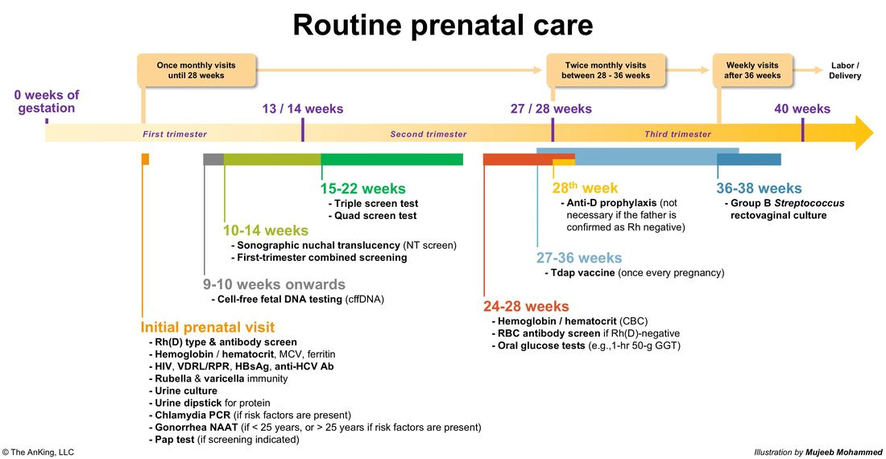
© The AnKing, LLC — Illustration by Mujeeb Mohammed
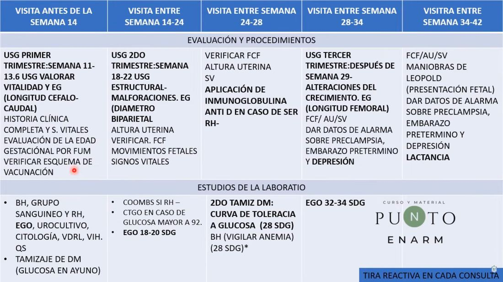
Fuente: Punto ENARM — GPC IMSS. Tira reactiva en cada consulta.
// 8. Semáforo clínico y estudios complementarios
| Variable | Rutina | Precaución | Evaluación urgente |
|---|---|---|---|
| Disnea | Solo con ejercicio intenso, sin limitar actividades | Con ejercicio moderado, tos persistente o asma de inicio reciente | En reposo, ortopnea o disnea paroxística nocturna |
| Frecuencia cardiaca | <90 lpm | 90–119 lpm | ≥120 lpm |
| Presión sistólica | 120–139 mmHg | 140–159 mmHg | ≥160 mmHg o hipotensión sintomática |
| Frecuencia respiratoria | 12–15 rpm | 16–24 rpm | ≥25 rpm |
| SatO₂ | ≥97% | 95–96% | <95% |
| Síncope | Solo tras bipedestación prolongada | Vasovagal típico | De esfuerzo o no provocado |
| Estudio | Utilidad y seguridad |
|---|---|
| Troponina ultrasensible | Se interpreta como en pacientes no embarazadas ante sospecha de SCA; puede elevarse discretamente en preeclampsia grave, TEP, enfermedad renal o posparto. |
| Radiografía de tórax | Útil para cardiomegalia y edema pulmonar; puede realizarse con protección abdominal. |
| Ecocardiograma | Estudio central para función ventricular, válvulas, presiones pulmonares y aorta proximal. |
| RM cardiaca | Sin radiación; útil para VD, aorta, miocardio y cardiopatía congénita. Reservar gadolinio para indicación imprescindible. |
| TC/angiografía | No debe retrasarse ante sospecha de TEP o disección aórtica. El contraste yodado no obliga a suspender lactancia. |
| Prueba de esfuerzo | Idealmente preconcepcional; durante el embarazo se usa protocolo submáximo en pacientes seleccionadas. |
// 9. Válvulas protésicas y anticoagulación
| Esquema | Ventaja | Riesgo principal |
|---|---|---|
| Warfarina | Menor riesgo de trombosis valvular para la madre. | Embriopatía, aborto y muerte fetal; el riesgo aumenta cuando la dosis necesaria es >5 mg/día. |
| HBPM ajustada | No cruza la placenta. | Mayor riesgo de trombosis valvular si la dosis o vigilancia anti-Xa son inadecuadas. |
| HNF ajustada | No cruza placenta y permite reversión rápida. | Requiere vigilancia estricta; dosis subcutáneas bajas son insuficientes para válvula mecánica. |
Algoritmo práctico de anticoagulación
// 10. Cardiopatías congénitas e hipertensión pulmonar
| Lesión materna | Riesgo fetal aproximado | Clave obstétrica |
|---|---|---|
| Estenosis aórtica | 15–18% | Ecocardiograma fetal entre 18–22 semanas. |
| Estenosis pulmonar | 6–7% | Suele tolerarse bien si es leve. |
| CIV | 10–16% | Vigilar evolución a hipertensión pulmonar/Eisenmenger. |
| CIA | 5–11% | Riesgo de embolia paradójica si existe cortocircuito derecha-izquierda. |
| Coartación aórtica | ~14% | Control estricto de presión y vigilancia aórtica. |
| Marfan | 50% | Herencia autosómica dominante; requiere imagen seriada de aorta. |
La circulación depende de precarga y flujo pulmonar pasivo. Existe alto riesgo de aborto, arritmia, insuficiencia cardiaca y tromboembolia posparto.
Frecuente asociación con WPW. Mantener precarga, evitar cambios hemodinámicos bruscos y preferir parto vaginal si está estable.
// 11. Enfermedades de la aorta
| Aorta ascendente en Marfan | Vigilancia | Vía sugerida |
|---|---|---|
| Normal | Cada trimestre | Vaginal |
| <40 mm | Cada 4–6 semanas | Vaginal |
| 40–45 mm | Cada 4 semanas | Cesárea individualizada |
| >45 mm | Valorar cirugía profiláctica | Cesárea en centro con cirugía cardiotorácica |
// 12. Fármacos cardiacos y obstétricos
| Fármaco | Consideración clave |
|---|---|
| IECA / ARA-II / ARNI | Contraindicados: toxicidad renal fetal, oligohidramnios y muerte. |
| β-bloqueadores | Generalmente utilizables; vigilar crecimiento fetal, bradicardia e hipoglucemia neonatal. |
| Amiodarona | Reservar para arritmia potencialmente letal; riesgo de disfunción tiroidea fetal. |
| Digoxina | Compatible; apoyo inotrópico o control de frecuencia. |
| Terbutalina | Taquicardia, hipotensión e isquemia; evitar en miocardiopatía hipertrófica obstructiva. |
| Nifedipina | Puede producir hipotensión crítica en estenosis aórtica grave, HTP o Eisenmenger. |
| Metilergonovina | Vasoespasmo coronario e HTA; evitar en cardiopatía isquémica y aortopatía. Nunca IV. |
| Carboprost | Aumenta presión pulmonar y causa broncoespasmo; evitar en HTP, cardiopatía cianótica o edema pulmonar. Nunca IV. |
| Oxitocina | Administrar lentamente; evitar bolo IV rápido por hipotensión y arritmia. |
// 13. Endocarditis, paro cardiaco y cuidados posparto
No se indica de rutina en parto vaginal o cesárea sin infección. Se reserva para grupos de muy alto riesgo, como válvula protésica, endocarditis previa, cardiopatía cianótica no reparada o valvulopatía postrasplante, según protocolo.
Revisión temprana a los 7–14 días en cardiopatía y valoración cardiovascular integral alrededor de los 3 meses en pacientes de alto riesgo.
Paro cardiaco materno
// 14. Anticoncepción y consejo preconcepcional
| Método | Uso en cardiopatía |
|---|---|
| DIU de cobre o levonorgestrel | Opción reversible preferida en muchas cardiopatías de alto riesgo. |
| Progestágeno solo | Generalmente seguro; individualizar DMPA en anticoagulación o cardiopatía isquémica. |
| Estrógeno combinado | Evitar en cardiopatía isquémica, valvulopatía complicada, HTA no controlada, estados protrombóticos y miocardiopatía. |
| Esterilización | En cardiopatía grave, la vasectomía de la pareja evita riesgos anestésicos maternos; si se realiza en la paciente, preferir estrategia individualizada. |
// Ganancia de Peso (IOM 2009)
| IMC pregestacional | Ganancia total | Ritmo 2°-3°T |
|---|---|---|
| <18.5 (bajo peso) | 12.5–18 kg | ~0.51 kg/sem |
| 18.5–24.9 (normal) | 11.5–16 kg | ~0.42 kg/sem |
| 25–29.9 (sobrepeso) | 7–11.5 kg | ~0.28 kg/sem |
| ≥30 (obesidad) | 5–9 kg | ~0.22 kg/sem |
// Laboratorios por Trimestre
| Estudio | 1T | 2T | 3T | Corte patológico |
|---|---|---|---|---|
| BHC | ✓ | ✓ | Hb <11 g/dL = anemia gestacional | |
| Glucosa ayuno | ✓ | ✓ | ≥92 mg/dL = DMG | |
| CTOG 75g | 24–28 sem | ≥92/180/153 mg/dL (ayuno/1h/2h) | ||
| Urocultivo | ✓ | ✓ | >100,000 UFC → tratar bacteriuria asintomática | |
| VDRL/RPR | ✓ | ✓ | Reactivo → confirmar FTA-ABS | |
| VIH | ✓ | ELISA reactivo → Western blot | ||
| Grupo/Rh | ✓ | Rh(−) → anti-D 28 sem + posparto | ||
| Toxoplasmosis IgG/IgM | ✓ | IgM(+) → aviditez IgG | ||
| Rubeóla IgG | ✓ | IgG(−) = susceptible → vacunar posparto | ||
| Cultivo SGB | 35–37 sem | (+) → penicilina intraparto |
// Suplementación
| Suplemento | Dosis | Inicio | Evidencia / Nota |
|---|---|---|---|
| Ácido fólico | 0.4–0.8 mg/día | Preconcepción | Prevención DTN; 4 mg si riesgo alto (ant. DTN, valproato, DM) |
| Hierro elemental | 30–60 mg/día | 14 sem | WHO: 60 mg si prevalencia anemia >40% |
| Calcio | 1.5–2 g/día | 20 sem | ↓ preeclampsia en pacientes con baja ingesta (NOM-007) |
| Vitamina D | 600 UI/día | 1T | Deficiencia → ↑ riesgo preeclampsia, RCIU, DMG |
| AAS (aspirina) | 100–150 mg/noche | 12–16 sem | Alto riesgo preeclampsia; USPSTF Grado B; ↓ riesgo 18% (Cochrane) |
02Fundamentos de ecografíaPrincipios, seguridad, biometría y orientación del estudio
// Fundamentos de Ecografía Obstétrica
Ondas mecánicas >20,000 Hz (diagnóstico: 2–15 MHz). Imagen se forma por tiempo de retorno del eco y amplitud de la señal.
Abdominal: 3.5–5 MHz | Transvaginal: 5–10 MHz
Escala de Grises: Ecogenicidad
| Término | Apariencia | Ejemplo obstétrico | Mecanismo |
|---|---|---|---|
| Hiperecoico | Blanco brillante | Hueso fetal, plexos coroideos, calcificaciones | Gran diferencia de impedancia acústica → alta reflectancia |
| Isoecoico | Gris medio (referencia) | Parénquima hepático fetal, miometrio | Reflexión moderada y uniforme |
| Hipoecoico | Gris oscuro | Tejido blando fetal, placenta joven | Poca reflexión; tejidos blandos homogéneos |
| Anecoico | Negro puro | Líquido amniótico, vejiga fetal, quistes simples | Sin reflexión; el sonido pasa sin retorno |
Artefactos frecuentes
| Artefacto | Descripción | Relevancia clínica |
|---|---|---|
| Refuerzo posterior | Zona hiperecoica detrás de estructura anecoica | Confirma quiste lleno de líquido |
| Sombra acústica | Zona anecoica posterior a estructura dura | Hueso, cálculos, calcificaciones |
| Reverberación | Ecos múltiples paralelos (efecto "escalera") | Aire en asas intestinales fetales |
// Modos de Ultrasonido
| Modo | Función | Uso obstétrico |
|---|---|---|
| Modo B (Brillo) | Imagen 2D escala grises, tiempo real | Biometría, anatomía — estándar |
| Modo M (Movimiento) | Movimiento vs tiempo (1D) | FCF, arritmias fetales |
| Doppler color | Dirección flujo: rojo (hacia transductor), azul (lejos) | Arteria uterina, umbilical, ACM |
| Doppler pulsado | Velocimetría cuantitativa en vaso específico | IR, IP — vigilancia RCIU |
| 3D/4D | Reconstrucción volumétrica; 4D = tiempo real | Malformaciones de superficie |
03Ecografía del 1.er trimestre11+0–13+6 semanas: datación, anatomía temprana y tamiz
// Ecografía 1° Trimestre (11+0 – 13+6 sem)
| CRL | SDG aprox. | Estructura visible |
|---|---|---|
| 2–5 mm | 5–6 sem | Saco gestacional + vesícula vitelina |
| ~5 mm | ~6 sem | Embrión; latido por TV |
| 10 mm | ~7 sem | Actividad cardíaca obligatoria |
| 45–84 mm | 11–13+6 sem | Ventana TN + anatomía básica |
// Translucencia Nucal (TN)
| TN | Interpretación | Riesgo |
|---|---|---|
| <3.0 mm (p95) | Normal | Bajo riesgo aneuploídías |
| ≥3.0 mm | Aumentada | ↑ T21, T18, T13, Monosomía X, cardiopatías |
| ≥6.5 mm | Higroma quístico | Aneuploídía >50%; Síndrome de Turner |
// Tamizaje Combinado 1T (sensibilidad ~90%, FPR 5%)
| Parámetro | Normal | En T21 |
|---|---|---|
| TN (ecográfico) | <3.0 mm | ↑↑ |
| PAPP-A (suero materno) | MoM ~1.0 | ↓ (MoM <0.5) |
| β-hCG libre (suero materno) | MoM ~1.0 | ↑↑ (MoM >2.0) |
| Hueso nasal (ecográfico) | Presente | Ausente ~65% T21 |
// Anatomía Básica 1T
| Estructura | Normal | Hallazgo anormal |
|---|---|---|
| Cráneo | Anillo hiperecoico completo | Acrania → anencefalia |
| Ventrículos | Plexos coroideos llenan >2/3 (signo mariposa) | Asimetría, plexos no visibles |
| Columna | 3 puntos óseos en corte transversal | Defecto posterior → espina bífida |
| Estómago | Burbuja anecoica izquierda (desde 10–11 sem) | Ausente → atresia esofágica |
| Vejiga | Anecoica pélvica (desde 11–12 sem) | Megavejiga >7 mm → obstrucción tracto urinario |
// Corionicidad en Gemelar
| Tipo | Signo ecográfico 1T | Riesgo principal |
|---|---|---|
| DC-DA (dicoriónico-diamniótico) | Signo lambda (λ) / twin peak | Bajo |
| MC-DA (monocoriónico-diamniótico) | Signo T: tabique fino | STFF 20% |
| MC-MA (monocoriónico-monoamniótico) | Sin membrana divisoria | Muy alto (cordones entrelazados) |
04Ecografía del 2.º trimestre18–22 semanas: estudio morfológico sistemático
// Ecografía 2° Trimestre — US Morfológico (18–22 sem)
// Biometría Estándar
| Medida | Plano | Referencia anatómica | Uso |
|---|---|---|---|
| DBP (Diámetro Biparietal) | Axial | Tálamos + CSP + línea media | Datación, crecimiento |
| CC (Circunferencia Cefálica) | Axial | Elipse pericraneana frontal + occipital | Más precisa en dolicocefalia/braquicefalia |
| CA (Circunferencia Abdominal) | Axial | Vena porta + estómago circular | Más sensible RCIU y macrosomía |
| LF (Longitud Femoral) | Eje largo fémur | Diáfisis sin epífisis; áng 45–90° | Datación; displasias si LF/DBP anómalo |
// Anatomía Fetal (Checklist ISUOG)
Cabeza
| Estructura | Normal | Hallazgo anormal |
|---|---|---|
| CSP | Espacio anecoico rectangular entre cuerpos callosos | Ausente → agenesia CC, holoprosencefalia |
| Ventrículos | Atrio <10 mm a nivel del glomus | ≥10 mm = ventriculomegalia |
| Fosa posterior | DTC mm ≈ SDG hasta ~24 sem; cisterna magna 2–10 mm | Banana sign + Lemon sign → Chiari II + espina bífida |
Tórax y Corazón
| Estructura | Normal | Anormal |
|---|---|---|
| Corte 4 cámaras | Corazón ~1/3 tórax, ápex izquierdo, simetría | Asimetría ventricular, AVSD, hipoplasia |
| LVOT + RVOT | Cruzados ~90° | Transposición GV, Tetralogía Fallot |
| Diafragma | Línea hipoecoica continua | Defecto → HDC |
Abdomen
| Estructura | Normal | Patología |
|---|---|---|
| Estómago | Anecoico, lado izquierdo | Ausente → atresia esofágica; asociar polihidramnios |
| Intestino | Ecoico suave, no distendido | Hiperecoico grado 2–3 → FQ, T21, CMV, RCIU |
| Cordón umbilical | 2 arterias + 1 vena | Arteria única: ↑ riesgo cardiopatía, renal, T18 |
| Pared abdominal | Cerrada, inserción normal | Onfalocele (saco peritoneal, T18/13) vs Gastrosquisis (sin saco) |
// Placenta, LA y Cervicometría
- <5 cm = Oligohidramnios → RCIU, RPM, agenesia renal
- >24 cm = Polihidramnios → DMG, atresia GI, neurológico
- Normal: ≥25 mm a 18–22 sem
- <25 mm → ↑ riesgo parto pretérmino
- <15 mm → riesgo alto; progest. vaginal + cerclaje si indica
- Funnel (embudo): dilatación OCI con LA herniado → insuf. cervical
05Ecografía del 3.er trimestreCrecimiento, líquido, Doppler y bienestar fetal
// Ecografía 3° Trimestre
// Doppler Obstétrico — Vasos Clave
| Vaso | Normal | Anormal | Significado clínico |
|---|---|---|---|
| Arteria Umbilical | IR <0.70; flujo diastólico (+) | AEDV → REDV | ↑ resistencia placentaria; REDV = extracción urgente |
| ACM | IP >1.0; Vpico <1.5 MoM | IP bajo = brain sparing; Vpico >1.5 MoM = anemia | Hipoxia o anemia fetal |
| Ductus Venoso | Onda a positiva | Onda a ausente o reversa | Fallo cardíaco derecho, acidosis terminal |
| Arteria Uterina | IR <0.58 a 24 sem | Notch protodiastolólico bilateral | Predictor preeclampsia y RCIU |
// Perfil Biofísico de Manning
| Parámetro | Normal (2 pts) | Anormal (0 pts) |
|---|---|---|
| Movimientos Respiratorios | ≥1 episodio ≥30 seg en 30 min | Ausentes |
| Movimientos Corporales | ≥3 en 30 min | <3 |
| Tono Fetal | ≥1 extensión/flexión activa | Ausente o lenta |
| LA | Bolsillo ≥2 cm en 2 planos | <2 cm |
| NST | Reactivo ≥2 aceleraciones en 20 min | No reactivo |
| Puntaje | Interpretación | Conducta |
|---|---|---|
| 8–10 | Normal | Expectante; repetir según riesgo |
| 6 | Equívoco | Repetir en 24h; considerar EG |
| 4 | Sospecha asfixia | Hospitalizar; interrupción si ≥34 sem |
| 0–2 | Asfixia probable | Interrupción independiente de EG |
// Placenta — Clasificación Grannum & Acretismo
| Grado Grannum | SDG habitual | Característica |
|---|---|---|
| 0 | <28 sem | Lisa, homogénea |
| I | 28–36 sem | Calcificaciones puntiformes; leve ondulación placa coriónica |
| II | ≥36 sem | Indentaciones en coma; indentaciones a placa basal |
| III | ≥38 sem (<34 = patológico) | Calc. confluentes; áreas anecoicas; compartimentos |
| Acretismo | Invasión | Signo ecográfico |
|---|---|---|
| Acreta | Hasta decidua (sin músculo) | Pérdida línea hipoecoica retroplacentaria |
| Increta | Miometrio | Adelgazamiento miometrial, lagos vasculares |
| Percreta | Serosa → vejiga/órganos | Interrupción interfase vesical, Doppler exagerado |
Fundamentos, técnica e integración clínica · Nivel Internado / USMLE-ENARM
01Fundamentos y ventajasPor qué se prefiere la vía laparoscópica y qué limitaciones introduce
// Fundamentos
Menor dolor posoperatorio, menor estancia hospitalaria, retorno más rápido a la actividad, menor infección de sitio quirúrgico y menor formación de adherencias.
Pérdida de visión tridimensional y retroalimentación táctil, curva de aprendizaje técnica, mayor tiempo quirúrgico inicial y costo de equipo.
02Preparación del paciente y posiciónLitotomía, descompresión visceral, Trendelenburg y repercusiones anestésicas
// Preparación
Posición: litotomía dorsal con brazos aducidos para permitir acceso vaginal simultáneo y uso de manipulador uterino.
Sonda vesical: descomprime vejiga y disminuye riesgo de lesión durante entrada suprapúbica.
Sonda oro/nasogástrica según el caso: descomprime estómago y disminuye riesgo de lesión visceral con aguja de Veress en cuadrante superior izquierdo.
Trendelenburg pronunciado: solo tras confirmar acceso seguro; desplaza intestino delgado hacia epigastrio y mejora exposición pélvica.
Trendelenburg + neumoperitoneo: fisiología relevante
| Cambio | Implicación |
|---|---|
| ↑ retorno venoso y precarga inicial | Después disminuye la distensibilidad pulmonar por desplazamiento cefálico del diafragma. |
| ↑ presión intracraneal e intraocular | Importante en glaucoma o patología intracraneal. |
| Absorción peritoneal de CO₂ | Hipercapnia y acidosis respiratoria leve; se compensan aumentando la ventilación minuto. |
03Acceso a la cavidad abdominalVeress, trocar óptico, Hasson y colocación segura de puertos
// Técnicas de entrada
| Técnica | Descripción | Consideración clave |
|---|---|---|
| Aguja de Veress cerrada | Punción a ciegas umbilical o en punto de Palmer/8.º espacio intercostal izquierdo en cirugía previa; confirmar con prueba de la gota y presión de apertura baja. | Riesgo de inserción preperitoneal o lesión vascular/visceral si no se confirma la posición. |
| Trocar óptico | Inserción bajo visión directa con lente en la punta. | Permite identificar capas de pared abdominal en tiempo real. |
| Hasson abierta | Disección hasta peritoneo bajo visión directa y colocación de trocar romo. | Preferida en cirugía abdominal previa extensa o sospecha de adherencias densas. |
04NeumoperitoneoPor qué se usa CO₂, presión objetivo y señales de mala posición
// CO₂ y presión de trabajo
Alta solubilidad sanguínea, lo que reduce el riesgo de embolia gaseosa clínicamente significativa frente al aire; además, no es combustible y es compatible con electrocirugía.
12–15 mmHg: proporciona exposición adecuada minimizando el compromiso cardiopulmonar.
05Instrumental, óptica y energíaMonopolar, bipolar, ultrasónica, sellado vascular y ergonomía
// Energía quirúrgica
| Modalidad | Mecanismo | Uso / precaución |
|---|---|---|
| Monopolar | Corriente del electrodo activo atraviesa al paciente hacia una placa dispersiva. | Mayor penetración y lesión térmica lateral; riesgo de acoplamiento capacitivo y quemaduras a distancia. |
| Bipolar | Corriente circula entre las dos ramas del instrumento. | Menor diseminación térmica; estándar para hemostasia de anexos y esterilización tubaria. |
| Ultrasónica bisturí armónico | Vibración mecánica de alta frecuencia que desnaturaliza proteínas por fricción. | Menor lesión térmica colateral; corte y coagulación simultáneos. |
| Sellado vascular avanzado | Bipolar con retroalimentación de impedancia tisular. | Sella vasos hasta 7 mm; usado en histerectomía laparoscópica. |
Principios ergonómicos para el taller
- Efecto de fulcro: el movimiento de la punta del instrumento es opuesto al movimiento de la mano.
- Triangulación: cámara e instrumentos forman un triángulo hacia el objetivo; evitar paralelismo y colisiones.
- Pérdida de visión 3D: estimar profundidad con movimiento de cámara, sombras y tamaño relativo.
- Posición de manos: por debajo de la línea de los codos y coordinadas con el eje de cámara para reducir fatiga.
- Sutura intracorpórea: practicar nudo cuadrado con portaagujas + disector manteniendo tensión con la mano no dominante.
06Procedimientos ginecológicos frecuentesIndicaciones típicas y el punto técnico que debes recordar
| Procedimiento | Indicación típica | Punto técnico clave |
|---|---|---|
| Salpingectomía / esterilización tubaria | Anticoncepción permanente; salpingectomía oportunista para reducción de riesgo oncológico. | Bipolar + sección o extirpación completa de la trompa. |
| Quistectomía ovárica | Masa anexial persistente/sintomática con baja sospecha de malignidad. | Preservar tejido ovárico sano y evitar derrame del contenido quístico. |
| Miomectomía laparoscópica | Miomas sintomáticos con deseo de fertilidad. | Cierre por planos del lecho miometrial; considerar morcelación contenida. |
| Histerectomía laparoscópica | Patología uterina benigna sin prolapso importante. | Sellado secuencial de pedículos: redondos, anexos/ovario y arterias uterinas. |
| Embarazo ectópico | Ectópico tubario hemodinámicamente estable. | Salpingostomía vs. salpingectomía; con trompa contralateral sana, fertilidad futura similar y menor recurrencia con salpingectomía. |
07Complicaciones y reconocimiento transoperatorioLesiones de entrada, embolia gaseosa y hemorragia de pared
| Complicación | Dato clave | Manejo inicial |
|---|---|---|
| Lesión vascular mayor aorta / ilíacos | Veress o trocar primario en línea media; más frecuente en pacientes delgadas. | Laparotomía inmediata si hay inestabilidad hemodinámica. |
| Lesión intestinal | Adherencias previas; puede pasar inadvertida y presentarse con peritonitis 2–4 días después. | Reparación laparoscópica o conversión según extensión; alto índice de sospecha posoperatoria. |
| Embolia gaseosa por CO₂ | Insuflación intravascular: caída súbita del CO₂ espirado, hipotensión y “murmullo de rueda de molino”. | Detener insuflación, Trendelenburg izquierdo y aspiración por catéter central si está disponible. |
| Enfisema subcutáneo / neumotórax | Migración extraperitoneal de CO₂ o defecto diafragmático no reconocido. | Generalmente autolimitado; vigilar en insuflación preperitoneal prolongada. |
| Lesión de epigástricos inferiores | Trocar accesorio sin transiluminación o referencia anatómica. | Compresión, sutura en 8 transfascial o electrocoagulación bajo visión. |
08Contraindicaciones relativasCuándo el neumoperitoneo o el acceso mínimamente invasivo pueden ser inadecuados
- Inestabilidad hemodinámica que requiere control quirúrgico inmediato.
- Enfermedad cardiopulmonar grave que no tolera el neumoperitoneo.
- Sospecha de malignidad con riesgo de diseminación por morcelación no contenida o derrame tumoral.
- Múltiples cirugías abdominales previas con adherencias extensas: preferir técnica abierta/Hasson o punto de Palmer.
09Checklist de seguridad para el tallerSecuencia final antes, durante y antes del cierre
Verificar consentimiento informado, sitio quirúrgico y funcionamiento de torre, fuente de luz e insuflador.
Confirmar posición correcta de la aguja de Veress con prueba de la gota y presión de insuflación baja antes de llevar a presión completa.
Inspeccionar la cavidad en 360° inmediatamente después de la entrada del trocar óptico y antes de colocar puertos accesorios.
Verificar hemostasia de todos los pedículos antes de desinsuflar; el neumoperitoneo puede enmascarar sangrado venoso de baja presión.
Contar instrumental y gasas antes del cierre, igual que en cirugía abierta.
// Cesárea
Nacimiento del feto a través de incisiones en la pared abdominal (laparotomía) y en el útero (histerotomía) después de las 22 semanas. Incidencia actual: 5–25% de todos los nacimientos.
Clasificación de Urgencia (NICE)
| Categoría | Descripción | Tiempo decisión–incisión |
|---|---|---|
| Cat. 1 | Amenaza inmediata a vida materna o fetal | <30 min (ideal <20 min) |
| Cat. 2 | Compromiso materno/fetal no inmediato | <75 min |
| Cat. 3 | Sin compromiso; necesidad antes del inicio de trabajo de parto | A conveniencia |
| Cat. 4 | Electiva, a elección materna o planificada | Programada |
Indicaciones
- Estado fetal incierto / sufrimiento fetal agudo (Cat. III NICHD)
- Presentación pélvica (relativa; VCE fallida o contraindicada)
- Presentación transversa persistente
- Prólapso de cordón
- Herpes genital activo en trabajo de parto
- Gemelar MC-MA o primer gemelar no cefálico
- Feto de muy bajo peso (<1500 g, presentación anormal)
- Placenta previa total (materno-fetal)
- DPPNI severo (materno-fetal)
- Distocia (DCP, fallo de progreso refractario)
- Obstrucción mecánica del canal de parto (mioma, tumor)
- Cerclaje permanente previo
- VIH sin TARV o carga viral >1000 copias/mL
- Cardiopatía severa (Eisenmenger, Marfan + ao >45 mm)
// Incisión Abdominal
La selección depende de: urgencia, cicatriz previa, patología asociada, experiencia del cirujano y solicitud del paciente.
| Incisión | Descripción | Ventaja / Uso |
|---|---|---|
| Pfannenstiel (más frecuente) | Transversa curvilínea suprapúbica 2–3 cm sobre sínfisis | Mejor estética, menos dolor postop, menos eventración |
| Maylard | Transversa + división de músculos rectos | Mayor exposición lateral; pelvis obesa o estrecha |
| Cherney | Transversa + desinserción de rectos del pubis | Exposición pélvica amplia sin disección muscular |
| Vertical en línea media | Infraumbilical hasta sínfisis | Urgencia extrema, cirugía abdominal previa, obesidad mórbida |
| Vertical paramedia | Paramedial, respeta línea alba | Poco usada actualmente |
// Tipos de Incisión Uterina
| Tipo | Descripción | Indicación / Comentario |
|---|---|---|
| Transversa baja (Kerr) | En el segmento uterino inferior, transversa | Estándar; 90% de los casos. Menor hemorragia, mejor cicatricial, menor riesgo ruptura futura |
| Vertical baja | Vertical en segmento inferior | Leiomiomatosis, anomalías uterinas, necesidad de extensión |
| Clásica (corporal vertical) | Vertical en cuerpo uterino | Placenta previa total anterior, gestación <28 sem con seg. inferior no formado, posición transversa dorso inferior. PVDC contraindicado tras esta incisión |
Técnica Pfannenstiel-Kerr (estándar)
transversa suprapúbica
separación romas de rectos
pliegue vesico-uterino
transversa segmento inferior
extracción manual vs espontánea
Vicryl 0 o 1
Complicaciones Transoperatorias
| Complicación | Mecanismo | Manejo |
|---|---|---|
| Laceraciones uterinas | Extensión lateral o vertical de la histerotomía | Reparación en el mismo acto quirúrgico; valorar arteria uterina |
| Lesión vesical | Adherencias, vejiga no vaciada, disección inadecuada | Sutura en 2 planos; Foley 7–10 días postop |
| Lesión ureteral | Extensión lateral, ligadura inadvertida | Reparación con urológico; doble J si precisa |
| Lesión GI | Adherencias, apertura inadvertida de intestino | Reparación primaria si simple; ostomía si severa |
| Atonía uterina | Sobredistensión, trabajo de parto prolongado, multiparidad | Masaje + oxitocina + uterotonínicos; B-Lynch si persiste |
Complicaciones Postoperatorias
| Complicación | Punto clave |
|---|---|
| Endomiometritis | Causa infecciosa más común (S. agalactiae, Enterococcus, anaerobios); profilaxis: cefazolina 1–2 g IV preincisión |
| Complicaciones de herida (dehiscencia, hematoma, seroma) | FR: obesidad, DM, cirugía previa, corticosteroides |
| Complicaciones urinarias (ITU, retención) | Catéter Foley 12–24h; hidratación adecuada |
| Desórdenes tromboembólicos (TVP, TEP) | HBPM profiláctica + deambulación temprana; ↑ riesgo x5–10 vs parto vaginal |
| Tromboembolia pélvica séptica | Fiebre persistente pese a ATB + trombosis venosa pélvica; heparina + ATB |
| Acretismo placenta futura | Por cada cesárea previa + placenta anterior: riesgo acreta 25% (1 cesárea), 40% (2 cesáreas) |
// Parto Vaginal con Cesárea Previa (PVDC)
| Resultado | Cesárea electiva repetida | PVDC |
|---|---|---|
| Morbilidad febril | 16.4% | 12.7% |
| Estancia hospitalaria | 85h | 57h |
| Complicaciones tromboembólicas | 0.43% | 0.22% |
| Transfusión | 1.72% | 0.72% |
| Problemas respiratorios neonatales | + | − |
| Histerectomía | 0.2% | 0.2% |
| Ruptura uterina | Rara (<0.01%) | 0.2–1.5% (Kerr); 4–9% (clásica) |
| Muerte perinatal | 0.5% | 0.9% |
| Candidatas PVDC (ACOG) | Contraindicaciones |
|---|---|
| Sin contraindicaciones para parto vaginal | Cicatriz uterina distinta a transversa baja |
| 1 (o máx 2) cicatrices transversas bajas — ACOG recomienda solo 1 | Estrechez pélvica / DCP conocida |
| Sin otra cicatriz uterina previa | Condición que contraindique parto vaginal |
| Disponibilidad de cesárea urgente en el mismo centro | Uso de prostaglandinas (contraindica PVDC — ↑ ruptura) |
- Parto vaginal previo (predictor más potente)
- Score de Bishop favorable
- Indicación pélvica en la cesárea previa
- Edad materna <40 años
- Manejo con oxitocina (aceptable; prostaglandinas contraindicadas)
// Fórceps Obstétrico
Instrumento de uso obstétrico en forma de pinza, diseñado para tomar sin traumatizar la cabeza del feto dentro de la pelvis materna durante el período expulsivo, abreviando el nacimiento en beneficio de la madre y el producto.
Anatomía del Fórceps
| Componente | Descripción |
|---|---|
| Hoja | Porción que toma la cabeza fetal; puede ser fenestrada (agarre más firme, cabeza moldeada) o sólida/no fenestrada (cabeza redondeada, no moldeada) |
| Vástago | Une la hoja con la articulación; determina curvatura pélvica |
| Articulación | Punto de unión entre las dos ramas (inglesa, alemana, francesa, deslizable, del mango, sin articulación) |
| Mango | Porción que el operador sostiene |
| Curvatura cefálica | Se adapta a la curvatura de la cabeza fetal |
| Curvatura pélvica | Se adapta a la curvatura del canal del parto (curva de Carus) |
Tipos de Articulación
| Articulación | Característica | Ejemplo |
|---|---|---|
| Inglesa (fija) | Ramas se articulan rígidamente; más usada | Simpson, Tucker-McLane, Elliot |
| Deslizable | Permite deslizamiento longitudinal de ramas → corrige asinclitismo | Kjelland, Barton |
| Del mango / sin articulación | Articulación incorporada al mango o ausente | Salinas |
Clasificación por Función
| Tipo | Función principal | Ejemplos | Posición indicada |
|---|---|---|---|
| Clásicos | Compresión, tracción | Simpson, Elliot, Tucker-McLane | Salida y bajos; rotación <45°; OA o OP |
| Rotacionales | Rotación + tracción | Kjelland, Barton, Salinas | Rotación >45°; variedades transversas; asinclitismo; medios |
| Cabeza última | Extracción en presentación pélvica | Piper | Cabeza última en presentación pélvica; mantiene flexión |
Fórceps Clásicos — Diferencias Clave
| Fórceps | Hojas | Vástagos | Articulación | Indicación específica |
|---|---|---|---|---|
| Simpson | Fenestradas | Paralelos | Inglesa | Salida/bajos; cabeza moldeada (elongada); rotación <45° |
| Elliot | Fenestradas | Superpuestos | Inglesa | Salida/bajos; cabeza redondeada, no moldeada; rotación <45° |
| Tucker-McLane | Sólidas | Superpuestos | Inglesa | Igual que Elliot pero hojas sólidas (sin fenestrar) |
Fórceps Rotacionales — Diferencias Clave
| Fórceps | Hojas | Articulación | Indicación específica |
|---|---|---|---|
| Kjelland | Fenestradas | Deslizable | Rotación >45°; asinclitismo; fórceps medios; variedad transversa → OA |
| Barton | Vario | Deslizable | Pelvis platipeloide; variedad transversa; raro uso actual |
| Salinas | Sólidas idénticas | Del mango / sin articulación; vástagos convergentes | Rotación pura; NO genera fuerza de compresión — favorito en México |
Clasificación por Estación y Rotación (ACOG)
| Tipo | Estación | Variedad de posición | Rotación máx. |
|---|---|---|---|
| Salida (Outlet) | Cuero cabelludo visible en introito sin separar labios; cráneo en piso pélvico o sobre él | OP, OS, OAD, OPD, OAI, OPI (cabeza en periné) | <45° |
| Bajo (Low) | Punto más declive en estación >+2 cm y no en piso pélvico | 2a: rotación ≤45° | 2b: rotación >45° | Cualquiera |
| Medio (Mid) | Cabeza encajada, pero punto más declive <+2 cm | Cualquiera | Cualquiera |
| Alto — CONTRAINDICADO | Cabeza no encajada | N/A | N/A |
Requisitos para Aplicación (ACOG) — TODAS obligatorias
- Analgesia adecuada (regional o general)
- Posición de litotomía
- Vejiga vaciada (sonda o micción previa)
- Pelvis adecuada (no DCP; pelvimetría clínica)
- Dilatación cervical completa (10 cm)
- Membranas rotas
- Consentimiento verbal o escrito
- Capacidad de realizar cesárea urgente
- Operador EXPERIMENTADO
- Presentación de vértice (o cara mento-anterior)
- Cabeza encajada en pelvis
- Posición fetal conocida con precisión
- Plano de presentación >+2
- No placenta previa
Indicaciones Clínicas
- Enfermedades cardíacas o pulmonares (↓ esfuerzo 2° período)
- Afecciones neurológicas (evitar Valsalva)
- Agotamiento materno
- Segundo período prolongado: nulípara >3h con epi / >2h sin epi; multípara >2h con epi / >1h sin epi
- Procidencia de cordón con cabeza encajada
- DPPNI en expulsivo
- Patrón de FCF Cat. III NICHD en expulsivo
- Sospecha de compromiso fetal inmediato
Técnica: Fórceps OA (Ocípito-Anterior Directa)
exploración bimanual + sutura sagital
mano izq. guía hoja a fosa ilíaca izq. fetal
mano dcha. guía hoja a fosa ilíaca dcha. fetal
verificar aplicación correcta (4 puntos de comprobación)
abajo + atrás → horizontal → arriba
Complicaciones
- Desgarro de cérvix, vagina, periné o vejiga
- Extensión de episiotomía (laceración 3°–4° grado)
- Hemorragia y hematomas
- Ruptura uterina (en fórceps medios o mal aplicados)
- Incontinencia urinaria/fecal tardía
- Lesiones del esfínter anal
- Prolapso de órganos pélvicos a largo plazo
- Marcas faciales y equimosis (frecuentes, transitorias)
- Laceraciones cutáneas
- Cefalohematoma (subperióstico; limitado por suturas)
- Fracturas craneales (raro)
- Hemorragia intracraneal
- Laceraciones tentoriales (muy raro; fórceps mal aplicado)
Fórceps vs Vacuum: fórceps permite rotación activa y es más potente; vacuum está contraindicado <34 sem (hemorragia intracraneal neonatal) y falla si ≥3 deslizamientos. Kjelland = elección para asinclitismo y rotación >45°. Salinas = rotación pura sin compresión. Piper = cabeza última. Fórceps contraindicado si posición fetal desconocida o presentación alta. La incisión clásica uterina contraindica PVDC definitivamente. Las prostaglandinas contraindican PVDC (↑ ruptura). Extracción manual de placenta en cesárea → ↑ sangrado + ↑ endometritis.
// Cerclaje Cervical
Procedimiento quirúrgico que consiste en la colocación de una sutura no absorbible alrededor del cérvix para reforzar la competencia cervical e impedir la dilatación prematura. Su objetivo es prolongar el embarazo en pacientes con insuficiencia ístmico-cervical (IIC) o riesgo elevado de parto pretérmino por factor cervical.
Insuficiencia Ístmico-Cervical (IIC)
La IIC resulta de la incapacidad del cérvix para mantener el embarazo hasta término sin contracciones ni trabajo de parto. El mecanismo es mecánico: debilidad del tejido fibromuscular cervical que permite la dilatación indolora y progresiva del OCI bajo el peso del producto. Resulta en pérdida gestacional de 2T tardío o parto pretérmino extremo.
Causas:
- Trauma cervical previo (conización, LEEP, dilatación instrumental brusca)
- Anomalías müllerianas (útero bicorne, tabique uterino)
- Exposición a DES in utero (histórico)
- Idiopática (la mayoría)
- Gemelar o sobredistensión uterina
Diagnóstico clínico:
- Antecedente de ≥2 pérdidas de 2T sin dolor ni contracciones
- Cérvix corto en USG transvaginal <25 mm entre 16–24 sem
- Dilatación cervical silente en exploración
- Ausencia de contracciones uterinas que expliquen la dilatación
Tipos de Cerclaje
| Tipo | Vía | Técnica | Indicación principal | Retiro |
|---|---|---|---|---|
| McDonald | Vaginal | Sutura en bolsa de tabaco alrededor del cérvix a nivel del OCI; puntos en 4 cuadrantes | 1ª línea para IIC; cérvix corto ultrasonográfico | 37 sem (o trabajo de parto) |
| Shirodkar | Vaginal | Disección de mucosa vaginal, sutura subepitelial más alta cerca del OCI; técnica más compleja | Cerclaje previo fallido, IIC severa | 37 sem o cesárea |
| Transabdominal (TAC) | Abdominal (laparotomía o laparoscopia) | Sutura en istmo uterino a nivel de OCI, por encima de vasos uterinos | Cerclaje vaginal fallido previamente; cérvix muy corto o amputado | Solo por cesárea — permanente |
Indicaciones por Tipo de Evidencia (ACOG / SMFM)
| Indicación | Criterios | Nivel evidencia |
|---|---|---|
| Historia-indicado | ≥3 pérdidas de 2T o ≥3 partos pretérmino espontáneos <34 sem SIN otra causa + IIC sospechada. Colocar entre 12–14 sem | Nivel I (RCT) |
| Ultrasonido-indicado | Cérvix <25 mm en USG TV entre 16–24 sem en gestación única con antecedente de ≥1 parto pretérmino espontáneo <34 sem | Nivel I (metaanálisis) |
| Examen-indicado (rescate) | Dilatación cervical silente 1–4 cm con membranas íntegras antes de 24 sem, sin trabajo de parto activo | Nivel II-III (observacional) |
Momento de Colocación
| Tipo | Momento ideal | Comentario |
|---|---|---|
| Historia-indicado | 12–14 semanas | Después de confirmar viabilidad y anatomía básica. Riesgo de aborto espontáneo <12 sem ya menor |
| Ultrasonido-indicado | Al detectar cérvix <25 mm (16–24 sem) | Progesterona vaginal puede ser alternativa o complemento |
| Examen-indicado (rescate) | Urgente cuando se detecta dilatación silente | Mayor riesgo de falla; requiere descartar corioamnionitis e infección antes |
Contraindicaciones
- Trabajo de parto activo
- Corioamnionitis clínica (fiebre, PCR ↑, líquido turbio)
- Sangrado vaginal activo significativo (DPPNI, placenta previa)
- Anomalía fetal incompatible con la vida
- Membranas rotas (RPM)
- >24+0 semanas (para cerclaje electivo — relativa)
- Membranas prolapsadas al OCI o vagina (aumenta riesgo, no contraindica absolutamente en rescate)
- Gemelar (sin indicación clara de nivel I)
- Vaginosis bacteriana no tratada
- Infección cervicovaginal activa (ITS)
Técnica McDonald (paso a paso)
posición de Trendelenburg
valvas de Sims + manipulación suave
4 puntos en bolsa de tabaco: ant → lat D → post → lat I
dejar cabos largos (3–4 cm) para retiro posterior
Doppler o USG
tracción del cabo; no requiere anestesia habitualmente
Complicaciones del Cerclaje
| Complicación | Frecuencia | Manejo |
|---|---|---|
| RPM postcerclaje | 1–9% (mayor en rescate) | Retiro inmediato del cerclaje + manejo expectante según EG |
| Corioamnionitis | 1–5% | Retiro urgente + antibióticos + resolución del embarazo |
| Trabajo de parto pretérmino | Variable | Retiro si TDP activo ≥3 cm; tocolisis breve puede considerarse |
| Sangrado / laceración cervical | Infrecuente | Compresión directa; sutura si persiste |
| Desplazamiento o migración | Raro | Requiere revisión y recolocación |
| Distocia cervical (fallo de dilatación) | Raro — si no se retira a tiempo | Retiro inmediato; puede requerir dilatación cervical adicional |
McDonald = 1ª línea, técnica más simple, retiro ambulatorio a 37 sem. Shirodkar = subepitelial, más alto, técnicamente más difícil. TAC = única opción con cérvix amputado o cerclaje vaginal fallido previo; siempre cesárea. Indicación historia-indicada: ≥3 pérdidas 2T; colocar 12–14 sem. Indicación USG: cérvix <25 mm + ≥1 parto pretérmino previo; NO en gemelar sin antecedente. Contraindicaciones absolutas: trabajo de parto, corioamnionitis, RPM, DPPNI. RPM postcerclaje → retirar sutura inmediatamente. La distocia cervical puede ocurrir si el cerclaje no se retira antes del parto vaginal. Progesterona vaginal (200 mg/noche) es alternativa al cerclaje USG-indicado en gestación única sin antecedente de parto pretérmino.
// Amenaza de Parto Pretérmino (APP)
Contracciones uterinas regulares con cambios cervicales documentados (borramiento y/o dilatación) antes de las 37+0 semanas de gestación. El parto pretérmino es responsable del ~75% de la mortalidad neonatal y es la causa más importante de morbilidad neonatal a largo plazo. El límite inferior de viabilidad es considerado convencionalmente las 22+0 semanas (algunas instituciones 23+0 sem).
Clasificación por Edad Gestacional
| Categoría | Edad gestacional | Relevancia clínica |
|---|---|---|
| Extremadamente prematuro | <28+0 sem | Mayor morbimortalidad; límite de viabilidad; MgSO₄ neuroprotector obligatorio |
| Muy prematuro | 28+0 – 31+6 sem | Riesgo alto de SDR, HIV, ECN; corticoides + MgSO₄ |
| Moderadamente prematuro | 32+0 – 33+6 sem | Riesgo moderado; corticoides indicados |
| Tardío prematuro (late preterm) | 34+0 – 36+6 sem | 80% de todos los prematuros; aparenta madurez pero tiene riesgos significativos |
// Fisiopatología
1. Activación prematura del eje HHA fetal
- Estrés materno o fetal → ↑ CRH placentario
- ↑ cortisol fetal → activación miometrial prematura
- Asociado a embarazo múltiple, RCIU, preeclampsia
2. Inflamación / Infección
- Causa más frecuente en prematuros <30 sem
- Bacterias producen fosfolipasas → liberación de PGE₂/PGF₂α
- Infección intraamniotica, vaginosis bacteriana, IU asintomática
- Microorganismos frecuentes: Ureaplasma urealyticum, GBS, Fusobacterium
3. Hemorragia decidual
- Hematoma retroplacentario o decidual
- Trombina activa proteasas → degradación de matriz extracelular de membranas
- Trombina también estimula contracciones uterinas directamente
- Explica asociación entre sangrado 1T-2T y parto pretérmino
4. Sobredistensión uterina
- Gemelar, polihidramnios, anomalías müllerianas
- → ↑ expresión de connexina-43 y receptores de oxitocina
- → contracciones prematuras
// Factores de Riesgo
| Factor | Riesgo relativo aproximado | Mecanismo |
|---|---|---|
| Parto pretérmino previo (mismo o diferente padre) | ↑↑↑ (OR 3–5) | Predisposición genética + inflamatoria; predictor más potente |
| Cérvix corto (<25 mm antes 24 sem) | ↑↑↑ | IIC, deficiencia estromal cervical |
| Gemelar | ↑↑ (riesgo 50%) | Sobredistensión + STFF + eje HHA |
| Vaginosis bacteriana | ↑↑ | Producción de fosfolipasas por flora anaerobia |
| Sangrado vaginal en 1T–2T | ↑↑ | Hemorragia decidual → trombina |
| Infecciones urinarias | ↑ | Bacteriuria asintomática → inflamación sistémica |
| IMC bajo (<18.5), tabaquismo, drogas | ↑ | Inflamación, vasoconstriccion, RCIU |
| Interval intergenésico <6 meses | ↑ | Deficiencia de folatos, infección ascendente |
| Anomalías uterinas (tabique, bicorne) | ↑ | Sobredistensión focal, vascularización anormal |
| LEEP / conización previa | ↑ | Acortamiento y debilidad cervical iatrogénica |
// Diagnóstico
▸ Confirmación con RCTG: Las contracciones se objetivan mediante registro cardiotocográfico externo (tocodinamómetro). Documenta frecuencia, duración e intensidad relativa. Permite evaluar simultáneamente el bienestar fetal (FCF basal, variabilidad, aceleraciones) y detectar patrones Cat. II–III que requieren manejo urgente independientemente de la EG.
APP vs. Trabajo de Parto Pretérmino Instaurado*
| Cuadro | Dilatación cervical | Conducta típica |
|---|---|---|
| Amenaza de Parto Pretérmino (APP) | ≥2 cm (y <4 cm) | Tocolísis + corticoides ± MgSO₄ |
| Trabajo de Parto Pretérmino instaurado | ≥4 cm | Tocolísis ya poco útil/no indicada; foco en corticoides urgentes, MgSO₄ neuroprotector si <32 sem, preparar para el parto |
*Corte usado comúnmente en el ámbito mexicano/latinoamericano. La bibliografía varía: algunas fuentes españolas (SEGO) usan otros puntos de corte (p. ej. <2 cm = fase prodrómica; ≥5 cm = trabajo de parto avanzado como contraindicación relativa/absoluta de tocolísis).
Herramientas Diagnósticas
| Herramienta | Umbral | VPN | Comentario |
|---|---|---|---|
| Cervicometría (USG TV) |
Embarazo único: • <28 sem: ≤25 mm • 28+0–31+6 sem: ≤20 mm • ≥32 sem: ≤15 mm Embarazo múltiple: • <24 sem: ≤25 mm • 24+0–27+6 sem: ≤20 mm • ≥28 sem: ≤10 mm Técnica: vejiga vacía, eje longitudinal, cérvix ocupa 50–75% imagen, sin presión excesiva con sonda, mínimo 3 medidas, usar la menor | ~98% | Cérvix corto + funneling u/o sludge = mayor riesgo que cérvix corto aislado. En sintómaticas: Cx ≥15 mm = parto en 7 días improbable (OR 101; Tsoi 2003). El cribado universal en asintomáticas tiene evidencia débil (SEGO 2020). |
| Fibronectina fetal (fFN) | ≥50 ng/mL en secrecion cervicovaginal 22–34 sem | ~99% (negativo) | Alta VPN; VPP bajo (~20%). Útil si NEGATIVO → descarta parto en 7 días |
| PAMG-1 (AmniSure / Parto Sure) | Positivo | Alta | También detecta RPMP; no usar como única prueba |
| Longitud cervical + fFN combinados | Cx <30 mm + fFN + | Mayor precisión | Combinación más útil en práctica clínica |
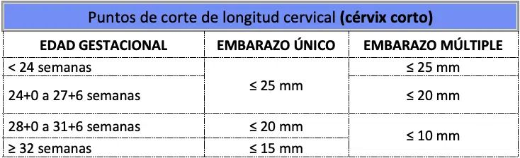
Fuente: Protocolo APP — GAP SEGO 2020 / AulaGinecología.com
// Manejo Inicial
FUR fiable o eco 1T
corioamnionitis, DPPNI, sufrimiento fetal, RPM
contracciones + cambio cervical objetivo
vagino-rectal si desconocido
según EG
ganar 48h para corticoides
// Corticosteroides Antenatales
| EG | Indicación | Esquema |
|---|---|---|
| 23+0 – 33+6 sem | Recomendado (Nivel A) | Betametasona 12 mg IM c/24h ×2 dosis o Dexametasona 6 mg IM c/12h ×4 dosis |
| 34+0 – 36+6 sem (late preterm) | Recomendado si no se dio previamente | Betametasona 12 mg IM c/24h ×2 dosis (sólo si parto en 24h–7 días y sin corioamnionitis) |
| <23+0 sem (periviable) | No recomendado antes de viabilidad | Individualizar según consenso institucional |
Beneficios: ↓ SDR (RR 0.66), ↓ HIV (RR 0.54), ↓ ECN (RR 0.54), ↓ mortalidad neonatal (RR 0.69) — Cochrane 2017. Efectos máximos entre 24h y 7 días post-administración.
// Sulfato de Magnesio para Neuroproteccion
Indicado cuando se anticipa parto antes de 32+0 semanas. Reduce riesgo de parálisis cerebral en sobrevivientes (RR 0.71; IC95% 0.55–0.91 — Cochrane). El 85% de las pacientes en los RCTs tenían RPMP.
El Mg²⁺ actúa como antagonista fisiológico del Ca²⁺ a nivel del SNC fetal; no es un mecanismo tocolítico clásico, sino neuroprotector directo sobre la sustancia blanca periventricular (zona vulnerable por inmadurez de preoligodendrocitos entre 24–32 sem):
- Bloqueo voltaje-dependiente del receptor NMDA — el Mg²⁺ ocupa el poro del canal en reposo; durante hipoxia-isquemia el glutamato se libera en exceso y despolariza la neurona, pero el bloqueo por Mg²⁺ limita la entrada masiva de Ca²⁺ intracelular (mecanismo central de la excitotoxicidad)
- Inhibición de canales de Ca²⁺ voltaje-dependientes presinápticos (tipo N y P/Q) → ↓ liberación presináptica de glutamato
- Estabilización vascular cerebral fetal → atenua fluctuaciones de presión/flujo que predisponen a hemorragia de la matriz germinal e isquemia periventricular
- Efecto antiinflamatorio — ↓ citocinas proinflamatorias (IL-6, TNF-α) implicadas en leucomalacia periventricular
- Efecto antiapoptótico — ↓ activación de caspasas en neuronas vulnerables a la lesión hipóxico-isquémica
Resultado clínico: menor incidencia y severidad de parálisis cerebral y disfunción motora gruesa en sobrevivientes prematuros expuestos in útero, sin diferencia significativa en mortalidad perinatal.
| Régimen | Dosis de carga | Mantenimiento | Duración |
|---|---|---|---|
| SEGO 2020 | 4 g IV en 20–30 min | 1 g/h IV | 12h (iniciar ≥4h antes de finalizar la gestación; a las 12h valorar continuar según inminencia del parto) |
- BEAM / NICHD: 6 g IV en 40 min (carga) + 2 g/h IV (mantenimiento) — hasta parto o 12h
- PREMAG: 4 g IV en 30 min — dosis única, sin mantenimiento
// Tocolíticos
| Fármaco | Mecanismo | Dosis / Vía | Contraindicaciones / EA relevantes |
|---|---|---|---|
| Nifedipino (1ª línea) | BCC → ↓ Ca²⁺ intracelular | 10–20 mg VO c/6h (mantenimiento) | Hipotension, bloqueo AV; NO combinar con MgSO₄ (riesgo bloqueo neuromuscular). Evidencia Nivel I |
| Indometacina (elección <24 sem e incompetencia cervical) | AINE → ↓ PGE₂/PGF₂α vía COX | 50–100 mg VO/rectal, luego 25 mg c/6h | Tocolítico de elección cuando APP aparece <24 sem o en IIC (SEGO 2020). Máx 48h; contraindicado >32 sem por riesgo de cierre prematuro del DA y oligohidramnios |
| Atosiban (antagonista OT) | Bloquea receptor de oxitocina + vasopresina | Bolo IV + infusión en ciclos de 48h (máx 3 ciclos) | Fármaco de elección en: gestación múltiple, cardiopatía materna y pacientes con tratamiento antihipertensivo (SEGO 2020). Menos EA que β-agonistas. Disponible en México y Europa; no en EUA |
| Terbutalina / Ritodrine (β₂-agonistas) | → ↑ AMPc → ↓ Ca²⁺ miosin-quinasa | SC / IV | Taquicardia materna, hipoglucemia, edema pulmonar; ritodrine retirado del mercado EUA; uso muy limitado |
- Reposo absoluto en embarazos únicos — no ha demostrado beneficio
- Sueroterapia para hidratación rutinaria — no indicada
- Tocolisis de mantenimiento >48h — no reduce parto ni mejora resultados neonatales
- β-bloqueantes (ritodrina) — deben evitarse; existen alternativas igual de eficaces con mejor perfil de seguridad
Índice Tocolítico de Gruber-Baumgarten — Puntos de Corte
| Puntaje Total | Interpretación |
|---|---|
| 0–4 | Tocolísis muy probablemente efectiva |
| 5–9 | Tocolísis probablemente efectiva |
| 10–13 | Tocolísis de efectividad dudosa |
| >13 | Tocolísis NO indicada — trabajo de parto demasiado avanzado |
Puntúa 5 variables (dinámica uterina, rotura de membranas, sangrado, dilatación y borramiento cervical) de 0–4 cada una. A mayor puntaje, menor probabilidad de éxito de la tocolísis.
// Profilaxis de SGB en APP
- Obtener cultivo vagino-rectal para SGB si no hay resultado reciente (<5 semanas)
- Si SGB positivo o desconocido con parto inminente <37 sem: iniciar profilaxis con penicilina G 5 millones U IV c/4h (o ampicilina 2 g IV luego 1 g c/4h) hasta el parto
- Si SGB negativo en <5 semanas: no requiere profilaxis
- Alérgica a penicilina con bajo riesgo de anafilaxia: cefazolina 2 g IV c/8h
- Alérgica con alto riesgo + SGB sensible a clindamicina: clindamicina 900 mg IV c/8h
- Resistente o sin antibiograma: vancomicina 1 g IV c/12h
// Prevención del Parto Pretérmino Recurrente
| Intervención | Indicación | Evidencia | Inicio |
|---|---|---|---|
| Progesterona vaginal (200 mg/noche) | Cérvix <25 mm en 16–24 sem (gestación única) | Nivel I (Cochrane; PREGNANT trial) | Al detectar Cx corto hasta 36+6 sem |
| 17-OHP-C (caproato) (250 mg IM/sem) | Antecedente de parto pretérmino espontáneo previo (gestación única) | Nivel I (Meis 2003 NEJM) | 16–20 sem hasta 36+6 sem |
| Cerclaje | Antecedente PP <34 sem + Cx <25 mm + gestación única | Nivel I (Berghella 2011) | 16–24 sem |
| Pesario cervical | Cx corto en gestación única o gemelar; resultados mixtos en gemelos | Nivel I variable (PECEP, ProTWIN) | 20–24 sem |
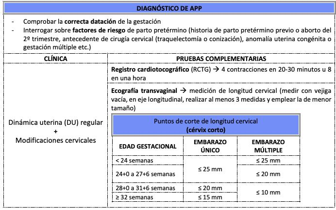
Fuente: AulaGinecología.com — Protocolo APP. NICE 2015 / SEGO GAP 2020 / Hospital Clínic Barcelona 2015.
Score de Bishop — Punto de Corte para Inducción
| Puntaje | Interpretación |
|---|---|
| ≥6 | Cérvix favorable — inducción con oxitocina directa; alta probabilidad de parto vaginal exitoso |
| <6 | Cérvix desfavorable — requiere maduración cervical previa (prostaglandinas/misoprostol o métodos mecánicos) antes de inducir |
- Cunningham FG, Williams JW. Williams Obstetrics, 26ª ed. McGraw-Hill, 2018 — fisiopatología, corticoides, MgSO₄, tocolíticos
- Sociedad Española de Ginecología y Obstetricia (SEGO). Guía de Asistencia Práctica: Amenaza de Parto Pretérmino, 2020 — diagnóstico (puntos de corte Cx, RCTG), tocolíticos (atosiban, indometacina), prevención
- National Institute for Health and Care Excellence (NICE). Preterm labour and birth, 2015 — manejo clínico, tocolíticos
- Hospital Clínic de Barcelona. Protocolo: Amenaza de Parto Pretérmino, 2015 — algoritmo de manejo clínico
- ACOG / SMFM. Cervical length screening and progesterone supplementation for preterm birth prevention — indicaciones de progesterona y cerclaje
Diagnóstico: contracciones + cambio cervical OBJETIVO <37 sem. La fFN negativa tiene VPN ~99% — descarta parto en 7 días. Corticoides: betametasona 12 mg IM c/24h ×2 = estándar; máximos beneficios entre 24h y 7 días post-dosis. MgSO₄: neuroprotector <32 sem; antidoto = gluconato de calcio. Tocolítico 1ª línea: nifedipino; NO combinar con MgSO₄ (riesgo bloqueo neuromuscular). Indometacina: <32 sem, máx 48h (cierre DA y oligohidramnios). Corioamnionitis = contraindicación absoluta de tocolísis y corticoides; resolver embarazo + ATB IV inmediatos. Prevención: progesterona vaginal si Cx <25 mm; 17-OHP-C si antecedente de PP. 4 vías patogénicas: infección, hemorragia decidual, sobredistensión uterina, activación prematura HHA.
// Ruptura Prematura de Membranas (RPM)
Ruptura de membranas coriamnióticas antes del inicio del trabajo de parto, independientemente de la edad gestacional. Si ocurre antes de las 37+0 semanas = RPMP. Conlleva un 35% de morbimortalidad materno-fetal. Latencia inversamente proporcional a la EG.
Clasificación
| Tipo | EG | Incidencia | Complicación principal |
|---|---|---|---|
| RPM a Término | ≥37+0 sem | ~8% | Infección intrauterina → ↑ con duración de ruptura |
| RPMP tardío | 35+0–36+6 sem | Incluida en RPMP | SDR, sepsis neonatal; corticoides controversiales |
| RPMP clásico | 23+0–34+6 sem | ~2–3% | Prematuridad, infección (15–35% corioamnionitis clínica), DPPNI (2–5%) |
| RPMP periviable | <23 sem | <1% | Hipóplasia pulmonar, deformaciones (Potter), mortalidad alta (supervivencia 30–60%) |
// Fisiopatología
Debilitamiento fisiológico progresivo (apoptosis de amnio y corión) + fuerzas de cizallamiento de contracciones uterinas. Mecanismo normal al término.
Infección/inflamación intraamniotica = causa más frecuente (especialmente <30 sem). Bacterias producen fosfolipasas → PGE₂/PGF₂α + colagenasas que degradan membranas. Otros mecanismos: hemorragia decidual (trombina → MMP), sobredistensión, deficiencia de colágeno tipo III, tabaquismo, LEEP previo.
// Manejo Inicial ante Sospecha de RPM
- Motivo de consulta y características del líquido (cantidad, aspecto, momento de inicio)
- Datación de la gestación (preferible eco 1T / FUR establecida en eco semana 12)
- Factores de riesgo: PP previo, aborto 2T, cirugía cervical (traquelectomía, conización), anomalía uterina congénita, gestación múltiple, cerclaje
- Exploración vaginal con espéculo: confirmar RPM, describir cantidad y aspecto del líquido
- Evitar el tacto vaginal digital — aumenta riesgo de infección y acorta el tiempo de latencia; reservar sólo si hay dinámica uterina activa o trabajo de parto inminente
- Valorar signos de corioamnionitis (fiebre, taquicardia materna/fetal, sensibilidad uterina, líquido fétido)
- Confirmación de RPM: pooling en fórnix posterior + pH (Nitrazina) + cristalización (ferning)
- Cervicometría (USG TV): cérvix corto en RPMP es raro pero es factor de riesgo de parto en 7 días
- Ecografía fetal: estática fetal, biometría, valoración de LA (CVM) y anejos ovulares
- RCTG: valoración de bienestar fetal y dinámica uterina
- Analítica completa: hemograma, coagulación, bioquímica y PCR (si no realizada recientemente)
- Urocultivo
- Cultivo vagino-rectal SGB: tratar si positivo o desconocido con penicilina; en gestaciones <34 sem, amoxicilina-clavulánico NO es de primera elección (↑ riesgo ECN)
- Amniocentesis diagnóstica (opcional — ver sección específica)
// Diagnóstico de RPM
| Método | Hallazgo positivo | Limitaciones |
|---|---|---|
| Pooling en fórnix posterior | Líquido amniótico visible | Falso negativo si ruptura antigua y escaso LA |
| pH (Nitrazina) | pH >7.0–7.1 (LA normal 7.1–7.3 vs vaginal 3.8–4.5) | Falso (+): sangre, semen, VB, antisépticos alcalinos |
| Arborización (ferning) | Patrón de cristalización en microscopio | Falso (+) con moco cervical; falso (-) con sangre |
| USG (ILA/CVM) | Oligohidramnios | No diagnóstico; útil como adjunto |
| PAMG-1 (AmniSure) | Positivo | FP 19–30% en labor con membranas íntegras; FDA alertó sobre sobredependencia |
| Fibronectina fetal | Sensible pero no específica; VPN alto | Positivo no diagnostica RPMP |
| Índigo carmin intraamniotico | Coloración azul en tampón vaginal 20–30 min | Casos equívocos; escasez del colorante |
// Antibioterapia en RPMP
La antibioterapia redujo corioamnionitis, nacimiento en las primeras 48h y la infección neonatal. No ha demostrado reducción significativa de mortalidad perinatal a largo plazo. Hay que cubrir los gérmenes más frecuentes en complicaciones materno-fetales.
Pautas más usadas (no existe evidencia clara de superioridad de una sobre otra):
- Pauta A: Ampicilina 2g/6h IV + Ceftriaxona 1g/12h IV + Claritromicina 500mg/12h VO
- Pauta B: Ampicilina 1g/6h IV + Gentamicina 80mg/8h IV + Azitromicina 1g/72h VO
- Pauta ORACLE (NICHD): Ampicilina + Eritromicina IV ×48h → Amoxicilina + Eritromicina VO ×5 días
Cobertura por Antibiótico
| Antibiótico | Gérmenes que cubre |
|---|---|
| Ampicilina | Estreptococo grupo B (SGB), Listeria, Enterococo spp, Gardnerella vaginalis, anaerobios |
| Gentamicina | Escherichia coli y otras enterobacterias gram-negativas |
| Cefoxitina | E. coli, enterobacterias y anaerobios |
| Clindamicina | Anaerobios y micoplasmas; NO cubre Ureaplasma spp.; 15% de EGB resistentes |
| Macrólidos (eritromicina, azitromicina, claritromicina) | Cubren bien Ureaplasma spp.; 20–25% de resistencia al EGB |
| Piperacilina-Tazobactam | Amplio espectro; usado en sospecha de corioamnionitis (4g/6h IV) |
Duración según Resultado de Amniocentesis
| Sin consumo glucosa, ausencia gérmenes y sin alt. analíticas | Consumo glucosa, presencia gérmenes o alt. analíticas | Sin amniocentesis disponible | Cuadro sugestivo de infección |
|---|---|---|---|
| Suspender ATB a las 48h | Mantener hasta resultado del cultivo de líquido amniótico | Completar pauta antibiotica establecida (7 días) | Piperacilina-Tazobactam 4g/6h IV + Claritromicina 500mg/12h VO. Ante sospecha de corioamnionitis → finalizar gestación |
// Amniocentesis Diagnóstica
La infección es la etiología más frecuente de RPMP, y la mayoría de estas infecciones son subclínicas (sin criterios Gibbs). En algunos centros se realiza amniocentesis diagnóstica entre las semanas 20–34 para detectar inflamación/infección intraamniotica subclínica.
Rendimiento Diagnóstico de Marcadores en LA
| Test | Sensibilidad (%) | Especificidad (%) | VPP (%) | VPN (%) |
|---|---|---|---|---|
| Tinción de Gram | 24 | 99 | 91 | 68 |
| Glucosa (<10 mg/dL) | 57 | 74 | 57 | 74 |
| IL-6 (7.9 ng/mL) | 81 | 75 | 67 | 86 |
| Leucocitos (≥30/mm³) | 57 | 78 | 62 | 75 |
Un cultivo positivo se asocia con: mayor tasa de prematuridad, sepsis neonatal, dificultad respiratoria, enfermedad crónica pulmonar, leucomalacia periventricular, HIV y parálisis cerebral.
// Manejo por Edad Gestacional
- Confirmar EG, presentación fetal y bienestar fetal (RCTG)
- Profilaxis SGB según indicación
- Inducción del trabajo de parto recomendada (23 RCTs, n=8,615; ↓ corioamnionitis, ↓ endometritis, ↓ UCIN, sin ↑ cesárea — Cochrane 2017)
- Manejo expectante hasta 12–24h: el 80–95% inician labor espontáneamente
- SGB positivo → inducción inmediata sin esperar; no diferir para profilaxis
- Evolución espontánea hasta 12–24h; pasado ese tiempo → inducción del parto
- Ingreso hospitalario + antibioterapia profiláctica al ingreso
- Corticoterapia: NO indicada de forma rutinaria (aunque algunos autores la propugnan hasta 36+6 sem)
- Tocolisis: NO indicada
- Finalización: conducción expectante hasta 12–24h → inducción si no hay labor espontánea
- PPROMT trial (Lancet 2016, n=1,839): parto inmediato vs expectante — sin diferencia en sepsis neonatal; parto inmediato → ↑ SDR (RR 1.6) y vent. mecánica (RR 1.4)
- Ingreso hospitalario. Manejo expectante (Nivel A, ACOG) si no hay contraindicaciones
- Antibioterapia de latencia 7 días (ORACLE I): Ampicilina + Eritromicina IV ×48h → Amoxicilina + Eritromicina VO ×5 días. Azitromicina = alternativa. Amoxicilina-clavulánico CONTRAINDICADO (↑ ECN)
- Corticoterapia: Betametasona 12 mg IM ×2 dosis (c/24h) entre 24+0 y 34+6 sem. Dosis de recuerdo antes de 34+0 sem si parto inminente y primera dosis >7 días antes (máx 3 dosis de recuerdo)
- MgSO₄ neuroprotector: en <32+0 sem con parto inminente (bolus 4g IV + 1g/h — protocolo SEGO)
- Cultivo vagino-rectal SGB + profilaxis según resultado
- Valorar amniocentesis diagnóstica (especialmente en <28 sem con signos de infección subclínica)
- Tocolisis: NO de rutina; puede considerarse justificado para traslado a centro terciario o para completar corticoides (máx 48h, sin signos de infección)
- NO progesterona vaginal (riesgo teórico de infección en membranas rotas)
- Finalizar a las 34+0 sem — vía vaginal si no hay contraindicación
- Complicación poco frecuente (<1%) pero con importante repercusión materno-fetal
- Supervivencia fetal: 30–60%; el principal determinante será la prematuridad extrema
- Complicación más grave: hipóplasia pulmonar (mortalidad muy elevada; indicador de riesgo: oligohidramnios severo CVM <1 cm)
- Consejería sobre opciones: manejo expectante vs terminación del embarazo (inducción / D&E)
- Antibioterapia puede considerarse desde 20+0 sem (extiende latencia)
- Corticoides, MgSO₄, tocolisis y profilaxis SGB NO recomendados antes de viabilidad
- Manejo ambulatorio posible tras evaluación hospitalaria inicial si no hay signos de infección
- Individualizar — consensuar con progenitores debidamente informados
Indicaciones de Parto en Cualquier EG
| Indicación | Acción |
|---|---|
| Corioamnionitis clínica | Parto inmediato + ATB IV; no diferir por EG |
| RCTG Cat. III / Compromiso fetal | Parto inmediato |
| DPPNI significativo | Parto inmediato |
| Sangrado vaginal activo | Evaluar DPPNI; considerar parto según magnitud y EG |
Cerclaje + RPMP
- Cunningham FG, Williams JW. Williams Obstetrics, 26ª ed. McGraw-Hill, 2018. Cap. 42, pág. 107
- Danforth DN. Danforth's Obstetrics and Gynecology, 10ª ed. Capítulo 11
- ACOG Practice Bulletin #217: Prelabor Rupture of Membranes. Obstet Gynecol 2020;135:e80–97
- AulaGinecología.com — Rotura Prematura de Membranas Pretérmino. Protocolo SEGO / Hospital Clínic de Barcelona
- Kenyon SL et al. (ORACLE I). Lancet 2001;357:979–88
- Morris JM et al. (PPROMT trial). Lancet 2016;387:444–52
- Middleton P et al. Cochrane 2017 — inducción vs expectante en RPM a término
Diagnóstico: pooling + pH + ferning (clínico); PAMG-1 FP 19–30%; evitar tacto digital (↑ infección + ↓ latencia). Término: inducción (↓ corioamnionitis sin ↑ cesárea); GBS+ → no demorar. 35–36+6 sem: ATB profiláctico, sin corticoides ni tocolisis; expectante 12–24h. <34 sem: expectante + ATB latencia 7 días (ampicilina + eritromicina IV → amoxicilina + eritromicina VO); amoxicilina-clavulanato CONTRAINDICADO (ECN). Corticoides: 24–34+6 sem. MgSO₄: <32 sem. Corioamnionitis = parto inmediato sin importar EG. Finalizar a sem 34 en RPMP sin complicaciones. Periviable: supervivencia 30–60%; hipóplasia pulmonar si oligohidramnios severo (CVM <1 cm). Amniocentesis: IL-6 mejor sensibilidad; Gram mejor especificidad. Tacto vaginal: SOLO si trabajo de parto activo.
// Corioamnionitis (Infección Intraamniotica)
La infección intra-amniotica (IIA) se asocia con complicaciones maternas, fetales y neonatales potencialmente muy graves. Aunque el término corioamnionitis sigue siendo el más utilizado, actualmente se prefiere infección intra-amniotica ya que puede involucrar el líquido amniótico, el cordón y la placenta, además de las membranas fetales. Se ha propuesto el término "Triple I" (Infección-Inflamación Intrauterina) para abordar la heterogeneidad de esta situación, incluyendo la posibilidad de inflamación sin infección.
// Epidemiología y Factores de Riesgo
| Situación clínica | Prevalencia de corioamnionitis |
|---|---|
| Parto pretérmino que se inicia como RPMP | 50% |
| RPMP sin antibioterapia | 25% |
| Parto con >8 exploraciones vaginales | 20% |
| Cesárea en trabajo de parto | 12% |
| RPM a término >24h | 40% |
| RPM a término | 7% |
| Partos a término en general | 1–2% |
- Parto prolongado y rotura de membranas (principales)
- Tactos vaginales múltiples (>8 exploraciones)
- Líquido amniótico teñido de meconio
- ETS e infecciones genitales
- Estreptococo grupo B (SGB)
- Vaginosis bacteriana
- Tabaco y alcohol
- RPMP / RPM a término sin tratamiento antibiótico
// Microbiología
La IIA habitualmente es polimicrobiana y procedente de la flora cervicovaginal o entérica. Los gérmenes más frecuentes son anaerobios (sobre todo en corioamnionitis pretérmino), como Gardnerella o Bacteroides, bacilos entéricos Gram-negativos y Streptococcus agalactiae (SGB). Mycoplasma y Ureaplasma están presentes en el 70% de las mujeres pero no está claro que sean verdaderos agentes causales.
Excepcionalmente puede producirse por vía hematógena (Listeria, S. aureus), por contaminación tras procedimiento invasivo, o por vía ascendente desde las trompas de Falopio. Barreras protectoras que desaparecen al romperse la bolsa: moco cervical, placenta, membranas amnióticas y acción antimicrobiana de los Lactobacillus.
// Clínica
La corioamnionitis puede aparecer con la bolsa rota (RPM/RPMP) o con bolsa íntegra. La IIA también puede ser subclínica, manifestándose como APP, RPM o RPMP sin criterios clínicos evidentes.
| Signo/Síntoma | Frecuencia | Notas clínicas |
|---|---|---|
| Fiebre materna | 100% (criterio indispensable) | No hay umbral específico de corioamnionitis; puede ser por epidural, fármacos, infecciones extrauterinas |
| Leucocitosis | 70–90% | Inespecífica; puede elevarse por corticoides o trabajo de parto |
| Taquicardia materna | 50–80% | Puede ser por dolor, epidural o medicamentos |
| Taquicardia fetal | 40–70% | ↑ sensibilidad en pretérmino; también por hipoxemia o medicamentos |
| Sensibilidad uterina | 4–25% | Baja frecuencia; puede confundirse con DPPNI |
| Bacteriemia materna | 5–10% | SGB y E. coli producen bacteriemia en 15–18% |
| Líquido amniótico purulento | Infrecuente | Cuando aparece es muy específico |
// Consecuencias
- Trabajo de parto disfuncional → ↑ riesgo de cesárea (la inflamación empeora la contractilidad uterina)
- Atonía uterina y sangrado postparto (mismo mecanismo)
- Endometritis, infección de herida quirúrgica, absceso pélvico
- Tromboflebitis séptica
- Sepsis → coagulopatía y DRA (con tratamiento adecuado el riesgo es bajo)
- Histerectomía, UCI, mortalidad materna
- Diátesis hemorrágica por sepsis → ↑ pérdidas hemáticas
- Peores puntuaciones Apgar
- Sepsis neonatal precoz
- Neumonía neonatal
- Hemorragia intracraneal
- Parálisis cerebral y alteraciones en el neurodesarrollo
- Mortalidad peri y postparto
- Todo agravado en recién nacido pretérmino
- Nota: la propia hipertermia materna (independiente de infección) puede causar daño fetal → importancia de antitérmicos
// Diagnóstico
Diagnóstico de Presunción (ACOG / Triple I)
Fiebre ≥38°C (criterio indispensable) + al menos 1 de los siguientes:
| Criterio ACOG | Punto de corte | Comentario |
|---|---|---|
| Taquicardia fetal | >160 lpm (sostenida) | Descartar hipoxemia, medicamentos |
| Leucocitosis materna | >15,000/μL | Solo válido si NO se han usado corticoides recientemente |
| Flujo cervical purulento | Hallazgo clínico | Altamente específico cuando presente |
Marcadores complementarios (no diagnósticos pero de apoyo): taquicardia materna, irritabilidad uterina, ↑ PCR, lactato >2 mmol/L (marcador de sepsis, útil para monitorizar respuesta terapéutica).
Diagnóstico Diferencial
- Fiebre: epidural, prostaglandinas (usadas en inducción), infecciones extrauterinas (ITU, respiratoria, venosa)
- Taquicardia materna: dolor, epidural, medicamentos
- Leucocitosis: otras infecciones, trabajo de parto, corticoides
- Taquicardia fetal: hipoxemia, fiebre materna de cualquier causa, medicamentos
- Sensibilidad uterina: pequeños desprendimientos de placenta
Diagnóstico de Confirmación
El cultivo del líquido amniótico es la prueba más específica. Resultados definitivos tardan días — por eso su utilidad clínica es relativa en la toma de decisiones urgentes. En presencia de diagnóstico de presunción es suficiente para iniciar tratamiento.
| Test en LA | Sensibilidad (%) | Especificidad (%) | Comentario |
|---|---|---|---|
| Cultivo LA | — | ~100% (gold standard) | Tarda días; utilidad inmediata limitada |
| Tinción de Gram | 24 | 99 | Alta especificidad; baja sensibilidad |
| Glucosa en LA (<5 mg/dL) | 88 | 87 | Alta sensibilidad; umbral <10 mg/dL también usado |
| Leucocitos ≥30/mm³ | 64 | 95 | Excluir si se ha realizado fetoscopia o amniocentesis previa |
| IL-6 en LA | 81 | 75 | En estudio; mejor sensibilidad general |
| Esterasa leucocitaria | En estudio | En estudio | Otros criterios diagnósticos emergentes |
// Tratamiento
| Intervención | Indicación / Esquema | Fundamento |
|---|---|---|
| Finalizar gestación | Tratamiento definitivo; NO es indicación de cesárea urgente — parto vaginal es la primera opción; la cesárea tiene mayor riesgo de endometritis, infección de herida y tromboembolismo en este contexto | Eliminar foco infeccioso |
| Antitérmicos | Paracetamol / Acetaminofén en fiebre >38°C. AINEs contraindicados en 3T (cierre prematuro del ductus arterioso) | La hipertermia materna per se causa daño fetal independiente de la infección |
| Antibioterapia IV | Iniciar ante la sospecha (no esperar confirmación). Pautas: Ampicilina + Gentamicina o Piperacilina/Tazobactam + Claritromicina. Ningún régimen ha demostrado superioridad clara | Redución de morbimortalidad materno-fetal |
| Corticoides | Iniciar ante sospecha si feto pretérmino — NO aumentan el riesgo de sepsis materna o fetal y reducen distrés, HIV y leucomalacia | Maduración pulmonar fetal |
| MgSO₄ | Si feto <32 sem — neuroprotector | Prevención de parálisis cerebral |
| Tocolisis | CONTRAINDICADA tanto en sospecha como en diagnóstico confirmado | Retrasaría la finalización de la gestación = fuente de infección |
| Analgesia epidural | Tema controvertido; con cobertura antibiótica adecuada parece ser una práctica segura; individualizar |
Manejo Postparto
Aunque no se ha demostrado como necesario en todos los casos, la mayoría de autores abogan por mantener antibioterapia hasta que la paciente permanezca 48h afebril. La tromboprofilaxis está indicada en la mayoría de los casos dado el riesgo aumentado de eventos tromboembólicos en contexto de infección sistémica.
// Prevención
- Antibioterapia en RPM y RPMP — principal estrategia (aumenta tiempo de latencia y reduce corioamnionitis)
- Prevención y tratamiento del SGB intraparto
- Minimizar exploraciones vaginales, especialmente con bolsa rota
- Evitar tabaco y alcohol durante el embarazo
- ACOG Committee Opinion #712. Intrapartum Management of Intraamniotic Infection. Obstet Gynecol 2017;130(2):e95–101. Actualiz. 2024 en SMFM Consult Series #55
- Tita ATN, Andrews WW. Diagnosis and management of clinical chorioamnionitis. Clin Perinatol 2010;37(2):339–54
- Soto E, Viguera A. Corioamnionitis. En: Manual de Obstetricia y Ginecología, 15ª ed. Universidad Católica de Chile, 2024. p. 456–62
- SAGO. Actualización en corioamnionitis. Sevilla: Sociedad Andaluza de Ginecología y Obstetricia, 2024
- AulaGinecología.com — Corioamnionitis. Protocolo Hospital Clínic / Hospital Sant Joan de Déu / Universitat de Barcelona
Fiebre = criterio indispensable (100%); los demás son inespecíficos. ACOG 2017: fiebre ≥38°C + ≥1 criterio = sospecha de IIA → tratar. Gibbs original: fiebre + ≥2 criterios (más específico pero menos sensible). La tocolisis está CONTRAINDICADA siempre. Corticoides NO contraindican pese a infección — reducen SDR, HIV y leucomalacia sin aumentar sepsis. AINEs contraindicados en 3T — usar paracetamol. Parto vaginal es la primera opción — NO es indicación de cesárea urgente. Mantener ATB 48h afebril postparto. Gold standard: cultivo LA (demora días). Diagnóstico de presunción suficiente para iniciar tratamiento. Lactato >2 mmol/L = marcador de sepsis. Tinción de Gram en LA: especificidad 99% pero sensibilidad solo 24%.
// Control Prenatal
Conjunto de acciones sistemáticas y periódicas para prevención, diagnóstico y tratamiento de factores que condicionan morbimortalidad materna y perinatal.
PrecozPeriódicoCompletoAmplia cobertura
| Contacto | Semanas | Actividades clave |
|---|---|---|
| 1° | <12 | HC completa, FPP, labs basales, suplementación, clasificación riesgo |
| 2° | 20 | US morfológico, VDRL resultado, ITS |
| 3° | 26 | CTOG 75g (tamiz DMG), presentación fetal |
| 4° | 30 | Labs 3T, TA, curva crecimiento |
| 5° | 34 | Bienestar fetal, cultivo SGB |
| 6° | 36 | Presentación definitiva, plan parto, VCE si aplica |
| 7° | 38 | Bienestar fetal, signos alarma |
| 8° | 40 | Evaluación inducción, vigilancia postmadurez |
// Ganancia de Peso (IOM 2009)
| IMC pregestacional | Ganancia total | Ritmo 2°-3°T |
|---|---|---|
| <18.5 (bajo peso) | 12.5–18 kg | ~0.51 kg/sem |
| 18.5–24.9 (normal) | 11.5–16 kg | ~0.42 kg/sem |
| 25–29.9 (sobrepeso) | 7–11.5 kg | ~0.28 kg/sem |
| ≥30 (obesidad) | 5–9 kg | ~0.22 kg/sem |
// Laboratorios por Trimestre
| Estudio | 1T | 2T | 3T | Corte patológico |
|---|---|---|---|---|
| BHC | ✓ | ✓ | Hb <11 g/dL = anemia gestacional | |
| Glucosa ayuno | ✓ | ✓ | ≥92 mg/dL = DMG | |
| CTOG 75g | 24–28 sem | ≥92/180/153 mg/dL (ayuno/1h/2h) | ||
| Urocultivo | ✓ | ✓ | >100,000 UFC → tratar bacteriuria asintomática | |
| VDRL/RPR | ✓ | ✓ | Reactivo → confirmar FTA-ABS | |
| VIH | ✓ | ELISA reactivo → Western blot | ||
| Grupo/Rh | ✓ | Rh(−) → anti-D 28 sem + posparto | ||
| Toxoplasmosis IgG/IgM | ✓ | IgM(+) → aviditez IgG | ||
| Rubeóla IgG | ✓ | IgG(−) = susceptible → vacunar posparto | ||
| Cultivo SGB | 35–37 sem | (+) → penicilina intraparto |
// Algoritmo: Isoinmunización al Factor Rh
| Resultado | Conducta |
|---|---|
| Rh positivo | Sin riesgo de isoinmunización — control prenatal habitual |
| Rh negativo | Solicitar Coombs indirecto (búsqueda de anticuerpos anti-D) en la 1ª visita |
28 semanas
sangrado, trauma, amniocentesis, aborto
≤72h si RN Rh(+)
| Título | Conducta |
|---|---|
| <1:16 (por debajo del crítico) | Vigilancia seriada del título cada 4 semanas |
| ≥1:16 (título crítico) | Doppler seriado de arteria cerebral media (PSV-ACM) para detectar anemia fetal |
<1.5 MoM
≥1.5 MoM
// Suplementación
| Suplemento | Dosis | Inicio | Evidencia / Nota |
|---|---|---|---|
| Ácido fólico | 0.4–0.8 mg/día | Preconcepción | Prevención DTN; 4 mg si riesgo alto (ant. DTN, valproato, DM) |
| Hierro elemental | 30–60 mg/día | 14 sem | WHO: 60 mg si prevalencia anemia >40% |
| Calcio | 1.5–2 g/día | 20 sem | ↓ preeclampsia en pacientes con baja ingesta (NOM-007) |
| Vitamina D | 600 UI/día | 1T | Deficiencia → ↑ riesgo preeclampsia, RCIU, DMG |
| AAS (aspirina) | 100–150 mg/noche | 12–16 sem | Alto riesgo preeclampsia; USPSTF Grado B; ↓ riesgo 18% (Cochrane) |
// Cuidados Preconcepcionales
Identificar y modificar factores de riesgo antes de la concepción para optimizar el resultado materno-perinatal. Incluye historia clínica dirigida (control de enfermedades crónicas como HTA, DM), asesoría en métodos de planificación familiar, cese de tabaco/alcohol/drogas, e inicio de ácido fólico al menos 1 mes antes de la concepción.
// Diagnóstico de Embarazo
Retraso menstrual + síntomas tempranos (náusea, sensibilidad mamaria, aumento de frecuencia urinaria) orientan al diagnóstico; la confirmación se realiza con β-hCG (prueba rápida en orina o cuantificación sérica).
// Evidencia: Continuidad del Cuidado y Número de Visitas
| Aspecto | Hallazgo / Recomendación | Evidencia |
|---|---|---|
| Continuidad del cuidador | Se asocia a menos intervenciones en el trabajo de parto y mayor satisfacción materna | A-UK |
| Partera vs. médico familiar vs. obstetra | Igualmente efectivos; ligera mayor satisfacción con partera/médico familiar | A-UK |
| Número de visitas — nulípara sin complicaciones | Esquema de 10 consultas es adecuado | EE. UU. |
| Número de visitas — multi(para sin complicaciones | Esquema de 7 consultas es adecuado | EE. UU. |
// Determinación de Edad Gestacional y FPP — US vs. FUR
- Cochrane 1998: el US antes de las 24 semanas permite detección más temprana de embarazo múltiple y reduce las tasas de inducción por embarazo posttérmino
- Estudio de >34,000 registros (1996): la FPP calculada por US antes de 20 semanas, en lugar de FUR confiable, redujo las tasas de inducción en 70%
- Recomendación Cochrane 1997/UK: ofrecer un US temprano a toda paciente embarazada para determinar edad gestacional (en lugar de la FUR en todos los casos) y detectar embarazo múltiple
// Vigilancia Rutinaria — Evidencia por Componente
| Componente | Recomendación | Evidencia |
|---|---|---|
| Peso y talla materna | Medir en la primera visita para calcular IMC (base de la ganancia de peso recomendada) | B-US |
| Altura del fondo uterino | Medir en cada visita para evaluar crecimiento fetal; graficar | B-US / A-UK |
| Auscultación FCF | Después de 10 sem en cada visita, solo para confirmar viabilidad (sin valor predictivo adicional) | C-US |
| Tacto vaginal rutinario anteparto | No predice con precisión edad gestacional, parto pretérmino ni DCP — no recomendado de rutina | B-UK |
| Conteo de movimientos fetales | No debe realizarse de forma rutinaria (sin beneficio demostrado) | A |
| Palpación abdominal (Leopold) | Para evaluar presentación fetal, a partir de las 36 semanas | B-US / C-UK |
// Pruebas de Bienestar Fetal Anteparto: NST y CST
Registra la frecuencia cardiaca fetal (FCF) basal y su reactividad ante los movimientos fetales, sin inducir contracciones. Se considera reactiva (normal) cuando hay ≥2 aceleraciones de ≥15 lpm sobre la basal, de ≥15 segundos de duración, en una ventana de 20 minutos (criterios ≥32 sem; antes de las 32 sem se ajustan a ≥10 lpm por ≥10 seg).
Evalúa la respuesta de la FCF ante contracciones uterinas inducidas (infusión de oxitocina IV o estimulación del pezón), buscando desaceleraciones tardías que sugieran insuficiencia uteroplacentaria. Se requieren ≥3 contracciones de ≥40 segundos en 10 minutos para que la prueba sea interpretable.
| Resultado CST | Interpretación |
|---|---|
| Negativa | Sin desaceleraciones tardías ni variables significativas — tranquilizador |
| Positiva | Desaceleraciones tardías en ≥50% de las contracciones — sugiere compromiso fetal |
| Equívoca/sospechosa | Desaceleraciones tardías intermitentes o desaceleraciones variables significativas |
| Insatisfactoria | Menos de 3 contracciones en 10 min, o trazo técnicamente no interpretable |
// Tamizaje con Tira Reactiva de Orina — Evidencia
- Metaanálisis 2005: el tamizaje de DMG y preeclampsia mediante glucosuria en tira reactiva es poco efectivo (baja sensibilidad y bajo VPP)
- Recomendación derivada: realizar urianálisis solo en la primera visita prenatal en pacientes de bajo riesgo
- USPSTF: solo indica tamizaje de proteinuria cuando hay hipertensión
- ACOG: no existe prueba predictiva confiable para preeclampsia; sin postura definida sobre glucosuria
// Controversias en el Control Prenatal Basado en Evidencia
| Tema | Punto de controversia |
|---|---|
| Tamizaje de DMG | USPSTF: evidencia insuficiente para recomendar a favor o en contra del tamizaje rutinario |
| US vs. FUR confiable para FPP | El US temprano reduce inducciones innecesarias, pero no siempre está disponible o es costo-efectivo |
| Abstinencia de alcohol | EE. UU.: abstinencia total recomendada; UK: si se consume, limitar a ≤1 unidad estándar/día |
| Tamizaje universal de SGB | CDC/ACOG (EE. UU.): cultivo vaginorrectal universal 35–37 sem; UK: no recomienda tamizaje rutinario por evidencia insuficiente (salvo urocultivo SGB+ o hijo previo con sepsis por SGB) |
| Tamizaje rutinario de glucosuria/proteinuria | Múltiples grupos (EE. UU., Canadá, Australia) recomiendan en contra del tamizaje urinario rutinario |
| Barrido de membranas a término | Reduce necesidad de inducción (NNT=8) pero aumenta molestia; Cochrane no lo recomienda de rutina pese al beneficio estadístico |
// Manejo a Término y Posttérmino
- Masaje perineal antenatal: reduce trauma perineal (principalmente episiotomías) en primigestas, y dolor perineal persistente en multíparas — Cochrane 2006
- Barrido de membranas a término: ofrecerlo para reducir necesidad de inducción formal (NNT=8) — grado A-US
- Presentación pélvica ínico no complicado a las 36 sem: ofrecer versión cefálica externa (VCE) — grado A-UK
- Inducción a las 41 semanas: reduce mortalidad perinatal; no aumenta complicaciones perinatales pero tampoco reduce la tasa de cesárea — grado A-UK/US
- Antes de la inducción formal, ofrecer tacto vaginal para barrido de membranas — grado A-UK
// Cesárea por Solicitud Materna (CDMR)
// Guías Nutricionales y de Consejería General
| Tema | Recomendación | Evidencia |
|---|---|---|
| Cafeína | Cantidades moderadas (1–2 tazas de café / 150–300 mg día) probablemente seguras | B-US |
| Pescados de alto mercurio | Evitar tiburón, pez espada, caballa gigante y blanquillo; limitar atún (incluido enlatado) a 2–3 porciones/semana | B-US |
| Quesos blandos no pasteurizados | Evitar (feta, brie, quesos azules) por riesgo de listeriosis | C-US |
| Vitamina A | Limitar ingesta a <5,000 UI/día | B-US / ~C-UK |
| Hierro suplementario rutinario | No debe ofrecerse de forma rutinaria a todas las embarazadas (solo si hay anemia documentada) | A-UK |
| Tinas calientes y saunas | Evitar en el primer trimestre (asociación con defectos del tubo neural y aborto) | A-US / B |
| Relaciones sexuales | No se asocian a resultados adversos del embarazo | B-US |
| Ejercicio moderado | Puede iniciarse o continuarse; evitar buceo y actividades con riesgo de caída | A-UK / C-US |
| Tabaquismo | Informar riesgos específicos; enfatizar el beneficio de dejar de fumar en cualquier etapa | A-US/UK |
| Viajes aéreos | Generalmente seguros hasta 4 semanas antes de la FPP; viajes largos → ↑ riesgo de trombosis venosa | C |
| Ambiente laboral | Bipedestación prolongada y exposición a ciertos químicos se asocian a complicaciones del embarazo | B-US |
// Tamizaje de Cromosomopatías (mención breve)
| Prueba | Momento | Qué mide |
|---|---|---|
| Tamiz combinado 1T | 11–13.6 sem | Translucencia nucal (US) + β-hCG libre + PAPP-A |
| Tamiz cuádruple (quad screen) | 15–20 sem | β-hCG, AFP, estriol no conjugado, inhibina A |
| Tamiz integrado | 1T + 2T | Combina marcadores de 1T y 2T para un solo resultado de riesgo |
| cfDNA (NIPT) | ≥10 sem | Fragmentos de DNA fetal libre en sangre materna — ver abajo |
// Cell-Free DNA Screening (NIPT)
Analiza fragmentos de DNA fetal libre (de origen placentario) circulante en el plasma materno a partir de las 10 semanas. Es el tamizaje no invasivo con mayor sensibilidad y especificidad para trisomía 21 (Down), 18 (Edwards) y 13 (Patau) en comparación con el tamiz combinado o cuádruple.
// Ecografía 1° Trimestre (11+0 – 13+6 sem)
| CRL | SDG aprox. | Estructura visible |
|---|---|---|
| 2–5 mm | 5–6 sem | Saco gestacional + vesícula vitelina |
| ~5 mm | ~6 sem | Embrión; latido por TV |
| 10 mm | ~7 sem | Actividad cardíaca obligatoria |
| 45–84 mm | 11–13+6 sem | Ventana TN + anatomía básica |
// Translucencia Nucal (TN)
| TN | Interpretación | Riesgo |
|---|---|---|
| <3.0 mm (p95) | Normal | Bajo riesgo aneuploídías |
| ≥3.0 mm | Aumentada | ↑ T21, T18, T13, Monosomía X, cardiopatías |
| ≥6.5 mm | Higroma quístico | Aneuploídía >50%; Síndrome de Turner |
// Tamizaje Combinado 1T (sensibilidad ~90%, FPR 5%)
| Parámetro | Normal | En T21 |
|---|---|---|
| TN (ecográfico) | <3.0 mm | ↑↑ |
| PAPP-A (suero materno) | MoM ~1.0 | ↓ (MoM <0.5) |
| β-hCG libre (suero materno) | MoM ~1.0 | ↑↑ (MoM >2.0) |
| Hueso nasal (ecográfico) | Presente | Ausente ~65% T21 |
// Anatomía Básica 1T
| Estructura | Normal | Hallazgo anormal |
|---|---|---|
| Cráneo | Anillo hiperecoico completo | Acrania → anencefalia |
| Ventrículos | Plexos coroideos llenan >2/3 (signo mariposa) | Asimetría, plexos no visibles |
| Columna | 3 puntos óseos en corte transversal | Defecto posterior → espina bífida |
| Estómago | Burbuja anecoica izquierda (desde 10–11 sem) | Ausente → atresia esofágica |
| Vejiga | Anecoica pélvica (desde 11–12 sem) | Megavejiga >7 mm → obstrucción tracto urinario |
// Corionicidad en Gemelar
| Tipo | Signo ecográfico 1T | Riesgo principal |
|---|---|---|
| DC-DA (dicoriónico-diamniótico) | Signo lambda (λ) / twin peak | Bajo |
| MC-DA (monocoriónico-diamniótico) | Signo T: tabique fino | STFF 20% |
| MC-MA (monocoriónico-monoamniótico) | Sin membrana divisoria | Muy alto (cordones entrelazados) |
// Ecografía 2° Trimestre — US Morfológico (18–22 sem)
// Biometría Estándar
| Medida | Plano | Referencia anatómica | Uso |
|---|---|---|---|
| DBP (Diámetro Biparietal) | Axial | Tálamos + CSP + línea media | Datación, crecimiento |
| CC (Circunferencia Cefálica) | Axial | Elipse pericraneana frontal + occipital | Más precisa en dolicocefalia/braquicefalia |
| CA (Circunferencia Abdominal) | Axial | Vena porta + estómago circular | Más sensible RCIU y macrosomía |
| LF (Longitud Femoral) | Eje largo fémur | Diáfisis sin epífisis; áng 45–90° | Datación; displasias si LF/DBP anómalo |
// Anatomía Fetal (Checklist ISUOG)
Cabeza
| Estructura | Normal | Hallazgo anormal |
|---|---|---|
| CSP | Espacio anecoico rectangular entre cuerpos callosos | Ausente → agenesia CC, holoprosencefalia |
| Ventrículos | Atrio <10 mm a nivel del glomus | ≥10 mm = ventriculomegalia |
| Fosa posterior | DTC mm ≈ SDG hasta ~24 sem; cisterna magna 2–10 mm | Banana sign + Lemon sign → Chiari II + espina bífida |
Tórax y Corazón
| Estructura | Normal | Anormal |
|---|---|---|
| Corte 4 cámaras | Corazón ~1/3 tórax, ápex izquierdo, simetría | Asimetría ventricular, AVSD, hipoplasia |
| LVOT + RVOT | Cruzados ~90° | Transposición GV, Tetralogía Fallot |
| Diafragma | Línea hipoecoica continua | Defecto → HDC |
Abdomen
| Estructura | Normal | Patología |
|---|---|---|
| Estómago | Anecoico, lado izquierdo | Ausente → atresia esofágica; asociar polihidramnios |
| Intestino | Ecoico suave, no distendido | Hiperecoico grado 2–3 → FQ, T21, CMV, RCIU |
| Cordón umbilical | 2 arterias + 1 vena | Arteria única: ↑ riesgo cardiopatía, renal, T18 |
| Pared abdominal | Cerrada, inserción normal | Onfalocele (saco peritoneal, T18/13) vs Gastrosquisis (sin saco) |
// Placenta, LA y Cervicometría
- <5 cm = Oligohidramnios → RCIU, RPM, agenesia renal
- >24 cm = Polihidramnios → DMG, atresia GI, neurológico
- Normal: ≥25 mm a 18–22 sem
- <25 mm → ↑ riesgo parto pretérmino
- <15 mm → riesgo alto; progest. vaginal + cerclaje si indica
- Funnel (embudo): dilatación OCI con LA herniado → insuf. cervical
// PUERPERIO NORMAL — Definición y Cuarto Trimestre
Puerperio (del latín puer, niño + parus, parir): periodo tras el parto durante el cual los cambios anatómicos y fisiológicos inducidos por el embarazo regresan al estado no gestacional. Sin límites precisos, se considera de 4 a 6 semanas. Pese a ser mucho menos complejo que el embarazo, la morbilidad materna en este periodo es sorprendentemente común.
Refuerza la importancia de las 12 semanas posteriores al parto como periodo crítico para la mujer y el recién nacido. Incluye: equipo de atención, consultas posparto, apoyo a la lactancia, plan de alimentación infantil, plan de vida reproductiva, anticoncepción, complicaciones del embarazo, valoración de riesgo cardiovascular, salud mental, problemas del puerperio y alteraciones crónicas.
// Involución del Aparato Reproductor
La vagina disminuye de tamaño gradualmente, rara vez recuperando las dimensiones de la nulípara; la rugosidad reaparece hacia la 3ª semana. El himen queda representado por pequeñas marcas cicatrizales (carúnculas mirtiformes). El cuello uterino dilatado admite 2 dedos con facilidad en los primeros días; hacia el final de la primera semana el orificio se estrecha y no recupera su apariencia pregrávida — queda más ancho, con depresiones endocervicales permanentes en el sitio de las laceraciones (cuello "multiparo" clásico).
| Momento | Peso/tamaño uterino |
|---|---|
| Inmediatamente posparto | ~1,000 g; paredes de 4–5 cm de grosor cada una |
| 1 semana | ~500 g |
| 2 semanas | ~300 g; fondo por debajo de la sínfisis, dentro de la pelvis |
| 4 semanas (involución completa) | ~100 g |
La extrusión completa del sitio placentario tarda hasta 6 semanas. No es solo absorción in situ: es un proceso de exfoliación — desprendimiento de tejido superficial necrótico/infartado seguido del "crecimiento descendente" de endometrio nuevo desde los márgenes del sitio placentario.
// Loquios y Aspectos Clínicos
| Tipo | Color | Momento |
|---|---|---|
| Loquios rubra | Rojo (eritrocitos, decidua triturada, células epiteliales, bacterias) | Primeros 3–4 días |
| Loquios serosa | Pálido | Del día 3–4 en adelante |
| Loquios alba | Blanco/blanco-amarillento (leucocitos + menos líquido) | Después del día 10 |
En primíparas el útero permanece tónicamente contraído. En multíparas se contrae de forma vigorosa e intermitente, causando dolor tipo cólico similar al trabajo de parto pero más leve, que empeora al amamantar por liberación de oxitocina. Disminuyen de intensidad y se vuelven leves hacia el tercer día. Un dolor inusualmente intenso y persistente no es normal y debe hacer sospechar infección uterina.
// Vías Urinarias, Pared Abdominal y Sangre
| Sistema | Cambio en el puerperio |
|---|---|
| Renal | La hiperfiltración glomerular del embarazo vuelve a valores basales a las 2 semanas. Uréteres y pelvis renal dilatados se normalizan en 2–8 semanas |
| Vejiga | Mayor capacidad + relativa insensibilidad a la presión intravesical → distensión excesiva, vaciado incompleto y orina residual frecuentes; retención aguda más común con analgesia epidural/narcóticos |
| Pared abdominal | Recuperación gradual en semanas; puede persistir diastasis de rectos (separación de músculos rectos por adelgazamiento de la línea alba, sin saco herniario verdadero — la distingue de una hernia ventral) |
| Hematología | Leucocitosis y trombocitosis frecuentes (leucocitos raramente >25,000/μL); linfopenia relativa y eosinopenia absoluta típicas |
| Coagulación | Fibrinógeno plásmatico se mantiene elevado ≥1 semana → hipercoagulabilidad persistente; riesgo de TVP/EP se extiende hasta 12 semanas posparto |
| Hemodinamia | Gasto cardíaco elevado 24–48 h posparto, desciende a valores no gestacionales en 10 días; PA sube gradualmente a valores de no embarazada durante el puerperio temprano |
| Diuresis posparto | Pérdida de peso rápida de 2–3 kg (además de 5–6 kg por el parto), máxima hacia el final de la 2ª semana |
// Lactancia Materna
Cada glándula mamaria consta de 15–25 lóbulos con múltiples alveolos que drenan a conductos mamarios independientes. Tras el parto se secreta calostro (rico en inmunoglobulinas, proteínas y minerales, pobre en azúcar/grasa), que se convierte gradualmente en leche madura en 4–6 semanas. Endocrinología: la caída abrupta de progesterona y estrógeno tras el parto libera la inhibición sobre la producción de alfa-lactoalbúmina; la prolactina (estimulada por la succión) es esencial para mantener la lactancia, y la oxitocina pulsatil produce el reflejo de eyección ("descenso") al contraer las células mioepiteliales.
| Ventajas de la lactancia (OMS/AAP/ACOG) |
|---|
| Nutricionales, inmunológicas (IgA secretora, linfocitos, lactoferrina), del desarrollo, psicológicas, sociales, económicas y ambientales; ↓ infecciones de oído, respiratorias, gastrointestinales, enterocolitis necrosante y SMSL en el lactante; ↓ retención de peso posparto y ↓ riesgo de cáncer de mama/reproductivo en la madre |
- Congestión mamaria: en mujeres que no amamantan; pico a los 3–5 días; manejo con sostén ajustado, compresas frías y analgésicos — no se recomiendan fármacos supresores
- Pezones invertidos/agrietados: dificultan la lactancia; lanolina tópica y protector de pezones si hay fisuras
- Polimastia/politelia: tejido mamario/pezones accesorios a lo largo de la línea de la leche (axila–ingle), sin importancia obstétrica
- Galactocele: conducto obstruido por secreciones espesas → masa fluctuante, puede requerir aspiración
- Osteoporosis relacionada con la lactancia: poco común, dolor lumbar/fracturas vertebrales; en la mayoría de las mujeres la lactancia no se asocia a osteoporosis tardía
// Atención Hospitalaria y Cuidados en Casa
| Aspecto | Manejo |
|---|---|
| Signos vitales | PA y pulso cada ≤15 min en las primeras 2 h; temperatura cada 4 h en las primeras 8 h, luego cada ≥8 h |
| Ambulación | Temprana (pocas horas posparto) → ↓ complicaciones vesicales, estreñimiento y tromboembolismo venoso |
| Dieta | Parto vaginal sin complicaciones: puede comer ~2 h posparto; sin restricciones especiales salvo ↑ ligero de calorías/proteínas si lacta |
| Hierro | Complementación oral ≥3 meses posparto; evaluar hematócrito en la primera visita |
| Alta hospitalaria | Hasta 48 h tras parto vaginal sin complicaciones; hasta 96 h tras cesárea sin complicaciones (estándar regulado por ley federal en EE. UU.) |
| Coito | Reanudar según deseo/comodidad, sin evidencia que dicte un momento específico; epitelio vulvovaginal delgado por hipoestrogenismo (más marcado si lacta) puede causar dispareunia — manejable con estrógeno tópico/lubricantes |
| Anticoncepción | Ovulación posible desde antes del día 28; puerperio inmediato es momento ideal para LARC. Progestina sola no afecta la lactancia; estrógeno-progestina puede reducir el volumen de leche |
| Inmunizaciones | Anti-D 300 mcg si madre D-negativa/RN D-positivo; vacunar si susceptible a rubéola/varicela antes del alta; Tdap/gripe si no recibidas |
- Tristeza posparto ("baby blues"): muy frecuente, autolimitada en 2–3 días (hasta 10 días); si persiste/empeora → valorar depresión posparto mayor
- Neuropatías obstétricas: ~1% de las puérperas; más comunes las neuropatías cutáneas femorales laterales (24%) y femorales (14%); factores de riesgo: nuliparidad, segunda etapa prolongada, pujo prolongado en posición de semi-Fowler
- Separación de la sínfisis del pubis: dolor agudo sobre el hueso púbico + dificultad marcada para caminar; diagnóstico por radiografía (separación >1 cm = diastásis); manejo conservador (reposo en decúbito lateral + liga pélvica); riesgo de recurrencia alto en embarazos posteriores
// PUERPERIO PATOLÓGICO — Infección Puerperal
Históricamente, la infección (junto con preeclampsia y hemorragia) integró la triada letal de causas de muerte materna. La infección representó el 13.6% de las muertes relacionadas con el embarazo en EE. UU. (2006–2010), siendo la 2ª causa principal; hasta el 40% de estas muertes se consideran prevenibles.
Definida de forma conservadora como temperatura ≥38°C. Solo el 20% de las mujeres febriles en las primeras 24 h posparto vaginal tienen infección pélvica confirmada (70% tras cesárea) — la mayor parte de la fiebre persistente sí es por infección del tracto genital.
| Causa no infecciosa de fiebre | Características |
|---|---|
| Congestión/fiebre mamaria | ~15% de no lactantes; raramente >39°C; dura <24 h |
| Atelectasia posanestésica | Tras cesárea con anestesia general; prevención con tos y respiración profunda programadas |
| Vasomotores (tipo menopausia) | Por caída estrogénica; sin elevación térmica verdadera — distinguir por temperatura real |
// Infección Uterina (Metritis)
Denominada endometritis, endomiometritis o endoparametritis; tras cesárea es esencialmente una infección del sitio quirúrgico que compromete al miometrio incidido — el término preferido inclusivo es metritis con celulitis pélvica.
| Vía del parto | Incidencia de metritis |
|---|---|
| Parto vaginal, sin complicaciones (Parkland Hospital) | 1–2% |
| Parto vaginal con membranas rotas/trabajo prolongado/múltiples tactos | 5–6% |
| Corioamnionitis intraparto | >13% |
| Parto vaginal quirúrgico (fórceps/vacío) | Mayor riesgo que espontáneo, en contexto de trabajo prolongado |
| Cesárea sin profilaxis (histórico, década 1970) | Hasta 50% |
| Cesárea con profilaxis antimicrobiana actual | ↓ 65–75% respecto a sin profilaxis |
Microbiología — Bacterias Comunes en Infecciones Genitales
| Grupo | Microorganismos |
|---|---|
| Aerobios gram(+) | Estreptococos grupos A, B, D; enterococos; Staphylococcus aureus/epidermidis |
| Aerobios gram(−) | Escherichia coli, Klebsiella, Proteus spp. |
| Gram variable | Gardnerella vaginalis |
| Otros | Mycoplasma spp., Chlamydia trachomatis, Neisseria gonorrhoeae |
| Anaerobios | Peptostreptococcus, Peptococcus, Clostridium, Bacteroides, Fusobacterium, Mobiluncus spp. |
La fiebre es el criterio más importante para el diagnóstico de metritis; suele ser proporcional a la extensión de la infección. Temperaturas de 38–39°C son típicas; >39°C sugiere bacteriemia o endotoxemia. Clínicamente: dolor abdominal + sensibilidad parametrial al examen bimanual. Leucocitosis 15,000–30,000/μL (recordar que la cesárea per se ya eleva el recuento). Loquios malolientes no son un signo confiable (pueden estar ausentes en infección por estreptococo del grupo A y presentes sin infección).
// Tratamiento Antimicrobiano de la Metritis
| Régimen | Comentario |
|---|---|
| Clindamicina + Gentamicina | Norma de referencia; eficacia 90–97%; una dosis diaria de gentamicina es aceptable |
| + Ampicilina | Se agrega si hay septicemia o sospecha de infección por enterococos (inicial o tras 48–72 h sin respuesta) |
| Clindamicina + Aztreonam | Sustituto de gentamicina en insuficiencia renal |
| Penicilinas de amplio espectro | Piperacilina, piperacilina/tazobactam, ampicilina/sulbactam, ticarcilina/clavulanato |
| Cefalosporinas | Cefotetan, cefoxitina, cefotaxima, ceftriaxona |
| Metronidazol + Ampicilina + Gentamicina | Metronidazol aporta excelente cobertura anaeróbica |
| Vancomicina | Añadida si se sospecha S. aureus (incluido MRSA) |
| Carbapenémicos | Imipenem/cilastatina, meropenem, ertapenem — reservados para indicaciones especiales |
// Profilaxis Perioperatoria
| Vía | Método | Resultado |
|---|---|---|
| Cesárea | Profilaxis antibiótica perioperatoria (dosis única cefalosporina 1ª generación, 2 g; 3 g en obesidad) | ↓ 70–80% de infección |
| Cesárea | Preparación de la piel (clorhexidina-alcohol > yodopovidona) | Menor incidencia de infección del sitio quirúrgico |
| Parto vaginal instrumentado | Antibóticos periparto | Evidencia limitada, puede reducir el riesgo |
| Laceración perineal 3°/4° grado | Dosis única de antibiótico | Recomendación basada en evidencia (ACOG) |
| Parto vaginal espontáneo / episiotomía / extracción manual de placenta | Profilaxis antimicrobiana rutinaria | Datos insuficientes para recomendarla de forma general |
// Hemorragia Posparto (HPP)
- Pérdida sanguínea acumulada ≥1000 mL o pérdida sanguínea con signos y síntomas de hipovolemia dentro de las 24 h posteriores al proceso de parto.
- Frecuente, con una incidencia del 2–3% de todos los partos en Estados Unidos (Am J Obstet Gynecol 2010;202:353). Desde el punto de vista clínico, pérdida excesiva de sangre que causa anemia sintomática (palpitaciones, D/R, mareos) o signos de hipovolemia (taquicardia, hipotensión, hipoxemia).
- Principal causa de mortalidad materna (1.7/100,000 nacidos vivos en Estados Unidos).
- HPP primaria (temprana): dentro de las 24 h después del parto.
- HPP secundaria (tardía): desde las 24 h hasta las 12 sem posteriores al parto.
Etiología
Parto prolongado, paridad numerosa, corio(amnionitis), anestesia general, embarazo múltiple, polihidramnios, macrosomía, miomas uterinos, parto vaginal instrumentado, episiotomía, placenta succenturiata, muerte fetal, desprendimiento y anticoagulación.
| HPP primaria (temprana) | HPP secundaria (tardía) |
|---|---|
| Atonía uterina, laceraciones, placenta retenida, adherencia placentaria anómala, CID e inversión uterina | Subinvolución de placenta, PdC retenidos, infección y defectos de la coagulación heredados (EvW) |
Prevención
Exploración física
- Exploración bimanual para valorar la atonía o la retención de tejido placentario.
- Inspección completa de los genitales para verificar si hay laceración o hematoma.
- Taquicardia o HoTN en casos en los que las pérdidas sanguíneas se aproximan a los 1500–2000 mL.
Estudios y pruebas diagnósticas
- Visualizar el cuello uterino y la vagina para valorar la presencia de laceraciones.
- Masaje uterino bimanual para valorar la atonía uterina.
- Además, Eco para observar si existen productos retenidos.
- Evacuación manual de la cavidad uterina para valorar la posible extracción de los productos retenidos.
- Colocar sonda Foley (la vejiga distendida puede contribuir al mal tono uterino).
// Tratamiento de la HPP
- Exploración bimanual para eliminación de los coágulos y masaje uterino.
- Sonda Foley para descomprimir la vejiga.
- Oxitocina: inicio de acción ~1 min (i.v.), 3–5 min (i.m.).
- Agregar uterotónicos: misoprostol, metilergonovina o prostaglandina (véase la tabla).
- Taponamiento uterino con balón y embolización de la arteria uterina si otras medidas no funcionan.
- Intervención quirúrgica con D+C en caso de PdC retenidos, ligadura de arteria uterina, técnica de B-Lynch e histerectomía como último recurso.
Tratamiento uterotónico para atonía
| Fármaco | Dosis | Vía | Frecuencia de dosis | Efectos adversos | Contraindicaciones |
|---|---|---|---|---|---|
| Oxitocina | 10–40 U en 1 L cristaloide o 10 U i.m. | i.v., i.m./i.u. | Continua | N/V, emesis, hiponatremia | Hipersensibilidad a la oxitocina |
| Misoprostol | 600–1000 µg | Oral, sublingual, bucal, rectal | Dosis única | N/V, diarrea, fiebre, escalofríos | Ninguna |
| Metilergonovina | 0.2 mg | i.m. | Cada 2–4 h | HTA, N/V | HTA, preeclampsia |
| Prostaglandina F2α | 0.25 mg | i.m., i.u. | Cada 15–90 min (máximo ocho dosis) | N/V, diarrea, rubor, fiebre, cefalea, escalofríos | Asma; enfermedad cardíaca, pulmonar o hepática activa |
- Identificación rápida de laceraciones en vagina, clítoris, vagina alta y cuello uterino.
- Hematomas (en labios, en ligamento ancho vaginal y retroperitoneales); la mayoría puede tratarse de manera conservadora. Incisión y drenaje para expansión rápida. Considerar la embolización.
- Eco para el diagnóstico: se observa una masa ecogénica en el conducto.
- El primer paso es la extracción manual.
- Se utiliza una cureta de Hunter para eliminar el tejido adherente (se recomienda guía con Eco).
- Considerar el desprendimiento de placenta y la ELA en el DxD.
- Comenzar protocolo de transfusión masiva.
- La exploración bimanual muestra una masa firme debajo del cuello uterino que impide valorar el fondo.
- Evitar desprendimiento de placenta.
- Recolocar el útero manualmente, puede requerir relajación uterina.
- Abordaje quirúrgico: cuando la recolocación manual no es exitosa, se debe realizar laparotomía y tomar el útero con pinzas de Babcock. Es posible que se requiera incisión del cuello uterino posterior.
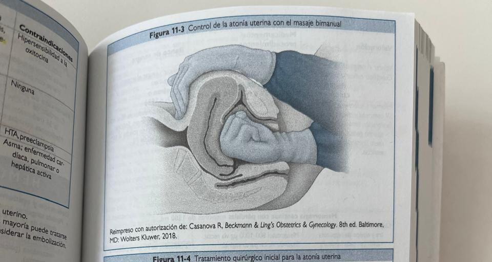
Figura 11-3 — Control de la atonía uterina con el masaje bimanual. (Casanova R, Beckmann & Ling's Obstetrics & Gynecology. 8th ed. Wolters Kluwer, 2018.)
// Tratamiento Médico para la Hemorragia Posparto
- Véase antes la sección sobre uterotónicos.
- Reemplazo con cristaloides en proporción 3:1 (líquido:PSE).
- Ácido tranexámico: fármaco antifibrinolítico. Ofrecer 1 g i.v. durante la hemorragia cuando no tengan éxito otros medicamentos.
- Transfusión masiva: más de 10 unidades de PE en 24 h, o más de 4 unidades de PE en 1 h después del nacimiento, o sustitución total del volumen sanguíneo.
- Razón de transfusión de PE:PFC:PLT = 1:1:1.
- Se utilizan crioprecipitados en caso de concentraciones bajas de fibrinógeno.
- Complicaciones: hipercalemia por los PE, toxicidad al citrato con hipocalcemia, reacciones febriles no hemolíticas, reacción hemolítica aguda de la transfusión y reacciones agudas relacionadas con lesión pulmonar.
- Factor VII recombinante: mejora la hemostasia, pero aumenta el riesgo de trombosis. Se reserva para circunstancias graves.
// Procedimientos para el Tratamiento de la HPP
- Masaje uterino para atonía (externo, bimanual).
- Extracción manual de la placenta.
- D+C/succión del útero para extraer la placenta retenida.
- Taponamiento uterino: colocación de catéter con balón (Foley o Bakri, o compresas), en especial en atonía uterina de la porción inferior.
- Suturas de compresión uterina (p. ej., B-Lynch) o en colchón.
- Embolización de la arteria uterina (radiología intervencionista): debe estar hemodinámicamente estable.
- Laparotomía exploradora:
- Suturas de compresión: B-Lynch, Hayman, Pereira (↑ físicamente el tono uterino).
- Ligadura de vasos: arterias uterinas (suturas de O'Leary) y arterias hipogástricas (↓ perfusión).
- Histerectomía (tratamiento definitivo).
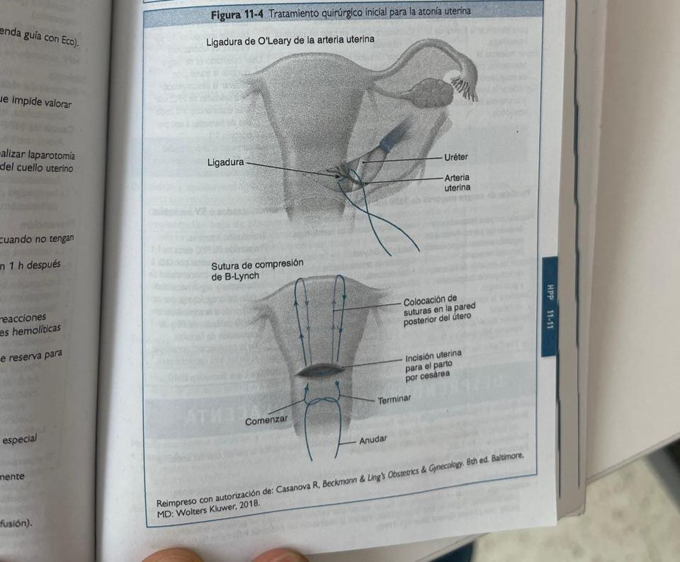
Figura 11-4 — Tratamiento quirúrgico inicial para la atonía uterina: ligadura de O'Leary de la arteria uterina (arriba) y sutura de compresión de B-Lynch (abajo). (Casanova R, Beckmann & Ling's Obstetrics & Gynecology. 8th ed. Wolters Kluwer, 2018.)
// Hemorragia Puerperal Tardía
Hemorragia puerperal secundaria: sangrado uterino entre 24 horas y 12 semanas posparto que es clínicamente preocupante. Ocurre en 1–2% de las mujeres, casi siempre por involución anormal del sitio placentario; ocasionalmente por retención de fragmento placentario o pseudoaneurisma de arteria uterina. Hemorragia grave solo en ~6% de estos casos (rotura vascular; puede formarse una masa polipoide placentaria).
// Complicaciones de la Infección Pélvica
Incidencia 2–10% según factores de riesgo (obesidad, diabetes, corticosteroides, inmunodepresión, anemia, HTA, hematomas). Fiebre persistente/iniciada ~4° día + herida eritematosa que drena pus. Tratamiento: antibióticos + drenaje quirúrgico + desbridamiento del tejido desvitalizado; cierre secundario en bloque cuando hay tejido de granulación sano (~4–6 días después).
| Complicación | Puntos clave |
|---|---|
| Dehiscencia de la aponeurosis | Urgencia quirúrgica; ~1 en 300 cesáreas; se presenta en los primeros 7–10 días; riesgo de evisceración — cubrir con compresas estériles en solución salina, cierre en bloque |
| Fascitis necrosante | Grave, infrecuente, alta mortalidad; casi siempre polimicrobiana (a veces monomicrobiana virulenta — estreptococo β-hemolítico grupo A); síntomas pueden tardar 3–5 días; tratamiento = desbridamiento quirúrgico extenso + antimicrobianos + cuidados intensivos; alto índice de sospecha salva vidas |
| Flemón parametrial | Induración dentro del ligamento ancho cuando la fiebre persiste >72 h pese a antimicrobianos IV; mejora con tratamiento continuo (fiebre cede en 5–7 días); si supura → absceso del ligamento ancho (drenaje percutáneo o colpotomía si afecta el tabique rectovaginal) |
| Peritonitis y absceso anexial | Peritonitis posparto es rara; puede provenir de absceso anexial roto o lesión intestinal inadvertida; ojo — la rigidez abdominal puede no ser prominente por la laxitud de la pared abdominal del embarazo |
| Tromboflebitis pélvica séptica | Incidencia ~1/800 cesáreas y 1/9,000 partos vaginales (hasta 1/175 si hubo corioamnionitis); afecta plexos venosos ováricos; con frecuencia asintomática salvo escalofrío/dolor en cuadrante inferior; diagnóstico por CT/RM; uso de heparina es controvertido (no acelera claramente la recuperación en estudios aleatorizados) |
| Síndrome de choque tóxico | Mortalidad 10–15%; S. aureus (toxina TSST-1) o estreptococo β-hemolítico grupo A (exotoxina pirogénica); fiebre, cefalea, confusión, exantema macular difuso, náusea/vómito, diarrea acuosa, hemoconcentración, insuficiencia renal/hepática, CID y colapso circulatorio en secuencia rápida; tratamiento de soporte + antimicrobianos contra estafilococos/estreptococos ± desbridamiento/histerectomía |
// Infecciones Perineales
Poco frecuentes por la menor práctica actual de episiotomía. Mayor riesgo de infección si el esfínter anal se desgarra (hasta 20% en algunas series) o en laceraciones de 4° grado. Síntomas: dolor local, secreción purulenta, fiebre; en casos extremos toda la vulva puede edematizarse, ulcerarse y cubrirse de exudado.
// Infecciones de Mama (Mastitis y Absceso)
Incidencia posparto ~3%. Factores de riesgo: dificultades de lactancia, pezones agrietados, tratamiento con antibióticos orales. Rara vez aparece antes de finalizar la 1ª semana; más frecuente en la 3ª–4ª semana. Casi siempre unilateral; la congestión marcada suele preceder a la inflamación. Clínica: escalofríos → fiebre y taquicardia → dolor intenso, mama endurecida y enrojecida. S. aureus (incluido MRSA) es el patógeno más frecuentemente aislado.
// Signos de Alarma en el Puerperio — Síntesis Integrada
Este conjunto de signos forma la base de las instrucciones de alta para toda puérpera, permitiendo identificar anomalías antes de que comprometan la vida de la madre. Se organiza por sistema, con el hallazgo clínico y la complicación que debe descartarse.
| Categoría | Signo/Síntoma | Sospechar |
|---|---|---|
| 1. Fiebre | Temperatura ≥38°C | Criterio diagnóstico principal de infección puerperal |
| ≥39°C en las primeras 24 h | Infección pélvica virulenta por estreptococo grupo A | |
| Persistente >48–72 h con antibiótico IV | Flemón parametrial o absceso | |
| 2. Hemorragia / útero | Sangrado entre 24 h y 12 semanas posparto | Hemorragia puerperal tardía (subinvolución del sitio placentario, restos, pseudoaneurisma) |
| útero más grande y blando de lo esperado | Subinvolución uterina | |
| Loquios fétidos o rubra persistente/recurrente | Metritis / retención de restos | |
| 3. Dolor localizado | Sensibilidad intensa uterina/parametrial | Metritis, flemón |
| Dolor perineal/rectal intenso (día 1 o día 3–4) | Hematoma (día 1) o infección (día 3–4) | |
| Escalofrío + fiebre + mama dura, roja y dolorosa | Mastitis / absceso mamario | |
| 4. Herida quirúrgica | Eritema + drenaje purulento | Absceso incisional |
| Separación de bordes / fuga de líquido peritoneal | Dehiscencia de la aponeurosis (urgencia quirúrgica) | |
| 5. Sistémicos / CV | Disnea o dolor torácico | Embolia pulmonar (hipercoagulabilidad persiste hasta 12 sem) |
| Cefalea persistente | Diferenciar hipoestrogenismo vs. cefalea pospunción dural vs. trastorno hipertensivo | |
| Hinchazón/sensibilidad en pierna | Trombosis venosa profunda | |
| 6. Urinario / musculoesquelético | Incapacidad de orinar en las primeras 4 h | Retención urinaria / distensión vesical excesiva |
| Dolor púbico agudo + dificultad para caminar | Separación de la sínfisis del pubis |
// Trabajo de Parto: Definición y Diagnóstico
Cadena de eventos fisiológicos que permiten al feto transitar del útero al mundo exterior. Término gestacional: 37.0–42.0 semanas (259–294 días).
| Parámetro | Contracciones verdaderas | Contracciones falsas (Braxton-Hicks) |
|---|---|---|
| Frecuencia | Regular, creciente | Irregular, no progresan |
| Intensidad | Progresiva (alta) | Baja, sin progresión |
| Duración | Sostenida, >40 seg | Variable, corta |
| Cambio cervical | Sí — obligatorio para diagnóstico | No |
| Dolor | Inicio en región lumbar → anterior | Solo anterior, cede con deambulación |
// Fisiopatología del Inicio del Trabajo de Parto
El parto a término se inicia mejor como un fenómeno de remoción del tono inhibitorio sobre el miometrio, más que como una activación primaria por estimulantes uterinos. Tras esta "activación", el útero ya "preparado" puede responder a uterotónicos (oxitocina, PGE₂, PGF₂α).
Cambios que Permiten la Contractilidad
| Cambio | Mecanismo | Efecto funcional |
|---|---|---|
| ↑ Proteínas asociadas a contracción (CAPs) | Activación génica miometrial | ↑ receptores para PGs y oxitocina |
| ↑ Connexina-43 (gap junctions) | Inducida por estrógenos y PGs | Sincronización eléctrica del miometrio |
| ↑ Receptores de oxitocina | ↑ 100–200× al término | Sensibilidad máxima a oxitocina endógena/exógena |
| Activación de canales iónicos (Ca²⁺/K⁺) | Potencial de acción propagado | Contracción coordenada efectiva |
| ↓ Progesterona funcional | Cambio en receptor (PR-A/PR-B) o metabolismo local | Remoción del "bloqueo progestacional" |
CRH
ACTH
DHEAS + cortisol
aromatasa → estriol; PGE₂/PGF₂α via COX-2
↑ receptores OT, ↑ gap junctions
Nota: En humanos, a diferencia de rumiantes, la placenta no contiene 17α-hidroxilasa inducible por glucocorticoides; el mecanismo es paracrino/autocrino y aún no está completamente elucidado.
// Las 3 "P" del Mecanismo de Parto
Fuerza generada por la musculatura uterina. Clínicamente: 3–5 contracciones en 10 min = labor adecuada (95% de mujeres en TDP espontáneo). Cuantitativamente con catéter intrauterino (IUPC):
≥200–250 UM = actividad uterina adecuada. La frecuencia NO refleja la fuerza contráctil. Variables que afectan las fuerzas: paridad, estado del cuello, oxitocina exógena, analgesia.
Electrofisiología: potencial de membrana en reposo −65 a −80 mV; despolarización +12 a +25 mV. Canales Ca²⁺/K⁺ + células marcapasos uterinas autónomas (resting potential mayor).
- Talla fetal — diámetro suboccipitobregmático en presentación OA: ~9.5 cm
- Situación — relación eje longitudinal feto/útero (longitudinal/transversa/oblicua)
- Presentación — parte fetal que ocupa el estrecho superior (vértice, cara, frente, podálica)
- Actitud — relación partes fetales entre sí (flexión es lo normal)
- Posición — relación punto de referencia fetal con pelvis materna
- Estación — relación polo presentado con espinas ciáticas (de −5 a +5)
- Número de fetos, anomalías fetales
Pelvis ósea (Caldwell-Moloy):
| Tipo | Incidencia | Pronóstico parto vaginal |
|---|---|---|
| Ginecoide | 50% | Favorable (ideal) |
| Androide | 23% | Desfavorable (DCP frecuente) |
| Antropoide | 24% | Favorable (OP frecuente) |
| Platipeloide | 3% | Difícil entrada; Kjelland/Barton |
Conjugado diagonal >11.5 cm → conjugado obstétrico >10 cm → pelvis adecuada. Conjugado diagonal = conjugado obstétrico + 1.5 cm.
Tejidos blandos:
- Cuello uterino: cambios bioquímicos pre-parto (↑ agua, ↓ colágena, cambios en proteoglicanos → maduración cervical)
- Dilatación cervical: principalmente por tracción miometrial contráctil > presión de presentación
- Musculatura del piso pélvico: en 2° período = fuente principal de resistencia al descenso, facilita rotación y flexión de la cabeza fetal; 95% de vértice nacen en OA
- Analgesia epidural → ↑ probabilidad de malposición fetal
// Orientación Fetal: Situación, Presentación, Actitud y Posición
| Término | Definición | Clasificación |
|---|---|---|
| Situación | Relación del eje longitudinal fetal con el materno | Longitudinal (>99% a término) · Transversa · Oblicua (inestable — se resuelve durante el TDP) |
| Presentación | Parte fetal dentro o cerca del canal del parto | Cefálica · Pélvica (franca/completa/de pies, 2–3% a término) · De hombro (situación transversa) |
| Actitud | Relación de las partes fetales entre sí (postura/hábito) | Flexión generalizada normal → masa ovoide con espalda convexa; mentón casi toca el pecho |
| Posición | Relación del punto de referencia de la parte de presentación con el lado izq./der. del canal | Occipucio (cefálica) · Mentón (cara) · Sacro (pélvica) |
Presentaciones Cefálicas según el Grado de Flexión (Actitud)
FIGURA — Espectro de actitud cefálica (elaboración propia): a menor flexión del cuello fetal, el punto de referencia se desplaza de occipucio → bregma → frente → cara.
| Presentación | Actitud del cuello | Punto de referencia | Diámetro presentado |
|---|---|---|---|
| Occipucio (vértice) | Flexión completa — mentón toca el tórax | Fontanela occipital (posterior) | Suboccipitobregmático (~9.5 cm) — el más favorable |
| Sincipucio | Flexión parcial (transitoria) | Fontanela anterior (bregma) | Occipitofrontal (~11.5 cm) |
| Ceja | Extensión parcial (transitoria) | Ceja/frente | Occipitomentoniano (~13.5 cm) — el más desfavorable |
| Cara | Extensión completa — occipucio contra la espalda | Mentón | Submentobregmático (~9.5 cm) |
Posición Fetal — Variedades de Posición ("Reloj")
FIGURA — Variedades de posición en presentación de occipucio, vistas desde la pelvis materna. LOT es ligeramente más frecuente que ROT al momento del encajamiento (Caldwell, 1934).
En presentación de cara el punto de referencia es el mentón (LM/RM); en pélvica, el sacro (LS/RS) — misma lógica de nomenclatura, con el mismo diagrama de reloj.
// Diagnóstico: Maniobras de Leopold, Exploración Vaginal y Ecografía
| Maniobra | Técnica | Información que aporta |
|---|---|---|
| 1ª — Fondo uterino | Palpación bimanual del fondo | Situación y presentación: nalgas grandes/nodulares vs. cabeza grande/dura/redonda |
| 2ª — Lados del abdomen | Palmas a ambos lados del abdomen, presión suave y profunda | Posición: espalda (estructura dura, resistente y convexa) vs. extremidades (partes pequeñas y móviles) |
| 3ª — Suprapúbica (Pawlik) | Pulgar y dedos sujetan el polo inferior sobre la sínfisis | Confirma la presentación; si no está encajada, se percibe masa móvil |
| 4ª — Bimanual profunda | Explorador de frente a los pies de la madre; dedos deslizan en dirección caudal | Grado de descenso/encajamiento |
Antes del trabajo de parto, la exploración vaginal es difícil (cuello cerrado). Con dilatación, se palpan suturas y fontanelas para identificar la posición. La ecografía (transductor transversal sobre el abdomen inferior, siguiendo la columna hasta el occipucio) es más exacta que la palpación digital para la posición cefálica durante la 2ª etapa; en posiciones occipitoposteriores se identifican órbitas y puente nasal en posición anterior (Bellussi, 2017).
// Encajamiento y Asinclitismo
Paso del diámetro biparietal a través del estrecho superior de la pelvis. Puede ocurrir semanas antes del término o hasta iniciado el trabajo de parto ("cabeza flotante" en multíparas y algunas nulíparas). La falta de encajamiento antes del inicio del TDP no reduce la probabilidad de parto vaginal (Segel, 2012).
FIGURA — Sinclitismo y asinclitismo, vista axial del estrecho superior (línea roja = sutura sagital).
// Posición Occipitoposterior (OP)
~20% de los trabajos de parto inician en posición OP (Caldwell, 1934), más asociada a pelvis anterior estrecha (Gardberg, 1994a). La mayoría rota espontáneamente a anterior al llegar al piso pélvico gracias a contracciones efectivas, flexión adecuada y tamaño fetal promedio. En 5–10% la rotación es incompleta o no ocurre — sobre todo con feto grande, contracciones deficientes, flexión insuficiente o analgesia epidural (relaja el piso pélvico y el empuje materno).
- Paro transverso: rotación incompleta, se detiene en OT
- Occipucio posterior persistente: no rota, permanece en OP directa
Ambas variantes pueden producir distocia y parto por cesárea (cap. 27); existen técnicas de rotación manual de OP a OA (cap. 29).
// Estación Fetal y Cambios en la Forma de la Cabeza
FIGURA — Escala de estación (ACOG, 1989): quintos (~1 cm) arriba y debajo de las espinas isquiáticas, de −5 a +5.
Edema del cuero cabelludo sobre el orificio cervical por compresión (más marcado tras vencer resistencia de una salida vaginal rígida). Se desarrolla en la porción más inferior de la cabeza → permite inferir la posición original. En asinclitismo marcado puede formarse lejos de la línea media sagital. Cruza las suturas.
Cambios en la forma de los huesos craneales por fuerzas de compresión externa; acorta el diámetro suboccipitobregmático. Un mecanismo de "bloqueo" en las suturas coronal y lambdoidea previene la superposición marcada de los parietales (Carlan, 1991). No se ha podido vincular de forma causal con secuelas neurológicas. Se resuelve en la semana siguiente al nacimiento en la mayoría de los casos (Graham, 2006).
// Estadios y Duración del Trabajo de Parto
Revisión histórica: Friedman (1956) vs Zhang (2010) → ACOG 2014
| Período | Definición | Nulípara | Multípara |
|---|---|---|---|
| 1° — Fase Latente | Inicio contracciones regulares → 6 cm (ACOG 2014) | <20 h | <14 h |
| 1° — Fase Activa | 6 cm → 10 cm; dilatación progresiva | ≥0.5–0.7 cm/h mínimo (puede ser más lenta hasta 6 cm) | ≥1 cm/h |
| 2° Período | Dilatación completa → expulsión | <3h (sin epi) / <4h (con epi) | <2h (sin epi) / <3h (con epi) |
| 3° Período | Expulsión → alumbramiento placenta | <30 min; ≥30 min → atonía uterina activa | |
| 4° Período | Primeras 2h postparto | Vigilancia hemorragia y tono uterino | |
- Borramiento y dilatación lenta (0 → 6 cm)
- Duración muy variable; no es indicación de cesárea per se
- Oxitocina puede acortar la fase latente prolongada (≥20h nulípara / ≥14h multípara)
- Aceleración de la dilatación a partir de 6 cm
- Arresto de fase activa: sin cambio en ≥6h con rotura de membranas + ≥200 UM, o ≥4h sin esas condiciones
- Descenso fetal coincide típicamente con el 2° período
- Signos: aumento de show hemático, deseo materno de pujar, sensación de presión rectal/defecatoria, náusea/vómito
- La madre adopta rol más activo (pujo)
- Tiempos más largos NO se asocian a mayor morbilidad si hay progreso continuo y sin compromiso materno-fetal
- 95% de vértice nacen en OA (rotación facilitada por piso pélvico)
3° Período — Signos de Desprendimiento Placentario
| Signo | Mecanismo |
|---|---|
| Alargamiento del cordón umbilical | Placenta desciende al segmento/vagina |
| Hemorragia súbita vaginal | Separación del lecho placentario |
| Cambio de forma del fondo uterino: discoide → globular | Retracción miometrial con ascenso del fondo |
// Movimientos Cardinales del Parto (OA)
diámetro biparietal cruza estrecho superior; primigestas 2–4 sem antes; multíparas en TDP
continuo durante 1° y 2° período
mentón al pecho; ↓ diámetro presentado
occipucio → sínfisis púbica (OA); piso pélvico facilita
cabeza pasa bajo sínfisis; occipucio nace primero
cabeza gira al alinearse con hombros
hombro ant. → hombro post. → cuerpo
// Tratamiento del Trabajo de Parto Normal
Identificación: Trabajo de Parto Falso vs. Verdadero
≥12 contracciones dolorosas/hora (c/5 min × 1 h), sin rotura de membranas ni hemorragia, predice TDP activo (dilatación ≥4 cm) en <24 h en ~75% de los casos (Pates, 2007). El TDP falso cede espontáneamente; el verdadero progresa a un patrón regular y efectivo con cambio cervical documentado.
| Definición de inicio de TDP | Criterio |
|---|---|
| Percepción materna (Friedman) | Contracciones regulares — fin de la fase latente clásica ~4 cm |
| Ingreso hospitalario (EUA) | Membranas íntegras + dilatación 3–4 cm + contracciones dolorosas frecuentes |
| ACOG/SMFM (2019c) | Redefine el inicio de la fase activa en 6 cm (ver tabla Friedman vs. Zhang arriba) |
Valoración Cervical y Puntuación de Bishop
| Parámetro | Definición |
|---|---|
| Dilatación | Diámetro transversal del orificio cervical (cm); dilatado por completo = 10 cm |
| Borramiento | Acortamiento del canal cervical vs. cuello sin TDP (50% = mitad de la longitud; 100% = tan delgado como el segmento inferior) |
| Posición cervical | Posterior → intermedia → anterior (el descenso fetal la desplaza a anterior) |
| Consistencia | Firme → intermedia → blanda |
| Estación | Ver escala de estación (−5 a +5) en la sección anterior |
Rotura de Membranas — Diagnóstico
| Método | Principio |
|---|---|
| Especuloscopia estéril | Acumulación de líquido en el fondo de saco posterior o flujo por el canal cervical |
| Nitrazina (pH) | pH vaginal normal 4.5–5.5 vs. líquido amniótico >7.0 (corte >6.5); falsos positivos con sangre, semen o vaginosis bacteriana |
| Cristalización en helecho | Patrón arboriforme del líquido amniótico secado (cloruro de sodio, proteínas, carbohidratos) |
| Pruebas de punto de atención | AmniSure (microglobulina-1α placentaria) · Actim PROM / ROM Plus (IGFBP-1 ± AFP) — con falsos +/− no infrecuentes |
Manejo de la Primera Etapa
| Parámetro | Riesgo bajo | Riesgo alto |
|---|---|---|
| FCF — 1ª etapa | c/30 min (justo tras la contracción) | c/15 min |
| FCF — 2ª etapa | c/15 min | c/5 min |
| Signos vitales maternos | Cada 4 h (cada hora si RPM prolongada o fiebre limítrofe) | |
| Exploración cervical | Cada 2–3 h en el acmé del TDP (protocolo Parkland); la evidencia sobre el número de tactos y morbilidad infecciosa es contradictoria | |
Se evita el decúbito dorsal (compresión aortocava, ↓ perfusión uterina). La ambulación no acorta el TDP ni reduce de forma consistente la necesidad de analgesia (Bloom, 1998); es razonable ofrecer la opción de decúbito o ambulación supervisada.
Líquidos claros en cantidades moderadas son razonables en TDP no complicado (el vaciamiento gástrico se prolonga con analgesia). Si se planea cesárea: ayuno de líquidos 2 h y sólidos 6–8 h antes. La hidratación IV con glucosa a 125–150 mL/h puede acortar la 1ª etapa.
No acorta el TDP espontáneo normal (metaanálisis de 15 estudios, Smyth 2013). Riesgos: infección uterina si se realiza temprano y prolapso de cordón — para prevenirlo, la cabeza fetal debe estar bien aplicada al cuello uterino antes del procedimiento.
Manejo de la Segunda Etapa
Reflejo y espontáneo en la mayoría de los casos (puede estar amortiguado con analgesia neuroaxial). El pujo inmediato vs. diferido (retrasar 60 min tras la dilatación completa) muestra vías de parto similares; el pujo inmediato se asocia a menor corioamnionitis (Cahill, 2018; Di Mascio, 2020).
Protocolos de Manejo Activo del Trabajo de Parto
Protocolo estandarizado: exploración pélvica horaria, amniotomía si la dilatación es <1 cm/h, oxitocina en dosis alta si no se alcanza ese ritmo tras la amniotomía. Redujo la tasa de cesárea por distocia a 5% en la cohorte original; revisiones posteriores muestran una reducción solo modesta (Wei, 2013 — Cochrane).
- TDP = dilatación ≥4 cm + contracciones regulares → hospitalización
- Exploración pélvica c/2 h; si no hay cambio → amniotomía
- Si no progresa 2–3 h más → catéter de presión intrauterina + oxitocina en dosis alta
- Meta: actividad uterina de 200–250 unidades Montevideo × 4 h antes de diagnosticar distocia
- Progreso aceptado: 1–2 cm/h una vez establecida actividad uterina adecuada
La rotación interna es el único movimiento cardinal verdaderamente esencial para completar el parto (salvo feto muy pequeño). Asinclitismo posterior = sutura sagital cerca de la sínfisis; asinclitismo anterior = sutura cerca del promontorio. La curva clásica de Friedman (4 cm) fue reemplazada por el criterio ACOG/Zhang de fase activa desde 6 cm. El caput succedaneum cruza suturas (edema del cuero cabelludo); el cefalohematoma NO cruza suturas (hemorragia subperióstica) — diferenciación clave (cap. 33). La falta de encajamiento antes del TDP no predice el resultado del parto. Meta de 200–250 UM antes de diagnosticar distocia con oxitocina en dosis alta.
// Monitoreo Fetal Anteparto e Intraparto — Sistema NICHD
Vigilancia Anteparto: Técnicas (ACOG Practice Bulletin #9, 2000)
| Prueba | Principio fisiológico | Criterio normal | Interpretación anormal | VPN / observación |
|---|---|---|---|---|
| Movimientos fetales (kick counts) | ↓ MF precede muerte fetal en días; reflejan integración SNC | ≥10 mov en 2h (decúbito lateral) o ≥baseline×1h/3×semana | Ausencia de count → evaluación adicional | Evidencia inconsistente de ↓ mortalidad |
| NST (PSE) | FCF no acidótica/neurológicamente deprimida acelera con movimiento | Reactiva: ≥2 aceleraciones de ≥15 lpm ×≥15 seg en 20 min | No reactiva: sin aceleraciones en 40 min | VPN 99.8%; VPP solo ~10% |
| CST (PCE) | Contracciones → hipoxia transitoria; útero subóptimo → desaceleraciones tardías | Negativa: sin desaceleraciones tardías ni variables significativas | Positiva: desac. tardías ≥50% contracciones | VPN 99.9%; VPP ~35% |
| BPP (PBF) | 5 componentes biofísicos sensibles a hipoxia/acidemia con distinta jerarquía de compromiso | 8–10/10 (o 8/8 sin NST) | ≤6 equívoco; ≤4 anormal | VPN 99.9% (44,828 BPPs) |
| BPP Modificado | NST (corto plazo) + ILA (largo plazo placenta) | NST reactiva + AFI >5 cm | NST no reactiva o AFI ≤5 | VPN 99.9% (54,617 mod-BPPs) |
| Doppler AU | Resistencia placentaria → ↑ índices sistólico-diastólicos | S/D, IR, IP normales para EG; flujo diastólico presente | AEDV, REDV = grave; ↑ S/D >2 DE para EG | Evidencia solo en RCIU; no screening poblacional |
NST — Detalles
- Paciente en decúbito lateral/semisentada
- Monitor externo; trazo ≥20 min (extender a 40 min por ciclo sueño-vigilia)
- Estimulación acústica (laringe artificial, 1–2 seg, hasta 3×) → reduce tiempo de prueba en fetos no acidóticos
- Idealmente: no fumó recientemente (tabaco ↓ FCF y MF)
- Reactiva: ≥2 aceleraciones de ≥15 lpm × ≥15 seg en 20 min (con o sin MF discernible)
- No reactiva: sin aceleraciones suficientes en 40 min → BPP completo o CST
- 24–28 sem: hasta 50% NSTs no reactivas fisiológicamente
- 28–32 sem: 15% no reactivas
- Desaceleraciones variables aisladas <30 seg → no indican compromiso
- Desaceleraciones repetitivas (≥3 en 20 min) → ↑ riesgo cesárea por RCTG no tranquilizador
- Desaceleración ≥1 min durante NST → ↑↑ riesgo muerte fetal
CST — Detalles
Estimulación del pezón (2 min, pausa 5 min, reinicio) o oxitocina IV (0.5 mU/min, duplicar c/20 min). Meta: ≥3 contracciones de ≥40 seg en 10 min.
| Resultado CST | Definición |
|---|---|
| Negativa | Sin desaceleraciones tardías ni variables significativas → TRANQUILIZADORA |
| Positiva | Desaceleraciones tardías en ≥50% contracciones (incluso si <3 en 10 min) |
| Equívoca-sospechosa | Desaceleraciones tardías intermitentes o variables significativas |
| Equívoca-hiperestimulatoria | Desaceleraciones en presencia de hipertonía (>cada 2 min o >90 seg) |
| Insatisfactoria | <3 contracciones en 10 min o trazo no interpretable |
BPP (Perfil Biofísico Fetal) — Manning
| Componente | Criterio normal (= 2 pts) | Primero en perderse con hipoxia |
|---|---|---|
| NST (tono corto plazo) | ≥2 aceleraciones de ≥15 lpm × ≥15 seg en 20 min | No — refleja acidosis aguda |
| Movimientos respiratorios fetales | ≥1 episodio ≥30 seg de MRF rítmicos en 30 min | 2° en perderse |
| Movimientos corporales | ≥3 movimientos corporales/miembros en 30 min | 3° |
| Tono fetal | ≥1 episodio extensión + retorno flexión (extremidad o mano) | Último en perderse (acidosis severa) |
| Volumen líquido amniótico | ≥1 bolsillo >2 cm en eje vertical (evidencia hidráulica placentaria) | Refleja disfunción placentaria crónica |
| Puntaje | Interpretación | Manejo |
|---|---|---|
| 8–10 / 10 | Normal | Continuar vigilancia según indicación |
| 6 / 10 | Equívoco | Término: parto. Pretérmino: repetir en 24h + corticoides si <34 sem |
| 4 / 10 | Anormal | Parto en la mayoría; individualizar en pretérmino extremo |
| <4 / 10 | Gravemente anormal | Parto inmediato |
| Oligohidramnios (bolsillo ≤2 cm / AFI ≤5) siempre requiere evaluación adicional, independiente del puntaje total | ||
BPP Modificado
Combina NST (indicador a corto plazo de acidosis) + AFI (indicador a largo plazo de función placentaria: líquido amniótico en 2T-3T = orina fetal → refleja perfusión renal fetal). Normal: NST reactiva + AFI >5 cm. Anormal: NST no reactiva o AFI ≤5 cm.
Doppler de Arteria Umbilical
| Hallazgo | Significado fisiopatológico | Acción |
|---|---|---|
| S/D, IR, IP elevados para EG (>2DE) | ↑ resistencia vascular placentaria → obliteración arteriolas terciarias | Vigilancia intensificada; BPP, NST |
| AEDV (flujo diastólico ausente) | Obliteración >60–70% arteriolas; hipoxia + acidosis fetal | Hospitalización; planear nacimiento según EG |
| REDV (flujo diastólico revertido) | Obliteración >80%; acidosis grave; mortalidad perinatal alta | Nacimiento urgente (ajustar a EG/viabilidad) |
// RCTG Intraparto — Sistema NICHD
| Parámetro | Normal | Anormal / Alarma |
|---|---|---|
| FCF basal | 110–160 lpm | <110 bradicardia / >160 taquicardia |
| Variabilidad | Moderada: 6–25 lpm | Ausente (<2) o mínima (2–5) = alarma; marcada (>25) = investigar |
| Aceleraciones | ≥2 de ≥15 lpm × ≥15 seg en 20 min (≥28 sem) | Ausentes → pérdida de reactividad |
| Deceleraciones | DIP I (tempranas) = reflejo vagal, benigno | DIP II, DIP III repetidas, prolongadas = alarma |
Tipos de Deceleraciones — Clasificación NICHD
| Tipo | Timing vs contracción | Mecanismo | Significado clínico |
|---|---|---|---|
| Tempranas (DIP I) | Nadir coincide con el pico contráctil; espejo de la contracción | Reflejo vagal por compresión cefálica; ↑ presión intracraneal | Benigna; no indica compromiso fetal |
| Tardías (DIP II) | Nadir después del pico; persisten tras el final de la contracción | Hipoxia transitoria + quimiorreceptores; disfunción uteroplacentaria | Alarma — sugiere reserva fetoplacentaria reducida |
| Variables | Inicio variable; morfología abrupta (V) | Compresión de cordón umbilical | Aisladas <30 seg → benignas; repetitivas (≥3 en 20 min) → evaluación; ≥1 min → ↑↑ riesgo |
| Prolongadas | Descenso ≥15 lpm que dura ≥2 min pero <10 min | Variable: compresión cordón, hipotensión supina, hiperestimulatoria | Depende de contexto; requiere intervención |
Categorías NICHD (Intraparto)
| Categoría | Características | Manejo |
|---|---|---|
| Cat. I (Normal) | Basal 110–160; variabilidad moderada; aceleraciones presentes o ausentes; sin desac. tardías/variables; desac. tempranas OK | Observación de rutina |
| Cat. II (Indeterminada) | Todo lo que no es Cat. I ni Cat. III; amplia gama (incluye variabilidad mínima, taquicardia, desac. variables recurrentes) | Evaluación + intervención según contexto; vigilancia continua; posición lateral; O₂; suspender oxitocina; hidratación |
| Cat. III (Anormal) | Patrón sinusoidal OR variabilidad ausente + (desac. tardías recurrentes / desac. variables recurrentes / bradicardia) | Intervención inmediata: reposicionamiento, O₂, bolo IV, suspender oxitocina, amnioinfusión (si variable); cesárea urgente si no resuelve |
Indicaciones de Vigilancia Anteparto (ACOG)
- Síndrome antifosfolípido
- Hipertiroidismo mal controlado
- Hemoglobinopatías (SS, SC, S-tal)
- Cardiopatía cianótica
- LES, nefropatía crónica
- DM tipo 1
- Trastornos hipertensivos
- HTA inducida por el embarazo
- ↓ movimientos fetales
- Oligohidramnios / polihidramnios
- RCIU
- Embarazo postérmino
- Isoinmunización moderada-grave
- Muerte fetal previa inexplicable
- Gestación múltiple con discordancia significativa
NST no reactiva → BPP o CST (no parto de inmediato). CST positiva + NST no reactiva = acidosis hipóxica hasta demostrar lo contrario → cesárea/parto. CST negativa + NST no reactiva = causa no hipóxica (prematurez, sueño fetal, drogas, anomalía neurológica). BPP ≤6 en término → parto. Oligohidramnios aislado (AFI ≤5 / bolsillo ≤2) → evaluación + manejo según EG. Doppler AU solo es de nivel I en RCIU. DIP II recurrentes + variabilidad ausente = Cat. III → cesárea. Taquicardia fetal + variabilidad ausente + fiebre materna = corioamnionitis hasta demostrar lo contrario. Fase activa inicia a 6 cm (ACOG 2014), NO a 4 cm (Friedman obsoleto para diagnóstico de arresto).
// Introducción: Teorías del Inicio del Parto
El trabajo de parto es la culminación de una cascada bioquímica progresiva en útero y cuello uterino, resultado de señales endocrinas y paracrinas maternas y fetales. Tres teorías clásicas explican su inicio:
- Pérdida funcional de los factores que mantienen el embarazo (retiro funcional de progesterona)
- Síntesis de factores que inducen activamente el parto (CAP, uterotoninas)
- Señal fetal: el feto maduro origina la señal inicial (eje HHA fetal, CRH placentaria)
La investigación actual integra las tres: el parto anormal se manifiesta como trabajo de parto prematuro, distocia o embarazo postérmino.
// Compartimientos Materno y Fetal
Músculo liso sin diferenciación terminal → muy adaptable. Ventajas sobre músculo estriado: 1) mayor grado de acortamiento por contracción; 2) fuerzas multidireccionales (filamentos en haces plexiformes); 3) mayor generación de fuerza en el fondo vs. segmento inferior → optimiza el vector expulsivo.
Endometrio transformado por hormonas del embarazo. Función inmunorreguladora que suprime inflamación durante la gestación; al término, se activa e induce señales inflamatorias que contribuyen al inicio del parto.
- Barrera epitelial contra infección
- Suficiencia estructural pese a la carga gravitacional creciente
- Remodelación de la matriz extracelular (ECM) que permite distensibilidad progresiva
Gradiente de músculo liso: ~50% de células estromales en el orificio interno vs. solo 10% en el externo (Vink, 2016). El reblandecimiento cervical inicia desde etapas tempranas (Hegar, semanas 4–6) sin pérdida de la integridad estructural.
El amnios es avascular, resistente a la penetración de leucocitos/microorganismos, y filtra secreciones fetales. Sintetiza prostaglandinas (PGE₂, PGF₂α vía fosfolipasa A₂ y PGHS-2). El corion expresa enzimas desactivadoras de uterotoninas: prostaglandina deshidrogenasa (PGDH), oxitocinasa y encefalinasa — protegen al miometrio de activación prematura.
// Hormonas Esteroideas y Prostaglandinas
| Elemento | Rol fisiológico |
|---|---|
| Progesterona | Inhibe el parto; su retiro funcional (no descenso sérico en humanos) precede la activación. Antagonistas (mifepristona/RU-486) inducen maduración cervical y ↑ sensibilidad a uterotoninas |
| Estrógeno | Promueve el parto; función exacta poco clara en humanos — probablemente ↑ la respuesta a progesterona y media activación uterina/maduración cervical al término |
| PGHS-1 y PGHS-2 (COX-1/2) | Convierten ácido araquidónico → PGH₂ → (vía isomerasas) PGE₂, PGF₂α, PGI₂. Blanco de AINEs (tocolíticos con riesgo fetal — cap. 45) |
| PGDH | Desactiva prostaglandinas; su expresión ↑ durante el embarazo y ↓ en el trabajo de parto → permite acción de PGs sobre membranas y miometrio |
// Las 4 Fases del Parto (Casey/Shynlova/Vink)
Inactividad — 95% del embarazo
Activación/Preparación
Trabajo de parto (1ª–3ª etapas)
Puerperio/Involución
Fase 1 — Inactividad Uterina y Reblandecimiento Cervical
- Acciones de estrógeno/progesterona vía receptores intracelulares
- ↑ cAMP mediado por receptor de membrana (relajación)
- Generación de cGMP
- Modificación de conductos iónicos (Ca²⁺/K⁺)
| Vía | Relajación | Contracción |
|---|---|---|
| Actina-miosina | Actina en forma globular; MLCK desfosforilada (vía cAMP→PKA→fosfodiesterasa) | Actina fibrilar; Ca²⁺-calmodulina activa MLCK → fosforila miosina LC20 → ATPasa → deslizamiento actina-miosina |
| Canal BKCa (K⁺ activado por Ca²⁺/voltaje) | Abierto → K⁺ sale → hiperpolarización → previene entrada Ca²⁺ | Inhibido → ↑ contractilidad |
| Conexina-43 (gap junctions) | Baja expresión → sin sincronía eléctrica | ↑ expresión cerca del parto → sincronía de contracciones |
- LH-hCG: hCG activa Gαs → ↑cAMP → ↓ frecuencia/fuerza contráctil y ↓ gap junctions (posible mecanismo de quiescencia temprana)
- β-adrenérgicos: relajación vía Gαs (base de tocolíticos: ritodrina, terbutalina)
- CRHR1: en miometrio SIN trabajo de parto activa Gs-AC-cAMP (inhibición); CON trabajo de parto activa Gq/Gi (↑Ca²⁺, contracción) — mismo receptor, señalización opuesta según contexto
- RXFP1 (relaxina): activa adenilato ciclasa → mantiene inactividad; pico plasmático semanas 8–12, luego declina
- EP2/EP4 (PGE₂): Gαs → inactividad; cambian a Gαq/11 (activador de Ca²⁺) durante el trabajo de parto. EP1/EP3 actúan vía Gαq/Gαi aumentando Ca²⁺ y contractilidad
Fase 2 — Preparación para el Trabajo de Parto
En humanos NO hay caída sérica; el retiro es funcional vía: 1) cambio en isoformas PR-A/PR-B; 2) alteración de coactivadores/correpresores; 3) metabolismo local por 20α-HSD; 4) regulación por micro-RNA.
↑ Proteínas asociadas a contracción (CAP): receptor de oxitocina, receptor PGF, conexina-43. Formación del segmento uterino inferior desde el istmo → descenso fetal ("el bebé ya cayó"). Expresión de HoxA13 en segmento inferior induce CAP regional.
↑ Hialuronano y glucosaminoglucanos (GAG) → viscoelasticidad, hidratación, desorganización de la matriz. Cambios inflamatorios mínimos hasta que inicia el trabajo de parto activo, donde se activan neutrófilos y macrófagos M1/M2.
- Estiramiento uterino: induce conexina-43 y receptores de oxitocina (mecanotransducción) — explica ↑ riesgo de parto pretérmino en gestación múltiple y polihidramnios
- Cascada CRH placentaria-suprarrenal fetal: CRH placentaria (única sin retroalimentación negativa glucocorticoide — el cortisol la estimula) → ACTH fetal → DHEA-S y cortisol suprarrenal fetal → cortisol retroalimenta positivamente más CRH placentaria y aumenta sustrato para aromatización estrogénica placentaria ("reloj fetal-placentario")
- SP-A y PAF pulmonares fetales: señalización fetomaterna que contribuye al inicio del parto
- Senescencia de membranas fetales: fenotipo secretor asociado a senescencia (SASP) → inflamación estéril que debilita membranas y activa decidua/miometrio
Fase 3 — Trabajo de Parto (Etapas Clínicas 1ª–3ª)
El segmento superior activo se contrae/retrae y expulsa al feto, acortándose progresivamente (se engrosa). El segmento inferior pasivo (+ cuello) se distiende y adelgaza, formando el conducto de salida. El límite entre ambos es el anillo de retracción fisiológico; si el adelgazamiento del segmento inferior es extremo (parto obstruido), se forma el anillo de retracción patológico (anillo de Bandl).
| Uterotonina (Fase 3) | Mecanismo destacado |
|---|---|
| Oxitocina | ↑ receptores miometriales/deciduales al término; pico sérico en 2ª etapa y puerperio temprano; esencial post-alumbramiento para evitar hemorragia |
| Prostaglandinas | ↑ síntesis decidual/miometrial; ↑ receptor PGF₂α en decidua al término (paso regulador clave) |
| Endotelina-1 | Inductor potente vía receptor A → ↑Ca²⁺ intracelular; induce otros factores contráctiles |
| Angiotensina II | Predomina AT2R en el embarazo → vasodilatación uteroplacentaria; ↓AT2R se asocia a preeclampsia |
Fase 4 — Puerperio
Contracción miometrial persistente (~1 h) comprime vasos uterinos → trombosis → previene hemorragia (reforzada por uterotónicos). Involución uterina y reparación cervical rápidas. Lactogénesis inicia; restitución ovulatoria en 4–6 semanas postparto (variable según lactancia/prolactina).
El retiro de progesterona en el parto humano es funcional, no sérico. La oxitocina es más relevante en la 2ª etapa/puerperio que en el inicio del trabajo de parto (el knockout del receptor en ratón no impide el parto → redundancia de sistemas). La CRH placentaria es única por carecer de retroalimentación negativa glucocorticoide. El anillo de Bandl señala parto obstruido. Anencefalia → suprarrenales fetales hipoplásicas → gestación prolongada. Los tocolíticos β-agonistas actúan vía Gαs/cAMP en el mismo eje que mantiene la quiescencia de Fase 1.
// Distocia: Definición y Clasificación
Distocia = "trabajo de parto difícil", caracterizado por progreso más lento de lo normal. Las causas se agrupan mecanicistamente en las mismas 3 P's ya descritas (S4): anormalidades de las fuerzas (contractilidad uterina y pujo materno deficientes), del pasajero (feto) y del pasaje (pelvis y tejido blando del aparato reproductor bajo). Actúan de forma aislada o combinada.
| Categoría (Cuadro 23-1) | Factores |
|---|---|
| Características fetales | Presentación (cara, frente, sincipucio) · Posición (OT, OP, asinclitismo) · Macrosomía · Anomalía (teratoma sacrococcígeo, hidrocefalia, tumor craneofacial, anencefalia) |
| Hallazgos durante el parto | Hidramnios · Corioamnionitis · Analgesia neuroaxial · Estación más alta al inicio del TDP · Pujo materno deficiente (sedación, dolor intenso, bloqueo denso, enfermedad neurológica) |
| Características maternas | Nuliparidad · Edad avanzada · Obesidad · Leiomioma grande · Anomalía uterina paramesonéfrica · Pelvis antropoide/androide/platipeloide · Diámetros pélvicos estrechos · Talla baja · Tumor pélvico · Fractura pélvica previa |
// Anormalidades de las Fuerzas de Expulsión
Se origina en potenciales de acción espontáneos de la membrana del músculo liso; a diferencia del corazón, no se ha identificado un marcapasos uterino individual (Young, 2018). El TDP normal muestra un gradiente ascendente y descendente de actividad miometrial (Reynolds, 1951). Presión normal ≈60 mmHg; el mínimo necesario para dilatar el cuello es 15 mmHg (Caldeyro-Barcia, 1950).
| Tipo de disfunción uterina | Tono basal | Patrón | Problema |
|---|---|---|---|
| Hipotónica (más frecuente) | Normal | Gradiente sincrónico normal | Presión de la contracción insuficiente para dilatar |
| Hipertónica / descoordinada | ↑ considerablemente | Gradiente de presión distorsionado | Contracciones ineficaces pese a tono alto |
- Analgesia neuroaxial — puede prolongar la 1ª y 2ª etapas, aunque su efecto se amortigua con anestesia moderna y no ↑ las tasas de cesárea
- Corioamnionitis — asociada a TDP prolongado (¿causa directa o consecuencia?)
- Estación más alta al inicio del TDP — factor de riesgo, pero la mayoría de nulíparas sin encajamiento al diagnóstico de fase activa igual tiene parto vaginal
- Edad materna avanzada — ↑ distocia proporcional a la edad, independiente del peso fetal/paridad
- Obesidad materna — prolonga la 1ª etapa 30–60 min en nulíparas; posible efecto biopatológico directo sobre la contractilidad
// Trastornos del Trabajo de Parto (Cuadro 23-2)
| Fase / Trastorno | Nulípara | Multípara | Manejo habitual |
|---|---|---|---|
| FASE LATENTE — Trastorno por prolongación | |||
| Fase latente prolongada | >20 h | >14 h | Atención de apoyo · oxitocina o amniotomía · cesárea NO indicada |
| FASE ACTIVA — Trastornos por prolongación | |||
| Dilatación prolongada | <1.2 cm/h | <1.5 cm/h | Atención expectante; cesárea NO indicada solo por esto |
| Descenso prolongado | <1 cm/h | <2 cm/h | Observación / valorar actividad uterina |
| FASE ACTIVA — Trastornos por detención | |||
| Desaceleración prolongada | >3 h | >1 h | Cesárea por CPD si aplica; si no hay CPD → oxitocina |
| Detención secundaria de la dilatación | >2 h | >2 h | Indicación de cesárea si: RPM y (falta de progreso tras 4 h de contracciones adecuadas o tras 6 h de contracciones insuficientes pese a oxitocina) |
| Detención del descenso | >1 h | >1 h | |
| Falta de descenso | Sin descenso en fase de desaceleración o 2ª etapa | ||
CPD = desproporción cefalopélvica. (ACOG/SMFM, 2019b; Cohen y Friedman, 1983)
// Unidades Montevideo (UM)
FIGURA — Cálculo de Unidades Montevideo: se resta la presión basal del pico de cada contracción en una ventana de 10 min y se suman los incrementos.
| Hallazgo | Valor / Umbral |
|---|---|
| Contracciones insuficientes | <180 UM (presentes en 80% de las detenciones de fase activa) |
| Con oxitocina efectiva | 90% alcanza 200–225 UM; 40% alcanza ≥300 UM |
| Meta antes de diagnosticar distocia | ≥200 UM sostenidas × ≥4 h sin cambio cervical (más criterios adicionales) |
// Obstetric Care Consensus Committee: El Debate de los 6 cm
- No cesárea solo por fase latente prolongada
- No cesárea si el TDP es progresivo aunque lento (trastorno por prolongación) → observación, oxitocina si es necesario
- El umbral de fase activa se redefine en 6 cm (no 4 cm); antes de este umbral no aplican los estándares de progreso de fase activa
- Reservar la cesárea por detención de fase activa para dilatación ≥6 cm + RPM sin progreso pese a ≥4 h de actividad uterina adecuada o ≥6 h de oxitocina con contracciones insuficientes
FIGURA — Curvas de dilatación cervical de Friedman (1955) vs. Zhang (2002) (elaboración propia, trazo esquemático): la curva de Zhang se aplana entre 3–6 cm y se acelera después, lo que sustenta el umbral de 6 cm.
// Trastornos del Descenso — Segunda Etapa
| Límite de duración 2ª etapa | Nulípara | Multípara |
|---|---|---|
| Sin analgesia regional | 2 h | 1 h |
| Con analgesia regional | 3 h | 2 h |
| Consensus Committee (2019b) — antes de diagnosticar detención | ≥3 h de pujo | ≥2 h de pujo |
La fuerza combinada de la contracción uterina + musculatura abdominal impulsa al feto. La sedación intensa o la analgesia regional pueden reducir la urgencia refleja de pujar; es razonable dar tiempo para que estos efectos disminuyan. Opciones si el pujo es insuficiente por dolor: apoyo emocional, analgesia parenteral, bloqueo pudendo o analgesia neuroaxial.
// Rotura Prematura de Membranas al Término
Complica ~8% de los embarazos de término sin contracciones espontáneas. Los ensayos aleatorizados grandes (Hannah 1996; Peleg 1999 — 5,042 embarazos) mostraron que la inducción con oxitocina IV es preferible a la conducta expectante: menor tasa de infección intraparto/posparto, sin diferencia en tasa de cesárea. La conducta expectante domiciliaria se asocia a más resultados adversos que la observación intrahospitalaria (Hannah, 2000).
| Escenario | Conducta |
|---|---|
| Contracciones hipotónicas o dilatación avanzada | Oxitocina (↓ riesgo de hiperestimulación) |
| Cuello desfavorable, sin/escasas contracciones, sin desaceleraciones significativas | Misoprostol (PGE₁) para maduración cervical |
| Membranas rotas >18 h | Antibióticos profilácticos contra EGB |
// Trabajo de Parto y Parto Precipitados
Definición: expulsión del producto en <3 h. Incidencia ~3% de nacidos vivos en EUA (2013). Resulta de baja resistencia del conducto blando, contracciones uterinas/abdominales excesivamente fuertes o, rara vez, ausencia de dolor pese a TDP avanzado.
- Rotura uterina o laceraciones extensas (cuello, vagina, vulva, perineo) si el conducto es poco distensible
- Embolia de líquido amniótico (más probable con laceraciones)
- Atonía uterina posparto
- Asociación descrita con abuso de cocaína, desprendimiento placentario, meconio, Apgar bajo
- Hipoxia por intervalos de relajación insuficientes entre contracciones
- Lesión intracraneal (rara pese al conducto rápido)
- Parálisis de Erb/Duchenne (~1/3 de los casos revisados se asoció a 2ª etapa precipitada)
- Caída/lesión si el parto no es atendido; reanimación no disponible de inmediato
// Desproporción Fetopélvica: Capacidad Pélvica
| Plano pélvico | Diámetro clave | Criterio de estrechez |
|---|---|---|
| Estrecho superior | Conjugado obstétrico (AP) · diámetro transverso | AP <10 cm o transverso <12 cm; conjugado diagonal <11.5 cm (diagonal ≈ obstétrico + 1.5 cm) |
| Pelvis media (la más frecuente) | Interespinoso (10.5 cm) + sagital posterior (5 cm) = 15.5 cm normal | Sospecha si interespinoso <10 cm; estrecha si <8 cm, o suma ≤13.5 cm |
| Estrecho inferior | Diámetro intertuberoso | ≤8 cm (rara vez aislado; casi siempre coexiste con pelvis media estrecha) |
- Rotura espontánea temprana de membranas (la cabeza no ocluye el estrecho, toda la fuerza cae sobre las membranas)
- Dilatación lenta o detenida tras la rotura (pérdida de la presión directa de la presentación sobre el cuello)
- ↑ presentaciones anómalas (cara, hombro) y prolapso de cordón — la cabeza no desciende antes del TDP y "flota" o se lateraliza
El patrón de fractura, una alineación anómala menor o dispositivos retenidos no son indicación absoluta de cesárea; se requiere consolidación de 8–12 semanas para considerar el parto vaginal. La pelvimetría (radiográfica o por RM) tiene bajo valor predictivo para CPD y no se recomienda de rutina.
// Presentaciones Anómalas: Cara, Frente y Situación Transversa
FIGURA — Esquema axial de presentaciones anómalas (elaboración propia): posición del punto de referencia (mentón/frente) y orientación en situación transversa.
Presentación de Cara (~0.1%)
| Aspecto | Detalle |
|---|---|
| Definición | Cuello hiperextendido; occipucio contra la espalda fetal; el mentón es la presentación |
| Etiología | Prematuridad, embarazo multifetal, gran multiparidad (abdomen péndulo), malformaciones fetales/anencefalia, polihidramnios, estrecho superior reducido (~40% en algunas series) |
| Diagnóstico | Tacto vaginal: resistencia muscular del ano vs. resistencia ósea de maxilares/paladar (diferencia clave vs. presentación pélvica); el dedo puede teñirse de meconio; boca y malares forman un triángulo |
| Mecanismo | Mentón anterior → rotación interna bajo la sínfisis → flexión progresiva → parto vaginal posible. Mentón posterior → parto vaginal imposible (salvo feto muy pequeño/macerado), a menos que rote a anterior |
| Tratamiento | Monitorización externa continua (evitar lesión facial/ocular); fórceps bajo/de salida aceptable con mentón anterior; vacuum contraindicado (traumatismo ocular); no intentar conversión manual a occipucio |
Presentación de Frente (0.1–0.2%)
Posición intermedia entre flexión completa (occipucio) y extensión completa (cara) — el punto de referencia es el área entre el reborde orbitario y la fontanela anterior. Con frecuencia es inestable y se convierte a cara u occipucio. Diagnóstico: se palpan suturas frontales, fontanela anterior grande, rebordes orbitarios, ojos y raíz nasal — no se palpan boca ni mentón. El encajamiento es imposible salvo moldeamiento marcado o conversión a otra presentación.
Situación Transversal / Presentación de Hombro (~0.3%)
| Aspecto | Detalle |
|---|---|
| Etiología | Relajación de pared abdominal (multiparidad), prematuridad, placenta previa, anomalía uterina, polihidramnios, pelvis estrecha |
| Diagnóstico | Abdomen más ancho; fondo bajo (no rebasa mucho la cicatriz umbilical); sin polo fetal en el fondo; cabeza en una fosa iliaca, pelvis en la otra; tacto vaginal: costillas paralelas, luego omóplato y clavícula |
| Mecanismo | Parto espontáneo imposible con feto de término. Riesgo de anillo de Bandl y rotura uterina si se descuida |
| Tratamiento | Cesárea (incisión vertical si dorsoanterior/dorsoinferior); considerar versión cefálica externa antes o al inicio del TDP con membranas íntegras (mayor éxito que en presentación pélvica) |
// Prolapso del Cordón Umbilical y Presentación Compuesta
Factores de riesgo: polihidramnios, presentación pélvica, situación transversa, feto pretérmino/pequeño (<2,500 g), RPM, embarazo multifetal. La presentación fúnica (cordón como parte de presentación) es rara pero exige cesárea antes del TDP.
Una extremidad (con mayor frecuencia la mano) se prolapsa junto con la parte de presentación. Se produce cuando se impide o retrasa la oclusión del estrecho superior.
En la mayoría de los casos se deja sin intervenir: suele retraerse espontáneamente con el descenso. Si impide el descenso, se empuja con suavidad la extremidad hacia arriba mientras se presiona la cabeza hacia abajo por el fondo.
// Complicaciones de la Distocia
| Complicación | Mecanismo / Nota clínica |
|---|---|
| Infección materna | Corioamnionitis intraparto / endometritis puerperal — más frecuente con TDP prolongado e inconsistente |
| Hemorragia posparto | Atonía uterina, ↑ con TDP prolongado e intensificado |
| Desgarros uterinos | Durante cesárea en 2ª etapa si la cabeza fetal está muy impactada en la pelvis |
| Rotura uterina | Adelgazamiento anormal del segmento inferior; el anillo de retracción patológico de Bandl (indentación uterina aguda) anuncia rotura inminente |
| Fístula (vesicovaginal, vesicocervical, rectovaginal) | Necrosis por presión tras 2ª etapa muy prolongada — rara en sistemas de salud desarrollados |
| Lesión nerviosa materna de EI | Por 2ª etapa prolongada; déficits casi siempre sensitivos, resuelven en 6 meses |
| Complicaciones fetales | ↑ septicemia perinatal con TDP prolongado; caput succedaneum y moldeamiento marcados; traumatismo mecánico (lesión nerviosa, fracturas, cefalohematoma) |
El mínimo de presión para dilatar el cuello es 15 mmHg; las contracciones normales ≈60 mmHg. <180 UM = contracciones insuficientes; meta de 200–225 UM con oxitocina antes de diagnosticar distocia. El umbral de fase activa cambió de 4 cm (Friedman) a 6 cm (ACOG/Zhang) — tema controvertido, alto rendimiento en examen. Mentón posterior persistente = cesárea obligada (a diferencia de OP persistente, que sí puede parir vaginalmente). Vacuum contraindicado en presentación de cara. Situación transversa de término = cesárea siempre (salvo feto <800 g). El anillo de Bandl anuncia rotura uterina inminente. Prolapso de cordón → elevación manual de la presentación mientras se prepara la cesárea. La CPD verdadera es un diagnóstico sobreestimado: 50–75% de las cesáreas por CPD paren después bebés más grandes por vía vaginal.
// Aborto
Aborto: interrupción espontánea o inducida del embarazo antes de la viabilidad fetal. OMS/NCHS: feto <20 semanas o peso <500 g (criterios inconsistentes entre sí — el peso medio a 20 sem es ≈330 g y a 22 sem ≈500 g).
Aborto precoz (ACOG 2019): embarazo intrauterino no viable ≤126/7 semanas — saco gestacional vacío o con embrión/feto sin actividad cardiaca.
Embarazo de ubicación desconocida (PUL): β-hCG positiva sin localización ecográfica confirmada (diferenciar de ectópico).
Aborto recurrente: ≥2 pérdidas confirmadas por ecografía o histopatología (ASRM 2020); definición clásica ACOG: ≥3 consecutivas <20 sem.
Epidemiología y Etiología
10–20% de embarazos clínicos de 5–20 semanas terminan en aborto (mayor en semanas tempranas). Hasta 20% de embarazos fracasan antes de ser clínicos (abortos bioquímicos: β-hCG que desciende sin nunca dar embarazo clínico). >80% ocurre en el 1er trimestre; en estos, la muerte embrionaria casi siempre precede a la expulsión.
Trisomías 50–60% (13, 16, 18, 21, 22 más frecuentes) · Monosomía X (45,X) 9–13% — anomalía cromosómica específica más frecuente (Turner) · Triploidía 11–12% — digínica (meiótica materna) o diándrica (→ mola parcial). 95% de aneuploidías son de origen materno (gametogénesis); edad materna >35 años = factor de riesgo primordial.
| Factor materno / conductual | Asociación |
|---|---|
| DM mal controlada, obesidad, hipotiroidismo manifiesto, LES + SAF | ↑ riesgo; mediadores inflamatorios implicados |
| Tabaquismo, alcohol | Riesgo dosis-dependiente |
| Cafeína | <200 mg/día (≈2 tazas): sin riesgo consistente; consumo alto (~5 tazas/500 mg) se asocia a ↑ leve |
| Trombofilias hereditarias | NO asociadas a aborto esporádico (ACOG) |
| Traumatismo, cirugía no complicada, deficiencias nutricionales aisladas | Raramente causan aborto en el 1er trimestre |
Clasificación Clínica del Aborto Espontáneo
| Tipo | Clínica | US / hCG | Manejo |
|---|---|---|---|
| Amenaza | Sangrado + OCI cerrado; embrión/feto vivo. ~25% de gestantes sangra en 1T — el sangrado es el factor pronóstico más importante | Latido presente; hematoma subcoriónico no aumenta el riesgo por sí solo | Observación; paracetamol para el cólico. NO reposo en cama (no mejora resultados, ↑ riesgo de TVP) ni progesterona sistemática de rutina (PRISM trial negativo) |
| Inevitable | Rotura de membranas o protrusión a través del OCI dilatado | Embrión puede seguir vivo | Evacuación uterina si sangrado/fiebre; conducta expectante si estable y previable |
| Incompleto | Expulsión parcial; cuello dilatado | Restos en cavidad | Legrado (95–100% éxito) · Misoprostol (falla 5–30%) · Expectante (falla ~25%) — las 3 opciones son razonables, complicaciones infrecuentes en las 3 |
| Completo | Expulsión total; sangrado decrece, OCI cierra en ~1 h | Endometrio delgado sin saco; ojo: hasta 6% de "aborto completo" resulta ser ectópico si no se confirmaron productos de la concepción | Observación; si hay duda diagnóstica, seriar β-hCG (debe caer con rapidez — ver tabla) |
| Retenido (diferido) | Asintomático; muerte embrionaria/fetal con OCI cerrado | Ver criterios ecográficos abajo | Expectante (falla 15–50%, la peor tasa de las 3 opciones) · Misoprostol 800 mcg vaginal (falla 15–40%, mejora con mifepristona previa) · Legrado/AMEU |
| Séptico | Fiebre, dolor hipogástrico, flujo fétido, útero sensible; descartar IVU. Vigilar TSS por S. pyogenes, C. perfringens/sordellii | Restos; aire libre intraabdominal o en pared uterina → laparotomía | ABX IV amplio espectro inmediato + evacuación por aspiración si hay restos; necrosis uterina → histerectomía |
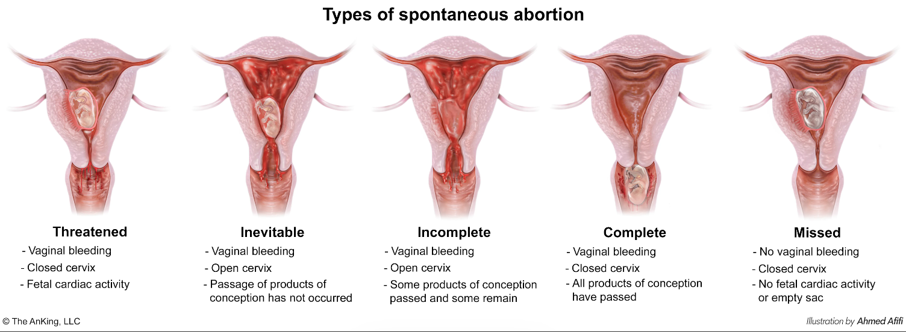
Diagnóstico Ecográfico de No Viabilidad (Doubilet 2013 / ACOG)
| Hallazgo | Interpretación |
|---|---|
| CRL ≥7 mm sin actividad cardiaca | Muerte embrionaria confirmada |
| MSD ≥25 mm sin embrión | Embarazo anembrionado confirmado |
| Saco con vitelino y sin embrión con latido tras ≥11 días | No viable |
| Saco sin vitelino y sin embrión con latido tras ≥2 semanas | No viable |
| hCG inicial (mUI/mL) | Día 2 | Día 4 | Día 7 |
|---|---|---|---|
| 100 | 68% (mín. 16%) | 80% (mín. 35%) | 90% (mín. 47%) |
| 1000 | 72% (mín. 28%) | 86% (mín. 55%) | 95% (mín. 74%) |
| 5000 | 75% (mín. 35%) | 89% (mín. 66%) | 97% (mín. 84%) |
Descensos por debajo del mínimo (percentil 95) sugieren retención de trofoblasto intra o extrauterina.
Aborto Recurrente (ASRM 2020: ≥2 pérdidas confirmadas)
| Causa | Frecuencia | Estudio / Manejo |
|---|---|---|
| Genética cromosómica de los padres | 2–4% | Cariotipo parental (translocación recíproca o robertsoniana); en parejas normocromosómicas NO se recomienda PGT solo por esta indicación |
| Anatómica uterina (septo, sinequias, pólipos, miomas) | ~15% | Ecografía con solución salina (SHG) o histeroscopia; útero tabicado = anomalía congénita más asociada; resección histeroscópica en septo o leiomiomas submucosos grandes |
| Síndrome antifosfolípido (SAF) | — | Ver criterios de Sídney abajo; HBPM + AAS en embarazo subsiguiente |
| Endocrina (DM no controlada, hipotiroidismo manifiesto) | 8–12% | TSH, HbA1c; hipotiroidismo subclínico y anticuerpos antitiroideos NO justifican levotiroxina de rutina (no mejora resultados) |
| Idiopática | ~50% | Progesterona vaginal sin beneficio demostrado (ensayo Coomarasamy 2015); soporte emocional |
Clínicos: ≥3 abortos consecutivos inexplicables <10 sem o ≥1 muerte fetal inexplicable ≥10 sem o preeclampsia grave/insuficiencia placentaria que obligue a interrumpir <34 sem o ≥1 trombosis vascular.
Laboratorio (positivo x2, ≥12 sem de intervalo): anticoagulante lúpico o anticardiolipina IgG/IgM en título medio-alto o anti-β2-glucoproteína-I IgG/IgM.
Insuficiencia Cervical (2do Trimestre)
Dilatación cervical indolora en el 2T con protrusión de membranas y expulsión de un feto inmaduro; se repite en embarazos futuros. Causas: traumatismo cervicouterino (conización — riesgo 4×), DES, Marfan/Ehlers-Danlos. El manejo quirúrgico (cerclaje McDonald/Shirodkar/TAC) se desarrolla en la sección dedicada de Cerclaje Cervical (indicaciones, técnica, complicaciones y retiro).
Aborto Inducido
Terapéutico: por indicación médica materna o fetal. Programado/voluntario: a petición de la paciente sin indicación médica (mayoría de los casos). En EUA, 78% ocurre ≤9 sem y 92% ≤13 sem de gestación.
Métodos — 1er Trimestre
| Método | Técnica | Eficacia |
|---|---|---|
| Quirúrgico — AMEU/EVA | Maduración cervical previa (misoprostol 400 mcg o dilatadores higroscópicos) → dilatación con Hegar/Pratt (mm ≈ semanas de EG) → aspiración por vacío manual o eléctrica. D&C cortante solo NO recomendado (más sangrado/dolor/tiempo) | 96–100% |
| Farmacológico | Mifepristona 200 mg VO + misoprostol 800 mcg (vaginal/bucal/sublingual) 24–48 h después; también aplicable en domicilio | 83–98% (≤70 días de EG) |
Métodos — 2do Trimestre
| Método | Técnica | Notas |
|---|---|---|
| Dilatación y Evacuación (D&E) | Preparación cervical amplia (dilatadores higroscópicos ± misoprostol/mifepristona) → evacuación de LA → extracción fetal (partes, pinzas Sopher) → legrado de placenta | Método más común en EUA (~8% de abortos >13 sem); complicaciones 1–2%. Cesárea previa NO contraindica D&E |
| Farmacológico | Mifepristona + misoprostol 400 mcg c/3h (hasta 5 dosis) — régimen combinado más rápido que misoprostol solo | Rotura uterina 0.4% con cesárea previa; oxitocina en altas dosis alternativa (80–90% éxito, menos eficiente) |
Mortalidad muy baja (0.4/100,000; 14× menor que continuar el embarazo). Perforación/laceración uterina ≤1%. Hemorragia ≤1% (quirúrgico) vs. 15% (farmacológico). Infección <0.5% con profilaxis. Sinequias (Asherman) — riesgo ↑ con número de procedimientos.
Anti-D: 300 mcg IM en toda paciente Rh(-) (o 50–120 mcg si <13 sem); dentro de 72 h si es farmacológico/expectante. Anticoncepción: ovulación posible desde el día 8 (promedio 3 semanas) — iniciar de inmediato, incluyendo DIU. Concepción futura: no es necesario esperar; concebir <3 meses tras un aborto de 1T se asocia a menor tasa de pérdida subsiguiente.
Anomalía cromosómica más frecuente en aborto esporádico = trisomías; anomalía específica más frecuente = monosomía X. Amenaza de aborto: NO reposo, NO progesterona de rutina. Aborto retenido/incompleto: 3 opciones válidas (expectante/médico/quirúrgico), la expectante tiene la tasa de fracaso más alta. CRL ≥7 mm sin latido o MSD ≥25 mm sin embrión = no viable, diagnóstico definitivo (no requiere repetir estudio). Útero tabicado = anomalía uterina más asociada a aborto recurrente. Criterios de Sídney para SAF requieren 1 clínico + 1 de laboratorio (positivo x2, ≥12 semanas de diferencia). Anti-D siempre en Rh(-), incluso en amenaza de aborto. Misoprostol = teratógeno; confirmar aborto completo tras su administración.
// Embarazo Ectópico
Implantación del blastocisto fuera del endometrio de la cavidad uterina. Incidencia 1.4–1.5% de los embarazos; causa el 3% de todas las muertes maternas relacionadas con el embarazo — primera causa de muerte materna en 1T. 95% tubárico (ampolla 70% > istmo 12% > fimbria 11% > intersticial 2%); el 5% restante es no tubárico (ovario, cavidad peritoneal, cuello uterino, cicatriz de cesárea). Embarazo heterotópico: coexistencia de un IUP normal + un ectópico — raro de forma espontánea (1/30,000) pero hasta 1/100 con FIV.
Factores de Riesgo
- Enfermedad tubárica previa (EPI/salpingitis hasta 9% de riesgo posterior, cirugía tubárica, ligadura) — mayor riesgo relativo
- Embarazo ectópico previo — riesgo de recurrencia ~10%
- TRA/FIV — asociado a mayor tasa; técnicas modernas buscan reducirlo
- DIU y anticonceptivos solo de progestina — si fallan, favorecen implantación ectópica (el número absoluto de ectópicos disminuye por la eficacia anticonceptiva global)
- Tabaquismo — mecanismo desconocido
Manifestaciones Clínicas
Tríada clásica (no siempre presente): amenorrea → dolor → sangrado vaginal. Dolor en hombro/cuello por irritación diafragmática (hemoperitoneo significativo). Puede expulsarse un molde decidual (endometrio desprendido completo) — indistinguible macroscópicamente del aborto espontáneo; requiere histología para buscar vellosidades coriónicas. Hemoglobina/hematocrito iniciales pueden ser engañosos: la tendencia en horas es más valiosa que el valor único. Leucocitosis hasta 30,000/µL en la mitad de los ectópicos rotos.
Diagnóstico
IUP normal: ↑ ≥53% en 48h (o ≥35% más conservador)
Zona discriminatoria: β-hCG 1500–2000 mUI/mL (hasta 3500 según autor)
Saco gestacional intrauterino visible 4.5–5 sem; vitelino 5–6 sem; latido 5.5–6 sem. Patrón trilaminar: especificidad 94% para IUP, sensibilidad solo 38%. Ningún IUP normal tiene franja endometrial <8 mm. Pseudosaco (colección central, se adapta a la cavidad) y quiste decidual (excéntrico, cerca del miometrio) sugieren ectópico — contrastan con el signo intradecidual (saco excéntrico dentro de la franja) propio del IUP.
Masa anexial separada del ovario: 60% masa compleja, 20% anillo hiperecoico ("anillo tubárico"), 13% saco con vitelino/embrión visible (diagnóstico definitivo). Doppler: "anillo de fuego" (vascularidad periférica aumentada) — también puede verse en cuerpo lúteo. Hemoperitoneo: líquido en fondo de saco rectouterino primero, luego saco de Morison (solo visible si ≥400–600 mL acumulados).
Tratamiento Médico — Metotrexato (MTX)
Antagonista del ácido fólico: inhibe la dihidrofolato reductasa → detiene síntesis de purinas/pirimidinas → detiene DNA/RNA/proteínas → citotóxico para el trofoblasto en proliferación rápida.
| Dosis única | Dosis múltiples | |
|---|---|---|
| Posología | 50 mg/m² BSA (día 1); repetir si necesario | MTX 1 mg/kg + ácido folínico 0.1 mg/kg en días alternados, hasta 4 dosis |
| Vigilancia β-hCG | Días 1, 4 y 7 | Días 1, 3, 5, 7 |
| Criterio de nueva dosis | Si no ↓15% entre día 4 y 7 | Si no ↓15% entre mediciones |
| Eficacia | ~90% de resolución global | Algo mayor en algunos estudios, más visitas |
Tras alcanzar el descenso ≥15%, vigilar β-hCG semanal hasta indetectable (tiempo promedio de resolución: 34 días, hasta 109 días).
<1,000 mUI/mL: falla 1.5% · 1,000–2,000: falla 5.6% · 2,000–5,000: falla 3.8% · 5,000–10,000: falla 14.3%. Masa ≤3.5–4 cm y ausencia de actividad cardiaca = mejores predictores; con actividad cardiaca, éxito cae a ~87%.
Sensibilidad a MTX · rotura tubaria · embarazo intrauterino coexistente · lactancia · enfermedad ulcerosa péptica activa · disfunción hepática/renal/hematológica · inmunodeficiencia · enfermedad pulmonar activa
Tratamiento Quirúrgico
| Técnica | Indicación | Datos clave |
|---|---|---|
| Laparoscopia | De elección salvo inestabilidad hemodinámica | Menor infección, adherencias y tromboembolia vs. laparotomía; factible incluso con hemoperitoneo en manos expertas |
| Salpingostomía | Trompa contralateral anormal, deseo de fertilidad | Ensayos ESEP y DEMETER: tasas de embarazo/IUP subsiguiente similares a salpingectomía (56% vs 61%; 64% vs 70%). Trofoblasto persistente en 5–15% |
| Salpingectomía | Trompa contralateral normal, hemorragia incontrolable, daño tubárico severo, recurrencia | Resuelve el concepto de forma más completa; fertilidad ulterior comparable a MTX |
| Laparotomía urgente | Inestabilidad hemodinámica / rotura | Salpingectomía + reanimación volémica simultánea |
Tratamiento Expectante
Solo en mujeres asintomáticas, bien seleccionadas y con compromiso de seguimiento. Factores de éxito: β-hCG inicial baja y en descenso, masa anexial no homogénea (no anillo tubárico). β-hCG inicial <175 mUI/mL → resolución espontánea en 88–96%; <1,000 mUI/mL → 71–92%. Tasas de permeabilidad tubaria/IUP posterior comparables a cirugía, pero con vigilancia prolongada y riesgo de rotura.
Localizaciones No Tubáricas
| Localización | Diagnóstico | Manejo |
|---|---|---|
| Intersticial | Implantado en el segmento tubárico intramiometrial; se rompe tarde (8–16 sem) con hemorragia catastrófica (mortalidad hasta 2.5%). US: masa cefálica/lateral al fondo, manto miometrial <5 mm, signo de la línea intersticial (muy sensible/específico) | MTX sistémico (~94% éxito si diagnóstico temprano) o resección/cornuostomía quirúrgica; cesárea electiva ≥37 sem en futuros embarazos (riesgo de rotura uterina no bien definido) |
| Cicatriz de cesárea (CSP) | Incidencia ~1/2000; 40% asintomático, hallazgo incidental. Patrones endógeno (crece a la cavidad) vs. exógeno (crece a vejiga/abdomen — mayor riesgo). Precursor de espectro de acretismo placentario (PAS). US: cavidad y canal endocervical vacíos, saco incrustado en la cicatriz, manto miometrial delgado, vascularidad prominente; signo de deslizamiento negativo lo distingue de un aborto en tránsito | Quirúrgico (resección ístmica lap./transvaginal, UAE+D&C, resección histeroscópica) preferido sobre MTX solo (SMFM desaconseja monoterapia con MTX). Vigilancia expectante NO recomendada de rutina — hasta 60% termina en histerectomía si continúa el embarazo |
| Cervical | Implantación bajo el OCI, invade endocérvix fibroso. Sangrado indoloro en 90%. US: útero en "reloj de arena", cuello dilatado, canal endometrial vacío | MTX de primera línea si estable (91% conservación uterina si <12 sem); UAE, cerclaje hemostático o Foley con balón si hemorragia; histerectomía si falla (riesgo de lesión ureteral por proximidad) |
| Ovárico | Criterios de Spiegelberg: 1) trompa ipsilateral íntegra y separada del ovario, 2) saco ocupa el ovario, 3) conexión al útero por el ligamento uteroovárico, 4) tejido ovárico histológico en la pared del saco. Rotura temprana es lo usual | Quirúrgico — resección en cuña/cistectomía (lesiones pequeñas) u ooforectomía (grandes) |
| Abdominal | Implantación peritoneal (excluye tubárica/ovárica); suele seguir a rotura/aborto tubárico con reimplantación. Síntomas vagos; MRI útil. 20% de malformaciones fetales si continúa | Terminación generalmente indicada si <24 sem. Objetivo quirúrgico: extraer el feto sin remover la placenta si no está clínicamente segura hacerlo (riesgo de hemorragia torrencial); MTX posoperatorio si se deja in situ |
Manejo Rh y Fertilidad Futura
Anti-D: toda paciente Rh(-) con ectópico — 50–120 mcg IM en 1er trimestre, 300 mcg si más avanzado. Fertilidad a largo plazo: comparable entre MTX, salpingostomía y salpingectomía; el MTX no reduce la reserva ovárica.
β-hCG que NO duplica ≥53% en 48h + no saco IU en US TV = ectópico hasta demostrar lo contrario — pero hasta 1/3 de ectópicos SÍ tiene ese incremento, así que la curva sola no descarta. Zona discriminatoria 1,500–2,000 mUI/mL. Anillo de fuego también en cuerpo lúteo — no patognomónico. Progesterona <6 = no viable (98% específico); >25 = IUP vivo (97% sensible). Criterios de éxito para MTX en dosis única: β-hCG <5,000, masa ≤3.5–4 cm, sin actividad cardiaca. Salpingostomía y salpingectomía tienen fertilidad subsiguiente comparable (ESEP/DEMETER) — la elección depende del estado de la trompa contralateral. Criterios de Spiegelberg = embarazo ovárico. Signo de deslizamiento negativo distingue CSP/cervical de un aborto en tránsito. Anti-D siempre en Rh(-) con ectópico. Shock + hemoperitoneo = laparotomía urgente, nunca MTX.
// Embarazo en Extremos de la Vida Reproductiva
Embarazo en la adolescencia: gestación entre los 10 y 19 años (OMS); se subdivide en adolescencia temprana (10–14 años, mayor riesgo biológico) y tardía (15–19 años). Edad materna avanzada (EMA): parto anticipado a los ≥35 años (definición histórica ACOG/SMFM); el riesgo es un continuo que se acentúa notablemente después de los 40 años, por lo que las guías recientes recomiendan estratificar en incrementos de 5 años (35–39, 40–44, ≥45) en vez de usar un punto de corte único.
Embarazo en la Adolescencia
El riesgo obstétrico se origina en la inmadurez biológica (pelvis y tracto reproductivo aún en desarrollo, competencia por nutrientes entre la madre en crecimiento y el feto) y se agrava por factores psicosociales (control prenatal tardío/insuficiente, menor escolaridad, vulnerabilidad socioeconómica, violencia de pareja, matrimonio infantil).
| Complicación | Riesgo relativo/OR (evidencia agrupada) | Comentario clínico |
|---|---|---|
| Preterm birth (parto pretérmino) | AOR agrupado 1.90 (IC95% 1.36–2.40) | La complicación mejor documentada; mayor riesgo en <15 años |
| Bajo peso al nacer | AOR agrupado 1.46 (IC95% 1.25–1.66) | Relacionado con PP y con restricción de crecimiento |
| Preeclampsia/eclampsia | AOR agrupado 1.63 (amplio IC, heterogeneidad alta) | OMS: mayor riesgo de eclampsia específicamente vs. mujeres de 20–24 años |
| Anemia | AOR agrupado ~1.5 (heterogeneidad alta) | Mayor requerimiento nutricional por crecimiento materno-fetal simultáneo |
| Endometritis puerperal / infección sistémica | ↑ vs. 20–24 años (OMS) | Vigilar datos de infección puerperal |
| Desproporción cefalopélvica | Descriptivo (series clínicas) | Por pelvis ósea inmadura, sobre todo <15 años; mayor tasa de cesárea/parto instrumentado |
| Mortalidad materna y perinatal | ↑ especialmente <15 años | Las complicaciones del embarazo/parto son causa líder de muerte en adolescentes de 15–19 años a nivel global (OMS) |
Fuentes: Abate et al., Prevalence, determinants and complications of adolescent pregnancy: an umbrella review of systematic reviews and meta-analyses, Am J Obstet Gynecol Glob Rep 2025 · OMS, Adolescent pregnancy fact sheet, actualizado abril 2024 · ACOG Committee Opinion No. 699, Adolescent Pregnancy, Contraception, and Sexual Activity (reafirmado).
Embarazo en Edad Materna Avanzada (≥35 años)
| Riesgo | Dato clave |
|---|---|
| Aneuploidía fetal | Aumenta de forma continua con la edad (no solo trisomías — también 47,XXX/47,XXY); la monosomía X (45,X) no se relaciona con la edad materna |
| Preeclampsia | Riesgo progresivo, significativo sobre todo ≥40 años; base para indicar AAS profiláctico |
| Diabetes gestacional / hipertensión crónica | 2–4× más hipertensión crónica y ~2× más DM2 pregestacional vs. 25–29 años |
| Pérdida gestacional temprana | Aumenta por declinación progresiva de calidad ovocitaria (no disyunción meiótica) — independiente del ambiente o actividad sexual |
| Macrosomía y RCIU | Ambos extremos de peso al nacer aumentan con la edad (relación en "U") |
| Muerte fetal (óbito) | Riesgo hasta 3× mayor ≥40 años vs. <35 años a las 37–41 semanas; a las 39 semanas el riesgo en ≥40 años iguala al de mujeres de 25–29 años a las 41 semanas |
| Cesárea | Tasa hasta 2–3× mayor en ≥45 años vs. 25–34 años (la edad NO es indicación de cesárea por sí sola) |
AAS 81 mg/día (12–16 sem hasta el parto) si ≥35 años + ≥1 factor de riesgo moderado adicional (nuliparidad, obesidad, FIV, etc.) · USG de 1T (mayor tasa de gemelaridad) · tamizaje/diagnóstico genético ofrecido a TODAS independientemente de la edad · USG anatómico detallado · USG de crecimiento en 3T si ≥40 años · vigilancia fetal anteparto si ≥40 años (iniciar 32–36 sem) · parto en semana 39.0–39.6 si ≥40 años (reduce mortineonatal/óbito sin aumentar morbilidad neonatal — extrapolado del ensayo ARRIVE) · vía vaginal sigue siendo segura y apropiada; la edad sola NO es indicación de cesárea.
El riesgo de morbilidad materna severa y mortalidad asociado a la EMA es desproporcionadamente mayor en mujeres afrodescendientes e indígenas americanas — ACOG/SMFM atribuyen esta disparidad a racismo estructural y barreras de acceso, no a diferencias biológicas.
Fuente: ACOG/SMFM Obstetric Care Consensus No. 11, Pregnancy at Age 35 Years or Older, Obstet Gynecol 2022;140:348–66 (vigente).
Adolescencia: mayor riesgo de eclampsia, endometritis puerperal e infecciones sistémicas vs. 20–24 años; en el neonato, mayor riesgo de bajo peso, prematurez y condición neonatal severa (OMS). La causa principal del exceso de riesgo es inmadurez biológica + control prenatal deficiente. EMA (≥35 años): dar AAS solo si hay ≥1 factor de riesgo moderado adicional (la edad sola NO basta salvo ≥40 con múltiples factores). Monosomía X (45,X) es la ÚNICA aneuploidía que no aumenta con la edad materna. ≥40 años → USG de crecimiento en 3T + vigilancia anteparto + parto a las 39 semanas (no antes, no después) por riesgo de óbito. La edad materna avanzada, por sí sola, NUNCA es indicación de cesárea.
// Enfermedad Trofoblástica Gestacional
| Gestaciones molares | Tumores trofoblásticos (GTN) |
|---|---|
| Mola hidatiforme completa · Mola hidatiforme parcial · Mola invasora | Coriocarcinoma · Tumor trofoblástico del sitio placentario · Tumor trofoblástico epitelioide |
GTD (enfermedad trofoblástica gestacional) = término global. GTN (neoplasia trofoblástica gestacional) = formas malignas: mola invasora + los 3 tumores no molares. El trofoblasto siempre produce hCG — su cuantificación sérica es central para diagnóstico, tratamiento y vigilancia.
Mola Hidatiforme: Completa vs. Parcial
| Característica | Mola parcial | Mola completa |
|---|---|---|
| Cariotipo | 69,XXX o 69,XXY (triploide, diandría) | 46,XX (diploide, androgénesis) |
| Diagnóstico clínico | Aborto diferido | Gestación molar franca |
| Tamaño uterino | Pequeño para EG | Grande para EG |
| Quistes tecaluteínicos | Inusuales | 25–30% |
| hCG inicial | <100,000 mUI/mL | >100,000 mUI/mL |
| Complicaciones médicasa | Inusuales | Poco comunes |
| GTN subsiguiente | 1–5% | 15–20% |
| Embrión/feto | A menudo presente | Ausente |
| Edema de vellosidades | Focal | Difuso |
| Proliferación trofoblástica | Focal, leve-moderada | Leve a importante |
| p57KIP2 (IHQ) | Positiva | Negativa |
aAnemia, hipertiroidismo, hiperémesis, preeclampsia, infección.
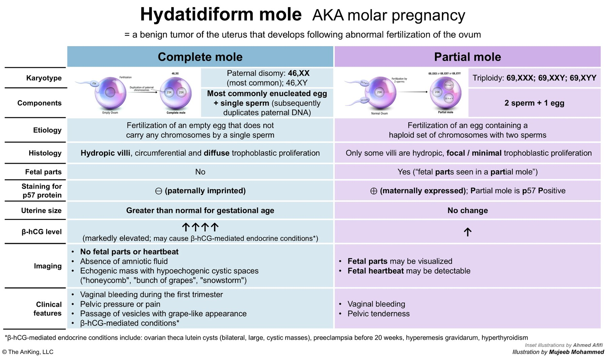
Comparación de cariotipo, origen genético, histología, presencia de partes fetales, expresión de p57, tamaño uterino, β-hCG, imagen y manifestaciones clínicas.
Mola completa: androgénesis — un espermatozoide 23,X fecunda un óvulo cuyos genes maternos están "desactivados"; los cromosomas paternos se duplican → 46,XX totalmente de origen paterno (con menor frecuencia, dispermia → 46,XY o 46,XX). Mola parcial: diandría — dos espermatozoides (dispermia) fecundan un óvulo normal → triploide 69,XXX/69,XXY con un juego materno y dos paternos. Un cigoto triploide 46,XY diploide fecundando también es posible pero letal con anomalías congénitas graves si progresa.
Epidemiología y Factores de Riesgo
- Predisposición étnica: mayor prevalencia en mujeres asiáticas, latinoamericanas y amerindias; incidencia estable en EUA/Europa ~1/1,000 embarazos
- Edad materna en ambos extremos reproductivos = mayor riesgo
- Antecedente de mola completa → 0.9% riesgo de recidiva; mola parcial previa → 0.3%
- Tras dos molas completas, ~20% desarrolla una tercera
Manifestaciones Clínicas
Diagnóstico cada vez más temprano (control prenatal + ecografía universal) — la mayoría se trata antes de complicaciones. Sangrado uterino irregular (leve a profuso) es el signo cardinal. En molas completas avanzadas: útero mayor al esperado y más blando, ausencia de latido fetal, náusea/vómito intensos, anemia por deficiencia de hierro. Quistes tecaluteínicos (más frecuentes en mola completa) por hiperestimulación ovárica — hCG comparte receptor con LH; se resuelven espontáneamente tras la evacuación → manejo expectante salvo torsión/necrosis persistente. La hCG puede causar hipertiroidismo bioquímico (↑T4 libre, ↓TSH); la tirotoxicosis clínica franca es rara pero se han reportado casos de "tormenta tiroidea".
Diagnóstico
Mola completa: hCG mayor a la esperada para la EG, en ocasiones millones de mUI/mL. Efecto prozona: concentraciones extremadamente altas saturan el anticuerpo de la prueba en orina → falso negativo; se resuelve con hCG sérica con o sin dilución. En mola parcial, la hCG suele estar dentro de rangos esperados para la EG.
Sensibilidad 44%, especificidad 74% (no siempre concluyente). Mola completa: masa ecógena intrauterina con múltiples espacios quísticos anecoicos sin feto — patrón en "copos de nieve"; Doppler color muestra vascularidad miometrial circundante intensa sin flujo interno (vellosidades avasculares). Mola parcial: placenta gruesa multiquística + feto/tejido fetal, tabiques delgados en el saco. En embarazos <10 semanas los hallazgos clásicos pueden estar ausentes.
Diferenciar de abortos con degeneración hidrópica placentaria (no requieren vigilancia). Herramienta clave: p57KIP2 (proteína de impronta paterna, expresión de origen materno) — ausente en mola completa (solo genes paternos) y presente en mola parcial y abortos no molares. Si p57KIP2 no distingue (positivo en ambos: parcial vs. aborto no molar), se recurre a genotipificación molecular: diploide diándrico (mola completa) vs. triploide diándrico monogínico (mola parcial) vs. diploide biparental (aborto no molar).
Tratamiento de la Mola Hidatiforme
| Fase | Consideraciones |
|---|---|
| Preoperatorio | BH, hCG sérica, creatinina, transaminasas, TSH/T4 libre, grupo y Rh, radiografía de tórax, valorar dilatadores higroscópicos |
| Transoperatorio | AMEU con cánula Karman 10–14 mm (según tamaño uterino) · oxitocina 20 U en 1000 mL RL en venoclisis · uterotónicos adicionales si sangrado persiste (metilergonovina, carboprost, misoprostol) · ecografía intraoperatoria recomendada |
| Posevacuación | Anti-D si Rh negativo · iniciar anticoncepción eficaz (evitar DIU hasta hCG indetectable) · vigilancia seriada de hCG |
Vigilancia Posevacuación
hCG sérica basal en las primeras 48 h → luego semanal hasta indetectable → después mensual por 6 meses. Tiempo medio de resolución: 6 semanas (mola parcial) y 7 semanas (mola completa). A la semana 14, el 95% ya tiene hCG normal; a la semana 25, el 99%. Anticoncepción hormonal confiable obligatoria durante la vigilancia (evita confundir un nuevo embarazo con GTN); DIU solo cuando hCG ya es indetectable. Un embarazo durante la vigilancia no está contraindicado pero no se recomienda de rutina.
- Que los niveles de β-hCG se mantengan en meseta, con fluctuaciones de ±10%, en cuatro mediciones realizadas los días 1, 7, 14 y 21 posevacuación.
- Que los niveles de β-hCG presenten incrementos mayores a 10% en tres mediciones realizadas los días 1, 7 y 14 posevacuación.
Estos patrones obligan a sospechar neoplasia trofoblástica gestacional posmolar y continuar con estadificación y tratamiento.
Neoplasia Trofoblástica Gestacional (GTN)
Incluye mola invasora, coriocarcinoma, tumor trofoblástico del sitio placentario (TTSP) y tumor trofoblástico epitelioide (TTE). Origen: 50% mola hidatiforme previa, 25% aborto/embarazo tubario, 25% gestación de pretérmino o término. Se diagnostican casi siempre por hCG persistente/anómala más que por histología (rara vez hay tejido disponible).
- Meseta de hCG (±10%) en 4 mediciones durante ≥3 semanas (días 1, 7, 14, 21)
- Incremento de hCG >10% en 3 mediciones semanales durante ≥2 semanas (días 1, 7, 14)
- hCG detectable durante ≥6 meses
- Criterios histológicos de coriocarcinoma
Estadificación FIGO y Puntaje Pronóstico (OMS modificado)
| Estadio FIGO | Extensión anatómica |
|---|---|
| I | Circunscrita al útero |
| II | Fuera del útero, limitada a estructuras genitales (anexos, vagina, ligamento ancho) |
| III | Extendida a pulmones, con o sin afectación genital |
| IV | Cualquier otro sitio metastásico |
| Factor (puntaje) | 0 | 1 | 2 | 4 |
|---|---|---|---|---|
| Edad (años) | <40 | ≥40 | — | — |
| Embarazo previo | Mola | Aborto | Término | — |
| Intervalo (meses) | <4 | 4–6 | 7–12 | >12 |
| hCG previa (mUI/mL) | <10³ | 10³–10⁴ | 10⁴–10⁵ | ≥10⁵ |
| Tumor más grande | <3 cm | 3–4 cm | ≥5 cm | — |
| Sitio metastásico | — | Bazo, riñón | GI | Hígado, cerebro |
| N.º metástasis | — | 1–4 | 5–8 | >8 |
| QT previa fallida | — | — | 1 fármaco | ≥2 fármacos |
Clasificación Histológica
| Tipo | Origen / Características | Tratamiento |
|---|---|---|
| Mola invasora | La más común; casi siempre surge de mola completa o parcial previa. Invasión miometrial profunda por trofoblasto y vellosidades bien desarrolladas; puede alcanzar peritoneo, parametrio o cúpula vaginal. Agresividad local, menos propensa a metástasis (antes llamada corioadenoma destruens) | Quimioterapia según score de riesgo |
| Coriocarcinoma gestacional | GTN más frecuente tras embarazo de término o aborto (solo 1/3 sigue a mola). Células que evocan cito+sincitiotrofoblasto, sin vellosidades. Crecimiento rápido, invade miometrio y vasos, causa hemorragia y necrosis. Metástasis hematógenas tempranas (pulmón, vagina; también hígado, cerebro, riñón, ovario, intestino). Suele coexistir con quistes tecaluteínicos | Quimioterapia (mono o poli según score) |
| Tumor trofoblástico del sitio placentario (TTSP) | Poco común; se origina del trofoblasto intermedio del sitio placentario. hCG con aumentos solo moderados; alta proporción de hCG libre (marcador diagnóstico). Resistente a quimioterapia | Histerectomía de elección; poliquimioterapia adyuvante en estadio I de alto riesgo o estadios posteriores |
| Tumor trofoblástico epitelioide (TTE) | Se origina del trofoblasto intermedio de tipo coriónico. Sangrado + hCG baja. Puede mostrar resistencia a quimioterapia; frecuente enfermedad metastásica | Histerectomía primaria; poliquimioterapia si hay metástasis |
Tratamiento de la GTN
Manejo idealmente en centros especializados en GTN. La quimioterapia es el tratamiento primario. Bajo riesgo (no metastásico o metastásico de bajo riesgo): monoquimioterapia — metotrexato o actinomicina D con eficacia similar (metotrexato menos tóxico); se repiten esquemas hasta hCG indetectable. Alto riesgo: poliquimioterapia, esquema más usado EMA-CO (etopósido, metotrexato, actinomicina D, ciclofosfamida, vincristina) — tasas de curación ~90%. Cirugía y radioterapia adyuvantes en casos especiales. Una segunda evacuación uterina puede ser adyuvante para reducir necesidad de quimioterapia en ausencia de enfermedad extrauterina.
Embarazo Subsiguiente
La fertilidad tras mola hidatiforme no suele verse afectada y los resultados gestacionales son normales. Riesgo de recurrencia de GTD en el siguiente embarazo: ~1% (valorar ecografía temprana). Tras GTN tratada con quimioterapia exitosa, se recomienda posponer el embarazo 1 año (mayoría de recidivas ocurren en ese periodo); el metotrexato puede persistir en tejidos meses. Fertilidad y tasa de anomalías congénitas normales tras tratamiento de GTN; la tasa de mortinatos es ligeramente mayor (1.5% vs. 0.8% poblacional). Se envía la placenta/productos de todo embarazo subsiguiente a patología, y se cuantifica hCG sérica 6 semanas posparto.
Mola completa = 46,XX androgénica (todo paterno), sin feto, hCG muy alta, p57KIP2 negativa, mayor riesgo de GTN (15–20%). Mola parcial = triploide (diandría), con tejido fetal, p57KIP2 positiva, menor riesgo de GTN (1–5%). Efecto prozona: hCG urinaria falsa negativa por exceso de hormona — pedir hCG sérica. Ecografía en "copos de nieve" = mola completa. Tras evacuación: hCG semanal → indetectable → mensual x6 meses, con anticoncepción obligatoria (NO quimioprofilaxis de rutina). Coriocarcinoma = sin vellosidades, metástasis hematógena temprana a pulmón. TTSP y TTE = quimiorresistentes → histerectomía es tratamiento primario. Score OMS ≥7 = alto riesgo → poliquimioterapia (EMA-CO).
// Isoinmunización Rh (Aloinmunización RhD)
Formación de anticuerpos IgG maternos (anti-D) contra el antígeno RhD presente en los eritrocitos fetales, en una madre RhD-negativa previamente sensibilizada. Estos anticuerpos cruzan la placenta y opsonizan los eritrocitos fetales RhD-positivos, causando hemólisis extravascular (bazo fetal) — enfermedad hemolítica del feto y recién nacido (EHFRN / HDFN).
Sistema Rh
El sistema Rh incluye >50 antígenos; los clínicamente relevantes son D, C, c, E, e (no existe antígeno "d"; C/c y E/e son alelos codominantes). El fenotipo "Rh negativo" se debe casi siempre a la deleción completa del gen RHD (población blanca) o a variantes no funcionales del gen (pseudogén RHD, frecuente en población africana ~69%). El antígeno G (mutación puntual compartida por D y C) puede generar anti-C/anti-G sin verdadero anti-D — sospechar cuando el título anti-C ≥ título anti-D.
Expresión disminuida (weak D) o incompleta (D parcial) del antígeno. Tipos weak D 1, 2 y 3 no se aloinmunizan si reciben GR RhD+ → pueden manejarse como RhD-positivos (genotipificación RHD). Otros tipos: manejar como RhD-negativos.
Vascos 30–35% · caucásicos 15% · afroamericanos 8% · asiáticos <0.5%. En EE.UU. anti-D representa 64% de anticuerpos eritrocitarios prenatales (~586/100,000 embarazos).
Fisiopatología
feto-materna
fetales RhD+
materna (IgM→IgG)
placenta
extravascular fetal
± hidrops
Hemorragia feto-materna espontánea (aumenta con EG, máxima en el parto) · aborto espontáneo/inducido · embarazo ectópico · procedimientos invasivos (amniocentesis, BVC, cordocentesis) · trauma abdominal · versión cefálica externa · hemorragia anteparto · muerte fetal · transfusión incompatible o uso de agujas contaminadas. La respuesta depende del volumen expuesto (0.1–0.5 mL puede sensibilizar; 1 unidad ~80% responde) y de la compatibilidad ABO materno-fetal.
Consecuencias fetales/neonatales
- Hidrops fetalis: ≥2 de: edema cutáneo, ascitis, derrame pericárdico/pleural — ocurre con anemia severa (déficit de Hb ≥7 g/dL bajo la media, Hto <15% o Hb <5 g/dL).
- Trombocitopenia/neutropenia: 11–26% con Hto bajo, más frecuente en fetos hidrópicos.
- Hiperbilirrubinemia neonatal no conjugada, de inicio <24h — puede persistir semanas.
- Anemia tardía (>7 días de vida) por supresión de eritropoyesis fetal tras transfusión intrauterina + persistencia de anticuerpo materno.
- Colestasis (5–15%, más común post-transfusión intrauterina).
Tamizaje y diagnóstico
| Momento | Prueba |
|---|---|
| 1ª visita prenatal | Grupo/Rh + Coombs indirecto (todas las pacientes) |
| Rh negativo, Coombs (–) | Repetir a las 28 semanas y al ingreso para parto |
| Rh negativo, Coombs (+) | Titulación seriada — ya sensibilizada, no aplicar Ig anti-D |
Escenarios de aloinmunización — resumen práctico
| Escenario | Conducta |
|---|---|
| Embarazada Rh(–) con pareja Rh(–) (paternidad segura) | Sin riesgo de aloinmunización — no requiere Coombs indirecto seriado ni profilaxis anti-D |
| Embarazada Rh(–) con pareja Rh(+) | Riesgo de aloinmunización — Coombs indirecto en cada trimestre (1ª visita, 28 sem) + profilaxis anti-D antenatal y posparto si el RN es RhD+ |
| Embarazada Rh(–) con incompatibilidad Rh y Coombs indirecto negativo | Aún no sensibilizada — continuar vigilancia y aplicar Ig anti-D según esquema (28 sem y postparto) |
| Embarazada Rh(–) ya sensibilizada, Coombs indirecto positivo | Aloinmunización establecida — no administrar Ig anti-D (ya no sirve); pasar a titulación + Doppler ACM-PSV para vigilar anemia fetal |
| Recién nacido RhD+ con Coombs directo (DAT) positivo | EHFRN confirmada — ya no hay prevención posible en este embarazo; manejo puramente terapéutico del RN (fototerapia/exanguinotransfusión según bilirrubina y grado de anemia) |
Evaluación paterna y del RhD fetal
Si el padre es RhD-negativo con paternidad segura → feto RhD-negativo, sin riesgo. Si es RhD-positivo: determinar cigosidad para RHD — homocigoto (~60%) → todos los hijos son RhD+; heterocigoto, no disponible o paternidad incierta → ADN fetal libre (cfDNA) en plasma materno desde la semana 10–12 (sensibilidad ~99.3%, especificidad ~98.4%). La amniocentesis transplacentaria y la biopsia de vellosidades coriales deben evitarse por riesgo de empeorar la aloinmunización.
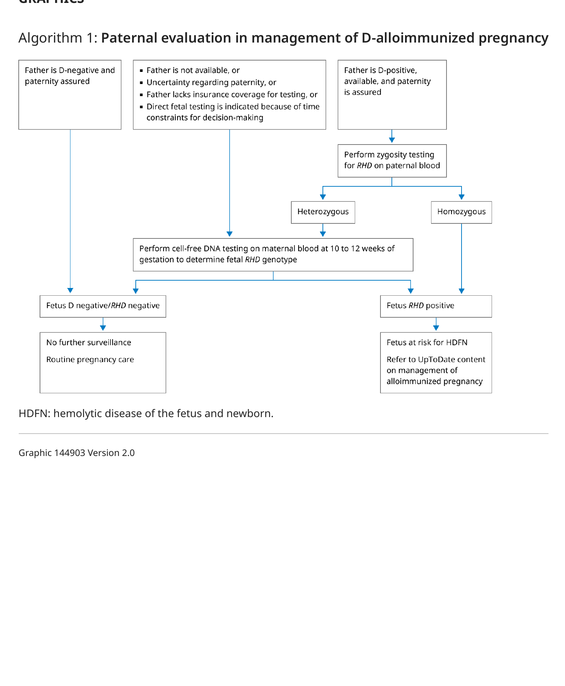
Manejo del primer embarazo aloinmunizado
El primer embarazo afectado suele cursar con anemia fetal más leve y de aparición más tardía (2º-3º trimestre) que los embarazos subsiguientes.
mensual hasta sem 24,
luego c/2 sem
(no crítico)
semanal desde sem 32
→ parto 37+0–38+6
(crítico)
semanal ×3, luego c/2 sem
(c/1–2 sem si 1.4–1.5 MoM)
→ vigilancia sem 32
+ parto 37+0–38+6
(Hb/Hto fetal)
para EG (o Hto <30%)
≥35 sem → parto
Se basa en que la anemia fetal → ↓ viscosidad sanguínea → ↑ velocidad de flujo. Sensibilidad ~86–100% para anemia moderada-severa (cae tras transfusiones previas y después de sem 35). Ajustar por EG (MoM). Realizar con feto en estado quieto.
| EG (sem) | Hb media (g/dL) | Hb –2DE (g/dL) |
|---|---|---|
| 18 | 11.3 | 9.3 |
| 22 | 12.1 | 10.1 |
| 26 | 12.8 | 10.8 |
| 30 | 13.6 | 11.6 |
| 34 | 14.4 | 12.4 |
La transfusión intrauterina generalmente se realiza entre sem 18–35 (antes: dificultad técnica; después: mayor riesgo que el parto). No es contraindicación para pinzamiento tardío de cordón.
Embarazos subsecuentes
Cursan con EHFRN más severa y más temprana por respuesta anamnésica. No se recomienda titulación seriada (poco predictiva) — se estratifica por historia obstétrica:
| Historia previa | Manejo |
|---|---|
| Solo fototerapia neonatal, título actual <1024 | Doppler ACM-PSV semanal desde sem 18 (×3, luego c/2 sem) |
| EHFRN ≥24 sem, parto pretérmino por ACM-PSV o exsanguinotransfusión neonatal | Doppler ACM-PSV semanal desde sem 16 |
| Título ≥1024 o pérdida/TIU <24 sem | IVIG ± plasmaféresis desde sem 10–12 + Doppler ACM-PSV semanal desde sem 15 |
Nipocalimab (anti-FcRn) es una terapia en investigación que reduce el transporte placentario de IgG; en fase 2 evitó TIU en ~54% de embarazos de muy alto riesgo.
Prevención — Inmunoglobulina anti-D
300 mcg neutralizan hasta 15 mL de GR fetales RhD+ (30 mL sangre completa); 50 mcg neutralizan 2.5 mL. Vida media ~24 días. Mecanismo no del todo claro (aclaramiento por macrófagos ± supresión de LB). Sin profilaxis: ~16% de aloinmunización tras 2 partos ABO-compatibles → solo postparto: 1–2% → + antenatal (3T): 0.1–0.3%.
| Indicación | Esquema |
|---|---|
| Tamizaje inicial | Coombs indirecto en 1ª visita (si Rh negativo) |
| Profilaxis anteparto estándar (EE.UU.) | 300 mcg única dosis a las 28 semanas |
| Esquema de 2 dosis (UK/Canadá) | 100–120 mcg a las 28 y 34 semanas |
| Postparto (RN RhD+) | 300 mcg dentro de 72h — confirmar siempre con sangre de cordón |
| Eventos sensibilizantes ≥12 sem (aborto, DIU, ectópico, CVS/amniocentesis, trauma, VCE, hemorragia anteparto, óbito, mola) | 300 mcg dentro de 72h (50 mcg aceptable en 1T) |
| Pérdida/interrupción <12 sem | Controvertido — OMS/SFP: no necesaria; ACOG/SMFM/Colegio Francés: variable, individualizar |
Cuantificación de hemorragia feto-materna
o parto (RN RhD+)
(cualitativo)
→ dosis estándar de Ig anti-D (300 mcg) suficiente
citometría de flujo (cuantitativo)
= nº de viales de 300 mcg
Redondear hacia arriba si la fracción es ≥0.5 y agregar un vial adicional de seguridad. Máximo IM: 5 dosis de 300 mcg/24h; dosis mayores → vía IV (WinRho/Rhophylac). Confirmar con Coombs indirecto 24h después.
Título crítico habitual = 16 (usar siempre título de tubo, no gel). ACM-PSV >1.5 MoM = sospecha anemia moderada-severa → cordocentesis, transfundir si Hb < –2DE. Ig anti-D 300 mcg neutraliza 15 mL GR fetales; vida media ~24 días (título ≤4 post-profilaxis ≠ sensibilización). No dar Ig anti-D si Coombs ya es positivo. Anti-C ≥ anti-D en título → sospechar anti-G. Weak D tipos 1-2-3 → manejar como RhD-positivo.
Enfermedad hemolítica del recién nacido (EHFRN/HDFN) — Diagnóstico neonatal
Causada por IgG materno contra antígenos eritrocitarios fetales. La causa más frecuente es RhD; anti-c es la 2ª causa más frecuente de EHFRN severa por Rh. Anti-Kell puede cursar con anemia sin reticulocitosis (supresión de progenitores eritroides K+). La incompatibilidad ABO (madre O, RN A/B) es frecuente (15–28%) pero rara vez causa enfermedad severa.
| Sistema | Severidad típica |
|---|---|
| RhD | Severa — causa más frecuente de EHFRN no-ABO |
| Rh c | Severa (2ª causa más común tras RhD) |
| Rh C, E, e | Leve, ocasionalmente moderada |
| Kell (K) | Severa — anemia por supresión medular, reticulocitos bajos |
| Duffy (Fyª), Kidd, MNS | Generalmente leve (raros casos severos) |
| ABO (A/B) | Leve (severa es rara) |
Al nacer (idealmente sangre de cordón): grupo/Rh del RN, Coombs directo (DAT), bilirrubina total, BH/Hb-Hto. Adicional según severidad: reticulocitos + frotis (esferocitos/microesferocitos sugieren ABO), CO espirado corregido (ETCOc >1.7 ppm = hemólisis).
- DAT positivo por el mismo anticuerpo materno → EHFRN confirmada. Excepción: DAT positivo solo por Ig anti-D profiláctica recibida por la madre (sin evidencia de hemólisis) → no es EHFRN.
- DAT negativo (sin TIU previa) → EHFRN improbable — descartar otras causas (esferocitosis hereditaria, déficit G6PD, Síndrome de Gilbert).
- DAT negativo con TIU previa → puede ser falso negativo (GR de donante Ag-negativo) → si hay sospecha, prueba de elución + antiglobulina indirecta (IAT).
- Incompatibilidad ABO + Coombs materno positivo → hacer prueba de elución para diferenciar EHFRN por ABO vs. no-ABO.
// Diabetes Mellitus Gestacional (DMG)
Intolerancia a los carbohidratos de gravedad variable, con inicio o detección durante el embarazo — aplica independientemente de si se usa insulina, e inevitablemente incluye a algunas mujeres con DM2 manifiesta no diagnosticada antes (Cunningham et al., 2022, cap. 60). Prevalencia ≈6% de los embarazos en EE. UU.; 5–10% de las diagnosticadas como DMG resultan tener diabetes manifiesta en la valoración posparto.
Clasificación de White modificada (histórica, 1986–1994)
| Clase | Inicio | Glucosa ayuno | Glucosa 1h | Glucosa 2h | Tratamiento |
|---|---|---|---|---|---|
| A1 | Gestacional | ≥92 mg/100mL | ≥180 mg/100mL | ≥153 mg/100mL | Dieta |
| A2 | Gestacional | ≥92 mg/100mL | ≥180 mg/100mL | ≥153 mg/100mL | Insulina (falla de dieta) |
| Clase | Edad de inicio (años) | Duración (años) | Enfermedad vascular | Tratamiento |
|---|---|---|---|---|
| B | Mayor de 20 | <10 | Ninguna | Insulina |
| C | 10–19 | 10–19 | Ninguna | Insulina |
| D | Antes de los 10 | >20 | Retinopatía benigna | Insulina |
| F | Cualquiera | Cualquiera | Nefropatíaa | Insulina |
| R | Cualquiera | Cualquiera | Retinopatía proliferativa | Insulina |
| H | Cualquiera | Cualquiera | Cardiaca | Insulina |
aCuando se diagnostica durante el embarazo: proteinuria ≥500 mg/24h antes de las 20 semanas de gestación. Las clases avanzadas (D, F, R, H) tienen relación inversa con resultados favorables del embarazo — a mayor clase, mayor riesgo de preeclampsia (Cunningham et al., 2022).
Fisiopatología
+ cortisol + prolactina
periférica a insulina
de células β pancreáticas
materna
→ hiperinsulinemia fetal
excesivo (macrosomía)
A diferencia de la DM manifiesta/pregestacional, la DMG no incrementa de forma relevante el riesgo de malformaciones congénitas mayores ni de mortinato inexplicable, porque la hiperglucemia inicia después de completada la organogénesis (1ª trimestre). El efecto perinatal dominante de la DMG es el crecimiento fetal excesivo, no la teratogénesis (Cunningham et al., 2022).
Detección y diagnóstico — una controversia vigente
El estudio HAPO (HAPO Study Cooperative Research Group, 2008; >23,000 embarazadas, 15 centros/9 países) mostró una relación continua (sin umbral claro) entre la glucemia materna y macrosomía, cesárea primaria, hipoglucemia neonatal y péptido C en cordón >p90. A partir de esto, la IADPSG (2010) propuso el esquema de 1 paso (CTOG 75g) que elevaría la prevalencia de DMG en EE. UU. a ~17.8% (casi el triple), sin evidencia clara de beneficio adicional del tratamiento en esas pacientes leves adicionales (Cundy, 2012). La NIH Consensus Conference (2013) y el ACOG concluyeron que la evidencia es insuficiente para adoptar 1 paso y mantienen la estrategia de 2 pasos. Un ensayo pragmático reciente en ~24,000 mujeres (Hillier et al., 2021) confirmó que 1 paso duplica la incidencia diagnosticada (16.5% vs. 8.5%) sin diferencias en preeclampsia, cesárea primaria, RN grandes para edad gestacional (LGA) ni resultado perinatal compuesto — es decir, sin beneficio materno-fetal demostrado que justifique el sobrediagnóstico.
| Momento | Prueba | Corte diagnóstico |
|---|---|---|
| 1T (si hay factores de riesgo) | Glucosa en ayuno / HbA1c | Ayuno ≥126 o HbA1c ≥6.5% = DM manifiesta (no DMG) |
| 24–28 sem — 1 paso (IADPSG/OMS/ADA) | CTOG 75g, 2h | ≥1 valor: ayuno ≥92, 1h ≥180, 2h ≥153 mg/100mL |
| Paso 1 de 2 — ACOG (estándar actual) | GCT 50g, sin ayuno, 1h | ≥130–140 mg/100mL (Parkland usa 140; UAB usa 135) → continuar con CTOG 100g |
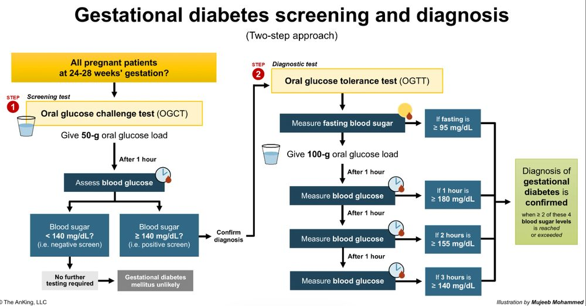
Paso 2 — CTOG diagnóstica de 100g, 3h (≥2 valores positivos)
| Tiempo | NDDG (mg/100mL) | Carpenter-Coustan (mg/100mL) |
|---|---|---|
| Ayuno | 105 | 95 |
| 1 h | 190 | 180 |
| 2 h | 165 | 155 |
| 3 h | 145 | 140 |
Parkland Hospital usa NDDG; UAB prefiere Carpenter-Coustan (umbrales más bajos → más diagnósticos, con NNT más alto para prevenir distocia de hombro; Harper et al., 2016).
Metas glucémicas de autovigilancia (ACOG/ADA)
Efectos maternos y fetales
- Hipertensión gestacional y preeclampsia (↑ frecuencia vs. población general)
- Cesárea (↑ por macrosomía/distocia de hombro)
- DM2 manifiesta a futuro: 50–75% a 15–25 años
- Síndrome metabólico y morbilidad cardiovascular a largo plazo (×2.6 hospitalización por causa CV, Kessous et al., 2013)
- Macrosomía (peso ≥4000 g) → depósito graso en hombros/tronco (respeta cerebro) → distocia de hombro
- Hipoglucemia neonatal (por hiperplasia de células β fetales — hiperinsulinismo reactivo tras el pinzamiento del cordón)
- Hiperbilirrubinemia y policitemia (hipoxia fetal relativa → ↑eritropoyetina)
- No hay aumento relevante de malformaciones mayores ni de mortinato (a diferencia de la DM pregestacional) — excepción: mujeres con glucosa en ayuno muy elevada, que sí tienen mortinatos inexplicables similares a DM manifiesta
El IMC materno es un factor de riesgo independiente y más sustancial para macrosomía que la intolerancia a la glucosa per se (Ehrenberg, 2004). Factores adicionales: IGF-1 materno/fetal, péptido C en cordón (marcador de función de células β fetales, correlaciona con % de RN >p90 en HAPO), factor de crecimiento epidérmico y de fibroblastos, leptina y adiponectina. La obesidad materna + ganancia excesiva de peso gestacional contribuye más que la DMG per se a la fracción poblacional de RN LGA (Kim et al., 2014).
Tratamiento
| Paso terapéutico | Descripción |
|---|---|
| Dieta | 30–35 kcal/kg/día; carbohidratos 33–40% del total calórico (mínimo 175 g/día), proteína 20%, grasa 40% (<10% saturada); 3 comidas + 2–4 colaciones |
| Ejercicio | Aeróbico + acondicionamiento de fuerza regular; reduce ganancia ponderal y glucemia (ACOG) |
| Automonitorización | 4×/día: ayuno + 1–2h posprandial tras cada comida; superior a vigilancia solo preprandial |
| Insulina (1ª línea farmacológica) | Se agrega si ayuno persiste >95 o 1h posprandial >140 o 2h >120 mg/100mL. Dosis inicial 0.7–1.0 U/kg/día fraccionada (NPH + regular, o basal-bolo con glargina + análogo rápido) |
| Metformina (2ª línea, off-label) | Cruza la placenta (concentración fetal ≈ materna). Vs. insulina: menor ganancia ponderal materna y menor peso al nacer/macrosomía, pero más parto pretérmino; 34% de falla terapéutica (requiere agregar insulina) (Balsells et al., 2015) |
| Glibenclamida/gliburida (2ª línea, off-label) | Cruza placenta (>66% de la concentración materna). Vs. insulina: mayor peso al nacer, macrosomía e hipoglucemia neonatal; falla terapéutica ~6% (menor que metformina, pero peor perfil neonatal) |
Manejo obstétrico
- Manejo expectante; sin necesidad de pruebas fetales sistemáticas
- Inducción sistemática: no antes de 39 semanas (ACOG)
- Vigilancia fetal anteparto desde ~32–34 semanas (conteo de movimientos, RCTG)
- Parto entre 37–39 semanas según control glucémico
La inducción electiva para prevenir distocia de hombro (vs. manejo expectante) sigue siendo controversial: el ensayo GINEXMAL (Alberico et al., 2017) no mostró diferencia significativa en tasa de cesárea entre inducción 38–39 sem vs. expectante hasta 41 sem, pero la inducción temprana se asoció a más hiperbilirrubinemia neonatal. El peso fetal estimado ≥4500 g es el umbral en el que ACOG reconoce que puede considerarse cesárea profiláctica para evitar traumatismo del plexo braquial (aunque se necesitarían ~588 cesáreas para prevenir 1 caso de parálisis permanente).
Valoración posparto y recurrencia
| Momento | Prueba | Propósito |
|---|---|---|
| 4–12 semanas posparto | CTOG 75g, 2h (o glucosa en ayuno) | Descartar DM manifiesta persistente |
| Cada 1–3 años | Glucosa en ayuno / HbA1c | Vigilancia a largo plazo (50–75% desarrollará DM2 en 15–25 años) |
La tasa de recurrencia de DMG en embarazo subsecuente es ~48%; factores de riesgo adicionales: IMC materno elevado, uso de insulina, macrosomía fetal previa y ganancia de peso entre embarazos (Schwartz et al., 2015-2016). La pérdida de ≥2 puntos de IMC antes del siguiente embarazo se asocia a menor riesgo de recurrencia.
// Diabetes Pregestacional
La diabetes es la complicación médica más frecuente del embarazo. Se dividen las pacientes en aquellas con diagnóstico antes del embarazo (diabetes pregestacional o manifiesta) y aquellas con diagnóstico durante el embarazo (DMG). El sistema ADA propone clasificar según: DM tipo 1 (destrucción de células β, deficiencia absoluta de insulina), DM tipo 2 (resistencia a la insulina con deficiencia relativa), y otros tipos (mutaciones genéticas de célula β — MODY 1–6, defectos genéticos de acción de insulina, síndromes genéticos como Down/Klinefelter/Turner, enfermedades del páncreas exocrino, endocrinopatías, inducida por fármacos/químicos, infecciones congénitas) (Cunningham et al., 2022, cap. 60).
Diagnóstico de diabetes manifiesta en el embarazo
| Medición de la glucemia | Límite diagnóstico |
|---|---|
| Glucosa en ayuno plasmática | ≥7.0 mmol/L (126 mg/100mL) |
| Hemoglobina A1c | ≥6.5% |
| Glucosa plasmática aleatoria | ≥11.1 mmol/L (200 mg/100mL) + confirmación |
Aplica a mujeres sin diabetes conocida antes del embarazo; el diagnóstico presuntivo con estos límites debe confirmarse después del parto. Factores de riesgo: fuerte antecedente familiar de diabetes, recién nacido grande previo, glucosuria persistente o pérdidas fetales inexplicables.
Efectos fetales
Hasta 25% con diabetes manifiesta; control glucémico deficiente es el factor vinculado (HbA1c >12% o glucosa preprandial >120 mg/100mL → riesgo alto). El riesgo de aborto aumenta 8% por cada incremento de 20 mg/100mL en la glucosa en ayuno.
Factor de riesgo indiscutible; en más del 60% el parto prematuro está indicado (complicaciones obstétricas/médicas, sobre todo hipertensión + diabetes). Tasa de parto pretérmino: hasta 42% en DM1 vs. 3% en DM2 (Murphy, 2021).
Riesgo 3–4× mayor. Casi limitado a diabetes manifiesta; sin causa identificable (sin insuficiencia placentaria, desprendimiento, RCIU u oligohidramnios). Fetos suelen ser LGA y mueren antes del trabajo de parto, en el 3T avanzado. Relacionado con control glucémico deficiente y cetoacidosis materna.
~18% de los embarazos con diabetes pregestacional en el 3T (AFI >24 cm). Se relaciona con HbA1c alta y macrosomía; hipótesis: hiperglucemia fetal → poliuria fetal.
Crecimiento fetal alterado — macrosomía
materna
fetal
excesivo (respeta cerebro)
hombros y tronco
desproporción fetopélvica
La macrosomía aumenta significativamente cuando la glucosa media materna supera 130 mg/100mL. Tasas de macrosomía por tipo: DM1 35%, DM2 28%, DMG 24% (Hammoud, 2013).
Malformaciones congénitas
Incidencia de malformaciones mayores en DM1 ≈11%, al menos el doble que en no diabéticas; el riesgo está presente también en DM2. Las malformaciones cardiovasculares representan más de la mitad de las anomalías. Mecanismos propuestos: producción excesiva de radicales superóxido, alteración de vías de señalización, hiperglucemia induciendo expresión génica anómala y activación de apoptosis.
| Defecto congénito | OR (IC 95%) |
|---|---|
| Tetralogía de Fallot | 5.3 (3.5–8.0) |
| Defecto del tabique AV | 10.5 (6.2–17.9) |
| Coartación aórtica | 4.5 (2.8–7.1) |
| Anencefalia | 3.5 (1.9–6.4) |
| Encefalocele | 5.4 (2.5–11.7) |
| Hidrocefalia | 8.2 (5.0–13.5) |
| Paladar hendido | 4.3 (2.9–6.5) |
| Hipospadias | 2.8 (1.7–4.8) |
| Renales | 8.1 (3.9–16.9) |
| Agenesia sacra | 80.2 (46.1–139.3) |
La secuencia de regresión caudal (agenesia sacra) es rara pero muy característica de diabetes pregestacional (80× más probable). HbA1c periconcepcional <6.5% → riesgo 2× de defecto cardiaco mayor; HbA1c >9% → riesgo 6× más alto (Ludvigsson, 2018). El riesgo de malformaciones se relaciona con el control glucémico periconcepcional, no con la diabetes gestacional (que inicia después de la organogénesis).
Efectos neonatales
- Hipoglucemia: caída rápida de glucosa tras el nacimiento por hiperplasia de células β fetales inducida por hiperglucemia materna crónica; <45 mg/100mL
- Hipocalcemia: calcio total <8 mg/100mL en RN de término; causa desconocida (alteración de economía de magnesio/calcio, asfixia, prematurez)
Policitemia como respuesta fetal a hipoxia relativa (afinidad materna aumentada por O2 + consumo fetal de O2) → ↑eritropoyetina → ↑producción de eritrocitos → ↑carga de bilirrubina.
Frecuente en DM pregestacional y gestacional; se atribuye al exceso de insulina fetal. Puede iniciar desde el 1T (disfunción diastólica). Casi siempre asintomática y se resuelve en los meses posteriores al nacimiento.
La edad gestacional, no la diabetes manifiesta per se, es el factor principal relacionado con SDR; la diabetes no altera el beneficio de corticoesteroides prenatales sobre la madurez pulmonar.
Desarrollo cognitivo de largo plazo y herencia
Estudios asocian la diabetes materna con menor coeficiente intelectual (1–2 puntos menos) y afectación de memoria/desarrollo del lenguaje en la descendencia, aunque el vínculo con el control glucémico específico aún no se confirma por confusión con factores posnatales. Herencia: riesgo de DM1 en el hijo si un padre está afectado ≈3–5%; DM2 tiene componente genético más fuerte — si ambos padres tienen DM2, riesgo en el hijo ≈40%.
Efectos maternos
Complicación que más obliga al parto prematuro en diabetes. Riesgo relativo acumulado casi 4× mayor en DM pregestacional (metaanálisis, Bartsch 2016); hasta 12× mayor si coexiste HTA crónica. Se recomienda ASA 81 mg/d entre semanas 12–28 hasta el parto como profilaxis.
Principal causa de nefropatía terminal en EE. UU. Inicia con microalbuminuria (30–300 mg/24h); macroalbuminuria (>300 mg/24h) predice progresión a etapa terminal. ~5% de embarazadas con diabetes manifiesta ya tiene compromiso renal; hasta 40% de ellas desarrollará preeclampsia. El embarazo generalmente no agrava la nefropatía leve, pero sí puede acelerar el daño renal moderado–grave preexistente.
Complicación específica de DM1 y DM2; principal causa de daño visual en adultos en edad laboral. Progresión: retinopatía de fondo/no proliferativa → preproliferativa (exudados algodonosos) → neovascularización. La fotocoagulación láser antes de hemorragia reduce a la mitad la progresión a ceguera. El control glucémico "agudo" muy estricto durante el embarazo puede agravar transitoriamente la retinopatía, aunque enlentece su progresión a largo plazo.
La neuropatía periférica simétrica es infrecuente en el embarazo. La gastropatía diabética (forma autonómica) causa náusea/vómito, problemas nutricionales y control difícil de la glucemia; se asocia a alto riesgo de morbilidad y resultados perinatales desfavorables. Tratamiento con metoclopramida o antagonistas D2; en hiperémesis grave se prefiere insulina en infusión continua.
↑ vulvovaginitis por Candida, IVU y pielonefritis (5% en diabéticas vs. 1.3% sin diabetes), infección pélvica puerperal. Bacteriuria asintomática 2× más frecuente. 16.5% de complicación de herida posoperatoria tras cesárea en DM pregestacional.
Cetoacidosis diabética (DKA) en el embarazo
Se desarrolla en ~1% de los embarazos con diabetes, casi siempre en DM1 (cada vez más frecuente en DM2 e incluso DMG). Causada por deficiencia de insulina + exceso de hormonas contrarreguladoras (glucagón) → gluconeogénesis + cetogénesis. El β-hidroxibutirato (no el acetoacetato) predomina, por lo que las pruebas séricas de β-hidroxibutirato son más precisas. Las embarazadas desarrollan DKA con glucemias más bajas que fuera del embarazo. Mortalidad materna <1%, pero mortalidad perinatal tras un episodio hasta 35%.
| Componente | Manejo |
|---|---|
| Laboratorio | Gasometría arterial; glucosa, creatinina, cetonas y electrólitos c/1–2h |
| Insulina | Dosis baja IV: carga 0.2–0.4 U/kg; mantenimiento 2–10 U/h |
| Líquidos | NaCl isotónico hasta 3L, luego salina 0.45%; reposición total 4–6L en 12h (1L la 1ª hora, luego 500–1000 mL/h por 2–4h, luego 250 mL/h hasta reponer 80%) |
| Glucosa | Iniciar glucosa 5% en salina 0.45% cuando glucemia llegue a 250 mg/100mL |
| Potasio | Si normal/bajo: hasta 15–20 mEq/h; si elevado, esperar normalización y agregar 20–30 mEq/L |
| Bicarbonato | 1 ampolleta (44 mEq) en 1L salina 0.45% si pH sérico <7.1 |
Atención preconcepcional y por trimestre
- Meta: HbA1c <6.5% antes de la concepción
- Automonitorización: preprandial 70–100, posprandial 2h máx. 100–120, media diaria <110 mg/100mL
- Folato 400 mcg/día VO desde antes de la concepción y en el embarazo temprano
- Valorar y tratar retinopatía/nefropatía antes del embarazo
- Hospitalización para iniciar control individualizado de la glucosa (práctica de Parkland)
- Valorar complicaciones vasculares y confirmar edad gestacional
- Proteína en orina 24h, creatinina sérica, examen de retina, ecocardiograma si HTA crónica
- Detección de aneuploidía: PAPP-A y hCGβ pueden estar reducidos en diabetes pregestacional
- α-fetoproteína puede ser menor en diabéticas; interpretar en consecuencia
- Ecocardiografía fetal (riesgo cardiaco congénito 5× mayor)
- Tras inestabilidad glucémica del 1T, se alcanza periodo estable y luego ↑requerimiento de insulina (resistencia periférica del embarazo)
- FIR (requerimientos de insulina descendentes ≥15% tras sem. 20): marcador de riesgo 4× mayor de insuficiencia placentaria
- Vigilancia fetal (conteo de movimientos, RCTG, PBF) desde 32–34 semanas
- Parto entre 390/7–396/7 sem si pruebas tranquilizadoras y sin complicaciones (Parkland: 38 sem con insulina)
- Cesárea ~80% de las pacientes con diabetes manifiesta (Parkland, últimos 40 años)
Tratamiento con insulina — perfiles de acción
| Tipo de insulina | Inicio | Pico (h) | Duración (h) |
|---|---|---|---|
| Lispro (SC) | <15 min | 0.5–1.5 | 2–4 |
| Glulisina (SC) | <15 min | 0.5–1.5 | 2–4 |
| Aspart (SC) | <15 min | 0.5–1.5 | 2–4 |
| Regular (SC) | 30–60 min | 2–3 | 3–6 |
| Degludec (SC) | 1–9 h | — | <12 |
| Detemir (SC) | 1–4 h | Mínima | 12–24 |
| Glargina (SC) | 1–4 h | Mínima | 20–24 |
| NPH (SC) | 1–4 h | 4–10 | 10–16 |
Vigilancia — metas glucémicas de autovigilancia
Tratamiento — enfoque actual (UpToDate, 2026)
Insulina sigue siendo de 1ª línea. Metformina es opción en algunas pacientes con DM2. Evitar agonistas GLP-1, inhibidores de SGLT-2 e inhibidores de DPP-4 hasta contar con más datos de seguridad humana (daño fetal en estudios animales; datos humanos aún muy limitados).
| Automonitorización | Meta |
|---|---|
| Ayuno, preprandial y nocturna | 70–95 mg/100mL |
| 1h posprandial | 110–140 mg/100mL |
| 2h posprandial | 100–120 mg/100mL |
| CGM (DM1) — rango objetivo | 63–140 mg/100mL, tiempo en rango >70% |
Se recomienda CGM (monitorización continua) en DM1 por reducir complicaciones neonatales. Ácido acetilsalicílico 81–162 mg/día desde sem 12 (riesgo de preeclampsia ~3.7× mayor con diabetes pregestacional). Meta de PA <140/90 mmHg (evitar <90/60); IECA/ARA-II contraindicados.
Momento y vía del parto (UpToDate)
| Situación clínica | Momento sugerido |
|---|---|
| Metas glucémicas cumplidas, sin enfermedad vascular ni macrosomía | 39+0–39+6 semanas |
| Control glucémico deficiente, enfermedad vascular o mortinato previo | 36+0–38+6 semanas |
- Diabetes sola no es indicación de cesárea. PFE >4500 g: cesárea programada razonable (riesgo de lesión del plexo braquial).
- PFE >4000 g + 2ª etapa prolongada: preferir cesárea sobre parto vaginal instrumentado (fórceps/vacuum), por el riesgo combinado de distocia de hombro.
- Corticoides prenatales (<34 sem): hiperglucemia transitoria tras la 1ª dosis (inicia ~12h después, dura ~5 días); esquema de Mathiesen: día 1 ↑25% dosis nocturna, días 2–3 ↑40% todas las dosis, día 4 ↓20%, día 5 ↓10%, día 6 dosis basal. Iniciar infusión IV de insulina si glucemia >180 mg/100mL pese al ajuste SC.
Manejo de la insulina periparto (inducción o cesárea programada)
habitual
matutina
100–125 mL/h
1–1.25 U/h si glucemia >100
cada hora
si trabajo activo o <70–100
Puerperio
Muchas mujeres no requieren insulina en las primeras 24h o más tras el parto (los requerimientos caen abruptamente). Vigilar infección tempranamente. Reanudar fármacos orales cuando sea apropiado (DM2: puede ser desde el 1ª día posoperatorio). La asesoría en anticoncepción es clave para optimizar el control glucémico antes de una concepción posterior.
- Lactancia: insulina y metformina son compatibles; en DM1 el requerimiento basal puede ser ~15% menor que pregestacional y persistir así ≥6 meses.
- Anticoncepción: sin enfermedad vascular, todos los métodos hormonales son aceptables (vigilar glucemia con DMPA); con enfermedad vascular, evitar DMPA y anticonceptivos combinados — preferir DIU o implante.
- Retinopatía: seguimiento oftalmológico durante el primer año posparto (puede agravarse en este periodo).
- Depresión posparto: más frecuente en diabetes (pregestacional o gestacional) — tamizaje sistemático recomendado.
// Dermatosis Específicas del Embarazo
Cuatro dermatosis se consideran específicas del embarazo: penfigoide gestacional (PG), pápulas y placas urticariformes pruriginosas del embarazo (PUPPP), erupción atópica del embarazo (AEP) y la colestasis intrahepática del embarazo. Su aspecto macroscópico es similar entre sí y respecto de otras dermatosis; el prurito es la característica común. De estas cuatro, solo el PG y la colestasis se han vinculado con resultados perinatales adversos. La colestasis carece de lesiones cutáneas primarias y se acompaña de ácidos biliares séricos muy elevados (ver S7 — se aborda a fondo en el capítulo de complicaciones médicas).
Clasificación General
Son consecuencia del ambiente hormonal, vascular y mecánico del embarazo; la mayoría involuciona después del parto.
Enfermedades cutáneas previas que pueden mejorar, empeorar o cambiar su patrón clínico durante la gestación.
Cambios Cutáneos Fisiológicos
| Cambio | Apariencia y distribución | Perla |
|---|---|---|
| Hiperpigmentación | oscurecimiento difuso en areolas y línea media abdominal (línea negra) | Hasta 90%; etiología hormonal |
| Melasma | manchas hiperpigmentadas bien delimitadas en labio superior, frente y mejillas | Fotoprotección; puede persistir en fototipos altos |
| Cambios vasculares | angiomas aracniformes, eritema palmar, edema, varices y púrpura | Relacionados con angiogénesis y vasodilatación |
| Granuloma piógeno | nódulo rojo lobulado, friable y sangrante, típico en encía | Épulis del embarazo; suele involucionar posparto |
| Estrías | bandas lineales eritemato-violáceas en abdomen, mamas y muslos | Secundarias a distensión mecánica |
Dermatosis Influidas por el Embarazo
Psoriasis: suele mejorar durante la gestación y reagudizarse en el puerperio. Dermatitis atópica, lupus y pénfigo vulgar: con frecuencia empeoran por el predominio inmunitario Th2. Acné: evolución variable; puede exacerbarse al final por hiperandrogenemia. Rosácea: suele empeorar por mayor reactividad vascular. Los nevus pueden oscurecerse o aumentar discretamente de tamaño en áreas de distensión; cualquier asimetría, borde irregular, policromía o crecimiento rápido exige evaluación y biopsia.
Cuadro Comparativo — Dermatosis Exclusivas del Embarazo
| Enfermedad | Frecuencia | Lesión característica | Efectos adversos | Tratamiento |
|---|---|---|---|---|
| PUPPP | Frecuente | pápulas y placas eritemato-edematosas muy pruriginosas; inician en estrías abdominales y respetan el ombligo | Ninguno | Cetirizina o loratadina; vaselina/crema con ceramidas; hidrocortisona 1%, desonida 0.05% o triamcinolona 0.1% |
| AEP (eccema, prurigo, foliculitis) | Frecuente (la más común) | eccema, pápulas/nódulos excoriados o pápulas foliculares | Ninguno | Vaselina o crema con ceramidas; cetirizina/loratadina; hidrocortisona 1%, desonida 0.05% o triamcinolona 0.1% |
| Penfigoide gestacional | Raro | pápulas/vesículas que progresan a ampollas tensas sobre base eritematosa; periumbilical | Parto pretérmino, RCIU, lesiones neonatales transitorias | Clobetasol 0.05% o betametasona dipropionato 0.05%; prednisona/prednisolona; refractario: inmunoglobulina IV o ciclosporina |
| Colestasis del embarazo | Frecuente | sin lesión primaria; excoriaciones o prurigo nodular por rascado | Mayor morbilidad perinatal | Ácido ursodesoxicólico; cetirizina o loratadina para prurito; colestiramina como alternativa |
// Penfigoide Gestacional
Enfermedad ampollosa autoinmunitaria (antes llamada herpes gestacional, sin relación con el virus herpético). Anticuerpos IgG maternos atacan la colágena XVII (= BP180, penfigoide ampolloso 180) de la membrana basal de la piel y del epitelio amniótico. Los autoanticuerpos fijados a BP180 activan el complemento → quimiotaxis de eosinófilos → desgranulación eosinófila → daño de la unión dermoepidérmica → formación de ampollas.
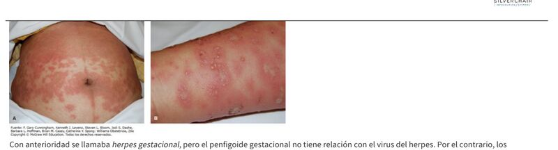
Penfigoide gestacional. A. Placas abdominales que siempre abarcan el ombligo. B. Lesiones ampollosas en muñeca y antebrazo. (Williams Obstetricia, 26.ª ed.)
Inicio abrupto con pápulas o vesículas pruriginosas en tronco, típicamente periumbilicales. Después se generaliza con placas urticariales, vesículas agrupadas y finalmente ampollas tensas sobre base eritematosa. Las mucosas se respetan.
Curso Clínico
- Aparece típicamente en el 1er embarazo; embarazos posteriores → recurrencia más temprana y acentuada
- Asociación con otras enfermedades autoinmunitarias, en especial enfermedad de Graves
- Inicio habitual en 2°–3er trimestre; puede exacerbarse en el puerperio
- Evolución con exacerbaciones y remisiones; empeora con la menstruación y anticonceptivos orales
- 5–10% de los recién nacidos desarrollan lesiones transitorias por transferencia pasiva de IgG (resuelven solas)
Complicaciones (inicio temprano + ampollas)
- Parto de pretérmino
- Oligohidramnios
- Retraso del crecimiento fetal (RCIU)
Insuficiencia placentaria leve por depósito de IgG y complemento a lo largo de la membrana basal amniótica → vigilar y tratar estas complicaciones activamente.
Diagnóstico y Tratamiento
Antes de la formación de ampollas, el PG se asemeja a PUPPP. Otros diferenciales: penfigoide bulloso, psoriasis pustulosa, eritema multiforme, dermatosis ampollosa lineal por IgA, dermatitis herpetiforme/contacto, AEP. Excluir siempre Síndrome de Stevens-Johnson y necrólisis epidérmica tóxica (farmacológicos, ponen en riesgo la vida).
| Método | Hallazgo |
|---|---|
| Inmunofluorescencia directa (biopsia en sacabocado) — más preciso | Complemento C3 ± IgG a lo largo de la membrana basal |
| ELISA sérico | Anticuerpos IgG circulantes contra BP180 |
- Leve: clobetasol 0.05% o dipropionato de betametasona 0.05% tópicos + cetirizina 10 mg/día o loratadina 10 mg/día
- Resistente: corticosteroide oral, de preferencia prednisona/prednisolona (inactivados por la 11-β-hidroxiesteroide deshidrogenasa placentaria → menor exposición fetal); dosis 0.5–1 mg/kg/día con reducción gradual
- Refractario (raro): inmunoglobulina IV, ciclosporina o plasmaféresis; rituximab se ha descrito al inicio del embarazo (riesgo de inmunosupresión neonatal transitoria si se usa tardíamente)
// PUPPP (Erupción Polimórfica del Embarazo)
Dermatosis frecuente y exclusiva del embarazo. Inicia con pápulas eritemato-edematosas de 1–2 mm, intensamente pruriginosas, que confluyen en placas urticariformes. Comienza en el interior de las estrías abdominales, se extiende a abdomen, glúteos y muslos, pero respeta la zona periumbilical. Puede hacerse polimorfa con lesiones dianiformes, vesículas diminutas o placas eccematosas; cara, palmas y plantas suelen respetarse.
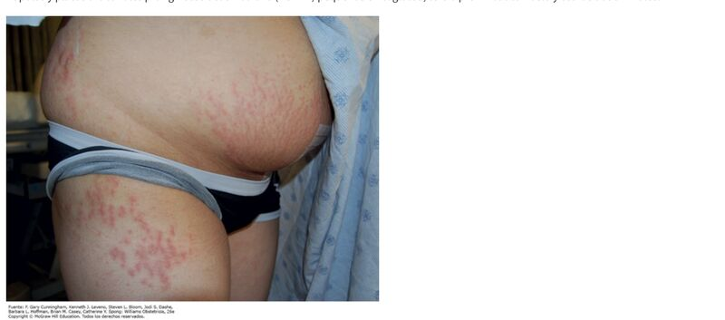
PUPPP pequeñas en glúteo, tercio proximal del muslo y estrías abdominales. (Williams Obstetricia, 26.ª ed.)
Factores de Riesgo y Pronóstico
- Mujeres caucásicas y nulíparas
- Embarazos multifetales
- Fetos de género masculino
- Causa desconocida; no es autoinmunitaria
- Rara vez recurre en embarazos ulteriores
- Sin efectos adversos en el embarazo
- Resuelve pronto tras el parto (15–20% persiste 2–4 semanas)
Diagnóstico Diferencial y Manejo
Dermatitis por contacto, erupción farmacológica, exantema vírico, mordedura de insectos, escabiosis, pitiriasis rosada. Puede confundirse con PG incipiente sin ampollas; en casos indefinidos, biopsia + BP180 sérico negativo ayudan a distinguir.
Cetirizina 10 mg/día o loratadina 10 mg/día + vaselina/crema con ceramidas + hidrocortisona 1%, desonida 0.05% o triamcinolona 0.1% tópicas suelen controlar el prurito. Si es intenso: prednisona o prednisolona en curso corto.
// Erupción Atópica del Embarazo (AEP)
Engloba tres entidades antes consideradas por separado: eccema del embarazo, prurigo del embarazo y foliculitis pruriginosa del embarazo. Es la dermatosis más frecuente del embarazo en conjunto. ~66% cursa con cambios eccematosos extensos; 33% con lesiones papulares. Antecedente de atopia ayuda al diagnóstico. 75% ocurre en 1°–2° trimestre. Como grupo, sin riesgo fetal.
Subtipos Clínicos
| Subtipo | Lesión | Distribución |
|---|---|---|
| Eccema del embarazo (más frecuente) | placas secas, engrosadas, escamosas y eritematosas | Pliegues de extremidades, pezones, cuello, cara |
| Prurigo gestacional | pápulas o nódulos eritematosos excoriados de 5–10 mm | Superficies extensoras y tronco |
| Foliculitis pruriginosa (rara) | pápulas foliculares pequeñas y pústulas estériles | Tronco, sobre todo |
De exclusión: biopsia y serología específica para PG negativas; ácidos biliares normales (descarta colestasis). IgE sérica con frecuencia elevada en el eccema del embarazo.
Vaselina o crema con ceramidas de forma continua + cetirizina 10 mg/día o loratadina 10 mg/día según necesidad + hidrocortisona 1%, desonida 0.05% o triamcinolona 0.1% tópicas c/12 h por varias semanas, luego mantenimiento 1–2 veces/semana. Eccema grave: clobetasol 0.05% en ciclos cortos; tacrolimo tópico 0.03–0.1%, fototerapia UVB de banda estrecha o ciclosporina como 2ª línea.
// Colestasis Intrahepática del Embarazo
Prurito intenso, generalizado y de inicio súbito, casi siempre en el 3er trimestre; puede iniciar en palmas y plantas. La clave dermatológica es ausencia de lesiones cutáneas primarias. Solo aparecen lesiones secundarias al rascado: excoriaciones lineales, costras y, en cuadros prolongados, prurigo nodular.
Ácidos biliares séricos elevados confirman el cuadro; pueden coexistir elevación de transaminasas y bilirrubina directa. La ausencia de transaminasas elevadas no lo descarta.
Asocia parto pretérmino, sufrimiento fetal y muerte fetal; el riesgo aumenta con la concentración de ácidos biliares. El prurito desaparece habitualmente pocos días después del parto y la recurrencia es frecuente.
Ácido ursodesoxicólico 10–15 mg/kg/día dividido en 2–3 dosis para control bioquímico y sintomático, vigilancia fetal y planificación obstétrica según gravedad y edad gestacional. Cetirizina 10 mg/día o loratadina 10 mg/día pueden reducir el prurito, pero no modifican el riesgo fetal.
Se integra el algoritmo tal cual a partir de la imagen proporcionada.
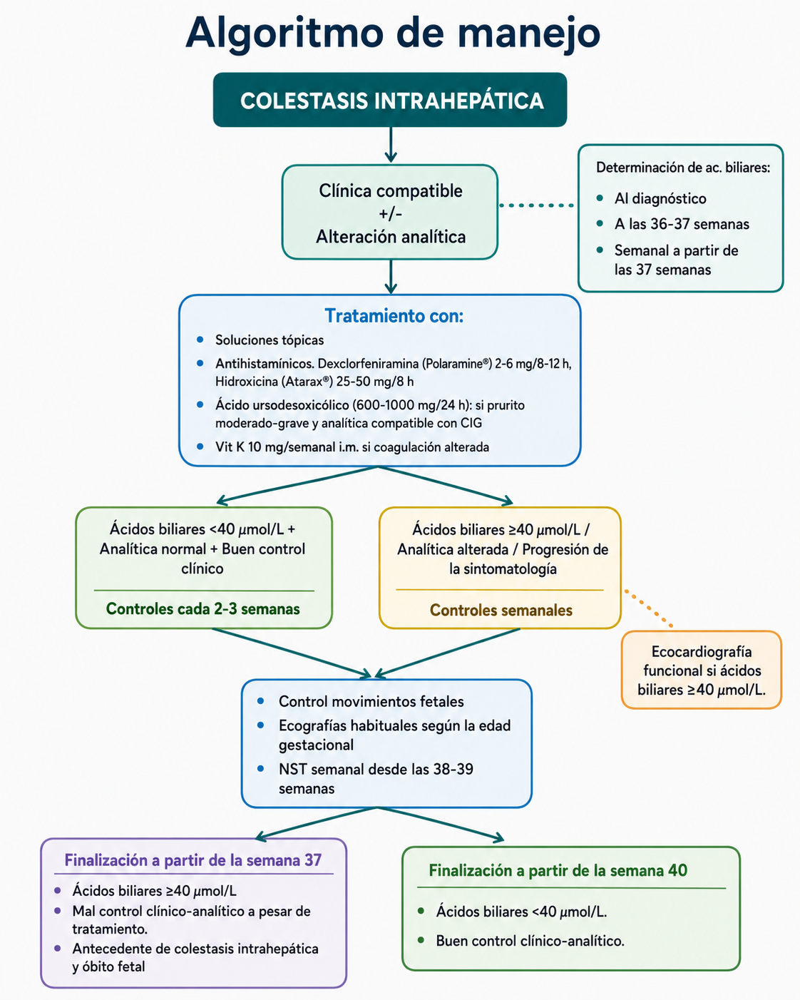
Algoritmo de manejo de colestasis intrahepática rediseñado en formato más legible y orgánico, manteniendo toda la información original.
COLESTASIS INTRAHEPÁTICA
Clínica compatible +/- Alteración analítica
- Al diagnóstico
- A las 36-37 semanas
- Semanal a partir de las 37 semanas
- Soluciones tópicas
- Antihistamínicos: Dexclorfeniramina (Polaramine) 2-6 mg c/12h, Hidroxicina (Atarax) 25-50 mg/8h
- Ácido ursodesoxicólico (600-1000 mg/24h): si prurito moderado-grave y analítica compatible con CIG
- Vit K 10 mg/semanal im si coagulación alterada
Ácidos biliares <40µmol/L + Analítica normal + Buen control clínico.
Controles cada 2-3 semanas
Ácidos biliares ≥40µmol/L / Analítica alterada / Progresión de la sintomatología:
Controles semanales
Ecocardiografía funcional si ácidos biliares ≥40µmol/L.
- Control movimientos fetales
- Ecografías habituales según la edad gestacional
- NST semanal desde las 38-39 semanas
- Ácidos biliares ≥40µmol/L
- Mal control clínico-analítico a pesar de tratamiento.
- Antecedente de colestasis intrahepática y óbito fetal
- Ácidos biliares <40µmol/L.
- Buen control clínico-analítico.
// Otras Enfermedades Dermatológicas en el Embarazo
Acné Vulgar
- 1ª línea: peróxido de benzoilo 2.5–5% o ácido azelaico 15–20% (comedolítico/antiinflamatorio)
- Combinar con clindamicina/eritromicina tópicas si es necesario (el peróxido de benzoilo reduce resistencia a P. acnes)
- Retinoides tópicos (tretinoína, adapaleno): estudios grandes no muestran daño, pero se prefiere evitarlos, en especial en 1er trimestre; tazaroteno tópico contraindicado
- Casos graves: antibióticos orales (eritromicina, azitromicina, cefalexina, amoxicilina) + peróxido de benzoilo; diferir a 2° trimestre, limitar a 4–6 semanas
- Prednisona/prednisolona oral o acetónido de triamcinolona intralesional para casos graves: diferir el tratamiento oral hasta después del 1er trimestre cuando sea posible
Psoriasis y Psoriasis Pustulosa del Embarazo
Evolución variable; exacerbaciones frecuentes en el puerperio. Manejo: vaselina/crema con ceramidas → hidrocortisona 1%, desonida 0.05% o triamcinolona 0.1% → clobetasol 0.05% o betametasona dipropionato 0.05% en 2°–3er trimestre y por tiempo limitado → fototerapia UVB de banda estrecha → ciclosporina, prednisona/prednisolona o anti-TNF-α (adalimumab, etanercept, infliximab) como 3ª línea. No aumenta por sí misma el riesgo perinatal; casos graves: leve ↑ bajo peso al nacer, DMG, preeclampsia.
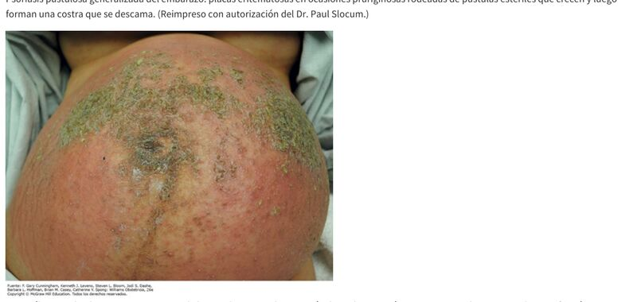
Psoriasis pustulosa generalizada del embarazo (antes impetigo herpetiforme): placas eritematosas rodeadas de pústulas estériles que crecen y forman costra. (Williams Obstetricia, 26.ª ed.)
Síntomas sistémicos similares a septicemia. Inicia con placas eritematosas cubiertas o rodeadas por pústulas estériles, a menudo con configuración anular; comienza en áreas flexurales/intertriginosas y se generaliza a tronco y extremidades, con posible afectación oral. Complicaciones: pérdida masiva de líquido → insuficiencia placentaria y compromiso fetal; riesgo de infección secundaria. Laboratorio: leucocitosis, ↑ VSG; cultivos cutáneos estériles (excluyen infección) + biopsia muestra pústulas epidérmicas de neutrófilos.
Tratamiento: prednisona oral (15–80 mg/día), ciclosporina (2–3 mg/kg/día), infliximab, corticosteroides o calcipotriol tópicos; reanimación hídrica, corrección de electrólitos, cefazolina IV; si alergia grave a β-lactámicos o riesgo de MRSA, clindamicina o vancomicina según cultivo, si hay infección secundaria. Suele resolver rápido posparto; valorar parto pretérmino individualizado.
Eritema Nodoso
Inflamación de la grasa subcutánea. Desencadenantes: infecciones, sarcoidosis, fármacos, Síndrome de Behçet, EII, cáncer (el embarazo también es un factor asociado). nódulos o placas dolorosos, rojos y calientes de 1–6 cm en superficies extensoras; evolucionan como equimosis (rojo oscuro/morado → amarillo verdoso). Tratamiento de soporte con reposo, elevación, compresión y paracetamol; tratar la causa específica cuando se identifique (p. ej., penicilina/amoxicilina en infección estreptocócica documentada). Suele resolver en 1–6 semanas, a veces con hiperpigmentación residual.
Granuloma Piógeno (Hemangioma Capilar Lobulado)
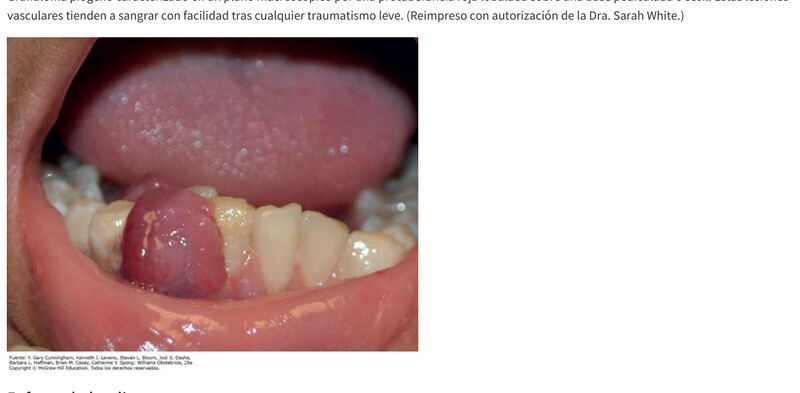
Granuloma piógeno: protuberancia roja lobulada sobre base pediculada o sésil; sangra con facilidad tras traumatismo leve. (Williams Obstetricia, 26.ª ed.)
Nombre impreciso — realmente un hemangioma capilar lobulado, favorecido por el ↑ de factores angiogénicos (p. ej., VEGF) del embarazo. Se forma en encías, superficies bucales/nasales o mano tras irritación/traumatismo mínimo; crece rápido y sangra con facilidad. Hemorragia activa: presión + nitrato de plata o pasta de Monsel. Regresa casi siempre en el puerperio (se puede observar); si crece, persiste posparto o el diagnóstico es incierto → extirpar (escisión, legrado electroquirúrgico, láser o crioterapia). Lesiones bucales: referir a especialista.
Enfermedades Diversas
Inflamación crónica de la piel con nódulos/abscesos y trayectos fistulosos (estadios de Hurley I–III). En el embarazo, generalmente no cambia o mejora. Tx: clindamicina tópica 1% (fases I/II activas); metronidazol o gel de eritromicina; est. II/III: clindamicina + rifampicina oral; adalimumab como 2ª línea en casos avanzados.
Los neurofibromas cutáneos crecen en número y tamaño durante el embarazo. NF1: ↑ riesgo de preeclampsia y parto pretérmino. NF2: riesgo de preeclampsia. Existe diagnóstico genético prenatal para ambos tipos.
Rara; pústulas faciales confluentes y trayectos fistulosos sin comedones. Cuadro agudo → valoración dermatológica. Tx: metronidazol 0.75–1% o ácido azelaico 15–20% tópicos; si es extensa, azitromicina o eritromicina oral. Puede añadirse hidrocortisona 1% o desonida 0.05% por tiempo corto; casos refractarios: prednisona/prednisolona oral en curso corto o drenaje quirúrgico focal.
// Tratamiento Dermatológico General en el Embarazo
| Generación | Fármacos | Nota |
|---|---|---|
| 1ª | Difenhidramina 25–50 mg c/6h; clorfeniramina 4 mg c/6h | Efectivos; más sedantes |
| 2ª | Loratadina 10 mg/día; cetirizina 5–10 mg/día | Menos sedación; inocuos en el embarazo |
Corticosteroides Tópicos por Potencia
| Potencia baja | Potencia moderada | Potencia elevada | Ultrapotentes |
|---|---|---|---|
| Hidrocortisona 0.5–1% | Acetónido de triamcinolona 0.1% | Acetónido de triamcinolona 0.5% | Propionato de clobetasol 0.05% |
| Dexametasona 0.1% | Furoato de mometasona 0.1% crema | Furoato de mometasona 0.1% pomada | |
| Desonida 0.05% | Valerato de betametasona 0.1% | Dipropionato de betametasona 0.05% |
Se prefieren potencia baja/moderada al inicio. Los de potencia alta y ultrapotentes tienen riesgo reducido para el crecimiento fetal solo con dosis acumuladas grandes — y aún así el riesgo es menor que con corticosteroides orales. Factores que ↑ absorción sistémica: superficie extensa, barrera epidérmica alterada, vendaje oclusivo, tratamiento prolongado, uso simultáneo de otros tópicos que aumentan la absorción.
Idoneidad de Fármacos Dermatológicos en el Embarazo
| Grupo | Recomendación |
|---|---|
| Corticosteroides, peróxido de benzoilo, ácido azelaico, clindamicina/eritromicina tópicos, inhibidores de calcineurina (tacrolimo/pimecrolimo) | Adecuados |
| Calcipotrieno | Posible osificación deficiente en animales; sin datos en humanos; quizá adecuado a dosis dermatológicas |
| Alquitrán de hulla | Posible mutagénico/carcinógeno en animales; diferir a 2° trimestre si se usa |
| Retinoides tópicos (tretinoína, adapaleno) | Sin daño demostrado en estudios grandes, pero se sugiere evitar |
| Tazaroteno | Teratogénico — contraindicado |
| Crisaborole | Datos limitados; se recomienda evitar |
| Antibióticos orales (azitromicina, amoxicilina, cefalexina, eritromicina) | Adecuados |
| Corticosteroides orales | 1er trimestre: riesgo bajo de paladar hendido |
| Ciclosporina | Bajo peso al nacer, parto pretérmino; no teratogénica |
| Inhibidores de TNF-α (infliximab, adalimumab, etanercept) | Adecuados |
| Metotrexato, psoraleno + UVA, micofenolato mofetilo, podofilina, retinoides sistémicos | Evitar en el embarazo |
Complicación potencial de cualquier dermatosis del embarazo. Para infección cutánea no purulenta pueden utilizarse cefalexina o amoxicilina-clavulanato; si existe alergia grave a β-lactámicos o sospecha de MRSA, clindamicina. Ajustar al cultivo y a la gravedad clínica.
// Trastornos del Tejido Conjuntivo en el Embarazo
Los trastornos del tejido conjuntivo, también conocidos como enfermedades reumáticas o trastornos vasculares del colágeno, se dividen principalmente en dos grupos: aquellos mediados por inmunocomplejos (inflamación estéril, como el lupus) y los trastornos hereditarios de las proteínas estructurales (como el síndrome de Marfan).
// 1. Lupus Eritematoso Sistémico (SLE)
Es la enfermedad autoinmunitaria más relevante en obstetricia, afectando a 1 de cada 500 mujeres en edad reproductiva. Su patogenia implica autoanticuerpos que dañan células y órganos mediante la fijación de complejos inmunitarios.
Diagnóstico y Marcadores
| Marcador | Prevalencia aproximada | Significado clínico |
|---|---|---|
| ANA | 84–98% | Mejor prueba de detección; muy sensible, pero no específica |
| Anti-dsDNA | 62–70% | Específico cuando está elevado; se correlaciona con actividad, nefritis y vasculitis |
| Anti-Sm | 25–38% | Específico para SLE |
| Anti-SS-A (Ro) | 30–49% | Predispone a lupus neonatal y bloqueo cardíaco congénito |
| Anti-SS-B (La) | 10–35% | Suele acompañar al anti-Ro |
| Antifosfolípidos | 21–50% | Trombosis, abortos, trombocitopenia y valvulopatía; VDRL falsamente positiva |
| Anti-RNP | 33–40% | Inespecífico; títulos elevados sugieren síndrome de superposición o conjuntivopatía mixta |
El capítulo utiliza la clasificación basada en la presencia seriada o simultánea de cuatro o más criterios clínicos e inmunitarios, entre ellos manifestaciones cutáneas, sinovitis, serositis, nefropatía, alteraciones neurológicas, citopenias, ANA, anti-dsDNA, anti-Sm, anticuerpos antifosfolípidos e hipocomplementemia.
SLE y Embarazo: Pronóstico
El estado clínico durante la gestación suele seguir la regla de los tercios: el 33% de las pacientes mejora, el 33% permanece estable y el 33% empeora. La enfermedad puede activarse sin aviso, especialmente si estaba activa al momento de la concepción.
| Resultado adverso | Riesgo relativo |
|---|---|
| Preeclampsia/eclampsia | 3.4 |
| Cesárea | 1.4 |
| Óbito | 16.5 |
| Aborto | 7.6 |
| Parto pretérmino | 2.3 |
| Pequeño para edad gestacional | 2.5 |
| Bajo peso al nacer | 4.8 |
| Ingreso a cuidados intensivos neonatales | 2.8 |
- Enfermedad activa al inicio del embarazo
- Nefritis activa, proteinuria abundante o deterioro renal
- Hipertensión crónica o preeclampsia superpuesta
- Síndrome antifosfolípido o anticoagulante lúpico
- Lupus neuropsiquiátrico
- Enfermedad inactiva ≥ 6 meses antes de la concepción
- Sin nefritis activa ni disfunción renal
- Sin síndrome antifosfolípido o anticoagulante lúpico
- Sin preeclampsia superpuesta
Nefritis Lúpica vs. Preeclampsia
| Dato | Exacerbación lúpica / nefritis | Preeclampsia |
|---|---|---|
| Momento | Puede aparecer en cualquier trimestre | Habitualmente después de las 20 semanas |
| Complemento C3/C4 | Descendente o bajo | Normal o elevado por el embarazo |
| Anti-dsDNA | Ascendente | Sin incremento relacionado |
| Sedimento urinario | Activo: hematuria y cilindros celulares | Generalmente inactivo |
| Ácido úrico | Normal o menos elevado | Elevado |
| Manifestaciones extrarrenales | Artritis, eritema, serositis, citopenias | Datos de disfunción placentaria o endotelial |
Manejo y Vigilancia
| Momento | Evaluación recomendada |
|---|---|
| Primera consulta | BH, creatinina, cuantificación basal de proteinuria, examen de orina, C3/C4, anti-dsDNA, anticuerpos antifosfolípidos, anti-Ro y anti-La |
| Cada trimestre | Función renal y parámetros hematológicos; mensualmente si aparecen síntomas o actividad |
| Desde 24 semanas | Ecografía cada cuatro semanas para crecimiento fetal y líquido amniótico |
| Tercer trimestre | Pruebas de bienestar fetal |
| Anti-Ro/La positivos | Vigilancia de la actividad cardíaca fetal entre las 18 y 26 semanas |
Tratamiento Farmacológico
| Fármaco | Uso en embarazo | Dosis o consideración |
|---|---|---|
| Hidroxicloroquina | Continuar | Reduce exacerbaciones y disminuye el riesgo de bloqueo cardíaco fetal; suspenderla puede precipitar un brote |
| AAS en dosis baja | Puede utilizarse | Durante toda la gestación, especialmente con riesgo placentario |
| Prednisona | Brote grave | 1–2 mg/kg/día VO; reducir gradualmente al controlar la actividad |
| Metilprednisolona | Pulsos | 1 000 mg IV al día por 3 días en enfermedad grave |
| Azatioprina | Compatible | Hasta 2 mg/kg/día VO |
| Ciclosporina / tacrolimús | Opciones | Útiles en nefritis lúpica o enfermedad resistente |
| AINE | Uso limitado | Evitar dosis altas o prolongadas por oligohidramnios y cierre del conducto arterioso |
| Micofenolato y metotrexato | Contraindicados | Teratógenos; sustituir antes de la concepción |
| Ciclofosfamida | Evitar | Teratógena; solo puede considerarse en enfermedad materna grave durante 2°/3er trimestre |
Síndrome de Lupus Neonatal
| Manifestación | Características |
|---|---|
| Cutánea | Dermatitis lúpica que suele aparecer a las 4–6 semanas y desaparece en meses |
| Hematológica/hepática | Trombocitopenia, hemólisis y elevación de transaminasas; generalmente transitorias |
| Bloqueo cardíaco congénito | Fibrosis permanente del nodo AV y haz de His; con frecuencia requiere marcapasos |
2–3% en fetos expuestos a anti-Ro/La; aumenta hasta 20% si ya hubo un hijo afectado.
La hidroxicloroquina es el tratamiento materno con evidencia de reducción del riesgo; corticosteroides, plasmaféresis e IVIG no previenen de forma comprobada el bloqueo.
// 2. Síndrome Antifosfolípido (APS)
Es una trombofilia adquirida definida por la presencia persistente de anticuerpos antifosfolípidos junto con trombosis vascular o morbilidad obstétrica.
Fisiopatología Obstétrica
Los anticuerpos antifosfolípidos producen una combinación de activación de procoagulantes, inhibición de anticoagulantes naturales, activación del complemento e interferencia con la diferenciación del sinciciotrofoblasto. El resultado no depende solo de trombosis: también existe inflamación placentaria, vasculopatía decidual, infartos e hipoperfusión.
Criterios Diagnósticos
| Componente | Criterios |
|---|---|
| Clínico: trombosis | Uno o más episodios confirmados de trombosis arterial, venosa o de pequeños vasos |
| Clínico: morbilidad obstétrica | ≥1 muerte fetal inexplicable ≥10 semanas; o ≥1 parto <34 semanas por preeclampsia grave/insuficiencia placentaria; o ≥3 abortos consecutivos inexplicables <10 semanas |
| Laboratorio | Anticoagulante lúpico, anticardiolipina IgG/IgM en título medio-alto o anti-β2-glucoproteína I IgG/IgM, positivos en dos ocasiones separadas por ≥12 semanas |
Manifestaciones y Riesgo
| Sistema | Manifestaciones |
|---|---|
| Venoso | Tromboembolia, tromboflebitis, livedo reticular |
| Arterial | Evento vascular cerebral, isquemia transitoria, isquemia miocárdica, gangrena visceral o distal |
| Hematológico | Trombocitopenia y anemia hemolítica autoinmunitaria |
| Renal | Microangiopatía trombótica y trombosis glomerular |
| Obstétrico | Abortos recurrentes, muerte fetal, RCF, preeclampsia/HELLP y parto pretérmino |
Tratamiento
| Escenario | Manejo |
|---|---|
| Anticuerpos positivos sin APS clínico | Individualizar; vigilancia estrecha y considerar AAS en dosis baja según perfil de riesgo |
| APS obstétrico, sin trombosis previa | AAS en dosis baja + heparina profiláctica (HBPM o no fraccionada) |
| APS con trombosis previa | AAS en dosis baja + anticoagulación terapéutica con heparina durante el embarazo y continuación anticoagulante por 6 semanas posparto |
| APS secundario a SLE | Agregar/controlar la enfermedad con hidroxicloroquina; corticosteroide solo para la actividad lúpica, a la menor dosis efectiva |
| APS catastrófico | Anticoagulación completa + corticosteroides en dosis altas + plasmaféresis o IVIG |
// 3. Artritis Reumatoide (RA)
Enfermedad inflamatoria crónica caracterizada por sinovitis que destruye el cartílago y el hueso. Puede acompañarse de nódulos reumatoides, vasculitis y manifestaciones pleuropulmonares.
Hasta el 70% de las mujeres experimenta mejoría de los síntomas durante la gestación.
Entre el 40% y 50% presenta un brote posparto; la artritis de nueva aparición también aumenta durante los primeros tres meses puerperales.
| Tratamiento | Consideración en embarazo |
|---|---|
| Terapia física y ocupacional | Fundamental para conservar función y reducir incapacidad |
| AINE | Valorar riesgo-beneficio; evitar uso crónico y al final del embarazo |
| Prednisona | Dosis bajas a moderadas; el capítulo refiere 7.5–20 mg/día para controlar exacerbaciones |
| Sulfasalazina / hidroxicloroquina | Compatibles |
| Inhibidores TNF-α | Datos limitados, sin señal fetal importante en las series citadas |
| Metotrexato / leflunomida | Contraindicados |
// 4. Esclerosis Generalizada (Esclerodermia)
Trastorno caracterizado por lesión microvascular y depósito excesivo de colágeno en piel y órganos internos. Puede producir fenómeno de Raynaud, dismotilidad esofágica, fibrosis pulmonar, hipertensión pulmonar y crisis renal.
| Problema | Implicación obstétrica |
|---|---|
| Reflujo y disfagia | Suelen agravarse por el embarazo |
| Crisis renal | Hipertensión maligna e insuficiencia renal; no mejora con el parto |
| Hipertensión pulmonar | Por lo general contraindica el embarazo |
| Vasculopatía decidual | Mayor riesgo de preeclampsia, parto pretérmino, RCF y bajo peso |
| Limitación de apertura bucal | Intubación difícil; plan anestésico anticipado y preferencia por técnica neuroaxial cuando sea posible |
Puede anticiparse un parto vaginal si no existe indicación obstétrica de cesárea; el engrosamiento de tejidos blandos puede ocasionar distocia.
// 5. Síndromes Vasculíticos y Miopatías
| Entidad | Características y manejo |
|---|---|
| Poliarteritis nudosa | Vasculitis necrosante de arterias pequeñas y medianas; mialgias, neuropatía, afección digestiva, hipertensión y nefropatía. Si aparece durante el embarazo puede ser muy grave. Tratamiento: prednisona en dosis altas y, en enfermedad grave, ciclofosfamida. |
| Granulomatosis con poliangitis | Compromiso respiratorio y renal; mayor riesgo de parto pretérmino. Evaluar posible estenosis subglótica antes del parto. Corticosteroides; pueden utilizarse azatioprina, ciclosporina o IVIG. |
| Arteritis de Takayasu | Afecta aorta y grandes ramas. Vigilar presión arterial en una extremidad no afectada, con frecuencia la inferior; valorar función cardíaca y cerebrovascular. Responde a corticosteroides. |
| Behçet | Puede asociarse con aborto, bajo peso, preeclampsia, parto pretérmino y tromboembolia; el embarazo no está contraindicado. |
| Púrpura de Henoch-Schönlein | Púrpura, artralgias, dolor abdominal y hemorragia digestiva; suele responder a corticosteroides y los resultados obstétricos suelen ser buenos. |
| Dermatomiositis / polimiositis | Debilidad muscular progresiva; en dermatomiositis se agrega erupción. Diagnóstico con enzimas musculares, electromiografía y biopsia. El pronóstico depende de la actividad; la enfermedad de nueva aparición durante el embarazo es más agresiva. |
Las series citadas describen mayor frecuencia de hipertensión, hemorragia prenatal, cesárea y parto pretérmino, aunque la mayoría de las pacientes con enfermedad estable no presenta deterioro importante.
// 6. Trastornos Hereditarios del Tejido Conjuntivo
Trastorno autosómico dominante de la fibrilina. El riesgo principal en el embarazo es la dilatación o disección aórtica, siendo el embarazo un factor de riesgo crítico para este evento catastrófico.
Se caracteriza por hiperelasticidad cutánea y fragilidad de tejidos. Las pacientes tienen mayor riesgo de rotura prematura de membranas, parto pretérmino y, en la variedad tipo IV (vascular), rotura uterina o de grandes vasos y hemorragia puerperal.
Fragilidad ósea extrema. Los riesgos incluyen fracturas maternas durante el manejo del embarazo, escoliosis con restricción pulmonar y desproporción cefalopélvica que puede obligar a cesárea.
// Endocrinopatías en el Embarazo
El embarazo modifica de forma profunda los ejes endocrinos y puede simular, enmascarar o descompensar una endocrinopatía. La autoinmunidad endocrina puede atenuarse durante la gestación y exacerbarse en el puerperio; el microquimerismo fetal se ha propuesto como uno de sus mecanismos.
// 1. Trastornos Tiroideos
Fisiología tiroidea gestacional
| Cambio | Consecuencia clínica |
|---|---|
| ↑ estrógenos → ↑ globulina de unión tiroidea | ↑ T4 y T3 totales; interpretar con intervalos específicos del embarazo. |
| hCG estimula débilmente el receptor de TSH | ↑ transitoria de T4 libre y descenso fisiológico de TSH, máximo en el 1.er trimestre. |
| La TSH materna no cruza la placenta | La función fetal depende al inicio de la tiroxina materna; la tiroides fetal comienza a sintetizar hormona después de las 12 semanas. |
| Anticuerpos tiroideos atraviesan la placenta | Los TRAb estimulantes o bloqueadores pueden causar hiper- o hipotiroidismo fetal. |
Hipertiroidismo y enfermedad de Graves
TSH suprimida + T4 libre elevada; medir T3 total/libre si existe sospecha de tirotoxicosis por T3. Graves se apoya en bocio difuso, orbitopatía y TRAb/TSI positivos. La tirotoxicosis gestacional transitoria suele asociarse con hiperémesis, ausencia de bocio u orbitopatía y TRAb negativos.
Aborto, preeclampsia, insuficiencia cardiaca, tormenta tiroidea, parto pretérmino, restricción del crecimiento, muerte fetal y tirotoxicosis fetal o neonatal. El pronóstico depende principalmente del control bioquímico materno sin inducir hipotiroidismo fetal.
Tratamiento antitiroideo
| Situación | Tratamiento y dosis | Monitoreo / objetivo |
|---|---|---|
| Enfermedad leve | Si la elevación hormonal es mínima, los síntomas son leves y no hay compromiso materno-fetal, puede realizarse observación estrecha sin tionamidas. | TSH y T4 libre aproximadamente cada 2–4 semanas al inicio. |
| 1.er trimestre | Propiltiouracilo (PTU) 50–150 mg VO cada 8 h; cuadros graves pueden requerir 150–200 mg cada 8 h. Preferido hasta aproximadamente la semana 16 por menor gravedad del patrón de malformaciones respecto al metimazol. | Revisar T4 libre y TSH cada 2–4 semanas hasta estabilizar y luego cada 4–6 semanas. Vigilar hepatotoxicidad. |
| Después de la semana 16 | Puede continuarse PTU o cambiarse a metimazol, individualizando el riesgo de descontrol durante la conversión. Dosis inicial usual: 5–20 mg/día en una o dos tomas; mantenimiento frecuente 2.5–10 mg/día. | Usar la menor dosis eficaz. La equivalencia aproximada es PTU:metimazol de 10–20:1, pero la conversión debe guiarse por laboratorio. |
| Objetivo terapéutico | Mantener la T4 libre en el tercio superior del intervalo gestacional o discretamente elevada. No intentar normalizar la TSH a costa de hipotiroidismo o bocio fetal. No usar esquema bloqueo-reemplazo con dosis altas de antitiroideo más levotiroxina, salvo la excepción infrecuente de hipertiroidismo fetal con madre hipotiroidea tras tratamiento definitivo. | |
| Control sintomático | Propranolol 10–40 mg VO cada 6–8 h por el menor tiempo posible para palpitaciones, temblor o taquicardia marcada. Alternativas hospitalarias: labetalol o esmolol. | Evitar uso prolongado por riesgo de bradicardia, hipoglucemia y alteración del crecimiento fetal. |
| Cirugía | Tiroidectomía total, preferentemente en el 2.º trimestre, solo si existe intolerancia grave, reacción adversa mayor, falta de adherencia imposible de corregir o hipertiroidismo no controlable con dosis máximas. | Realizar por cirujano de alto volumen; iniciar levotiroxina inmediatamente después. |
| Yodo radiactivo | Contraindicado durante embarazo y lactancia. | El radioyodo atraviesa la placenta y puede destruir la tiroides fetal. |
Medir TRAb/TSI al inicio en Graves actual o previo, incluso tras tiroidectomía o radioyodo. Si están elevados, repetir alrededor de 18–22 semanas; si continúan elevados o la paciente usa antitiroideos, valorar otra medición en el 3.er trimestre. Concentraciones >3 veces el límite superior normal indican vigilancia por medicina materno-fetal.
Ultrasonido seriado para buscar taquicardia fetal persistente, bocio, crecimiento anormal, maduración ósea acelerada, hidropesía o insuficiencia cardiaca. Un bocio fetal puede representar hiper- o hipotiroidismo; si el diagnóstico sigue incierto, el muestreo fetal invasivo se reserva para casos excepcionales.
Tormenta tiroidea
| Componente | Esquema sugerido |
|---|---|
| Bloqueo de síntesis | PTU 500–1000 mg VO/NG de carga, seguido de 250 mg cada 4 h. Cuando se estabilice, convertir a esquema de mantenimiento. |
| Bloqueo de liberación | Administrar al menos 1 h después del PTU: yoduro de potasio (SSKI 5 gotas cada 6 h) o solución de Lugol 8–10 gotas cada 6–8 h. |
| β-bloqueo | Propranolol 20–40 mg VO cada 4–6 h o esmolol IV titulable. Usar con extrema cautela si hay insuficiencia cardiaca. |
| Glucocorticoide | Hidrocortisona 100 mg IV cada 8 h o dexametasona 2 mg IV cada 6 h. |
| Soporte | Líquidos, oxígeno, enfriamiento, paracetamol —evitar salicilatos—, corrección de glucosa/electrolitos y tratamiento del desencadenante: infección, preeclampsia, parto, cirugía o suspensión del tratamiento. |
Hipotiroidismo
Levotiroxina (LT4) en monoterapia. No utilizar liotironina, combinaciones T4/T3 ni extracto tiroideo desecado: la T3 materna no garantiza disponibilidad adecuada de T4 para el cerebro fetal.
| Escenario | Tratamiento práctico | Meta y seguimiento |
|---|---|---|
| Hipotiroidismo manifiesto nuevo | Iniciar LT4 de forma inmediata. Dosis de reemplazo usual 1.6 mcg/kg/día; puede emplearse 1.8–2 mcg/kg/día si la TSH es muy elevada, la paciente es atiroidea o existe enfermedad intensa. Ajustar en incrementos de 12.5–25 mcg. | TSH dentro del intervalo gestacional, idealmente <2.5 mU/L en la primera mitad. Control cada 4 semanas hasta mitad del embarazo y después al menos una vez cerca de 30 semanas. |
| Hipotiroidismo previo con LT4 | Al confirmar embarazo, aumentar de manera temprana aproximadamente 20–30% —por ejemplo, dos dosis adicionales por semana—, salvo que la TSH preconcepcional sea muy baja o exista alto riesgo de sobretratamiento. | Solicitar TSH inmediatamente y ajustar de forma individual. Repetir 4 semanas después de cada cambio. |
| TSH ≥10 mU/L | Tratar siempre con LT4, independientemente de TPOAb. | Evitar tanto infratratamiento como TSH suprimida por exceso de LT4. |
| Hipotiroidismo subclínico | Confirmar persistencia cuando sea clínicamente posible. Considerar TSH, edad gestacional, TPOAb y magnitud de elevación. En 1.er trimestre, la ATA 2026 favorece tratamiento selectivo y dosis iniciales de 25–75 mcg/día; una opción práctica frecuente es 50 mcg/día. | Mayor beneficio probable cuando TSH es claramente elevada, especialmente ≥4 mU/L, y en TPOAb positivas. Evitar dosis empíricas altas por riesgo de sobretratamiento. |
| Eutiroidea con TPOAb positivos | No dar LT4 de rutina solo por la positividad de anticuerpos, incluso con antecedente de infertilidad o pérdida gestacional, porque ensayos recientes no muestran beneficio obstétrico consistente. | TSH al inicio y seguimiento aproximadamente cada 4 semanas durante la primera mitad por mayor riesgo de progresión a hipotiroidismo. |
| Hipotiroxinemia aislada | No tratar sistemáticamente con LT4. | Revisar método de T4 libre, intervalo gestacional, estado de yodo y repetir si el resultado es discordante. |
- Tomarla en ayuno con agua, idealmente 30–60 minutos antes del desayuno, o por la noche al menos 3 horas después de comer.
- Separar al menos 4 horas de hierro, calcio, antiácidos, sucralfato y vitaminas prenatales que los contengan.
- Usar la misma marca o formulación cuando sea posible; si se cambia, repetir TSH en aproximadamente 4 semanas.
- No ajustar la dosis usando únicamente síntomas: el objetivo se guía por TSH y T4 libre.
Tiroiditis puerperal
Es una liberación destructiva de hormona, por lo que PTU y metimazol no son eficaces. Si hay síntomas importantes: propranolol 10–20 mg VO cada 6–8 h, titulado y retirado en semanas. Diferenciar de Graves con TRAb, clínica y patrón Doppler.
Iniciar levotiroxina si hay síntomas, TSH muy elevada, lactancia con clínica relevante o deseo de embarazo próximo. Si no se trata, repetir función tiroidea cada 4–8 semanas. Tras 6–12 meses estable, puede intentarse reducción gradual para valorar recuperación.
Tratamiento actualizado con base en las Guías ATA 2026 para enfermedad tiroidea en preconcepción, embarazo y puerperio, avaladas por ACOG y otras sociedades internacionales, y en el ACOG Practice Bulletin 223, reafirmado en 2023.
// 2. Enfermedad Paratiroidea y Hueso
Usualmente por adenoma único. Puede causar hiperémesis, nefrolitiasis, alteraciones neuropsiquiátricas o pancreatitis. La desaparición posparto del desvío fetal de calcio puede precipitar crisis hipercalcémica puerperal, sobre todo con calcio >14 mg/dL.
La hipercalcemia materna suprime las paratiroides fetales y puede producir hipocalcemia o tetania neonatal; también se asocia con aborto, RCF, bajo peso y preeclampsia.
El hipoparatiroidismo suele ser posquirúrgico y requiere calcio más vitamina D, ajustados por calcio sérico. La osteoporosis asociada al embarazo es rara y suele manifestarse con dolor vertebral intenso o dolor incapacitante de cadera en el 3.er trimestre o puerperio.
// 3. Trastornos Suprarrenales
| Trastorno | Claves diagnósticas | Manejo |
|---|---|---|
| Feocromocitoma | HTA paroxística o lábil, cefalea, diaforesis y palpitaciones; metanefrinas plasmáticas o urinarias. RM para localización. Diferenciar de preeclampsia. | Primero bloqueo α con fenoxibenzamina 10–30 mg, 2–4 veces/día; β-bloqueo solo después. Resección laparoscópica idealmente en el 2.º trimestre. |
| Síndrome de Cushing | El diagnóstico es difícil por el hipercortisolismo fisiológico; usar cortisol urinario libre de 24 h e imagen dirigida. | Resección en el 2.º trimestre cuando es posible; metirapona como control provisional. Se asocia con HTA, diabetes y parto pretérmino. |
| Insuficiencia suprarrenal | Fatiga, hipotensión, hiponatremia, hiperkalemia e hipoglucemia; distinguir de síntomas gestacionales. | Continuar glucocorticoide y mineralocorticoide; requerimientos pueden aumentar 20–40% después de la mitad del embarazo. |
// 4. Trastornos Hipofisarios
| Entidad | Punto clave | Manejo |
|---|---|---|
| Prolactinoma | El crecimiento sintomático es raro en microadenomas (~2.4%), pero alcanza 20–30% en macroadenomas. | Suspender agonista al confirmar embarazo en la mayoría de microadenomas; vigilar síntomas y campos visuales. Bromocriptina si crecimiento sintomático. |
| Diabetes insípida | Puede ser central o gestacional por vasopresinasa placentaria; asociación con hígado graso agudo por menor depuración hepática. | Desmopresina (DDAVP); a menudo se requieren dosis mayores durante el embarazo. |
| Síndrome de Sheehan | Necrosis hipofisaria tras hemorragia obstétrica: hipotensión persistente, hipoglucemia y falla de lactancia; puede diagnosticarse años después. | Valorar primero insuficiencia suprarrenal y administrar glucocorticoides antes de iniciar hormona tiroidea. |
| Hipofisitis linfocítica | Masa selar periparto con cefalea, defectos visuales e hipopituitarismo; prolactina modestamente elevada suele favorecerla sobre prolactinoma. | Glucocorticoides y reemplazo hormonal; una proporción importante requerirá sustitución crónica. |
// Embarazo y Cardiopatía
La enfermedad cardiovascular complica aproximadamente 1–4% de los embarazos y es una causa principal de mortalidad materna. El riesgo no termina con el nacimiento: la descompensación puede aparecer durante el trabajo de parto, en las primeras horas posparto o semanas después. La atención debe organizarse mediante un equipo cardio-obstétrico con obstetricia, cardiología y anestesiología.
// 1. Fisiología cardiovascular del embarazo
| Parámetro | Cambio aproximado | Implicación clínica |
|---|---|---|
| Gasto cardiaco | ↑ 40–43% | El aumento inicia desde las primeras semanas y alcanza su máximo hacia la mitad de la gestación. |
| Frecuencia cardiaca | ↑ 15–20% | La taquicardia leve puede ser fisiológica; una frecuencia persistentemente >100–110 lpm con síntomas requiere evaluación. |
| Volumen sanguíneo y precarga | ↑ | Puede descompensar lesiones obstructivas, disfunción ventricular y estenosis mitral. |
| Resistencia vascular sistémica | ↓ ~20% | Favorece la tolerancia de lesiones regurgitantes, pero la hipotensión puede ser crítica en estenosis aórtica o hipertensión pulmonar. |
| Resistencia vascular pulmonar | ↓ ~30% | La incapacidad de adaptarse a los cambios pulmonares incrementa el riesgo en hipertensión pulmonar. |
Hallazgos fisiológicos vs. signos de alarma
| Puede ser fisiológico | Sugiere cardiopatía |
|---|---|
| Soplo sistólico de flujo ≤2/6, S3 en paciente joven, edema distal, disnea leve de esfuerzo, extrasístoles aisladas. | Disnea u ortopnea progresiva, tos nocturna, hemoptisis, síncope o dolor torácico. |
| Desviación leve del eje a la izquierda, PR discretamente corto, onda Q en DIII y T aplanada/invertida. | Cianosis, hipocratismo, ingurgitación yugular persistente, soplo sistólico ≥3/6 o cualquier soplo diastólico. |
| Aumento leve de cavidades y regurgitación tricuspídea/mitral fisiológica. | Cardiomegalia, S4, taquicardia persistente, arritmia sostenida o datos de hipertensión pulmonar. |
// 2. Evaluación y estratificación del riesgo
ECG y ecocardiograma son la base. Radiografía de tórax con protección abdominal puede realizarse cuando esté indicada. La RM cardiaca es útil para ventrículo derecho, aorta, cardiopatías congénitas o miocarditis. No debe retrasarse un estudio invasivo necesario por un riesgo fetal teórico mínimo.
En el embarazo sano pueden aumentar, pero un BNP >100 pg/mL o un NT-proBNP >450 pg/mL sugieren insuficiencia cardiaca; valores más bajos de NT-proBNP (p. ej., >128 pg/mL alrededor de las 20 semanas) también se han asociado con mayor riesgo de eventos. Lo más útil es contar con un valor basal y seguir la tendencia seriada.
Algoritmo para identificar pacientes que requieren electrocardiograma, BNP, estudios complementarios y valoración por Medicina Materno-Fetal, atención primaria o Cardiología.
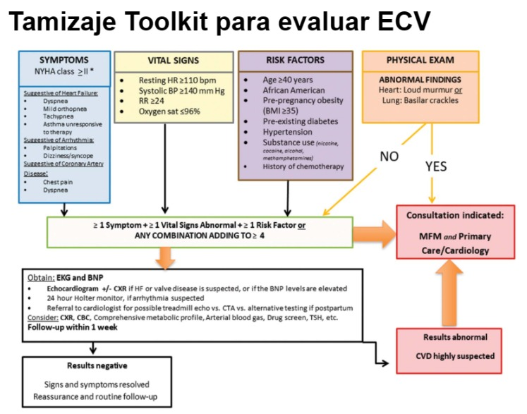
Semáforo clínico ACOG
VerdeAmarilloRojo
| Parámetro | Verde Rutina | Amarillo Precaución | Rojo Alto riesgo |
|---|---|---|---|
| Disnea | Solo con ejercicio intenso, sin limitar actividades cotidianas. | Con ejercicio moderado, tos persistente o asma de nueva aparición. | En reposo, ortopnea o disnea paroxística nocturna. |
| Frecuencia cardiaca | <90 lpm | 90–119 lpm | ≥120 lpm |
| Presión arterial sistólica | 120–139 mmHg | 140–159 mmHg | ≥160 mmHg o hipotensión sintomática |
| Frecuencia respiratoria | 12–15 rpm | 16–25 rpm | ≥25 rpm |
| SatO₂ | ≥97% | 95–96% | <95% |
| Síncope | Solo con bipedestación prolongada. | Vasovagal típico. | De esfuerzo o no provocado. |
Clasificación funcional NYHA
| Clase | Definición funcional | Interpretación clínica |
|---|---|---|
| NYHA I | Sin limitación de la actividad física. | La actividad ordinaria no causa fatiga, palpitaciones, disnea ni angina. |
| NYHA II | Limitación leve de la actividad física; cómoda en reposo. | La actividad ordinaria provoca síntomas. |
| NYHA III | Limitación marcada; cómoda en reposo. | Una actividad menor que la ordinaria provoca síntomas. |
| NYHA IV | Incapacidad para realizar actividad física sin síntomas. | Puede haber insuficiencia cardiaca o angina incluso en reposo. |
Clasificación modificada de la OMS
| Clase | Riesgo y ejemplos | Seguimiento sugerido |
|---|---|---|
| mOMS I | Sin aumento relevante de mortalidad: estenosis pulmonar leve, prolapso mitral sin insuficiencia significativa, defectos simples reparados, extrasístoles aisladas. | Cardiología 1–2 veces; atención local. |
| mOMS II | Pequeño aumento: CIA/CIV no reparada sin complicaciones, Fallot reparada, mayoría de arritmias. | Valoración cada trimestre. |
| mOMS II–III | Riesgo intermedio: disfunción ventricular leve, miocardiopatía hipertrófica, valvulopatía moderada, Marfan sin dilatación aórtica, coartación reparada. | Cada 1–2 meses; hospital de referencia. |
| mOMS III | Riesgo alto: válvula mecánica, Fontan, cardiopatía cianótica no reparada, disfunción ventricular moderada, estenosis mitral moderada, estenosis aórtica grave asintomática, antecedente de miocardiopatía periparto con recuperación. | Mensual o bimestral; alta especialidad. |
| mOMS IV | Embarazo contraindicado: hipertensión arterial pulmonar, FEVI <30% o NYHA III–IV, miocardiopatía periparto con disfunción residual, obstrucción izquierda grave, dilatación aórtica grave o coartación grave. | Consejería sobre interrupción; si continúa, vigilancia mensual en centro terciario. |
// 3. Insuficiencia cardiaca y miocardiopatías
Disnea progresiva, ortopnea, tos nocturna, taquipnea, estertores persistentes, edema rápidamente progresivo o intolerancia súbita al esfuerzo. El ecocardiograma puede mostrar FEVI <45%; buscar causa valvular, hipertensiva, isquémica o miocárdica.
Preeclampsia, hemorragia, anemia, infección/sepsis, arritmia rápida, exceso de líquidos y suspensión de tratamiento. La preeclampsia sobre cardiopatía preexistente eleva de forma marcada el riesgo de insuficiencia cardiaca.
Algoritmo de descompensación aguda
| Tratamiento | Uso durante el embarazo |
|---|---|
| Furosemida | Para edema pulmonar o sobrecarga; ajustar a respuesta y evitar hipovolemia/hipoperfusión placentaria. |
| β-bloqueadores | Metoprolol o carvedilol según indicación; útiles en disfunción sistólica y control de frecuencia. Vigilar crecimiento fetal y bradicardia neonatal. |
| Hidralazina + nitratos | Alternativa para reducción de poscarga durante embarazo. |
| Digoxina | Puede utilizarse para apoyo inotrópico o control de frecuencia en casos seleccionados. |
| IECA, ARA-II, ARNI y antagonistas de aldosterona | Contraindicados durante el embarazo. IECA compatibles con lactancia seleccionada pueden reiniciarse posparto. |
| Anticoagulación | Considerar HBPM cuando la FEVI es ≤30–35%, hay trombo intracavitario, fibrilación auricular u otra indicación. |
Miocardiopatía periparto
Insuficiencia cardiaca que aparece típicamente en el último mes de embarazo o durante los cinco meses posteriores, sin otra causa identificable ni cardiopatía previa y con disfunción sistólica ventricular izquierda. Es un diagnóstico de exclusión.
// 4. Valvulopatías adquiridas
| Lesión | Efecto del embarazo | Manejo |
|---|---|---|
| Estenosis mitral | La taquicardia acorta la diástole, aumenta la presión auricular izquierda y puede causar edema pulmonar, fibrilación auricular e hipertensión pulmonar. | Evitar sobrecarga; diurético si congestión y β-bloqueador para controlar frecuencia. Anticoagular si FA/trombo. Valvuloplastia percutánea si síntomas graves refractarios. |
| Insuficiencia mitral/aórtica | Suelen tolerarse mejor por disminución de la poscarga; el riesgo aumenta con disfunción ventricular. | Diurético si congestión; hidralazina/nitratos si reducción de poscarga necesaria. Cirugía solo por indicación materna urgente. |
| Estenosis aórtica | Gasto fijo; la pérdida de precarga por hemorragia, anestesia o vasodilatación puede causar colapso. | Mantener precarga y ritmo sinusal, evitar taquicardia e hipotensión. La estenosis grave sintomática es mOMS IV; considerar intervención antes del embarazo. |
| Válvula mecánica | Alto riesgo de trombosis, hemorragia y pérdida fetal. | Anticoagulación individualizada por equipo experto; no existe estrategia sin riesgo. Planificar transición periparto a heparina y evitar parto bajo efecto de warfarina. |
// 5. Embarazo y síndrome coronario agudo
El síndrome coronario agudo (SCA) comprende el infarto con elevación del segmento ST (IAMCEST), el infarto sin elevación del ST (IAMSEST) y la angina inestable. Es infrecuente durante el embarazo, pero representa una urgencia de alta mortalidad. Puede aparecer durante cualquier trimestre, aunque el riesgo aumenta al final de la gestación y alcanza un periodo especialmente vulnerable durante el puerperio temprano.
Las causas no son iguales a las de la población general: además de ateroesclerosis deben considerarse disección coronaria espontánea (SCAD), trombosis o embolia coronaria y vasoespasmo. La SCAD es particularmente importante en mujeres jóvenes sin factores de riesgo tradicionales y suele concentrarse en las primeras semanas después del parto.
Edad materna avanzada, hipertensión crónica o gestacional, preeclampsia, diabetes, dislipidemia, obesidad, tabaquismo, trombofilia, enfermedad autoinmune, cardiopatía conocida, consumo de cocaína o anfetaminas, hemorragia o infección grave y técnicas de reproducción asistida.
SCAD, ruptura o erosión de placa ateroesclerótica, trombosis coronaria por hipercoagulabilidad, embolia paradójica o cardiaca y vasoespasmo. La etiología determina si conviene tratamiento conservador, intervención coronaria o anticoagulación.
Presentación clínica
| Manifestación | Características y significado |
|---|---|
| Dolor torácico | Opresivo o constrictivo, retroesternal, de inicio súbito o progresivo; puede irradiar a brazo, hombro, mandíbula, espalda o epigastrio. Puede aparecer en reposo y durar más de 20 minutos. |
| Disnea | Puede acompañar al dolor o ser la manifestación predominante. La disnea súbita o desproporcionada nunca debe atribuirse automáticamente al embarazo. |
| Síntomas autonómicos | Diaforesis, palidez, náusea, vómito, ansiedad intensa, mareo o sensación de muerte inminente. |
| Presentación atípica | Dolor epigástrico, fatiga extrema, síncope, palpitaciones, hipotensión o edema pulmonar. Es más probable que retrase el diagnóstico. |
| Datos de gravedad | Hipoxemia, hipotensión, arritmia ventricular, alteración del estado mental, estertores, nuevo soplo de insuficiencia mitral, signos de choque o paro cardiaco. |
Diagnóstico
| Estudio | Interpretación durante el embarazo |
|---|---|
| Electrocardiograma de 12 derivaciones | Realizar idealmente en los primeros 10 minutos y repetir si persisten síntomas. La elevación localizada del ST, los cambios dinámicos ST-T y nuevas ondas Q no son hallazgos fisiológicos del embarazo. |
| Troponina cardiaca | La troponina no se eleva por el embarazo normal. Un ascenso o descenso por encima del percentil 99, junto con evidencia clínica de isquemia, apoya infarto. Medir de forma seriada cuando el valor inicial no sea diagnóstico. |
| Ecocardiograma | Evalúa alteraciones segmentarias de movilidad, FEVI, complicaciones mecánicas, insuficiencia mitral, derrame y diagnósticos alternativos. No debe retrasar la reperfusión en IAMCEST. |
| Angiografía coronaria | Es el estudio definitivo cuando existe IAMCEST, inestabilidad, isquemia persistente o IAMSEST de alto riesgo. La exposición fetal suele ser baja con técnica adecuada, protección, reducción de fluoroscopia y acceso radial cuando es factible. |
| Angio-TC / estudios alternativos | Se reservan para pacientes estables y preguntas diagnósticas específicas. Ante sospecha de disección aórtica o embolia pulmonar debe elegirse la imagen que responda con mayor rapidez y precisión. |
Diagnóstico diferencial urgente
| Diagnóstico | Claves de diferenciación |
|---|---|
| Embolia pulmonar | Disnea súbita, dolor pleurítico, hipoxemia, taquicardia, datos de trombosis venosa; puede elevar troponina por sobrecarga derecha. |
| Disección aórtica | Dolor abrupto, máximo al inicio, irradiado a espalda, asimetría de pulsos o presión, déficit neurológico o insuficiencia aórtica. |
| Preeclampsia grave | Hipertensión, cefalea, síntomas visuales, dolor epigástrico o en hipocondrio derecho, proteinuria o daño orgánico. |
| Miocardiopatía periparto | Insuficiencia cardiaca al final del embarazo o puerperio con disfunción sistólica, generalmente sin patrón coronario focal. |
| Reflujo / dolor musculoesquelético | Diagnósticos de exclusión cuando existen características atípicas, pero no deben asumirse antes de descartar causas cardiovasculares graves. |
Tratamiento inicial del SCA
| Medida | Conducta práctica |
|---|---|
| Monitorización y soporte | ABCDE, monitor cardiaco, desfibrilador disponible, dos accesos IV, laboratorios y valoración fetal según viabilidad. Colocar inclinación lateral izquierda después de las 20 semanas si no interfiere con la reanimación. |
| Oxígeno | No se administra de rutina. Indicar ante hipoxemia, dificultad respiratoria o choque, buscando una saturación materna adecuada. |
| Aspirina | Administrar dosis de carga en SCA salvo contraindicación y continuar dosis baja de mantenimiento. Es el antiagregante con mayor experiencia durante el embarazo. |
| Inhibidor P2Y12 | Clopidogrel es el agente con mayor experiencia cuando se requiere doble antiagregación, especialmente tras colocación de stent. Individualizar duración por riesgo hemorrágico y plan del parto. |
| Anticoagulación | Heparina no fraccionada es útil cuando se prevé intervención inmediata por su vida media corta y reversibilidad; HBPM puede emplearse en escenarios no invasivos seleccionados. Ajustar al momento del parto y anestesia neuraxial. |
| Nitroglicerina | Puede utilizarse para dolor isquémico, hipertensión o edema pulmonar si la presión arterial lo permite. Evitar en hipotensión, infarto de ventrículo derecho o uso reciente de inhibidores PDE-5. |
| β-bloqueador | Metoprolol suele preferirse si no existe choque, bradicardia, bloqueo avanzado o insuficiencia cardiaca aguda descompensada. Vigilar crecimiento fetal y bradicardia neonatal cuando el uso es prolongado. |
| Analgesia | Morfina solo para dolor refractario, edema pulmonar o ansiedad grave, utilizando la menor dosis efectiva y vigilancia materno-fetal. |
| Fármacos que se evitan | IECA, ARA-II, ARNI y antagonistas del receptor mineralocorticoide durante la gestación. Las estatinas no se inician de rutina en el SCA gestacional; se revaloran después del parto salvo indicación excepcional individualizada. |
Estrategia de reperfusión y revascularización
La intervención coronaria percutánea primaria es la estrategia preferida y debe realizarse con los mismos objetivos temporales que fuera del embarazo. La fibrinólisis no es la primera elección por el riesgo de hemorragia materna, placentaria y fetal, y puede ser peligrosa si la causa es SCAD; solo se considera cuando la PCI no está disponible oportunamente y el beneficio materno supera claramente el riesgo.
La estrategia invasiva depende del riesgo. Isquemia recurrente, inestabilidad, choque, arritmias malignas, insuficiencia cardiaca o cambios dinámicos importantes requieren angiografía temprana. Una paciente estable y de menor riesgo puede recibir tratamiento médico con vigilancia estrecha.
SCAD asociada al embarazo
La disección coronaria espontánea se produce por separación de las capas de la pared arterial con formación de hematoma intramural y compresión de la luz. Puede afectar vasos largos y distales, ser multivaso y presentarse con IAMCEST, arritmia ventricular, choque o muerte súbita.
| Situación | Conducta |
|---|---|
| Paciente estable, flujo conservado y sin isquemia persistente | Preferir manejo conservador con vigilancia hospitalaria, porque muchas disecciones cicatrizan espontáneamente y la instrumentación puede extenderlas. |
| Isquemia persistente, inestabilidad, tronco coronario, arritmia grave o choque | Revascularización mediante PCI o cirugía según anatomía y experiencia. La PCI es técnicamente más difícil y tiene mayor riesgo de propagación de la disección. |
| Antitrombóticos | Aspirina suele mantenerse. La doble antiagregación se reserva sobre todo para pacientes con stent. Una vez confirmada SCAD sin otra indicación, debe reconsiderarse la anticoagulación por la posibilidad teórica de ampliar el hematoma intramural. |
| Seguimiento | Control de presión arterial, β-bloqueador si se tolera, rehabilitación cardiaca adaptada y evaluación de arteriopatías asociadas después de la fase aguda. |
Parto, puerperio y seguimiento
| Aspecto | Recomendación |
|---|---|
| Momento del nacimiento | Evitar un parto inmediato solo por el diagnóstico de SCA si la madre se estabiliza. Cuando sea posible, diferir varios días tras el infarto permite estabilización, pero la conducta depende de edad gestacional, isquemia, función ventricular y estado fetal. |
| Vía de nacimiento | El parto vaginal con analgesia neuraxial cuidadosamente titulada suele ser preferible en pacientes estables. Cesárea por indicación obstétrica o inestabilidad cardiovascular que impida tolerar el trabajo de parto. |
| Segunda etapa | Evitar Valsalva prolongada; considerar descenso pasivo y asistencia instrumental para disminuir demanda miocárdica. |
| Puerperio | Periodo de alto riesgo por autotransfusión uterina, cambios de volumen y mayor frecuencia de SCAD. Requiere telemetría y vigilancia estrecha según gravedad, especialmente durante las primeras 24–72 horas. |
| Embarazo futuro | Realizar asesoramiento preconcepcional individualizado después de recuperación, evaluación de FEVI, anatomía coronaria, capacidad funcional y causa del SCA. Tras SCAD suele desaconsejarse un nuevo embarazo o considerarse solo después de discusión multidisciplinaria detallada. |
// 6. Arritmias
Algoritmo de taquicardia supraventricular
| Arritmia | Manejo esencial |
|---|---|
| TSV | Maniobras vagales; adenosina IV es segura y eficaz. Si falla: metoprolol/propranolol IV o verapamilo. Cardioversión si inestable. |
| Fibrilación auricular/flutter | Buscar cardiopatía estructural, hipertiroidismo, TEP y alteraciones electrolíticas. Control de frecuencia con β-bloqueador o digoxina; valorar cardioversión y anticoagulación. |
| Taquicardia ventricular | Cardioversión inmediata si inestable. Procainamida o lidocaína en escenarios seleccionados; amiodarona solo si amenaza vital y otras opciones fallan. |
| QT largo | Continuar β-bloqueador durante embarazo y puerperio; corregir electrolitos y evitar fármacos que prolongan QT. |
// 7. Trabajo de parto, nacimiento y puerperio
| Componente | Conducta |
|---|---|
| Vía de nacimiento | Parto vaginal para la mayoría. Cesárea por indicación obstétrica o lesiones seleccionadas: aortopatía importante, insuficiencia cardiaca grave inestable, infarto reciente o estenosis aórtica grave sintomática. |
| Posición | Semirreclinada con inclinación lateral para evitar compresión aortocava. |
| Analgesia | Epidural continua y titulada lentamente. Evitar hipotensión brusca, especialmente en estenosis aórtica, hipertensión pulmonar o cortocircuitos. |
| Segunda etapa | Permitir descenso pasivo; limitar pujos/Valsalva. Fórceps bajos o vacío si se necesita acortar el expulsivo. |
| Líquidos | Balance estricto; evitar bolos innecesarios y tratar hemorragia de inmediato. |
| Puerperio | Vigilancia estrecha al menos 24–72 h según riesgo. Buscar edema pulmonar, arritmia, anemia, infección, tromboembolia y preeclampsia. |
// Neuropatías en el embarazo
Los síntomas neurológicos de nueva aparición durante el embarazo deben diferenciarse de complicaciones obstétricas como preeclampsia/eclampsia, enfermedad cerebrovascular, alteraciones metabólicas, infecciones y efectos farmacológicos. La tomografía computarizada y la resonancia magnética pueden utilizarse cuando están indicadas; no debe retrasarse una evaluación necesaria por el embarazo.
// 1. Epilepsia y embarazo
La epilepsia es la predisposición persistente a presentar convulsiones recurrentes no provocadas. Una convulsión es una manifestación transitoria causada por actividad neuronal excesiva o hipersincrónica. En una embarazada con una primera crisis deben buscarse causas secundarias: eclampsia, traumatismo, abstinencia de alcohol o drogas, infección cerebral, tumor, alteraciones metabólicas, malformación arteriovenosa y enfermedad cerebrovascular. La epilepsia idiopática es un diagnóstico de exclusión.
Clasificación clínica de las crisis
| Tipo | Características |
|---|---|
| Inicio focal sin alteración de conciencia | Se origina en una región cerebral circunscrita; puede producir síntomas motores, sensitivos, autonómicos o psicológicos. La función cognitiva se conserva y la recuperación suele ser rápida. |
| Inicio focal con alteración de conciencia | Puede estar precedida por aura. Aparecen mirada fija, detención conductual, automatismos de prensión o chasquido de labios y recuperación más lenta. |
| Inicio generalizado tónico-clónico | Pérdida súbita de conciencia, fase tónica con rigidez, seguida de contracciones clónicas generalizadas y periodo posictal con confusión o desorientación. |
| Ausencia | Pérdida breve de conciencia sin actividad motora importante, con recuperación inmediata de la orientación. |
| Inicio desconocido | No hay testigos o información suficiente para clasificarla como focal o generalizada. |
Asesoramiento preconcepcional
Lograr control de crisis con monoterapia, el fármaco de menor riesgo teratógeno y la dosis efectiva mínima. Evitar cambios bruscos o suspensión por cuenta propia.
Iniciar al menos un mes antes de la concepción. El capítulo recomienda 0.4 mg/día antes del embarazo y aumentar a 4 mg/día cuando la paciente que utiliza antiepilépticos queda embarazada.
Efecto del embarazo sobre el control de las crisis
La frecuencia aumenta en aproximadamente 20–30% de las embarazadas. Haber permanecido sin crisis durante al menos 9 meses antes de la concepción predice una alta probabilidad de continuar sin crisis durante la gestación.
| Causa de descontrol | Mecanismo |
|---|---|
| Náusea, vómito, hipomotilidad o antiácidos | Disminución o variabilidad en la absorción del antiepiléptico. |
| Hipervolemia y menor fijación a proteínas | Cambios en la concentración total y libre del fármaco. |
| Inducción enzimática hepática y metabolismo placentario | Aumento de depuración. |
| Incremento de filtración glomerular | Mayor eliminación renal, especialmente relevante con lamotrigina y levetiracetam. |
| Suspensión voluntaria | Miedo a teratogenicidad o mala adherencia. |
| Privación del sueño, hiperventilación, dolor y estrés | Disminución del umbral convulsivo, particularmente durante trabajo de parto y puerperio. |
Riesgos maternos y obstétricos
Las mujeres con epilepsia presentan un incremento discreto en aborto, hemorragia, trastornos hipertensivos, desprendimiento prematuro de placenta, parto pretérmino, restricción del crecimiento fetal y cesárea. También existe mayor riesgo de depresión puerperal. El capítulo señala una mortalidad materna aumentada, relacionada en parte con crisis, estado epiléptico, traumatismo y muerte súbita inesperada en epilepsia.
Antiepilépticos y riesgo embriofetal
| Fármaco | Riesgos descritos | Interpretación práctica |
|---|---|---|
| Valproato | Defectos del tubo neural, fisuras, cardiopatías, retraso del desarrollo y menor desempeño cognitivo; riesgo aproximado 7–10% con monoterapia y mayor con politerapia. | Evitar cuando sea posible Es el teratógeno más potente y el riesgo es dependiente de la dosis. |
| Fenitoína | Síndrome fetal por hidantoína: alteraciones craneofaciales, hipoplasia ungueal, crecimiento deficiente, cardiopatías y fisuras. | Riesgo mayor que con lamotrigina o levetiracetam. |
| Carbamazepina / oxcarbazepina | Espina bífida y patrón de embriopatía semejante al de hidantoína. | Puede utilizarse cuando es el fármaco que mejor controla la epilepsia, con asesoramiento individual. |
| Fenobarbital | Fisuras, anomalías cardiacas y urinarias. | Mayor riesgo de malformaciones que los agentes de menor riesgo. |
| Topiramato | Fisuras orofaciales. | Evitar como primera elección si existe alternativa eficaz. |
| Lamotrigina | Riesgo global bajo; registros han sugerido fisuras, pero el riesgo absoluto es reducido. | Menor riesgo Una de las opciones preferidas. |
| Levetiracetam | Riesgo de malformaciones bajo en registros disponibles. | Menor riesgo Opción frecuente en embarazo. |
Seguimiento y tratamiento durante el embarazo
- Tratar náusea y vómito para asegurar absorción.
- Evitar desencadenantes, privación del sueño y omisiones de dosis.
- La medición seriada de niveles puede ser útil si se conoce el nivel basal individual, hay crisis, toxicidad, cambios clínicos o sospecha de incumplimiento; la concentración total puede ser engañosa por cambios en unión a proteínas.
- Realizar ecografía anatómica dirigida a mitad del embarazo. En epilepsia no complicada no se requieren pruebas fetales adicionales solo por el diagnóstico.
Crisis aguda y estado epiléptico
El estado epiléptico es una emergencia. Debe asegurarse vía aérea, prevenir aspiración y traumatismo, corregir hipoglucemia o alteraciones metabólicas y valorar eclampsia. Las crisis persistentes se tratan con benzodiazepinas y un antiepiléptico intravenoso. Aunque el valproato es eficaz, durante el embarazo se prefiere evitarlo cuando existen alternativas apropiadas.
Trabajo de parto, puerperio y lactancia
- Continuar el antiepiléptico durante trabajo de parto; evitar ayuno prolongado y omisión de dosis.
- La epilepsia por sí sola no indica cesárea. La vía de nacimiento depende de criterios obstétricos.
- Minimizar dolor, hiperventilación, estrés y privación del sueño.
- Después del parto puede disminuir rápidamente la depuración farmacológica; reevaluar dosis para evitar toxicidad.
- La lactancia suele ser posible. Vigilar al recién nacido por sedación, mala succión o escasa ganancia ponderal, especialmente con fármacos sedantes o politerapia.
- Los antiepilépticos inductores enzimáticos pueden reducir la eficacia anticonceptiva; preferir métodos altamente eficaces y revisar interacciones.
// 2. Síndrome del túnel del carpo
Es una neuropatía por compresión del nervio mediano dentro del túnel carpiano y constituye la mononeuropatía más frecuente del embarazo. La frecuencia publicada varía entre 7% y 43% debido a la amplitud de los criterios diagnósticos y síntomas. Es bilateral en alrededor de 80% de las pacientes y cerca de 10% presenta datos de desnervación grave.
Fisiopatología y clínica
La retención de líquido y el edema gestacional aumentan la presión dentro del túnel carpiano. Se presenta con dolor, sensación urente, parestesias o adormecimiento de la muñeca y distribución del nervio mediano, con irradiación al antebrazo y ocasionalmente al hombro. Puede empeorar por la noche y ocasionar debilidad de pinza, torpeza o caída de objetos.
| Elemento | Contenido |
|---|---|
| Distribución típica | Pulgar, índice, medio y mitad radial del anular; la eminencia tenar puede estar respetada sensorialmente. |
| Exploración | Tinel y Phalen pueden reproducir síntomas; valorar fuerza tenar y atrofia. |
| Diagnóstico diferencial | Radiculopatía C6–C7, neuropatía proximal del mediano y tenosinovitis de De Quervain. |
| Confirmación | Los estudios de conducción nerviosa ayudan cuando el diagnóstico es dudoso, hay debilidad, déficit persistente o se plantea cirugía. |
Tratamiento escalonado
- Primera línea: férula nocturna que mantenga la muñeca en posición neutra o ligera flexión, modificación de actividades y medidas para edema.
- Persistencia moderada o dolor incapacitante: infiltración local con corticosteroide.
- Cirugía: descompresión del túnel carpiano si hay déficit motor progresivo, atrofia tenar, desnervación grave o síntomas refractarios.
// 3. Parálisis facial periférica (parálisis de Bell)
Parálisis facial aguda, periférica y habitualmente idiopática por inflamación del nervio facial. Puede asociarse con reactivación de herpes simple o herpes zóster; también deben considerarse enfermedad de Lyme, borreliosis, otitis, traumatismo y otras causas.
Presentación clínica
El inicio suele ser repentino y doloroso, con debilidad máxima en las primeras 48 horas. Afecta toda la hemicara, incluida la frente, produce dificultad para cerrar el ojo, borramiento del surco nasolabial y desviación bucal. Puede acompañarse de hiperacusia y pérdida del gusto.
Relación con el embarazo
- Es más frecuente durante el embarazo y suele presentarse en la gestación avanzada o puerperio.
- Se ha asociado con una frecuencia aproximadamente cinco veces mayor de hipertensión gestacional o preeclampsia; por ello deben medirse presión arterial y proteinuria y buscar síntomas de preeclampsia.
- Fuera de esta asociación, el capítulo no describe un incremento importante de otros resultados obstétricos adversos.
Tratamiento
Lágrimas artificiales, lubricante nocturno, cierre o parche del ojo y vigilancia de lesión corneal. Es la prioridad inmediata cuando no existe cierre palpebral completo.
Prednisona 1 mg/kg/día VO durante 5 días, según el esquema citado por el capítulo. El beneficio es mayor cuando se inicia de forma temprana.
El masaje y los ejercicios faciales pueden utilizarse como apoyo. La adición de aciclovir o valaciclovir puede considerarse en parálisis grave o sospecha viral, aunque el capítulo señala que su beneficio adicional no está claramente demostrado.
// 4. Lumbalgia durante el embarazo
La lumbalgia gestacional suele ser mecánica y se relaciona con aumento de lordosis, desplazamiento anterior del centro de gravedad, distensión de músculos abdominales, mayor carga axial y laxitud ligamentaria. Debe distinguirse del dolor de cintura pélvica, radiculopatía, infección urinaria, pielonefritis, urolitiasis, amenaza de parto pretérmino y causas neurológicas graves.
Evaluación clínica
| Patrón | Características |
|---|---|
| Lumbalgia mecánica | Dolor lumbar localizado, relacionado con postura o actividad, sin déficit neurológico. |
| Dolor de cintura pélvica | Dolor sacroilíaco, glúteo, sínfisis púbica o inguinal; empeora al caminar, subir escaleras o girarse en cama. |
| Radiculopatía / ciática | Dolor irradiado por glúteo y cara posterior o lateral de la pierna, con parestesias, alteración de reflejos o debilidad según la raíz. |
| Causa obstétrica o visceral | Dolor con contracciones, sangrado, fiebre, síntomas urinarios, dolor en flanco, sensibilidad uterina o síntomas sistémicos. |
Signos de alarma
Evaluación urgente
- Debilidad motora progresiva, anestesia en silla de montar o alteración de esfínteres: sospechar síndrome de cauda equina.
- Fiebre, inmunosupresión, bacteriemia o dolor nocturno intenso: descartar infección vertebral o epidural.
- Traumatismo, antecedente de cáncer, pérdida de peso o dolor persistente no mecánico.
- Dolor acompañado de contracciones, sangrado vaginal, pérdida de líquido o presión pélvica: descartar parto pretérmino.
- Dolor en flanco, disuria o fiebre: valorar pielonefritis o litiasis.
Diagnóstico
La mayoría de los casos se diagnostica clínicamente y no necesita imagen. La resonancia magnética sin gadolinio es el estudio de elección cuando existe déficit neurológico, sospecha de infección, tumor, cauda equina o síntomas persistentes que cambiarían el manejo. Una radiografía o tomografía no deben omitirse si son necesarias para una urgencia.
Tratamiento
- Evitar reposo prolongado; continuar actividad dentro de lo tolerable.
- Educación postural, ejercicios de estabilización lumbopélvica, fortalecimiento abdominal adaptado, estiramientos, fisioterapia, calor local y cinturón de soporte cuando sea útil.
- Paracetamol es el analgésico inicial habitual. Los AINE deben evitarse especialmente desde las 20 semanas y están contraindicados en el tercer trimestre salvo indicación médica específica.
- Dolor radicular intenso puede requerir valoración por neurología, ortopedia, rehabilitación o clínica del dolor. La infiltración epidural se reserva para casos seleccionados.
- La cirugía no se contraindica cuando existe cauda equina, déficit neurológico progresivo, infección, inestabilidad o dolor intratable con lesión compresiva demostrada.
// Puntos de alto rendimiento
- Primera convulsión después de 20 semanas: considerar eclampsia hasta demostrar lo contrario.
- En epilepsia, la prioridad es mantener control de crisis con monoterapia y la menor dosis eficaz; no suspender fármacos abruptamente.
- Valproato tiene el mayor riesgo teratógeno; lamotrigina y levetiracetam muestran los riesgos más bajos en los registros citados.
- El túnel del carpo es la mononeuropatía más frecuente del embarazo; iniciar con férula nocturna.
- Parálisis facial periférica: proteger el ojo e iniciar corticosteroide de manera temprana; buscar preeclampsia.
- Lumbalgia con alteración de esfínteres, anestesia en silla de montar o déficit progresivo es una urgencia.
// Cirugía en el embarazo
Una intervención quirúrgica médicamente necesaria no debe posponerse por el embarazo ni por el trimestre. El riesgo materno-fetal suele depender más de la enfermedad no tratada —sepsis, perforación, peritonitis, obstrucción biliar o pancreatitis— que del procedimiento correctamente indicado. El manejo debe coordinar cirugía, obstetricia, anestesiología y, cuando corresponda, gastroenterología intervencionista.
- Estabilizar primero a la madre: vía aérea, oxigenación, perfusión, líquidos, analgesia y antibióticos cuando estén indicados.
- Confirmar edad gestacional, viabilidad y estado fetal antes y después del procedimiento; vigilancia intraoperatoria cuando sea técnicamente posible y pueda modificar la conducta.
- En la segunda mitad del embarazo: desplazamiento uterino hacia la izquierda o inclinación lateral para reducir compresión aortocava.
- Profilaxis tromboembólica individualizada y movilización temprana.
- Es aceptable durante cualquier trimestre cuando está indicada y existe experiencia.
- Adaptar la posición de los trocares a la altura uterina; preferir entrada abierta o inserción bajo visión directa.
- Usar la presión de neumoperitoneo mínima que permita exposición adecuada; habitualmente 10–12 mmHg.
- No realizar cesárea concomitante salvo indicación obstétrica independiente.
Los cambios en la presión arterial materna, la oxigenación o el flujo útero-placentario pueden impactar de manera negativa al feto. Medidas correctivas: líquidos IV, aumento de la concentración de oxígeno, medicamentos para aumentar la TA y cambios en la posición materna.
- La decisión de monitoreo de la FCF debe individualizarse.
- Monitorear la FCF >23–24 sdg durante la cirugía si es técnicamente posible; no ha mostrado mejorar el desenlace fetal en anestesia general.
- Como mínimo, registrar la FCF antes y después de la cirugía, independientemente de la edad gestacional.
- Todos los medicamentos de anestesia general cruzan la barrera útero-placentaria: ausencia o mínima variabilidad en el RCTG y disminución de la línea de base de 10–25 lpm son esperables.
| Fármaco / grupo | Efecto en el trazo |
|---|---|
| Opioides, sulfato de magnesio | Disminuyen la variabilidad |
| Butorfanol | Patrón sinusoidal |
| B-bloqueadores, atropina | Aumento de la FCF |
// 1. Apendicitis aguda en el embarazo
Es el problema de cirugía general más frecuente durante el embarazo. Se confirma aproximadamente en 1 de cada 800–1500 embarazos y aparece con mayor frecuencia en el segundo trimestre. El diagnóstico suele retrasarse por la superposición con síntomas gestacionales, la leucocitosis fisiológica y los cambios anatómicos; por ello, la perforación es relativamente más frecuente, sobre todo en el tercer trimestre.
Presentación clínica
| Elemento | Hallazgo e interpretación |
|---|---|
| Dolor | Clásicamente inicia periumbilical y migra a fosa iliaca derecha. La mayoría conserva dolor cerca del punto de McBurney; en el tercer trimestre puede localizarse algunos centímetros más arriba, incluso en abdomen medio o cuadrante superior derecho. |
| Secuencia típica | El dolor suele aparecer primero; anorexia, náusea y vómito siguen después. Esto ayuda a diferenciarla de náusea y vómito propios del embarazo, que no suelen acompañarse de dolor focal progresivo. |
| Exploración | Dolor a la palpación en cuadrante inferior derecho. El rebote y la defensa pueden ser menos evidentes porque el útero separa el apéndice del peritoneo parietal. |
| Apéndice pélvico o retrocecal | Puede causar disuria, polaquiuria, tenesmo, diarrea, dolor rectal o vaginal y menor irritación peritoneal anterior. |
| Fiebre y leucocitosis | Suelen ser tardías y no son indispensables. La leucocitosis aislada tiene baja especificidad porque durante la gestación y el trabajo de parto puede ser fisiológica. |
Evaluación diagnóstica
| Estudio | Utilidad | Punto clave |
|---|---|---|
| Ultrasonido | Primera prueba; busca estructura tubular ciega, no compresible, con diámetro >6 mm y cambios inflamatorios. | La no visualización del apéndice no excluye apendicitis. Su rendimiento disminuye con edad gestacional avanzada y obesidad. |
| RM sin contraste | Prueba preferida tras ultrasonido no concluyente; detecta dilatación, apendicolito, edema, líquido y estriación grasa, además de diagnósticos alternativos. | Alta sensibilidad y especificidad; evita radiación ionizante. No usar gadolinio de rutina. |
| TC | Indicada cuando ultrasonido es no concluyente y la RM no está disponible con rapidez. | Los protocolos de dosis reducida pueden mantener exposición fetal muy por debajo de umbrales de daño. No retrasar cirugía por temor a realizar una TC necesaria. |
| Laboratorio | BH, química, EGO, PCR y pruebas dirigidas. | Leucocitosis y PCR son inespecíficas. Bilirrubina discretamente elevada puede sugerir perforación, pero no confirma el diagnóstico. |
Diagnóstico diferencial
Embarazo ectópico, síndrome del ligamento redondo, torsión o quiste ovárico, degeneración o torsión de mioma, desprendimiento placentario, rotura uterina, trabajo de parto y corioamnionitis.
Pielonefritis, nefrolitiasis, gastroenteritis, enfermedad inflamatoria intestinal, colecistitis y otras causas de abdomen agudo. En el puerperio considerar tromboflebitis de vena ovárica.
Tratamiento
| Situación | Conducta |
|---|---|
| No perforada | Apendicectomía curativa. Cubrir bacterias gramnegativas, grampositivas y anaerobias; por ejemplo, cefalosporina de segunda generación más metronidazol o esquema institucional equivalente. |
| Tratamiento solo con antibióticos | No se recomienda como estrategia definitiva durante el embarazo por fallas tempranas y tardías y datos limitados de seguridad. |
| Perforación libre | Urgencia quirúrgica: laparotomía o abordaje apropiado, apendicectomía, irrigación, drenaje, antibióticos y manejo de sepsis. |
| Perforación contenida / absceso | Individualizar con cirugía, radiología intervencionista y obstetricia. Puede requerir antibióticos, drenaje percutáneo y cirugía diferida; vigilancia estrecha por riesgo de deterioro. |
Abordaje quirúrgico
| Laparoscópico | Abierto |
|---|---|
| Ofrece mejor visualización, menor dolor y recuperación más rápida. Adaptar puertos al fondo uterino, inclinar a la izquierda, entrada abierta/directa y neumoperitoneo usual de 10–12 mmHg. | Es apropiado según experiencia, anatomía, perforación o inestabilidad. Si el diagnóstico es claro, incisión transversal sobre el punto de máximo dolor; si es incierto y no hay laparoscopia, puede utilizarse incisión media inferior. |
Los estudios observacionales sobre pérdida fetal con laparoscopia son heterogéneos y susceptibles a confusión por gravedad y edad gestacional. La elección debe basarse en el método que el cirujano realice con mayor seguridad, sin retrasar el tratamiento.
// 2. Enfermedad litiásica biliar en el embarazo
Los cálculos biliares aparecen con mayor frecuencia durante el embarazo y constituyen una de las principales indicaciones de cirugía no obstétrica. El estrógeno aumenta la secreción de colesterol y reduce la capacidad de la bilis para mantenerlo soluble; la progesterona disminuye la secreción de ácidos biliares y enlentece el vaciamiento vesicular. El resultado es bilis sobresaturada y estasis, que favorecen lodo y cálculos.
Antecedente de litiasis, obesidad y multiparidad. La grasa dietética y la actividad física no han demostrado modificar de manera clara la formación de cálculos durante la gestación.
Los cálculos se observan en cerca de 6–8% de las embarazadas, pero menos de 1% desarrolla enfermedad clínica. El lodo suele desaparecer posparto con mayor frecuencia que los cálculos; los cálculos persistentes mantienen riesgo de recurrencia.
Espectro clínico
| Entidad | Presentación | Clave |
|---|---|---|
| Litiasis incidental | Cálculos en ultrasonido sin síntomas. | No requiere tratamiento durante el embarazo. |
| Cólico biliar | Dolor epigástrico o en cuadrante superior derecho, a menudo 1–3 h después de comida grasa; asciende a una meseta constante y cede en varias horas. | Sin inflamación sistémica ni alteraciones persistentes de laboratorio. |
| Colecistitis aguda | Dolor intenso y constante >4–6 h, fiebre, anorexia, náusea/vómito, defensa y Murphy positivo; puede irradiar a espalda u hombro derecho. | Engrosamiento de pared >3 mm, líquido pericolecístico o Murphy ecográfico. |
| Coledocolitiasis / colangitis | Dolor, ictericia, hiperbilirrubinemia y dilatación biliar; colangitis agrega infección sistémica. | Requiere desobstrucción biliar oportuna. |
| Pancreatitis biliar | Dolor epigástrico intenso, lipasa/amílasa elevadas; puede acompañarse de obstrucción o colangitis. | Es la causa más frecuente de pancreatitis aguda durante el embarazo. |
Evaluación diagnóstica
| Prueba | Interpretación |
|---|---|
| Ultrasonido | Primera línea; sensibilidad y especificidad cercanas a 100% para cálculos vesiculares y lodo. Es menos sensible para cálculos del colédoco, pero detecta dilatación intrahepática >3 mm o extrahepática >6 mm. |
| MRCP | Útil en coledocolitiasis o pancreatitis cuando el ultrasonido no resuelve la duda. No requiere contraste y puede realizarse en cualquier etapa. |
| HIDA | No es de primera línea y rara vez es necesario; puede considerarse en casos seleccionados con diagnóstico persistente incierto. |
| Laboratorio | En cólico no complicado suele ser normal. Leucocitosis con desviación izquierda, elevación de PFH o lipasa sugieren complicación. La fosfatasa alcalina aislada es difícil de interpretar porque aumenta fisiológicamente. |
Diferencial obstétrico crítico
Manejo inicial y analgesia
| Medida | Aplicación |
|---|---|
| Ayuno durante ataque agudo | Reduce estímulo de colecistoquinina y contracción vesicular. |
| Líquidos intravenosos | Corregir deshidratación y sostener perfusión. |
| Analgesia | Paracetamol para dolor leve; opioides para dolor intenso. AINE solo por periodos cortos y antes de 28 semanas; evitarlos después por cierre ductal y oligohidramnios. |
| Antibióticos | No se requieren en cólico biliar ni pancreatitis leve. Sí en colecistitis, colangitis o pancreatitis grave/infectada. |
Antibióticos aceptables en enfermedad biliar complicada
| Esquema | Dosis señalada |
|---|---|
| Ampicilina–sulbactam | 3 g IV cada 6 h |
| Piperacilina–tazobactam | 3.375 g IV cada 6 h |
| Ceftriaxona + metronidazol | 1 g IV cada 24 h + 500 mg IV cada 8 h |
| Alergia grave a betalactámicos | Vancomicina según peso y monitorización + aztreonam + metronidazol, conforme al protocolo institucional. |
Tratamiento según entidad
| Entidad | Conducta recomendada |
|---|---|
| Cólico biliar | Manejo de soporte inicial. Ofrecer colecistectomía si el dolor es progresivo, intratable o recurrente, si impide alimentación/ganancia ponderal o si aparece enfermedad complicada. Tras un solo episodio existe controversia; la recurrencia es frecuente, especialmente cuando debuta temprano. |
| Colecistitis aguda | Hospitalización, líquidos, analgesia, antibióticos y colecistectomía temprana durante el mismo ingreso. El tratamiento exclusivamente conservador aumenta recurrencias, reingresos y complicaciones materno-fetales. |
| Coledocolitiasis / colangitis | Soporte y antibióticos cuando hay infección. Limpiar la vía biliar mediante ERCP seguida de colecistectomía o mediante exploración quirúrgica del colédoco. La prioridad es desobstruir con rapidez. |
| Pancreatitis biliar leve | Hospitalización, líquidos, analgesia y soporte nutricional; sin antibióticos de rutina. Colecistectomía en el mismo ingreso tras mejoría para prevenir recurrencia, que puede alcanzar 70%. |
| Pancreatitis con colangitis u obstrucción persistente | ERCP urgente con esfinterotomía y, según el caso, extracción o endoprótesis. |
| Pancreatitis necrotizante moderada-grave | Estabilizar y diferir colecistectomía hasta recuperación clínica, nutricional y del proceso inflamatorio. |
Colecistectomía y ERCP durante el embarazo
Es el abordaje preferido y puede realizarse de forma segura en cualquier trimestre. La antigua práctica de esperar obligatoriamente al segundo trimestre no estaba sustentada por evidencia. En el tercer trimestre puede ser técnicamente más difícil y asociarse con mayor riesgo de parto pretérmino; en cuadros no complicados cerca del término puede considerarse tratamiento temporal y cirugía posparto.
Indicada para coledocolitiasis, colangitis u obstrucción persistente. Puede realizarse durante cualquier trimestre. La exposición fetal típica con fluoroscopia es baja y se reduce con protección, colimación, tiempo mínimo y técnicas sin o con mínima radiación.
Seguimiento posparto
Cuando no se realiza cirugía durante la gestación, repetir ultrasonido aproximadamente a las 4–6 semanas posparto. Si persisten lodo o cálculos, se recomienda planear colecistectomía una vez recuperada del parto —habitualmente después de seis semanas y antes de tres meses— para reducir recurrencias. Si desaparecen y la paciente permanece asintomática, puede realizarse vigilancia.
// 3. Algoritmo integrado de abdomen agudo quirúrgico
- El embarazo no protege contra el abdomen agudo y no justifica retrasar una cirugía necesaria.
- Apendicitis: ultrasonido → RM → TC si la RM no está disponible; no esperar más de 24 h cuando la sospecha es alta.
- La perforación apendicular, no la apendicectomía indicada, es el principal determinante de pérdida fetal.
- Litiasis asintomática: observar. Cólico recurrente o intratable: considerar colecistectomía.
- Colecistitis, colangitis, coledocolitiasis y pancreatitis biliar complicada: intervención temprana.
- Colecistectomía laparoscópica y ERCP pueden realizarse en cualquier trimestre cuando están indicadas.
// Restricción del crecimiento fetal (RCIU / CIR)
La restricción del crecimiento fetal (RCF; también denominada RCIU o CIR) describe al feto que no alcanza su potencial biológico de crecimiento por una condición patológica. El tamaño pequeño aislado no demuestra enfermedad: la interpretación requiere edad gestacional confiable, trayectoria biométrica, anatomía, líquido amniótico y estudio Doppler.
PFE entre p3 y p10 con Doppler normal. Corresponde con mayor frecuencia a un feto constitucionalmente pequeño, aunque requiere vigilancia porque el diagnóstico prenatal no es perfecto.
PFE <p3, o PFE <p10 con alteración Doppler de la circulación fetoplacentaria o uterina. Implica mayor probabilidad de insuficiencia placentaria, hipoxemia y resultado adverso.
Crecimiento fetal normal
hiperplasia
hiperplasia + hipertrofia
hipertrofia + grasa/glucógeno
La velocidad aproximada es de 5 g/día a las 15 semanas, 15 g/día a las 24 y 30 g/día a las 34; alcanza su máximo cerca de las 35 semanas. Por ello, la velocidad y la caída de percentiles pueden ser más informativas que una medición aislada.
Fisiopatología
La forma más frecuente se origina por invasión trofoblástica y remodelación incompletas de las arterias espirales. Los vasos conservan alta resistencia, disminuye la perfusión intervellosa y se limita el aporte de oxígeno y nutrientes.
El feto reduce crecimiento somático y redistribuye gasto cardíaco hacia cerebro, corazón y suprarrenales. La vasoconstricción renal disminuye la diuresis y favorece oligohidramnios.
Cuando se agota la reserva, aparecen alteración venosa, deterioro cardíaco, pérdida de variabilidad cardiotocográfica, acidemia y riesgo de muerte fetal.
Etiología y factores de riesgo
| Maternos | Placentarios / uterinos | Fetales |
|---|---|---|
| HTA crónica, preeclampsia, nefropatía, vasculopatía diabética, cardiopatía cianógena, neumopatía crónica, SAF, drepanocitosis, desnutrición grave, tabaquismo, alcohol, cocaína/metanfetamina, gran altitud | Infartos extensos, desprendimiento crónico, corioangioma, inserción velamentosa, trombosis de arteria umbilical, placentación anormal y malformaciones uterinas | Aneuploidías, síndromes genéticos, malformaciones mayores, embarazo múltiple e infecciones congénitas, sobre todo CMV, rubéola, sífilis y toxoplasmosis |
Clínica y detección
La CIR suele ser asintomática para la madre. Se sospecha por altura uterina menor a la esperada, desaceleración de la curva uterina, disminución de movimientos fetales o hallazgo ecográfico. No existe un signo materno aislado que confirme el diagnóstico.
Medir altura uterina desde las 24–26 semanas. Una diferencia ≥3 cm respecto a la edad gestacional, sin explicación evidente, indica ecografía. Su sensibilidad es limitada, en especial con obesidad, miomas, polihidramnios o embarazo múltiple.
Confirmar la edad gestacional, idealmente con ecografía del primer trimestre. Una datación incorrecta puede simular restricción o enmascarar una caída verdadera del crecimiento.
Diagnóstico ecográfico
| Medición | Utilidad |
|---|---|
| Diámetro biparietal (DBP) | Contribuye a estimar tamaño cefálico; puede alterarse por forma craneal. |
| Perímetro cefálico (PC) | Valora crecimiento de la cabeza y permite evaluar proporcionalidad. |
| Circunferencia abdominal (CA) | Parámetro más sensible a desnutrición fetal; refleja tamaño hepático y depósitos de glucógeno. |
| Longitud femoral (LF) | Evalúa crecimiento longitudinal y ayuda a detectar displasias esqueléticas o desproporción. |
| Peso fetal estimado (PFE) | Se calcula combinando biometrías; tiene un error aproximado de ±10–15%, por lo que debe interpretarse en contexto. |
CIR temprana y tardía
Menos frecuente y habitualmente más grave. Se asocia con placentación deficiente intensa, preeclampsia precoz, aneuploidías, malformaciones o infección. Es común encontrar Doppler umbilical anormal y necesidad de parto pretérmino indicado.
Más frecuente y más difícil de detectar. Puede mostrar PFE discretamente bajo, caída de percentiles o CA pequeña con arteria umbilical normal; la alteración del ICP o de la ACM puede revelar redistribución.
Doppler fetal y uteroplacentario
| Vaso / índice | Qué representa | Hallazgo anormal |
|---|---|---|
| Arteria umbilical (AU) | Resistencia vascular placentaria | IP elevado, flujo diastólico ausente (AEDF) o reverso (REDF) |
| Arteria cerebral media (ACM) | Adaptación cerebral a hipoxemia | IP <p5 por vasodilatación: “preservación cerebral” |
| Índice cerebroplacentario (ICP) | Relación entre circulación cerebral y placentaria | ICP = IP ACM / IP AU; <p5 sugiere redistribución |
| Arterias uterinas | Resistencia materna hacia la placenta | IP medio >p95, compatible con placentación deficiente |
| Ductus venoso (DV) | Presión venosa central y función cardíaca fetal | IP >p95, onda A ausente o reversa; deterioro avanzado |
El aumento del IP de la arteria umbilical indica mayor resistencia placentaria. La ACM con IP bajo representa compensación; el ductus venoso anormal indica pérdida de reserva y compromiso circulatorio avanzado.
Clasificación clínica por estadios
| Tipo | Criterios principales | Interpretación |
|---|---|---|
| CIR 1 · leve | PFE <p3; o PFE <p10 con ICP <p5, IP ACM <p5 o IP medio de arterias uterinas >p95 | Feto pequeño o con redistribución inicial, sin datos de insuficiencia placentaria crítica |
| CIR 2 · moderado | PFE <p10 con flujo diastólico ausente en AU en >50% de los ciclos | Insuficiencia placentaria grave con pérdida del flujo diastólico |
| CIR 3 · grave | PFE <p10 con flujo reverso en AU, o DV con IP >p95 / onda A ausente | Compromiso hemodinámico avanzado y alto riesgo de deterioro |
| CIR 4 · extremo | PFE <p10 con onda A reversa en DV o CTG patológico, especialmente variabilidad disminuida | Descompensación fetal; riesgo inmediato de acidemia y muerte |
Evaluación etiológica
TA, búsqueda de síntomas de preeclampsia, proteinuria o relación proteína/creatinina, biometría hemática, función renal, transaminasas y plaquetas cuando esté indicado.
Ecografía anatómica detallada. Considerar estudio genético si el inicio es muy precoz (<24 semanas), severo, simétrico o asociado a malformaciones.
Solicitar estudios dirigidos según antecedentes y hallazgos. Priorizar CMV y sífilis cuando exista sospecha; evitar panel TORCH indiscriminado sin datos clínicos o ecográficos orientadores.
Seguimiento
| Categoría | Frecuencia orientativa | Elementos |
|---|---|---|
| PEG | Cada 2–3 semanas | Biometría seriada, líquido amniótico y Doppler |
| CIR 1 | Cada 1–2 semanas | Doppler, líquido y vigilancia fetal según edad gestacional |
| CIR 2 | Cada 2–4 días | Doppler AU, NST/CTG o perfil biofísico; valorar hospitalización |
| CIR 3 | Cada 24–48 horas | Vigilancia intensiva, generalmente hospitalaria |
| CIR 4 | Cada 12–24 horas o finalización | CTG, DV y decisión inmediata según viabilidad y estado fetal |
Tratamiento
No existe un tratamiento que revierta de forma confiable la CIR placentaria. El manejo consiste en corregir factores modificables, vigilar la reserva fetal y finalizar la gestación cuando el riesgo de permanencia intrauterina supera al riesgo neonatal por prematuridad.
Suspender tabaco, alcohol y otras drogas; optimizar enfermedades maternas y nutrición. Puede recomendarse reducción de actividad o baja laboral individualizada, pero no reposo absoluto.
Corticoides antenatales si se prevé nacimiento pretérmino dentro de 7 días. Sulfato de magnesio para neuroprotección cuando el nacimiento pretérmino temprano sea inminente, conforme al protocolo local, habitualmente antes de 32 semanas.
Momento y vía de finalización
| Categoría | Finalización orientativa | Vía |
|---|---|---|
| PEG | Desde 40 semanas si vigilancia normal | Parto vaginal posible |
| CIR 1 | Desde 37 semanas | Inducción y parto vaginal posibles con monitorización continua |
| CIR 2 | Alrededor de 34 semanas | Frecuentemente cesárea, individualizar según estado fetal y presentación |
| CIR 3 | Alrededor de 30 semanas | Habitualmente cesárea por escasa reserva fetal |
| CIR 4 | Desde viabilidad, alrededor de 26 semanas, o antes si deterioro crítico según protocolo | Cesárea electiva/urgente en la mayoría |
En PEG o CIR 1 con indicación de inducción pueden utilizarse métodos mecánicos de maduración cervical, como balón. La RCF aislada no obliga a cesárea, pero estos fetos toleran peor el trabajo de parto, por lo que requieren monitorización cardiotocográfica continua.
Complicaciones
| Periodo | Complicaciones |
|---|---|
| Anteparto | Hipoxemia crónica, oligohidramnios, acidemia, muerte fetal y parto pretérmino indicado |
| Intraparto | Intolerancia a contracciones, desaceleraciones, meconio, hipoxia y cesárea intraparto |
| Neonatal | Hipoglucemia, hipotermia, policitemia, hiperviscosidad, aspiración de meconio e ingreso a UCIN |
| Largo plazo | Alteraciones del neurodesarrollo y mayor riesgo cardiometabólico, condicionado también por prematuridad y gravedad |
Algoritmo razonado
PFE <p10 no significa automáticamente CIR. La arteria umbilical evalúa placenta; la ACM muestra redistribución; el ductus venoso refleja descompensación avanzada. El objetivo no es “hacer crecer” al feto, sino evitar tanto el óbito como la prematuridad innecesaria.
// Embarazo postérmino
Fundamentos
Embarazo postérmino: gestación que alcanza o supera 42+0 semanas. Debe distinguirse del embarazo de término tardío, de 41+0 a 41+6 semanas. La datación correcta, idealmente con ecografía del primer trimestre, es esencial para evitar diagnósticos falsos.
El riesgo perinatal aumenta de forma progresiva después de las 40 semanas y con mayor claridad después de las 41 semanas por insuficiencia placentaria, oligohidramnios, meconio y macrosomía.
Antecedente de embarazo postérmino, nuliparidad, obesidad materna, feto masculino, predisposición familiar y errores de datación.
Fisiopatología
Si la placenta conserva su función, el feto continúa creciendo y puede desarrollar macrosomía. Si la función placentaria declina, aparece el síndrome de postmadurez, con pérdida de grasa subcutánea y signos de insuficiencia placentaria crónica.
Clínica
| Manifestación | Correlación clínica |
|---|---|
| Oligohidramnios | Menor colchón alrededor del cordón, desaceleraciones variables y mayor riesgo de compromiso intraparto |
| Líquido meconial | Puede reflejar madurez gastrointestinal o hipoxia; aumenta riesgo de síndrome de aspiración de meconio |
| Síndrome de Clifford | Piel seca y descamada, uñas largas, cuerpo delgado, escaso vérnix y tinción por meconio |
| Macrosomía | Mayor riesgo de desproporción cefalopélvica, trabajo de parto prolongado y distocia de hombros |
Diagnóstico
Es un diagnóstico cronológico. La prioridad es confirmar la edad gestacional y valorar bienestar fetal, líquido amniótico, presentación y crecimiento.
| Estudio | Utilidad |
|---|---|
| Ecografía temprana | Confirma o corrige la edad gestacional |
| NST o perfil biofísico | Evalúan bienestar fetal en conducta expectante |
| Índice de líquido amniótico o bolsillo máximo | Detectan oligohidramnios, uno de los principales marcadores de riesgo |
| Ecografía de crecimiento | Busca macrosomía o, menos frecuente, restricción por insuficiencia placentaria |
Tratamiento
La estrategia es prevenir la progresión a postérmino y reducir muerte perinatal sin aumentar intervenciones innecesarias. En términos generales, se recomienda inducción entre 41+0 y 41+6 semanas, individualizando según condiciones cervicales, comorbilidades y preferencias.
| Escenario | Conducta |
|---|---|
| 41 semanas, sin contraindicaciones | Ofrecer inducción del trabajo de parto |
| Conducta expectante | Vigilancia fetal estrecha, habitualmente 1–2 veces por semana, con valoración de líquido |
| Oligohidramnios, prueba fetal anormal o comorbilidad | Interrumpir el embarazo |
| 42+0 semanas | No continuar conducta expectante; indicar nacimiento |
El problema del postérmino no es la fecha aislada, sino el incremento progresivo de insuficiencia placentaria, meconio, oligohidramnios, macrosomía y muerte perinatal.
// Macrosomía fetal
Fundamentos
Macrosomía describe un peso fetal o neonatal por encima de un umbral absoluto, habitualmente 4,000 g o 4,500 g. Grande para la edad gestacional (GEG/LGA) significa peso >p90 para la edad gestacional. No son sinónimos: un feto puede ser GEG sin alcanzar 4,000 g y un neonato macrosómico puede no ser >p90 si nace postérmino.
La morbimortalidad aumenta de forma escalonada desde 4,000 g y se vuelve más relevante por arriba de 4,500 g. El riesgo es mayor cuando coexiste diabetes materna.
Diabetes, obesidad, ganancia gestacional excesiva, embarazo postérmino, multiparidad, edad materna avanzada, padres grandes y antecedente de hijo macrosómico.
Fisiopatología
La hiperglucemia materna atraviesa la placenta y causa hiperglucemia fetal. El páncreas fetal responde con hiperinsulinemia; la insulina actúa como hormona anabólica y aumenta captación de glucosa, lipogénesis, síntesis proteica y depósito de glucógeno.
En diabetes, el crecimiento suele ser desproporcionado: aumenta sobre todo la circunferencia abdominal y el tejido adiposo de hombros y tronco, lo cual explica el mayor riesgo de distocia de hombros. Puede coexistir hipertrofia septal y otras alteraciones morfológicas.
Clínica
La madre suele estar asintomática. La sospecha surge por altura uterina mayor a la esperada, ganancia ponderal excesiva, polihidramnios o antecedente de diabetes. Durante el parto puede presentarse falta de descenso, prolongación de la fase activa o del segundo periodo, desproporción cefalopélvica y distocia de hombros.
| Complicaciones maternas | Complicaciones fetales/neonatales |
|---|---|
| Cesárea, parto instrumentado, laceraciones perineales, hemorragia posparto, infección y lesión del piso pélvico | Distocia de hombros, lesión del plexo braquial, fractura de clavícula/húmero, asfixia, óbito, hipoglucemia, policitemia e hiperbilirrubinemia |
Diagnóstico
Se integra la exploración clínica con ecografía. Deben medirse DBP, CC, CA y LF para calcular el peso fetal estimado. La CA es especialmente relevante en fetos de madres con diabetes.
| Método | Limitación |
|---|---|
| Altura uterina y palpación abdominal | Precisión limitada por obesidad, líquido amniótico, posición fetal y experiencia del examinador |
| Ecografía | Error aproximado de ±10%; al aumentar el peso, aumenta la probabilidad de sobreestimación o subestimación |
| PFE >4,000–4,500 g | No confirma macrosomía; sirve para estratificar riesgo y planear el nacimiento |
Tratamiento
Prevención
Control preconcepcional y gestacional del peso, ganancia ponderal dentro de metas, ejercicio seguro y control glucémico estricto en diabetes. La insulinoterapia y el control de glucosa reducen la frecuencia de macrosomía, aunque no eliminan por completo el riesgo.
Momento y vía del nacimiento
| Escenario | Conducta |
|---|---|
| Sospecha de macrosomía aislada | No es indicación de nacimiento antes de 39 semanas |
| Inducción ≥39 semanas | Puede considerarse de forma individual; la evidencia no justifica inducción prematura sistemática |
| Sin diabetes, PFE ≥5,000 g | Considerar cesárea programada |
| Con diabetes, PFE ≥4,500 g | Considerar cesárea programada |
| PFE por debajo de esos umbrales | Prueba de trabajo de parto si no existe otra contraindicación; monitorización estrecha de progresión y bienestar fetal |
Los umbrales clásicos para considerar cesárea electiva son 5,000 g sin diabetes y 4,500 g con diabetes, porque la diabetes produce mayor adiposidad troncal y riesgo de distocia de hombros para un mismo peso.
Enfoque integrado: fisiología de la hemostasia puerperal, causas, choque hemorrágico, transfusión, coagulopatías y control quirúrgico.
// Fundamentos y valoración inicial
El flujo uteroplacentario a término supera 600 mL/min y circula por aproximadamente 120 arterias espirales remodeladas, sin capa muscular y de baja resistencia. Tras la separación placentaria, la hemostasia depende, en orden, de: 1) contracción miometrial que comprime las arterias del lecho placentario, 2) coagulación local y 3) obliteración vascular.
La hemostasia del lecho placentario depende principalmente de la contracción uterina; no requiere un sistema de coagulación intacto, salvo cuando existen laceraciones. Por eso la atonía puede causar hemorragia mortal con coagulación normal y una coagulopatía grave puede coexistir con un útero firme sin sangrado masivo procedente del sitio placentario.
| Criterio | Definición |
|---|---|
| Histórico | Sangrado ≥500 mL después de la tercera etapa del trabajo de parto. Es impreciso porque cerca de 50% de los partos vaginales alcanza esta cifra. |
| ACOG 2017 | Sangrado acumulado >1,000 mL o sangrado acompañado de signos o síntomas de hipovolemia, independientemente de la vía del parto. |
| Incidencia | Parto vaginal ≈5.3%; cesárea ≈10.5% en la MFMU Network. |
La hipervolemia fisiológica del embarazo aumenta 30–60% y puede enmascarar inicialmente la gravedad; ese margen se pierde después de una reanimación volumétrica agresiva.
// Choque hemorrágico y reanimación
La pérdida visual puede subestimarse hasta 2–3 veces. Parte de la sangre queda oculta en retroperitoneo, ligamento ancho o cavidad peritoneal, y la hipervolemia gestacional enmascara la caída inicial del hematocrito. Una caída de 3% del hematocrito equivale aproximadamente a 500 mL de pérdida una vez agotada la reserva gestacional. La diuresis es un marcador indirecto de perfusión: meta ≥30 mL/h, idealmente ≥50 mL/h.
Disminuyen PAM, volumen sistólico, gasto cardiaco, PVC y presión de enclavamiento pulmonar. Aumenta la extracción tisular de oxígeno, aunque disminuye el consumo global.
Cerca de 70% de la volemia se encuentra en vénulas. Las catecolaminas aumentan el tono venular y movilizan sangre al compartimento central, con taquicardia, aumento de RVS/RVP y contractilidad.
Se preserva flujo a corazón, cerebro y suprarrenales a expensas de riñón, lechos esplácnicos, músculo, piel y útero; explica la vulnerabilidad renal y uteroplacentaria temprana.
Con déficit ≥25% de la volemia fallan los mecanismos compensadores. Pérdidas pequeñas adicionales causan deterioro abrupto, hipoxia tisular y acidosis metabólica, con vasoconstricción, isquemia y muerte celular.
La hemorragia activa linfocitos y monocitos, produce activación endotelial, agregación plaquetaria y oclusión microvascular. Preeclampsia o sepsis concomitantes agravan la pérdida de integridad endotelial y pueden precipitar CID.
Atonía · restos · laceración
1–2 vías de grueso calibre
Cristaloides + hemoderivados
Obstetricia · anestesia · cirugía
Solo alrededor de 20% del cristaloide permanece intravascular una hora después en pacientes críticos; por ello el volumen inicial suele ser 2–3 veces la pérdida estimada. No se ha demostrado una diferencia relevante de mortalidad entre coloides y cristaloides. Se prefieren cristaloides y hemoderivados; las soluciones balanceadas como Ringer lactato o Plasma-Lyte pueden reducir la acidosis hiperclorémica asociada al exceso de solución salina, aunque los resultados no son uniformes.
// Atonía uterina
Es la causa más frecuente de hemorragia obstétrica. La falla de contracción miometrial después del alumbramiento deja abiertos los vasos del lecho placentario. Hasta 50% de los casos posteriores a cesárea no tiene factores de riesgo identificables, por lo que las escalas ACOG y AWHONN tienen capacidad predictiva limitada.
| Categoría | Factores de riesgo |
|---|---|
| Sobredistensión uterina | Macrosomía, embarazo múltiple, polihidramnios, retención de coágulos. |
| Alteraciones del trabajo de parto | Fase activa prolongada o precipitada, aumento con oxitocina o prostaglandinas, corioamnionitis, tercera etapa >20 min. |
| Antecedentes | Hemorragia puerperal previa y gran multiparidad; con ≥7 partos la incidencia reportada es 2.7%. |
| Otros | Anestesia con halogenados e hipotensión por bloqueo regional. |
Manejo escalonado
Medidas iniciales: masaje uterino bimanual, dos catéteres IV calibre 16, 1,000 mL de cristaloides, oxitocina IV, sonda Foley, biometría hemática y pruebas cruzadas.
Si continúa el sangrado: activar equipo y anestesia, solicitar hemoderivados, considerar protocolo de transfusión masiva y medir PT/INR, TTP y fibrinógeno.
Atonía persistente: uterotónicos de segunda línea, compresión bimanual, taponamiento con balón de Bakri o suturas de compresión.
Refractaria: embolización angiográfica o histerectomía.
| Fármaco | Dosis y vía | Mecanismo | Contraindicación o advertencia clave |
|---|---|---|---|
| Oxitocina Primera línea OMS | 20 U en 1,000 mL de cristaloide IV, 10 mL/min —200 mU/min—; IM si no existe acceso IV. | Activación del receptor de oxitocina y contracción uterina tetánica. | Nunca administrar en bolo IV sin diluir: hipotensión y arritmias. |
| Metilergonovina | 0.2 mg IM cada 2–4 h. | Contracción tetánica prolongada, aproximadamente 45 min. | Contraindicada en hipertensión o preeclampsia; nunca IV. Interacción con inhibidores de proteasa. |
| Carboprost 15-metil-PGF2α | 250 µg IM cada 15–90 min; máximo 8 dosis. | Análogo de prostaglandina F2α. | Contraindicado en asma e hipertensión pulmonar por broncoconstricción; precaución en preeclampsia. |
| Misoprostol PGE1 | 600–1,000 µg por vía rectal, oral o sublingual. | Análogo de prostaglandina E1. | No ofrece beneficio adicional sobre oxitocina o ergonovina según Cochrane; menos usado como tratamiento. |
| Ácido tranexámico | 1 g IV. | Antifibrinolítico; inhibe la activación del plasminógeno. | Reduce mortalidad por hemorragia —1.2% vs. 1.7% en WOMAN—, pero no reemplaza uterotónicos. Administrar dentro de las primeras 3 h posparto. |
Oxitocina en bolo sin diluir → hipotensión/arritmias. Metilergonovina en preeclampsia o por vía IV → crisis hipertensiva. Carboprost en asma → broncoespasmo.
// Inversión uterina
Complicación infrecuente —1:2,000 a 1:20,000 partos vaginales— pero catastrófica por hemorragia masiva y choque neurogénico. Tétrada clásica: implantación fúndica de la placenta, atonía, tracción del cordón antes de la separación placentaria y placentación anormalmente adherente.
Solicitar asistencia inmediata de obstetricia y anestesia, colocar dos vías gruesas e iniciar cristaloides.
Si la placenta ya se separó, realizar reducción manual empujando el fondo por el eje vaginal —técnica de Johnson—.
Si la placenta permanece adherida, no desprenderla primero; reducir el útero con la placenta in situ. Puede utilizarse terbutalina, nitroglicerina o sulfato de magnesio para relajar el útero.
Tras la reducción: extracción manual de la placenta, suspender tocólisis, iniciar oxitocina y compresión bimanual.
Si falla por anillo de constricción: laparotomía con procedimiento de Huntington —tracción desde arriba— o incisión posterior de Haultain.
// Lesiones del conducto del parto
| Entidad | Clave diagnóstica | Manejo |
|---|---|---|
| Laceraciones vulvovaginales | Ocurren hasta en 80% de partos vaginales. Sangrado persistente con útero bien contraído sugiere laceración. | Sutura si existe sangrado activo; la exposición adecuada es esencial. |
| Laceraciones cervicales | Más de 50% son superficiales, <0.5 cm; asociadas a fórceps o vacío. Sangrado arterial rojo brillante. | Reparar si miden >1–2 cm o sangran; colocar el primer punto por encima del ángulo superior. |
| Hematomas puerperales | Vulvares, paravaginales o supraelevadores. Dolor pélvico desproporcionado; el supraelevador puede disecar el retroperitoneo. | Pequeños: observación, hielo y analgesia. Grandes o expansivos: evacuación quirúrgica, taponamiento o embolización. |
// Rotura uterina
Puede ser primaria en útero sin cicatriz o secundaria sobre una histerotomía previa, actualmente la forma predominante por la cesárea y TOLAC. Prevalencia aproximada: 3/10,000 nacimientos en general y 22/10,000 con cesárea previa.
Desenlaces reportados: transfusión 55–63%, histerectomía 10–27% y muerte perinatal 5–16%. Después de una rotura previa se recomienda cesárea electiva antes del inicio del trabajo de parto en el embarazo siguiente.
// Embolia de líquido amniótico
Síndrome catastrófico producido por el paso de líquido amniótico rico en meconio a la circulación materna y activación de una respuesta inflamatoria sistémica; no corresponde únicamente a una obstrucción mecánica pulmonar.
| Criterios diagnósticos |
|---|
| Inicio durante el trabajo de parto o dentro de los primeros 30 min posparto. |
| Paro cardiorrespiratorio súbito o hipotensión con compromiso respiratorio. |
| Coagulación intravascular diseminada evidente. |
| Ausencia de fiebre ≥38 °C. |
RCP inmediata de alta calidad y soporte vital avanzado. Evitar sobrecarga de líquidos porque agrava la falla derecha. Utilizar dobutamina para soporte del ventrículo derecho y norepinefrina para hipotensión sistémica; considerar ECMO en casos refractarios. Mortalidad materna 30–60%; entre sobrevivientes a paro cardiaco, solo alrededor de 8% queda sin secuela neurológica.
// Trastornos placentarios hemorrágicos
Desprendimiento prematuro de placenta normoinserta
Separación parcial o total de una placenta normoinserta antes del nacimiento. Se origina por rotura de una arteria espiral decidual y formación de hematoma retroplacentario que separa la decidua y comprime la placenta. Puede producir hemorragia externa o hemorragia oculta. La forma oculta tiene mayor riesgo de coagulopatía porque la presión intraamniótica fuerza tromboplastina hacia la circulación materna.
| Factor | Riesgo relativo aproximado |
|---|---|
| Desprendimiento previo | 10–188; recurrencia 12% y hasta 50 veces después de dos episodios graves. |
| Preeclampsia / hipertensión crónica | 2.1–4.0 / 1.8–3.0. |
| Rotura prematura de membranas | 2.4–4.9. |
| Embarazo múltiple | 2–8. |
| Tabaquismo | 1.4–1.9; 5–8 veces si coexiste hipertensión o preeclampsia grave. |
| Cocaína | Asociación fuerte, no cuantificada. |
| Hematoma subcoriónico | 5.7. |
| Característica | Desprendimiento | Placenta previa |
|---|---|---|
| Dolor | Habitual; puede ser indoloro si la placenta es posterior. | Clásicamente indoloro, salvo trabajo de parto. |
| Tono uterino | Hipertonía, útero “leñoso”. | Normal. |
| Coagulopatía | Frecuente en casos graves; CID. | Rara. |
| Ecografía | Sensibilidad baja, alrededor de 24%; un estudio negativo no descarta. | Alta sensibilidad para localizar la placenta. |
Es la causa más común de CID obstétrica grave. Fibrinógeno <150 mg/dL aparece en aproximadamente un tercio de los casos graves. El útero de Couvelaire no indica por sí solo histerectomía si responde a uterotónicos.
El manejo depende de estado materno-fetal, edad gestacional y sangrado. Feto viable con compromiso: cesárea urgente; un intervalo diagnóstico-parto >20 min se asocia con peor pronóstico neurológico. Feto muerto o sangrado no controlado: preferir parto vaginal, porque la hemostasia depende de la contracción miometrial. Pretérmino estable: puede considerarse manejo expectante; la tocólisis es controvertida y el sulfato de magnesio no demostró beneficio en el estudio citado.
Placenta previa
| Término | Definición |
|---|---|
| Placenta previa | La placenta cubre parcial o totalmente el orificio cervical interno. |
| Placenta de implantación baja | El borde placentario está a menos de 2 cm del orificio interno sin cubrirlo. |
La “migración” es aparente y se debe al trofotropismo hacia el fondo mejor perfundido. Cuando la placenta cubre el orificio a mitad del embarazo persiste como previa en aproximadamente 40% al término; si no lo cubre, casi nunca progresa a cubrirlo. La persistencia es más probable con cicatriz de cesárea.
Manejo individualizado según madurez fetal y sangrado. Sin sangrado activo y con feto sano: vigilancia ambulatoria y reposo pélvico. Cesárea programada entre 36⁰/⁷ y 37⁶/⁷ semanas si no hay complicaciones. La histerectomía por previa aislada ocurre en alrededor de 2%, pero aumenta notablemente si coexiste acretismo.
Espectro de acretismo placentario — PAS
Se relaciona con ausencia parcial o total de decidua basal y desarrollo imperfecto de la capa de Nitabuch, por lo que las vellosidades se adhieren directamente al miometrio; también interviene hiperinvasividad trofoblástica mediada por angiogénesis e inmunidad.
| Entidad | Profundidad | Frecuencia relativa aproximada |
|---|---|---|
| Placenta accreta | Vellosidades adheridas al miometrio sin decidua. | ≈80% en series clásicas. |
| Placenta increta | Vellosidades invaden el miometrio. | ≈15%. |
| Placenta percreta | Invasión atraviesa serosa y puede alcanzar vejiga u órganos vecinos. | ≈5%. |
- Lagunas placentarias.
- Adelgazamiento del miometrio retroplacentario.
- Pérdida o irregularidad de la interfaz serosa vesicouterina.
- Vasos puente entre placenta e interfaz vejiga-serosa.
- Protrusión placentaria con distorsión del contorno uterino.
Sensibilidad y especificidad aproximadas: 90% y 97%. La resonancia complementa, pero no sustituye, a la ecografía; es útil en duda diagnóstica o placenta posterior.
Planeación: centro de alta especialidad con banco de sangre, UCI, radiología intervencionista y equipo multidisciplinario.
Momento: cesárea entre 34⁰/⁷ y 35⁶/⁷ semanas según ACOG/SMFM; no se requiere confirmar madurez pulmonar después de 34 semanas.
Técnica: histerotomía que evite la placenta. No intentar extracción manual en acretismo confirmado; duplica la hemorragia. Dejar placenta in situ y proceder a histerectomía.
Manejo conservador: dejar placenta in situ sin histerectomía solo en investigación o deseo genésico con consejería exhaustiva; riesgo de sepsis, coagulopatía y hemorragia tardía.
// Reemplazo sanguíneo y transfusión
Toda paciente con riesgo significativo debe tener tipificación y detección de anticuerpos al ingreso. El tamiz mezcla suero materno con eritrocitos reactivos; las pruebas cruzadas utilizan eritrocitos del donador. La tasa de falsos negativos es 0.03–0.07%.
- El gasto cardiaco no disminuye de manera sustancial hasta Hb ≈7 g/dL o Hto ≈20%.
- En hemorragia obstétrica activa se recomienda transfusión rápida con Hto <25%.
- Una unidad de sangre entera o concentrado eritrocítico eleva el Hto 3–4%.
- La decisión depende de masa corporal, sangrado activo, cirugía inminente e inestabilidad.
| Producto | Volumen / contenido | Efecto |
|---|---|---|
| Sangre entera | ≈450–500 mL, Hto ≈40%; eritrocitos, plasma y 600–700 mg de fibrinógeno; sin plaquetas funcionales almacenadas. | Restablece volemia y fibrinógeno; aumenta Hto 3–4% por unidad. |
| Concentrado eritrocítico | 250–300 mL, Hto 55–80%; eritrocitos, poco fibrinógeno y sin plaquetas. | Aumenta Hto 3–4% por unidad. |
| Plasma fresco congelado | ≈250 mL; descongelación ≈30 min; coloides y 600–700 mg de fibrinógeno. | Repone volumen y fibrinógeno. |
| Crioprecipitado | ≈15 mL; 200 mg de fibrinógeno por unidad, factor VIII:C, FvW, XIII y fibronectina. | 15–20 U —3–4 g— aumentan el fibrinógeno basal ≈150 mg/dL. |
| Plaquetas | ≈50 mL; una unidad aumenta ≈5,000/µL; una bolsa de aféresis equivale a 6 U. | 6–10 U o una bolsa de aféresis aumentan ≈50,000/µL. |
La sangre entera compatible es ideal en hemorragia grave: repone volumen y fibrinógeno simultáneamente. En Parkland se asoció con menor insuficiencia renal, SDRA, edema pulmonar, hipofibrinogenemia, ingreso a UCI o muerte, y con menor exposición a donadores que los componentes separados.
Coagulopatía dilucional
La reposición masiva con cristaloides y eritrocitos diluye plaquetas y factores, y puede ser indistinguible de la CID. La trombocitopenia es el defecto más frecuente. Después de más de 5 unidades eritrocitarias deben revisarse plaquetas, tiempos y fibrinógeno.
- Plaquetas <50,000/µL: transfundir para mantener >50,000/µL.
- Fibrinógeno <150 mg/dL o PT/TTP prolongados con sangrado quirúrgico: PFC 10–15 mL/kg o crioprecipitado.
- Respuesta Parkland sin sangre entera: 2 concentrados eritrocíticos; si continúa, 2 más + 2 U de PFC; después activar PTM.
| Fármaco hemostático | Mecanismo | Puntos clave |
|---|---|---|
| Concentrado de fibrinógeno —RiaSTAP, Fibryna— | Fibrinógeno purificado con inactivación viral. | 1 g eleva ≈40 mg/dL; útil en hipofibrinogenemia congénita. |
| rFVIIa —NovoSeven— | Se une al factor hístico, genera trombina y activa plaquetas y cascada. | Ineficaz si fibrinógeno <50 mg/dL o plaquetas <30,000/µL; trombosis arterial hasta 55% en revisiones; no usar sistemáticamente. |
| Ácido tranexámico | Bloquea reversiblemente la unión plasmina-fibrina mediante plasminógeno. | Reduce mortalidad si se administra pronto; no es profilaxis ni primera línea y debe darse dentro de 3 h posparto. |
Protocolo de transfusión masiva — Parkland
Se activa después de 4–5 unidades eritrocitarias en aproximadamente 2 h. La proporción de plasma:eritrocitos observada en sobrevivientes es ≈1:1.4; una razón 1:8 se asocia con peor supervivencia.
| Ronda | Concentrados eritrocíticos | PFC | Plaquetas | Crioprecipitado |
|---|---|---|---|---|
| 1 | 5 U | 3 U | — | — |
| 2 | 5 U | 3 U | 6 paquetes | — |
| 3 | 5 U | 3 U | — | 1 U |
| 4 | 5 U | 3 U | 6 paquetes | — |
El patrón se repite de forma cíclica hasta controlar la hemorragia.
TEG / ROTEM
Pruebas viscoelásticas en sangre entera. Parámetros: R —inicio del coágulo—, K —tiempo hasta amplitud de 20 mm—, ángulo α —velocidad de fibrina—, MCF —firmeza máxima— y LY30 —lisis a 30 min—. Pueden guiar transfusión dirigida y confirmar hipercoagulabilidad gestacional. Son menos útiles durante hemorragia torrencial, no detectan trastornos primarios y requieren interpretación entrenada.
| Complicación transfusional | Dato clave |
|---|---|
| Reacción hemolítica aguda | Incompatibilidad; el error más frecuente es etiquetado o paciente incorrecto, ≈1/14,000 U. |
| TACO | Sobrecarga circulatoria; más frecuente que TRALI, ≈1%; disnea, hipoxia y edema pulmonar dentro de 6 h. |
| TRALI | ≈1/12,000 transfusiones; anticuerpos anti-HLA/anti-HNA del donador; soporte, a veces ventilación mecánica. |
| Contaminación bacteriana | Mayor riesgo con plaquetas almacenadas a temperatura ambiente: 1/1,000–2,000 U contaminadas. |
| Infección viral | VIH/VHC ≈1 por 1–2 millones de U; VHB <1/100,000 U. |
// Coagulopatías obstétricas y CID
Pérdida masiva de procoagulantes por hemorragia y dilución por cristaloides o eritrocitos.
Consumo intravascular real de factores y plaquetas por activación sistémica de la coagulación.
Son clínicamente indistinguibles y el tratamiento general es similar. El embarazo es procoagulante: aumentan fibrinógeno, factores VII, IX y X, plasminógeno, PAI-1 y PAI-2; disminuye aproximadamente 10% el recuento plaquetario, con mayor activación.
El factor hístico, presente en cerebro, pulmón, placenta y líquido amniótico, se une a VII/VIIa y activa IX y X. La trombina activa factor XI y amplifica el proceso. La fibrinólisis produce productos de degradación y dímero D. En CID, liberación masiva de factor hístico causa coagulación difusa y consumo.
| Causa obstétrica | Comentario |
|---|---|
| Desprendimiento placentario | Causa más común de coagulopatía de consumo grave. |
| Embolia de líquido amniótico | Colapso cardiorrespiratorio rápido más CID grave; frecuentemente líquido con meconio. |
| Preeclampsia grave / eclampsia / HELLP | Activación endotelial; ≈10% de HELLP presenta algún grado de CID, rara vez grave por sí sola. |
| Hígado graso agudo | CID más disminución de síntesis hepática. |
| Septicemia | Consumo masivo sobre todo con exotoxinas de S. pyogenes, S. aureus y Clostridium perfringens, sordellii o novyi. |
| Aborto inducido en segundo trimestre / feto muerto retenido | Después de 4 semanas de retención, alrededor de 25% desarrolla CID. |
- Sangrado en venopunciones, rasurado o sonda; gingivorragia, epistaxis y sangrado digestivo.
- Petequias o púrpura en áreas de presión sugieren trombocitopenia.
- Sangrado quirúrgico difuso “en capa”.
- Fibrinógeno gestacional basal 300–600 mg/dL; alarma ≈150 mg/dL y grave <50 mg/dL.
- Dímero D elevado, pero sin correlación fiable con gravedad.
- PT/TTP prolongados por consumo, fibrinógeno bajo o productos de degradación.
- Prueba de trombina: coágulo inicialmente blando y sin retracción.
- ISTH-DIC: <5 CID no evidente; ≥5 CID manifiesta, con utilidad limitada en obstetricia.
La púrpura fulminante es una forma grave, a menudo letal, con microtrombos, necrosis cutánea y vasculitis; puede requerir desbridamiento o amputación. Se asocia a sepsis y deficiencia heterocigota de proteína C. La deficiencia homocigota de proteína C o S causa púrpura neonatal fulminante.
// Tratamiento quirúrgico
En una serie de 6,660 mujeres con hemorragia puerperal, 4% requirió procedimiento invasivo y 1% histerectomía; el fracaso combinado de técnicas conservadoras o embolización fue 15%.
| Procedimiento | Indicación | Datos clave |
|---|---|---|
| Balón uterino | Atonía | Técnica conservadora de primera línea. |
| Suturas B-Lynch y variantes | Atonía | Fracaso variable 0.7–25%; necrosis isquémica rara; embarazos posteriores generalmente normales. |
| Ligadura de arteria uterina | Laceración lateral de histerotomía | Uni o bilateral; menos útil en otras causas. |
| Ligadura de iliaca interna | Hemorragia pélvica difusa o placenta previa | Éxito ≈50%; disminuye 85% la presión de pulso distal; difícil, preserva fertilidad y es poco útil en atonía aislada. |
| Embolización angiográfica | Hemorragia intratable con acceso difícil | Éxito ≈90%; preserva fertilidad; requiere estabilidad. Riesgo raro de necrosis uterina o lesión iliaca. |
| REBOA | Hemorragia masiva o profilaxis en PAS | Disminuye perfusión distal, aumenta poscarga y redistribuye volemia; riesgo de isquemia de extremidades. |
| Empaquetamiento pélvico | Persistencia después de histerectomía | Éxito ≈79%; dejar 48–72 h o usar como puente; mortalidad si falla ≈13%. |
| Histerectomía periparto | Hemorragia refractaria | Tratamiento definitivo. |
La flebotomía preoperatoria autóloga tiene resultados decepcionantes salvo grupos raros o anticuerpos inusuales. La recuperación celular transoperatoria se considera segura y puede ser útil en pacientes que rechazan transfusión alogénica, aunque no reduce de forma constante la necesidad de sangre donada.
// Diagnóstico diferencial rápido
| Momento / hallazgo | Dolor o tono | Priorizar |
|---|---|---|
| Segunda mitad, antes del parto | Dolor y útero hipertónico | Desprendimiento placentario. |
| Segunda mitad, antes del parto | Clásicamente indoloro, tono normal | Placenta previa o vasa previa. |
| Puerperio inmediato, útero blando | Hipotonía | Atonía uterina. |
| Puerperio inmediato, útero firme | Sangrado persistente | Laceración del conducto del parto. |
| Trabajo de parto con cesárea previa | Dolor súbito y pérdida de presentación | Rotura uterina. |
Déficit ≥25%: descompensación. Diuresis ≥30 mL/h. Hto <25%: transfusión rápida en sangrado activo. Plaquetas <50,000/µL: transfundir. Fibrinógeno <150 mg/dL: reemplazar. PTM después de 4–5 U en 2 h. Relación plasma:eritrocitos ≈1:1.4. TXA dentro de 3 h. Ligadura iliaca interna: disminuye 85% la presión de pulso y tiene éxito ≈50%.
Definición, epidemiología, etiología, factores de riesgo, estudio etiológico, duelo y vigilancia del embarazo posterior.
// Definición y epidemiología
Muerte antes de la expulsión o extracción completa de un producto de la concepción, independientemente de la duración del embarazo, que no corresponda a interrupción inducida. Se confirma porque después de la expulsión o extracción no hay respiración, latido cardiaco, pulsación del cordón ni movimiento muscular voluntario definido. Debe distinguirse de contracciones cardiacas transitorias o esfuerzos respiratorios fugaces —jadeos—.
Los requisitos de notificación varían. La mayoría reporta muertes ≥20 semanas o peso ≥350 g, equivalente aproximado a 20 semanas. Existe mayor subregistro en edades tempranas. Si se usara 500 g como umbral, la tasa de EUA disminuiría alrededor de 40%, lo que limita comparaciones internacionales; menos de 5% de las muertes neonatales cuenta con documentación formalizada mundialmente.
| Periodo | Definición |
|---|---|
| Temprana | Antes de 20 semanas. |
| Intermedia | 20–27 semanas. |
| Tardía | ≥28 semanas. |
La mortalidad es mayor en los extremos gestacionales, lo que sugiere etiologías distintas. En EUA 2013, las muertes fetales ≥20 semanas superaron ligeramente las muertes neonatales.
// Etiología
El Stillbirth Collaborative Research Network estudió 512 muertes ≥20 semanas en 59 hospitales mediante necropsia, histopatología placentaria, estudios materno-fetales y cariotipo. El 83% ocurrió antes del trabajo de parto y se identificó una causa probable o posible en 76%.
| Causa | % | Ejemplo |
|---|---|---|
| Complicaciones obstétricas | 29 | Desprendimiento, gestación múltiple, RPM 20–24 semanas. |
| Anomalías placentarias | 24 | Insuficiencia uteroplacentaria y trastornos vasculares maternos. |
| Malformaciones fetales | 14 | Anomalías estructurales mayores o genéticas. |
| Infección | 13 | Afectación fetal a través de la placenta. |
| Anomalías del cordón | 10 | Prolapso, estenosis o trombosis. |
| Trastornos hipertensivos | 9 | Preeclampsia o hipertensión crónica. |
| Complicaciones médicas | 8 | Diabetes o síndrome antifosfolípidos. |
| Indeterminada | 24 | Sin causa identificable. |
Los porcentajes superan 100% porque puede existir más de una causa. “Anomalías placentarias” es la categoría menos precisa. Una revisión Cochrane concluyó que faltan protocolos aleatorizados específicos para el estudio de muerte fetal.
// Factores de riesgo
Incluyen raza negra no hispana, extremos de edad, obesidad, preeclampsia, diabetes, sustancias, postérmino, embarazo múltiple —especialmente monocoriónico— y antecedentes de muerte fetal, prematuridad o restricción del crecimiento. Durante SARS-CoV-2 algunos centros reportaron incremento, aunque una cohorte Parkland de 245 embarazadas positivas no lo observó.
| Trastorno | Tasa por 1,000 nacimientos |
|---|---|
| Todos los embarazos | 6.4 |
| Bajo riesgo | 4.0–5.5 |
| Hipertensión crónica | 6–25 |
| Preeclampsia menor / grave | 9–51 / 12–29 |
| Diabetes que requiere insulina | 6–35 |
| LES | 40–150 |
| Enfermedad renal | 15–200 |
| Enfermedad tiroidea | 12–20 |
| Colestasis del embarazo | 12–30 |
| Tabaquismo >10 cigarrillos/día | 10–15 |
| Obesidad IMC 25–29.9 / ≥30 | 12–15 / 13–18 |
| RCF actual / previa | 10–47 / 12–30 |
| Postérmino | 14–40 |
| Oligohidramnios | 14 |
| Muerte fetal previa | 9–20 |
| Gemelar / triple | 12 / 34 |
| Edad 35–39 / ≥49 años | 11–14 / 11–21 |
| Mujeres negras vs. blancas | 12–14 |
// Valoración etiológica
Determinar la causa facilita el duelo, disminuye culpa, permite estimar recurrencia e identifica síndromes familiares. El estudio placentario y la necropsia son las pruebas de mayor rendimiento.
Valoración clínica
- Peso fetal, circunferencia cefálica, longitud y peso placentario.
- Fotografías de extremidades, palmas, vista frontal, perfil y cara.
- Radiografía completa —fetograma— si está disponible.
- Si se rechaza necropsia: RM posnatal, radiografías o ecografía.
Laboratorio y genética
- Hasta 5% de mortinatos sin dismorfias tiene anomalía cromosómica.
- La micromatriz cromosómica —CMA— reemplaza al cariotipo porque no requiere división celular.
- Secuenciación de exoma en investigación: ≈8.5% de casos inexplicables con CMA normal tendría trastorno mendeliano.
- Muestras aceptables: sangre de cordón o corazón; bloque placentario 1×1 cm sin formalina; cordón 1.5 cm; unión costocondral, fascia lata o rótula lavada con salina.
- Nunca fijar muestras citogenéticas en formalina o alcohol.
- Si solo se dispone de cariotipo y la muerte es reciente, la amniocentesis ofrece mejor crecimiento celular.
- Sangre materna: Kleihauer-Betke, anticuerpos antifosfolípidos y anticoagulante lúpico, glucosa y sífilis si existe riesgo.
- No realizar tamizaje sistemático de trombofilias hereditarias.
Placenta y necropsia
El estudio macro y microscópico de placenta, membranas y cordón identifica nudos, anomalías microvasculares e infecciones. La necropsia modifica la causa presunta en ≈13%, aporta datos nuevos en ≈26%, cambia la asesoría de recurrencia en 25–50% y el manejo futuro en ≈45%. Se recomienda comité multidisciplinario con obstetricia, medicina materno-fetal, neonatología, genética y patología perinatal.
// Cuidados perinatales y duelo
La muerte fetal es un trauma psicológico. Aumentan el estrés: intervalo diagnóstico-inducción >24 h, no poder ver al recién nacido el tiempo deseado, ausencia de recuerdos y comunicación deficiente. Ver y sostener al recién nacido puede favorecer el bienestar. Existe mayor riesgo de depresión y trastorno de estrés postraumático, por lo que se requiere vigilancia estrecha. Los cuidados paliativos perinatales buscan comodidad y calidad de vida con apoyo médico, psicológico y espiritual.
// Embarazo posterior
La recurrencia es mayor, especialmente cuando la muerte previa fue pretérmino o con RCF. En series de recurrencia, la mayoría ocurrió antes de 28 semanas.
| Etapa | Conducta recomendada |
|---|---|
| Preconcepcional / prenatal inicial | Historia detallada, revisar estudio previo, calcular recurrencia, genética si aplica, suspender tabaco, pérdida de peso si obesidad, descartar diabetes y anticuerpos antifosfolípidos, apoyo emocional. |
| Primer trimestre | Ecografía temprana, PAPP-A, hCG, cfDNA y translucencia nucal; apoyo y tranquilidad. |
| Segundo trimestre | Anatomía 18–20 semanas; tamiz cuádruple o AFP si se usó tamiz del primer trimestre; considerar Doppler uterino 22–24 semanas. |
| Tercer trimestre | Ecografía seriada para RCF desde 28 semanas; movimientos fetales desde 28; vigilancia anteparto desde 32 semanas o 1–2 semanas antes de la edad del evento previo. |
| Parto | Inducción electiva a las 39 semanas; adelantar solo por indicación obstétrica. |
Casi la mitad de las muertes se relaciona con RCF, lo que fundamenta vigilancia ecográfica. La vigilancia anteparto debe iniciar desde 32 semanas en mujeres sanas con antecedente. El parto a 39 semanas minimiza la mortalidad, con mayor reducción relativa en edad materna avanzada.
// Regla de las 39 semanas
La disminución de partos electivos antes de 39 semanas coincidió con aumento de muerte fetal a término en algunos análisis, lo que sugiere daño potencial si se aplica indiscriminadamente a pacientes de alto riesgo. En aproximadamente 15 millones de embarazos, el riesgo prospectivo aumentó de 0.11/1,000 a las 37 semanas a 3.18/1,000 a las 42. En diabetes, aplicación incorrecta de la regla se asoció con 25% más mortinatos a término. El momento del parto debe individualizarse.
Notificación habitual: ≥20 semanas o ≥350 g. Causa identificable en 76%. Principales causas: obstétricas 29%, placentarias 24%, malformaciones 14% e infección 13%. CMA es el estudio genético preferido. Necropsia y placenta son las pruebas más útiles. Recurrencia ≈5 veces. Vigilancia desde 32 semanas y parto a 39 semanas, salvo indicación para adelantar.
Integración de los dos trastornos placentarios en un solo módulo de estudio. La información original permanece también en S6 y S12.
Proliferación anormal del trofoblasto. El eje diagnóstico y de seguimiento es la β-hCG sérica; comprende gestaciones molares y neoplasia trofoblástica gestacional.
Adherencia o invasión anormal de las vellosidades al miometrio por defecto de decidua basal y de la capa de Nitabuch; el eje del manejo es el diagnóstico prenatal y la planeación multidisciplinaria.
01 Enfermedad trofoblástica gestacionalClasificación, mola completa y parcial, diagnóstico, tratamiento, vigilancia y GTN
| Gestaciones molares | Tumores trofoblásticos (GTN) |
|---|---|
| Mola hidatiforme completa · Mola hidatiforme parcial · Mola invasora | Coriocarcinoma · Tumor trofoblástico del sitio placentario · Tumor trofoblástico epitelioide |
GTD (enfermedad trofoblástica gestacional) = término global. GTN (neoplasia trofoblástica gestacional) = formas malignas: mola invasora + los 3 tumores no molares. El trofoblasto siempre produce hCG — su cuantificación sérica es central para diagnóstico, tratamiento y vigilancia.
Mola Hidatiforme: Completa vs. Parcial
| Característica | Mola parcial | Mola completa |
|---|---|---|
| Cariotipo | 69,XXX o 69,XXY (triploide, diandría) | 46,XX (diploide, androgénesis) |
| Diagnóstico clínico | Aborto diferido | Gestación molar franca |
| Tamaño uterino | Pequeño para EG | Grande para EG |
| Quistes tecaluteínicos | Inusuales | 25–30% |
| hCG inicial | <100,000 mUI/mL | >100,000 mUI/mL |
| Complicaciones médicasa | Inusuales | Poco comunes |
| GTN subsiguiente | 1–5% | 15–20% |
| Embrión/feto | A menudo presente | Ausente |
| Edema de vellosidades | Focal | Difuso |
| Proliferación trofoblástica | Focal, leve-moderada | Leve a importante |
| p57KIP2 (IHQ) | Positiva | Negativa |
aAnemia, hipertiroidismo, hiperémesis, preeclampsia, infección.

Mola completa: androgénesis — un espermatozoide 23,X fecunda un óvulo cuyos genes maternos están "desactivados"; los cromosomas paternos se duplican → 46,XX totalmente de origen paterno (con menor frecuencia, dispermia → 46,XY o 46,XX). Mola parcial: diandría — dos espermatozoides (dispermia) fecundan un óvulo normal → triploide 69,XXX/69,XXY con un juego materno y dos paternos. Un cigoto triploide 46,XY diploide fecundando también es posible pero letal con anomalías congénitas graves si progresa.
Epidemiología y Factores de Riesgo
- Predisposición étnica: mayor prevalencia en mujeres asiáticas, latinoamericanas y amerindias; incidencia estable en EUA/Europa ~1/1,000 embarazos
- Edad materna en ambos extremos reproductivos = mayor riesgo
- Antecedente de mola completa → 0.9% riesgo de recidiva; mola parcial previa → 0.3%
- Tras dos molas completas, ~20% desarrolla una tercera
Manifestaciones Clínicas
Diagnóstico cada vez más temprano (control prenatal + ecografía universal) — la mayoría se trata antes de complicaciones. Sangrado uterino irregular (leve a profuso) es el signo cardinal. En molas completas avanzadas: útero mayor al esperado y más blando, ausencia de latido fetal, náusea/vómito intensos, anemia por deficiencia de hierro. Quistes tecaluteínicos (más frecuentes en mola completa) por hiperestimulación ovárica — hCG comparte receptor con LH; se resuelven espontáneamente tras la evacuación → manejo expectante salvo torsión/necrosis persistente. La hCG puede causar hipertiroidismo bioquímico (↑T4 libre, ↓TSH); la tirotoxicosis clínica franca es rara pero se han reportado casos de "tormenta tiroidea".
Diagnóstico
Mola completa: hCG mayor a la esperada para la EG, en ocasiones millones de mUI/mL. Efecto prozona: concentraciones extremadamente altas saturan el anticuerpo de la prueba en orina → falso negativo; se resuelve con hCG sérica con o sin dilución. En mola parcial, la hCG suele estar dentro de rangos esperados para la EG.
Sensibilidad 44%, especificidad 74% (no siempre concluyente). Mola completa: masa ecógena intrauterina con múltiples espacios quísticos anecoicos sin feto — patrón en "copos de nieve"; Doppler color muestra vascularidad miometrial circundante intensa sin flujo interno (vellosidades avasculares). Mola parcial: placenta gruesa multiquística + feto/tejido fetal, tabiques delgados en el saco. En embarazos <10 semanas los hallazgos clásicos pueden estar ausentes.
Diferenciar de abortos con degeneración hidrópica placentaria (no requieren vigilancia). Herramienta clave: p57KIP2 (proteína de impronta paterna, expresión de origen materno) — ausente en mola completa (solo genes paternos) y presente en mola parcial y abortos no molares. Si p57KIP2 no distingue (positivo en ambos: parcial vs. aborto no molar), se recurre a genotipificación molecular: diploide diándrico (mola completa) vs. triploide diándrico monogínico (mola parcial) vs. diploide biparental (aborto no molar).
Tratamiento de la Mola Hidatiforme
| Fase | Consideraciones |
|---|---|
| Preoperatorio | BH, hCG sérica, creatinina, transaminasas, TSH/T4 libre, grupo y Rh, radiografía de tórax, valorar dilatadores higroscópicos |
| Transoperatorio | AMEU con cánula Karman 10–14 mm (según tamaño uterino) · oxitocina 20 U en 1000 mL RL en venoclisis · uterotónicos adicionales si sangrado persiste (metilergonovina, carboprost, misoprostol) · ecografía intraoperatoria recomendada |
| Posevacuación | Anti-D si Rh negativo · iniciar anticoncepción eficaz (evitar DIU hasta hCG indetectable) · vigilancia seriada de hCG |
Vigilancia Posevacuación
hCG sérica basal en las primeras 48 h → luego semanal hasta indetectable → después mensual por 6 meses. Tiempo medio de resolución: 6 semanas (mola parcial) y 7 semanas (mola completa). A la semana 14, el 95% ya tiene hCG normal; a la semana 25, el 99%. Anticoncepción hormonal confiable obligatoria durante la vigilancia (evita confundir un nuevo embarazo con GTN); DIU solo cuando hCG ya es indetectable. Un embarazo durante la vigilancia no está contraindicado pero no se recomienda de rutina.
Clasificación por factores de riesgo para NTG posevacuación de mola hidatiforme
| Factor pronóstico | Puntuación | |||
|---|---|---|---|---|
| 0 | 1 | 2 | 3 | |
| Antecedente de embarazo molar | Mola parcial | Mola completa | Recurrente | — |
| Tamaño uterino para la edad gestacional (meses de diferencia) |
≤1 | >1 | >2 | >3 |
| Fracción β-hCG (mUI/mL) |
<50,000 | >50,000–100,000 | >100,000–1,000,000 | >1,000,000 |
| Diámetro de quistes tecaluteínicos (cm) |
— | <6 | 6–10 | >10 |
| Edad de la paciente (años) |
— | <20 | ≥40 | >50 |
| Complicaciones asociadas Hipertiroidismo, hiperémesis, preeclampsia, embolización trofoblástica o coagulación intravascular diseminada |
— | ≥1 | — | — |
<4 puntos para desarrollar neoplasia trofoblástica gestacional.
≥4 puntos para desarrollar neoplasia trofoblástica gestacional.
Neoplasia Trofoblástica Gestacional (GTN)
Incluye mola invasora, coriocarcinoma, tumor trofoblástico del sitio placentario (TTSP) y tumor trofoblástico epitelioide (TTE). Origen: 50% mola hidatiforme previa, 25% aborto/embarazo tubario, 25% gestación de pretérmino o término. Se diagnostican casi siempre por hCG persistente/anómala más que por histología (rara vez hay tejido disponible).
- Meseta de hCG (±10%) en 4 mediciones durante ≥3 semanas (días 1, 7, 14, 21)
- Incremento de hCG >10% en 3 mediciones semanales durante ≥2 semanas (días 1, 7, 14)
- hCG detectable durante ≥6 meses
- Criterios histológicos de coriocarcinoma
Estadificación FIGO y Puntaje Pronóstico (OMS modificado)
| Estadio FIGO | Extensión anatómica |
|---|---|
| I | Circunscrita al útero |
| II | Fuera del útero, limitada a estructuras genitales (anexos, vagina, ligamento ancho) |
| III | Extendida a pulmones, con o sin afectación genital |
| IV | Cualquier otro sitio metastásico |
| Factor (puntaje) | 0 | 1 | 2 | 4 |
|---|---|---|---|---|
| Edad (años) | <40 | ≥40 | — | — |
| Embarazo previo | Mola | Aborto | Término | — |
| Intervalo (meses) | <4 | 4–6 | 7–12 | >12 |
| hCG previa (mUI/mL) | <10³ | 10³–10⁴ | 10⁴–10⁵ | ≥10⁵ |
| Tumor más grande | <3 cm | 3–4 cm | ≥5 cm | — |
| Sitio metastásico | — | Bazo, riñón | GI | Hígado, cerebro |
| N.º metástasis | — | 1–4 | 5–8 | >8 |
| QT previa fallida | — | — | 1 fármaco | ≥2 fármacos |
Clasificación Histológica
| Tipo | Origen / Características | Tratamiento |
|---|---|---|
| Mola invasora | Mola invasora = corioadenoma destruens. Es la forma más común y casi siempre surge de una mola completa o parcial previa. Produce invasión miometrial profunda por trofoblasto y vellosidades bien desarrolladas; puede alcanzar peritoneo, parametrio o cúpula vaginal. Tiene agresividad local y es menos propensa a metástasis. | Quimioterapia según score de riesgo |
| Coriocarcinoma gestacional | GTN más frecuente tras embarazo de término o aborto (solo 1/3 sigue a mola). Células que evocan cito+sincitiotrofoblasto, sin vellosidades. Crecimiento rápido, invade miometrio y vasos, causa hemorragia y necrosis. Metástasis hematógenas tempranas (pulmón, vagina; también hígado, cerebro, riñón, ovario, intestino). Suele coexistir con quistes tecaluteínicos | Quimioterapia (mono o poli según score) |
| Tumor trofoblástico del sitio placentario (TTSP) | Poco común; se origina del trofoblasto intermedio del sitio placentario. hCG con aumentos solo moderados; alta proporción de hCG libre (marcador diagnóstico). Resistente a quimioterapia | Histerectomía de elección; poliquimioterapia adyuvante en estadio I de alto riesgo o estadios posteriores |
| Tumor trofoblástico epitelioide (TTE) | Se origina del trofoblasto intermedio de tipo coriónico. Sangrado + hCG baja. Puede mostrar resistencia a quimioterapia; frecuente enfermedad metastásica | Histerectomía primaria; poliquimioterapia si hay metástasis |
Tratamiento de la GTN
Manejo idealmente en centros especializados en GTN. La quimioterapia es el tratamiento primario. Bajo riesgo (no metastásico o metastásico de bajo riesgo): monoquimioterapia — metotrexato o actinomicina D con eficacia similar (metotrexato menos tóxico); se repiten esquemas hasta hCG indetectable. Alto riesgo: poliquimioterapia, esquema más usado EMA-CO (etopósido, metotrexato, actinomicina D, ciclofosfamida, vincristina) — tasas de curación ~90%. Cirugía y radioterapia adyuvantes en casos especiales. Una segunda evacuación uterina puede ser adyuvante para reducir necesidad de quimioterapia en ausencia de enfermedad extrauterina.
Embarazo Subsiguiente
La fertilidad tras mola hidatiforme no suele verse afectada y los resultados gestacionales son normales. Riesgo de recurrencia de GTD en el siguiente embarazo: ~1% (valorar ecografía temprana). Tras GTN tratada con quimioterapia exitosa, se recomienda posponer el embarazo 1 año (mayoría de recidivas ocurren en ese periodo); el metotrexato puede persistir en tejidos meses. Fertilidad y tasa de anomalías congénitas normales tras tratamiento de GTN; la tasa de mortinatos es ligeramente mayor (1.5% vs. 0.8% poblacional). Se envía la placenta/productos de todo embarazo subsiguiente a patología, y se cuantifica hCG sérica 6 semanas posparto.
Mola completa = 46,XX androgénica (todo paterno), sin feto, hCG muy alta, p57KIP2 negativa, mayor riesgo de GTN (15–20%). Mola parcial = triploide (diandría), con tejido fetal, p57KIP2 positiva, menor riesgo de GTN (1–5%). Efecto prozona: hCG urinaria falsa negativa por exceso de hormona — pedir hCG sérica. Ecografía en "copos de nieve" = mola completa. Tras evacuación: hCG semanal → indetectable → mensual x6 meses, con anticoncepción obligatoria (NO quimioprofilaxis de rutina). Coriocarcinoma = sin vellosidades, metástasis hematógena temprana a pulmón. TTSP y TTE = quimiorresistentes → histerectomía es tratamiento primario. Score OMS ≥7 = alto riesgo → poliquimioterapia (EMA-CO).
02 Espectro de acretismo placentario — PASFisiopatología, profundidad de invasión, imagen y manejo obstétrico
Espectro de acretismo placentario — PAS
Se relaciona con ausencia parcial o total de decidua basal y desarrollo imperfecto de la capa de Nitabuch, por lo que las vellosidades se adhieren directamente al miometrio; también interviene hiperinvasividad trofoblástica mediada por angiogénesis e inmunidad.
| Entidad | Profundidad | Frecuencia relativa aproximada |
|---|---|---|
| Placenta accreta | Vellosidades adheridas al miometrio sin decidua. | ≈80% en series clásicas. |
| Placenta increta | Vellosidades invaden el miometrio. | ≈15%. |
| Placenta percreta | Invasión atraviesa serosa y puede alcanzar vejiga u órganos vecinos. | ≈5%. |
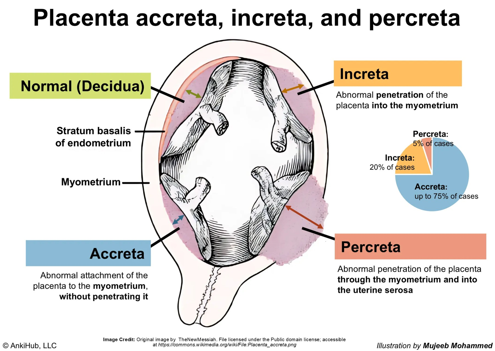
Esquema comparativo de la profundidad de invasión en placenta accreta, increta y percreta.
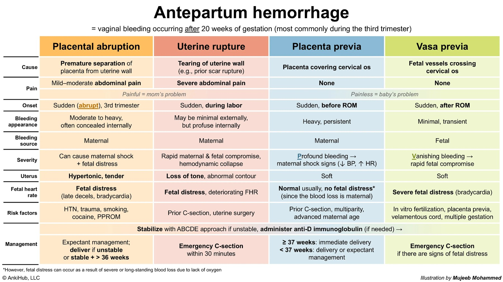
Comparación clínica de las principales causas de hemorragia anteparto: desprendimiento placentario, rotura uterina, placenta previa y vasa previa.
- Lagunas placentarias.
- Adelgazamiento del miometrio retroplacentario.
- Pérdida o irregularidad de la interfaz serosa vesicouterina.
- Vasos puente entre placenta e interfaz vejiga-serosa.
- Protrusión placentaria con distorsión del contorno uterino.
Sensibilidad y especificidad aproximadas: 90% y 97%. La resonancia complementa, pero no sustituye, a la ecografía; es útil en duda diagnóstica o placenta posterior.
Planeación: centro de alta especialidad con banco de sangre, UCI, radiología intervencionista y equipo multidisciplinario.
Momento: cesárea entre 34⁰/⁷ y 35⁶/⁷ semanas según ACOG/SMFM; no se requiere confirmar madurez pulmonar después de 34 semanas.
Técnica: histerotomía que evite la placenta. No intentar extracción manual en acretismo confirmado; duplica la hemorragia. Dejar placenta in situ y proceder a histerectomía.
Manejo conservador: dejar placenta in situ sin histerectomía solo en investigación o deseo genésico con consejería exhaustiva; riesgo de sepsis, coagulopatía y hemorragia tardía.
ETG: proliferación trofoblástica anormal con seguimiento mediante β-hCG. PAS: implantación placentaria anormalmente adherente o invasiva, cuyo principal riesgo es la hemorragia obstétrica masiva durante el intento de separación placentaria.
Clasificación, fisiopatología, manifestaciones sistémicas, diagnóstico, prevención, vigilancia, momento del parto y tratamiento.
// Definiciones y clasificación
| Categoría | Definición clave |
|---|---|
| Preeclampsia–eclampsia | Hipertensión asociada con disfunción de órgano blanco; la proteinuria no es indispensable si existe daño multiorgánico. |
| Hipertensión crónica | PA ≥140/90 mmHg antes del embarazo, antes de 20 semanas o persistente >12 semanas posparto. |
| Preeclampsia sobreagregada | Hipertensión crónica con proteinuria de novo o aparición de datos de gravedad; suele ser más temprana, grave y asociada con RCF. |
| Hipertensión gestacional | PA ≥140/90 mmHg por primera vez después de 20 semanas, sin proteinuria ni criterios de preeclampsia; se normaliza antes de 12 semanas posparto. |
PAS ≥140 mmHg o PAD ≥90 mmHg, confirmadas en dos mediciones. Ya no se utiliza como criterio formal el incremento de 30/15 mmHg sobre la basal, aunque una elevación importante respecto al valor habitual puede preceder a preeclampsia, HELLP o eclampsia.
Criterios diagnósticos de preeclampsia
Hipertensión gestacional más al menos uno de los siguientes:
| Criterio | Umbral |
|---|---|
| Proteinuria | ≥300 mg/24 h, índice proteína:creatinina ≥0.3 o tira reactiva 1+ persistente si no hay otro método. |
| Trombocitopenia | Plaquetas <100,000/µL. |
| Insuficiencia renal | Creatinina >1.1 mg/dL o duplicación del valor basal sin nefropatía previa. |
| Daño hepático | Transaminasas ≥2 veces el límite normal. |
| Compromiso neurológico | Cefalea de novo, alteraciones visuales o convulsiones. |
| Compromiso pulmonar | Edema pulmonar. |
ACOG abandonó el término “preeclampsia leve”. Debe clasificarse como con o sin datos de gravedad. La proteinuria en rango nefrótico no define gravedad.
Temprana: <34 semanas. Tardía: ≥34 semanas.
Prematura: <37 semanas. De término: ≥37 semanas.
Indicadores de gravedad
| Anormalidad | Sin gravedad | Con gravedad |
|---|---|---|
| PA sistólica | <160 mmHg | ≥160 mmHg |
| PA diastólica | <110 mmHg | ≥110 mmHg |
| Cefalea o alteraciones visuales | Ausentes | Presentes |
| Dolor epigástrico o en hipocondrio derecho | Ausente | Presente |
| Oliguria o convulsiones | Ausentes | Presentes |
| Creatinina | Normal | Elevada |
| Plaquetas <100,000/µL | Ausente | Presente |
| Aminotransferasas | Alteración mínima | Elevación marcada |
| RCF o edema pulmonar | Ausentes | Presentes |
| Presentación típica | Más tardía | Más temprana |
// Epidemiología y factores de riesgo
La preeclampsia complica aproximadamente 5–8% de los embarazos. Incidencia aproximada: nulíparas 3–10% y multíparas 2–5%. En el resumen, la frecuencia fue 5% en nulíparas caucásicas, 9% en hispanas y 11% en afroamericanas nulíparas, con mayor riesgo de desenlaces adversos graves en este último grupo.
| Factor de riesgo | RR combinado aproximado |
|---|---|
| Preeclampsia previa | 8.4 |
| Hipertensión crónica | 5.1 |
| Diabetes | 3.7 |
| Embarazo múltiple | 2.9 |
| IMC >30 | 2.8 |
| Anticuerpos antifosfolípidos | 2.8 |
| LES | 2.5 |
| Óbito previo | 2.4 |
| Nuliparidad | 2.1 |
| Desprendimiento placentario previo | 2.0 |
| Nefropatía crónica o reproducción asistida | 1.8 |
| Edad >35 años | 1.2 |
Otros factores: VIH, apnea del sueño y feto masculino. El tabaquismo reduce paradójicamente el riesgo de hipertensión gestacional, pero empeora otros desenlaces obstétricos.
Incidencia aproximada de 1 por 2,000–3,000 nacimientos en países con buen acceso sanitario. Ha disminuido por mejor control prenatal y profilaxis con sulfato de magnesio.
// Etiopatogenia
Teoría de las dos fases
Placentación defectuosa
Factores antiangiógenos e inflamatorios
Remodelación trofoblástica endovascular incompleta. Las arteriolas deciduales son invadidas, pero no las miometriales profundas; conservan calibre menor y resistencia elevada. Predomina en preeclampsia temprana.
La placenta hipóxica libera sFlt-1, sEng y mediadores inflamatorios, causando vasoespasmo, aumento de permeabilidad capilar, activación de la coagulación y enfermedad multiorgánica.
| Factor | Origen o función | Cambio en preeclampsia |
|---|---|---|
| sFlt-1 | Receptor soluble que secuestra VEGF y PlGF. | ↑ semanas o meses antes de la clínica. |
| sEng | Inhibe la unión de TGF-β a receptores endoteliales. | ↑ |
| PlGF | Factor proangiógeno placentario. | ↓ |
| VEGF | Mantiene la fenestración endotelial y podocitaria. | ↓ funcional por secuestro mediante sFlt-1. |
Un cociente sFlt-1:PlGF elevado tiene utilidad predictiva y diagnóstica, sobre todo en preeclampsia temprana, y ayuda a diferenciarla de hipertensión crónica, nefropatía, LES y PTI.
- Inmunidad: pérdida de tolerancia materno-fetal, menor HLA-G y predominio Th1; el cambio de pareja aumenta riesgo.
- Genética: enfermedad poligénica; el riesgo es 20–40% en hijas de mujeres afectadas.
- Endotelio: TNF-α e interleucinas inducen estrés oxidativo, disminución de óxido nítrico y prostaciclina, aumento de tromboxano A2 y mayor sensibilidad a angiotensina II y noradrenalina.
- Asociaciones: mola completa y trisomía 13 aumentan el riesgo; el gen de sFlt-1 está en el cromosoma 13.
Perfusión uteroplacentaria y Doppler de arteria uterina
La mala perfusión uteroplacentaria es un factor central de la morbimortalidad perinatal en la preeclampsia y deriva de la invasión trofoblástica endovascular defectuosa. La medición directa en humanos es difícil por el acceso limitado a la placenta, el drenaje venoso complejo y la necesidad de técnicas invasivas o radioisótopos; por ello se utilizan métodos indirectos.
El Doppler estima la resistencia vascular comparando las velocidades sistólica y diastólica. En la placentación normal, la resistencia disminuye conforme avanza el embarazo; en la preeclampsia permanece elevada.
Patrón de incisura protodiastólica en el oscilograma. Se asocia con mayor riesgo de preeclampsia y restricción del crecimiento fetal, sobre todo en enfermedad grave de inicio temprano.
| Situación | Rendimiento del Doppler uterino |
|---|---|
| Preeclampsia grave de inicio temprano | Mayor utilidad clínica y mejor correlación con insuficiencia placentaria. |
| Preeclampsia grave del tercer trimestre | Solo alrededor de 33% presenta velocimetría uterina anormal. |
| Síndrome HELLP | Aproximadamente 33% muestra oscilogramas anormales. |
| Daño fetal | La magnitud de la alteración se correlaciona con la gravedad del compromiso fetal. |
// Fisiopatología por sistemas
| Sistema | Hallazgos clave |
|---|---|
| Cardiovascular | Estado hiperdinámico, disfunción diastólica hasta en 45% y menor expansión plasmática. La pérdida de alrededor de 1,500 mL de volemia esperada en eclampsia aumenta la sensibilidad a hemorragia posparto. |
| Hematológico | Trombocitopenia por activación y consumo, hemólisis microangiopática con esquistocitos, haptoglobina baja y DHL alta; CID franca es rara salvo desprendimiento. |
| Renal | Endoteliosis glomerular, disminución de TFG, hiperuricemia por reabsorción tubular y proteinuria por lesión endotelial. |
| Hepático | Hemorragia periportal, necrosis hepatocelular y transaminasas elevadas. Hematoma subcapsular fuertemente asociado con HELLP; manejo inicial conservador salvo hemorragia activa. |
| Sistema nervioso | Cefalea, escotomas, PRES, ceguera cortical reversible y hemorragia cerebral, principal causa de muerte materna directa. |
| Pulmonar | Edema pulmonar, especialmente puerperal, por fuga capilar, poscarga elevada o sobrecarga de líquidos. |
Síndrome HELLP
Hemólisis + elevación de enzimas hepáticas + plaquetas bajas. Puede presentarse sin proteinuria en 10–15% y sin hipertensión franca hasta en 15%. Frente a preeclampsia sin HELLP se asocia con mayor eclampsia, prematuridad y mortalidad perinatal.
| Componente | Hallazgo orientador |
|---|---|
| Hemólisis | Esquistocitos, haptoglobina baja, DHL elevada y bilirrubina indirecta elevada. |
| Elevación hepática | Aminotransferasas elevadas; dolor epigástrico o en hipocondrio derecho. |
| Plaquetas bajas | Trombocitopenia, frecuentemente <100,000/µL. |
// Predicción y prevención
No existe una prueba de tamizaje sistemática suficientemente confiable y económica. Doppler uterino, ácido úrico, microalbuminuria, fibronectinas y cfDNA tienen sensibilidad o especificidad insuficientes. El cociente sFlt-1:PlGF es el biomarcador más prometedor, especialmente en enfermedad temprana.
| Estrategia | Resultado |
|---|---|
| Restricción de sodio, reposo o ejercicio | Sin beneficio consistente. El reposo absoluto no se recomienda por riesgo de tromboembolia. |
| Calcio | Beneficio solo en poblaciones con deficiencia real de calcio. |
| Vitaminas C, D o E | Sin beneficio demostrado. |
| Ácido fólico en dosis altas | Sin beneficio. |
| Aceite de pescado | Sin beneficio consistente. |
| Estatinas o metformina | Datos preliminares; evidencia insuficiente. |
| HBPM | Sin beneficio consistente, salvo posible utilidad en trombofilias específicas. |
| Ácido acetilsalicílico | Única estrategia con beneficio recomendado. |
50–150 mg/día, idealmente desde las semanas 12–16; ACOG permite iniciar entre 12 y 28 semanas. Reduce preeclampsia y RCF, con mayor efecto cuando se comienza antes de la semana 16.
| Indicación | Conducta |
|---|---|
| Preeclampsia previa, hipertensión crónica, diabetes, nefropatía, enfermedad autoinmune o gestación múltiple. | Recomendar con ≥1 factor de alto riesgo. |
| Nuliparidad, edad >35 años, obesidad, antecedente familiar, vulnerabilidad sociodemográfica o RN previo con bajo peso/RCF. | Considerar si existen ≥2 factores moderados. |
// Diagnóstico y vigilancia
- Hospitalizar inicialmente ante hipertensión de novo para descartar preeclampsia y definir gravedad.
- Interrogar diariamente cefalea, alteraciones visuales y dolor epigástrico.
- Peso diario; el aumento rápido es señal de alarma.
- Cuantificar proteinuria o utilizar índice proteína:creatinina.
- Medir PA cada 4 h o con mayor frecuencia si es elevada.
- Solicitar creatinina, transaminasas y biometría con plaquetas según gravedad.
- Evaluar bienestar fetal, crecimiento y líquido amniótico.
Ácido úrico, DHL y pruebas de coagulación no se recomiendan rutinariamente. Vigilancia fetal ACOG: dos veces por semana sin datos graves y diaria con datos graves.
// Momento del parto
| Escenario | Conducta |
|---|---|
| Sin datos de gravedad, ≥37 semanas | Inducir el trabajo de parto; no continuar conducta expectante. |
| 34–36 6/7 semanas sin gravedad | Controvertido. El parto reduce complicaciones maternas, pero aumenta SDR e ingreso neonatal; algunos centros favorecen manejo activo. |
| Con gravedad, 24–33 6/7 semanas, estable | Conducta expectante en centro de tercer nivel; puede ganar 5–12 días para maduración pulmonar, con riesgo materno significativo. |
| Con gravedad, <24 semanas | Pronóstico materno y perinatal muy desfavorable; individualizar y considerar interrupción. |
| Contraindicación para conducta expectante | Parto inmediato después de estabilización; no retrasar por completar corticoides. |
Hipertensión grave no controlable, cefalea o dolor epigástrico persistente, eclampsia, HELLP, edema pulmonar, desprendimiento placentario, CID, apoplejía, infarto, estado fetal inestable o muerte fetal.
Puede diferirse 48 h para corticosteroides si únicamente existe RPM, trabajo de parto pretérmino, RCF, oligohidramnios, flujo diastólico invertido o disfunción renal leve en deterioro. Los corticoides aceleran maduración pulmonar, pero no mejoran la trombocitopenia del HELLP.
// Preeclampsia grave y eclampsia
Sulfato de magnesio para prevenir o tratar convulsiones.
Antihipertensivos si PAS ≥160 o PAD ≥110 mmHg.
Líquidos IV conservadores; evitar diuréticos salvo edema pulmonar.
Interrumpir el embarazo tras estabilización.
Sulfato de magnesio
Anticonvulsivante de elección, superior a fenitoína y diazepam. Bloquea receptores NMDA, reduce liberación de glutamato y produce vasodilatación cerebral; no es antihipertensivo.
| Esquema | Dosis |
|---|---|
| IV continuo | Carga 4–6 g IV en 15–20 min; mantenimiento 1–2 g/h. En obesidad puede requerirse 3 g/h. |
| Pritchard IM | 4 g IV lento + 10 g IM, 5 g en cada glúteo; posteriormente 5 g IM cada 4 h si reflejos, FR y diuresis son adecuados. |
| Duración | Continuar 24 h posparto o 24 h después de la última convulsión. |
| Magnesemia | Efecto |
|---|---|
| 4–7 mEq/L | Rango terapéutico. |
| 8–10 mEq/L | Pérdida del reflejo patelar, primer dato de alarma. |
| 10–12 mEq/L | Depresión respiratoria. |
| ≥12 mEq/L | Parálisis respiratoria y paro cardiorrespiratorio. |
ACOG recomienda neuroprofilaxis en eclampsia y preeclampsia con datos de gravedad. En ausencia de gravedad, la profilaxis puede individualizarse.
Tratamiento antihipertensivo agudo
Indicado con PAS ≥160 o PAD ≥110 mmHg. El objetivo es prevenir hemorragia cerebral y encefalopatía, sin normalizar excesivamente la presión porque disminuiría la perfusión placentaria.
| Fármaco | Dosis | Precauciones |
|---|---|---|
| Hidralazina | 5 mg IV o IM; después 10 mg cada 15–20 min, máximo 3 dosis, o infusión 0.5–10 mg/h. | Taquicardia, cefalea e hipotensión. Iniciar con 5 mg. |
| Labetalol | 10 mg IV, seguido de 20, 40 y 80 mg cada 10 min, o infusión 1–2 mg/min. | Evitar en asma; puede causar bradicardia e hipotensión. |
| Nifedipina | 10–20 mg VO; repetir a los 20 min. | Taquicardia y cefalea. No utilizar vía sublingual. |
Los tres tienen eficacia similar; nifedipina suele actuar más rápido. Los diuréticos están contraindicados antes del parto para tratar hipertensión y se reservan para edema pulmonar franco.
// Líquidos, anestesia y puerperio
Conducta conservadora: 60–125 mL/h. Existe exceso intersticial pero hipovolemia intravascular; la expansión vigorosa aumenta edema pulmonar y cerebral.
La analgesia neuroaxial es de elección porque evita la respuesta hipertensiva a la intubación. Requiere líquidos prudentes e inducción lenta.
La menor expansión plasmática hace que la paciente tolere mal incluso pérdidas “normales”. Una caída brusca de PA después del parto debe interpretarse como hemorragia hasta demostrar lo contrario, no como resolución del vasoespasmo.
Puede aparecer de novo en alrededor de 8%. Tratamiento agudo: hidralazina o labetalol IV, o nifedipina VO. Mantenimiento: labetalol, nifedipina de liberación prolongada o amlodipina. La furosemida posparto puede acelerar la normalización. Los AINE no agravan de forma importante la hipertensión puerperal.
| Diagnóstico diferencial puerperal | Claves |
|---|---|
| PTT / SHU | Hipertensión, trombocitopenia y disfunción renal persistentes después del parto; considerar si no sigue el curso esperado de HELLP. |
| Síndrome de vasoconstricción cerebral reversible | Cefalea en trueno, hipertensión y convulsiones; vasoconstricción segmentaria reversible, con riesgo de apoplejía. |
| Hígado graso agudo | Predomina falla hepática franca con hipoglucemia y coagulopatía; la función sintética suele estar conservada en HELLP puro. |
// Consecuencias a largo plazo
| Categoría | Riesgos |
|---|---|
| Obstétricos | Recurrencia de trastorno hipertensivo, prematuridad y RCF. Recurrencia aproximada de 23% si fue cercana al término y hasta 40% si ocurrió antes de 30 semanas. |
| Cardiovasculares | Hipertensión crónica, cardiopatía isquémica, aterosclerosis, calcificación coronaria, miocardiopatía, tromboembolia y disfunción ventricular. |
| Renales | Disfunción renal y mayor riesgo de enfermedad renal crónica. |
| Neurovasculares | Apoplejía, lesiones de sustancia blanca, posible deterioro cognitivo, desprendimiento de retina y aumento leve de trastornos convulsivos. |
| Metabólicos | Diabetes tipo 2, síndrome metabólico, dislipidemia y obesidad. |
Toda mujer con antecedente de trastorno hipertensivo del embarazo requiere control cardiovascular periódico: presión arterial, perfil lipídico y glucosa. Si la hipertensión persiste más de 12 semanas posparto, se reclasifica como hipertensión crónica.
// Algoritmo mental
| Pregunta | Respuesta rápida |
|---|---|
| ¿Cómo clasifico la hipertensión? | Preeclampsia–eclampsia, hipertensión crónica, preeclampsia sobreagregada o hipertensión gestacional. |
| ¿Cómo diagnostico preeclampsia? | Hipertensión gestacional más proteinuria o lesión de órgano blanco. |
| ¿Cuándo es grave? | PA ≥160/110, síntomas neurológicos, dolor epigástrico, oliguria, plaquetas bajas, transaminasas elevadas, edema pulmonar o RCF. |
| ¿Cuándo interrumpo? | ≥37 semanas sin gravedad; inmediatamente si existe gravedad no controlable o contraindicación para conducta expectante. |
| ¿Cuándo uso magnesio? | Eclampsia o preeclampsia con datos de gravedad. |
| ¿Cuándo uso antihipertensivo urgente? | PAS ≥160 o PAD ≥110 mmHg. |
| ¿Corticoide para HELLP? | No mejora la trombocitopenia; solo para maduración pulmonar fetal cuando corresponda. |
| ¿Tratamiento definitivo? | Nacimiento. |
Definición, valoración basal, riesgos materno-fetales, tratamiento, preeclampsia sobreagregada, vigilancia y puerperio.
// Definición y clasificación
Hipertensión que precede al embarazo, se diagnostica antes de la semana 20 o persiste más de 12 semanas posparto. Complica aproximadamente 1.8–2.3% de los embarazos y su prevalencia aumenta por mayor edad materna y obesidad.
| PA | No embarazada — ACC/AHA | Embarazada — ACOG |
|---|---|---|
| <120 y <80 | Normal | Normal |
| 120–129 y <80 | Elevada | Normal |
| 130–139 o 80–89 | HTA estadio 1 | No cumple criterio obstétrico de HTA |
| 140–159 o 90–109 | HTA estadio 2 | HTA leve-moderada |
| ≥160 o ≥110 | HTA estadio 2 | HTA grave |
En obstetricia se utiliza PAS ≥140 o PAD ≥90 mmHg. La distinción entre hipertensión crónica y gestacional depende principalmente del momento de aparición, no de la magnitud de la PA.
Factores de riesgo y comorbilidades
| Factor | Comentario |
|---|---|
| Raza negra | Mayor frecuencia en datos estadounidenses. |
| Obesidad | Puede aumentar la prevalencia hasta diez veces y eleva el riesgo de preeclampsia sobreagregada. |
| Diabetes | Comorbilidad frecuente y estrechamente relacionada con obesidad y preeclampsia. |
| Edad materna avanzada | Correlación directa con presiones más elevadas. |
| HTA gestacional o preeclampsia previa | Marcador de una diátesis hipertensiva crónica latente. |
Comorbilidades reportadas: diabetes pregestacional 6.6%, enfermedad tiroidea 4.1% y colagenopatías vasculares 0.6%.
// Cambios hemodinámicos
En el primer trimestre la resistencia vascular sistémica disminuye cerca de 30%, por lo que la PA desciende incluso en pacientes con hipertensión crónica. Después asciende progresivamente durante el tercer trimestre. Estas pacientes conservan resistencia vascular basal elevada y menor expansión intravascular.
// Valoración inicial y preconcepcional
Duración y control de la HTA, fármacos actuales, precisión del monitor domiciliario, hábitos y estilo de vida. El uso de múltiples fármacos o el control deficiente predicen mayor riesgo.
Nefropatía crónica, apnea obstructiva del sueño, colagenopatía, aldosteronismo primario, síndrome de Cushing y feocromocitoma.
- Creatinina sérica y razón proteína:creatinina; si es >0.3, cuantificar proteinuria de 24 h.
- Ecocardiograma si HTA >5 años, diabetes o sospecha de hipertrofia ventricular izquierda.
- La HVI y la remodelación cardiaca anormal se asocian con preeclampsia sobreagregada, prematuridad e ingreso neonatal.
// Efectos adversos
| Maternos | Perinatales |
|---|---|
| Preeclampsia sobreagregada | Óbito |
| Síndrome HELLP | Restricción del crecimiento fetal |
| Desprendimiento placentario | Parto pretérmino |
| Edema pulmonar | Muerte y morbilidad neonatal |
| Apoplejía e insuficiencia renal aguda | Mayor frecuencia de defectos cardiacos y atresia esofágica |
| Insuficiencia cardiaca, infarto o disección aórtica | — |
| Muerte materna —riesgo aproximado ×5— | — |
- Desprendimiento placentario: riesgo 2–3 veces mayor; hasta 8.4% en HTA grave.
- Mortalidad perinatal: 2–4 veces mayor; 31/1,000 en HTA leve, 72/1,000 moderada y 100/1,000 grave.
- RCF: alrededor de 20%; hasta 50% con preeclampsia sobreagregada.
- Preeclampsia sobreagregada: 20–50%; aproximadamente 25% en cohortes MFM.
// Prevención de preeclampsia sobreagregada
81 mg/día entre las semanas 12 y 28, continuando hasta el parto en pacientes de alto riesgo. Es la intervención preventiva con beneficio reconocido. Las vitaminas C y E no han demostrado beneficio.
// Antihipertensivos durante el embarazo
| Fármaco | Mecanismo / uso | Consideraciones |
|---|---|---|
| Metildopa | Agonista α2 central; reduce salida simpática. | Amplia experiencia de seguridad; sedante y menos eficaz en HTA grave. |
| Labetalol | Bloqueo α/β; reduce tono periférico y gasto cardiaco. | Primera línea; también útil IV en urgencia. Evitar en asma o descompensación cardiaca. |
| Metoprolol / propranolol | Disminuyen gasto cardiaco. | Evitar atenolol por asociación con RCF. |
| Nifedipina / amlodipina | Bloqueo de canales de calcio y vasodilatación. | Primera línea. Precaución con taquicardia; potencial interacción con magnesio. |
| Verapamilo | Efecto inotrópico negativo. | Puede agravar disfunción ventricular. |
| Hidroclorotiazida | Diuresis y reducción tardía de resistencia periférica. | Segunda línea; preferible si ya se usaba antes de 20 semanas. |
| Hidralazina | Vasodilatación arterial directa. | Oral poco utilizada; IV útil en HTA periparto grave. |
| IECA / ARA-II | Bloqueo del sistema renina-angiotensina. | Contraindicados: oligohidramnios, hipocalvaria y lesión renal fetal. |
Nifedipina y labetalol tienen eficacia semejante. En urgencia, hidralazina y labetalol ofrecen resultados similares; hidralazina causa más taquicardia materna y labetalol más hipotensión o bradicardia neonatal.
Umbrales y objetivos
El tratamiento reduce progresión a HTA grave, pero no ha demostrado reducir de forma constante preeclampsia sobreagregada, prematuridad, PEG o mortalidad perinatal.
PAS ≥160 o PAD ≥110 mmHg: tratamiento obligatorio. Con daño renal o cardiovascular, considerar tratamiento desde PAS 140–150 o PAD 90–100.
| Resultado CHIPS | Control menos estricto | Control más estricto |
|---|---|---|
| Desprendimiento | 2.2% | 2.3% |
| HTA grave | 41% | 28% |
| Preeclampsia | 49% | 46% |
| HELLP | 1.8% | 0.4% |
| Muerte perinatal | 28/1,000 | 23/1,000 |
| Peso <p10 | 16% | 20% |
El control más estricto disminuyó HTA grave, sin demostrar diferencias claras en los demás desenlaces. En el resumen se propone iniciar alrededor de 150/100 mmHg y usar labetalol o nifedipina/amlodipina como primera línea.
// Preeclampsia sobreagregada
Es la complicación más peligrosa y el reto diagnóstico principal. Sospechar ante exacerbación de la HTA, proteinuria nueva, cefalea intensa, alteraciones visuales, edema generalizado, oliguria, convulsiones o edema pulmonar.
La PA puede aumentar fisiológicamente al final del segundo trimestre en HTA crónica aislada. Si se excluye preeclampsia, puede ajustarse el tratamiento.
La proteinuria basal dificulta la interpretación. Apoyarse en creatinina, transaminasas, plaquetas y datos de HELLP.
Proteinuria basal >300 mg/día se asocia con mayor preeclampsia sobreagregada, parto más temprano y menor peso neonatal. Con datos de gravedad se indica sulfato de magnesio y, en general, interrupción tras estabilización.
// Vigilancia fetal y momento del parto
- Ecografía de crecimiento en el tercer trimestre en todas las pacientes.
- Bajo riesgo: prueba sin estrés o perfil biofísico semanal.
- Mayor riesgo o daño de órgano blanco: iniciar antes y aumentar frecuencia.
| Escenario | Momento recomendado |
|---|---|
| HTA leve-moderada con tratamiento | No antes de 37 semanas. |
| HTA leve-moderada sin tratamiento | No antes de 38 semanas. |
| Recomendación general | Inducir entre 38 y 39 semanas si no hay complicaciones. |
| Preeclampsia sobreagregada | Parto al diagnóstico; conducta expectante solo antes de 34 semanas en centro de alta capacidad. |
| Expectante después de 39 semanas | Aumenta la preeclampsia grave. |
| Parto electivo antes de 37 semanas | Aumenta resultados neonatales adversos. |
La hipertensión crónica por sí sola no indica cesárea. La vía depende de criterios obstétricos; la inducción y el parto vaginal son razonables.
// Intraparto y puerperio
- Sulfato de magnesio solo si existe preeclampsia sobreagregada con gravedad.
- Analgesia epidural preferida; vigilar hipotensión, especialmente con preeclampsia.
- HTA grave intraparto: hidralazina IV, labetalol IV o nifedipina oral.
- Continuar el régimen antihipertensivo después del parto.
- Furosemida 20 mg VO/día por 5 días puede favorecer diuresis y reducir necesidad de tratamiento.
- Vigilar especialmente las primeras 48 h por edema pulmonar o cerebral, insuficiencia cardiaca, lesión renal y hemorragia cerebral.
// Pronóstico e integración
La hipertensión crónica implica riesgo cardiovascular de por vida, potenciado por diabetes, obesidad y síndrome metabólico. Los hijos expuestos muestran mayor morbilidad endocrino-metabólica, especialmente obesidad, probablemente por programación epigenética.
| Paso | Acción clínica |
|---|---|
| 1 | Confirmar HTA previa o antes de 20 semanas. |
| 2 | Clasificar como leve-moderada o grave. |
| 3 | Buscar causas secundarias si existen datos sugestivos. |
| 4 | Obtener evaluación renal y cardiaca basal. |
| 5 | Iniciar ASA 81 mg entre 12 y 28 semanas. |
| 6 | Elegir labetalol o nifedipina/amlodipina; evitar IECA y ARA-II. |
| 7 | Vigilar crecimiento fetal y preeclampsia sobreagregada. |
| 8 | Programar parto entre 37 y 39 semanas según tratamiento y control. |
| 9 | Vigilar intensivamente las primeras 48 h posparto. |
Mecanismos, corionicidad, diagnóstico, adaptación materna, complicaciones, vigilancia prenatal y atención del parto.
01Conceptos generales y epidemiologíaImpacto materno, fetal y neonatal
// Introducción
Las gestaciones multifetales se originan por dos o más fecundaciones, por una fecundación seguida de división del cigoto o por una combinación de ambos mecanismos. En Estados Unidos, la tasa de nacimientos gemelares fue aproximadamente 3.2% en 2019. Los nacimientos de trillizos o de orden superior alcanzaron un máximo de 0.2% en 1998 y disminuyeron 55% hasta 2019 después de limitar el número de embriones transferidos.
| Resultado en Parkland | Producto único | Gemelos |
|---|---|---|
| Embarazos | 456,120 | 5,366 |
| Nacimientos | 456,120 | 10,732 |
| Óbitos por 1,000 | 5.6 | 24.0 |
| Muertes neonatales por 1,000 nacidos vivos | 2.1 | 18.2 |
| Muertes perinatales por 1,000 | 7.6 | 41.4 |
| Muy bajo peso <1,500 g por 1,000 nacidos vivos | 10.0 | 108.8 |
Los embarazos multifetales representaron cerca de 3% de nacidos vivos, pero 15% de muertes infantiles. La mortalidad infantil es más de cuatro veces mayor en gemelos y alrededor de 12 veces mayor en trillizos.
Se duplican aproximadamente preeclampsia, hemorragia puerperal y muerte materna. También aumentan placenta previa, PAS e histerectomía periparto; esta última fue 3 veces mayor en gemelos y 24 veces mayor en trillizos o cuádruples.
02Mecanismos de la gemelaciónCigosidad, corionicidad, amnionicidad y momento de división
// Gemelos dicigotos y monocigotos
| Característica | Dicigotos | Monocigotos |
|---|---|---|
| Origen | Fecundación de dos ovocitos en el mismo ciclo. | División de un solo cigoto fecundado. |
| Relación genética | Equivalente a hermanos comunes. | Comparten el mismo origen genético, aunque pueden diferir por mutaciones postcigóticas, reparto citoplasmático o lionización. |
| Sexo | Puede ser igual o diferente. | Casi siempre igual; raras excepciones por pérdida postcigótica del Y o mosaicismo. |
| Corionicidad | Casi siempre dicoriónicos-diamnióticos. | Depende del momento de división. |
| Frecuencia | Variable con edad, raza, herencia, talla y tratamientos de infertilidad. | Aproximadamente 1 por 250 nacimientos; relativamente constante salvo ART. |
Momento de división del cigoto monocigoto
| Momento de división | Resultado | Membranas |
|---|---|---|
| 0–4 días | Dos embriones antes de la diferenciación coriónica. | Dicoriónicos-diamnióticos; placentas separadas o fusionadas. |
| 4–8 días | Dos embrioblastos dentro de un blastocisto. | Monocoriónicos-diamnióticos. |
| 8–12 días | División después de formarse el amnios. | Monocoriónicos-monoamnióticos. |
| División tardía o incompleta | Separación incompleta. | Gemelos unidos o siameses. |
La corionicidad, más que la cigosidad, determina gran parte del riesgo obstétrico. Los gemelos monocoriónicos comparten circulación placentaria y presentan complicaciones vasculares específicas.
Factores que favorecen gemelación
- ART e inducción de ovulación: clomifeno, FSH, hCG y transferencia de múltiples embriones aumentan gemelación dicigota; transferencia de blastocisto aumenta gemelación monocigota.
- Edad materna: mayor FSH y mayor uso de ART.
- Raza: mayor frecuencia descrita en mujeres afroamericanas, intermedia en caucásicas y menor en hispanas.
- Herencia: predominio materno, relacionado con tendencia a ovulación múltiple.
- Talla, peso y nutrición: mayor frecuencia en mujeres más grandes y mejor nutridas.
Fecundación de dos ovocitos del mismo ciclo por coitos diferentes; puede existir heteropaternidad.
Fecundaciones separadas por un ciclo o más. No está demostrada de forma espontánea y suele relacionarse con ART. La seudosuperfetación corresponde a crecimiento marcadamente desigual de fetos de la misma edad.
03Diagnóstico y determinación de corionicidadClínica, ultrasonido, signo lambda y signo T
// Diagnóstico clínico y ecográfico
La altura uterina suele superar en promedio 5 cm a la esperada entre las 20 y 30 semanas. Pueden palparse dos cabezas o auscultarse dos frecuencias cardiacas diferentes, pero los criterios clínicos aislados son poco confiables. Sin ecografía sistemática, hasta 37% de los gemelos puede no diagnosticarse antes de 26 semanas y 13% hasta el ingreso para parto.
- Confirmar número de fetos.
- Establecer edad gestacional.
- Determinar corionicidad y amnionicidad.
- Identificar posición y anatomía de cada feto.
- Etiquetar consistentemente a cada gemelo para el seguimiento.
La determinación de corionicidad tiene alrededor de 98% de precisión en el primer trimestre, puede fallar hasta en 10% durante el segundo y alcanza aproximadamente 95% si se establece antes de 24 semanas.
Signos ecográficos
| Hallazgo | Dicoriónico-diamniótico | Monocoriónico-diamniótico | Monocoriónico-monoamniótico |
|---|---|---|---|
| Número de sacos gestacionales tempranos | Dos | Uno | Uno |
| Membrana intergemelar | Gruesa, generalmente ≥2 mm; cuatro capas. | Delgada, <2 mm; dos amnios. | Ausente. |
| Inserción placentaria | Signo lambda, delta o pico gemelar. | Signo T. | Sin membrana; puede observarse entrelazamiento de cordones. |
| Sexo discordante | Confirma dicigosidad y dicorionicidad. | No esperado salvo excepciones raras. | No esperado. |
Frecuencia de complicaciones según tipo
| Tipo | Frecuencia aproximada | RCF | Parto pretérmino | Anastomosis vasculares | Mortalidad perinatal |
|---|---|---|---|---|---|
| Dicigotos | 80% | 25% | 40% | 0% | 10–12% |
| Monocigotos | 20% | 40% | 50% | Variable | 15–18% |
| Dicoriónicos-diamnióticos | 6–7 por 1,000 | 30% | 40% | 0% | 18–20% |
| Monocoriónicos-diamnióticos | 13–14 por 1,000 | 50% | 60% | 100% | 30–40% |
| Monocoriónicos-monoamnióticos | <1% | 40% | 60–70% | 80–90% | 58–60% |
| Siameses | 0.002–0.008% | — | 70–80% | 100% | 70–90% |
La resonancia ayuda a delinear gemelos unidos y complicaciones monocoriónicas. β-hCG y AFP materna suelen estar elevadas, pero no son diagnósticas por el amplio traslape con embarazos únicos.
04Adaptaciones fisiológicas maternasVolemia, cardiovascular, anemia y efectos mecánicos
// Cambios maternos
| Sistema | Adaptación en embarazo multifetal |
|---|---|
| Gastrointestinal | Mayor β-hCG y mayor frecuencia de náusea y vómito en el primer trimestre. |
| Hematológico | Expansión plasmática 50–60% frente a 40–50% en producto único. La masa eritrocitaria aumenta en menor proporción, con mayor demanda de hierro y folato y predisposición a anemia. |
| Hemodinámico | Presión diastólica inicialmente menor y ascenso mayor al término. El gasto cardiaco aumenta aproximadamente 20% adicional, principalmente por mayor volumen sistólico. |
| Cardiaco | Menor resistencia vascular y posible disfunción diastólica progresiva reversible después del parto. |
| Mecánico | Útero y contenido no fetal pueden superar 10 L y 9 kg; compresión pulmonar y abdominal, menor movilidad y mayor disnea. |
| Renal | Rara uropatía obstructiva por compresión, frecuentemente asociada con polihidramnios; la amniorreducción puede aliviar síntomas. |
05Complicaciones generales del embarazoFeto evanescente, anomalías, crecimiento, hipertensión y neurodesarrollo
// Aborto y feto evanescente
Los monocoriónicos presentan mayor riesgo de aborto que los dicoriónicos. En ecografía del primer trimestre, uno de los gemelos muere y desaparece antes del segundo trimestre en 10–40% de las gestaciones gemelares, con mayor frecuencia después de ART.
| Gestación inicial | Reducción espontánea antes de 12 semanas |
|---|---|
| Gemelar | 36% |
| Trillizos | 53% |
| Cuádruples | 65% |
El gemelo evanescente puede elevar PAPP-A, AFP e inhibina A y alterar cfDNA; alrededor de 15% de falsos positivos en un estudio se atribuyó a este fenómeno. Debe documentarse para interpretar correctamente el tamiz prenatal.
Malformaciones congénitas
La frecuencia es mayor que en productos únicos: 406 frente a 238 por 10,000 en un estudio. El riesgo es casi el doble en monocoriónicos y los gemelos presentan alrededor de 73% más cardiopatías congénitas. Parte del incremento en dicigotos se relaciona con ART y factores de infertilidad.
Bajo peso y restricción del crecimiento
El peso de gemelos es similar al de productos únicos hasta 28–30 semanas; después se retrasa progresivamente y se separa claramente desde 35–36 semanas. Deben utilizarse curvas específicas para embarazos multifetales y considerar corionicidad.
- Dicoriónicos: ecografía de crecimiento aproximadamente cada 4 semanas desde 16–20 semanas.
- Monocoriónicos: ecografía cada 2 semanas para detectar TTTS y alteraciones de crecimiento.
- La discordancia debe interpretarse junto con percentiles individuales y Doppler.
Hipertensión
Los trastornos hipertensivos aumentan con el número de fetos; alrededor de 14% de las gestantes con gemelos presentó hipertensión en un análisis. Los embarazos gemelares muestran sFlt-1 y endoglina soluble más altos y PlGF más bajo, lo que apoya una mayor carga antiangiógena. Se recomienda ácido acetilsalicílico profiláctico.
Desarrollo infantil
El desempeño académico y el neurodesarrollo a los dos años son similares entre gemelos y productos únicos cuando se ajusta por prematuridad. Sin embargo, la parálisis cerebral es más frecuente: aproximadamente 7 por 1,000 nacidos vivos multifetales frente a 1.6 por 1,000 únicos, en gran medida por prematuridad, RCF, anomalías, TTTS y muerte de un cogemelo.
06Complicaciones fetales especialesMonoamnióticos, siameses, TTTS, TAPS y TRAP
// Gemelos monoamnióticos
Representan menos de 1% de los embarazos gemelares y alrededor de 4% de los monocoriónicos. El principal riesgo es el entrelazamiento y compresión de cordones, además de anomalías congénitas, prematuridad y muerte fetal. La ausencia de membrana intergemelar confirma monoamnionicidad.
Requieren vigilancia intensiva, con frecuencia hospitalaria durante el tercer trimestre según protocolo institucional. El parto suele planearse por cesárea antes del término por riesgo impredecible de accidente del cordón.
// Gemelos unidos y formas aberrantes
Los gemelos siameses derivan de división tardía incompleta o fusión embrionaria. Se clasifican por sitio de unión: toracópagos, onfalópagos, isquiópagos, craneópagos y otras formas. La ecografía y la resonancia determinan órganos compartidos, posibilidad de separación y vía del parto. También existen gemelos parásitos externos y fetus in fetu, en los que un gemelo rudimentario depende del gemelo autosuficiente.
// Anastomosis vasculares monocoriónicas
Todas las placentas monocoriónicas poseen conexiones vasculares. Las anastomosis arterioarteriales y venovenosas son superficiales y bidireccionales; las arteriovenosas atraviesan un cotiledón y son unidireccionales. El desequilibrio neto produce síndromes transfusionales.
Síndrome de transfusión gemelo-gemelo — TTTS
Ocurre casi exclusivamente en gemelos monocoriónicos-diamnióticos por flujo neto crónico a través de anastomosis arteriovenosas. El donante desarrolla hipovolemia, oliguria, oligohidramnios y RCF; el receptor desarrolla hipervolemia, poliuria, polihidramnios, cardiomegalia e insuficiencia cardiaca.
Hipovolemia
Hipervolemia
| Estadio de Quintero | Hallazgo |
|---|---|
| I | Secuencia oligohidramnios-polihidramnios; vejiga del donante visible. |
| II | Vejiga del donante no visible. |
| III | Doppler críticamente anormal en cualquiera de los fetos. |
| IV | Hidropesía fetal. |
| V | Muerte de uno o ambos fetos. |
Monocorionicidad, polihidramnios en receptor y oligohidramnios en donante, discordancia vesical y evaluación Doppler. Puede existir discordancia de tamaño, pero no es requisito diagnóstico.
La fotocoagulación fetoscópica láser de las anastomosis es el tratamiento preferido en TTTS significativo antes de la viabilidad avanzada. La amniorreducción seriada alivia polihidramnios cuando el láser no está disponible o no es factible. El pronóstico depende de estadio y edad gestacional.
Secuencia anemia-policitemia gemelar — TAPS
Transfusión lenta por anastomosis muy pequeñas sin secuencia clásica de líquido amniótico. El donante desarrolla anemia y el receptor policitemia. Se detecta mediante Doppler de arteria cerebral media: velocidad sistólica máxima elevada en el donante y baja en el receptor.
Secuencia de perfusión arterial reversa — TRAP
Una anastomosis arterioarterial permite que el gemelo bomba perfunda en sentido retrógrado a un gemelo acárdico, malformado y no viable. El gemelo bomba corre riesgo de insuficiencia cardiaca, hidropesía y prematuridad.
Vigilancia del tamaño del gemelo acárdico, función del gemelo bomba y signos de sobrecarga. En enfermedad progresiva puede interrumpirse la circulación del gemelo acárdico mediante radiofrecuencia, láser o técnicas de oclusión del cordón.
Mola hidatiforme con feto coexistente
Puede presentarse una mola completa junto con un feto aparentemente normal en una gestación dicigota. Existe riesgo materno importante por hemorragia, preeclampsia temprana, hipertiroidismo y neoplasia trofoblástica; el manejo debe individualizarse según estabilidad materna, anomalías y evolución fetal.
07Crecimiento discordante y muerte de un gemeloDefiniciones, evaluación y pronóstico según corionicidad
// Crecimiento discordante
La discordancia puede reflejar constitución, anomalías, insuficiencia placentaria o distribución desigual de territorio placentario. Una discordancia ≥20–25% se asocia con mayor morbimortalidad, especialmente cuando el gemelo pequeño está por debajo del percentil 10.
| Contexto | Interpretación |
|---|---|
| Dicoriónico | Cada feto tiene placenta propia; el manejo se asemeja al de RCF en un producto único, considerando el estado del cogemelo. |
| Monocoriónico | Puede corresponder a distribución placentaria desigual, anastomosis y restricción selectiva; requiere Doppler frecuente y vigilancia de ambos fetos. |
En la restricción selectiva monocoriónica, el patrón de flujo diastólico de la arteria umbilical del gemelo pequeño ayuda a clasificar riesgo: flujo positivo persistente, ausente/reverso persistente o ausente/reverso intermitente.
// Muerte fetal de un cogemelo
El efecto depende de edad gestacional y corionicidad. En dicoriónicos, el principal riesgo para el sobreviviente es prematuridad. En monocoriónicos, la caída brusca de presión del gemelo muerto puede desviar sangre desde el sobreviviente por anastomosis y causar anemia aguda, hipotensión, lesión cerebral o muerte.
- Confirmar corionicidad y causa probable.
- Evaluar bienestar, Doppler de cerebral media y anatomía/neuroimagen del sobreviviente.
- No indicar parto inmediato solo por muerte de un gemelo si el sobreviviente está estable y es pretérmino.
- Planear vigilancia y momento del parto según corionicidad, edad gestacional y condición fetal.
08Atención prenatalNutrición, tamizaje, vigilancia y prevención de prematuridad
// Principios de atención prenatal
- Determinar corionicidad y amnionicidad en el primer trimestre.
- Realizar evaluación anatómica detallada; considerar ecocardiografía fetal en monocoriónicos o después de ART.
- Vigilar presión arterial y signos de preeclampsia; administrar ASA en dosis bajas cuando corresponda.
- Buscar anemia y asegurar suplementación adecuada con hierro y folato.
- Educar sobre síntomas de trabajo de parto pretérmino, rotura de membranas y disminución de movimientos.
Frecuencia ecográfica orientativa
| Tipo de gestación | Seguimiento |
|---|---|
| Dicoriónica-diamniótica | Crecimiento cada 4 semanas desde aproximadamente 20 semanas. |
| Monocoriónica-diamniótica | Ecografía cada 2 semanas desde 16 semanas para TTTS; crecimiento y Doppler según hallazgos. |
| Monocoriónica-monoamniótica | Vigilancia intensiva individualizada por alto riesgo de cordón y muerte fetal. |
| Orden superior | Mayor frecuencia según número de fetos, crecimiento y complicaciones. |
Nutrición y ganancia de peso
La demanda energética, proteica, de hierro, folato y micronutrientes es mayor. La ganancia ponderal insuficiente se relaciona con menor peso neonatal y prematuridad. Debe individualizarse según IMC pregestacional y número de fetos.
// Parto pretérmino
Es la principal causa de morbimortalidad neonatal. La duración gestacional disminuye conforme aumenta el número de fetos. La sobredistensión uterina, inflamación, rotura de membranas y complicaciones placentarias contribuyen.
| Intervención | Utilidad en gestación gemelar no seleccionada |
|---|---|
| Reposo en cama u hospitalización profiláctica | No reduce prematuridad y puede causar daño materno. |
| Actividad restringida rutinaria | No recomendada sin indicación específica. |
| Progesterona | No ha demostrado beneficio rutinario en todos los gemelos; puede considerarse en subgrupos con cuello corto según guía local. |
| Cerclaje profiláctico | No recomendado solo por gemelaridad; puede ser perjudicial sin indicación cervical clara. |
| Pesario | Evidencia inconsistente. |
| Corticosteroides antenatales | Indicados cuando existe riesgo de parto pretérmino dentro del intervalo gestacional recomendado. |
| Sulfato de magnesio fetal | Neuroprotección cuando se anticipa parto muy pretérmino. |
09Trabajo de parto y nacimientoPresentación, vía del parto, segundo gemelo y hemorragia puerperal
// Preparación
El parto debe planearse en una unidad con obstetricia, anestesia, neonatología, ultrasonido inmediato, capacidad de cesárea urgente y hemoderivados. Se confirma presentación, estimación de peso, discordancia y estado fetal de cada gemelo.
Presentaciones frecuentes
| Primer gemelo | Segundo gemelo | Enfoque general |
|---|---|---|
| Cefálico | Cefálico | Parto vaginal apropiado si no existen contraindicaciones. |
| Cefálico | No cefálico | Puede intentarse parto vaginal con versión interna y extracción podálica por operador experimentado y criterios adecuados. |
| No cefálico | Cualquier presentación | Generalmente cesárea. |
| Monoamnióticos o unidos | — | Cesárea planificada. |
La gemelaridad por sí sola no obliga a cesárea. Cuando el primer gemelo es cefálico, ambos tienen tamaño razonable y existe experiencia obstétrica, el parto vaginal es seguro. El ensayo Twin Birth no mostró ventaja neonatal de la cesárea planificada sobre el parto vaginal planificado en casos seleccionados.
Después del nacimiento del primer gemelo
Pinzar el cordón y confirmar inmediatamente situación, presentación y frecuencia cardiaca del segundo gemelo.
Mantener monitorización continua y valorar ultrasonido.
Si longitudinal y estable, realizar amniotomía controlada y conducir el parto.
Si transverso o podálico, considerar versión externa, versión interna con extracción podálica o cesárea según experiencia, peso, edad gestacional y estado fetal.
Evitar un intervalo innecesariamente prolongado; intervenir si existe bradicardia, desprendimiento, prolapso de cordón o presentación no resoluble.
Complicaciones intraparto
- Prolapso de cordón y cambios de presentación después del nacimiento del primer gemelo.
- Desprendimiento placentario por reducción súbita del volumen uterino.
- Parto combinado: vaginal del primero y cesárea del segundo.
- Interbloqueo o enganche de gemelos, excepcional y más probable con primero podálico y segundo cefálico.
- Atonía uterina y hemorragia posparto por sobredistensión.
Momento orientativo del parto sin complicaciones
| Tipo de embarazo | Momento habitual de nacimiento planificado |
|---|---|
| Dicoriónico-diamniótico | Alrededor de 38 semanas. |
| Monocoriónico-diamniótico | Alrededor de 36–37 semanas. |
| Monocoriónico-monoamniótico | Antes, generalmente 32–34 semanas por cesárea, según protocolo. |
| Trillizos o más | Individualizado; con frecuencia antes por prematuridad espontánea o indicación materno-fetal. |
El momento exacto debe ajustarse a corionicidad, crecimiento, líquido, Doppler, presentación, antecedentes y guía institucional.
10Reducción fetal y consideraciones éticasReducción multifetal y terminación selectiva
// Reducción del número de fetos
En embarazos de orden superior, la reducción multifetal puede disminuir el riesgo de prematuridad extrema y pérdida global del embarazo. La decisión depende del número inicial, corionicidad, anomalías fetales, técnica disponible y valores de la paciente.
La terminación selectiva suele realizarse mediante inyección intracardiaca de cloruro de potasio, evitando el paso a la circulación del cogemelo.
No debe utilizarse KCl por las anastomosis compartidas. Se requiere oclusión del cordón o ablación vascular mediante radiofrecuencia, láser o coagulación bipolar.
Debe ofrecerse consejería no directiva sobre riesgos de pérdida, prematuridad, secuelas, incertidumbre diagnóstica e implicaciones psicológicas y éticas.
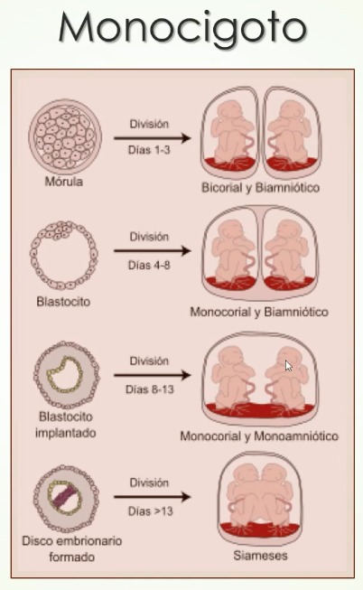
Relación entre el momento de la división embrionaria y la corionicidad/amnionicidad: división temprana → bicorial-biamniótica; días 4–8 → monocorial-biamniótica; días 8–13 → monocorial-monoamniótica; división posterior → gemelos siameses.
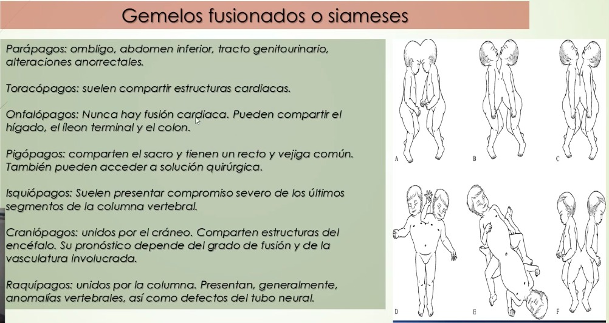
Clasificación anatómica de los gemelos unidos: parápagos, toracópagos, onfalópagos, pigópagos, isquiópagos, craneópagos y raquípagos.
La primera pregunta en cualquier embarazo gemelar es: ¿cuántos coriones y cuántos amnios? La monocorionicidad implica anastomosis vasculares y riesgo de TTTS, TAPS, TRAP y lesión del sobreviviente tras muerte de un cogemelo. La prematuridad es la principal causa de morbimortalidad; la vía de parto depende sobre todo de la presentación del primer gemelo y la experiencia del equipo.
Esta sección está reservada para: Examen Parcial.
El contenido será añadido próximamente.
Virología, ciclo de vida, persistencia, oncogénesis, correlación genotipo–enfermedad, historia natural de NIC, diagnóstico, tratamiento, prevención y esquemas vacunales. Incluye contraste de alto rendimiento con poliomavirus JC/BK.
01Generalidades y relevancia clínicaITS más frecuente, carga oncológica y conceptos que organizan el tema
// Panorama
El VPH es la infección de transmisión sexual más frecuente. Cerca de 80% de las personas sexualmente activas adquirirá algún genotipo durante la vida; la mayoría de las infecciones es subclínica y transitoria.
Es la causa necesaria de prácticamente todos los cánceres cervicouterinos y se asocia con cáncer anal, vulvar, vaginal, peneano y orofaríngeo.
El evento decisivo no es la exposición aislada, sino la persistencia por un genotipo de alto riesgo, especialmente durante más de 2 años.
La estrategia efectiva combina vacunación profiláctica antes de la exposición y tamizaje cervical para detectar lesiones precursoras.
VPH = ITS más frecuente + principal causa de cáncer cervicouterino. Harald zur Hausen recibió el Nobel de Medicina 2008 por establecer el vínculo causal.
02Virología, genoma y proteínasEstructura del virión y funciones de E1–E7, L1 y L2
// Estructura
Familia Papillomaviridae. Virus de DNA circular de doble cadena, sin envoltura, cápside icosaédrica de aproximadamente 55 nm y genoma de 7–8 kb. No codifica polimerasa propia: utiliza la RNA polimerasa del hospedador para transcripción y su DNA polimerasa para replicación.
| Proteína | Función | Correlación clínica |
|---|---|---|
| E1 | Helicasa; inicia desenrollamiento y replicación del DNA viral. | Mantenimiento del episoma. |
| E2 | Regula transcripción, segregación y empaquetamiento; reprime E6/E7. | La integración puede interrumpir E2 y desinhibir E6/E7. |
| E4 | Favorece liberación y distribución de viriones en capas suprabasales. | Fase productiva. |
| E5 | Modula adhesión/motilidad, reduce MHC-I/II y limita apoptosis por TNF/CD95L. | Evasión inmune y persistencia. |
| E6 | Favorece degradación de p53 e induce telomerasa hTERT. | Pérdida de apoptosis y senescencia. |
| E7 | Inactiva pRB, libera E2F y fuerza entrada a fase S. | Proliferación descontrolada. |
| L1 | Proteína mayor de cápside; unión a heparán sulfato/α6β4-integrina. | Antígeno altamente inmunogénico de las vacunas VLP. |
| L2 | Proteína menor; conduce el DNA viral hacia el núcleo. | Entrada y tráfico intracelular. |
E6 degrada p53; E7 inhibe pRB. La pérdida combinada de ambos supresores tumorales anula el control G1/S y constituye la base molecular de la oncogénesis.
03Ciclo de vida, tropismo y persistenciaDe la microabrasión al ensamblaje en queratinocitos diferenciados
// Ciclo dependiente de diferenciación epitelial
- Tropismo: epitelio escamoso estratificado, con predilección por la unión escamocolumnar cervical, ano y línea pectínea.
- Entrada: L1 se une a heparán sulfato/α6β4-integrina; L2 transporta el genoma al núcleo.
- Persistencia basal: el DNA permanece extracromosómico y se distribuye a células hijas.
- Fase productiva: la diferenciación del queratinocito activa E4/E5/L1/L2 y amplifica el genoma a miles de copias.
- Liberación: ensamblaje en capas suprabasales y salida con la descamación, con poca inflamación sistémica.
- Transformación: en lesiones malignas el DNA suele integrarse de forma no específica al genoma del hospedador, aumentando la expresión de E6/E7.
Evasión inmune
| Mecanismo viral | Consecuencia |
|---|---|
| ↓ TLR9 | Menor reconocimiento innato de DNA viral. |
| E6/E7 ↓ NF-κB | Menor producción de citocinas proinflamatorias. |
| E6/E7 inhiben STAT1 | Bloqueo de señalización antiviral por interferón tipo I. |
| E5/E7 ↓ HLA-I | Menor presentación antigénica a linfocitos T citotóxicos. |
| ↓ migración de células de Langerhans | Menor captación y presentación local de antígeno. |
| E5 ↓ CD1d; Treg ↑ IL-10/TGF-β | Evasión de NKT y supresión de linfocitos T efectores. |
04Genotipos y correlación clínicaBajo riesgo, alto riesgo y asociaciones clásicas
// Clasificación práctica
6 y 11: aproximadamente 90% de condilomas acuminados y papilomatosis respiratoria recurrente. No se consideran carcinógenos.
16, 18, 31, 33, 35, 39, 45, 51, 52, 56 y 59 son carcinógenos reconocidos; otros genotipos tienen evidencia probable o posible.
| Genotipo | Enfermedad asociada | Perla |
|---|---|---|
| 1, 2 | Verrugas comunes. | Cutáneos. |
| 1, 2, 4 | Verrugas plantares. | Dolor por presión. |
| 3, 10 | Verrugas planas. | Frecuentes en cara/dorso de manos. |
| 5, 8 | Epidermodisplasia verruciforme. | ≈1/3 desarrolla carcinoma escamoso en contexto genético. |
| 6, 11 | Condiloma acuminado y papilomatosis respiratoria. | Bajo riesgo oncogénico. |
| 16 | Carcinoma escamoso cervical, anal y orofaríngeo. | Genotipo más oncogénico; ≈60% de cáncer cervical. |
| 18 | Adenocarcinoma cervical. | 10–15%; curso relativamente más silente y difícil de detectar por citología. |
| 31, 33, 45, 52, 58 | Fracción adicional de cánceres por VPH. | Incluidos en vacuna nonavalente. |
| 52, 58 | Persistencia en NIC 1–2. | Puede no seguir progresión escalonada clásica. |
6/11 = verrugas; 16 = carcinoma escamoso; 18 = adenocarcinoma. Los tipos 16 y 18 explican la mayoría de los cánceres relacionados con VPH.
05Transmisión e historia naturalVías de contagio y progresión NIC 1 → NIC 3 → cáncer
// Transmisión
- Sexual/horizontal: principal vía; contacto vaginal, anal u oral con piel o mucosa infectada, incluso sin lesiones visibles.
- Piel a piel y autoinoculación: relevante para verrugas cutáneas; posible exposición en herramientas y superficies húmedas.
- Vertical/perinatal: VPH 6/11 durante el parto puede producir papilomatosis respiratoria recurrente.
- Fómites: viriones detectables en equipo y superficies, aunque la transmisión es menos eficiente.
Historia natural cervical
| Lesión | Histología | Conducta biológica |
|---|---|---|
| NIC 1 / LSIL | Displasia leve; coilocitos, binucleación y disqueratosis. | Alta regresión espontánea; bajo riesgo inmediato. |
| NIC 2 / HSIL | Displasia moderada que alcanza hasta dos tercios del epitelio. | Heterogénea; puede regresar, especialmente en inmunocompetentes, pero la persistencia exige manejo. |
| NIC 3 / HSIL | Displasia grave en más de dos tercios o espesor completo. | Mayor riesgo de progresión a carcinoma invasor. |
Vacuolización citoplasmática perinuclear con agrandamiento e irregularidad nuclear. Es el hallazgo citológico clásico de infección por VPH.
06Manifestaciones clínicasVerrugas, condilomas, papilomatosis y cánceres asociados
| Presentación | Genotipos | Clínica |
|---|---|---|
| Verrugas cutáneas | 1, 2, 3, 4, 7, 10 | Manos, plantas o cara; aparecen semanas–meses después y pueden involucionar espontáneamente. |
| Condiloma acuminado | 6, 11 | Lesiones exofíticas vulvares, peneanas o perianales; pueden confluir en “coliflor” y crecer durante embarazo o inmunosupresión. |
| Papilomatosis respiratoria recurrente | 6, 11 | Lesiones laríngeas/orales recurrentes en lactantes por transmisión perinatal o en adultos. |
| NIC/cáncer cervical | 16, 18 y otros hrVPH | Usualmente asintomático hasta enfermedad avanzada; se identifica por tamizaje. |
| Cáncer anal | 16 predominante | Mayor riesgo con VIH, inmunosupresión y exposición anal. |
| Cáncer orofaríngeo | 16 | Base de lengua/amígdalas; odinofagia, otalgia referida, disfonía, adenopatía cervical o pérdida de peso. |
07Diagnóstico y tamizajeCitología, DNA-VPH, genotipado, colposcopia y límites de cada prueba
// Herramientas diagnósticas
| Prueba | Qué detecta | Utilidad |
|---|---|---|
| Citología cervical | Coilocitosis, atipia escamosa o glandular. | Prueba de tamizaje; sensibilidad imperfecta para lesiones de alto grado. |
| Prueba molecular de hrVPH | DNA o RNA de genotipos oncogénicos. | Mayor sensibilidad; puede utilizarse como prueba primaria o en co-testing según programa. |
| Genotipado 16/18 | Identifica los genotipos de mayor riesgo. | Estratifica necesidad de colposcopia y seguimiento. |
| Colposcopia | Patrón epitelial tras ácido acético 3–5% y Lugol. | Localiza zonas acetoblancas/Lugol negativas y dirige biopsia. |
| Biopsia | Arquitectura e invasión histológica. | Confirma grado de NIC y descarta cáncer invasor. |
Esquemas del resumen fuente
| Contexto | Recomendación resumida |
|---|---|
| EUA, 21–29 años | Citología cada 3 años. |
| EUA, 30–65 años | Citología cada 3 años, co-testing cada 5 años o VPH primaria cada 5 años, según estrategia. |
| México, fuente CENETEC 2018 | Citología desde 25 años/inicio de vida sexual; en edades mayores, detección biomolecular sola o combinada según programa. |
08Tratamiento de lesiones por VPHNo existe antiviral erradicador; el manejo se dirige a la lesión
| Lesión | Manejo |
|---|---|
| Verrugas cutáneas/genitales | Agentes tópicos citotóxicos o cáusticos, crioterapia, electrocirugía o láser, seleccionados por localización, tamaño, embarazo, inmunidad y preferencia. |
| NIC 1 | Vigilancia en la mayoría; tratar si persiste, progresa o existen circunstancias clínicas específicas. |
| NIC 2/3 | Procedimiento ablativo o, con mayor frecuencia, escisional tras evaluación colposcópica adecuada. |
| Crioterapia/termoablación | Requiere lesión completamente visible, unión escamocolumnar evaluable y ausencia de sospecha de invasión. |
| LEEP | Escisión ambulatoria de la zona de transformación; proporciona espécimen histológico. |
| Conización | Incluye zona de transformación y canal endocervical; útil con discordancia, lesión endocervical o colposcopia inadecuada. |
| Carcinoma invasor | Cirugía, radioterapia y/o quimioterapia según estadio, histología y condiciones del paciente. |
09Vacunas VPH: plataforma y coberturaVLP de L1, formulaciones y mecanismo de protección
// Qué contienen y qué hacen
Las vacunas son profilácticas, recombinantes y no infecciosas. La proteína capsídica L1 se autoensambla en partículas similares al virus (VLP) sin DNA viral. Estas inducen títulos altos de anticuerpos neutralizantes que bloquean la infección de células basales tras la exposición.
| Vacuna | Valencia | Genotipos | Comentario |
|---|---|---|---|
| Cervarix | Bivalente | 16, 18 | Prevención de lesiones y cáncer por los principales tipos oncogénicos. |
| Gardasil | Cuadrivalente | 6, 11, 16, 18 | Añade prevención de la mayoría de verrugas genitales; discontinuada en EUA. |
| Gardasil 9 | Nonavalente | 6, 11, 16, 18, 31, 33, 45, 52, 58 | Mayor cobertura; única vacuna VPH utilizada actualmente en EUA. |
| Cecolin / Walrinvax | Bivalentes | 16, 18 | Productos autorizados en determinados países. |
| Cervavac | Cuadrivalente | 6, 11, 16, 18 | Producto desarrollado y autorizado en India. |
Nuevas infecciones por genotipos incluidos, verrugas por 6/11 y lesiones precancerosas/cánceres atribuibles a los tipos vacunales.
No elimina infección existente, no trata condilomas ni NIC, y no cubre todos los genotipos oncogénicos.
La vacuna se dirige a L1, no a E6/E7. Por tanto, evita la adquisición; no es una vacuna terapéutica contra células ya transformadas.
10Esquemas de vacunación: México, OMS y CDCDiferenciar política nacional, recomendación global y calendario estadounidense
// México — esquema vigente 2026
| Población | Esquema | Aplicación programática |
|---|---|---|
| Niñas y niños de 5.º de primaria o de 11 años no escolarizados | 1 dosis | Programa permanente y campañas escolares; desde 2025 la estrategia es neutral al género. |
| Niñas y adolescentes de 9–19 años en protocolo de atención por violación sexual | 1 dosis | Idealmente de forma temprana dentro de la atención integral. |
| Personas de 11–49 años que viven con VIH | 3 dosis | Grupo de riesgo con respuesta inmune potencialmente menor. |
OMS 2022
| Grupo | Esquema recomendado |
|---|---|
| 9–20 años | Una o dos dosis; la opción de dosis única facilita cobertura poblacional. |
| ≥21 años | Dos dosis con intervalo aproximado de 6 meses. |
| Inmunocomprometidos, incluidas personas con VIH | Al menos dos y, cuando sea posible, tres dosis. |
CDC/ACIP — EUA
| Inicio | Esquema |
|---|---|
| Rutina a los 11–12 años; puede iniciar desde los 9 | Si comienza antes de los 15 años: 2 dosis, a 0 y 6–12 meses. |
| Inicio a los 15–26 años | 3 dosis, típicamente a 0, 1–2 y 6 meses. |
| Inmunocompromiso entre 9–26 años | 3 dosis independientemente de la edad al inicio. |
| 27–45 años | Decisión clínica compartida; beneficio poblacional menor y no recomendación universal. |
11Administración, seguridad y situaciones especialesVía, reacciones adversas, embarazo, lactancia y vacunación tras exposición
Vía intramuscular, habitualmente en deltoides. Para disminuir síncope vasovagal en adolescentes: aplicar sentados o en decúbito y observar alrededor de 15 minutos.
Dolor, eritema o tumefacción local; cefalea, febrícula, fatiga, mareo y síncope vasovagal.
Anafilaxia a una dosis previa o a un componente. Diferir durante enfermedad aguda moderada/grave; una infección leve no suele impedir vacunación.
Puede administrarse con otras vacunas en sitios anatómicos distintos, conforme al programa local.
| Situación | Conducta |
|---|---|
| Embarazo | No se recomienda iniciar o continuar de forma programada durante el embarazo. Una dosis inadvertida no es indicación de intervención; completar después. |
| Lactancia | La vacunación es compatible con lactancia. |
| Infección previa, Papanicolaou anormal o antecedente de verrugas | Puede vacunarse: aún puede obtener protección frente a tipos no adquiridos. No requiere prueba de VPH antes de vacunar. |
| Esquema interrumpido | No se reinicia; se completan las dosis faltantes respetando intervalos mínimos aplicables. |
| Paciente vacunada | Debe continuar el tamizaje cervical de acuerdo con edad y lineamientos. |
Presentar la vacuna como vacuna anticáncer, recomendarla con la misma firmeza que otras vacunas de la adolescencia y enfatizar que funciona mejor antes del inicio de la vida sexual.
12Efectividad e impacto poblacionalQué ha cambiado tras la vacunación y por qué sigue siendo necesario el tamizaje
| Resultado reportado en el resumen | Reducción observada |
|---|---|
| Infecciones/verrugas asociadas a VPH en adolescentes de EUA | ≈86% |
| Infecciones/verrugas en mujeres adultas jóvenes | ≈71% |
| Lesiones premalignas cervicales en mujeres vacunadas | ≈40% |
| NIC 2 en 15–19 años | ≈51% |
| NIC 2 en 20–24 años | ≈31% |
Menos infección persistente y lesiones por los tipos incluidos.
La cobertura alta reduce circulación viral y protege indirectamente a personas no vacunadas.
Ninguna vacuna cubre todos los genotipos carcinógenos ni revierte lesiones previas.
La eliminación del cáncer cervical exige vacunación alta, tamizaje efectivo y tratamiento oportuno de lesiones/cáncer.
13Poliomavirus JC y BKContraste microbiológico incluido en el resumen fuente
// VPH vs. poliomavirus
| Característica | VPH | JCV/BKV |
|---|---|---|
| Familia | Papillomaviridae | Polyomaviridae |
| Virión/genoma | 55 nm; 7–8 kb | 45 nm; ≈5 kb |
| Cápside | L1, L2 | VP1, VP2, VP3 |
| Genes tempranos | E1, E2, E5, E6, E7 | Antígenos T grande, mediano y pequeño |
| Oncogénesis humana | Sí | No demostrada, pese a transformación in vitro |
| Prevención | Vacuna disponible | Sin vacuna |
Reactivación en inmunosupresión con infección de oligodendrocitos: enfermedad desmielinizante subaguda, déficits focales y lesiones de sustancia blanca, típicamente sin efecto de masa. Diagnóstico: PCR de JCV en LCR. Manejo: restaurar inmunidad/reducir inmunosupresión.
Cistitis hemorrágica tras trasplante de médula ósea y nefropatía del injerto renal. Células “señuelo” en orina, PCR plasmática y biopsia renal. Tratamiento central: reducir inmunosupresión.
JC → oligodendrocito → PML. BK → urotelio/riñón → cistitis hemorrágica y nefropatía del trasplante.
14Algoritmo y síntesis de examenCómo resolver preguntas clínicas sobre VPH y vacunación
| Pregunta | Respuesta operativa |
|---|---|
| ¿Lesión verrugosa exofítica genital? | Pensar en VPH 6/11; tratar la lesión, no existe antiviral erradicador. |
| ¿hrVPH persistente o citología anormal? | Estratificar por genotipo/citología y dirigir a colposcopia-biopsia según algoritmo vigente. |
| ¿Mecanismo oncogénico? | E6 → degradación de p53; E7 → inactivación de pRB y liberación de E2F. |
| ¿Tipo asociado a carcinoma escamoso? | VPH 16. |
| ¿Tipo asociado a adenocarcinoma? | VPH 18. |
| ¿Niña o niño de 5.º de primaria en México? | Vacuna VPH, una dosis en el esquema público vigente. |
| ¿Persona de 11–49 años con VIH en México? | Tres dosis. |
| ¿Embarazo? | Diferir dosis restantes hasta después del embarazo; no reiniciar esquema. |
| ¿Vacunada previamente? | Continuar tamizaje cervical; la vacuna no cubre todos los hrVPH. |
VPH es un virus DNA circular sin envoltura que infecta queratinocitos basales. La mayoría se aclara, pero la persistencia de alto riesgo permite integración y sobreexpresión de E6/E7, generando NIC y cáncer. La vacuna VLP-L1 previene infección por tipos incluidos, funciona mejor antes de la exposición, no trata infección existente y debe acompañarse de tamizaje.
// Fuentes integradas
Patología benigna de la porción baja del aparato genital femenino: dermatosis vulvares, lesiones inflamatorias, tumores, vulvodinia, traumatismo y trastornos vaginales/cervicouterinos.
01Dermatosis vulvaresLiquen simple crónico · liquen escleroso · liquen plano
// Comparativo de las 3 grandes dermatosis
| Característica | Liquen simple crónico | Liquen escleroso | Liquen plano erosivo |
|---|---|---|---|
| Fisiopatología | Ciclo escozor–rascado → traumatismo crónico. | Desconocida; posible componente autoinmune, genético u hormonal. | Autoinmunidad mediada por linfocitos T contra queratinocitos basales. |
| Edad típica | Cualquier edad; puede ser secundario a otra dermatosis. | Distribución bimodal: posmenopáusicas y prepúberes. | 30–60 años; ambos sexos. |
| Morfología | Liquenificación: piel gris, coriácea, bilateral/simétrica, extendida más allá de labios mayores. | Pápulas atróficas blanquecinas → placas “porcelana”; patrón en reloj de arena / en 8. | Pápulas poligonales violáceas brillantes, estrías de Wickham; erosiones profundas en vestíbulo posterior. |
| Histología | Acantosis + hiperqueratosis. | Atipia puede preceder a carcinoma epidermoide (CEC). | — |
| Asociaciones | LE, dermatitis atópica, psoriasis, irritantes. | 20–30% enfermedad autoinmune: Graves, DM1/2, LES. | Fármacos: AINE, β-bloqueadores, metildopa, penicilamina, quinina; ~25% con afectación oral concomitante. |
| Riesgo maligno | No aumentado directamente. | Sí: 5% progresa a CEC; vigilancia cada 6–12 meses de por vida. | La variante hipertrófica puede remedar CEC. |
| 1ª línea | Corticoide tópico + romper ciclo prurito–rascado (antihistamínico, uñas cortas, guantes). | Corticoide ultrapotente: clobetasol 0.05% diario → disminuir dosis. | Clobetasol 0.05% diario × 3 meses; 40% requiere más de un esquema. |
| Curso | Recurrente; requiere mantenimiento. | No existe cura; control crónico. | Recurrente crónico; mejoría parcial. |
Potencia de corticoides tópicos
| Potencia | Ejemplos clave |
|---|---|
| Ultrapotente | Clobetasol 0.05%, halobetasol 0.05%, betametasona dipropionato aumentado 0.05%. |
| Alta | Fluocinónido 0.05%, triamcinolona 0.5%, halcinónido 0.1%. |
| Intermedia | Mometasona 0.1%, hidrocortisona valerato 0.2%, fluticasona. |
| Baja | Hidrocortisona 1–2.5%, alclometasona 0.05%. |
Diagnóstico diferencial del liquen plano
| Forma | Se puede confundir con |
|---|---|
| Erosivo | Liquen escleroso, pénfigo vulgar, penfigoide de mucosas, Behçet, vulvitis de plasmocitos, eritema multiforme mayor, Stevens-Johnson, vaginitis inflamatoria descamativa. |
| Papuloescamoso | Molusco contagioso, verrugas genitales. |
| Hipertrófico | Carcinoma epidermoide. |
Apoyo visual
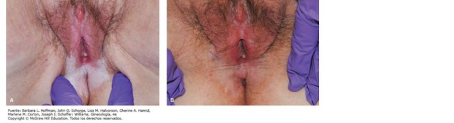
Figura 4-3 — Liquen escleroso de la vulva. A. Piel vulvar delgada y pálida, deformación de labios menores, fusión de labios mayores. B. Mejoría de la turgencia y textura tras corticoide tópico. (Williams Ginecología, 4e)
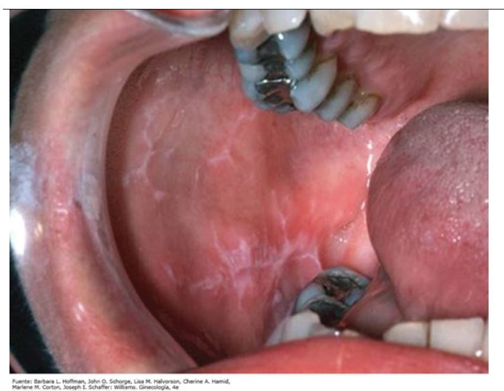
Figura 4-6 — Liquen plano de la boca: estrías blanquecinas laxas (de Wickham) en mucosa vestibular. ~25% de las mujeres con liquen plano oral tienen afectación vulvovaginal concomitante. (Williams Ginecología, 4e)
02Dermatosis inflamatoriasContacto · intertrigo · atopia · psoriasis
// Claves diagnósticas y tratamiento
| Entidad | Clave diagnóstica | Tratamiento |
|---|---|---|
| Dermatitis por contacto irritativa | Ardor/punzadas inmediatas tras exposición; 54% del prurito vulvar inexplicado. | Eliminar agente + restaurar barrera + antiinflamatorio según intensidad. |
| Dermatitis por contacto alérgica | Inicio tardío, prurito intermitente, eritema/edema/vesículas; prueba de parche. | Igual + evitar alérgeno. |
| Intertrigo | Fricción en pliegues húmedos; posible sobreinfección bacteriana/fúngica. | Polvos secantes + corticoide de baja potencia; pérdida de peso. |
| Dermatitis atópica | Primeros 5 años de vida; asociación con rinitis/asma futura. | Corticoide tópico + tacrolimús + emolientes. |
| Psoriasis | Placas rojas bien definidas, sin escama nacarada típica en vulva; empeora con estrés/menstruación y mejora con calor/embarazo. | Corticoide de alta potencia → análogos de vitamina D (calcipotrieno) → biológicos si moderada-grave. |
Algoritmo — dermatitis vulvar por contacto
Barrera: baños de asiento con agua simple 2 veces/día + vaselina. Infección primaria: antimicótico/antibiótico oral. Inflamación: corticoide tópico 1–3 semanas; sistémico si intenso. Prurito: compresas frías, yogur frío, ISRS o antihistamínico.
Apoyo visual
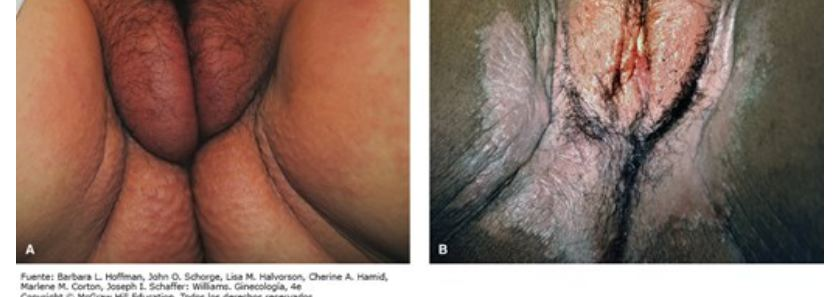
Figura 4-4 — Dermatitis por contacto vulvar. A. Reacción a iodopovidona con eritema y edema simétricos. B. Dermatitis crónica con piel gruesa y coriácea. (Williams Ginecología, 4e)
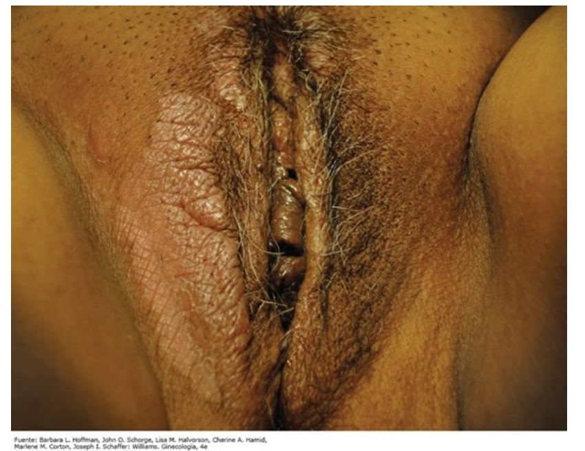
Figura 4-5 — Psoriasis vulvar: placas bien definidas, rojo oscuro, que a menudo carecen de la escama nacarada típica de otras localizaciones. (Williams Ginecología, 4e)
03Hidrosadenitis supuradaHurley y tratamiento escalonado
// Definición y clasificación
Enfermedad crónica de glándulas apocrinas con abscesos, fístulas y cicatrices, típica de axilas, ingle, región perianal/perineal e inframamaria.
| Hurley | Características |
|---|---|
| I | Lesiones inflamatorias transitorias, sin cicatriz. |
| II | Lesiones únicas/espaciadas + fístulas + cicatriz. |
| III | Afección difusa con múltiples fístulas interconectadas. |
Antibióticos orales mencionados en el resumen: tetraciclina, doxiciclina o eritromicina. La cirugía puede recurrir.
Apoyo visual
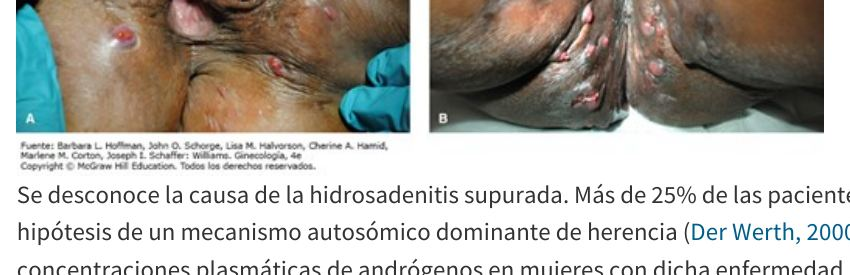
Figura 4-7 — Hidradenitis supurativa. A. Hurley etapa II: fístulas separadas con nódulos de tejido granular. B. Hurley etapa III: fístulas múltiples interconectadas con drenaje purulento. (Williams Ginecología, 4e)
04Úlceras y enfermedad sistémicaAftas · Behçet · acantosis nigricans · Crohn vulvar
| Entidad | Puntos clave |
|---|---|
| Úlceras aftosas | 25% de mujeres jóvenes; autolimitadas. Diferencial con herpes genital mediante PCR. Tratamiento: lidocaína 5%, corticoide tópico/oral; recalcitrantes → colchicina/dapsona/talidomida. |
| Enfermedad de Behçet | Vasculitis sistémica; 20–39 años; úlceras oral + genital + ocular; requiere reumatología. |
| Acantosis nigricans | Placas verrugosas pardo-negras en pliegues; asociación con resistencia a insulina, obesidad, DM y SOP; pérdida de peso + metformina. |
| Crohn vulvar | Hasta 1/3 de mujeres con Crohn; lesiones “metastásicas” no contiguas al tubo digestivo; úlceras “en corte de cuchillo” en pliegues. Tratamiento: metronidazol, anti-TNF-α. |
Apoyo visual
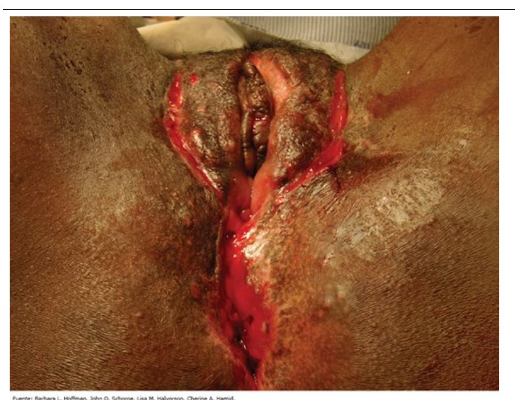
Figura 4-8 — Enfermedad de Crohn de la vulva: úlceras de bordes “nítidos” en los pliegues labiocrurales y el perineo (lesión “metastásica”, no contigua al tubo digestivo). (Williams Ginecología, 4e)
05DiscromíasNevos y vitíligo
| Característica | Nevos | Vitíligo |
|---|---|---|
| Origen | Melanocíticos: unión, compuestos, dérmicos. | Pérdida autoinmune de melanocitos. |
| Riesgo | Más de 50% de los melanomas provienen de nevo preexistente. | Ninguno; benigno. |
| Biopsia | Asimetría, pigmentación desigual, bordes irregulares, diámetro >5 mm, erosión/prurito. | No requiere salvo duda diagnóstica. |
| Asociaciones | — | Hashimoto, Graves, DM, artritis reumatoide, liquen escleroso. |
Apoyo visual
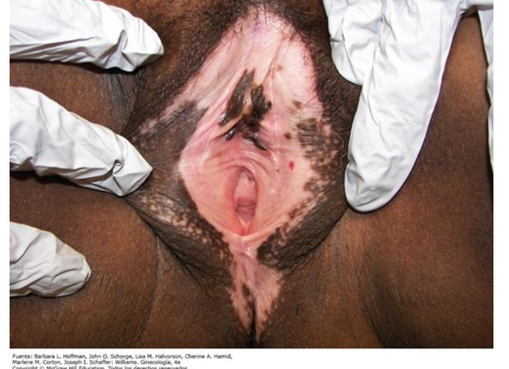
Figura 4-9 — Vitíligo vulvar: despigmentación que conserva la contextura y el contorno normal de la piel (a diferencia del liquen escleroso). (Williams Ginecología, 4e)
06Tumores vulvares sólidosOrigen y conducta
| Lesión | Origen | Conducta |
|---|---|---|
| Acrocordón | Fibroepitelial; asociado a DM. | Extirpar si irritación o duda diagnóstica. |
| Queratosis seborreica | Epidérmica. | Mínimo potencial maligno. |
| Queratoacantoma | Glándula pilosebácea; crecimiento rápido. | Extirpar por semejanza histológica con CEC, con borde de 4–5 mm. |
| Siringoma | Glándula sudorípara. | Biopsia para descartar cáncer; sin tratamiento si asintomático. |
| Leiomioma | Músculo liso. | Extirpar para descartar leiomiosarcoma. |
| Fibroma / lipoma | Tejido conjuntivo / adiposo. | Observación si asintomático. |
| Tejido mamario ectópico | Línea láctea. | Puede desarrollar patología mamaria, incluida Paget y adenocarcinoma. |
Apoyo visual
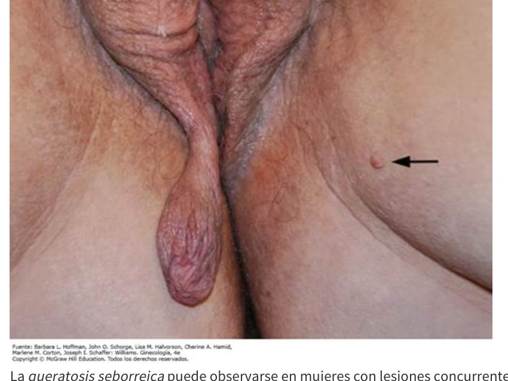
Figura 4-10 — Acrocordones en la vulva: lesiones pequeñas (flecha) que en forma típica no requieren intervención. (Williams Ginecología, 4e)
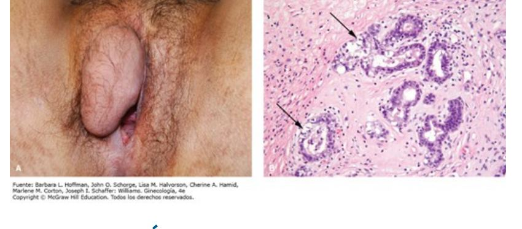
Figura 4-11 — Tejido mamario ectópico. A. Masa vulvar crónica con agrandamiento asociado a la lactancia. B. Histología con glándulas características del tejido mamario (flechas). (Williams Ginecología, 4e)
07Tumores quísticos de la vulvaBartholin · inclusión epidermoide · Skene
| Característica | Quiste / absceso de Bartholin | Quiste epidermoide de inclusión | Divertículo uretral / Skene |
|---|---|---|---|
| Causa | Obstrucción del conducto. | Unidad pilosebácea obturada o implantación traumática. | Oclusión del conducto parauretral. |
| Microorganismo típico | E. coli es el más frecuente; rara vez N. gonorrhoeae / Chlamydia. | — | — |
| Conducta | I&D o marsupialización; si >40 años → biopsia de pared para descartar carcinoma (0.1%). | Observación; I&D si sintomático/infectado. | Ver capítulo 26. |
Apoyo visual
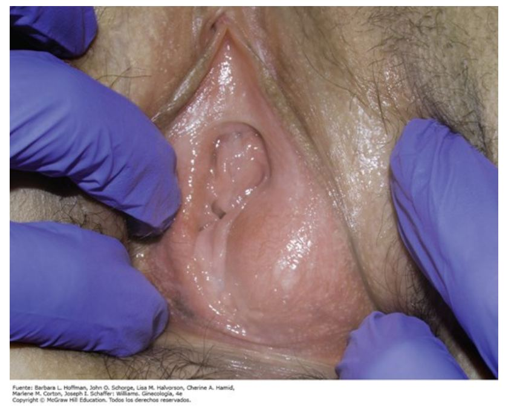
Figura 4-12 — Quiste en el conducto de la glándula de Bartholin: protuberancia simétrica en la mitad inferior izquierda del vestíbulo. (Williams Ginecología, 4e)
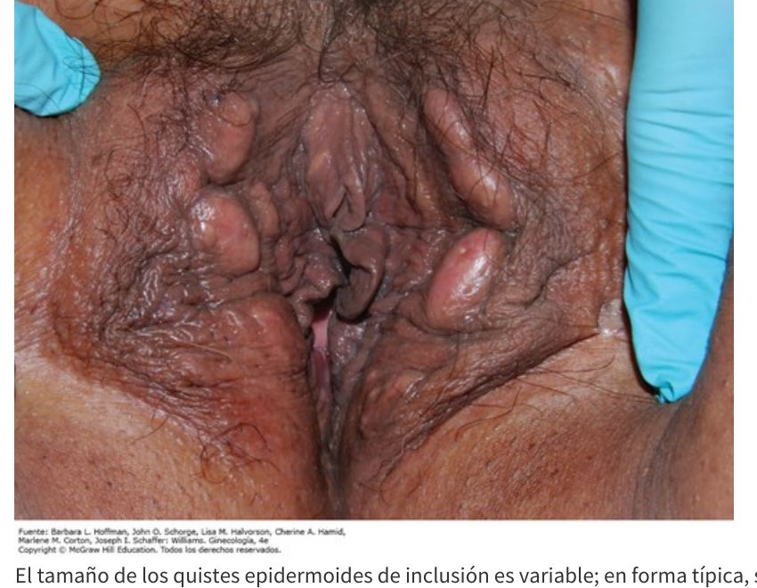
Figura 4-13 — Múltiples quistes epidermoides de inclusión, nudosos y móviles, en labios mayores internos. (Williams Ginecología, 4e)
08VulvodiniaDiagnóstico de exclusión y manejo escalonado
// Definición ISSVD 2015
Clasificación descriptiva
Localizada (vestibulodinia, clitorodinia) · generalizada · mixta.
Provocada · espontánea · mixta. Inicio primario/secundario y patrón temporal.
Tratamiento escalonado
| Escalón | Opciones |
|---|---|
| 1. Conductual / físico | Cuidados vulvares, educación, fisioterapia de suelo pélvico. |
| 2. Tópico | Lidocaína 2–5% pre-coito; gabapentina tópica 2–6%; evitar benzocaína. |
| 3. Oral — antidepresivo | Amitriptilina 5–25 mg → hasta 150 mg; duloxetina 30–60 mg. |
| 4. Oral — anticonvulsivo | Gabapentina 100 mg TID → hasta 1200 mg TID. |
| 5. Inyección local | Lidocaína + corticoide/metilprednisolona. |
| 6. Quirúrgico | Vestibulectomía / perineoplastia; mejores resultados en menores de 30 años. |
09Traumatismo vulvovaginalHematoma vulvar y desgarro vaginal
| Aspecto | Hematoma vulvar | Desgarro vaginal |
|---|---|---|
| Causa | Lesión “silla de montar”, coito, violación. | Trauma penetrante, fractura pélvica, esquí acuático. |
| Manejo conservador | Hematomas pequeños/no expansivos: hielo, analgesia, sonda Foley. | — |
| Manejo quirúrgico | Grandes/expansivos: exploración y ligadura. | Exploración bajo anestesia; descartar lesión intraperitoneal si penetra cavidad. |
Apoyo visual
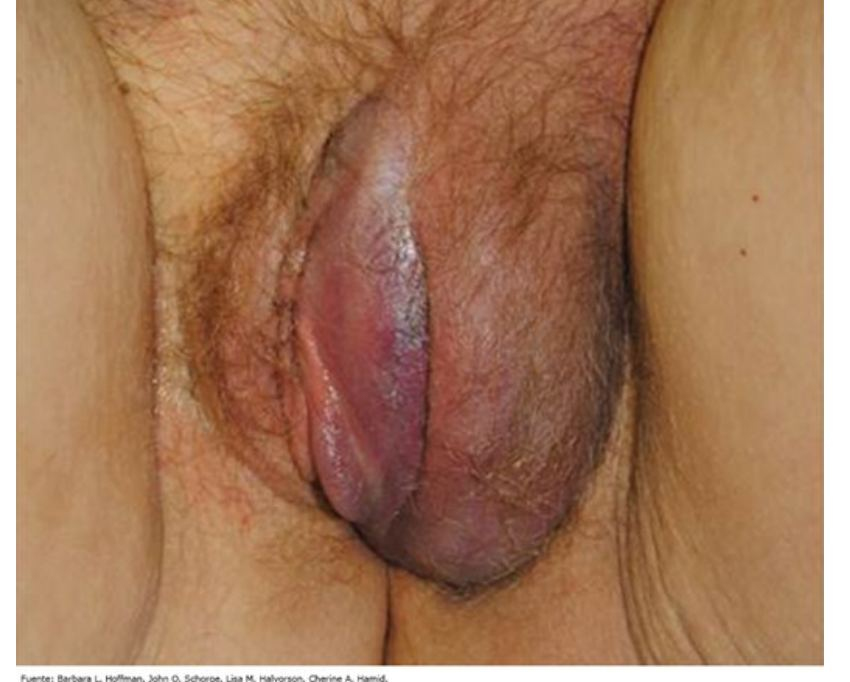
Figura 4-14 — Hematoma vulvar: masa violácea que distorsiona la anatomía de los labios, secundaria a acumulación de sangre en tejidos subcutáneos. (Williams Ginecología, 4e)
10Trastornos vaginalesCuerpos extraños · VID · adenosis · Gartner
| Entidad | Puntos clave |
|---|---|
| Cuerpos extraños | Tampón/esponja/pesario retenido → secreción fétida; no lavar por riesgo de infección ascendente; vigilar síndrome de choque tóxico. |
| Vaginitis inflamatoria descamativa (VID) | Probable variante de liquen plano vaginal erosivo; perimenopáusicas; secreción purulenta, pH alcalino, cultivos negativos para ITS. Tratamiento: clindamicina 2% o hidrocortisona intravaginal 4–6 semanas. |
| Adenosis vaginal por DES | Exposición fetal a dietilestilbestrol → epitelio cilíndrico ectópico → riesgo de adenocarcinoma vaginal de células claras. |
| Quiste del conducto de Gartner | Resto del conducto mesonéfrico (Wolff); pared lateral vaginal. Observación vs. marsupialización si sintomático. |
11Trastornos cervicouterinosEversión · Naboth · pólipo · estenosis
| Entidad | Descripción | Manejo |
|---|---|---|
| Eversión | Desplazamiento del epitelio endocervical hacia afuera, mediado por hormonas; variante normal. | Biopsia si hay dudas. |
| Quiste de Naboth | Retención de moco por epitelio escamoso cubriendo glándulas. | No requiere tratamiento salvo síntomas o dificultad para Papanicolaou. |
| Pólipo endocervical | Neoplasia benigna más frecuente del cuello; leucorrea/sangrado poscoital. | Extirpación simple. |
| Estenosis cervicouterina | Congénita (rara) o adquirida/yatrógena; 3–8% post-conización/LEEP. | Dilatadores ± misoprostol/estrógeno previo. |
Apoyo visual
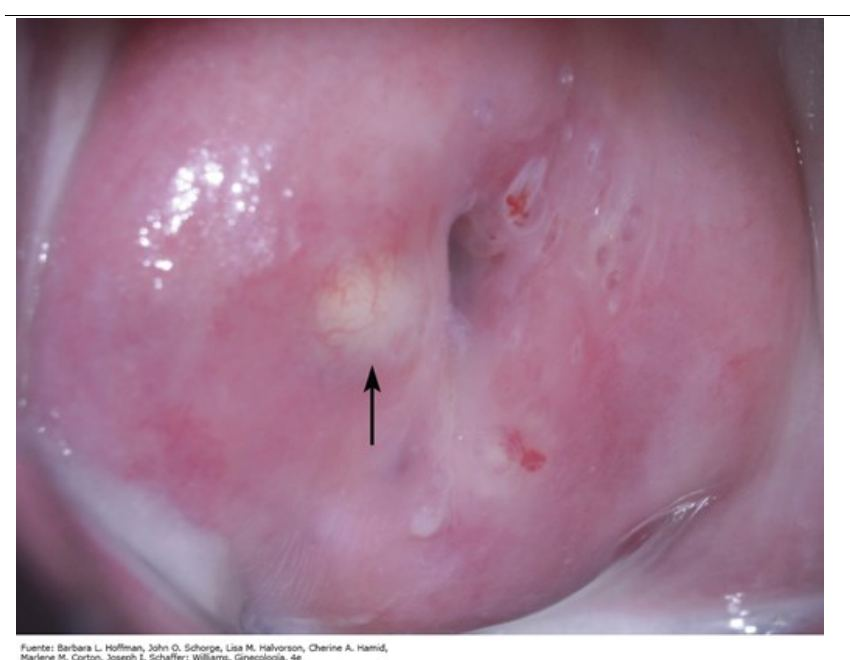
Figura 4-15 — Quiste de Naboth del cuello uterino (flecha): lesión elevada, simétrica, lisa, amarillenta o clara en el ectocérvix. (Williams Ginecología, 4e)
12Alto rendimiento para examenPerlas integradoras del capítulo
Único con riesgo real de malignización en el resumen: 5% → CEC; vigilancia de por vida cada 6–12 meses.
Ungüento > crema. Evitar testosterona tópica; precaución con tacrolimús prolongado.
Diagnóstico de exclusión: siempre descartar primero una causa específica.
Absceso/quiste en mujer >40 años → biopsiar pared.
DES → adenosis vaginal → adenocarcinoma vaginal de células claras.
Irritativa = inicio inmediato; alérgica = inicio tardío + prueba de parche.
Lesiones “metastásicas” no contiguas; úlceras en pliegues labiocrurales.
Resumen de alto rendimiento · Nivel internado / USMLE-ENARM
// 1. Clasificación por eficacia
| Nivel | Método | Uso perfecto | Uso típico |
|---|---|---|---|
| 1° · más eficaces | LNG-IUS 52 mg | 0.1 | 0.1 |
| T 380A de cobre | 0.6 | 0.8 | |
| Implante de etonogestrel | 0.1 | 0.1 | |
| Esterilización femenina | 0.5 | 0.5 | |
| Esterilización masculina | 0.1 | 0.15 | |
| 2° · muy eficaces | Comprimido combinado / anillo / parche | 0.3 | 7 |
| DMPA (inyectable) | 0.2 | 4 | |
| Progestágeno solo (POP) | 0.3 | 7 | |
| 3° · eficaces | Preservativo masculino | 2 | 13 |
| Preservativo femenino | 5 | 21 | |
| Diafragma + espermicida | 16 | 24 | |
| 4° · menos eficaces | Espermicidas | 18 | 28 |
| Esponja (multíparas / nulíparas) | 20 / 9 | 27 / 14 |
Embarazos por 100 mujeres durante el primer año de uso.
// 2. Criterios de Elegibilidad Médica (US MEC)
1 Sin restricción. 2 Las ventajas superan los riesgos.
3 Los riesgos superan las ventajas; usar con juicio clínico. 4 Riesgo inaceptable, contraindicación absoluta.
3Métodos de primera elecciónLARC y esterilización · máxima eficacia y mínima dependencia de adherencia
3.1 Dispositivos intrauterinos
Libera levonorgestrel local → atrofia endometrial, espesamiento del moco cervical y reducción de la motilidad tubaria. La inhibición de la ovulación es inconstante y no constituye el mecanismo principal. Es frecuente el manchado irregular durante los primeros 6 meses, seguido de amenorrea progresiva.
El cobre genera una reacción inflamatoria local estéril con efecto espermicida y ambiente endometrial hostil para implantación. Es un mecanismo preimplantación, no abortivo. Aprobado por 10 años y descrito como eficaz hasta 20.
| Sustancia | Dosis | Duración FDA | Color cuerda | Marca |
|---|---|---|---|---|
| Levonorgestrel | 52 mg | 5 años | Bronce | Mirena |
| Levonorgestrel | 52 mg | 5 años | Azul | Liletta |
| Levonorgestrel | 19.5 mg | 5 años | Azul | Kyleena |
| Levonorgestrel | 13.5 mg | 3 años | Bronce | Skyla/Jaydess |
| Cobre | 380 mm² | 10 años | Blanco | ParaGard |
3.2 Implante subdérmico · Nexplanon
Mecanismo principal: supresión de la ovulación; además espesa el moco cervical y produce atrofia endometrial. El efecto adverso limitante es el sangrado irregular impredecible, que no necesariamente se normaliza con el tiempo y constituye la causa más frecuente de descontinuación.
Colocación: cara interna del tríceps, 8–10 cm del epicóndilo medial y 3–5 cm medial al surco bicipital-tricipital para evitar el paquete neurovascular.
3.3 Esterilización femenina
| Aspecto | Punto clave |
|---|---|
| Técnicas | Electrocoagulación —bipolar preferida sobre unipolar—; anillo de Falope, clips Hulka-Clemens/Filshie y ligadura con sutura tipo Pomeroy/Parkland. |
| Falla | CREST: 1.3% a 10 años; mayor con coagulación unipolar y en mujeres jóvenes. |
| Salpingectomía bilateral oportunista | Puede combinar esterilización con reducción de riesgo de cáncer ovárico/peritoneal seroso; reducción descrita de 42–78% frente a ~30% con ligadura tubaria simple, sin diferencia demostrada en AMH ni aumento significativo de morbilidad quirúrgica. |
| Arrepentimiento | 20% acumulado a 14 años si se realizó a ≤30 años vs. 6% si >30 años → asesoría exhaustiva en pacientes jóvenes. |
3.4 Vasectomía
4Métodos de segunda elecciónAnticonceptivos hormonales sistémicos · CHC y progestágeno solo
4.1 Farmacología de los CHC
Etinilestradiol 10–50 µg o valerato de estradiol. Suprime FSH, estabiliza el endometrio y previene sangrado intermenstrual. Aumenta SHBG hepática → ↓ testosterona libre → beneficio en acné/hirsutismo.
Suprime LH e inhibe la ovulación —efecto principal—; además espesa el moco cervical y atrofia el endometrio.
| Presentación | Composición señalada en el resumen |
|---|---|
| Oral combinado | Estrógeno + progestágeno |
| Parche transdérmico | Norelgestromina 150 µg + EE 20 µg |
| Anillo vaginal NuvaRing | Etonogestrel 120 µg + EE 15 µg/día |
4.2 Contraindicaciones absolutas de CHC · US MEC 4
| Contraindicaciones |
|---|
| Embarazo |
| Hipertensión no controlada; fumadora >35 años |
| Diabetes con afectación vascular |
| Apoplejía o cardiopatía isquémica |
| Migraña con aura / déficit neurológico focal |
| Tromboflebitis o antecedente de ETV |
| Hemorragia genital anormal no diagnosticada |
| Cáncer de mama actual o sospechado |
| Hepatopatía activa, adenoma o carcinoma hepático |
| Cáncer endometrial u otra neoplasia estrógeno-dependiente |
4.3 Beneficios no anticonceptivos
- ↓ riesgo de cáncer endometrial y ovárico; la protección persiste años tras suspender, aunque disminuye con el tiempo.
- ↓ dismenorrea, sangrado menstrual y anemia; mejora acné e hirsutismo.
- ↓ riesgo de embarazo ectópico y de EPI sintomática.
- Tratamiento del trastorno disfórico premenstrual con formulaciones que contienen drospirenona.
4.4 Interacciones farmacológicas
4.5 Métodos solo con progestágeno
No suprime la ovulación de forma constante. Depende del espesamiento del moco cervical, cuyo efecto dura <24 h, por lo que requiere toma a la misma hora cada día; retraso >3–4 h requiere respaldo. Es segura en lactancia y cuando el estrógeno está contraindicado por riesgo cardiovascular.
Acetato de medroxiprogesterona de depósito: IM 150 mg o SC 104 mg cada 90 días. Puede causar sangrado irregular, retraso de hasta 1 año en el retorno de la fertilidad y disminución reversible de densidad mineral ósea. El resumen refiere recomendación FDA de no usar como método único >2 años si existen alternativas.
5Métodos de barrera y conocimiento de la fertilidadProtección frente a ITS, técnica correcta y adherencia
| Método | Punto de aprendizaje |
|---|---|
| Preservativo masculino de látex | Única protección eficaz dual señalada en el resumen: embarazo + ITS/VPH. Usar lubricante hidrófilo; los lubricantes oleosos degradan el látex. |
| Preservativo femenino | Alternativa en alergia al látex; mayor tasa de falla que el preservativo masculino. |
| Diafragma + espermicida | Requiere ajuste por prescripción. Dejar colocado ≥6 h después de la relación y no más de 24 h por riesgo de síndrome de choque tóxico. |
| Conocimiento de la fertilidad | Eficacia muy dependiente de la enseñanza y de la adherencia de la pareja. |
6Espermicidas y esponjaCuarto nivel · mayor dependencia de uso correcto
Barrera física + acción espermicida. Máxima eficacia <1 h tras la aplicación y requiere reaplicación en cada coito. No protege contra ITS.
Impregnada con nonoxinol-9. Puede colocarse hasta 24 h antes del coito independientemente del número de relaciones; es menos eficaz que el diafragma o el preservativo.
7Anticoncepción de urgenciaRetraso/inhibición de ovulación · no interrumpe embarazo implantado
| Método | Presentación / dosis | Ventana | Eficacia relativa |
|---|---|---|---|
| Cu-DIU · ParaGard | Inserción única | Hasta 5 días | Más eficaz; falla ~0.1% y deja LARC continuo |
| Acetato de ulipristal · Ella | 30 mg, dosis única | Hasta 120 h | Ligeramente superior a LNG; retrasa ovulación incluso cerca del pico de LH |
| Levonorgestrel · Plan B | 1.5 mg dosis única o 0.75 mg ×2 c/12 h | Óptimo 72 h; hasta 120 h | Menor eficacia en obesidad por menor biodisponibilidad |
| Método Yuzpe · CHC | EE + levonorgestrel, 2 dosis c/12 h | 72–120 h | Fracción evitada ~75%; mayor náusea/vómito, considerar antiemético |
8Integración clínica · selección rápidaCómo elegir el método a partir del problema clínico dominante
Fisiopatología endometrial, clasificación FIGO PALM-COEIN, diagnóstico y manejo agudo/crónico.
01Fisiopatología del sangrado endometrialCapas, caída de progesterona, inflamación, hemostasia y fibrinólisis
Anatomía funcional
Reservorio regenerativo del endometrio. Está irrigada por arterias basales y es relativamente insensible a las hormonas.
Es hormono-dependiente, se descama en cada menstruación y recibe flujo de arterias espirales.
La secuencia vascular es arteria uterina → arterias arqueadas → arterias radiales → ramas basales y espirales → plexo capilar subepitelial.
Mecanismo menstrual por retiro de progesterona
| Efecto del retiro de progesterona | Consecuencia clínica |
|---|---|
| ↓ factor tisular y ↓ PAI-1 | Menos hemostasia local y más fibrinólisis. |
| ↑ COX-2 y ↑ PGF2α | Vasoconstricción intensa de arteriolas espirales, isquemia, desprendimiento y limitación de la pérdida hemática. |
| Agregación plaquetaria + fibrina | GP-vWF o trombina por factor tisular detienen el sangrado. |
| ↑ glucocorticoide endometrial | Efecto antiinflamatorio que ayuda al cese del sangrado. |
02Definiciones y terminología FIGO/Munro 2018Qué es AUB, qué términos cambiaron y cómo objetivar volumen
El ciclo normal de referencia dura 28 ± 7 días, con sangrado ≤8 días y pérdida de 5-80 mL. AUB/SUA es cualquier variación de volumen, duración, frecuencia o regularidad. Puede ser agudo si requiere intervención inmediata o crónico si persiste por ≥6 meses.
| Cualidad | Normal | Anormal | Término previo |
|---|---|---|---|
| Volumen | 5-80 mL | Ligero <5 mL; copioso >80 mL | Hipomenorrea / menorragia |
| Duración | ≤8 días | Prolongada >8 días | - |
| Frecuencia | 24-38 días | Frecuente <24 d; infrecuente >38 d; amenorrea >90 d | Polimenorrea / oligomenorrea |
| Regularidad | Variación ≤7-9 días | Irregular ≥10 días de variación | - |
| Término | Definición útil |
|---|---|
| HMB | Sangrado menstrual abundante; reemplaza menorragia y suele referirse a >80 mL/ciclo. |
| Sangrado intermenstrual | Entre menstruaciones normales; reemplaza metrorragia. Si aparece tras coito, es poscoital. |
| Sangrado por supresión | Sangrado predecible por declinación súbita de progesterona. |
| DUB | Término abandonado; hoy debe buscarse una causa específica en PALM-COEIN. |
03Clasificación FIGO PALM-COEINEstructural vs. no estructural y orientación por edad
PALM separa causas estructurales visibles por imagen o histopatología; COEIN agrupa causas funcionales o sistémicas. El embarazo no pertenece al sistema, pero siempre se excluye primero.
| Categoría | Significado | Punto clave |
|---|---|---|
| P | Pólipo endometrial o endocervical | Doppler con vaso nutricio único; a diferencia del mioma submucoso, que tiene múltiples vasos. |
| A | Adenomiosis | Glándulas/estroma endometrial ectópico en miometrio. |
| L | Leiomioma | Causa estructural más común de AUB. |
| M | Malignidad / hiperplasia | Excluir en >45 años, posmenopausia o factores de riesgo. |
| C | Coagulopatía | Sospechar HMB desde la menarquia, sobre todo von Willebrand. |
| O | Disfunción ovulatoria | Patrón clásico: amenorrea intercalada con HMB. |
| E | Endometrial | Ciclos regulares/ovulatorios, anatomía normal; diagnóstico de exclusión. |
| I | Iatrogénica | DIU, anticonceptivos, anticoagulantes, tamoxifeno, valproato y antipsicóticos. |
| N | No clasificada | Istmocele, MAV, hipertrofia miometrial, endometritis crónica. |
Epidemiología por edad
Más frecuente sangrado vaginal no uterino; si es uterino, pensar en exceso estrogénico.
Anovulación y coagulopatías son desproporcionadamente frecuentes; neoplasia rara.
Menos anovulación por eje HPO maduro; suben embarazo, ITS, pólipos, miomas y adenomiosis.
Anovulación por disfunción del eje HPO y mayor riesgo neoplásico.
Suele ser benigno por atrofia o pólipos, pero siempre descartar cáncer endometrial.
04Abordaje diagnósticoExcluir embarazo/cáncer, laboratorio, imagen y biopsia
| Historia / exploración | Dato que orienta |
|---|---|
| Menarquia, FUM, anticoncepción, cronología y volumen | Ordena el patrón temporal y el riesgo reproductivo. |
| Dismenorrea | Sugiere causa estructural, infecciosa o complicación de embarazo. |
| Coito doloroso o dolor no cíclico | Sugiere causa estructural o infecciosa. |
| Historia familiar o personal de sangrado | Tamizar coagulopatía. |
| Fármacos y suplementos | AINE, anticoagulantes, hiperprolactinemiantes, ginseng, ajo, ginkgo, dong quai, hipérico. |
| Exploración | Confirmar origen uterino; descartar vaginal, rectal o uretral. |
Laboratorio inicial
| Prueba | Utilidad |
|---|---|
| β-hCG | Obligatoria en toda mujer en edad fértil con útero. |
| BH completa | Anemia y plaquetas; en pérdida crónica puede ser microcítica-hipocrómica. |
| Ferritina / hierro / CTFH | Ferropenia: ferritina y hierro bajos, CTFH alta. |
| TSH | Recomendada en AUB crónico por alteración del ciclo en hipo/hipertiroidismo. |
| GC / Clamidia | Si sospecha cervicitis mucopurulenta o endometritis. |
| PT, TTP, fibrinógeno | Si HMB desde menarquia, equimosis fácil o hemorragia posquirúrgica/posparto. |
Imagen y muestreo
| Método | Fortaleza | Limitación |
|---|---|---|
| TVS | Primer paso lógico; evalúa miometrio, anexos y grosor endometrial. | Menor sensibilidad para lesión focal vs. global. |
| SIS | Excelente para pólipos y miomas submucosos. | No distingue benigno/maligno; evitar en embarazo, infección o estenosis. |
| Biopsia Pipelle | Ambulatoria; sensibilidad >90% para hiperplasia/cáncer global. | VPN imperfecto y falsos negativos en lesiones focales. |
| Histeroscopia | Mejor para lesiones intracavitarias focales; biopsia dirigida y resección. | Más cara/invasiva; menos exacta que biopsia para hiperplasia difusa. |
| D&C | Útil en sangrado agudo grave resistente a estrógeno. | Muestreo a ciegas y efecto temporal. |
| Biopsia endometrial indicada en |
|---|
| Toda mujer posmenopáusica con AUB. |
| Mujer >45 años con AUB. |
| <45 años con fracaso de manejo médico, sangrado persistente, estrógeno sin oposición, obesidad/SOP, tamoxifeno, diabetes o predisposición genética. |
05Anormalidades endometriales P-A-L-MHiperplasia/EIN, pólipos, endometritis crónica y MAV
Espectro hiperplásico por estrógeno sin oposición
| Entidad | Histología | Riesgo de cáncer |
|---|---|---|
| Endometrio proliferativo desordenado | Relación glándula:estroma 1:1 conservada, con dilatación glandular focal leve. | Mínimo. |
| Hiperplasia sin atipia | Apiñamiento glandular difuso con citología normal. | 1-3% si no se trata. |
| EIN | Apiñamiento glandular + atipia nuclear; antes hiperplasia con atipia. | Alto; lesión premaligna verdadera. |
Transformación epitelial derivada de conductos müllerianos; benigna si las glándulas son normales, pero evaluar si coexisten atipias estructurales.
Infiltrado de células plasmáticas; asociada a vaginosis, Mycoplasma, Streptococcus, N. gonorrhoeae, C. trachomatis, DIU, pólipo o mioma submucoso. Tx: doxiciclina 100 mg VO c/12 h por 10 días.
Pólipo endometrial y endocervical
| Aspecto | Dato clave |
|---|---|
| Prevalencia | ~9% población general; 10-30% en AUB. |
| Factores de riesgo | Edad, obesidad y tamoxifeno; anticonceptivos orales son protectores. |
| Clínica | Asintomático o HMB, sangrado prolongado/intermenstrual. |
| Imagen | TVS: masa hiperecoica o engrosamiento; Doppler con vaso nutricio único. |
| Malignidad | ~5%; sube si >1.5 cm, posmenopausia, >60 años, tamoxifeno, diabetes u obesidad. |
| Manejo | Polipectomía histeroscópica si sintomático o con factores de riesgo; conservador si <10-15 mm, asintomático y bajo riesgo. |
| Pólipo endocervical | <1% malignidad; extirpar con pinzas de anillo + torsión y Monsel para hemostasia. Recurrencia 6-15%. |
06Causas no estructurales C-O-E-I-N y sistémicasCoagulopatía, ovulación, endometrio, iatrogenia, riñón, hígado y tiroides
Coagulopatía
Sospechar si hay HMB desde la menarquia, equimosis fácil, epistaxis, sangrado GI, quistes ováricos hemorrágicos recurrentes, hemorragia posquirúrgica/posparto o antecedente familiar. Tamizaje: BH + plaquetas, PT, TTP y fibrinógeno.
| Trastorno | Dato clínico/laboratorio |
|---|---|
| Enfermedad de von Willebrand | La más común; TTP prolongado o normal. Confirmar con cofactor de ristocetina, antígeno vWF y actividad FVIII. |
| Trombocitopenia | ↓ producción, ↑ destrucción por PTI o secuestro por esplenomegalia. |
| Disfunción plaquetaria | AINE/aspirina crónicos inhiben COX-1 plaquetaria. |
| Hemofilia A/B | Deficiencia FVIII/FIX; manejo con reemplazo de factor. |
Inmadurez del eje HPO, envejecimiento folicular, insuficiencia ovárica prematura, SOP, hiperplasia suprarrenal congénita, Cushing, hipotiroidismo, obesidad, hiperprolactinemia, estrés, anorexia o ejercicio extremo. Patrón: amenorrea + HMB.
Diagnóstico de exclusión en ciclos ovulatorios regulares con anatomía normal; se propone disregulación de hemostasia local o defecto de reparación endometrial.
Iatrogénica y sistémica
| Exposición / sistema | Manejo o mecanismo |
|---|---|
| DIU de cobre | AINE durante menstruación; TXA con evidencia limitada. |
| LNG-IUS | Manchado esperado al inicio; mejora por atrofia progestacional. |
| ACO combinados | Intermenstrual temprano: tranquilizar; si persiste, subir estrógeno. |
| Solo progestina | Sangrado intraterapéutico frecuente; estrógeno breve o añadir ACO 1-3 ciclos. |
| Tamoxifeno | Puede causar pólipos, hiperplasia, adenocarcinoma y sarcoma; evaluar si hay AUB. |
| Anticoagulantes | Si INR terapéutico: LNG-IUS, DMPA o progestina oral; TXA contraindicado por TEV. |
| Renal | Hipoestrogenismo/anovulación; evitar AINE. Ablación puede ser eficaz. |
| Hepática | Disfunción HPO, hiperestrogenismo, déficit de factores y trombocitopenia; evitar estrógenos si cirrosis descompensada grave. |
| Tiroides | Hipertiroidismo: ciclos ligeros/infrecuentes. Hipotiroidismo: amenorrea o AUB anovulatorio. Medir TSH en AUB crónico. |
07Manejo médico crónico: AUB-O vs. AUB-EReemplazar progesterona ausente vs. corregir hemostasia local
| Punto | AUB-O | AUB-E |
|---|---|---|
| Objetivo | Reemplazar la progesterona fisiológica ausente. | Corregir hemostasia y reparación endometrial local. |
| Progestágeno cíclico oral | Eficaz: 10 días/mes con MPA 5-10 mg, NETA 5-10 mg o progesterona micronizada 300 mg. | Relativamente insensible; requiere esquemas prolongados días 5-26. |
| Si desea anticoncepción | ACO, LNG-IUS, DMPA o implante de etonogestrel. | LNG-IUS reduce 74-97% la pérdida; también ACO. |
| Ácido tranexámico | Menos protagonismo. | Reduce 40-50% el sangrado; usar solo durante menstruación. |
| AINE | Adyuvante. | Reduce ~25% y mejora dismenorrea concomitante. |
| Ablación | Cautela: puede dificultar vigilancia futura en obesidad/SOP/anovulación crónica. | Opción razonable si falla el manejo médico. |
Arsenal farmacológico para AUB-E crónico
| Fármaco | Dosis clave |
|---|---|
| LNG-IUS | Uso intrauterino hasta 5 años. |
| TXA | 1.3 g VO c/8 h por 5 días durante la menstruación. |
| Ácido mefenámico | 500 mg VO c/8 h por 5 días. |
| Naproxeno | 550 mg día 1, luego 275 mg/día. |
| NETA | 5 mg VO c/8 h, días 5-26. |
| Agonistas GnRH | 3.75 mg IM/mes, máximo 6 meses; limitados por pérdida ósea. |
| Danazol / gestrinona | 2.ª línea; eficaces, pero con efectos androgénicos. |
08Sangrado uterino anormal agudo graveReanimación, terapia hormonal, TXA y balón intrauterino
El manejo combina reanimación con líquidos y hemoderivados si procede, tratamiento hormonal/antifibrinolítico simultáneo y, si se necesita puente mecánico, balón de sonda Foley intrauterino con aproximadamente 30 mL de solución salina.
| Esquema | Dosis inicial | Notas |
|---|---|---|
| Estrógenos equinos conjugados IV | 25 mg IV c/4 h, hasta 3 dosis. | Transición a ACO o Premarin oral con reducción lenta; antiemético coadyuvante. |
| ACO combinados | 1 tableta c/6 h hasta controlar. | Luego reducción c/8 h → c/12 h → diario. Suele ceder en 24-48 h. |
| MPA dosis altas | 10 mg VO c/4 h. | Alternativa cuando estrógeno a dosis altas no es ideal; reducción lenta. |
| TXA IV | 10 mg/kg, máximo 600 mg/dosis c/8 h. | Transición a VO 1.3 g c/8 h al mejorar. |
09Procedimientos quirúrgicosD&C, ablación, embolización e histerectomía
| Procedimiento | Rol | Consideraciones |
|---|---|---|
| D&C | Control rápido de sangrado agudo grave resistente a estrógeno. | Efecto temporal; no es tratamiento definitivo. |
| Ablación / resección endometrial | HMB crónico refractario a manejo médico. | 70-80% mejoran; 15-35% logran amenorrea; ~25% requiere reintervención a 5 años. Contraindicada si desea fertilidad, embarazo, riesgo alto de cáncer o cavidad deformada. |
| Embolización de arteria uterina | Miomas, MAV o sangrado grave si rechaza hemoderivados. | Requiere canulación femoral/radial; limitada si hay coagulopatía. |
| Histerectomía | Tratamiento definitivo/curativo. | Mayor eficacia y satisfacción, pero más complicaciones peri/posoperatorias; hasta 1/3 de úteros extirpados son anatómicamente normales. |
10Integración clínica y perlas de examenReglas de oro, errores frecuentes y algoritmo mental
| Regla de oro | Aplicación |
|---|---|
| β-hCG primero | Ante AUB en mujer en edad fértil, excluir embarazo antes de clasificar. |
| Posmenopausia | AUB posmenopáusica es cáncer endometrial hasta demostrar lo contrario. |
| Doppler | Vaso nutricio único sugiere pólipo; múltiples vasos desde miometrio sugieren mioma submucoso. |
| Grosor ≤4 mm | En posmenopáusica con sangrado, VPN >99% para cáncer si bajo riesgo. |
| Amenorrea + HMB | Piensa anovulación / AUB-O. |
| HMB desde menarquia | Piensa enfermedad de von Willebrand. |
| Error frecuente | Evitarlo así |
|---|---|
| Usar TXA junto con ACO o con riesgo de TEV | Buscar alternativas y valorar riesgo trombótico. |
| Dar AINE en nefropatía | Recordar vasoconstricción renal y preferir otra opción. |
| Asumir causa por patrón cíclico/no cíclico | El patrón no es específico; integrar edad, examen, laboratorio e imagen. |
| Olvidar TSH/coagulopatía | Tamizarlas en AUB crónico sin causa estructural evidente. |
| Ablación en deseo de fertilidad o alto riesgo oncológico | Evitarla como primera línea en estos escenarios. |
Menciones clínicas dentro de la evaluación psicosocial, la función sexual femenina y la pérdida perinatal.
01Tamizaje en la evaluación psicosocialModelo biopsicosociocultural y anamnesis ginecológica de rutina
// Detección sistemática
El capítulo ubica el maltrato dentro de la evaluación psicosocial rutinaria de toda paciente. No lo plantea como un protocolo aislado ni solo ante sospecha clínica, sino como parte de la anamnesis psiquiátrica/psicosocial ginecológica.
| Componente | Dato que debe explorarse |
|---|---|
| Sociales | Maltrato sexual, físico o emocional, actual o pasado; también preferencia sexual y satisfacción con la relación actual. |
| Antecedentes reproductivos | Contexto de síntomas premenstruales, embarazo, pérdida de embarazo, posparto o perimenopausia, porque el trauma puede manifestarse o reactivarse en estas etapas. |
02Impacto en la función sexual femeninaVictimización sexual, abuso físico y disfunción sexual
// Antecedente de trauma como factor de riesgo
Dentro de la anamnesis de disfunción sexual femenina, el resumen señala que la victimización sexual previa o el abuso físico aumentan el riesgo de disfunción sexual femenina. Este antecedente debe considerarse junto con la calidad de la relación, el funcionamiento sexual de la pareja y la ansiedad por el desempeño.
La ansiedad relacionada con el rendimiento sexual puede aumentar la tensión de la musculatura vaginal y provocar dolor o vaginismo.
El antecedente de abuso puede aparecer como bajo deseo, evitación, dificultad de excitación o malestar durante la actividad sexual.
| Elemento de anamnesis | Por qué importa |
|---|---|
| Victimización sexual previa | Factor de riesgo explícito para disfunción sexual femenina. |
| Abuso físico | Puede coexistir con trauma sexual o emocional y modificar la respuesta sexual. |
| Relación de pareja | La satisfacción, seguridad y comunicación influyen en deseo, excitación y dolor. |
| Ansiedad de desempeño | Puede amplificar dolor, tensión vaginal y evitación sexual. |
03PTSD y respuesta sexualComorbilidad psiquiátrica y mecanismo dolor-vaginismo
// Trastorno de estrés postraumático
El PTSD aparece en el capítulo dentro de los trastornos psiquiátricos que pueden afectar negativamente la respuesta sexual. Se menciona junto con trastornos del estado de ánimo, ansiedad, abuso de sustancias, trastornos alimentarios y trastornos de síntomas somáticos.
04Pérdida perinatal y traumaPTSD tras nacimiento, pérdida del embarazo o interrupción
// Duelo y apoyo psicológico
En el contexto de pérdida perinatal, traumatismo e interrupción del embarazo, puede requerirse tratamiento psicológico si aparecen síntomas de PTSD en las semanas posteriores al nacimiento o a la pérdida del embarazo.
| Conducta comunicacional | Objetivo clínico |
|---|---|
| Hablar de manera directa y con lenguaje comprensible | Reducir incertidumbre y facilitar comprensión de lo ocurrido. |
| Compartir información útil | Dar sensación de control y aliviar temores. |
| Dedicar tiempo adicional y mostrar prioridad | Favorecer el proceso de duelo y la percepción de acompañamiento. |
| Preguntar qué necesita y desea la paciente | Evitar generalizaciones; el duelo es individual. |
| Psicoterapia conjunta o familiar | Ayudar cuando la pareja o hijos tienen dificultad para comunicar necesidades emocionales y dolor. |
05Integración clínica y high-yieldCómo aplicarlo en consulta y examen
// Dos mensajes centrales
El maltrato sexual, físico o emocional, actual o pasado, debe formar parte sistemática de la historia ginecológica/obstétrica dentro del dominio social del modelo biopsicosociocultural.
Ante disfunción sexual, dolor, bajo deseo, vaginismo o síntomas psiquiátricos tras pérdida perinatal, considerar antecedente de abuso y PTSD como posibles factores subyacentes.
| Escenario | Respuesta de alto rendimiento |
|---|---|
| Paciente sin signos obvios de maltrato | Aun así se indaga de manera directa y rutinaria dentro de la evaluación psicosocial. |
| Disfunción sexual femenina | Explorar victimización sexual previa, abuso físico, relación de pareja, funcionamiento sexual de la pareja y ansiedad por desempeño. |
| Dolor sexual o vaginismo | Considerar ansiedad, tensión de musculatura vaginal y antecedente traumático. |
| PTSD tras pérdida perinatal | Ofrecer manejo psicológico individual, de pareja o familiar según necesidad. |
| Plan terapéutico | Enfoque multidisciplinario; no reducir el problema a tratamiento farmacológico o ginecológico aislado. |
Fisiología que conecta las pruebas de reserva/ovulación con la inducción ovulatoria, los protocolos de estimulación y la reproducción asistida.
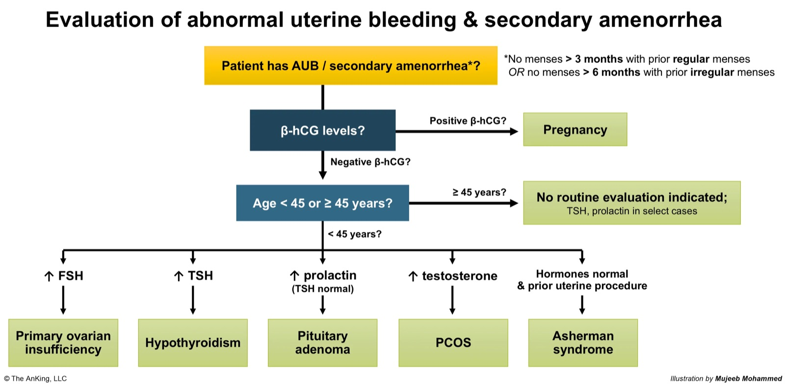
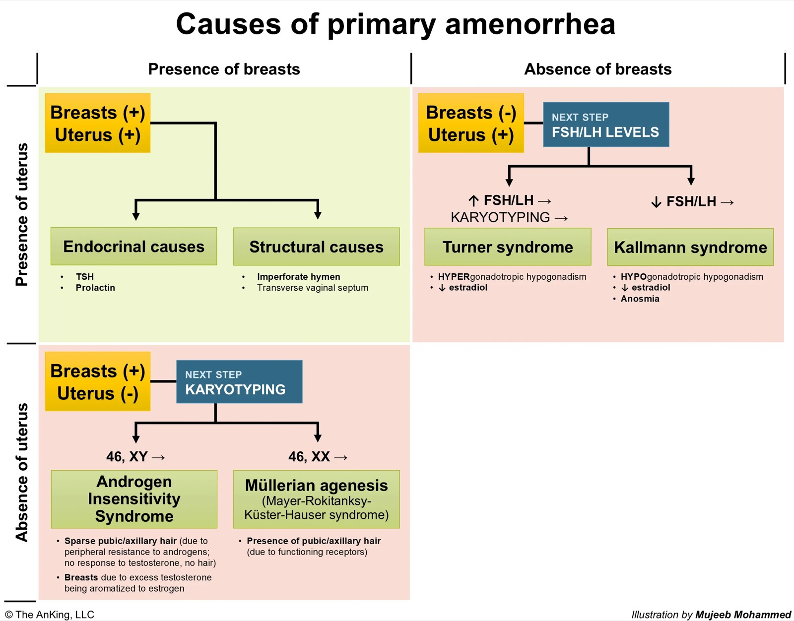
Algoritmos visuales para orientar amenorrea secundaria y causas de amenorrea primaria. (AnkiHub / The AnKing; ilustraciones de Mujeeb Mohammed.)
01Eje hipotálamo–hipófisis–ovarioPulsatilidad de GnRH, feedback y patrones de hipogonadismo
// Eje H-H-O y secreción pulsátil de GnRH
GnRH pulsátil
LH + FSH
Foliculogénesis + esteroidogénesis
Feedback
La GnRH continua desensibiliza las células gonadotrofas y suprime gonadotropinas: base de agonistas de GnRH de depósito y de protocolos largos de COS. Pulsos rápidos favorecen LH; pulsos lentos favorecen FSH. En SOP, el aumento de la frecuencia de pulsos favorece una proporción LH/FSH elevada.
La mayor parte del ciclo, estradiol e inhibina B ejercen retroalimentación negativa. Estradiol ≥200 pg/mL sostenido ~50 h cambia a feedback positivo y desencadena el pico preovulatorio de LH.
Hipogonadismo hipogonadotrópico
Alteraciones funcionales (trastornos de alimentación, ejercicio excesivo, estrés) o estructurales (tumores, infiltración, lesión hipofisaria) reducen GnRH, LH, FSH y esteroides ováricos. Se distingue de insuficiencia ovárica primaria porque aquí las gonadotropinas están bajas o inapropiadamente normales con estradiol bajo; en disfunción ovárica primaria están elevadas por pérdida del feedback negativo.
02Gonadotropinas y hCGReceptor LH/CG, cinética y disparo ovulatorio
// LH, FSH y hCG
LH, FSH y hCG son heterodímeros con subunidad α común y subunidad β específica. La β-hCG comparte ~80% de homología con β-LH, pero tiene una extensión de 24 aminoácidos. LH y hCG se unen al mismo receptor LH/CG en teca y cuerpo lúteo; la hCG tiene mayor afinidad y semivida más prolongada, por lo que sustituye funcionalmente a LH para la maduración final del ovocito y el rescate lúteo.
| Concepto | Dato del resumen |
|---|---|
| Detección sérica | 7–9 días después del pico de LH. |
| Embarazo temprano | Se duplica aproximadamente cada 2 días. |
| Pico | ~100 000 mUI/mL al final del primer trimestre. |
| Ascenso inadecuado | Orienta a embarazo ectópico o aborto en evolución. |
| Concentraciones muy altas | Sugieren embarazo múltiple o enfermedad trofoblástica gestacional. |
| Efecto de gancho | hCG extremadamente alta puede saturar el inmunoanálisis y producir resultado falsamente bajo/negativo, p. ej. mola completa. |
Disparo en COS: hCG vs agonista de GnRH
| hCG | Agonista de GnRH | |
|---|---|---|
| Mecanismo | Mimetiza el pico de LH con efecto prolongado. | Induce pico endógeno de LH + FSH, de menor duración. |
| SHO | Mayor riesgo por estímulo lúteo sostenido. | Menor riesgo. |
| Fase lútea | Más sostenida. | Luteólisis temprana; exige soporte lúteo intensivo. |
| Aplicación | Puede usarse en distintos protocolos. | Requiere eje intacto: protocolo con antagonista; base de estrategia freeze-all en alto riesgo. |
03Dos células–dos gonadotropinasEsteroidogénesis y correlación con SOP
// Teoría bicelular
CYP17
Aromatasa CYP19
La granulosa carece de CYP17 y depende de los andrógenos tecales como sustrato. En SOP, pulsos rápidos de GnRH favorecen LH: la teca produce más andrógenos mientras la FSH relativamente baja limita aromatización; el microambiente intrafolicular androgénico favorece atresia folicular, hiperandrogenismo y anovulación crónica. La proporción LH/FSH elevada apoya, pero no es obligatoria para el diagnóstico.
04Fisiología integrada del cicloReclutamiento, ovulación, fase lútea y rescate por hCG
// Reclutamiento y folículo dominante
La cohorte que ovulará inicia su reclutamiento 2–3 ciclos antes. Un ascenso de FSH rescata típicamente 3–11 folículos por ovario; conforme producen estradiol e inhibina B, la FSH cae. El folículo con más receptores FSH y mejor vascularización (VEGF) tolera la caída y se vuelve dominante. Por ello, FSH de día 3 elevada y AMH baja predicen mala respuesta a estimulación.
| Fase | Días (28 d) | Evento hormonal dominante |
|---|---|---|
| Folicular temprana | 1–5 | ↓ estrógeno/progesterona/inhibina del ciclo previo → ↑ FSH → reclutamiento. |
| Folicular tardía | 6–13 | Selección del folículo dominante; ↑ estradiol; ↓ FSH por feedback negativo. |
| Ovulatoria | ≈14 | Estradiol ≥200 pg/mL sostenido → feedback positivo → pico de LH → ovulación 36–40 h después. |
| Lútea | 15–28 | Progesterona dominante (pico d. 21–22); cuerpo lúteo; rescate por hCG si hay embarazo. |
El pico de LH dura en promedio ~48 h; la ovulación ocurre 36–40 h después de su inicio. LH reinicia meiosis, expande el cumulus oophorus, induce prostaglandinas y luteinización. Tras ovulación, el cuerpo lúteo produce hasta 40 mg/día de progesterona; >3–4 ng/mL en día 21 confirma que ocurrió ovulación. Sin implantación hay luteólisis hacia día 9–11 posovulatorio. Con implantación, hCG rescata el cuerpo lúteo hasta el desplazamiento lúteo-placentario (~7–10 semanas), fundamento del soporte con progesterona tras transferencia embrionaria en FIV.
05HiperprolactinemiaCausa corregible de anovulación y adenomas hipofisarios
// Prolactina y anovulación
La prolactina está bajo inhibición tónica dopaminérgica. Su exceso altera la secreción pulsátil de GnRH y suprime foliculogénesis, produciendo oligo/amenorrea con o sin galactorrea.
Embarazo, hipotiroidismo primario (TRH elevada estimula lactotrofas), fármacos antagonistas de dopamina/antidepresivos, estimulación de pared torácica y macroadenomas no secretores con compresión del tallo.
Prolactina sérica matutina; repetir elevación leve. RM si se confirma. Primera línea: agonistas dopaminérgicos — cabergolina mejor tolerada y semanal; bromocriptina más estudiada en embarazo. Cirugía si resistencia o efecto de masa.
| Célula / hormona | Relevancia en esterilidad |
|---|---|
| Lactotrofas — PRL | Galactorrea; anovulación/hipogonadismo. Adenoma hipofisario sintomático más frecuente en mujeres en edad reproductiva. |
| Gonadotrofas — LH/FSH | Casi siempre asintomático; rara vez hipogonadismo por compresión del tallo. |
| Corticotrofas / tirotrofas | Cushing o tirotoxicosis; ambos pueden cursar con irregularidad menstrual. |
06Farmacología aplicadaClomifeno, letrozol y análogos de GnRH
// Liberar el feedback negativo
SERM con antagonismo predominante hipotalámico. Bloquea receptor de estrógeno → el eje interpreta hipoestrogenismo → ↑ GnRH → ↑ FSH → reclutamiento folicular.
Inhibe aromatasa CYP19 → ↓ conversión de andrógenos a estrógenos → libera feedback negativo central → ↑ FSH. No antagoniza receptor estrogénico endometrial; preserva mejor endometrio y moco cervical y favorece desarrollo monofolicular.
| Característica | Agonistas de GnRH | Antagonistas de GnRH |
|---|---|---|
| Mecanismo | “Flare” inicial → regulación descendente/desensibilización. | Bloqueo competitivo inmediato del receptor. |
| Inicio de supresión | 1–2 semanas; pretratamiento, protocolo largo. | Horas; se agrega a mitad de estimulación, protocolo corto. |
| Disparo posible | Solo hCG mientras persiste desensibilización. | hCG o agonista de GnRH; eje intacto. |
| Riesgo SHO | Mayor. | Menor cuando permite disparo con agonista. |
07Genética, integración y high-yieldReceptores, AIS, HAC no clásica y correlación prueba–fisiología
// Bases genéticas
Mutaciones LH/CG o FSH-R: resistencia variable a gonadotropinas, desde amenorrea primaria hasta oligomenorrea/infecundidad, con hormonas elevadas pero respuesta ovárica inadecuada pese a reserva aparentemente normal en imagen.
Síndrome de insensibilidad a andrógenos (AIS): 46,XY con mutación inactivante del receptor androgénico; genitales externos femeninos, vello axilar/púbico escaso y ausencia de útero/trompas por AMH normal; suele presentarse como amenorrea primaria.
Hiperplasia suprarrenal congénita no clásica: deficiencia leve de 21-hidroxilasa → exceso androgénico, hirsutismo, acné y anovulación; fenocopia del SOP que se descarta con 17-hidroxiprogesterona.
De la fisiología a la prueba/tratamiento
| Fisiología | Aplicación clínica |
|---|---|
| Estradiol/inhibina B frenan FSH | FSH día 3 elevada = reserva disminuida. |
| AMH refleja folículos preantrales/antrales | Marcador más temprano de declive; independiente del ciclo. |
| Progesterona domina fase lútea | >3–4 ng/mL día 21 confirma ovulación; soporte lúteo tras FIV. |
| Dos células–dos gonadotropinas | Explica hiperandrogenismo/anovulación de SOP y base de LOD. |
| Clomifeno/letrozol liberan feedback negativo | Inducción de ovulación. |
| Agonista vs antagonista GnRH | Protocolo largo vs corto; disparo y riesgo de SHO. |
| hCG comparte receptor con LH | Disparo ovulatorio, embarazo y efecto de gancho. |
| PRL excesiva suprime GnRH | Hiperprolactinemia como causa endocrina corregible. |
High-yield — Capítulo 0
| Dato | Cifra / concepto |
|---|---|
| Estradiol para pico LH | ≥200 pg/mL sostenido ~50 h. |
| Pico LH / ovulación | ~48 h; ovulación 36–40 h tras inicio. |
| Progesterona día 21 | >3–4 ng/mL. |
| Producción progesterona lútea | Hasta 40 mg/día. |
| LH + hCG | Receptor LH/CG; hCG mayor afinidad y semivida. |
| Teoría bicelular | LH → teca → andrógenos; FSH → granulosa/CYP19 → estrógenos. |
| Clomifeno / letrozol | Antagonismo RE / inhibición aromatasa → ↑ FSH. |
| Agonista GnRH como disparo | Solo con eje intacto (protocolo antagonista) → ↓ SHO. |
| Causa hormonal reversible de anovulación | Hiperprolactinemia → agonista dopaminérgico. |
| AIS 46,XY | Receptor androgénico mutado; útero/trompas ausentes; vello escaso. |
Evaluar simultáneamente ovulación, anatomía reproductiva femenina y factor masculino.
Algoritmos visuales para orientar amenorrea secundaria y causas de amenorrea primaria. (AnkiHub / The AnKing; ilustraciones de Mujeeb Mohammed.)
01Definiciones, epidemiología y etiologíaCuándo estudiar, fecundidad, ventana fértil y regla de los tercios
// Definiciones fundamentales
Incapacidad de lograr embarazo tras 12 meses de coito regular sin protección.
Sin embarazo previo.
Esterilidad después de una concepción previa, aunque no haya llegado a término.
Fecundidad: capacidad biológica de concebir; probabilidad mensual normal 20–25% y >85% de las mujeres logran embarazo durante el primer año. La mayoría de las parejas son subfecundas, no verdaderamente estériles. Obstrucción tubaria bilateral confirmada y azoospermia son excepciones que no deben esperar.
Prevalencia: 10–15% de parejas en edad reproductiva. Sin tratamiento, ~50% concibe espontáneamente hacia el segundo año.
Etiología
Regla conceptual de los tercios: mujer, varón y factores combinados/inexplicables; siempre se estudian ambos.
| Causa | Incidencia aproximada |
|---|---|
| Factor masculino | 25% |
| Disfunción ovulatoria | 27% |
| Factor tubario/uterino | 22% |
| Otras causas | 9% |
| Inexplicable | 17% |
5 días previos a la ovulación + día de ovulación. Probabilidad máxima 1–2 días antes. Con semen normal, coito diario en esta ventana maximiza la probabilidad sin reducción clínicamente relevante del recuento.
02Riesgos, historia clínica y exploraciónFactores modificables y pistas etiológicas en mujer y varón
// Factores de riesgo modificables
| Factor | Efecto sobre fecundidad |
|---|---|
| Obesidad IMC >35 | 2× tiempo para concebir; disfunción ovulatoria y peor calidad ovocitaria. |
| Bajo peso IMC <19 | 4× tiempo para concebir. |
| Tabaquismo | RR 1.6; acelera depleción folicular y aumenta mutaciones gaméticas. |
| Alcohol >2/día | RR 1.6. |
| Sustancias ilícitas | RR 1.7. |
| Toxinas/EDC | RR 1.4: dioxinas, bifenilos, plaguicidas, bisfenol A, plomo. |
| Cafeína >250 mg/d | 45% de disminución de capacidad de fecundación; evidencia mixta. |
Historia dirigida
Ciclo (25–35 d, duración 3–7 d sugiere ovulación), mittelschmerz, síntomas premenstruales, dismenorrea intensa → endometriosis, dispareunia, anticonceptivos previos, embarazos y complicaciones, ETS/EPI, endometriosis, leiomiomas; hiperPRL/tiroides, hiperandrogenismo, quimio/radioterapia, cirugías abdominales/pélvicas y conización.
Desarrollo puberal, función sexual, disfunción eréctil/hipotestosteronemia, hipospadias, criptorquidia (fecundidad 80% unilateral, 50% bilateral tratada), torsión, parotiditis adulta, ETS/epididimitis/prostatitis, varicocele, cimetidina/eritromicina/gentamicina/tetraciclina/espironolactona/anabólicos, quimio/radioterapia y ejercicio extremo.
Exploración física
| Hallazgo | Sospecha |
|---|---|
| Talla baja | Turner |
| Hirsutismo/acné/alopecia | Hiperandrogenismo — SOP |
| Acantosis nigricans | Resistencia a insulina (SOP, DM2) |
| Galactorrea | Hiperprolactinemia |
| Útero hipertrófico/irregular | Leiomiomas |
| Útero fijo / nódulos uterosacros | Endometriosis / cicatrices pélvicas |
| Ginecomastia / fenotipo eunucoide | Klinefelter |
| Testículo <4 cm o <20 mL | Espermatogénesis probablemente anormal |
| Plenitud epididimaria | Obstrucción deferente |
| Ausencia bilateral de deferentes | Mutación CFTR |
Además, actualizar tamizaje de CaCu, confirmar cultivos negativos para N. gonorrhoeae y C. trachomatis antes de manipulación cervicouterina y realizar mamografía si está indicada antes del tratamiento hormonal.
03Ovulación y reserva ováricaCómo confirmar ovulación y cómo predecir respuesta a estimulación
// Valoración de la ovulación
| Método | Interpretación |
|---|---|
| Historia menstrual | Ciclos 25–35 d: mejor predictor clínico. |
| Temperatura basal | Patrón bifásico, ↑0.175–0.178 °C posovulatorio; poco sensible y detecta después de ventana fértil. |
| LH urinaria | Detecta pico; ovulación ~1 día después. Método más usado. |
| Progesterona mesolútea / d21 | >3–4 ng/mL sugiere ovulación; sin corte absoluto validado. |
| Biopsia endometrial | Ya NO es valoración sistemática por alta variabilidad. |
| US ovárico seriado | Confirma colapso folicular; lento y poco práctico. |
// Reserva ovárica
Ovulación regular no garantiza reserva adecuada. DOR y POI son independientes del estado ovulatorio y se asocian con edad, tabaquismo, cirugía ovárica, quimio/radioterapia y causas genéticas.
| Marcador | Punto clave |
|---|---|
| FSH día 3 | >10 mUI/mL sugiere reserva disminuida; el resumen indica que ya no se recomienda estradiol simultáneo. |
| AMH | Independiente del ciclo; marcador MÁS TEMPRANO de declive; se correlaciona mejor con folículos primordiales; 2–3× elevada en SOP. |
| RFA/AFC | Normal 10–20; <3–6 predice mala respuesta, con baja sensibilidad. |
| Inhibina B / prueba de clomifeno | Ya no se recomiendan. |
Estas pruebas predicen mejor la respuesta a COS/FIV que el embarazo espontáneo. Una reserva “normal” no elimina el efecto de la edad sobre la fecundidad.
04Trompas, útero, pelvis y cérvixHSG, SIS, histeroscopia, laparoscopia y patología uterina
// Comparación anatómica
| Método | Trompas | Cavidad | Congénitos | Endometriosis/adherencias | Ovarios |
|---|---|---|---|---|---|
| HSG | + | + | − | +/− | − |
| TVS | − | +/− | +/− | − | + |
| TVS 3-D | − | + | + | − | + |
| SIS | − | + | + | − | + |
| RM | − | + | + | + (endometrioma) | + |
| Histeroscopia | − | + | + con laparoscopia | − | − |
| Laparoscopia | + | − | + con histeroscopia | + | + |
Histerosalpingografía
Estudio inicial estándar en días 5–10. Para obstrucción tubaria: sensibilidad 65%, especificidad 83%; espasmo cornual causa falsos positivos frecuentes. Para patología intracavitaria, sensibilidad ~98% pero especificidad ~35%; hallazgo positivo se confirma con SIS o histeroscopia. Contraste hidrosoluble se prefiere por menor riesgo alérgico; el oleoso podría aumentar embarazo espontáneo posterior por “efecto de lavado”.
Laparoscopia
Diagnóstico + tratamiento de endometriosis/adherencias; no es inicial por invasividad. Se reserva ante sospecha de endometriosis/EPI o HSG anormal. Permite cromotubación con azul de metileno.
| Anomalía uterina | Punto clave |
|---|---|
| Tabique uterino | Resección histeroscópica. |
| Útero bicorne | No cirugía de rutina. |
| Leiomiomas submucosos | Deforman cavidad; considerar resección si >4–5 cm o múltiples; valorar adherencias posoperatorias. |
| Pólipos | Resección si sintomáticos; en asintomáticas mejora embarazo tras IIU incluso <1 cm. |
| Asherman | Adherencias; típico tras legrado + infección; lisis histeroscópica. |
Factor cervical
Moco estrogénico filante y fluido facilita ascenso y sirve de reservorio 24–72 h. Prueba poscoital Sims-Huhner en desuso; cirugía cervicouterina previa o moco insuficiente → pasar directamente a IIU.
05Factor masculinoEspermatogénesis, seminograma, endocrinología y genética
// Fisiología y seminograma
Espermatogénesis ~74 días (70 de producción + 12–21 de maduración epididimaria); el análisis refleja aproximadamente los últimos 3 meses. Requiere testosterona intratesticular alta: LH actúa en Leydig y FSH aumenta receptores LH y proteína transportadora de andrógenos. Volumen testicular normal 15–25 mL.
Recolección: masturbación tras 2–3 días de abstinencia; analizar dentro de la primera hora.
| Parámetro | Límite OMS del resumen |
|---|---|
| Volumen | >1.5 mL |
| Concentración | >15 millones/mL |
| Motilidad total | >40% |
| Morfología Kruger | >4% formas normales |
| Leucocitos | <1 millón/mL |
| Células redondas | <5 millones/mL |
Terminología
| Término | Definición |
|---|---|
| Oligospermia | <15 M/mL; grave <5–10 M/mL. |
| Astenospermia | Motilidad reducida. |
| Teratospermia | Formas morfológicamente anormales. |
| Azoospermia | Semen presente sin espermatozoides (~1%). |
| Aspermia | Ausencia de eyaculado. |
| Leucospermia | >1 M leucocitos/mL; sugiere epididimitis/prostatitis. |
| Necrospermia | Todos inmóviles/no viables. |
Azoospermia obstructiva: lesión de conductos, testículo funcional y espermatogénesis conservada. No obstructiva: insuficiencia testicular primaria, aunque pueden recuperarse espermatozoides aislados para FIV/ICSI.
Fragmentación de DNA espermático, anticuerpos antiespermatozoide y pruebas funcionales no se recomiendan de rutina / están en desuso según el resumen.
Hormonas
| Patrón | Interpretación |
|---|---|
| FSH baja + testosterona baja | Disfunción hipotalámica / Kallmann; tratable con gonadotropinas. |
| FSH alta + testosterona baja | Disfunción testicular primaria; causa frecuente de oligospermia. Testosterona exógena NO mejora espermatogénesis y suprime el eje. |
Imagen: US escrotal para varicocele/quistes/abscesos; US transrectal/RM para próstata, vesículas seminales y obstrucción proximal. Biopsia testicular en oligo/azoospermia para confirmar espermatozoides viables y criopreservar para FIV/ICSI.
06Genética, algoritmo y high-yieldCFTR, AZF, Klinefelter y los tres pilares de estudio
// Detección genética
Portadores preconcepcionales: fibrosis quística, atrofia muscular espinal, talasemias y hemoglobinopatías, ampliable según etnia/antecedentes. En POI: cariotipo (el resumen menciona mosaicismo de trisomía 21) y premutación de X frágil, sobre todo con historia familiar.
Oligospermia grave <5 M/mL o azoospermia no obstructiva → cariotipo. Klinefelter 47,XXY. Recuento muy bajo con cariotipo normal → microdeleciones Y (AZF). CBAVD: 70–85% con CFTR; estudiar también a la pareja.
| Hallazgo | Prueba / pronóstico |
|---|---|
| Azoospermia no obstructiva | Cariotipo anormal ~15%. |
| Oligospermia grave | Cariotipo anormal ~5%. |
| AZFa/AZFb | Mal pronóstico para recuperación espermática. |
| AZFc | Suelen existir espermatozoides viables. |
| CBAVD | CFTR 70–85%; función testicular normal; recuperación epididimaria + FIV/ICSI. |
Algoritmo integrador
En mujeres de mayor edad, añadir reserva ovárica desde el inicio. Si no hay concepción tras pocos meses de tratamiento dirigido, completar la evaluación porque pueden coexistir dos anormalidades.
High-yield — Capítulo 1
| Dato | Clave |
|---|---|
| Esterilidad | 12 meses; 6 meses si >35 años. |
| Prevalencia | 10–15%. |
| Etiología | ≈1/3 mujer, 1/3 varón, 1/3 combinada/inexplicable. |
| Ventana fértil | 5 días previos + día de ovulación. |
| Reserva temprana | AMH. |
| FSH día 3 | >10 mUI/mL. |
| HSG | Sens 65% / esp 83% para obstrucción. |
| Tabique vs bicorne | Tabique se reseca; bicorne no de rutina. |
| Espermatogénesis | ~74 días. |
| Concentración seminal | >15 M/mL. |
| Criptorquidia | Fecundidad 80% unilateral / 50% bilateral tratada. |
| Klinefelter | 47,XXY; 1–2% esterilidad masculina. |
| CBAVD | 70–85% CFTR. |
| FSH alta + T baja | Falla testicular; no dar testosterona exógena. |
Tratamiento causal, inducción de ovulación, complicaciones y corrección anatómica/masculina.
Algoritmos visuales para orientar amenorrea secundaria y causas de amenorrea primaria. (AnkiHub / The AnKing; ilustraciones de Mujeeb Mohammed.)
01Principios + estilo de vida + endocrinopatíasIndividualizar por edad, duración y etiología
// Principios generales
El tratamiento depende de duración, edad —especialmente materna— y causa. Si existe una causa obvia puede tratarse de forma dirigida y completar el estudio si no hay concepción rápida. Cuando no hay causa corregible, ART ofrece opciones eficaces, con mayor tasa de algunas complicaciones maternofetales, costo/estrés y dilemas éticos. Deben presentarse todas las alternativas, incluido manejo expectante y adopción.
| Factor | Recomendación / evidencia del resumen |
|---|---|
| Obesidad + SOP | Pérdida 5–10% del peso puede restaurar ovulación; dieta + ejercicio primera línea. Considerar diferir tratamiento hasta IMC <35 si hay riesgos quirúrgicos o multifetales. |
| Cirugía bariátrica | Diferir concepción 1–2 años; valorar deficiencias nutricionales. |
| Bajo peso/desnutrición | Equilibrio energético es clave; muchas recuperan función al ganar peso. |
| Ejercicio | Evidencia insuficiente para recomendar/eliminar si no hay disfunción ovárica ni bajo peso. |
| Nutrición | Ácido fólico 400 µg/día. Antioxidantes, carnitina, dieta alta en proteína y MTC/acupuntura sin evidencia sólida. |
| Estrés | No fármacos; asesoría + meditación pueden ayudar en ansiedad marcada. |
Endocrinopatías
Hiperprolactinemia: tratar con agonista dopaminérgico tras excluir causas fisiológicas/farmacológicas/secundarias; cirugía si adenoma resistente o grande. En embarazo, el resumen indica suspender en microadenoma y mantener bromocriptina si macroadenoma ≥10 mm.
Hipotiroidismo: el resumen lo describe 4–5× más frecuente en mujeres; incluso subclínico se asocia a disfunción ovárica y recomienda tamizaje/tratamiento de cualquier intensidad en quien busca tratamiento de infertilidad.
02Inducción de ovulaciónCC, metformina, gonadotropinas y letrozol
// Fármacos
| Fármaco | Esquema / mecanismo | Punto clave |
|---|---|---|
| Clomifeno | 50 mg/d ×5 días iniciando días 3–5; subir 50 mg/ciclo a mínima dosis ovulatoria. SERM → bloquea feedback → ↑GnRH/FSH. | Tratamiento inicial del resumen. Máximo aprobado 100 mg/d, aunque menciona hasta 250 mg. FDA X. Embarazo acumulado 25–50%; 84% de embarazos en primeros 3 ciclos ovulatorios. Falla a 100 mg o no embarazo tras 3–6 ciclos → cambiar. |
| Metformina | 500 mg TID u 850 mg BID. | Mejora ovulación/respuesta a CC en SOP con RI, pero no tasa de nacidos vivos en ensayo citado (Legro 2007). |
| Gonadotropinas | Segunda línea; dosis mínima para un folículo dominante; US + estradiol seriado. | Riesgo hiperestimulación/multifetal. Ascendente 50–75 UI/d con incrementos graduales = menor hiperrespuesta; descendente = más corta, mayor riesgo. |
| Letrozol | 2.5–5 mg/d ×5 días; inhibe aromatasa → ↓E₂ → ↑FSH. | Mayor tasa de embarazo que CC, sobre todo SOP; menor multifoliculación. Preocupación teratogénica histórica no confirmada; fabricante mantiene advertencia. |
| Anastrozol | Inhibidor aromatasa. | Alternativa sin ventaja demostrada sobre CC. |
Preparaciones gonadotrópicas
| Preparación | Derivación | FSH | LH/hCG |
|---|---|---|---|
| Folitropina alfa/beta/delta/gamma | FSH recombinante | Sí | Ninguna |
| Menotropina hMG altamente purificada | Urinaria purificada | Sí | hCG |
En ART se combinan con análogos de GnRH para evitar el pico prematuro de LH.
03Complicaciones de inducciónSHO/OHSS y gestación múltiple
// Síndrome de hiperestimulación ovárica
Diagnóstico clínico; US muestra ovarios multiquísticos agrandados y ascitis.
| Grado | Características |
|---|---|
| 1 | Distensión y dolor abdominal. |
| 2 | Grado 1 + náusea/vómito/diarrea; ovarios 5–12 cm. |
| 3 | Ascitis por ecografía. |
| 4 | Ascitis clínica + hidrotórax o disnea. |
| 5 | + hipovolemia, hemoconcentración, hipoperfusión renal y coagulopatía. |
Tratamiento: sostén, paracentesis transvaginal, reposición isotónica y tromboprofilaxis en graves. Prevención: bajar FSH, coasting, reducir/evitar hCG, agonista GnRH como trigger en protocolo antagonista, freeze-all, cabergolina periovulatoria.
Gestación múltiple
Riesgo más frecuente y clínicamente relevante de inducción. Gemelos monocigóticos tras inducción/ART: mortalidad perinatal 3–5× y anomalías congénitas 2–3× respecto a dicigóticos. Retener hCG por umbral de E₂/folículos reduce, pero no elimina el riesgo (~30% persiste). La estrategia más eficaz es FIV + transferencia electiva de un solo embrión (eSET).
04SOP resistente + reserva ovárica reducidaLOD y límites de respuesta a gonadotropinas
// Perforación ovárica laparoscópica
Alternativa para SOP anovulatorio resistente al manejo médico. Sustituyó a la resección en cuña. Destruye tejido productor de andrógenos → ↓ andrógenos/LH, ↑ FSH y mejora ambiente intrafolicular. Riesgos: adherencias y posible reducción de reserva; reservar tras fracaso farmacológico.
// Reserva disminuida
FSH basal día 2–3 >15 UI/L predice poca utilidad de gonadotropinas exógenas → considerar ovodonación o manejo expectante. AMH <1 ng/mL predice mala respuesta, aunque algunas pacientes aún se benefician de ART.
05Corrección anatómica y cervicalTrompas, hidrosalpinge, útero, endometriosis y adherencias
// Factor tubario
| Situación | Tratamiento / pronóstico |
|---|---|
| Obstrucción proximal corta / tapón | Canalización tubaria selectiva o histeroscópica, primera opción. |
| Proximal no resuelta | Resección segmentaria + reanastomosis o FIV. |
| Reversión de salpingoclasia | Reanastomosis vs FIV; ectópico posterior 3–5%. |
| Obstrucción distal por EPI | Neosalpingostomía; embarazo ≤50%, alto ectópico y recurrencia. |
| Hidrosalpinge >3 cm / daño extenso | Salpingectomía antes de FIV; hidrosalpinge no tratado reduce ~50% el éxito. |
Útero
Leiomiomas: miomectomía en seleccionadas si grandes/deforman cavidad; histeroscopia para intracavitarios. Pólipos: polipectomía antes de IIU duplica embarazo (63.4% vs 28.2%, RR 2.1), por lo que el resumen recomienda resecar todo pólipo. Asherman: lisis histeroscópica; obliteración completa del fondo = peor pronóstico; si no corregible, considerar gestación subrogada o trasplante uterino.
Peritoneo
Endometriosis mínima/leve: evidencia limitada para ablación; preferir superovulación + IIU en estadios I–II. Moderada/grave con distorsión: cirugía; si restaura anatomía, intentar embarazo espontáneo 6–12 meses antes de FIV. Endometrioma: el resumen prefiere ablación de pared frente a quistectomía por menor daño de reserva, individualizando. Adherencias: lisis mejora embarazo 32–45% a 12–24 meses vs 11–16%; recurren; sin evidencia de beneficio de barreras antiadherencias; mal pronóstico → FIV.
Cérvix
Cervicitis crónica: doxiciclina 100 mg VO c/12 h ×10 d. Moco escaso: estrógenos a corto plazo ± guaifenesina, eficacia no confirmada. En práctica se omite prueba de moco y se procede a IIU.
06Factor masculino + inexplicable + IIUTratamiento por fenotipo y escalamiento empírico
// Corrección del factor masculino
| Trastorno | Conducta |
|---|---|
| Aspermia / aneyaculación | Asesoría psicológica; sildenafilo si DE; estimulación vibratoria/electroeyaculación; espermatozoides recuperados suelen requerir ICSI. |
| Eyaculación retrógrada / hipospermia | Pseudoefedrina u α-adrenérgico; si falla, IIU con espermatozoides de orina posteyaculación alcalinizada. |
| Obstrucción del conducto eyaculador | Resección transuretral; considerar criopreservación previa. |
| Azoospermia obstructiva | Reparación quirúrgica posible. |
| CBAVD | No corregible → TESE + ICSI; estudiar CFTR en pareja. |
| Azoospermia no obstructiva | TESE + ICSI posible; AZFa/AZFb = mal pronóstico. |
| Oligospermia + hipogonadismo hipogonadotrópico | FSH + hCG; CC/inhibidor aromatasa off-label si obesidad/E₂ alto; esperar meses (~100 d espermatogénesis en tratamiento). |
| Astenospermia | Sin tratamiento dirigido eficaz; si <1 M móviles o >5 años → ICSI directo. |
| Teratozoospermia | IIU o ART; preferir ICSI por defectos funcionales asociados. |
| Varicocele | Ligadura o embolización; evidencia insuficiente de mejora con tratamiento de varicocele subclínico. |
Infertilidad inexplicable
Hasta 30%; más frecuente con evaluación incompleta. Manejo expectante si corta duración y mujer joven, o escalamiento: IIU → IIU + superovulación → FIV.
IIU
Semen lavado/concentrado en espermatozoides móviles se introduce transcervical cerca de ovulación. Indicaciones: factor cervical, factor masculino leve-moderado e infertilidad inexplicable. En ciclo natural con LH urinaria: ~11% por ciclo; útil para factor cervical puro. Con superovulación: tasas mayores; preferida en inexplicable y factor masculino.
Secuencia de FIV, indicaciones de ICSI, preservación de fertilidad, pruebas genéticas y complicaciones.
01FIV e ICSIFlujo del procedimiento y factor masculino
// Fertilización in vitro
10–20 ovocitos
idealmente 1
La transferencia es transcervical guiada por ecografía. ICSI: un solo espermatozoide se inyecta directamente al ovocito; técnica preferida en infertilidad por factor masculino y permite embarazo incluso con azoospermia si se recuperan espermatozoides quirúrgicamente.
02Técnicas asociadasDonación, subrogación, INVOcell, criopreservación e IVM
Óvulo fertilizado al útero de otra mujer; factor uterino no corregible, riesgo materno alto o pérdida recurrente inexplicable. Implicaciones legales variables.
El resumen lo describe como experimental; infertilidad uterina absoluta (agenesia/histerectomía), inmunosupresión y FIV obligatoria; primer nacido vivo reportado en 2015.
Reserva/insuficiencia ovárica muy baja o riesgo genético materno; sincronizar endometrio con estrógeno/progesterona.
Técnicas históricas laparoscópicas, mayormente sustituidas por FIV; reservadas sobre todo por objeciones éticas/religiosas a fertilización extracorpórea.
Fertilización/maduración en dispositivo intravaginal; ensayos del resumen reportan tasas comparables a incubadora y menor costo potencial.
Vitrificación de embriones/ovocitos/tejido; transferencia diferida y preservación antes de quimioterapia. Tejido ovárico señalado como experimental por posible reintroducción tumoral, especialmente leucemias.
Ovocitos inmaduros de ovarios no estimulados maduran in vitro; útil en SOP para evitar SHO, con éxito menor que FIV convencional; experimental según el resumen.
03PGTAneuploidía, monogénicas y reordenamientos estructurales
// Pruebas genéticas preimplantación
| Tipo | Objetivo |
|---|---|
| PGT-A | Aneuploidías; indicaciones propuestas: aborto recurrente, edad materna avanzada, fallas repetidas de FIV. |
| PGT-M | Enfermedad monogénica conocida en la pareja; indicación establecida. |
| PGT-SR | Translocaciones equilibradas y alteraciones cromosómicas estructurales. |
Biopsia preferida: trofoectodermo en blastocisto, permite analizar varias células sin tocar masa celular interna; requiere criopreservación mientras se procesa. NGS se ha adoptado ampliamente por precisión y reducción de costos según el resumen.
04Complicaciones + high-yieldRiesgo obstétrico de ART y cifras clave de examen
// Complicaciones ART
Embarazo múltiple = riesgo más frecuente y evitable mediante eSET. Incluso en gestación única por FIV, el resumen reporta incrementos modestos de algunos desenlaces.
| Complicación | RR aproximado vs espontáneo |
|---|---|
| Parto prematuro | 1.70 |
| Bajo peso <2500 g | 1.65 |
| Complicaciones placentarias | 2.81 |
| Hipertensión del embarazo | 1.22 |
| Mortalidad neonatal | 1.67 |
| Defecto mayor al nacimiento | 1.25 |
Es controvertido cuánto se atribuye a ART vs características de la pareja subfértil. Al ajustar por edad y otros factores, varios estudios dejan de mostrar un aumento claro de malformaciones. Se han descrito trastornos de impronta raros, como Beckwith-Wiedemann. Desarrollo cognitivo y socioemocional: en general similar al de concepción natural.
High-yield — Capítulo 2
| Dato | Clave |
|---|---|
| Inducción inicial del resumen | Clomifeno 50 mg ×5 días, iniciar d3–5. |
| Clomifeno | FDA X; contraindicado en embarazo. |
| Metformina en SOP | Mejora ovulación, NO nacidos vivos en ensayo citado. |
| Inhibidor aromatasa | Letrozol; mayor embarazo que CC, sobre todo SOP. |
| SHO | hCG → VEGF → permeabilidad → hemoconcentración. |
| Prevenir SHO alto riesgo | Antagonista GnRH + trigger agonista. |
| Hidrosalpinge antes de FIV | Salpingectomía; aproximadamente duplica éxito frente a hidrosalpinge no tratado. |
| Polipectomía antes de IIU | 63% vs 28% embarazo. |
| Factor masculino ART | ICSI. |
| CBAVD | TESE + ICSI. |
| Evaluar respuesta masculina | ~100 días. |
| Inexplicable | Hasta 30%. |
| Evitar embarazo múltiple | eSET. |
| Biopsia PGT | Trofoectodermo en blastocisto. |
Transición menopáusica, síntomas vasomotores, terapia hormonal, salud ósea y síndrome genitourinario de la menopausia.
01Definiciones y STRAW +10Menopausia, transición menopáusica y estadificación alrededor del FMP
// Marco conceptual
Diagnóstico retrospectivo tras 12 meses de amenorrea por agotamiento folicular ovárico. Edad promedio: 51.5 años.
Desde la primera irregularidad menstrual hasta 1 año después del cese permanente. Inicio promedio: 47 años; duración 4-8 años.
Cese menstrual antes de los 40 años con FSH elevada; requiere buscar causas cromosómicas, autoinmunitarias, infecciosas, iatrogénicas o metabólicas.
| Etapa | Clave clínica |
|---|---|
| -2 | Transición temprana: ciclos aún regulares, pero variación de al menos 7 días respecto al ciclo previo; FSH puede elevarse por caída de inhibina B. |
| -1 | Transición tardía: al menos 2 ciclos omitidos y 1 intervalo intermenstrual de al menos 60 días; anovulación y síntomas más intensos. |
| +1a | Primer año tras el FMP; cesa la progesterona ovárica y el E2 fluctúa mientras desciende. |
| +1b | Años 2-5 posmenopausia; cede la esteroidogénesis ovárica, se abre el feedback negativo y GnRH, FSH y LH alcanzan máximos. |
| +2 | Posmenopausia tardía: el estrógeno principal proviene de aromatización periférica en tejido adiposo. |
02Fisiología de la transiciónReserva folicular, eje H-H-O y sangrado uterino anormal
// Ovario y eje hormonal
35-45 años
~5 años antes
↑ FSH temprana
↑ GnRH/LH/FSH
El punto de alto rendimiento es que la FSH sube primero por caída de inhibina B, no por caída inicial de estradiol. En la TM temprana, el E2 puede fluctuar e incluso ser alto por sobreestimulación folicular; la caída sostenida aparece al final de la transición.
La AMH y el recuento folicular antral caen de forma marcada antes de la menopausia. No diagnostican menopausia, pero sí ayudan a valorar reserva ovárica en infertilidad.
La testosterona se mantiene relativamente estable, pero al disminuir la SHBG posmenopausia aumenta la fracción libre biodisponible de andrógenos y estrógenos.
Endometrio y SUA
En etapas tempranas aún hay ciclos ovulatorios; en etapas tardías predomina la anovulación, con estrógeno sin oposición de progesterona. Esto produce proliferación endometrial desordenada y aumenta el riesgo de hiperplasia/carcinoma. Todo SUA en transición menopáusica obliga a descartar cáncer endometrial con biopsia.
03Síntomas vasomotoresFisiopatología hipotalámica, clínica y factores de riesgo
// Sofocos y sudoración nocturna
Los SVM aparecen en 11-60% durante la TM y hasta 50% en posmenopausia. Duran en promedio 7 años e inician alrededor de 2 años antes del FMP. La menopausia quirúrgica por ooforectomía es el factor de riesgo con mayor impacto: inicio más abrupto e intenso, con sofocos en hasta 90% durante el primer año.
| Dato clínico | Patrón típico |
|---|---|
| Duración del episodio | 1-5 minutos. |
| Piel | Aumento de temperatura cutánea en manos/pies; vasodilatación periférica. |
| Sudoración | Presente en alrededor de 90% de los episodios. |
| Frecuencia cardiaca | Taquicardia leve, aproximadamente +7 a +15 lpm. |
| Termorregulación | Noradrenalina y serotonina participan; neuronas KNDy del núcleo arqueado sustentan los antagonistas NK3R. |
04Terapia hormonal menopáusicaWHI, ventana de oportunidad, indicaciones, riesgos y elección de régimen
// Ventana de oportunidad
El WHI estudió principalmente mujeres mayores, con edad promedio cercana a 63 años y más de 10 años posmenopausia. De ahí surge la hipótesis del tiempo: el estrógeno puede tener perfil más favorable si se inicia cerca de la menopausia, pero más riesgo vascular si se inicia tarde, con ateroesclerosis establecida.
| Desenlace | Riesgo asociado |
|---|---|
| Cáncer de mama | Aumento leve con EPT por más de 4-5 años; ET sola no aumentó el riesgo en WHI. |
| Coronariopatía | Riesgo mayor si inicia después de los 60 años o más de 10 años posmenopausia; neutra/protectora cerca de la menopausia. |
| ACV | Aumenta con vía oral; el riesgo absoluto en menores de 60 años es bajo. Vía transdérmica en dosis bajas parece más segura. |
| TEV | Casi se duplica con estrógeno oral; transdérmico sin aumento claro en estudios observacionales. |
| Endometrio | ET sin oposición aumenta riesgo en mujeres con útero; EPT continuo diario protege. |
| Demencia | No se indica para prevención cognitiva; WHIMS mostró mayor riesgo al iniciar en edad avanzada. |
Indicaciones y contraindicaciones
SVM molestos, GSM, prevención de osteoporosis y hipoestrogenismo por hipogonadismo, menopausia quirúrgica o IOP.
SUA sin diagnóstico, cáncer de mama conocido/sospechado, neoplasia dependiente de estrógeno, TEV/ACV/IAM/AIT activo o previo, trombofilia, hepatopatía activa, HTA no tratada o embarazo.
| Situación | Régimen preferido |
|---|---|
| Sin útero | Estrógeno solo (ET), oral o transdérmico. |
| Con útero | Estrógeno + progestágeno (EPT) obligatorio para protección endometrial; continuo diario o TSEC. |
| Riesgo CV/obesidad/TEV | Preferir vía transdérmica. |
| Solo GSM | Estrógeno vaginal en dosis baja; no requiere progestágeno concomitante de rutina. |
No hay límite de duración arbitrario solo por edad: usar dosis mínima eficaz y reevaluar periódicamente.
05Salud ósea y osteoporosisRANK/RANKL/OPG, DEXA, FRAX y tratamiento farmacológico
// Fisiopatología ósea
2-5%/año inicial
RANKL de osteoblastos activa RANK en precursores osteoclásticos; OPG actúa como señuelo. El hipoestrogenismo aumenta resorción y sensibilidad ósea a PTH, con mayor liberación de calcio por unidad de PTH.
| Categoría OMS | Puntaje T |
|---|---|
| Normal | +2.5 a -1.0 |
| Osteopenia | -1.0 a -2.5 |
| Osteoporosis | ≤ -2.5 |
| Osteoporosis avanzada | ≤ -2.5 + fractura por fragilidad |
DEXA se recomienda en mujeres de al menos 65 años, posmenopáusicas con factores de riesgo o cualquier fractura nueva después de los 50 años. FRAX estima riesgo de fractura a 10 años. Puntaje T compara contra masa ósea pico; puntaje Z compara con pares de edad/peso y orienta a causas secundarias si Z <-2.0.
| Tratamiento | Mecanismo / clave |
|---|---|
| Bisfosfonatos | Primera línea; inhiben osteoclastos. Riesgos raros: osteonecrosis mandibular y fractura femoral atípica con uso prolongado. |
| Denosumab | Anticuerpo anti-RANKL SC cada 6 meses; al suspender debe seguir antirresortivo por pérdida ósea rápida. |
| Raloxifeno / bazedoxifeno | SERM: agonista en hueso, antagonista en mama/útero; útil en fractura vertebral, con aumento de TEV. |
| Teriparatida / abaloparatida | Análogos de PTH intermitente; efecto anabólico osteoblástico. |
| Romosozumab | Anti-esclerostina por 12 meses y luego antirresortivo; alerta por riesgo cardiovascular. |
06Síndrome genitourinarioAtrofia vulvovaginal, síntomas urinarios y tratamiento local
// GSM
GSM reemplaza el término atrofia vulvovaginal porque integra síntomas vaginales, urinarios y sexuales. A diferencia de los SVM, suele ser progresivo sin tratamiento y afecta aproximadamente a la mitad de las mujeres posmenopáusicas.
El hipoestrogenismo adelgaza el epitelio escamoso vaginal, reduce flujo sanguíneo y colágena, acorta/estrecha la vagina, pierde rugosidad y eleva el pH vaginal (>4.6).
Resequedad, dispareunia, prurito, sangrado poscoital, urgencia/frecuencia urinaria e infecciones urinarias recurrentes.
| Nivel | Opción |
|---|---|
| 1ª línea leve | Lubricantes e hidratantes vaginales; actividad sexual/penetración regular si es deseada y tolerada. |
| 2ª línea | Estrógeno vaginal en dosis baja: crema, tableta, anillo de 90 días o inserto. No requiere progestágeno rutinario. |
| Alternativas | Ospemifeno oral para dispareunia y DHEA/prasterona vaginal. |
| No rutinario | Láser vaginal CO2/YAG: no aprobado por FDA para este fin y con evidencia limitada. |
07Ánimo, sueño y cogniciónCambios psicosociales y límites de la terapia hormonal
// Síntomas no genitales ni óseos
Riesgo aproximadamente 3 veces mayor durante la TM que en premenopausia; el antecedente de episodio depresivo previo es el predictor más fuerte. TH no es tratamiento antidepresivo, aunque puede mejorar ánimo bajo secundario a SVM/insomnio.
Mal dormir autoinformado hasta en 38% en SWAN. Los sofocos nocturnos contribuyen, pero el patrón de sueño previo también predice mala calidad futura.
Puede haber quejas de memoria verbal/función ejecutiva asociadas a edad. WHIMS observó mayor riesgo de demencia cuando TH inició en mujeres de edad avanzada; no se usa para prevención cognitiva.
ISRS/IRSN y psicoterapia siguen siendo primera línea para depresión clínica; tratar SVM e insomnio cuando son detonantes relevantes.
08Otros cambios sistémicosCardiovascular, peso, piel, mama y salud oral
// Cambios por edad y transición hormonal
| Sistema | Cambio clave |
|---|---|
| Cardiovascular | Se pierde la protección premenopáusica; hacia los 70 años el riesgo se aproxima al del hombre. La decisión de TH se conecta con la hipótesis del tiempo. |
| Peso/composición | Ganancia media aproximada de 750 g/año y redistribución central/androide; más ligada a edad/actividad que al estrógeno per se. TH no causa aumento de peso significativo. |
| Piel | Pérdida cercana a 30% de colágena en los primeros 5 años, con adelgazamiento y resequedad; no justifica TH sistémica. |
| Mama | Disminuye proliferación ductal/glandular y densidad mamográfica. |
| Boca/dental | Atrofia de epitelio oral, menor saliva, disgeusia, más caries y pérdida dental; se relaciona con densidad ósea alveolar. |
09Integración clínica y high-yieldDiagnóstico, laboratorios y alternativas no hormonales
// Cómo resolver casos
| Pregunta | Respuesta de examen |
|---|---|
| ¿Cuándo usar TH sistémica? | Si <60 años o <10 años desde FMP, con indicación y sin contraindicaciones. |
| ¿Cuándo priorizar no hormonal? | Si está fuera de ventana, no desea TH o tiene contraindicación. |
| ¿FSH diagnóstica? | FSH >40 mUI/mL confirma insuficiencia ovárica/menopausia cuando se requiere laboratorio. |
| ¿Objetivo E2 en ajuste transdérmico? | 40-100 pg/mL según el resumen. |
| ¿SUA en transición? | Biopsia endometrial para descartar cáncer. |
| ¿GSM aislado? | Estrógeno vaginal local; mínima absorción sistémica. |
No hormonales para SVM
| Opción | Punto clave |
|---|---|
| Paroxetina 7.5 mg | Único ISRS aprobado por FDA específicamente para SVM. |
| Venlafaxina, desvenlafaxina, escitalopram | Buena evidencia; evitar venlafaxina/paroxetina con tamoxifeno por CYP2D6. |
| Gabapentina / pregabalina | Útiles si predominan síntomas nocturnos por efecto sedante. |
| Clonidina | Menor eficacia; limitada por hipotensión ortostática. |
| Antagonistas NK3R | Fezolinetant y similares; dirigidos a neuronas KNDy. |
Patogenia, clasificación FIGO, clínica, diagnóstico y espectro terapéutico completo.
01Patogenia y biología hormonalOrigen monoclonal, cápsula quirúrgica, degeneración y regulación hormonal
Los leiomiomas son neoplasias benignas de músculo liso, casi siempre originadas del miometrio. La prevalencia citada es 10-20%, pero alcanza 70-80% en estudios ecográficos sistemáticos. Cada tumor nace de un único miocito progenitor y suele estar rodeado por una fina cápsula de tejido conectivo que facilita el plano de disección.
El aporte vascular interno es escaso, por lo que el mioma es vulnerable a isquemia, necrosis y degeneración hialina, calcificada, quística, mixoide, roja o adiposa.
Estrógeno aumenta receptores de progesterona; la progesterona es el principal mitógeno. El mioma crea un microambiente hiperestrogénico local por aromatasa intratumoral.
| Factor | Efecto sobre el mioma |
|---|---|
| Menarquia temprana, obesidad, SOP | Aumentan exposición estrogénica y favorecen crecimiento. |
| ACO combinados | No inducen formación de miomas. |
| DMPA en afroamericanas jóvenes | Se asocia con menor riesgo. |
| Raza afroamericana | Incidencia acumulada a los 50 años >80%, con tumores más numerosos y sintomáticos. |
| Menopausia | Regresión tumoral y menor incidencia tras el climaterio. |
02Clasificación FIGO 0-8Relación con endometrio y serosa para elegir el abordaje quirúrgico
La clasificación FIGO describe la relación del mioma con la cavidad endometrial, el miometrio y la serosa. Es una de las decisiones anatómicas más importantes para seleccionar vía quirúrgica.
| Tipo | Descripción |
|---|---|
| 0 | Submucoso intracavitario pedunculado; 0% intramural. |
| 1 | Submucoso con <50% intramural. |
| 2 | Submucoso con ≥50% intramural. |
| 3 | 100% intramural, pero en contacto con el endometrio. |
| 4 | Intramural puro, sin contacto con endometrio ni serosa. |
| 5 | Subseroso con ≥50% intramural. |
| 6 | Subseroso con <50% intramural. |
| 7 | Subseroso pedunculado. |
| 8 | Otro: cervical, ligamento ancho o parasitario. |
| Híbrido | Lesión transmural; se nombra primero la superficie endometrial y luego la serosa, por ejemplo 2-5. |
Se une a estructuras pélvicas vecinas, obtiene de ellas su vascularización y puede desprenderse del miometrio original.
Cuello uterino, ligamento ancho y, excepcionalmente, ovario, trompa, vagina o vulva.
03Cuadro clínicoSangrado, presión/dolor y fertilidad
La mayoría de los miomas son asintomáticos. El riesgo de síntomas aumenta con el tamaño y el número de tumores. El síntoma más frecuente es HMB, probablemente por vasodilatación de vasos endometriales y hemostasia alterada.
| Presentación | Mecanismo / manejo |
|---|---|
| Presión, polaquiuria, incontinencia, estreñimiento | Efecto de masa por útero grande. |
| Dismenorrea, dispareunia, dolor pélvico no cíclico | Compresión o distorsión anatómica. |
| Degeneración | Necrosis tisular con dolor agudo, fiebre y leucocitosis. Dx: ecografía ± TC. Tx: AINE/analgésicos y antibióticos si no se descarta endomiometritis. Mejora en 24-48 h. |
| Torsión de mioma pedunculado | Isquemia aguda; tratamiento curativo con corte quirúrgico del tallo y escisión. |
| Prolapso submucoso por cérvix | Cólico intenso, sangrado o secreción serosanguinolenta; dx por inspección + ecografía; tx con miomectomía vaginal. |
Fertilidad
Son los más asociados a subfertilidad; hay evidencia indirecta de mejoría de embarazo tras resección histeroscópica.
No tienen relación demostrada con infertilidad.
Relación tenue; beneficio de miomectomía contradictorio.
Sopesar adherencias peritubáricas/intrauterinas y riesgo de rotura uterina futura por defectos miometriales.
04Diagnóstico e imagenologíaExploración, ecografía, Doppler, MR y TC
| Modalidad | Utilidad |
|---|---|
| TVS | Primera línea por resolución superior. |
| Transabdominal | Necesaria si el útero es demasiado grande para TVS. |
| Hallazgo típico | Masa focal heterogénea hipo- a hiperecoica; calcificaciones periféricas o dispersas; degeneración quística/mixoide con áreas hipo/anecoicas. |
| SIS / histeroscopia | Mejor definición de miomas submucosos, pólipos y sinequias. |
| TVS/SIS 3-D | Valiosas para definir la cavidad con precisión. |
| Doppler diferencial | Clave de examen |
|---|---|
| Leiomioma | Vascularidad periférica circunferencial con vasos que penetran al centro. |
| Adenomiosis | Vascularidad central. |
| Pólipo | Vaso de alimentación único. |
Indicada si hábito corporal/anatomía limitan ecografía o para planeación compleja. T2: miomas oscuros, homogéneos y bien circunscritos, salvo degeneración.
Define tamaño, número y ubicación; identifica candidatas para UAE o miomectomía y distingue mioma de adenomiosis compacta.
MR ayuda, sin ser perfecta; sospechar masa grande, única, con degeneración quística.
No caracteriza miomas; solo útil en dolor agudo de causa incierta.
05Manejo no quirúrgico: observaciónVigilancia en asintomáticas y puente a menopausia
Los miomas son de crecimiento lento. Las pacientes asintomáticas se vigilan con examen pélvico anual, independientemente del tamaño. Puede agregarse ecografía anual si la exploración es limitada por tamaño uterino u obesidad.
Observación, educación y seguimiento anual. El tamaño por sí solo no obliga tratamiento si no hay síntomas ni sospecha diagnóstica.
Muchas pacientes eligen tratamiento médico sintomático como puente, porque los miomas suelen regresar después del climaterio.
06Manejo médico farmacológicoEsteroides sexuales, GnRH, SPRM y opciones no hormonales
Indicaciones por síntoma
| Agente | Dismenorrea | Menorragia | Presión | Esterilidad |
|---|---|---|---|---|
| AINE | + | - | - | - |
| ACO combinados | + | + | - | - |
| DMPA | + | + | - | - |
| LNG-IUS | + | + | - | - |
| Agonista GnRH | + | + | + | + |
| Ulipristal | + | + | + | - |
Agonistas y antagonistas de GnRH
| Fármaco / grupo | Presentación y puntos clave |
|---|---|
| Leuprolida | Único aprobado por FDA para mioma: 3.75 mg IM mensual o 11.25 mg IM c/3 meses. |
| Goserelina | Implante SC 3.6 mg/mes o 10.8 mg/3 meses. |
| Triptorelina | 3.75 mg IM/mes o 11.25 mg/3 meses. |
| Nafarelina | Aerosol nasal 200 mcg 2 veces/día. |
| Antagonistas orales | Elagolix y relugolix evitan el flare inicial; reducen sangrado y volumen, con bochornos mitigados por add-back. |
SPRM y no hormonales
| Opción | Dato de alto rendimiento |
|---|---|
| Ulipristal | 5 mg VO/día hasta 12 semanas en Europa/Canadá; eficacia comparable a leuprolida para volumen y HMB, sin hipoestrogenismo marcado. Riesgo hepático: vigilar PFH y suspender si enzimas ≥3x límite normal. |
| PAEC | Cambios endometriales asociados a SPRM, reversibles en 3-6 meses y no vinculados a hiperplasia/cáncer a corto plazo. |
| TXA | No evaluado específicamente en HMB por mioma, pero subgrupos dan cierto apoyo. |
| AINE | Útiles para dismenorrea; no respaldados como monoterapia para HMB. |
| Inhibidores de aromatasa | No aprobados por FDA; estudios pequeños muestran ↓~50% de volumen/síntomas a 3 meses, con bochornos, náusea, dolor musculoesquelético y ↑FSH. |
07Procedimientos radiológicos guiadosUAE, MRgFUS/MR-HIFU y USgFUS
Embolización de arteria uterina
La UAE usa catéter angiográfico por arteria femoral, emboliza ambas arterias uterinas con partículas sintéticas y produce isquemia/necrosis preferencial del mioma. No embolizar ambas arterias reduce el éxito por circulación colateral.
| Contraindicaciones absolutas | Contraindicaciones relativas |
|---|---|
| Embarazo. | Coagulopatía por riesgo de hemorragia. |
| Infección activa de útero/anexos. | Deterioro renal por contraste. |
| Sospecha de malignidad reproductiva. | Alergia grave a contraste, deseo de fertilidad futura, útero >20-24 sem, cirugía anexial previa, radiación pélvica, hidrosálpinx grande o uso de agonista GnRH. |
MRgFUS / MR-HIFU
| Aspecto | Dato |
|---|---|
| Mecanismo | Ultrasonido enfocado produce necrosis coagulativa; MR guía en tiempo real y monitoriza temperatura. |
| Contraindicaciones | Embarazo, malignidad uterina, menopausia, miomas calcificados, contraindicación de MR u obstrucciones del haz. |
| Exclusión frecuente | Útero >24 sem, mioma >10 cm, mioma >12 cm de la piel, pedunculados, adenomiosis concurrente o >4 miomas. |
| Complicaciones | Secreción vaginal, fiebre, hematuria, edema abdominal; raras graves: TEV, retención de tejido necrótico, sangrado, endometritis, quemaduras. |
| Fertilidad | Dispositivo Exablate con embarazos exitosos reportados. |
| Reintervención | Mayor que UAE: FIRSTT 30% MRgFUS vs. 13% UAE a 3 años. |
08Intervención quirúrgica y vía de miomectomíaHisterectomía, miomectomía, STEPW, ablación, RFA y LUAO
Tratamiento definitivo y más común si fallan medidas conservadoras. Vía vaginal, abdominal o laparoscópica según paciente y útero. Mejor opción en leiomiomas cervicales o de ligamento ancho sintomáticos.
Conserva útero; indicada si desea fertilidad o rechaza histerectomía. Contraindicada en infección activa, embarazo o sospecha de malignidad.
Miomectomía histeroscópica y STEPW
| Criterio | 0 puntos | 1 punto | 2 puntos |
|---|---|---|---|
| Tamaño | ≤2 cm | >2-5 cm | >5 cm |
| Topografía | Bajo | Medio | Superior |
| Base | ≤1/3 | >1/3-2/3 | >2/3 |
| Penetración | 0 intramural | ≤50% | >50% |
| Pared lateral | +1 si el mioma está en pared lateral. | ||
Laparoscopia / laparotomía y ablativos
| Vía / técnica | Ventajas | Riesgos o límites |
|---|---|---|
| Laparoscópica | Menor estancia, fiebre, sangrado, adherencias y dolor. | Mayor riesgo de rotura uterina si cierre deficiente o lesión térmica; límites por tamaño ≥6-10 cm o ≥3 tumores. |
| Laparotomía | Permite miomas grandes o múltiples con mayor control. | Recuperación más lenta y más dolor. |
| Robot | Ventajas MIS. | Mayor costo/tiempo y menor retroalimentación táctil. |
| Ablación endometrial | Sangrado por mioma submucoso ≤3 cm o adjunto a resección. | Limitada por longitud/deformación de cavidad. |
| RFA Acessa | Ideal <7 cm, útero <16 sem; menor sangrado y recuperación más corta que miomectomía laparoscópica. | Reintervención 11% a 3 años y 29% a 5 años. |
| LUAO | Oclusión laparoscópica de arterias uterinas/ováricas. | Reintervención 15% a 16 meses y 28% a 4 años; técnica compleja. |
09Resumen comparativo de opciones terapéuticasPreservación de fertilidad, reintervención e indicación ideal
| Opción | Preserva fertilidad | Reintervención | Ideal para |
|---|---|---|---|
| Manejo médico | Sí | Alta si se suspende por recrecimiento. | Síntomas leves-moderados, puente a menopausia o preoperatorio. |
| UAE | Relativo; mejor miomectomía si desea embarazo. | 28-35%. | Rechazo de cirugía o mala candidata quirúrgica. |
| MRgFUS | Sí con Exablate. | 13-30%, mayor que UAE. | Miomas accesibles y deseo de evitar cirugía/radiación. |
| Miomectomía | Sí, es indicación primaria. | 10-20%. | Deseo de fertilidad o de conservar útero. |
| Ablación / RFA / LUAO | Variable; RFA no contraindica fertilidad. | 15-29%. | Submucosos pequeños o alternativa mínimamente invasiva. |
| Histerectomía | No | Definitivo, 0%. | Paridad satisfecha, fracaso de otras opciones o patología cervical/ligamento ancho. |
10Manifestaciones raras, entidades relacionadas e integraciónHLRCC/Reed, leiomiomatosis, morcelación y algoritmo mental
| Entidad | Características |
|---|---|
| TEV | Mayor riesgo si el mioma pesa >1000 g. |
| Retención urinaria / hidronefrosis | Compresión vesical o ureteral; resuelve al extirpar o reducir el mioma. |
| Eritrocitosis miomatosa | Producción ectópica de eritropoyetina; no es policitemia verdadera y normaliza tras histerectomía. |
| Seudo-Meigs | Ascitis + derrame pleural por mioma; resuelve con histerectomía/miomectomía. |
| HLRCC / Reed | Mutación autosómica dominante en FH; tríada de leiomiomas cutáneos + uterinos + cáncer renal. |
| Leiomiomatosis intravenosa | Invade venas uterinas/cava/cavidades cardíacas; manejo quirúrgico multidisciplinario. |
| Leiomiomas metastatizantes benignos | Diseminación hematógena, más frecuente a pulmón; manejo expectante, quirúrgico o castración química. |
| Leiomiomatosis peritoneal diseminada | Nódulos peritoneales que imitan carcinomatosis; asociada a embarazo/ACO. |
| Miomas post-morcelación | Implantación de fragmentos tras morcelación electromecánica en cirugía mínimamente invasiva. |
Definición, clasificación anatómica/hormonal, valoración diagnóstica y tratamiento por causa.
01Definiciones, criterios y fisiología baseCuándo estudiar y qué requiere un ciclo normal
| Tipo | Definición |
|---|---|
| Amenorrea primaria | Ausencia de menstruación previa. |
| Amenorrea secundaria | Interrupción de menstruación ya establecida: ausencia ≥3 meses o <9 ciclos/año. |
Criterios para iniciar estudio en adolescentes
No ha menstruado antes de los 15 años o dentro de los 3 años posteriores a la telarca.
No ha menstruado a los 14 años + hirsutismo, ejercicio excesivo o trastorno alimentario.
Datos de síndrome de Turner, virilización evidente o antecedente de legrado uterino.
Requiere eje H-H-O íntegro, endometrio capaz de responder y tracto de salida permeable.
02Clasificación WilliamsAnatómica y hormonal por gonadotropinas/estrógenos
| Categoría | Subtipo | Ejemplos clave |
|---|---|---|
| Anatómica | Congénita | Agenesia mülleriana, atresia cervicouterina, tabique vaginal transverso, himen imperforado. |
| Anatómica | Adquirida | Sinequias intrauterinas (Asherman), estenosis cervical. |
| Hormonal | Hipergonadotrópico | POI: disgenesia gonadal, iatrogenia, autoinmune, infecciosa. |
| Hormonal | Eugonadotrópico | PCOS, HSC no clásica, hiperprolactinemia, tiroidopatía, Cushing, tumor ovárico. |
| Hormonal | Hipogonadotrópico | Hipotalámico funcional, Kallmann, IHH; hipofisario: adenoma, Sheehan. |
| Tipo fisiopatológico | LH/FSH | Estrógenos | Defecto primario |
|---|---|---|---|
| Hipergonadotrópico | Elevado | Bajo | Ovario. |
| Hipogonadotrópico | Bajo | Bajo | Hipotálamo / hipófisis. |
| Eugonadotrópico | Normal, sin ciclicidad | Normal | Variado. |
03Trastornos anatómicosObstrucción distal, MRKH vs CAIS y Asherman
Obstrucción del tracto de salida distal
Himen imperforado, tabique vaginal transverso completo y atresia vaginal aislada tienen cariotipo 46,XX y función ovárica normal. Hay hemorragia normal sin salida, con hematómetra, hematocolpos o hematotraquelos.
MRKH vs CAIS
| Característica | MRKH | CAIS |
|---|---|---|
| Herencia | Esporádica. | Recesiva ligada a X. |
| Cariotipo | 46,XX. | 46,XY. |
| Desarrollo mamario | Sí, por estrógenos ováricos. | Sí, por aromatización periférica de testosterona. |
| Vello púbico/axilar | Presente. | Ausente o escaso. |
| Útero | Ausente. | Ausente por AMH testicular. |
| Gónada | Ovario. | Testículo. |
| Testosterona | Rango femenino. | Rango masculino. |
| Asociaciones | Renales y esqueléticas. | No típicas. |
Trastornos adquiridos
Puede seguir a dilatación-legrado, conización, ablación, infección o radiación. Causa amenorrea, hemorragia anormal, dismenorrea e infertilidad.
Sinequias intrauterinas por destrucción de la capa basal endometrial. Causa más frecuente: legrado posparto/posaborto. Dx sospecha: SIS/HSG; definitivo y terapéutico: histeroscopia con lisis.
04Hipogonadismo hipergonadotrópico: POIFSH alta, estrógenos bajos y falla ovárica antes de los 40 años
POI es pérdida de ovocitos o función ovárica antes de los 40 años. Diagnóstico: FSH >30-40 mUI/mL en 2 determinaciones separadas por ≥1 mes. Incidencia: 1/1000 antes de 30 años y 1/100 antes de 40 años. 5-10% pueden recuperar función transitoria, con embarazo posible.
| Causa hereditaria | Punto clave |
|---|---|
| Disgenesia gonadal | Causa más frecuente de POI; atresia acelerada de ovocitos con estría gonadal fibrosa. Incluye Turner, mosaicos y Swyer 46,XY. |
| Cromosoma Y presente | Riesgo ~25% de tumor maligno de células germinales; gonadectomía profiláctica obligatoria. Pedir cariotipo en toda POI, especialmente <30 años. |
| Premutación FMR1 | 13-26% riesgo de POI en portadoras. Mutación completa >200 CGG da discapacidad intelectual/autismo, no POI. |
| CYP17 | ↓ cortisol, andrógenos y estrógenos; infantilismo sexual + amenorrea primaria. ↑ ACTH causa hipopotasemia + HTA. |
| Receptor LH/FSH | Síndrome de resistencia ovárica. |
| Galactosemia | Déficit de GALT; tóxico para células germinativas. |
| Causa adquirida | Ejemplos |
|---|---|
| Infecciosa | Ooforitis por parotiditis, poco común. |
| Ambiental | Tabaquismo, metales pesados, solventes. |
| Autoinmune | APS-1/APS-2, Addison, tiroiditis, DM1; también LES, AR, vitíligo. No hay marcador sérico validado para POI autoinmune. |
| Iatrógena | Cirugía ovárica, radiación pélvica, quimioterapia; alquilantes son los más gonadotóxicos. |
05Hipogonadismo hipogonadotrópicoKallmann, amenorrea hipotalámica funcional, tumores y causas hipofisarias
Se caracteriza por LH/FSH bajas, detectables <5 mUI/mL o indetectables. El defecto está en hipotálamo o hipófisis.
Amenorrea hipotalámica funcional
Es la disfunción adquirida más frecuente. Se superponen trastornos alimentarios, ejercicio excesivo y estrés. Modelo: anorexia/bulimia con ↓ leptina + estrés con ↑ CRH + ejercicio intenso con ↑ opioides/β-endorfinas alteran GnRH mediante cortisol/catecolaminas, cambios insulina-glucagón y ↑ NPY.
| Subtipo | Punto clave |
|---|---|
| Trastornos alimentarios | Amenorrea puede preceder, seguir o coincidir con pérdida de peso; recuperar peso no siempre restaura ciclos. |
| Ejercicio | Tríada: disfunción menstrual + baja disponibilidad energética ± TCA + baja densidad mineral ósea. El balance energético predice mejor que peso o % grasa. |
| Estrés | Puede asociarse a eventos negativos o incluso positivos. |
Hipotálamo e hipófisis
| Causa | Puntos clave |
|---|---|
| Destrucción hipotalámica | Craneofaringioma, germinoma, glioma, granuloma eosinófilo; también radiación, trauma, TB, sarcoidosis. |
| Adenoma hipofisario | Prolactinoma es el adquirido más común. Prolactina >100 ng/mL casi siempre implica masa hipofisaria. |
| Hiperprolactinemia | Prolactina alta aumenta dopamina central y altera secreción de GnRH, causando anovulación. |
| Sheehan | Panhipopituitarismo por necrosis isquémica tras hemorragia obstétrica masiva. Orden de pérdida: prolactina > gonadotropinas/GH > ACTH > TSH. |
| Enfermedad sistémica | ERC terminal, hepatopatía, cáncer, VIH y malabsorción como celiaquía. |
06Amenorrea eugonadotrópicaPCOS, HSC no clásica, tumores, hiperprolactinemia e hipotiroidismo
En esta categoría hay gonadotropinas normales, pulsatilidad anómala y anovulación crónica con estrógenos presentes. Esto la distingue de POI y de causas hipotálamo-hipofisarias, donde los estrógenos están bajos o ausentes.
| Causa | Claves clínicas |
|---|---|
| PCOS | Causa más frecuente. Puede presentarse como amenorrea completa, atrofia endometrial por andrógenos, hemorragia por estrógeno sin oposición o ciclos ovulatorios ocasionales. |
| HSC no clásica | Mutación CYP21A2; forma leve desde adrenarca. Simula PCOS con hiperandrogenismo y ciclos irregulares. |
| Tumor ovárico productor de esteroides | Tumores de granulosa o teca pueden producir estrógenos o andrógenos. |
| Hiperprolactinemia / hipotiroidismo | Medir TSH y prolactina juntas en amenorrea/galactorrea. |
07Valoración diagnósticaAnamnesis, exploración física y algoritmo inicial
Anamnesis dirigida
Tanner, inicio de telarca/menarca, intervalo y cantidad de flujo.
Andrógenos, TCA, estrés, ejercicio, quimioterapia, cirugía pélvica/intrauterina e infecciones posoperatorias.
Cefalea o cambios visuales: tumor SNC/hipofisario; hemianopsia bitemporal por quiasma.
Galactorrea, frío/calor, peso, hirsutismo/acné, dolor cíclico, bochornos o sequedad vaginal.
Exploración dirigida
| Hallazgo | Sugiere |
|---|---|
| IMC bajo + erosión dental | Trastorno alimentario con vómito recurrente. |
| Talla baja, cuello alado, tórax en escudo | Turner. |
| HTA en mujer prepúber | Mutación CYP17. |
| Acantosis, hirsutismo, acné | PCOS / hiperandrogenismo. |
| Grasa supraclavicular, estrías, HTA | Cushing. |
| Bocio, reflejos lentos, bradicardia | Hipotiroidismo. |
| Vello púbico/axilar ausente | Falta de adrenarca / CAIS. |
| Vagina rosada, húmeda, moco cervical | Estrógenos presentes. |
| Vagina pálida, delgada, sin pliegues | Hipoestrogenismo. |
| Clitoromegalia, voz grave, calvicie androgénica | Virilización por andrógenos muy elevados. |
Algoritmo esquemático
| Resultado inicial | Siguiente paso |
|---|---|
| Prolactina alta | RM hipofisaria; agonista dopaminérgico o cirugía según caso. |
| TSH alta | Tratamiento tiroideo. |
| FSH baja | Causa hipogonadotrópica. Si no hay TCA/ejercicio/estrés, RM; si RM normal, IHH/Kallmann. |
| FSH alta | Insuficiencia ovárica; cariotipo para POI o disgenesia gonadal. |
| FSH normal | Medir testosterona, DHEAS y 17-OHP. |
08Pruebas, progesterona y laboratorioUso limitado del reto con progesterona y pruebas por sospecha
Prueba de exposición a progesterona
Acetato de medroxiprogesterona 10 mg VO por 10 días. Sangrado post-retiro indica estrógenos presentes, endometrio funcional y tracto de salida permeable. Si no hay sangrado, puede darse estrógeno + progesterona o ACO para confirmar anomalía anatómica si tampoco sangra.
| Prueba | Orienta a |
|---|---|
| β-hCG | Embarazo. |
| FSH ± LH | Hipo- vs. hipergonadotrópico. |
| Estradiol | Complementa FSH, con sensibilidad limitada. |
| Prolactina + TSH | Hiperprolactinemia / tiroidopatía; medir juntas. |
| Testosterona total | PCOS; >200 ng/100 mL sugiere tumor ovárico. |
| DHEAS | Origen suprarrenal; >700 mcg/100 mL sugiere tumor suprarrenal. |
| 17-OHP | HSC no clásica ± estimulación con ACTH. |
| Cariotipo | POI <35 años, talla <152.5 cm o antecedente familiar de POI. |
| Anticuerpos 21-hidroxilasa / antitiroideos | POI autoinmune. |
| Premutación FMR1 | POI. |
| Ecografía / SIS / HSG | PCOS, agenesia uterina, tumor ovárico, sinequias, anomalías müllerianas. |
| RM | Anomalías müllerianas complejas o enfermedad hipotálamo-hipofisaria. |
09Tratamiento e integración de examenManejo por causa y reglas de alto rendimiento
| Causa | Tratamiento |
|---|---|
| Anomalías anatómicas | Corrección quirúrgica cuando sea posible. |
| Hipotiroidismo | Levotiroxina 1.6 mcg/kg/día; inicio típico 50-100 mcg/día VO. Control TSH a 6-8 semanas; objetivo normal-bajo. |
| Hiperprolactinemia | Agonistas dopaminérgicos: bromocriptina o cabergolina. Cirugía si macroadenoma con déficit visual. |
| Hipogonadismo | Sustitución de estrógenos para prevenir osteoporosis; progesterona cíclica/continua si hay útero. Continuar hasta ~50 años. |
| TCA / ejercicio excesivo | Modificación conductual; intervención psiquiátrica en TCA. Considerar estrógenos si la atleta no modificará régimen. |
| PCOS | Progesterona cíclica/continua; metformina si resistencia a insulina/DM; ACO ± espironolactona si hiperandrogenismo. |
| HSC no clásica | Corticoesteroides en dosis bajas según gravedad. |
| Esterilidad por hipogonadotrópico | Gonadotropinas exógenas; clomifeno no es eficaz si no hay estrógenos endógenos suficientes. |
| Esterilidad por PCOS | Citrato de clomifeno sí es eficaz. |
| Esterilidad por POI | FIV con ovocito donado; pérdida de reserva considerada irreversible. |
High-yield
| Regla | Clave de examen |
|---|---|
| β-hCG siempre primero | Toda mujer en edad fértil con amenorrea se asume embarazada hasta demostrar lo contrario. |
| FSH alta | Problema ovárico. |
| FSH baja | Problema hipotálamo/hipófisis. |
| FSH normal | Eugonadotrópico/anovulación; buscar PCOS, HSC, tumores, prolactina/tiroides. |
| Cromosoma Y | Gonadectomía obligatoria por riesgo de tumor germinal maligno ~25%. |
| MRKH vs CAIS | Vello púbico/axilar y cariotipo/testosterona. |
| Kallmann | Hipogonadismo hipogonadotrópico + anosmia. |
| Sheehan | Necrosis hipofisaria posparto; prolactina es la primera hormona en perderse. |
Endocrinopatía de exclusión con oligo/anovulación, hiperandrogenismo, morfología ovárica poliquística y riesgo metabólico/endometrial.
01Definición, criterios y fenotiposPCOS como diagnóstico de exclusión
PCOS/SOP afecta aproximadamente 6-16% de mujeres en edad reproductiva. Se caracteriza por oligo/anovulación, hiperandrogenismo y morfología ovárica poliquística, con expresión variable entre pacientes y con el tiempo.
| Sistema | Criterios |
|---|---|
| NIH 1990 | Hiperandrogenismo clínico/bioquímico + oligo/anovulación; ambos requeridos. |
| Rotterdam ESHRE/ASRM 2003 | 2 de 3: hiperandrogenismo, oligo/anovulación, morfología ovárica poliquística. Es el más usado. |
| AE-PCOS 2006 | Hiperandrogenismo obligatorio + oligo/anovulación o morfología poliquística. |
| NIH 2012 | Recomienda usar Rotterdam para definir 4 fenotipos. |
| Fenotipo Rotterdam | Perfil |
|---|---|
| Clásico completo | Hiperandrogenismo + anovulación + morfología poliquística. |
| Clásico sin PCOM | Hiperandrogenismo + anovulación. |
| Ovulatorio | Hiperandrogenismo + morfología poliquística. |
| Leve | Anovulación + morfología poliquística, sin hiperandrogenismo. |
02Variantes graves y etiologíaHipertecosis, HAIRAN y base genética multifactorial
| Entidad | Características |
|---|---|
| Hipertecosis ovárica | Variante más grave; islotes de células de la teca luteinizada en estroma ovárico, hiperandrogenismo marcado y resistencia insulínica significativa. |
| HAIRAN | Fenotipo extremo: hiperandrogenismo intenso + resistencia a la insulina pronunciada + acantosis nigricans. |
La causa es desconocida, con base genética poligénica/multifactorial y agregación familiar. Puede haber expresión en ambos sexos: familiares varones de primer grado pueden mostrar DHEAS elevada, calvicie prematura y resistencia a insulina.
03Fisiopatología: círculo vicioso centralGnRH-LH-teca-insulina-SHBG-endometrio
LH estimula testosterona y androstendiona en teca. FSH relativamente baja reduce aromatasa en granulosa y limita conversión a estradiol.
Androstendiona se aromatiza a estrona sostenida, no cíclica, con retroalimentación crónica anómala sobre el eje.
Estrógenos sin oposición por falta de progesterona lútea favorecen hiperplasia endometrial.
La resistencia insulínica existe aun en pacientes delgadas; la hiperinsulinemia estimula la teca junto con LH y baja la SHBG hepática.
04Manifestaciones clínicas y consecuenciasMenstruación, metabolismo, endometrio, obstetricia y salud mental
| Manifestación | Dato clave |
|---|---|
| Oligomenorrea | <9 periodos menstruales/año. |
| Amenorrea | Ausencia de menstruación ≥3 meses. |
| Hiperandrogenismo | Hirsutismo, acné y alopecia androgénica; virilización no es típica y obliga a buscar tumor. |
| Acantosis nigricans | Marcador cutáneo de resistencia insulínica por hiperinsulinemia sobre queratinocitos y fibroblastos. |
| Consecuencia | Magnitud / punto clínico |
|---|---|
| Resistencia a insulina / DM2 | Intolerancia a glucosa ~30%, DM2 ~7% en obesas con PCOS; conversión a DM2 ~2%/año. |
| Dislipidemia | Patrón aterogénico: ↑ LDL, ↑ TG, ↑ colesterol total:HDL, ↓ HDL; prevalencia ~70%. |
| Obesidad central | Baja SHBG y aumenta testosterona libre; empeora hiperandrogenismo y anovulación. |
| Apnea obstructiva del sueño | ~35%, especialmente con obesidad; riesgo mayor que testigos de peso similar. |
| Síndrome metabólico | ~45% vs. 4% en controles de edad similar. |
| Cáncer endometrial | Riesgo 3-4 veces mayor por estrógenos sin oposición, hiperandrogenismo e hiperinsulinemia. |
| Infertilidad | Causa más común de infertilidad anovulatoria. |
| Salud psicológica | Mayor ansiedad, depresión, TCA e imagen corporal negativa; tamizar depresión/ansiedad. |
05Diagnóstico diferencial y valoraciónLaboratorio, umbrales tumorales y ecografía
| Causa | Prueba | Resultado sugestivo |
|---|---|---|
| PCOS | Testosterona total, DHEAS, LH:FSH, AMH | Aumentos leves; LH:FSH casi siempre >2:1, pero normal en ~1/3; AMH 2-3x. |
| Hiperprolactinemia | Prolactina, FSH, LH, E2 | PRL alta; FSH/LH/E2 reducidas. |
| HSC tardía | 17-OHP | >200 ng/100 mL; confirmar con ACTH si dudoso. |
| Tumor ovárico androgénico | Testosterona total | >200 ng/100 mL. |
| Tumor suprarrenal androgénico | DHEAS | >700 mcg/100 mL. |
| Cushing | Cortisol | Aumentado; supresión con dexametasona anormal. |
Ecografía
| Criterio PCOM | Umbral |
|---|---|
| Antiguo | ≥12 folículos de 2-9 mm y/o volumen ovárico >10 mL. |
| ESHRE/ASRM actual | >20 folículos por ovario y/o volumen >10 mL. |
| AE-PCOS | ≥25 folículos por ovario con el mismo umbral de volumen. |
06Tratamiento por objetivo clínicoEstilo de vida, endometrio, insulina e infertilidad
Conservador y protección endometrial
| Objetivo | Opciones |
|---|---|
| Hiperandrogenismo leve + 8-12 menstruaciones/año | Puede omitirse fármaco, vigilando dislipidemia, DM y síndrome metabólico. |
| Obesidad | Pérdida de peso 5% puede restaurar ciclos ovulatorios al bajar insulina/andrógenos y subir SHBG. |
| Primera línea si elegible | ACO combinados: suprimen gonadotropinas, bajan andrógenos ováricos, suben SHBG y protegen endometrio. |
| Si no candidata a ACO | MPA 5-10 mg/día x 12 días o progesterona micronizada 200 mg/noche x 12 días cada 1-3 meses. |
| Anticoncepción/protección endometrial | Progestágeno continuo, DIU-LNG o MPA de depósito. |
Sensibilizadores a insulina e infertilidad
| Fármaco / línea | Notas clave |
|---|---|
| Metformina | Off-label en PCOS con intolerancia a glucosa, insulina en ayuno alta o acantosis. Iniciar 500 mg/día con comida y titular a 1500-2000 mg/día. |
| Tiazolidinedionas | No recomendadas por efectos adversos, aumento de peso y categoría C. |
| Agonistas GLP-1 | Más pérdida de peso y sensibilidad a insulina que metformina; no recomendados si embarazo/riesgo de concebir. |
| Inhibidores SGLT2 | Mayor pérdida de peso que metformina en un ECA; categoría C, evitar si riesgo de embarazo. |
| Infertilidad 1ª línea | Letrozol o citrato de clomifeno. |
| Infertilidad 2ª línea | Metformina sola o añadida a clomifeno si resistencia a clomifeno. |
| Resistencia a clomifeno | Perforación ovárica laparoscópica; la resección en cuña clásica casi no se usa. |
07Integración PCOS high-yieldPuntos que más cambian conducta
| Perla | Clave |
|---|---|
| Diagnóstico | Siempre excluir HSC no clásica, tumor androgénico, hiperprolactinemia, Cushing y tiroidopatía. |
| Fisiopatología | ↑ LH/FSH → ↑ andrógenos teca → atresia folicular + aromatización periférica → retroalimentación crónica. |
| Virilización | No es típica de PCOS; buscar tumor ovárico/suprarrenal. |
| Endometrio | PCOS + anovulación crónica = estrógenos sin oposición; ACO o progestágeno cíclico protegen. |
| Insulina | Central e independiente de obesidad; obesidad la amplifica al bajar SHBG. |
| Ecografía | PCOM sola no basta; no usar en primeros 8 años posmenarquia. |
| Fertilidad | Letrozol/clomifeno primera línea; metformina segunda línea o adyuvante. |
| Cribado | Glucosa/HbA1c u OGTT, lípidos y depresión/ansiedad. |
Manifestaciones cutáneas del exceso androgénico, umbrales de alarma y tratamiento físico/farmacológico.
01Definiciones y fisiopatología del hirsutismoPelo terminal, 5-alfa-reductasa y escala Ferriman-Gallwey
Vello grueso, oscuro, terminal, con patrón masculino. Es distinto de hipertricosis, que es vello suave generalizado.
Masa muscular aumentada, reducción mamaria, voz grave o clitoromegalia. No es típica de PCOS y obliga a descartar tumor androgénico.
| Ferriman-Gallwey | Uso |
|---|---|
| Áreas | 9 zonas corporales puntuadas de 0-4. |
| Umbral general | Hirsutismo con puntuación ≥4-6, según población. |
| Lejano Oriente | Umbral ≥3 por menor densidad folicular basal. |
| Utilidad | Difícil en clínica diaria, pero útil para seguimiento de tratamiento. |
02Causas y algoritmo de hiperandrogenismoPCOS, HSC, tumores y umbrales de alarma
| Escenario | Evaluación |
|---|---|
| Virilización presente | Medir testosterona, DHEAS y 17-OHP + imagen para descartar tumor ovárico/suprarrenal. |
| Sin virilización, menstruación regular | Testosterona y 17-OHP. Si T ≤200 y 17-OHP ≤200, probable PCOS leve/anovulación funcional; si T >200, imagen; si 17-OHP >200, prueba ACTH. |
| Sin virilización, con anovulación | TFT, prolactina, testosterona y 17-OHP. Tratar causa si hay alteración; si normales, pensar PCOS, HSC o anovulación idiopática. |
| Umbral | Interpretación |
|---|---|
| Testosterona total >200 ng/100 mL | Descartar tumor ovárico; ecografía pélvica de elección, TC/RM alternativas. |
| DHEAS >700 mcg/100 mL | Casi seguro neoplasia suprarrenal; TC/RM abdominal. |
| 17-OHP matutina >200 ng/100 mL | Estimulación ACTH 250 mcg IV; 17-OHP >1000 ng/100 mL = HSC tardía. |
| Cushing clínico | Fascies luna llena, estrías purpúreas, debilidad proximal, equimosis; cribar con cortisol urinario 24 h, supresión dexametasona o cortisol salival nocturno. |
03Acné, alopecia y acantosisManifestaciones dermatológicas de andrógenos e insulina
| Manifestación | Mecanismo / pista clínica |
|---|---|
| Acné | Hiperqueratosis folicular, sebo mediado por DHT, P. acnes e inflamación. Acné persistente/moderado-grave/de inicio tardío sugiere exceso androgénico. |
| Alopecia androgénica | Menos común en PCOS; adelgazamiento difuso de coronilla con línea frontal conservada. Descartar tiroidopatía, anemia u otra enfermedad crónica. |
| Acantosis nigricans | Placas aterciopeladas pardo-grisáceas en pliegues. Marcador de resistencia insulínica; inicio súbito o extensión atípica obliga a descartar malignidad digestiva. |
04Tratamiento del hirsutismoMétodos físicos, eflornitina y antiandrógenos
| Método físico | Notas |
|---|---|
| Afeitado | No aumenta densidad folicular. |
| Tioglicolato cálcico | Rompe puentes disulfuro del pelo. |
| Pinza / cera / hilo | Eliminación eficaz pero temporal desde raíz. |
| Electrólisis | Destrucción permanente folículo por folículo; dolorosa y requiere varias sesiones. |
| Láser | Fototermólisis selectiva; mejor en piel clara con vello oscuro, menos sesiones que electrólisis, mayor costo y riesgo de despigmentación. |
| Fármaco | Mecanismo / notas |
|---|---|
| Eflornitina tópica | Único FDA para hirsutismo facial; inhibe descarboxilasa de ornitina. Aproximadamente 1/3 mejora a 24 semanas; no elimina vello permanentemente. |
| Espironolactona | Antiandrógeno más usado; inhibe receptor androgénico y 5-alfa-reductasa. 50-100 mg VO 2 veces/día. Teratógeno: combinar con ACO. |
| Flutamida | Antiandrógeno alternativo; poco usado por hepatotoxicidad y teratogenicidad. |
| Finasterida | Inhibe 5-alfa-reductasa; 5 mg/día, eficacia moderada, puede bajar libido. Teratógeno: anticoncepción obligatoria. |
05Tratamiento del acné e integraciónAcné por severidad, cirugía y perlas de examen
| Gravedad del acné | Manejo |
|---|---|
| Leve | Peróxido de benzoilo o retinoide tópico en monoterapia. |
| Moderado | Peróxido de benzoilo + retinoide tópico o antimicrobiano tópico. |
| Moderado-grave | Triple terapia ± retinoides orales o antibióticos orales; considerar dermatología. |
| Grave | Isotretinoína oral es muy eficaz, pero altamente teratógena; anticoncepción confiable obligatoria. |
Bactericida contra P. acnes; actividad comedolítica/antiinflamatoria débil.
Normalizan descamación folicular y son antiinflamatorios. Tretinoína/adapaleno categoría C; tazaroteno categoría X.
Doxiciclina, minociclina o eritromicina; más eficaces que tópicos, pero con efectos adversos como fotosensibilidad y GI.
Drilling ovárico en PCOS resistente a clomifeno; agonistas GnRH u ooforectomía son limitados para hipertecosis/refractario sin deseo reproductivo.
| High-yield | Clave |
|---|---|
| Antiandrógenos | Espironolactona, flutamida y finasterida son teratógenos: anticoncepción confiable concomitante. |
| Virilización | No típica de PCOS; buscar tumor ovárico/suprarrenal. |
| Testosterona / DHEAS | T >200 sugiere tumor ovárico; DHEAS >700 sugiere suprarrenal. |
| Hirsutismo | PCOS causa 70-80%; segunda causa: hirsutismo idiopático. |
Diferenciar variantes normales, pubertad central, periférica, heterosexual y retraso puberal.
01Pubertad precoz: definición y clasificaciónCuándo valorar y cómo dividir central, periférica, heterosexual y variantes normales
Pubertad precoz es desarrollo mamario o vello púbico antes de los 8 años. Predomina en niñas, con relación aproximada 23:1. La mayoría de niñas evaluadas tienen una variante normal que inició temprano, pero toda pubertad precoz amerita valoración detallada por causas con secuelas importantes.
| Categoría | Mecanismo esencial |
|---|---|
| Central / verdadera | Activación temprana del eje hipotálamo-hipófisis-ovario; dependiente de GnRH. |
| Periférica | Fuente periférica autónoma de esteroides sexuales, sin activación del eje central. |
| Heterosexual | Exceso de andrógenos con virilización en lugar de estrogenización. |
| Variantes normales | Desarrollo aislado de un signo puberal sin progresión completa. |
02Pubertad precoz centralEje activo, evaluación con edad ósea, ecografía y prueba de leuprolida
La pubertad precoz central recapitula la secuencia fisiológica normal, pero adelantada. Mecanismo: liberación pulsátil temprana de GnRH, elevación de gonadotropinas y aumento de esteroides sexuales. Es rara: 1/5000 a 1/10,000 niñas; la causa más frecuente es idiopática, pero se deben descartar lesiones del SNC.
| Estudio | Hallazgo / utilidad |
|---|---|
| Edad ósea | Estrógenos aceleran crecimiento y cierre epifisario. Avance ≥2 años confirma pubertad iniciada y amerita evaluación completa. |
| Ecografía pélvica | Longitud uterina >3.5 cm sugiere exposición estrogénica; ovarios multifoliculares sugieren estimulación central. |
| FSH, LH, estradiol | Elevados para edad cronológica, en rango puberal; al inicio pueden elevarse solo por las tardes. |
| RM de SNC | Indica lesión causal si gonadotropinas elevadas o sospecha neurológica. |
Prueba de estimulación con leuprolida
Idiopática, tumores/anomalías/infecciones del SNC, TCE, isquemia, radiación, quimioterapia o cirugía.
Leuprolida crónica. El uso continuo desensibiliza el receptor GnRH, baja FSH/LH y estrógenos, regresa tamaño mamario/uterino y detiene menstruación si ya inició.
03Pubertad precoz periférica y heterosexualEstrógenos/andrógenos autónomos con eje suprimido
En la pubertad precoz periférica hay fuente autónoma de esteroides sexuales sin liberación pulsátil de GnRH; por eso LH y FSH están bajas o suprimidas a pesar de estrógeno elevado. En la variante heterosexual hay exceso de andrógenos y virilización: siempre es patológica en la niñez.
| Causa periférica | Nota clave |
|---|---|
| Tumor de células de la granulosa | Causa más común de pubertad precoz periférica; >60% de casos. |
| Quistes foliculares ováricos | Fuente periférica frecuente. |
| McCune-Albright | Displasia fibrosa poliostótica + manchas café con leche irregulares + endocrinopatías, a menudo por quistes ováricos autónomos. |
| Exposición exógena | Andrógenos/estrógenos externos; retirar fuente suele bastar. |
| Hipotiroidismo primario | Puede cursar con pubertad precoz periférica; tratar con sustitución tiroidea. |
| Heterosexual / virilizante | Evaluación |
|---|---|
| Causas | Tumores ováricos/suprarrenales, HSC, Cushing o andrógenos exógenos. |
| Laboratorio | Edad ósea, FSH/LH/estradiol, DHEAS, testosterona, 17-hidroxiprogesterona, androstendiona y 11-desoxicortisol. |
| Imagen | Ecografía pélvica si testosterona elevada; imagen suprarrenal si DHEAS elevado. |
04Variantes de pubertad normalTelarca, adrenarca y menarca prematuras aisladas
| Variante | Definición | Hallazgos / manejo |
|---|---|---|
| Telarca prematura | Desarrollo mamario aislado prematuro. | Diagnóstico de exclusión; edad ósea normal, FSH/LH prepuberales, estradiol normal o ligeramente alto, US pélvico normal y crecimiento normal. Vigilar. |
| Adrenarca prematura | Vello púbico/axilar antes de 8 años sin estrogenización ni virilización. | Maduración temprana de zona reticular suprarrenal; DHEA/DHEAS elevados confirman origen suprarrenal. |
| Menarca prematura | Sangrado uterino episódico sin otros signos puberales. | Rara. Antes descartar sangrado vaginal, uretral o rectal. |
05Pubertad retrasadaCriterios, clasificación etiológica y retraso constitucional
| Criterio diagnóstico | Definición |
|---|---|
| Caracteres sexuales | Ausencia a los 13 años. |
| Menarquia | Ausencia a los 15 años. |
| Tras telarca | Ausencia de menarquia dentro de los 3 años posteriores a la telarca. |
La pubertad retrasada afecta a cerca de 3% de adolescentes. La clasificación corre en paralelo a amenorrea: hipergonadotrópico = defecto ovárico primario con FSH/LH altas; hipogonadotrópico = defecto hipotálamo-hipofisario con FSH/LH bajas.
| Categoría | Ejemplos |
|---|---|
| Constitucional / sistémica | Causa más frecuente; retraso fisiológico. |
| Anovulación crónica | PCOS. |
| Anatómica | Himen imperforado, tabique vaginal, agenesia mülleriana, CAIS. |
| Hipergonadotrópica | Turner, disgenesia gonadal pura 46,XX/46,XY, insuficiencia ovárica prematura. |
| Hipogonadotrópica SNC | Tumor, infección, traumatismo, enfermedad crónica, Kallmann, hipotiroidismo o hiperprolactinoma. |
| Suprarrenal / psicosocial | HSC, Cushing, Addison, trastornos alimentarios, ejercicio excesivo, estrés o depresión. |
06Integración clínica high-yieldReglas rápidas para examen
| Perla | Clave |
|---|---|
| Pubertad precoz | <8 años en niñas; causa global más frecuente idiopática, pero descartar SNC en central. |
| Central vs periférica | Leuprolida: ↑LH tras estímulo = central; sin respuesta de LH + estradiol alto = periférica. |
| Edad ósea | Avanzada + cierre epifisario prematuro = riesgo de talla baja adulta; prevenir con leuprolida crónica si central. |
| Granulosa | Tumor de células de la granulosa = causa más común de pubertad precoz periférica. |
| McCune-Albright | Displasia fibrosa poliostótica + manchas café con leche + endocrinopatías. |
| Variantes normales | Telarca, adrenarca y menarca prematuras son aisladas y no progresan, pero primero se descarta patología. |
| Adrenarca prematura | Vigilar por PCOS futuro y deficiencia parcial de 21-hidroxilasa. |
| Pubertad retrasada | Sin caracteres a los 13, sin menarquia a los 15 o 3 años tras telarca; causa más frecuente retraso constitucional. |
// Enfermedades Benignas de la Glándula Mamaria
| Entidad | Epi / Característica | Clínica | Diagnóstico | Manejo |
|---|---|---|---|---|
| Mastalgia | 70% mujeres; cíclica (más común) o no cíclica | Cíclica: bilateral, fase lútea; no cíclica: localizado | Clínico; US si masa; Mx si >40a | AINES; bromocriptina; danazol; ↓ cafeína (evidencia limitada) |
| Fibroadenoma | Tumor benigno más frecuente 15–35a; crece en embarazo | Nódulo móvil bien delimitado, no doloroso ("ratón mamario") | US: hipoecoico oval, bordes lisos; biopsia si atípico o >3 cm | Observación si <3 cm; extirpación si crece, sintomático o >3 cm |
| Cambios fibroquísticos | Más común 30–50a; bilateral | Dolor cíclico, nodularidad difusa, quistes simples | US: quiste anecoico simple; Mx complementaria | Expectante; aspiración si sintomático |
| Mastitis/Absceso | Lactancia (S. aureus); granulomatosa idiopática | Eritema, calor, fiebre; fluctuación (absceso) | Clínico; US; cultivo | Dicloxacilina/cefalexina; continuar lactancia; drenaje si absceso |
| Papiloma intraductal | 30–50a; causa #1 de secreción hemática unilateral | Secreción serosa o hemática unilateral monoductal | Galactografía; US; biopsia | Extirpación ductal |
| BIRADS | Descripción | Conducta |
|---|---|---|
| 0 | Incompleto; requiere imagen adicional | Completar estudio |
| 1–2 | Negativo / benigno | Screening rutinario (1–2 años) |
| 3 | Probablemente benigno (VPP malignidad <2%) | Seguimiento 6 meses |
| 4 | Sospechoso (VPP 2–95%) | Biopsia |
| 5 | Altamente sugestivo maligno (VPP >95%) | Biopsia + plan quirúrgico |
| 6 | Maligno conocido por biopsia | Tratamiento |
Esta sección está reservada para: Cáncer de Mama.
El contenido será añadido próximamente.
// Dolor Pélvico Crónico (DPC)
Dolor no cíclico ≥6 meses en pelvis/hipogastrio con suficiente intensidad para causar discapacidad o requerir atención médica.
| Causa | Clínica diferencial | Estudio clave |
|---|---|---|
| Endometriosis | Dismenorrea, dispareunia profunda, esterilidad; ↑ con menstruación | Laparoscopía + biopsia (gold std) |
| Adherencias | Dolor constante; historia cirugía / EPI previa | Laparoscopía diagnóstica |
| Leiomioma | Bulto uterino, sangrado, dismenorrea | US pélvico |
| Varicosidades pélvicas | Dolor sordo que empeora con bipedestación; poscoital | US Doppler / RM / venografía |
| SII / Colitis | Alternancia diarrea-estreñimiento; relación con deposiciones | Colonoscopía |
// Enfermedad Pélvica Inflamatoria (EPI)
Infección del tracto genital superior femenino por ascenso de microorganismos. 85% de transmisión sexual (N. gonorrhoeae, C. trachomatis, anaerobios, M. genitalium).
- Dolor a la movilización cervical (CMT)
- Dolor uterino a la palpación
- Dolor anexial a la palpación
- Temperatura ≥38.3°C
- Leucocitosis >10,000
- PCR/VSG elevada
- NAAT (+) gonorrea o clamidia
Estadios de Monif
| Estadio | Descripción | Manejo |
|---|---|---|
| I | Salpingitis aguda sin peritonitis | Ambulatorio: ceftriaxona IM + doxiciclina + metronidazol ×14d |
| II | Salpingitis + peritonitis pélvica | Hospitalización si no mejora; ABX IV |
| III | Absceso tubo-ovárico (ATO) | Hospitalización; drenaje percutaneo o laparoscopía si no cede en 72h |
| IV | Peritonitis difusa (rotura ATO) | Laparotomía urgente |
// Endometriosis
Presencia de glándulas y estroma endometrial fuera de la cavidad uterina, con respuesta inflamatoria crónica estrogen-dependiente. Prevalencia: 6–10% mujeres en edad reproductiva; 25–50% de mujeres con infertilidad.
Teorías Patogénicas
| Teoría | Mecanismo |
|---|---|
| Sampson (menstruación retrógrada) | Flujo menstrual retrogrado → implantación en peritoneo; más aceptada |
| Metaplasia celiómica | Transformación del peritoneo en tejido endometrial |
| Diseminación linfo-hematogénica | Explica localizaciones extraabdominales (pulmón, umbilical) |
Clasificación (ASRM/AFSr)
| Estadio | Descripción |
|---|---|
| I (mínima) | Lesiones superficiales aisladas; sin adherencias |
| II (leve) | Lesiones superficiales, algunas profundas; adherencias mínimas |
| III (moderada) | Quistes endometriósicos (<3 cm); adherencias; lesiones peritoneales |
| IV (severa) | Quistes endometriósicos bilaterales (>3 cm); adherencias densas; obliteración fondo de saco |
Tríada clásica
- Dismenorrea secundaria (más frecuente; inicio 1–2 días previo a menstruación)
- Dispareunia profunda
- Esterilidad / infertilidad
- + disfunción intestinal y urinaria (cíclica)
- Gold standard: laparoscopía + biopsia
- US: quiste endometriósico ("ground glass", paredes gruesas)
- RM: sensible para lesiones profundas
- CA-125: elevado pero no específico
Tratamiento
| Objetivo | Tratamiento |
|---|---|
| Dolor (sin deseo gestacional) | AINES; ACO combinados; dienogest; análogos GnRH + add-back; DIU-LNG |
| Quistectomía laparoscópica | Cistectomía (no drenaje) para quistes >3 cm; mejor tasa embarazo que drenaje |
| Infertilidad | Laparoscopía + cistectomía mejora fertilidad (E I–II); TRA (FIV) para E III–IV severo |
Esta sección está reservada para: SPM / Dispareunia / Dismenorrea.
El contenido será añadido próximamente.
// Relajación Pélvica y Prolapso de Órganos Pélvicos (POP)
Descenso de uno o más compartimentos del suelo pélvico (anterior: vejiga/uretra; apical: útero/cúpula vaginal; posterior: recto/intestino delgado). Grado definido por el nivel del hímen como referencia (POP-Q).
Sistema POP-Q (ICS)
| Estadio | Definición |
|---|---|
| 0 | Sin prolapso |
| I | Punto más distal >1 cm por encima del hímen |
| II | Punto más distal entre −1 cm y +1 cm del hímen |
| III | Punto más distal >1 cm por debajo del hímen, no completo |
| IV | Eversión vaginal completa (procidencia) |
Clínica y Tratamiento
- Sensación de bult o presión vaginal
- Dificultad miccional (retención, chorro débil)
- Disfunción defecatoria (estreñimiento, necesidad de reducir manualmente)
- Dispareunia
- Conservador: ejercicios Kegel, pesario vaginal, estrógenoos locales
- Quirúrgico: colporrexia anterior (cistocele), posterior (rectocele); histerectomía vaginal + colpopexia sacroespinosa; colposuspensión de Bürch
- Malla transobturatriz: IU de esfuerzo (TVT/TOT)
// Cáncer de Endometrio
| Tipo I (endometroide) | Tipo II (no endometroide) | |
|---|---|---|
| Frecuencia | 80–85% | 15–20% |
| Histología | Adenocarcinoma endometroide G1–G2 | Seroso, cél. claras, carcinosarcoma (G3) |
| Precúrsor | Hiperplasia endometrial con atipia | EIC (endometrial intraepithelial carcinoma) |
| Estado estrogénico | Hiperestrogenismo | Hipoestrogenismo (atrófico) |
| Mutación clave | PTEN (83%), KRAS, MSI, β-catenina | TP53, HER2/neu |
| Pronóstico | Favorable (~90% sobrevida E1) | Desfavorable (recurrencias tempranas) |
- Obesidad (aromatización periférica androst → E1)
- SOP (anovulación crónica)
- TRH estrogénica sin progestágeno
- Tamoxifeno (agonista endometrial)
- Nuliparidad; menarquia precoz; menopausia tardía
- Síndrome de Lynch (HNPCC) — riesgo vita 40–60%
- ACO combinados (↓ riesgo 50%)
- Multiparidad
- DIU-LNG (levonorgestrel)
- Tabaquismo (↓ E2)
Algoritmo Diagnóstico
signo cardinal
endometrio >4 mm → biopsia
Pipelle / AMEU
si biopsia (−) y persist. sospecha
RM pélvis + TC toraco-ab
Estadificación FIGO 2023
| Estadio | Descripción | Sobrevida 5a |
|---|---|---|
| I | Confinado al útero | 85–90% |
| II | Invasión estromal cervical | 75–80% |
| III | Extensión regional (anexos, vagina, ganglios) | 40–60% |
| IV | Vejiga/recto o metástasis a distancia | <20% |
| Riesgo | Criterios | Adyuvancia |
|---|---|---|
| Bajo | E I, G1–2, invasión <50%, sin LVSI | Ninguna o braquiterapia vaginal |
| Intermedio | E I G3 o G1–2 con factores adversos | Braquiterapia ± RT pélvica |
| Alto | E II–III, seroso, cél. claras, carcinosarcoma | QT (carboplatino + paclitaxel) + RT |
| Avanzado | E IV | QT ± inmunoterapia (pembrolizumab si MSI-H/dMMR) |
TODO sangrado postmenopáusico = ca. endometrio hasta demostrar lo contrario. Endometrio TV <4 mm = biopsia NO requerida (VPN ~99%). Tamoxifeno → efecto agonista endometrial → seguimiento anual con US TV. Lynch: screening endometrio desde 35 años. Obesidad + SOP = doble exposición estrogénica sin progesterona.
Esta sección está reservada para: Cirugía Endoscópica Reproductiva y por Patología.
El contenido será añadido próximamente.
// Neoplasias Ováricas
| Tipo | Origen | Frecuencia | Marcador | Característica |
|---|---|---|---|---|
| Epiteliales (cistoadenocarcinoma seroso, mucinoso) | Epitelio superficie ovárica | 65–70% | CA-125 (seroso), CEA (mucinoso) | Posmenopáusica; diseminación peritoneal |
| Germinales (disgerminoma, teratoma inmaduro) | Células germinales | 15–20% | β-hCG, AFP, LDH | Mujeres jóvenes; altamente quimiosensibles |
| Células del estroma/sexuales (granulosa, tecoma) | Estroma ovárico | 5–10% | Inhibina B, E2 | Producción hormonal; puede causar hiperplasia endometrial |
Ca. Ovárico — Epidemiología y Factores de Riesgo
- BRCA1 (riesgo vita 40–46%) / BRCA2 (riesgo vita 17–22%)
- Síndrome de Lynch
- Historia familiar (1° grado)
- Nuliparidad, infertilidad
- Terapia con clomifeno (prolongada)
- Menopausia tardía
- Paridad ↑ (reducción 10–12% por parto)
- Lactancia materna
- ACO combinados (reducción 40–50% con >5 años uso)
- Salpingectomía profiláctica
Estadificación FIGO 2014 y Tratamiento
| Estadio | Descripción | Tratamiento |
|---|---|---|
| I | Confinado a los ovarios | Cirugía estadificadora (THSOB + omentectomía + LND); QT adyuvante (carboplatino + paclitaxel) si IA G3 o IB–IC |
| II | Extensión pélvica | Citorreducción óptima + QT |
| III | Peritoneo o ganglios retroperitoneales (más frecuente al diagnóstico) | Citorreducción óptima (enfermedad residual <1 cm) + QT; PARP inhibitors si BRCA(+) |
| IV | Metástasis a distancia (pleura, hígado) | QT neoadyuvante + cirugía de intervalo o paliativo |
// Citología Cervical y Cáncer Cervicouterino
2° causa de muerte por cáncer en mujeres en México (GPC-IMSS). Prácticamente el 100% es causado por VPH. VPH 16 (50%) y VPH 18 (20%) causan ~70% de los cánceres cervicales.
Historia Natural VPH → CaCu
unión escamocolumnar (UEC)
OR Persistencia → NIC I–III
NIC II (regresa 40%)
NIC III / CIS
~10–20 años sin tratamiento
Clasificación Bethesda (citología cervical)
| Resultado | Descripción | Manejo recomendado |
|---|---|---|
| Negativo para LIE/malignidad | Normal | Continuación tamizaje habitual |
| ASC-US | Cél. escamosas atípicas de significado indeterminado | Prueba VPH reflexa; si VPH 16/18(+) → colposcopía; si VPH(-) → control 3 años |
| LIEBG (LIE bajo grado) | Correlaciona con NIC I | Colposcopía; manejo conservador si confirmado NIC I |
| LIEAG (LIE alto grado) | Correlaciona con NIC II–III | Colposcopía + biopsia; LEEP o conización si confirmado |
| Carcinoma escamoso / Adenocarcinoma | Maligno | Estadificación y tratamiento |
Estadificación FIGO 2018 y Tratamiento
| Estadio | Descripción | Tratamiento estándar |
|---|---|---|
| IA1 | Microinvasivo; <3 mm profundidad; sin LVSI | Conización (si desea fertilidad) o histerectomía simple |
| IA2–IB1 | Tumor <2 cm confinado al cérvix | Histerectomía radical (Wertheim) o RQTE + braquiterapia |
| IB2–IIA | Tumor 2–4 cm; puede afectar 2/3 sup vagina | QT-RT concurrente (cisplatino semanal + RT) o cirugía radical |
| IIB–IVA | Invasión paramétrios, recto, vejiga | QT-RT concurrente definitiva |
| IVB | Metástasis a distancia | QT paliativa; pembrolizumab si MSI-H/PD-L1(+) |
// Clínicas de Urología y Oncología
Espacio reservado para el material de apoyo clínico de Urología y Oncología. Aún no se ha agregado contenido — dime qué tema quieres desarrollar primero (ej. uropatía obstructiva, litiasis, cáncer de próstata, cáncer vesical, etc.) y lo construimos con el mismo formato que Gineco-Obstetricia.
// El Cáncer como Problema de Salud
El cáncer, como problema de salud en México, no es solo un reto clínico — abarca al menos cinco dimensiones interrelacionadas que condicionan el diagnóstico y manejo real de los pacientes:
- Epidemiológicos nacionales — ausencia de un registro poblacional confiable y representativo
- Educativos — del público, estudiantes de medicina y médicos de pre y posgrado
- Preventivos y de detección temprana — tamizaje subutilizado o desconocido
- Asistenciales — públicos y privados, con recursos limitados y desiguales
- De investigación — escasa producción epidemiológica propia y dependiente de fuentes indirectas
// Problemas Epidemiológicos en México
México carece de un Registro Nacional de Cáncer consolidado y vigente. Los proyectos de registro de 2015, 2017 y 2020 quedaron inconclusos. Esto tiene consecuencias directas sobre la calidad de la evidencia disponible:
- La epidemiología regional del país (Norte, Centro, Sur) es probablemente diferente entre sí, pero no existen datos desagregados robustos que lo confirmen
- La epidemiología de países más desarrollados no es extrapolable a la de países menos desarrollados como México
- Los trabajos de investigación epidemiológica nacional se basan principalmente en datos de mortalidad de la INEGI (no en datos de incidencia reales), lo que subestima y distorsiona el perfil real de la enfermedad
| Año | Intento de registro |
|---|---|
| 1996 | Primer Registro Histopatológico de Neoplasias Malignas (RHNM) de México |
| 2006 | Última publicación del RHNM |
| 2015 | Proyecto del INCan de Registro Nacional de Cáncer |
| 2017 | Proyecto de Registro Nacional de las Siete Ciudades |
| 2020 | Proyecto INCan: Red Central de Registros de Cáncer (RNRC) |
// Red Nacional de Registros de Cáncer (RNRC)
Programa estratégico de recolección, investigación, clasificación, análisis, apoyo académico y difusión de información oncológica en México, orientado a incidir en la generación de políticas públicas contra el cáncer.
A través de ciudades, estados y hospitales centinela, la RNRC recolecta información sobre características tumorales, clasificación TNM, bases diagnósticas, frecuencia, perfil epidemiológico y distribución de casos.
Fuente: Gaceta Mexicana de Oncología. 2020;19(3).
// Problemas Educativos y Normativos
- Los programas de enseñanza están orientados al diagnóstico de etapas avanzadas, sintomáticas e incurables del cáncer
- La educación del médico general y del no oncólogo en prevención y detección temprana (tamizaje) es limitada
- La educación clínica del especialista en Oncología está orientada al diagnóstico y tratamiento de enfermedad avanzada, no a la detección oportuna
- Los Centros Médicos Nacionales (sitios de entrenamiento de especialistas) están dedicados sobre todo al tratamiento e investigación del cáncer avanzado
- La consulta de primer contacto no siempre incluye estudios de Detección Oportuna
- Las guías clínicas mexicanas (NOMs, CENETEC), estadounidenses (NCCN) y europeas (ESMO) son en general desconocidas por estudiantes de medicina, residentes y médicos de primer contacto
| NOM (México) | Estado |
|---|---|
| Cáncer cérvico-uterino | Incluye indicaciones de Detección Oportuna |
| Cáncer de mama | Incluye indicaciones de Detección Oportuna |
| Cáncer de próstata | Incluye indicaciones de Detección Oportuna |
| Cáncer de colon | Inaplicable en la práctica actual |
| Guía / País o región | Institución |
|---|---|
| NCCN (National Comprehensive Cancer Network) | EE. UU. — nccn.org |
| US Preventive Services Task Force | EE. UU. |
| ASCO (American Society of Clinical Oncology) | EE. UU. |
| ESMO (European Society of Medical Oncology) | Europa |
// Problema: Recursos Económicos
// Datos Estadísticos Globales
Se estimaron 14 millones de casos nuevos de cáncer en el mundo, con una variación de 79 a 225 casos por 100,000 habitantes según la región. (International Agency for Research on Cancer, OMS)
GLOBOCAN es uno de los modelos internacionales que permite dimensionar el impacto del cáncer en el mundo y en México. Sin embargo, no necesariamente refleja la realidad, ya que se basa en estimaciones y utiliza fuentes que no siempre representan el estado actual de la enfermedad en cada país.
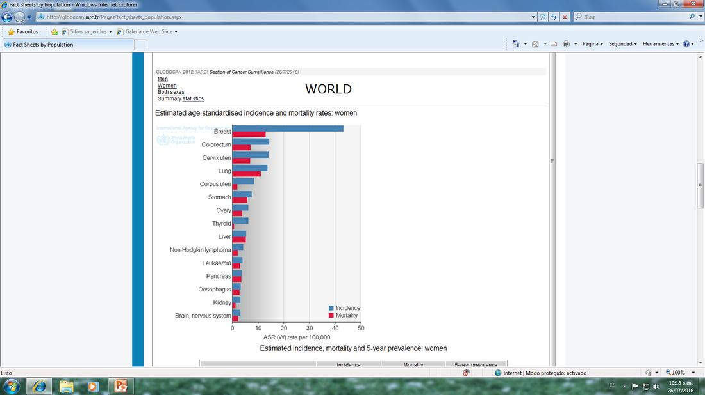
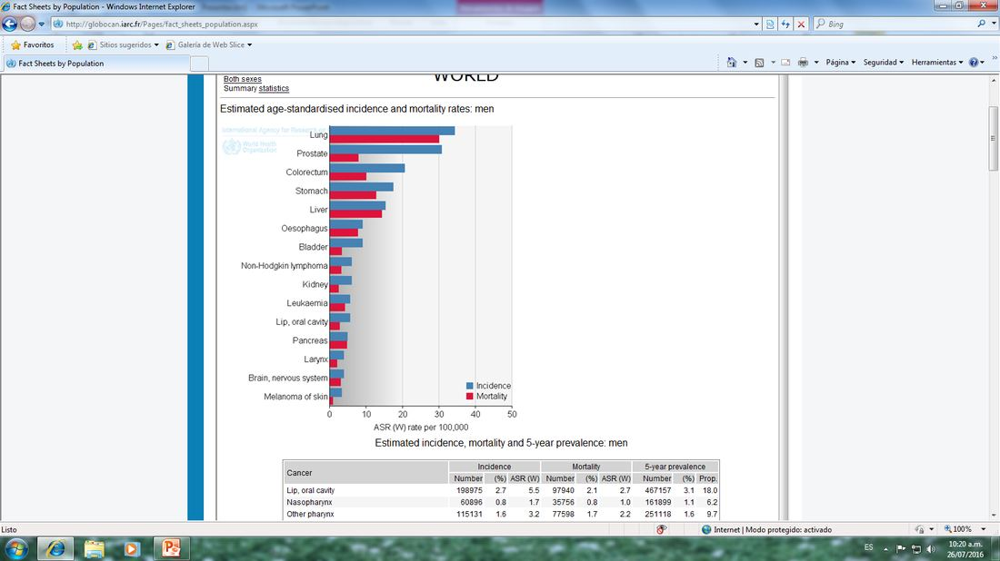
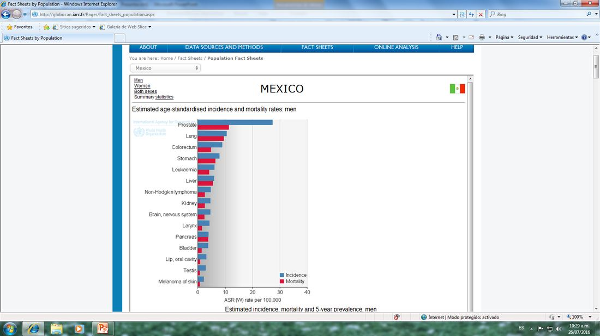
Se estimaron cerca de 1.9 millones de casos nuevos de cáncer en 2021. En hombres, el más frecuente fue próstata (26%), seguido de pulmón (12%) y colorrectal (8%). En mujeres, el más frecuente fue mama (30%), seguido de pulmón (13%) y colorrectal (8%).
Los rankings basados en estimaciones deben interpretarse con cautela, ya que son proyecciones basadas en modelos.
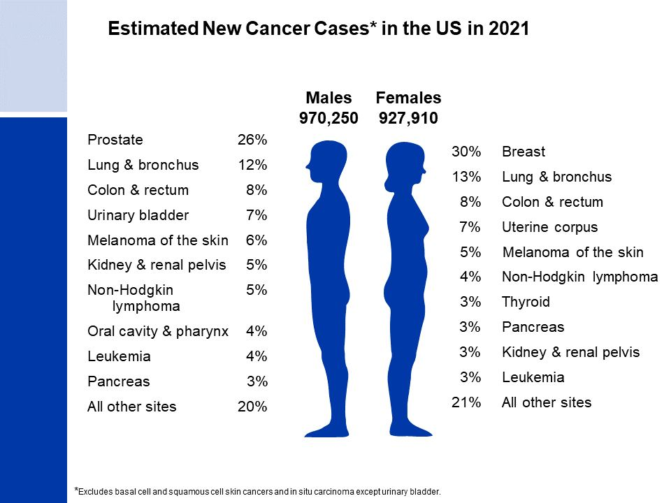
// Cáncer en Población Hispana/Latina (EUA)
Según la American Cancer Society (Cancer Facts and Figures for Hispanics/Latinos, estudio epidemiológico 2015, población hispana/latina de EE. UU. ~55 millones, ~80% de origen mexicano):
- Mayor frecuencia de cáncer que en la población no hispana blanca y negra
- Distinta distribución de neoplasias malignas respecto a la población no hispana blanca — más parecida a la de la población de raza negra
- Distintos factores de riesgo respecto a otras poblaciones de EE. UU.
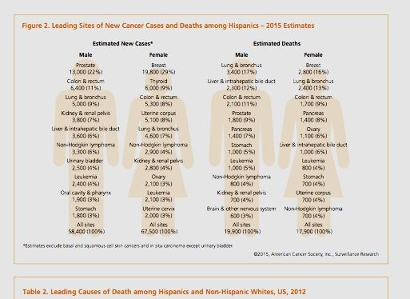
Fuente: Miller KD, Goding Sauer A, Ortiz AP, Fedewa SA, et al. Cancer Statistics for Hispanics/Latinos, 2018. CA Cancer J Clin. 2018. https://doi.org/10.3322/caac.21494
// Carga del Cáncer en México
Gómez-Dantés H, Lamadrid-Figueroa H, Cahuana-Hurtado L, et al. The Burden of Cancer in Mexico. Salud Pública de México. 2016;58(2).
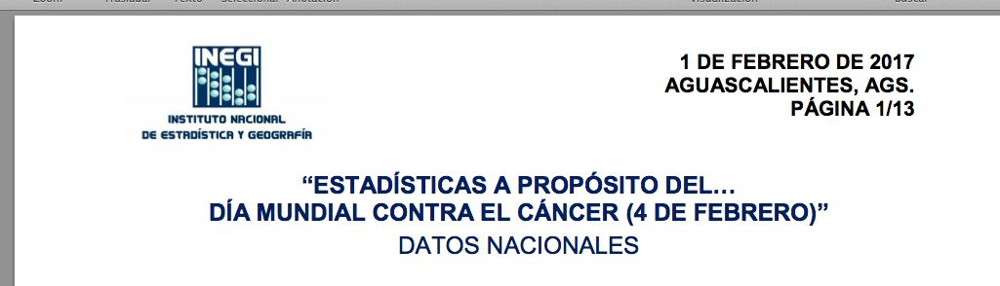
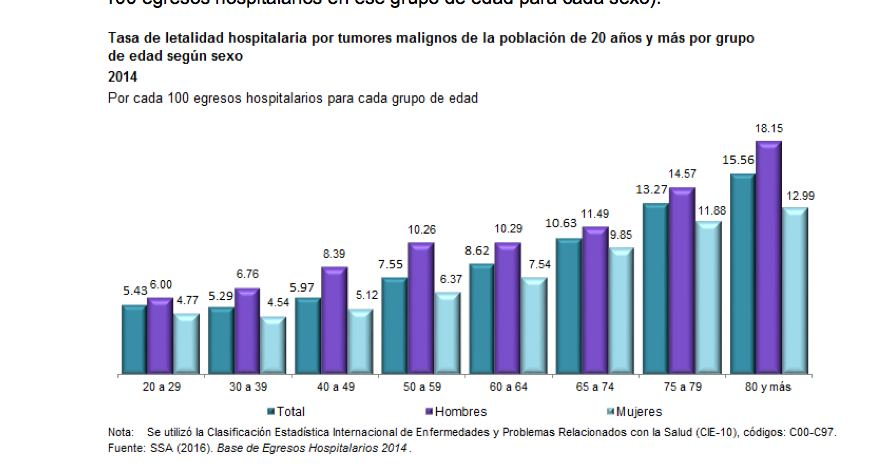
// Definición y Espacios del Retroperitoneo
El retroperitoneo es el espacio anatómico situado entre la hoja posterior del peritoneo parietal y la pared abdominal posterior. Se extiende desde el diafragma (superior) hasta las estructuras pélvicas extraperitoneales (inferior).
Embriológicamente, el mesénquima retroperitoneal se organiza en tres estratos: interno (asociado a vísceras gastrointestinales), intermedio (asociado al aparato genitourinario) y externo (cubre la musculatura posterior y da origen a la fascia transversalis).
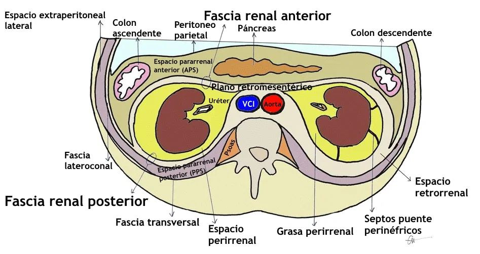
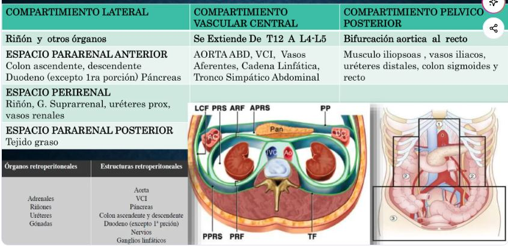
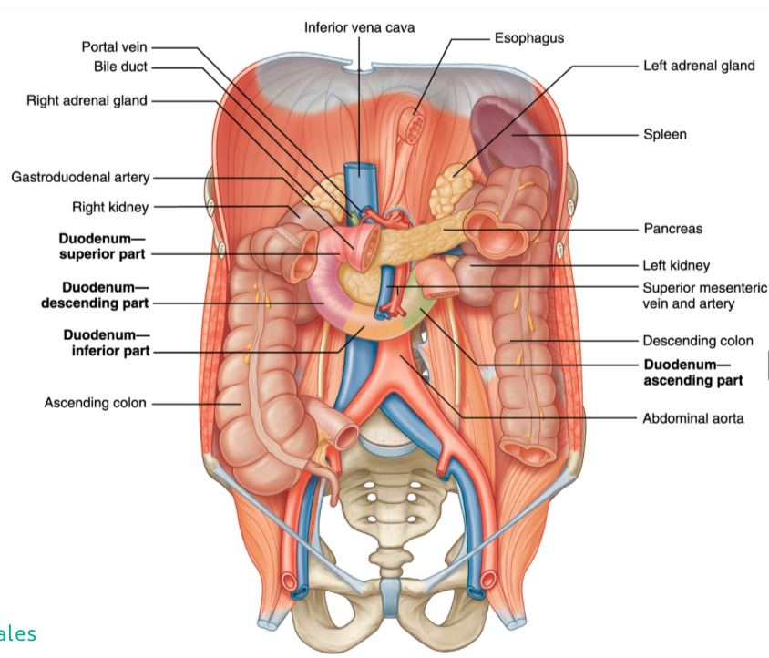
| Compartimento | Límites | Contenido |
|---|---|---|
| Pararrenal anterior | Entre peritoneo posterior y fascia renal anterior | Páncreas, duodeno (2ª y 4ª porción), colon ascendente/descendente |
| Perirrenal | Entre las dos hojas de la fascia renal (Gerota/Zuckerkandl) | Riñones, suprarrenales, uréter proximal, grasa perirrenal, pedículo vascular renal |
| Pararrenal posterior | Entre fascia renal posterior y fascia transversalis | Solo grasa (sin órganos) |
Regla nemotécnica clásica para recordar las estructuras verdaderamente retroperitoneales (primaria o secundariamente, por fusión de la fascia de Toldt):
| Letra | Estructura (inglés) | Estructura |
|---|---|---|
| S | Suprarenal glands | Glándulas suprarrenales |
| A | Aorta / IVC | Aorta abdominal / Vena Cava Inferior |
| D | Duodenum (2nd–4th parts) | Duodeno (2ª, 3ª y 4ª porción — NO la 1ª/bulbo, que es intraperitoneal) |
| P | Pancreas (except tail) | Páncreas (excepto la cola, que es intraperitoneal dentro del ligamento esplenorrenal) |
| U | Ureters | Uréteres |
| C | Colon (ascending/descending) | Colon ascendente y descendente (NO transverso ni sigmoides, que son intraperitoneales) |
| K | Kidneys | Riñones |
| E | (o)Esophagus | Esófago (porción abdominal/torácica distal) |
| R | Rectum | Recto (tercio medio e inferior — el tercio superior sí tiene serosa peritoneal) |
// Los Riñones: Morfología y Relaciones
Órganos ovoides de color café-rojizo. Dimensiones estándar: 10–12 cm de longitud × 5–7.5 cm de anchura × 2.5–3 cm de grosor.
| Característica | Detalle |
|---|---|
| Orientación | Reposan sobre el músculo psoas → eje longitudinal oblicuo, polos superiores más mediales y posteriores que los inferiores; rotación anterior de ~30° |
| Relación costal | Riñón izquierdo a nivel de 11ª costilla; riñón derecho, desplazado 1–2 cm más abajo por el hígado, a nivel de 12ª costilla |
| Hilio renal | Se localiza a nivel de L1 |
| Movilidad | Desplazamiento vertical de hasta ~3 cm (equivalente a un cuerpo vertebral) con la respiración y el cambio de posición supino → erecto |
// Fascias Quirúrgicas y Musculatura
Compuesta por dos láminas: lámina anterior (Fascia de Gerota / de Toldt) y lámina posterior (Fascia de Zuckerkandl), que en conjunto delimitan el espacio perirrenal.
Formada por tres capas (anterior, media y posterior) que envuelven a los músculos sacroespinales y al cuadrado lumbar. Estas capas se fusionan lateralmente con la aponeurosis del músculo transverso del abdomen, generando un plano de acceso quirúrgico donde se puede ingresar al retroperitoneo sin seccionar fibras musculares (base de la lumbotomía).
- Psoas mayor — origen en T12–L5
- Cuadrado lumbar — estabiliza la 12ª costilla y participa en la flexión lateral del tronco
- Músculos sacroespinales
// Vascularización e Inervación
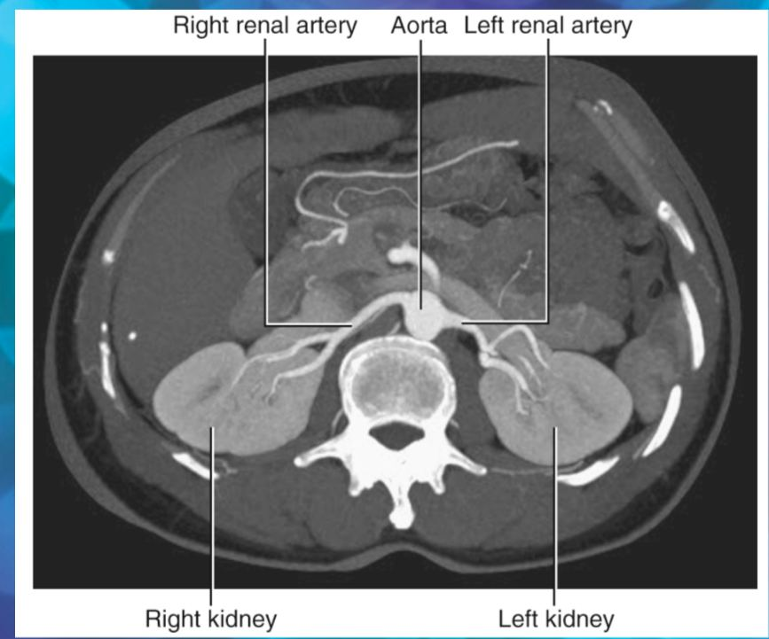
| Estructura | Origen / Trayecto | Dato clave |
|---|---|---|
| Aorta abdominal | Ingresa al retroperitoneo por el hiato aórtico (T12) | — |
| Arterias renales | Surgen a nivel de L1–L2 | 25% de los pacientes tiene arterias renales supernumerarias |
| Arterias gonadales | Nacen por debajo de las renales | Cruzan anteriores al uréter |
| Vena cava inferior | Se forma por la unión de las venas ilíacas comunes | — |
| Vena gonadal derecha | Drena directamente en la VCI | — |
| Vena gonadal izquierda | Drena en la vena renal izquierda, en ángulo de 90° | Explica la mayor incidencia de varicocele izquierdo |
| Nervio | Origen | Relevancia clínica |
|---|---|---|
| Genitofemoral | L1–L2 | Rama genital inerva el músculo cremáster y da sensibilidad al escroto / labios mayores |
| Obturador | L2–L4 | Su estimulación accidental por electrocauterio en RTU vesical provoca contracción brusca del aductor → riesgo de perforación vesical |
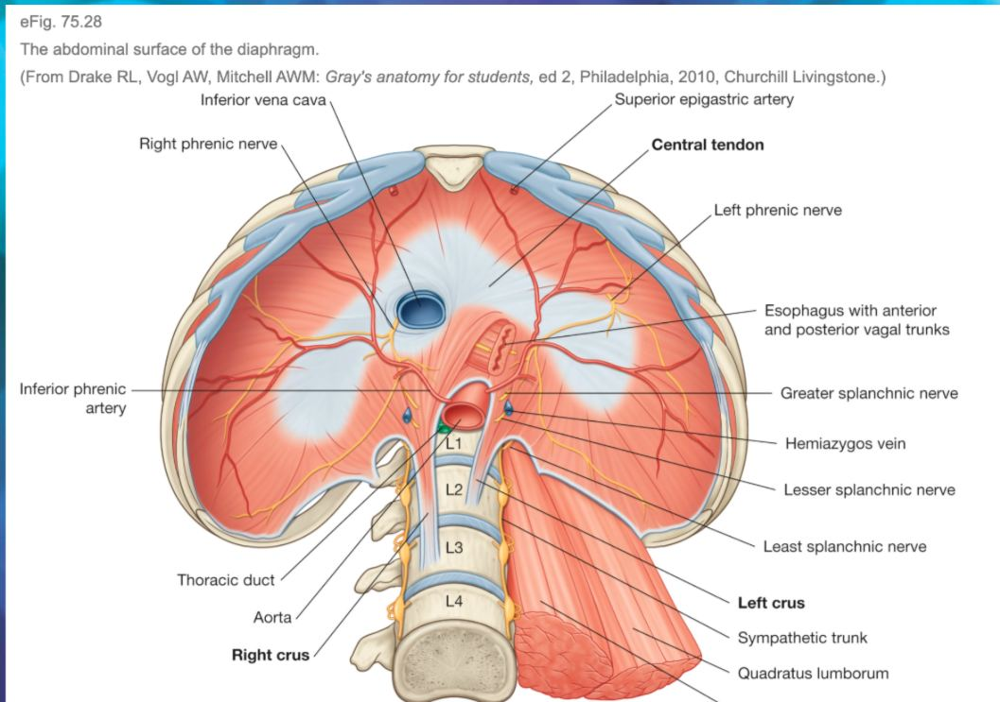
// Maniobras de Exposición Quirúrgica
Para el abordaje transperitoneal de estructuras retroperitoneales se emplean maniobras de movilización visceral:
| Maniobra | Moviliza | Expone |
|---|---|---|
| Kocher | Duodeno | Hilio renal derecho y vena cava inferior |
| Cattell-Braasch | Colon derecho | Estructuras hacia la línea media |
| Mattox | Colon izquierdo y estructuras asociadas | Aorta y riñón izquierdo |
// Detección Oportuna y Prevención
El riesgo de presentar esta neoplasia es de aproximadamente 12.3% en mujeres; en México representa la segunda causa de muerte en la población femenina mayor de 20 años.
Esquema de tamizaje por nivel de riesgo
| Grupo | Recomendación | Frecuencia / inicio |
|---|---|---|
| Riesgo promedio 25–40 años | Examen clínico mamario y autoexploración. | Examen clínico cada 1–3 años. |
| Riesgo promedio 40–65 años | Examen clínico mamario y mastografía. | Mastografía bianual. |
| Alto riesgo | Definido mediante el Score de Gail con riesgo >1.7% a 5 años. Examen clínico y mastografía. | Examen clínico cada 6–12 meses y mastografía anual. |
| BRCA1 / BRCA2 | Riesgo de por vida de cáncer de mama de 50–85%. Examen clínico semestral y combinación de mastografía con resonancia magnética. | Iniciar mastografía + RM desde los 25 años. |
Clasificación BIRADS (ACR) y riesgo de malignidad
| BIRADS | Descripción | Riesgo de malignidad | Conducta |
|---|---|---|---|
| 0 | Incompleto; requiere imagen adicional | No aplica | Completar estudio (proyecciones adicionales, US, RM) |
| 1 | Negativo | 0% | Tamizaje de rutina |
| 2 | Benigno | 0% | Tamizaje de rutina |
| 3 | Probablemente benigno | ≤2% | Seguimiento a corto plazo (6 meses) |
| 4A | Sospecha baja | 2–10% | Biopsia |
| 4B | Sospecha moderada | 10–50% | Biopsia |
| 4C | Sospecha alta | 50–95% | Biopsia |
| 5 | Altamente sugestivo de malignidad | ≥95% | Biopsia + plan quirúrgico |
| 6 | Malignidad ya confirmada por biopsia | 100% | Tratamiento oncológico definitivo |
// Cáncer colorrectal (CCR)
El tamizaje es vital porque la supervivencia a 5 años cae del 90% en enfermedad localizada al 12% en enfermedad metastásica. Se estima que el 63% de las muertes por CCR se atribuyen a la falta de tamizaje.
Población general Se recomienda iniciar el escrutinio a los 50 años.
| Tipo de método | Prueba | Frecuencia / conducta |
|---|---|---|
| Estructurales | Colonoscopía | Estándar de oro, cada 10 años; permite detectar lesiones premalignas. |
| Sigmoidoscopía | Cada 5 años. | |
| Colonografía por TC | Alternativa estructural de tamizaje. | |
| Fecales | Sangre oculta en heces por guayaco o prueba inmunoquímica. | Anual. Cualquier resultado positivo requiere colonoscopía de seguimiento. |
| Riesgo incrementado | Antecedentes de pólipos adenomatosos, enfermedad inflamatoria intestinal o historia familiar. | Protocolos de vigilancia más frecuentes: cada 1, 3 o 5 años según el hallazgo. |
// Cáncer cervicouterino (CaCU)
El principal factor de riesgo es la infección por VPH; los serotipos 16 y 18 son responsables del 70% de las neoplasias.
Todas las mujeres deben iniciar tamizaje a los 21 años.
| Edad / condición | Estrategia | Frecuencia |
|---|---|---|
| 21–29 años | Citología cervical o Papanicolaou sola. | Cada 3 años. |
| 30–65 años | Citología combinada con prueba de DNA viral. | Cada 5 años. |
| Suspensión | Puede detenerse a los 65 años si existen 3 citologías consecutivas negativas y no hay antecedentes de riesgo. | A los 65 años, si cumple criterios. |
// Cáncer de próstata
Es el cáncer más común en hombres y su detección temprana ha reducido la mortalidad en un 45%.
Herramientas El antígeno prostático específico (APE) es la prueba de elección y puede complementarse con tacto rectal.
Recomendación En adultos de 50 a 70 años, se recomienda medir el APE cada 1–2 años.
// Cáncer de pulmón
Es la principal causa de muerte por cáncer a nivel mundial, con una supervivencia general de solo 16% debido a diagnósticos tardíos.
La población de alto riesgo incluye sujetos de 55 a 74 años con índice tabáquico de 30 o más, que continúen fumando o hayan suspendido el hábito hace menos de 15 años.
| Elemento | Recomendación |
|---|---|
| Método de elección | La tomografía de baja dosis (LDCT) es la única herramienta que ha demostrado disminuir la mortalidad, hasta en 20%, en fumadores crónicos. |
| No recomendado | No se recomienda la radiografía o placa de tórax como método de tamizaje. |
| México | El programa DETECTO del INCAN, dentro del Proyecto AIRE México, ofrece detección gratuita a población vulnerable de 50–75 años con tabaquismo, EPOC o alta exposición a humo de leña. |
// ¿Qué es el cáncer?
El cáncer no es una enfermedad única, sino un grupo heterogéneo de más de 200 entidades que comparten un comportamiento biológico común: proliferación celular descontrolada, capacidad de invasión local y potencial de diseminación a distancia (metástasis).
// Bases biológicas del cáncer
El cáncer se origina por la acumulación secuencial de mutaciones somáticas que confieren ventaja selectiva de crecimiento. Ninguna mutación aislada es suficiente: se requiere la afectación combinada de varias vías reguladoras a lo largo de años.
- Mutaciones genéticas acumuladas — cada división celular es una oportunidad de error; el riesgo de cáncer aumenta con la edad porque se acumulan más mutaciones y más tiempo de exposición a carcinógenos.
- Alteración del ciclo celular — pérdida del control en los puntos de verificación (checkpoints) G1/S y G2/M, lo que permite que la célula se divida con daño genético no reparado.
- Fallo en la reparación del ADN — inactivación de sistemas de reparación (recombinación homóloga vía BRCA1/2; mismatch repair vía genes de Lynch), generando inestabilidad genómica progresiva y nuevas mutaciones a mayor velocidad.
- Ventaja proliferativa celular — la célula transformada adquiere autosuficiencia en señales de crecimiento, independencia de señales inhibitorias y evasión de la muerte celular programada.
Genes implicados en el cáncer
| Categoría | Función normal | Efecto de la alteración | Ejemplo |
|---|---|---|---|
| Oncogenes | Promueven proliferación (vías de señalización mitogénica) | Ganancia de función; basta un solo alelo mutado (comportamiento dominante) | RAS, MYC, HER2 |
| Genes supresores tumorales | Frenan el ciclo celular e inducen apoptosis ante daño irreparable | Pérdida de función; requiere inactivación de ambos alelos (hipótesis de Knudson o "two-hit") | p53 ("guardián del genoma"), RB |
| Genes de reparación del ADN | Corrigen errores de replicación y daño genotóxico | Su pérdida no transforma directamente la célula, pero acelera la acumulación de otras mutaciones oncogénicas | BRCA1/2, genes MMR (Lynch) |
| Inestabilidad genómica | Mantenimiento de la fidelidad cromosómica | Su pérdida incrementa la tasa de mutación global y actúa como sustrato para la selección clonal del tumor | Aneuploidía, inestabilidad de microsatélites (MSI) |
// Características del cáncer (Hallmarks)
Estas características explican de forma unificada por qué el cáncer crece sin control, invade y recidiva. No es indispensable memorizarlas todas, pero sí comprender su lógica funcional.
| Hallmark | Mecanismo |
|---|---|
| Proliferación sostenida | Producción autocrina de factores de crecimiento o mutaciones activadoras en receptores y vías intracelulares (RAS-MAPK, PI3K-AKT) |
| Evasión de apoptosis | Sobreexpresión de proteínas antiapoptóticas (BCL-2) o pérdida funcional de p53 |
| Angiogénesis sostenida | Secreción de VEGF; aporta oxígeno y nutrientes necesarios para el crecimiento tumoral más allá de 1–2 mm³ |
| Invasión y metástasis | Pérdida de E-cadherina (transición epitelio-mesénquima) y degradación de la matriz extracelular por metaloproteinasas |
| Evasión inmune | Expresión de PD-L1, pérdida de MHC-I en la superficie celular, secreción de citocinas inmunosupresoras |
// Factores de riesgo
Los factores de riesgo oncológicos se agrupan en cinco categorías que orientan tanto la historia clínica como las estrategias de tamizaje.
| Categoría | Ejemplos representativos |
|---|---|
| Hereditarios / genéticos | Mutaciones germinales (BRCA1/2, síndrome de Lynch, Li-Fraumeni); historia familiar de cáncer en primer grado |
| Ambientales / carcinógenos | Tabaquismo, radiación ionizante y UV, asbesto, benceno, exposición ocupacional |
| Infecciosos | VPH (CaCU, orofaringe, ano), VHB/VHC (hepatocarcinoma), H. pylori (cáncer gástrico y linfoma MALT), VIH (sarcoma de Kaposi, linfomas) |
| Estilo de vida | Obesidad, sedentarismo, dieta rica en procesados/carnes rojas, alcohol |
| Edad e inmunosupresión | La incidencia aumenta con la edad por acumulación de mutaciones; los estados de inmunosupresión (trasplante, VIH) reducen la vigilancia inmunológica antitumoral |
// Sospecha clínica de cáncer
- Síntomas persistentes por >3–4 semanas
- Progresión del cuadro clínico
- Falta de respuesta al tratamiento instaurado
- Presencia de factores de riesgo
Signos y síntomas de alarma
| Signo/síntoma | Comentario clínico |
|---|---|
| Pérdida de peso involuntaria | Clínicamente relevante si es >5% del peso corporal en 6–12 meses sin causa aparente |
| Fatiga intensa | Con frecuencia por anemia de enfermedad crónica o consumo metabólico tumoral |
| Fiebre prolongada | Sin foco infeccioso identificable; considerar síndrome paraneoplásico |
| Sangrado anormal | Rectorragia, hematuria, sangrado transvaginal posmenopáusico, hemoptisis |
| Tumor / lesión sólida, fija | La fijación a planos profundos y la consistencia pétrea son datos de mayor sospecha que el tamaño |
| Dolor persistente | Especialmente si es progresivo, nocturno o no cede con analgesia habitual |
// Valoración inicial
- Evaluación integral del paciente
- Determinación del estado general / funcional
- Identificación de una posible urgencia oncológica
- Decisión sobre los estudios iniciales a solicitar
La valoración no busca únicamente el diagnóstico: define si el paciente puede estudiarse de forma ambulatoria o requiere referencia inmediata a tercer nivel.
Historia clínica
- Motivo de consulta
- Inicio y evolución
- Progresión
- Síntomas B
- Personales patológicos
- Heredofamiliares
- Exposición a carcinógenos
- Hábitos y ocupación
Exploración física
- Estado nutricional
- Piel y mucosas
- Ganglios linfáticos
- Exploración dirigida por sistemas según el sitio sospechoso
Diagnósticos diferenciales
| Categoría | Ejemplo |
|---|---|
| Enfermedades infecciosas | Tuberculosis, abscesos, infecciones crónicas |
| Enfermedades inflamatorias | Enfermedad inflamatoria intestinal, sarcoidosis, enfermedades autoinmunes |
| Tumores benignos | Lipomas, miomas, adenomas |
| Trastornos no malignos | Quistes, hiperplasias reactivas |
// Diagnóstico: de la sospecha a la confirmación
// Referencia a tercer nivel
Ante sospecha fundada o diagnóstico confirmado → Referencia a Oncología / Cirugía Oncológica / Hematología.
Referir con información clínica clara y estudios ya realizados evita retrasos y mejora la atención del paciente en el tercer nivel.
// Hiperplasia Prostática Benigna (HPB)
La hiperplasia de la próstata es la causa principal de los síntomas del tracto urinario inferior (STUI o LUTS) en hombres de edad avanzada.
Anteriormente, este cuadro clínico se denominaba erróneamente “prostatismo”.
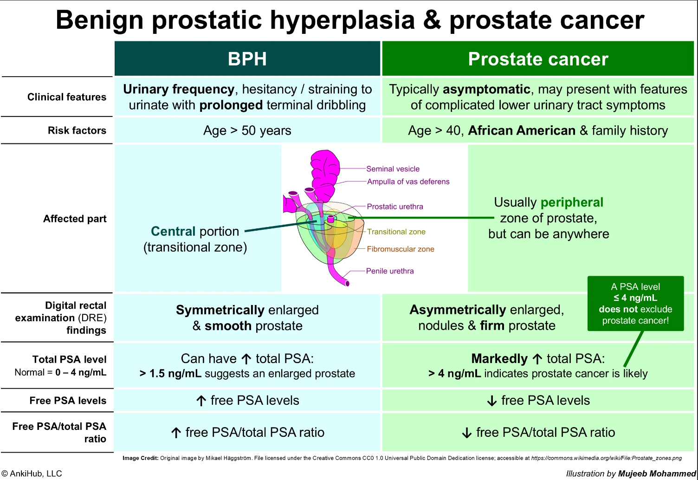
// Etiología y fisiopatología
La etiología molecular precisa aún no está bien definida.
Andrógenos Son necesarios para el desarrollo de la HPB, pero no son suficientes por sí solos para causarla. Los hombres castrados antes de la pubertad no desarrollan esta condición, lo que confirma la necesidad de un testículo funcional. La testosterona se convierte en dihidrotestosterona (DHT) por acción de la 5-α-reductasa; la DHT es el metabolito más activo sobre el crecimiento prostático.
Otros factores Pueden influir el aumento de estrógenos (con incremento de receptores de DHT), la actividad aumentada de la 5-α-reductasa, las interacciones estroma-epitelio, los factores de crecimiento y los neurotransmisores.
Se produce una ruptura del equilibrio del ciclo celular, con:
- Proliferación de células epiteliales y estromales.
- Falla de la muerte celular programada o apoptosis.
El resultado es una acumulación progresiva de células y crecimiento nodular prostático.
Anatomía y patología — Modelo de McNeal
La HPB se desarrolla específicamente en la zona de transición periuretral de la próstata.
Esta zona consta de dos glándulas separadas, externas al esfínter periprostático. Los nódulos proliferativos aparecen inicialmente cerca del esfínter y, conforme progresa la enfermedad, se distribuyen por toda la zona de transición.
// Cuadro clínico: síntomas del tracto urinario inferior
| Categoría | Síntomas | Correlación clínica |
|---|---|---|
| Vaciamiento (obstructivos) | Chorro débil, vaciamiento incompleto, retardo miccional o hesitación, intermitencia y goteo terminal. | Históricamente se asociaban a obstrucción de salida vesical (BOO), pero también pueden presentarse por estrechez uretral o disminución de la contractilidad del detrusor. |
| Almacenamiento (irritativos) | Urgencia, frecuencia, nocturia e incontinencia de urgencia. | Actualmente se engloban bajo el término de vejiga hiperactiva. Suelen ser los síntomas más molestos para el paciente. |
Respuesta de la vejiga a la obstrucción
// Epidemiología
| Dato | Relevancia |
|---|---|
| 80 años | A esta edad, aproximadamente 80% de los hombres presenta signos de HPB. |
| Intervención | Menos de 20% de los hombres requerirá intervención médica o quirúrgica a los 75 años. |
| Cáncer oculto | Entre 10% y 30% de los hombres con HPB presentan cáncer de próstata oculto. |
| RTUP | La resección transuretral de la próstata se mantiene como uno de los procedimientos quirúrgicos más comunes. |
| >40 años | Aproximadamente 20% de los pacientes mayores de 40 años con HPB recibirá tratamiento en algún momento. |
// Abordaje diagnóstico
- Antecedentes heredofamiliares.
- Tratamiento actual y previos (incluye fármacos que exacerban STUI: diuréticos, descongestionantes nasales, antihistamínicos).
- Antecedentes de causas de disfunción vesical: EVC, cirugías previas, radioterapia pélvica.
- Historia sexual.
- Ingesta de agua, cafeína y alcohol, que también contribuyen a la sintomatología.
- Aplicación del Índice Internacional de Síntomas Prostáticos (I-PSS).
Índice Internacional de Síntomas Prostáticos (I-PSS)
Cuestionario validado de 7 preguntas (puntuación 0–5 cada una, total 0–35) que evalúa: vaciamiento incompleto, frecuencia, intermitencia, urgencia, debilidad del chorro urinario, esfuerzo miccional y nicturia.
| Puntuación total | Categoría |
|---|---|
| 0–7 | Sintomatología leve |
| 8–19 | Sintomatología moderada |
| 20–35 | Sintomatología grave |
Exploración física
Se evalúan: tamaño, superficie, consistencia, surco medio, dolor, bordes y movilidad.
La exploración física completa incluye además revisión de la pelvis, palpación vesical (globo vesical) e inspección del pene para descartar estrechez uretral o fimosis.
Antígeno prostático específico (APE/PSA)
El APE es una proteína producida por la próstata; se eleva en la HPB pero no es específico de ella. Otras causas de elevación: prostatitis, eyaculación reciente, ciclismo y error de laboratorio. El uso previo de inhibidores de la 5-α-reductasa reduce el valor del APE (hasta 50% a los 12 meses), lo que debe considerarse al interpretarlo.
Parámetros para diferenciar HPB de cáncer de próstata
| Parámetro | Sugiere HPB | Sugiere cáncer |
|---|---|---|
| PSA libre / PSA total | >25% | <10% |
| Densidad de PSA (PSA / volumen prostático) | <0.15 ng/mL/cm³ | >0.15 ng/mL/cm³ |
| Velocidad de PSA | Incremento lento | Incremento >0.75 ng/mL/año — sospechoso |
Estudios paraclínicos
| Estudio | Utilidad / indicación |
|---|---|
| USG renal-vesical y prostático | Evalúa volumen prostático, residuo posmiccional y repercusión en tracto urinario superior. |
| RM | Caracterización anatómica más detallada; útil en la planeación de procedimientos. |
| TAC | Valoración complementaria, particularmente si se sospecha patología asociada. |
| Cistoscopía | Reservada para pacientes con hematuria, sospecha de cáncer vesical, infección recurrente, cristales sugestivos de litos vesicales o trauma. |
// Tratamiento
Las líneas actuales de manejo incluyen tratamiento farmacológico —inhibidores de la 5-alfa reductasa e inhibidores de la fosfodiesterasa 5—, procedimientos endourológicos y tratamientos mínimamente invasivos.
El tratamiento médico se indica principalmente en pacientes con síntomas molestos moderados a graves que afectan la calidad de vida.
Modificaciones del estilo de vida
Manejo farmacológico
| Grupo | Indicación y mecanismo | Inicio/efecto | Efectos adversos o consideraciones |
|---|---|---|---|
| Bloqueadores α1 Tamsulosina, alfuzosina, silodosina, terazosina | Primera línea para la mayoría de los pacientes con síntomas molestos. Reducen el tono del músculo liso prostático y del cuello vesical (elemento dinámico de la obstrucción). Se clasifican en selectivos y no selectivos. | Mejoría sintomática desde las 48 horas; a 1 mes, reducción del I-PSS de 30–40% y aumento de la tasa de flujo urinario de 16–25% (uroflujometría). | Hipotensión, especialmente con agentes no selectivos; disfunción eyaculatoria o eyaculación retrógrada; riesgo de síndrome de iris flácido intraoperatorio (IFIS) durante cirugía de catarata. |
| Inhibidores 5-α reductasa Finasterida, dutasterida | Indicados en próstatas aumentadas de tamaño (>30–40 g) o PSA ≥1.5 ng/mL. Bloquean la conversión de testosterona a DHT. | Efecto tardío (varios meses): reducción del volumen prostático de 20–30%, mejoría sintomática de solo ~15%, mejora el flujo urinario y reduce el riesgo de retención aguda de orina (RAO) y necesidad de cirugía a 5 años. | Disfunción sexual (afecta 3–8%), riesgo de hematuria. Reducen el PSA sérico aproximadamente 50% a los 12 meses, dato indispensable al interpretar el tamizaje de cáncer de próstata. |
| Inhibidor PDE-5 Tadalafilo | Opción de monoterapia en pacientes con HPB y disfunción eréctil concomitante. | Mejora síntomas del tracto urinario bajo y función eréctil. | Seleccionar de acuerdo con comorbilidades y tolerancia. |
| Antimuscarínicos | Antagonistas competitivos de los receptores muscarínicos M2/M3 del detrusor (también presentes en glándulas salivales); bloquean el estímulo colinérgico y disminuyen la contractilidad del detrusor. Su efecto se ejerce sobre todo en la fase de llenado del ciclo miccional. | Reducen la sensación de urgencia, retrasan la micción y disminuyen en menor grado las contracciones involuntarias del detrusor. | Precaución en pacientes con obstrucción de la salida vesical, por riesgo de retención urinaria. |
Fitoterapia
Cucurbita pepo (semillas de calabaza), Hypoxis rooperi (hierba estrellada de Sudáfrica), Pygeum africanum (corteza de ciruelo africano), Secale cereale (polen de centeno), Serenoa repens (sin. Sabal serrulata; palma enana americana) y Urtica dioica (raíz de ortiga).
Mecanismos propuestos: efecto antiinflamatorio, reducción de la globulina de fijación de hormonas sexuales (SHBG), inhibición de aromatasa, α-adrenoceptores, 5-α-reductasa y receptores muscarínicos; mejorarían la función del detrusor.
Indicaciones absolutas de cirugía
Retención Retención urinaria refractaria, con falla en pruebas de retiro de sonda.
Daño renal Insuficiencia renal secundaria a obstrucción, incluida hidronefrosis bilateral.
Infección Infecciones urinarias recurrentes atribuidas a HPB.
Litiasis Cálculos vesicales.
Hematuria Hematuria macroscópica recurrente.
Fracaso médico También se considera cirugía cuando el tratamiento médico no controla los síntomas.
Procedimientos quirúrgicos e intervencionistas
| Procedimiento | Selección del paciente / tamaño | Ventajas y consideraciones |
|---|---|---|
| RTUP Resección transuretral | Procedimiento estándar para HPB quirúrgica. | Continúa como estándar de oro. La modalidad bipolar es preferible porque utiliza solución salina y reduce el riesgo de síndrome de absorción hídrica o síndrome TUR. |
| TUIP Incisión transuretral | Próstatas pequeñas, ≤30 g. | Preserva mejor la eyaculación anterógrada. |
| PVP Vaporización fotoselectiva (láser verde) | Pacientes con alto riesgo de sangrado o que toman anticoagulantes; ideal para tejidos blandos y muy vascularizados. | Vaporiza el tejido formando burbujas que rompen la matriz de colágeno (temperatura >100°C). Efecto coagulante inmediato, campo quirúrgico limpio con sangrado mínimo y cateterización habitualmente <24 horas. |
| HoLEP / ThuLEP Enucleación láser | Efectivas independientemente del tamaño prostático, incluidas glándulas muy grandes. | Permiten tratar próstatas grandes por vía transuretral. |
| WVTT / Rezūm Vapor de agua | Próstatas de 30–80 g. | Ablación por convección; destaca por preservar la función eréctil y eyaculatoria. |
| PUL / UroLift Lift uretral prostático | Coloca pequeños implantes que mantienen abierta la vía obstruida, corrigiendo la obstrucción de forma mecánica, sin ablación. | No causa disfunción sexual, pero presenta mayores tasas de reintervención. |
| Ablación transuretral con aguja (TUNA) | Alternativa mínimamente invasiva en pacientes seleccionados. | Agujas que emiten radiofrecuencia de baja intensidad a través de la uretra hacia la próstata, calentando y destruyendo el tejido prostático adyacente. |
| Termoterapia con radiofrecuencia transuretral | Alternativa mínimamente invasiva en pacientes seleccionados. | Aplica calor por radiofrecuencia a través de la uretra para reducir el volumen del tejido obstructivo. |
| Adenomectomía retropúbica | Tejido obstructivo >80 g. También indicada ante divertículos o litos vesicales voluminosos, anquilosis de cadera (que impide la posición de litotomía para vía transuretral), trastornos uretrales recurrentes o complejos, y hernia inguinal simultánea (permite reparación concomitante). | Abordaje abierto; reservada cuando la vía transuretral es técnicamente desfavorable. |
| Prostatectomía simple | Próstatas muy grandes, típicamente >80–150 g, cuando las técnicas transuretrales serían prolongadas o difíciles. | Puede realizarse por vía abierta, laparoscópica o robótica. |
| PAE Embolización de arteria prostática | Alternativa no transuretral realizada mediante angiografía. | La evidencia sobre durabilidad sigue siendo limitada frente a los métodos tradicionales. |
Sistema TNM, prefijos y sufijos, agrupación por estadios, aplicaciones clínicas, integración de biomarcadores y casos de razonamiento oncológico.
01Conceptos fundamentalesDiagnóstico definitivo, utilidad e historia del TNM
// ¿Qué es la estadificación?
Determinación de la extensión y gravedad de una enfermedad tumoral maligna. Permite clasificar pacientes en grupos comparables, estimar pronóstico y planear tratamiento.
Secuencia obligatoria para diagnosticar cáncer
histopatología
¿Por qué importa?
- Ayuda a planear el tratamiento correcto.
- Orienta el pronóstico.
- Permite evaluar respuesta y resultados terapéuticos.
- Facilita comparación e intercambio de información entre centros.
- Apoya investigación oncológica.
- Contribuye a estrategias de detección oportuna y control del cáncer.
Historia del sistema TNM
| Periodo | Hito |
|---|---|
| 1943–1952 | Pierre Denoix propone el sistema TNM. |
| 1950–1954 | Comité UICC de clasificación clínica por estadios. |
| 1958–1959 | Propuestas TNM para mama y laringe. |
| 1960–1967 | Comité TNM amplía la clasificación a 26 sitios anatómicos. |
| 1968 | Primera edición del “Livre de Poche”. |
| 1977 | AJCC publica su Manual of Staging. |
| 1987 | Unificación UICC/AJCC. |
| Posteriormente | Integración con FIGO para tumores ginecológicos y Ann Arbor para linfomas. |
| Edición | Publicación | Vigencia |
|---|---|---|
| 1.ª | 1977 | 1978–1983 |
| 2.ª | 1983 | 1984–1988 |
| 3.ª | 1988 | 1989–1992 |
| 4.ª | 1992 | 1993–1997 |
| 5.ª | 1997 | 1998–2002 |
| 6.ª | 2002 | 2003–2009 |
| 7.ª | 2009 | 2010–2017 |
| 8.ª | 2016 | 2018–vigente |
02Métodos diagnósticos y marcadores tumoralesImagen, radiología intervencionista, marcadores séricos y conceptos de sobrevida y grado
// Selección de la modalidad de imagen
La elección del método de imagen depende de la disponibilidad, el costo, la sensibilidad/especificidad para el tejido de interés y el riesgo (radiación, contraste, tiempo de estudio) frente al beneficio diagnóstico esperado.
| Estudio | Principio / uso | Ventajas | Limitaciones |
|---|---|---|---|
| USG | Emite y recibe ondas sonoras, proyectadas en tiempo real en escala de grises. | Accesible, sin radiación, tiempo real. | Interferencia por gas y estructuras con densidad cálcica; baja especificidad para caracterizar algunos tumores (p. ej. hepáticos y renales) frente a otros métodos. |
| TC (tomografía computarizada) | Imagen transversal por rayos X; la eliminación del medio de contraste depende de la hidratación, el gasto cardiaco y sobre todo de la tasa de filtración glomerular. | Rápida (~1 min), amplia disponibilidad, excelente para estadificación torácica/abdominal. | Radiación considerable — una TC de tórax equivale a ≥70 radiografías de tórax. |
| RM (resonancia magnética) | Se basa en las propiedades magnéticas de los protones de hidrógeno al interactuar con un campo magnético externo. | Sin radiación; estudios vasculares sin contraste IV (el gadolinio prácticamente no produce alergias). | Alto costo, tiempo de exploración prolongado (≥30 min vs. ~1 min de la TC), contraindicada en portadores de ciertos marcapasos. |
| PET-CT | Radiofármaco más usado: 18F-FDG (análogo de glucosa marcado con flúor-18), captado por zonas de mayor metabolismo tumoral. Se fusiona con TC para localización anatómica precisa. | Aporta información molecular/metabólica, no solo anatómica. | Alto costo, disponibilidad limitada, falsos positivos en procesos inflamatorios/infecciosos. |
| Mastografía | Estudio radiográfico de baja dosis para tamizaje y diagnóstico de patología mamaria. | Método de elección para tamizaje poblacional de cáncer de mama. | Menor sensibilidad en mamas densas; requiere estudios complementarios ante hallazgos sospechosos. |
Radiología intervencionista
Además de su función diagnóstica y de valoración de resecabilidad, la imagen guía procedimientos terapéuticos dirigidos:
- Embolización — administración a través de un catéter intraarterial de partículas de alcohol, quimioterapia o material radioactivo directamente a la arteria que irriga el tumor.
- Ablación — destrucción local del tumor mediante aguja percutánea, usando energía de radiofrecuencia, congelación (crioablación), microondas, o introducción de ácido acético o etanol dentro del tumor.
// Marcadores tumorales
Se investigan como herramienta para el diagnóstico temprano, como factor pronóstico, para el seguimiento no invasivo y para el monitoreo de respuesta al tratamiento en pacientes oncológicos. Ningún marcador tumoral sustituye a la biopsia para el diagnóstico definitivo.
| Categoría | Ejemplo |
|---|---|
| Marcadores germinales | Utilizados en tumores de ovario y testículo (p. ej. AFP, β-hCG, LDH). |
| APE / PSA | Puede elevarse por causas no oncológicas: prostatitis, eyaculación reciente y error de laboratorio, además del cáncer de próstata. |
// Conceptos de sobrevida
Tiempo promedio de duración desde el momento del diagnóstico o el inicio del tratamiento de una enfermedad (como el cáncer) durante el cual los pacientes siguen vivos.
Punto temporal en el que la mitad de los pacientes de una cohorte determinada sigue con vida.
// Grado de diferenciación celular
Adicional a los parámetros de extensión anatómica (TNM), el grado de diferenciación celular y el perfil biológico del tumor influyen de forma independiente en el pronóstico y la respuesta al tratamiento. Explica por qué neoplasias de la misma etapa pueden tener desenlaces distintos.
| Grado | Diferenciación | Significado |
|---|---|---|
| Grado I | Bien diferenciado | Mayor parecido a la célula normal de origen. |
| Grado II | Moderadamente diferenciado | Parecido intermedio con la célula de origen. |
| Grado III | Poco diferenciado | Poco parecido al tejido de origen; factor de mal pronóstico. |
03Glosario TNMPrefijos, sufijos, invasión microscópica, resección y ganglio centinela
// Prefijos temporales
| Notación | Significado | Momento de evaluación |
|---|---|---|
| cTNM | Clínico | Historia, exploración, imagen y biopsia antes de cualquier tratamiento. |
| pTNM | Patológico | Espécimen quirúrgico resecado con estudio histopatológico. |
| ycTNM | Clínico posterior a tratamiento | Reevaluación clínica o por imagen después de terapia sistémica o radioterapia, sin cirugía definitiva todavía. |
| ypTNM | Patológico posterior a neoadyuvancia | Respuesta patológica después de quimioterapia o radioterapia previa a cirugía. |
| rTNM | Recurrencia | Reestadificación al momento de recaída. |
| aTNM | Autopsia | Hallazgo post mortem. |
Puede incluirse imagen posquirúrgica realizada dentro de los primeros 4 meses del diagnóstico, siempre que no exista progresión ni tratamiento sistémico o radioterapia intermedia.
Femenina con tumor de 2.5 cm en mama izquierda y adenopatía axilar ipsilateral; estudios de extensión negativos.
Etapa clínica ECE IIB — cT2, cN1, cM0 (basada en exploración clínica e imagen).
Se realiza mastectomía radical modificada (MRM); el reporte histopatológico muestra carcinoma ductal infiltrante, tumor de 1.5 cm en su diámetro máximo, 12 ganglios axilares con hiperplasia linfática, negativos a metástasis.
Etapa patológica ECE IA — pT1, pN0, pM0 (basada en el espécimen quirúrgico y estudio histopatológico).
Femenina con tumor de 1.5 cm en mama izquierda, sin adenopatías axilares clínicas, estudios de extensión negativos. Se realiza cirugía conservadora de mama con linfadenectomía axilar ipsilateral; el reporte histopatológico muestra carcinoma ductal infiltrante, tumor de 2.3 cm en su diámetro máximo, con 7 de 10 ganglios axilares positivos a metástasis.
Invasión microscópica
| Símbolo | Significado | Codificación |
|---|---|---|
| V | Invasión vascular | 0 = no · 1 = sí · x = desconocido |
| L | Invasión linfática | 0 = no · 1 = sí · x = desconocido |
| Pn | Invasión perineural | 0 = no · 1 = sí · x = desconocido |
Enfermedad residual — clasificación R
| Categoría | Significado |
|---|---|
| RX | No puede evaluarse. |
| R0 | Sin enfermedad residual. |
| R1 | Enfermedad residual microscópica. |
| R2 | Enfermedad residual macroscópica. |
Ganglio centinela — sn
| Notación | Significado |
|---|---|
| NX(sn) | Ganglio centinela no evaluable. |
| N0(sn) | Sin metástasis en ganglio centinela. |
| N1(sn) | Metástasis en ganglio centinela. |
Carcinoma mamario de 2.2 cm tratado con lumpectomía y ganglio centinela; cúmulo tumoral de 0.1 mm en un ganglio: pT2 pN0(i+)(sn).
04Categorías T, N, MEstructura general y agrupación por estadios
// Estructura del TNM
Sitio primario, tamaño y extensión local.
Afectación de ganglios linfáticos regionales.
Enfermedad a distancia.
| T | N | M |
|---|---|---|
| TX: no evaluable | NX: no evaluable | M0: sin metástasis a distancia |
| T0: sin evidencia de tumor primario | N0: sin metástasis ganglionar | M1: metástasis a distancia |
| Tis: carcinoma in situ | N1–N3: extensión ganglionar creciente | cMX no se recomienda; la evaluación clínica puede basarse solo en exploración. |
| T1–T4: tamaño o invasión creciente | — | — |
Agrupación general por estadios
A mayor estadio, menor supervivencia. Ejemplo clásico en mama a 10 años: estadio I ≈88%, II ≈65%, III ≈43% y IV ≈8%.
05TNM aplicado a tumores específicosMama, colon, cérvix y ovario
// Cáncer de mama
Categoría T
| Categoría | Definición |
|---|---|
| TX | Tumor primario no evaluable. |
| T0 | Sin evidencia de tumor primario. |
| Tis | DCIS, LCIS o enfermedad de Paget sin tumor invasor asociado. |
| T1mi | Microinvasión ≤1 mm. |
| T1a | >1–5 mm. |
| T1b | >5–10 mm. |
| T1c | >10–20 mm. |
| T2 | >20–50 mm. |
| T3 | >50 mm. |
| T4a | Extensión a pared torácica. |
| T4b | Ulceración, nódulos satélite o edema tipo piel de naranja. |
| T4c | T4a + T4b. |
| T4d | Carcinoma inflamatorio. |
Ganglios regionales
| Clínico | Definición | Patológico | Definición |
|---|---|---|---|
| N0 | Sin metástasis ganglionar. | pN0 | Sin metástasis histológica. |
| N1 | Axilares nivel I–II móviles. | pN1 | Micrometástasis o 1–3 ganglios axilares y/o mamarios internos. |
| N2 | Axilares fijos o mamarios internos detectables sin axilares. | pN2 | 4–9 axilares o mamarios internos clínicamente detectables. |
| N3 | Infraclaviculares, mamarios internos + axilares o supraclaviculares. | pN3 | ≥10 axilares, infraclaviculares, combinaciones extensas o supraclaviculares. |
Metástasis
| Categoría | Definición |
|---|---|
| M0 | Sin evidencia clínica o radiográfica. |
| cM0(i+) | Células tumorales ≤0.2 mm en sangre, médula u otro tejido no ganglionar regional, sin datos clínicos. |
| M1 | Metástasis demostrada clínicamente, por imagen o histología >0.2 mm. |
Agrupación anatómica simplificada
| Estadio | T | N | M |
|---|---|---|---|
| 0 | Tis | N0 | M0 |
| IA | T1* | N0 | M0 |
| IB | T0–T1* | N1mi | M0 |
| IIA | T0–T1*/T2 | N1**/N0 | M0 |
| IIB | T2/T3 | N1/N0 | M0 |
| IIIA | T0–T3 | N2 o T3N1 | M0 |
| IIIB | T4 | N0–N2 | M0 |
| IIIC | Cualquier T | N3 | M0 |
| IV | Cualquier T | Cualquier N | M1 |
*Incluye T1mi. **N1 excluye N1mi en ese renglón.
// Cáncer de colon
| Categoría T | Definición |
|---|---|
| TX / T0 | No evaluable / sin evidencia. |
| Tis | Intraepitelial o invasión de lámina propia. |
| T1 | Invade submucosa. |
| T2 | Invade muscular propia. |
| T3 | Atraviesa muscular propia hasta tejidos pericolorrectales. |
| T4a | Penetra peritoneo visceral. |
| T4b | Invade o se adhiere a órganos o estructuras vecinas. |
| Categoría N | Definición |
|---|---|
| N0 | Sin metástasis regional. |
| N1a–c | 1–3 ganglios; N1c = depósito tumoral en subserosa o mesenterio sin ganglio positivo. |
| N2a | 4–6 ganglios. |
| N2b | ≥7 ganglios. |
| Categoría M | Definición |
|---|---|
| M0 | Sin metástasis a distancia. |
| M1a | Un órgano o sitio. |
| M1b | Más de un órgano o sitio, o peritoneo. |
Correlación TNM–Dukes–MAC
| Estadio | T | N | M | Dukes | MAC |
|---|---|---|---|---|---|
| 0 | Tis | N0 | M0 | — | — |
| I | T1–T2 | N0 | M0 | A | A/B1 |
| IIA | T3 | N0 | M0 | B | B2 |
| IIB | T4a | N0 | M0 | B | B2 |
| IIC | T4b | N0 | M0 | B | B3 |
| IIIA–C | T1–T4 | N1–N2 | M0 | C | C1–C3 |
| IVA | Cualquier T | Cualquier N | M1a | — | — |
| IVB | Cualquier T | Cualquier N | M1b | — | — |
// Cérvix uterino — TNM y FIGO
| TNM | FIGO | Definición |
|---|---|---|
| T1 | I | Confinado al útero. |
| T1a1 / T1a2 | IA1 / IA2 | Invasión estromal ≤3 mm / >3–5 mm. |
| T1b1 / T1b2 | IB1 / IB2 | Lesión visible ≤4 cm / >4 cm. |
| T2a / T2b | IIA / IIB | Más allá del útero sin / con invasión parametrial. |
| T3a / T3b | IIIA / IIIB | Tercio inferior vaginal / pared pélvica, hidronefrosis o riñón no funcionante. |
| T4 | IVA | Invade mucosa vesical o rectal o sale de la pelvis. |
| M1 | IVB | Metástasis a distancia. |
| FIGO | Extensión | Supervivencia 5 años | % al diagnóstico |
|---|---|---|---|
| I | Confinado a cérvix | 85% | 47% |
| II | Más allá de cérvix, no pared pélvica | 65% | 28% |
| III | Pared pélvica o tercio inferior vaginal | 35% | 21% |
| IV | Vejiga, recto o metástasis | 7% | 4% |
// Cáncer de ovario — referencia rápida FIGO
| Estadio | Extensión | Supervivencia 5 años |
|---|---|---|
| I | Limitado a ovarios; subclasifica por uno/ambos, cápsula y citología. | 75–90% |
| II | Limitado a pelvis. | 45–60% |
| III | Enfermedad abdominal o ganglios regionales. | 30–40% |
| IV | Metástasis fuera de cavidad abdominal. | <20% |
06TNM en próstataIntegración anatómica con PSA y Gleason
// Hacia una estadificación no exclusivamente anatómica
El cáncer de próstata fue pionero en integrar PSA y Gleason dentro de la agrupación por estadios. Un mismo T puede cambiar de estadio por variables biológicas sin modificar la extensión anatómica.
| Grupo | T | N | M | PSA | Gleason |
|---|---|---|---|---|---|
| I | T1a–c | N0 | M0 | <10 | ≤6 |
| T2a | N0 | M0 | <10 | ≤6 | |
| T1–2a | N0 | M0 | X | X | |
| IIA | T1a–c | N0 | M0 | <20 | 7 |
| T1a–c | N0 | M0 | ≥10 y <20 | ≤6 | |
| T2a | N0 | M0 | <20 | ≤7 | |
| T2b | N0 | M0 | <20 | ≤7 | |
| T2b | N0 | M0 | X | X | |
| IIB | T2c | N0 | M0 | Cualquiera | Cualquiera |
| T1–2 | N0 | M0 | ≥20 | Cualquiera | |
| T1–2 | N0 | M0 | Cualquiera | ≥8 | |
| III | T3a–b | N0 | M0 | Cualquiera | Cualquiera |
| IV | T4 | N0 | M0 | Cualquiera | Cualquiera |
| Cualquier T | N1 | M0 | Cualquiera | Cualquiera | |
| Cualquier T | Cualquier N | M1 | Cualquiera | Cualquiera |
Un T1–T2 puede pasar de estadio I a IIB solo por PSA o Gleason. Por eso NCCN y D’Amico integran T + PSA + Gleason/ISUP desde el inicio.
07Casos clínicos de integraciónColon y próstata metastásica
// Caso 1 — Cáncer de colon
Varón de 49 años sometido a sigmoidocolectomía.
- Invade muscular propia → T2.
- 0/9 ganglios positivos → N0.
- Estadificación final: pT2N0.
// Caso 2 — Dolor óseo y próstata metastásica
Varón de 65 años, fumador, con HAS y DM2. Dolor lumbar persistente, radiografía simple normal y RM con múltiples lesiones vertebrales.
Conducta siguiente
- Buscar tumor primario.
- Solicitar laboratorios orientados, incluidos marcadores tumorales.
- Completar estudio de extensión.
| Hallazgo | Interpretación |
|---|---|
| PSA 129 ng/mL | Marcadamente elevado. |
| Gammagrama óseo | Múltiples focos de hipercaptación vertebral y pélvica. |
| Patrón | Metástasis óseas osteoblásticas. |
| Diagnóstico | Adenocarcinoma de próstata metastásico. |
| Estadio | IV: cualquier T, cualquier N, M1. |
La radiografía puede ser normal hasta que exista 30–50% de destrucción cortical. El gammagrama es más sensible para actividad osteoblástica. En un hombre >50 años con dolor óseo persistente inexplicado debe solicitarse PSA.
08Biología molecular y genéticaDel TNM poblacional al perfil oncológico integral
// Evolución del paradigma
| Nivel | Componentes | Aplicación |
|---|---|---|
| AJCC/UICC básico | TNM | Supervivencia poblacional. |
| Grupos pronósticos AJCC | TNM + factores pronósticos | Relevancia clínica avanzada. |
| AJCC personalizado | TNM + factores pronósticos + modelos de riesgo + estratificación para ensayos | Supervivencia individualizada. |
Subtipos moleculares de mama
| Subtipo | Características |
|---|---|
| Luminal A | ER y/o PR positivo, HER2 negativo. |
| Luminal B | ER y/o PR positivo, HER2 positivo. |
| HER2 | ER negativo, PR negativo, HER2 positivo. |
| Basal-like | Triple negativo: ER, PR y HER2 negativos. |
Estos subtipos tienen diferencias pronósticas significativas independientes del TNM anatómico.
Biomarcador → terapia dirigida
- Mama: histología → ER/PR → HER2 → tratamiento sistémico específico.
- Pulmón no microcítico: EGFR y ALK —idealmente panel amplio— para seleccionar terapias dirigidas.
- Próstata: inhibidores PARP en mutaciones BRCA1/2.
- Vejiga y otros: inmunoterapia en tumores dMMR/MSI-H.
Oncotype Dx — ejemplo TAILORx
| Recurrence Score | Conducta |
|---|---|
| ≤10 | Hormonoterapia sola. |
| 11–25 | Zona de incertidumbre: hormonoterapia sola vs. quimioterapia + hormonoterapia. |
| >25 | Quimioterapia + hormonoterapia. |
El riesgo de recurrencia aumenta con el puntaje y con el número de ganglios positivos; TNM y genómica son complementarios.
Novedades de la 8.ª edición
- Orofaringe diferenciada por estado de VPH.
- TNM-H para síndromes hereditarios.
- Incorporación de sitios o variables no anatómicas.
- Mama: grado, HER2, ER, PR y Oncotype Dx en estadio pronóstico.
- Esófago y estómago: criterios ypTNM específicos.
- Sarcomas: estadificación distinta según localización anatómica.
09Conclusiones y errores de examenAlgoritmo final de integración
// Objetivos de la estadificación
- Definir grupos pronósticos comparables.
- Estimar pronóstico.
- Evaluar respuesta al tratamiento mediante c, p, yc y yp.
- Facilitar investigación.
- Comparar centros y series.
- Apoyar detección oportuna.
Herramientas necesarias
Historia clínica y exploración física.
Incluye marcadores cuando aplican, como PSA/APE.
Radiografía, TC, RM, gammagrama óseo y estudios dirigidos.
Biopsia y espécimen quirúrgico.
Errores frecuentes
Agrupar información clínica, radiológica, patológica y molecular para clasificar al paciente y elegir un tratamiento oportuno.
10GlosarioAbreviaciones de imagen, marcadores y estadificación
Definiciones, clasificación clínica, patogénesis, diagnóstico, imagen, tratamiento antimicrobiano, recurrencia, bacteriuria asintomática y urosepsis.
01Marco conceptual y definicionesPrincipios diagnósticos, epidemiología y terminología
// Principios generales
El diagnóstico debe partir de la historia clínica, la localización de los síntomas y la identificación de factores que predicen evolución complicada. El EGO orienta, pero el urocultivo documenta el patógeno y susceptibilidad cuando está indicado. En cuadros sistémicos o de riesgo, debe obtenerse antes del antibiótico siempre que ello no retrase la estabilización.
Definiciones técnicas
| Término | Definición |
|---|---|
| IVU | Respuesta inflamatoria del urotelio a microorganismos, habitualmente bacterias, con síntomas atribuibles al tracto urinario. |
| Piuria | Leucocitos en orina; orienta a inflamación, pero no es específica de infección. |
| Bacteriuria | Presencia de bacterias en orina, con o sin síntomas. |
| Bacteriuria asintomática | ≥105 UFC/mL de una o más especies, independientemente de piuria, sin síntomas urinarios atribuibles. |
| Cistitis | IVU localizada en vejiga, sin signos sistémicos. |
| Pielonefritis | Infección del parénquima renal y pelvis, habitualmente con fiebre, dolor lumbar y datos sistémicos. |
| Urosepsis | Disfunción orgánica causada por respuesta desregulada a una infección originada en el aparato urinario. |
| IVU crónica / pielonefritis crónica | Cicatriz cortical focal sobre un cáliz con deformidad caliceal, usualmente asociada con reflujo vesicoureteral o enfermedad litiásica calicial. |
Epidemiología
Aproximadamente 10.5 millones de consultas anuales y 2–3 millones de visitas a urgencias en Estados Unidos.
El riesgo estimado de IVU a lo largo de la vida en mujeres es de 60%, explicado en gran parte por la menor longitud uretral femenina, que facilita el ascenso bacteriano a la vejiga.
Cerca de 30% ha presentado una IVU sintomática antes de los 24 años y alrededor de 11% de las mayores de 18 años presenta una cada año.
Alrededor de 2.3 mil millones de dólares anuales; el costo aumenta con resistencia antimicrobiana, hospitalización y pielonefritis.
La mayoría no es mortal si se diagnostica y trata de forma oportuna, pero la obstrucción infectada y la urosepsis son emergencias.
02ClasificaciónLocalizada, sistémica, factores de riesgo y relación con episodios previos
// Clasificación clínica actual
Cistitis sin fiebre, escalofríos, hipotensión, taquicardia significativa, dolor lumbar o deterioro sistémico.
Fiebre, escalofríos, dolor en flanco o pelvis, hipotensión, taquicardia, delirium o aspecto tóxico, con o sin síntomas urinarios bajos. Incluye pielonefritis, prostatitis aguda y urosepsis.
La clasificación moderna prioriza localizada vs. sistémica y después agrega factores de riesgo. Los términos “no complicada” y “complicada” siguen siendo útiles en enseñanza, pero son menos precisos.
Clasificación tradicional según huésped y anatomía
| Categoría | Características |
|---|---|
| IVU no complicada | Infección en mujer no embarazada, inmunocompetente, sin anomalía anatómica o funcional relevante. |
| IVU complicada | Existe alteración anatómica o funcional, obstrucción, cuerpo extraño, inmunosupresión, insuficiencia renal, patógeno resistente o contexto que reduce la eficacia del tratamiento. |
Factores que complican el curso
Relación con infecciones previas
| Patrón | Definición | Interpretación clínica |
|---|---|---|
| Primaria o aislada | Primer episodio o evento remoto. | No implica alteración estructural por sí mismo. |
| No resuelta | Persisten síntomas y cultivo positivo durante el tratamiento. | Mismo organismo y perfil de sensibilidad; pensar en antibiótico inadecuado, resistencia, mala absorción u obstrucción. |
| Reinfección | Nuevo episodio después de resolución, por bacteria diferente o misma bacteria tras intervalo y cultivo negativo. | Reintroducción desde reservorio intestinal o periuretral. |
| Persistencia bacteriana | Reaparición temprana de la misma cepa desde un foco urinario. | Buscar cálculo infectado, próstata, absceso, divertículo o cuerpo extraño. |
| IVU recurrente | ≥2 episodios en 6 meses o ≥3 en 12 meses. | Requiere confirmación microbiológica de episodios y plan preventivo individualizado. |
03Patogénesis y microbiologíaVías de infección, adhesión y patógenos frecuentes
// Patogénesis
La infección depende de la interacción entre virulencia bacteriana, tamaño del inóculo, integridad anatómica y respuesta inmune del huésped.
- Vía ascendente: principal mecanismo; no requiere obligatoriamente reflujo vesicoureteral para causar pielonefritis.
- Adherencia: fimbrias y adhesinas permiten fijación a uroepitelio y evitan arrastre urinario.
- Vía hematógena: infrecuente; considerar con S. aureus, Candida o tuberculosis.
- Factores conductuales: actividad sexual, espermicidas, contaminación fecal y manipulación urinaria.
- Catéter: facilita ascenso y formación de biopelícula; el riesgo de bacteriuria aumenta con cada día de permanencia.
Tipos de pili y su relevancia clínica
| Tipo | Característica | Relevancia clínica |
|---|---|---|
| Tipo 1 (manosa sensible) | La adherencia es inhibida por manosa. | Asociado principalmente a cistitis. |
| Tipo P (manosa resistente) | La adherencia no se bloquea por manosa. | Se encuentra en cadenas de E. coli que causan pielonefritis — permite la adherencia al urotelio de la pelvis renal y favorece el ascenso. |
Microorganismos
| Contexto | Patógenos frecuentes |
|---|---|
| Cistitis comunitaria | Escherichia coli predominante; Klebsiella, Proteus mirabilis, Staphylococcus saprophyticus y Enterococcus. |
| IVU complicada o nosocomial | Enterobacterales resistentes, Pseudomonas aeruginosa, Enterococcus, Candida y flora polimicrobiana. |
| Litiasis de estruvita | Organismos productores de ureasa: Proteus, Morganella, Providencia, algunas Klebsiella y estafilococos. |
| Instrumentación o bacteriemia | Enterococcus, Pseudomonas, S. aureus y bacilos gramnegativos resistentes. |
04Cuadro clínicoCistitis, pielonefritis, prostatitis y datos de alarma
// Síndromes clínicos
| Síndrome | Manifestaciones | Hallazgos orientadores |
|---|---|---|
| Cistitis | Disuria, frecuencia, urgencia, dolor suprapúbico, hematuria. | Ausencia de flujo vaginal aumenta probabilidad de IVU; no hay fiebre ni dolor en flanco. |
| Pielonefritis | Fiebre, escalofríos, lumbalgia, náusea, vómito, astenia, síntomas urinarios variables. | Dolor a la puñopercusión lumbar y datos sistémicos. |
| Prostatitis bacteriana aguda | Fiebre, disuria, dolor perineal o pélvico, retención, mal estado general. | Próstata dolorosa; evitar masaje prostático por riesgo de bacteriemia. |
| IVU asociada a catéter | Fiebre, dolor suprapúbico o lumbar, hematuria, delirium sin otra causa. | La orina turbia o maloliente aislada no diagnostica infección. |
| Urosepsis | Hipotensión, alteración mental, oliguria, hipoxemia, lactato elevado. | Disfunción orgánica; buscar obstrucción y necesidad de drenaje urgente. |
Diagnósticos diferenciales
Vaginitis, uretritis por ITS, herpes genital, litiasis distal, síndrome uretral e irritantes químicos.
Litiasis obstructiva, absceso renal, apendicitis, colecistitis, enfermedad pélvica inflamatoria y causas musculoesqueléticas.
05DiagnósticoEGO, urocultivo, interpretación e indicaciones de imagen
// Examen general de orina
| Hallazgo | Interpretación | Limitación |
|---|---|---|
| Esterasa leucocitaria | Piuria. | Puede ser positiva en inflamación no infecciosa. |
| Nitritos | Reducción de nitratos por Enterobacterales. | Negativos con micción frecuente, baja ingesta de nitrato, Enterococcus o S. saprophyticus. |
| Leucocitos | Inflamación urinaria. | Piuria estéril: ITS, TB, litiasis, nefritis intersticial o antibiótico previo. |
| Hematuria | Frecuente en cistitis o litiasis. | Debe reevaluarse si persiste tras resolver la infección. |
| Cilindros leucocitarios | Sugieren inflamación renal. | No son sensibles ni exclusivos de pielonefritis. |
Urocultivo
- Pielonefritis o IVU sistémica.
- Varón, embarazo, infancia o inmunosupresión.
- IVU recurrente, fracaso terapéutico o síntomas atípicos.
- Instrumentación, catéter, obstrucción o anomalía urológica.
- Riesgo de microorganismo resistente o infección nosocomial.
En una mujer sana con cistitis típica puede iniciarse tratamiento empírico sin cultivo, pero el cultivo es preferible si hay recurrencia o resistencia local relevante.
Toma de muestra
- Orina de chorro medio después de higiene habitual, sin antisépticos agresivos.
- En sonda permanente, obtener del puerto después de cambiar la sonda si lleva tiempo colocada; no tomar de la bolsa.
- En paciente inestable, obtener urocultivo y hemocultivos antes del antibiótico sin retrasar su administración.
Gabinete e imagen
| Estudio | Indicación principal |
|---|---|
| Ultrasonido renal y vesical | Hidronefrosis, retención, litiasis, embarazo, función renal alterada o sospecha de absceso; mide residuo posmiccional. |
| TC abdomen/pelvis con contraste | Pielonefritis complicada, sepsis, deterioro, dolor persistente o ausencia de mejoría en 48–72 h; detecta absceso, gas y extensión. |
| TC sin contraste | Sospecha de urolitiasis obstructiva. |
| RM | Alternativa cuando se evita radiación o contraste; útil en embarazo seleccionado y complicaciones. |
| Gammagrafía renal DMSA | Principalmente pediatría para cicatriz cortical o daño renal. |
| Urodinamia | No diagnostica IVU aguda; investiga disfunción del vaciamiento en recurrencia seleccionada. |
| Cistoscopia | No rutinaria en IVU recurrente simple; reservar para hematuria persistente, cuerpo extraño, tumor, fístula o anomalía sospechada. |
06Tratamiento antimicrobianoCistitis, pielonefritis y principios de selección
// Principios
- Elegir según sitio de infección, gravedad, función renal, alergias, embarazo, cultivos previos y resistencia local.
- Usar el espectro más estrecho y la duración más corta eficaz.
- Ajustar al antibiograma y revisar respuesta en 48–72 h.
- Nitrofurantoína y fosfomicina alcanzan buena concentración vesical, pero no sirven para pielonefritis ni prostatitis.
- El control de la fuente —drenaje de obstrucción, retiro o recambio de catéter, drenaje de absceso— puede ser más importante que ampliar antibióticos.
Cistitis aguda en mujer no embarazada
| Esquema | Dosis | Comentarios |
|---|---|---|
| Nitrofurantoína | 100 mg VO cada 12 h por 5 días. | Primera línea si función renal adecuada; evitar si se sospecha pielonefritis. |
| Fosfomicina trometamol | 3 g VO dosis única. | Útil frente a algunos productores de BLEE; eficacia algo menor que esquemas prolongados en algunos estudios. |
| Trimetoprim-sulfametoxazol | 160/800 mg VO cada 12 h por 3 días. | Usar si resistencia local de E. coli es baja y no hay contraindicación. |
| Pivmecillinam | 400 mg VO cada 8 h por 3–5 días. | Opción recomendada donde esté disponible. |
| Alternativas β-lactámicas | Amoxicilina-clavulanato 875/125 mg cada 12 h o cefalexina 500 mg cada 6–8 h por 5–7 días. | Menor eficacia ecológica; guiar por susceptibilidad. |
Algoritmo de manejo de la pielonefritis aguda
Urocultivo + evaluación radiológica opcional para descartar factores complicantes (obstrucción, litos). Ambulatorio, 7–10 días — esquema con fluoroquinolona.
Evaluación radiológica para factores complicantes + hemocultivo y urocultivo. Ambulatorio: Rx oral. Hospitalario: antibióticos parenterales.
Cambiar a vía oral si inició parenteral. Urocultivo 4 días después de iniciar y 10 días después de terminar el tratamiento. Evaluación urológica si está indicada.
Hospitalizar (si era ambulatorio). Revisar cultivos y sensibilidades. Drenar obstrucción o absceso.
Pielonefritis ambulatoria estable
| Esquema | Dosis orientativa | Consideraciones |
|---|---|---|
| Ciprofloxacino | 500 mg VO cada 12 h por 7 días. | Solo si susceptibilidad probable y resistencia local aceptable. |
| Levofloxacino | 750 mg VO cada 24 h por 5 días. | Alternativa de curso corto. |
| TMP-SMX | 160/800 mg VO cada 12 h por 14 días. | Preferible con susceptibilidad confirmada. |
| β-lactámico oral | 7–10 días. | Menor eficacia; administrar dosis inicial IV de ceftriaxona 1 g si susceptibilidad no conocida. |
Cuando la resistencia a fluoroquinolonas es relevante o se desconoce, puede administrarse una dosis inicial de ceftriaxona 1 g IV/IM o un aminoglucósido antes del esquema oral.
Pielonefritis grave / hospitalaria (parenteral)
| Circunstancia | Fármaco | Dosis | Frecuencia | Duración |
|---|---|---|---|---|
| Hospitalizado — grave, posible sepsis | Ampicilina + gentamicina | 1–2 g / 1–1.5 mg/kg | c/6 h / c/8 h | 10–14 días |
| Ceftriaxona | 1 g | c/24 h | 10–14 días | |
| Embarazo | Ampicilina + gentamicina | 1–2 g / 1–1.5 mg/kg | c/6 h / c/8 h | 10–14 días |
| Cefalexina (oral, tras mejoría) / Aztreonam | 500 mg / 1 g | c/6 h / c/8 h | 10–14 días |
IVU sistémica u hospitalaria
| Escenario | Tratamiento empírico posible |
|---|---|
| Sin choque ni riesgo alto de BLEE | Ceftriaxona 1–2 g IV cada 24 h, cefotaxima o piperacilina-tazobactam según gravedad y epidemiología. |
| Riesgo de Pseudomonas | Cefepima, ceftazidima o piperacilina-tazobactam. |
| Riesgo alto de BLEE o choque séptico | Carbapenémico, por ejemplo meropenem 1 g IV cada 8 h, con desescalamiento posterior. |
| Enterococcus sospechado | Ampicilina si susceptible; vancomicina si alergia o resistencia, según contexto. |
Duración habitual: 5–10 días según agente, respuesta y control de fuente; puede requerirse más en prostatitis, absceso, obstrucción persistente o bacteriemia complicada.
Prostatitis bacteriana aguda
Hospitalizar si sepsis, retención o intolerancia oral. Tras estabilización y susceptibilidad, usar un fármaco con penetración prostática —ciprofloxacino, levofloxacino o TMP-SMX— durante aproximadamente 2–4 semanas. Evitar masaje prostático.
07Complicaciones supurativas gravesCistitis enfisematosa, absceso renal/perinéfrico y pielonefritis xantogranulomatosa/enfisematosa
// Cistitis enfisematosa
Entidad rara asociada a alta mortalidad. El hallazgo patognomónico es gas dentro de la pared o luz vesical en la TAC. Típica en mujeres ancianas con diabetes mellitus descontrolada.
// Absceso renal
Colección purulenta confinada al parénquima renal. Los organismos Gram-negativos están típicamente implicados. La principal causa son las infecciones ascendentes asociadas a obstrucción tubular por infección previa o cálculos; puede estar precedido de pielonefritis.
| Aspecto | Hallazgo |
|---|---|
| Síntomas | Fiebre, escalofríos, dolor en flanco. |
| Laboratorio | Marcada leucocitosis; la piuria y bacteriuria pueden no presentarse hasta que el absceso se comunica con el sistema colector. |
| Ultrasonido | Lesión con baja ecogenicidad. |
| TAC | Estudio de elección; muestra lesión bien definida con atenuación disminuida. Puede requerirse punción para descartar tumor. |
| Tamaño | Tratamiento |
|---|---|
| <5 cm | Antibióticos IV y seguimiento. |
| >5 cm | Antibióticos IV y drenaje percutáneo. |
// Absceso perinéfrico
Se extiende más allá de la cápsula renal, pero está contenido por la fascia de Gerota. Usualmente resulta de:
- La ruptura de un absceso cortical hacia el espacio perinéfrico.
- Infección de un hematoma perinéfrico.
// Pielonefritis xantogranulomatosa
Infección renal crónica, severa y rara que resulta en destrucción renal. El principal factor involucrado en la patogénesis es la nefrolitiasis, obstrucción e infección.
| Aspecto | Hallazgo |
|---|---|
| Patógenos | Proteus es el más común, seguido de E. coli. |
| TAC | Riñón aumentado de tamaño con disminución del parénquima funcional y cálculos en la pelvis renal. |
| Tratamiento | Nefrectomía. |
// Pielonefritis enfisematosa
Infección perirenal y necrosis del parénquima renal, causada por patógenos formadores de gas.
| Aspecto | Detalle |
|---|---|
| Factores de riesgo | Pacientes con diabetes mellitus; obstrucción urinaria. |
| Sintomatología | Fiebre, vómito, dolor en flanco y sepsis. |
| Patógenos | E. coli, Proteus y Klebsiella. |
| Diagnóstico | TAC — gas distribuido en el parénquima renal. |
| Tratamiento | Terapia hídrica, antibioticoterapia; puede requerir nefrectomía. |
Estas cinco entidades comparten un patrón: paciente diabético o con obstrucción urinaria crónica, presentación tórpida o séptica, y la TAC como estudio de elección para el diagnóstico. El hallazgo de gas (cistitis o pielonefritis enfisematosa) siempre señala alta mortalidad y manejo urgente; la destrucción parenquimatosa con litiasis (pielonefritis xantogranulomatosa) casi siempre termina en nefrectomía.
08Bacteriuria asintomáticaA quién tratar y a quién no
// Principio de stewardship
La bacteriuria asintomática es frecuente y tratarla sin indicación aumenta eventos adversos y resistencia sin mejorar desenlaces.
| Grupo | ¿Tamizar y tratar? |
|---|---|
| Embarazo | Sí. Realizar cultivo en una visita prenatal temprana y tratar según susceptibilidad. |
| Procedimiento endourológico con trauma mucoso | Sí. Cultivo previo y tratamiento dirigido perioperatorio. |
| Mujer sana no embarazada | No. |
| Adulto mayor o residente de institución | No, salvo síntomas atribuibles o sepsis sin otro foco. |
| Diabetes | No. |
| Catéter permanente | No, salvo síntomas. |
| Lesión medular o vejiga neurógena | No de rutina. |
| Cirugía no urológica | No. |
09IVU recurrenteConfirmación, evaluación y prevención
// Evaluación
- Confirmar al menos un episodio sintomático con urocultivo; idealmente documentar cada recurrencia antes del antibiótico.
- Revisar relaciones con coito, espermicidas, menopausia, vaciamiento incompleto y antecedentes de resistencia.
- Exploración pélvica en mujeres para atrofia, prolapso, vaginitis o fístula.
- No realizar de rutina TC, urografía o cistoscopia en mujeres con recurrencia típica sin factores de alarma.
Prevención escalonada
Medidas conductuales: hidratación adecuada, evitar espermicidas, no retrasar micción y corregir vaciamiento deficiente. La evidencia para limpieza especial o micción poscoital es limitada, pero son medidas de bajo riesgo.
Estrógeno vaginal: en mujeres peri o posmenopáusicas con atrofia, por ejemplo crema, tableta o anillo local; reduce recurrencias.
Profilaxis no antibiótica: metanamina hipurato puede considerarse en mujeres sin alteraciones renales importantes; arándano puede ofrecer beneficio modesto y variable.
Autoinicio: curso corto previamente acordado en pacientes confiables, idealmente después de tomar muestra de orina.
Profilaxis antibiótica: poscoital o continua de baja dosis después de discutir resistencia y efectos adversos.
Esquemas preventivos frecuentes
| Estrategia | Ejemplos |
|---|---|
| Poscoital | Nitrofurantoína 50–100 mg, TMP-SMX 40/200–80/400 mg o cefalexina 250 mg, dosis única después del coito. |
| Continua nocturna | Nitrofurantoína 50–100 mg, TMP 100 mg, TMP-SMX 40/200 mg o cefalexina 125–250 mg. |
| Fosfomicina | 3 g cada 10 días en casos seleccionados. |
Reevaluar necesidad después de 3–6 meses. La recurrencia puede reaparecer al suspender la profilaxis.
10Catéter, obstrucción y urosepsisControl de fuente y emergencias
// IVU asociada a catéter
- No tratar bacteriuria asintomática del catéter.
- Retirar el catéter si ya no es indispensable.
- Si lleva colocado más de aproximadamente 2 semanas y aún es necesario, recambiarlo antes de obtener cultivo y tratar.
- No utilizar antibiótico profiláctico rutinario solo por mantener o retirar una sonda.
// Urosepsis
Descomprimir obstrucción, retirar o cambiar catéter, drenar absceso y tratar cálculo infectado. La obstrucción séptica no debe esperar a la respuesta antibiótica.
Datos para hospitalización
11Algoritmo de estudioEnfoque rápido para examen y práctica clínica
| Pregunta | Conducta |
|---|---|
| ¿Hay síntomas urinarios sin datos sistémicos? | Probable IVU localizada; valorar EGO y tratamiento corto. |
| ¿Hay fiebre, escalofríos, dolor lumbar o toxicidad? | IVU sistémica; urocultivo, función renal y considerar hemocultivos. |
| ¿Existe obstrucción o deterioro? | Imagen urgente y drenaje si hay sistema infectado obstruido. |
| ¿Es recurrente? | Confirmar cultivos, distinguir reinfección de persistencia y buscar factores corregibles. |
| ¿Hay bacteriuria sin síntomas? | No tratar salvo embarazo o procedimiento urológico con trauma mucoso. |
| ¿No mejora en 48–72 h? | Revisar cultivo, adherencia, resistencia, absceso, cálculo y obstrucción. |
Nitrofurantoína y fosfomicina son para vejiga, no para riñón ni próstata. Piuria no equivale a infección. La obstrucción infectada exige drenaje. La bacteriuria asintomática casi nunca se trata.
// Fuentes clínicas utilizadas
12GlosarioAbreviaciones de infecciones del tracto urinario
Principios de intención terapéutica, temporalidad, cirugía, radioterapia y tratamiento sistémico.
// Cómo se decide el tratamiento
La estrategia se individualiza según sitio primario, histología, grado, estadio TNM, carga y distribución tumoral, biomarcadores predictivos, resecabilidad, estado funcional, comorbilidades, reserva orgánica, objetivos del paciente y balance beneficio–toxicidad.
Resecable: puede retirarse con márgenes oncológicos aceptables y morbilidad razonable. Irresecable: la extensión anatómica impide una resección completa segura, aunque el paciente pudiera tolerar una operación.
Operable: el paciente tolera el procedimiento. Inoperable: el riesgo fisiológico es inaceptable por estado funcional, fragilidad, reserva cardiopulmonar, comorbilidad o desnutrición, aunque el tumor sea técnicamente resecable.
// Intención y temporalidad
| Concepto | Momento / objetivo | Ejemplo clínico |
|---|---|---|
| Neoadyuvante | Tratamiento antes de la terapia local definitiva, usualmente cirugía. Busca reducir volumen, aumentar resecabilidad, tratar micrometástasis tempranas y medir sensibilidad tumoral. | Quimioterapia preoperatoria en cáncer de mama localmente avanzado; quimiorradiación antes de resección en cáncer rectal. |
| Adyuvante | Tratamiento después de la terapia local principal. Busca erradicar enfermedad microscópica residual y disminuir recurrencia. | Quimioterapia posterior a resección de cáncer de colon con riesgo elevado; radioterapia posoperatoria según márgenes y factores patológicos. |
| Concomitante | Dos modalidades administradas al mismo tiempo para potenciar el control tumoral. | Cisplatino radiosensibilizante durante radioterapia definitiva en cáncer cervicouterino. |
| Conversión | Terapia sistémica destinada a convertir enfermedad inicialmente irresecable en resecable. | Metástasis hepáticas colorrectales que disminuyen y posteriormente pueden resecarse. |
| Paliativo | No busca necesariamente curación; prioriza control de síntomas, preservación funcional, calidad de vida y, cuando es posible, prolongación de supervivencia. | Radioterapia para dolor por metástasis ósea; derivación o bypass por obstrucción tumoral. |
Neoadyuvante = antes del tratamiento definitivo. Adyuvante = después. Paliativo no significa “no hacer nada”: puede incluir cirugía, radioterapia, fármacos sistémicos y cuidados de soporte activos.
// Modalidades terapéuticas
Principal modalidad curativa para muchos tumores sólidos localizados. Puede ser diagnóstica, estadificadora, radical, citorreductora, de rescate, reconstructiva, preventiva o paliativa.
Radiación ionizante para producir daño letal del DNA. Puede ser externa, braquiterapia o sistémica con radionúclidos; se usa con intención definitiva, adyuvante, neoadyuvante o paliativa.
Fármacos citotóxicos dirigidos sobre todo a células proliferativas. Puede ser curativa en neoplasias quimiosensibles o parte de un esquema multimodal.
Inhibe alteraciones moleculares o proteínas que impulsan crecimiento y supervivencia tumoral; requiere biomarcador o contexto biológico susceptible.
Potencia la respuesta inmune antitumoral, por ejemplo mediante inhibidores de puntos de control. Puede causar toxicidades inflamatorias inmunomediadas.
Reduce producción hormonal o bloquea su receptor en tumores hormonodependientes, principalmente mama y próstata.
// Cirugía oncológica
| Tipo | Propósito |
|---|---|
| Diagnóstica | Obtención de tejido mediante biopsia incisional, excisional o procedimiento dirigido. |
| Estadificadora | Define extensión anatómica y compromiso ganglionar o peritoneal. |
| Curativa / radical | Resección macroscópica completa del tumor con márgenes adecuados y, cuando corresponde, linfadenectomía. |
| Citorreducción | Disminuye al máximo la masa tumoral cuando la resección completa no es posible; útil solo en tumores seleccionados sensibles al tratamiento posterior. |
| Rescate | Tratamiento local de persistencia o recurrencia después de una modalidad previa. |
| Profiláctica | Retira un órgano con riesgo muy elevado antes de que exista cáncer invasor. |
| Reconstructiva | Restaura anatomía, función o imagen corporal después de la resección. |
| Paliativa | Alivia complicaciones sin pretender erradicar toda la enfermedad. |
// Radioterapia: principios prácticos
Externa: haces generados fuera del cuerpo. Braquiterapia: fuente radiactiva cercana o dentro del tumor. Sistémica: radiofármacos con distribución o blanco específico.
Divide la dosis total para permitir reparación de tejido sano y explotar diferencias radiobiológicas. La intención, órgano, radiosensibilidad y tolerancia de tejidos vecinos determinan dosis y número de fracciones.
// Tratamiento sistémico y biomarcadores
| Modalidad | Principio | Toxicidad característica |
|---|---|---|
| Citotóxicos | Interfieren con DNA, mitosis o metabolismo celular. | Mielosupresión, mucositis, náusea, alopecia; toxicidades órgano-específicas según fármaco. |
| Terapia dirigida | Ataca una diana molecular o vía de señalización. | Erupción cutánea, diarrea, hipertensión, hepatotoxicidad, cardiotoxicidad u otras según blanco. |
| Inmunoterapia | Retira frenos inmunológicos o fortalece la respuesta antitumoral. | Eventos inmunorrelacionados: dermatitis, colitis, hepatitis, neumonitis y endocrinopatías. |
| Hormonoterapia | Suprime síntesis hormonal o bloquea receptores. | Síntomas vasomotores, pérdida ósea, alteraciones metabólicas/sexuales, riesgo trombótico según agente. |
Predictivo: anticipa probabilidad de beneficio de una terapia concreta. Pronóstico: informa el curso natural o riesgo de recaída independientemente del tratamiento. Un biomarcador puede tener ambas funciones.
// Respuesta, progresión y seguimiento
Se correlacionan síntomas, exploración, biomarcadores cuando son válidos, imagen y criterios de respuesta. Una reducción radiológica no siempre equivale a curación; la enfermedad microscópica puede persistir. Tras neoadyuvancia, el prefijo y en TNM indica estadificación posterior al tratamiento: ycTNM clínica y ypTNM patológica.
// Algoritmo mental de examen
Localizada: priorizar control local curativo cuando es factible. Sistémica: predomina tratamiento sistémico, con terapias locales selectivas.
Ambas sí: cirugía ± adyuvancia. Resecable pero inoperable: radioterapia u otra modalidad local. Irresecable pero potencialmente convertible: neoadyuvancia/conversión y reevaluación.
Integrar biomarcadores, receptor hormonal, alteración accionable, inmunosensibilidad y quimiosensibilidad.
Curación, prolongación de supervivencia, control de enfermedad, prevención de recurrencia o alivio sintomático.
// Fuentes base
Fisiopatología, composición, clínica, diagnóstico, manejo agudo, intervención y prevención metabólica.
// Generalidades y fisiopatología
La urolitiasis es la formación de agregados sólidos de sales minerales dentro del sistema colector renal o la vía urinaria. Su recurrencia es alta: aproximadamente la mitad de los pacientes con un episodio previo presenta otro evento en los siguientes 10 años.
Bajo volumen urinario, exceso de calcio, oxalato, ácido úrico o cistina, alteraciones del pH, lesión epitelial y placas de Randall.
Citrato, magnesio, nefrocalcina, glicosaminoglicanos y proteína de Tamm–Horsfall retrasan nucleación, agregación y adhesión cristalina.
// Tipos de cálculos
| Tipo | Asociaciones clave | Imagen / particularidad |
|---|---|---|
| Oxalato de calcio | Hipercalciuria, hiperoxaluria dietética o entérica, hipocitraturia, deshidratación. | Radiopaco; el más frecuente. |
| Fosfato de calcio | Acidosis tubular renal distal tipo I, hiperparatiroidismo primario. | Radiopaco; favorecido por pH alcalino. |
| Ácido úrico | Gota, síndrome metabólico, hiperuricosuria, diarrea crónica, quimioterapia/lisis tumoral. | Radiolúcido en Rx simple; visible en TC. |
| Estruvita | ITU por microorganismos productores de ureasa, especialmente Proteus y Klebsiella. | Puede ocupar el sistema colector y formar cálculo coraliforme. |
| Cistina | Defecto hereditario del transporte tubular de aminoácidos dibásicos; inicio joven. | Poco radiopaco; cristales hexagonales en EGO. |
Orina ácida: ácido úrico y cistina. Orina alcalina: fosfato de calcio y estruvita. La alcalinización trata cálculos úricos/cistínicos, pero si es excesiva puede favorecer fosfato de calcio.
// Factores de riesgo
- Baja ingesta de líquidos y orina concentrada
- Exceso de sodio y proteína animal
- Alta carga de oxalato o vitamina C
- Obesidad / síndrome metabólico
- Exposición a clima cálido
- Historia familiar
- Malabsorción, enfermedad intestinal o cirugía bariátrica
- Hiperparatiroidismo, ATR distal, gota
- ITU recurrente por ureasa positivos
- Riñón en herradura u obstrucción UPJ
// Manifestaciones clínicas
| Manifestación | Características |
|---|---|
| Cólico renoureteral | Dolor súbito, intenso y cólico en flanco, con irradiación inguinal o genital conforme desciende el cálculo. El paciente está inquieto y no encuentra posición antiálgica. |
| Hematuria | Microscópica o macroscópica por lesión del urotelio; su ausencia no excluye litiasis. |
| Síntomas urinarios bajos | Disuria, polaquiuria y urgencia cuando el cálculo se aproxima a la vejiga. |
| Náusea / vómito | Reflejo visceral frecuente. |
| Fiebre / toxicidad | Alarma de pielonefritis obstructiva o urosepsis. |
// Diagnóstico
| Estudio | Uso |
|---|---|
| TC helicoidal sin contraste | Estándar de oro en adulto no embarazado: identifica tamaño, localización, densidad en HU, obstrucción y diagnósticos alternativos. |
| Ecografía renal/vesical | Primera línea en embarazo y pediatría; detecta hidronefrosis y cálculos renales, pero pierde sensibilidad en uréter. |
| Rx KUB | Seguimiento de cálculos radiopacos conocidos; no detecta ácido úrico y puede subestimar cistina. |
| EGO | Hematuria, piuria/nitritos, pH y cristaluria. |
| Urocultivo | Obligado si hay infección sospechada y antes de intervenir cálculos de estruvita/coraliformes. |
| Creatinina, BUN, electrolitos | Valoran repercusión renal y seguridad farmacológica. |
| Análisis del cálculo | Guía prevención específica; debe analizarse el primer cálculo recuperado y recurrencias. |
| Orina de 24 h ×2 | Alto riesgo o recurrencia: volumen, pH, calcio, urato, oxalato, citrato, sodio y creatinina. |
// Tratamiento agudo
AINE como primera línea: reducen dolor, edema ureteral y producción de prostaglandinas. Usar con precaución en lesión renal, deshidratación o riesgo gastrointestinal. Opioide si persiste dolor o existe contraindicación.
Corregir deshidratación y mantener euvolemia. La sobrehidratación forzada durante la obstrucción no acelera la expulsión y puede aumentar el dolor.
Tratamiento médico expulsivo (TME)
Puede ofrecerse en cálculos ureterales pequeños, especialmente distales, <10 mm, sin infección, dolor intratable, deterioro renal ni obstrucción de alto riesgo. Tamsulosina 0.4 mg/día relaja músculo liso ureteral por bloqueo α1. Los cálculos <4 mm tienen una probabilidad de expulsión espontánea >90%, usualmente dentro de unas seis semanas.
// Tratamiento intervencionista
| Técnica | Descripción | Indicación práctica |
|---|---|---|
| SWL / LEOC | Ondas de choque extracorpóreas fragmentan el cálculo para eliminación espontánea. | Menos invasiva; cálculos renales pequeños-medianos favorables, típicamente <15–20 mm. Menor eficacia con alta densidad HU, gran tamaño o anatomía desfavorable. |
| URS / RIRS | Acceso retrógrado con ureteroscopio rígido o flexible; láser y extracción con canastilla. | Cálculos ureterales de cualquier localización y renales pequeños-medianos; mayor tasa libre de cálculo que SWL. |
| PCNL | Acceso percutáneo al sistema colector para fragmentación y extracción directa. | Estándar para cálculos renales >20 mm y coraliformes completos o parciales. |
| Cirugía laparoscópica/robótica/abierta | Pielolitotomía o ureterolitotomía. | Rara; reservada para fracaso o imposibilidad de técnicas endourológicas y anatomía compleja. |
Grande o coraliforme → PCNL. Ureteral o renal pequeño-mediano → URS. Pequeño-mediano favorable y se busca menor invasividad → SWL.
Complicaciones de SWL
| Complicación | Frecuencia aproximada del resumen |
|---|---|
| Hematuria macroscópica | 17.2% |
| Dolor | 12.1% |
| Recrecimiento de fragmentos residuales | 21–59% |
| Procedimiento auxiliar | 6–9% |
| Cólico renal | 2–4% |
| Sepsis | 0.15% |
// Prevención metabólica
| Hallazgo / tipo | Manejo específico |
|---|---|
| Hipercalciuria | Tiazida + moderar sodio. No restringir de rutina el calcio dietético, porque aumenta absorción intestinal de oxalato. |
| Hipocitraturia | Citrato de potasio, vigilando no elevar excesivamente el pH en predisposición a fosfato de calcio. |
| Hiperoxaluria | Reducir oxalato y exceso de vitamina C; en hiperoxaluria entérica, calcio con comidas para ligar oxalato intestinal. |
| Hiperuricosuria | Moderar purinas; alopurinol cuando esté indicado, incluso en litiasis cálcica hiperuricosúrica. |
| Ácido úrico | Alcalinizar con citrato de potasio a pH >6.0–6.5; puede disolver cálculos puros. Añadir alopurinol si hiperuricemia/hiperuricosuria. |
| Estruvita | Antibiótico dirigido + extracción completa, frecuentemente PCNL. El material residual perpetúa infección y recurrencia. |
| Cistina | Hiperhidratación intensa, pH objetivo >7, restricción de sodio/proteína animal; tiopronina o D-penicilamina en refractarios. |
// Síntesis de examen
- Más frecuente: oxalato de calcio.
- Ácido úrico = radiolúcido en KUB, pH ácido y potencialmente disoluble con alcalinización.
- Estruvita = ureasa positivos + pH alcalino + cálculo coraliforme.
- Cistina = joven, AR, cristales hexagonales.
- TC sin contraste = estándar de oro; ultrasonido en embarazo.
- AINE = primera línea para cólico.
- Fiebre + obstrucción = drenaje urgente.
- >20 mm o coraliforme = PCNL.
// Fuentes del resumen
Neoplasia maligna más frecuente en mujeres a nivel mundial (excluyendo cáncer de piel) y segunda causa de muerte por cáncer en mujeres, después del cáncer de pulmón. El pronóstico depende principalmente del estadio al diagnóstico y del subtipo molecular, que determina el tratamiento sistémico dirigido.
01Epidemiología y factores de riesgoQuién está en riesgo y por qué
// Epidemiología
Cáncer más diagnosticado en mujeres en el mundo. Incidencia aumenta con la edad; edad media al diagnóstico ≈ 62 años (SEER, EUA). <5% ocurre en varones.
Localizado ≈ 99.3% · Regional (ganglios/pared torácica) ≈ 86.3% · Distante (metastásico) ≈ 31.0% · Desconocido ≈ 70.2%. El estadio al diagnóstico es el predictor más fuerte de supervivencia.
Primer lugar en incidencia (27,283 casos nuevos, 14.3% de todos los cánceres) y segundo lugar en mortalidad (6,884 muertes, 8.2%) entre todos los sitios. Prevalencia a 5 años: 83,287 casos. Riesgo acumulado de por vida: 4.32% de desarrollarlo, 1.14% de morir por él.
Factores de riesgo
| No modificables | Detalle clínico | RR aproximado |
|---|---|---|
| Sexo femenino y edad | Factores de mayor peso; riesgo se duplica cada ~10 años hasta la menopausia. El sexo masculino representa <1% de los casos. | Edad: RR 4–158 · Sexo femenino: RR ≈114 vs. masculino |
| Mutaciones germinales BRCA1/BRCA2 (alta penetrancia) | Riesgo de por vida de cáncer de mama 45–72%; ver tabla comparativa abajo | RR 26–36 |
| Genes de penetrancia moderada | PTEN, p16, PALB2, CDH1, NF1, CHEK2, ATM, BRIP1 | RR 2.0–2.7 |
| Historia familiar (1er grado) | 1 familiar afectado ≈2×, 2 familiares ≈3×; mayor si premenopáusico o bilateral; riesgo mayor si el diagnóstico familiar fue antes de los 50 años (máximo antes de los 30) | RR 1.55–1.8 |
| Lesiones proliferativas con atipia (hiperplasia atípica) | Mayor riesgo que las lesiones proliferativas sin atipia (fibroadenoma, papiloma, adenosis esclerosante: RR 1.5–2×) | RR 3.7–5.3 (hasta RR 5) |
| Historia personal de cáncer de mama o LCIS | LCIS: marcador de riesgo bilateral | RR 7–12× (LCIS) |
| Densidad mamográfica alta | 25–50% de densidad RR 2.4; 50–75% RR 3.4; >75% RR 5.3. También reduce la sensibilidad de la mastografía | RR 2.4–5.3 según densidad |
| Densidad mineral ósea (DMO) elevada | Correlación explicada por elevada carga hormonal estrogénica acumulada | RR 2.0–2.5 |
| Menarca temprana (<12a) / menopausia tardía (>55a) | Mayor exposición estrogénica acumulada de por vida | — |
| Radiación torácica previa | Ej. Hodgkin tratado con radioterapia en la adolescencia/juventud; el riesgo puede ser aún mayor en portadoras de BRCA | RR 5.6 (con BRCA+) |
| Modificables | Detalle clínico | RR aproximado |
|---|---|---|
| Obesidad posmenopáusica | Aromatización de andrógenos a estrógenos en tejido adiposo periférico; niveles estrogénicos 50–100% más elevados, asociado a subtipos hormonales | RR 1.2–1.8 |
| Hormonas exógenas (anticonceptivos combinados) | Riesgo bajo con <5 años de uso; máximo con >10 años | RR 1.26–1.76 |
| Terapia hormonal combinada (estrógeno+progestágeno) posmenopáusica | Riesgo aumenta tras ~3–5 años de uso continuo (WHI) | — |
| Alcohol | Riesgo dosis-dependiente, incluso con consumo moderado | RR 1.71 |
| Primer embarazo a término tardío (>35a) | Menor diferenciación terminal del epitelio mamario | RR 1.31–1.93 |
| Nuliparidad | En sinergia con obesidad, incrementa el riesgo especialmente después de los 70 años | RR 1.26–1.55 |
| Tabaco | Aumento de riesgo de aproximadamente 10%; asociación no firmemente establecida | RR ≈1.1 |
| Sedentarismo | Actividad física regular es factor protector independiente, sobre todo en posmenopáusicas | — |
| Ausencia de lactancia | Lactancia prolongada es protectora (efecto dosis-dependiente) | — |
BRCA1 vs. BRCA2 — diferencias clave
| BRCA1 (17q21) | BRCA2 (13q13) | |
|---|---|---|
| Subtipo mamario predominante | Más frecuentemente triple negativo, alto grado | Más frecuentemente RE+, similar a esporádico |
| Edad de inicio | Más temprana (a menudo <40a) | Algo más tardía que BRCA1 |
| Riesgo cáncer de ovario | 39–58% de por vida | 13–29% de por vida |
| Otros cánceres asociados | Trompa de Falopio, peritoneal primario | Cáncer de mama en varón, próstata, páncreas |
El factor de riesgo no modificable más potente es la edad; el modificable más impactante a nivel poblacional es la obesidad posmenopáusica. LCIS no es una lesión premaligna obligada sino un marcador de riesgo bilateral — no requiere márgenes quirúrgicos amplios, sí vigilancia estrecha ± quimioprevención (tamoxifeno/raloxifeno).
02Manifestaciones clínicasDe la exploración física al reconocimiento de signos de alarma
// Presentación clínica
Distribución anatómica por cuadrante
| Cuadrante | Frecuencia aproximada |
|---|---|
| Cuadrante superoexterno | 50% — el más frecuente, por mayor volumen de tejido glandular (incluye la cola axilar de Spence) |
| Región central/subareolar | 18% |
| Cuadrante superointerno | 15% |
| Cuadrante inferointerno | 11% |
| Cuadrante inferoexterno | 6% |
Típicamente indolora, de bordes irregulares, consistencia firme-dura y poco móvil (fija a planos profundos si hay invasión). Contrasta con el fibroadenoma (móvil, bien delimitado, "ratón mamario") y los quistes (blandos, bien definidos). Cualquier masa nueva y persistente requiere estudio con imagen + biopsia, independientemente del dolor.
Retracción/hoyuelo (dimpling): por acortamiento de los ligamentos de Cooper infiltrados por tumor. Piel de naranja (peau d'orange): edema cutáneo por obstrucción linfática dérmica — sello del carcinoma inflamatorio. Eritema y calor local pueden simular mastitis, pero sin fiebre ni respuesta a antibióticos en 1–2 semanas obligan a descartar carcinoma inflamatorio.
Retracción o inversión de aparición reciente (asimétrica, distinta de la inversión congénita bilateral) por tracción tumoral de los conductos. Secreción por el pezón: la espontánea, unilateral, uniorificial y hemática/serosanguinolenta es la de mayor sospecha (papiloma intraductal o carcinoma); la secreción bilateral, multiorificial, lechosa o inducida por expresión suele ser benigna (galactorrea, cambios fibroquísticos). Eccema o costra persistente del pezón que no cede con manejo tópico → enfermedad de Paget (ver histología).
Ganglios axilares firmes, aumentados de tamaño, fijos o "apelmazados" (matted) son más sugestivos de malignidad que ganglios móviles y blandos (más típicos de proceso reactivo/infeccioso). También explorar cadena supraclavicular — su compromiso indica enfermedad al menos N3/estadio III.
Técnica de exploración clínica mamaria
| Paso | Qué buscar |
|---|---|
| Inspección con brazos a los lados, elevados y con manos en la cintura (contrayendo pectorales) | Asimetría, retracción cutánea o del pezón, edema (piel de naranja), eritema — estas maniobras exageran la retracción al tensar los ligamentos de Cooper |
| Palpación sistemática por cuadrantes, en decúbito y sedestación, con la paciente y con el explorador | Localización, tamaño, consistencia, movilidad y bordes de cualquier masa |
| Palpación de cadenas axilar, infra/supraclavicular | Adenopatías — tamaño, consistencia, fijación |
| Expresión suave del pezón (solo si hay reporte de secreción) | Características de la secreción — unilateral/bilateral, uni/multiorificial, hemática/serosa/lechosa |
Enfermedad localmente avanzada y metastásica
| Escenario | Hallazgos clínicos |
|---|---|
| Enfermedad localmente avanzada | Masa fija a pared torácica o piel, ulceración cutánea, piel de naranja extensa, adenopatía axilar matted o fija — corresponde a T4 y/o N2-3 |
| Metástasis óseas (sitio más frecuente) | Dolor óseo persistente, fracturas patológicas, hipercalcemia |
| Metástasis pulmonares | Disnea, tos, derrame pleural |
| Metástasis hepáticas | Hepatomegalia, dolor en hipocondrio derecho, ictericia (tardía) |
| Metástasis cerebrales | Cefalea, déficit focal, convulsiones — más frecuentes en subtipo HER2+ y triple negativo |
Masa nueva y persistente (con o sin dolor) · retracción de piel o pezón de aparición reciente · secreción unilateral y hemática por el pezón · piel de naranja o eritema que no responde a antibióticos en 1–2 semanas · adenopatía axilar fija o matted · eccema/costra del pezón persistente. Ninguno de estos hallazgos debe atribuirse a un proceso benigno sin completar la evaluación triple (clínica + imagen + biopsia).
03TamizajeDetección en población asintomática — general y alto riesgo
// Los tres pilares de la detección (población general, riesgo promedio)
Desde los 20 años, mensual. En premenopáusicas: días 7–10 del ciclo (mama menos congestiva/sensible). En posmenopáusicas: fecha fija cada mes. Su valor es más educativo que diagnóstico — no ha demostrado reducir mortalidad por sí sola, pero mejora la familiaridad de la paciente con su propia mama y la detección de cambios.
Anual, a partir de los 25 años, realizado por personal de salud (técnica descrita en el acordeón de manifestaciones clínicas).
Estudio central del tamizaje poblacional. Inicio y frecuencia varían por guía (ver tabla) — en México, NOM-041-SSA2-2011: 40–69 años, cada 2 años, en mujeres asintomáticas. Contraindicada como tamizaje en <40 años por baja densidad predictiva y mayor densidad mamaria que reduce su sensibilidad.
Comparación de guías (mujer de riesgo promedio)
| Guía | Edad de inicio | Frecuencia | Edad de término |
|---|---|---|---|
| NOM-041-SSA2-2011 (México) | 40 años | Cada 2 años | 69 años (después, según indicación médica/antecedente personal) |
| USPSTF 2024 (EUA) | 40 años | Cada 2 años (bienal) | 74 años |
| ACS / ACR (EUA) | 40 años (opción desde 40; rutina desde 45) | Anual | Mientras la esperanza de vida sea >10 años |
// Tamizaje en alto riesgo
Mutación germinal conocida (BRCA1/2 u otro gen de alta penetrancia), familiar de primer grado portador sin prueba propia realizada, riesgo estimado de por vida ≥20% por modelos de predicción (Tyrer-Cuzick, BRCAPRO), radioterapia torácica previa entre los 10–30 años de edad (ej. linfoma de Hodgkin), o antecedente personal de LCIS/hiperplasia ductal atípica.
| Elemento | Recomendación en alto riesgo |
|---|---|
| Inicio | 10 años antes de la edad del familiar más joven diagnosticado (nunca antes de los 25–30 años en la mayoría de los protocolos) |
| Modalidad | RM mamaria + mastografía, ambas anuales (idealmente alternadas cada 6 meses para maximizar la detección temprana) |
| Justificación de la RM | Mayor sensibilidad que la mastografía en mama densa y en portadoras BRCA (tumores de crecimiento más rápido, mayor tasa de intervalo) |
| Consejería genética | Debe ofrecerse antes de la prueba en toda paciente con criterios de alto riesgo familiar |
Riesgo promedio: mastografía desde 40 años (México: cada 2 años hasta los 69). Alto riesgo (BRCA+, etc.): RM + mastografía anuales, iniciando 10 años antes del caso familiar más temprano. La autoexploración y el examen clínico no sustituyen la mastografía, son complementarios. El resultado siempre se reporta en BIRADS (ver Mama Benigna, S26).
04Evaluación diagnósticaRendimiento de las modalidades de imagen y técnicas de biopsia
// Mastografía
Disminuye la mortalidad en 21%. Sensibilidad 77–95%, especificidad 94–97%. Conlleva sobrediagnóstico y tratamiento innecesario en aproximadamente 20% de los casos detectados.
Modalidades Convencional, digital y tomosíntesis (adquisición tridimensional que mejora la detección al reducir la superposición de tejido, especialmente útil en mama densa).
Mastografía diagnóstica — cuándo solicitarla
- Mastografía de detección anormal
- Mama densa
- Lesión detectada por otra modalidad
- Tumor palpable
- Secreción sanguinolenta
- Cambios en la piel del pezón o areola
- Dolor focal
- Seguimiento de BIRADS
- Mujer joven con sospecha clínica de cáncer mamario
- Historia familiar en edades tempranas — anual desde los 30 años o 10 años antes de la edad de diagnóstico del familiar
- Biopsia mamaria con reporte histopatológico (RHP) de lesión de alto riesgo
// Ultrasonido mamario
Transductor lineal de alta frecuencia (10–18 MHz). Diferencia nódulos quísticos de sólidos; evalúa vascularidad, elasticidad, multifocalidad, multicentricidad, extensión y componente intraductal.
| Indicación clínica |
|---|
| Evaluación de anormalidades palpables y de las detectadas en mastografía o RM |
| Evaluación de implantes mamarios |
| Guía de procedimientos intervencionistas |
| Planeación de radioterapia |
| Evaluación de ganglios |
// Biopsia
| Técnica | Indicación | Calibre | Rendimiento diagnóstico |
|---|---|---|---|
| BAAF (aspiración con aguja fina) | Útil en quistes y ganglios. No recomendada para tumor primario. | 22–25 G | En ganglios: 11% normales, 44% indeterminados (corteza >3 mm o engrosamiento), 93% sospechosos. S 25–86.4%, E 81–100%, VPP 64–100%, VPN 59–80%. |
| Aguja de corte (biopsia trucut) | Lesiones sólidas. En lesiones no palpables (BIRADS 4 y 5), guiar por US o estereotaxia. | 11–14 G | Corroborar la extracción de microcalcificaciones con radiografía de la muestra cuando aplique. |
| Biopsia quirúrgica | Lesiones no biopsiables de forma percutánea, lesiones múltiples, o biopsias previas no concordantes con la clínica/imagen. | — | — |
La BAAF no sustituye a la biopsia con aguja gruesa para el diagnóstico de un tumor primario — su papel principal es en lesiones quísticas y ganglionares. Toda lesión BIRADS 4 o 5 requiere biopsia; la vía (core needle guiada por US/estereotaxia vs. quirúrgica) depende de la accesibilidad y concordancia radiológico-patológica.
05Clasificación histológicaIn situ, invasivo NST/lobulillar y variantes especiales
// Lesiones In Situ
Proliferación maligna confinada a la luz ductal, sin invasión de la membrana basal. Precursor no obligado de carcinoma invasivo. Patrones: comedo (necrosis central, alto grado), cribiforme, papilar, micropapilar, sólido. Detectado sobre todo por microcalcificaciones en mamografía (BIRADS).
Proliferación de células pequeñas y monomorfas que llenan los lobulillos, con pérdida de E-cadherina (a diferencia del DCIS). Hallazgo incidental (no forma masa ni calcificaciones). Es un marcador de riesgo, no una lesión que requiera resección amplia con márgenes negativos.
// Carcinoma Invasivo
| Tipo | Frecuencia | Características clave |
|---|---|---|
| Carcinoma invasivo NST (antes "ductal infiltrante") | ~70–80% | Tipo más común; sin patrón histológico específico; pronóstico variable según grado |
| Carcinoma lobulillar invasivo (ILC) | ~10–15% | Pérdida de E-cadherina → patrón "en fila india"; con frecuencia RE+; difícil de detectar en mamografía (crece infiltrando sin formar masa definida); mayor tasa de multicentricidad y bilateralidad |
| Mucinoso (coloide) | ~2% | Mujeres mayores; células flotando en mucina extracelular; pronóstico favorable |
| Tubular | ~2% | Estructuras tubulares bien diferenciadas; bajo grado; excelente pronóstico |
| Medular | <5% | Infiltrado linfocítico denso, bordes bien delimitados, alto grado nuclear pero paradójicamente pronóstico relativamente favorable; asociación con BRCA1 |
| Papilar | <2% | Mujeres mayores, con frecuencia in situ; buen pronóstico |
// Presentaciones clínico-patológicas especiales
Forma clínica más agresiva. No siempre hay una masa palpable — el diagnóstico es clínico: eritema, edema, calor y piel de naranja que afectan >1/3 de la mama, de evolución rápida (semanas), por invasión tumoral de los linfáticos dérmicos. Se clasifica directamente como T4d. Requiere biopsia de piel confirmando émbolos tumorales dérmicos. Manejo: quimioterapia neoadyuvante siempre antes de cirugía.
Eccema/costra unilateral del pezón-areola por infiltración epidérmica de células de Paget (grandes, citoplasma claro, CK7+). En >90% de los casos hay un DCIS o carcinoma invasivo subyacente — siempre buscar la lesión mamaria asociada con imagen y biopsia.
Tumor fibroepitelial de crecimiento rápido, patrón "en hoja". Espectro benigno–borderline–maligno según celularidad estromal y atipia. Manejo: escisión amplia con márgenes (1 cm); no requiere disección axilar (metástasis ganglionar es rara).
Diferencia clave DCIS vs. LCIS en biología molecular: LCIS pierde E-cadherina (igual que el carcinoma lobulillar invasivo), el DCIS la conserva. Carcinoma inflamatorio se diagnostica clínicamente, no requiere masa palpable. Paget del pezón → siempre descartar neoplasia subyacente.
06Clasificación molecular (subtipos IHQ)La que determina el tratamiento sistémico
// Subtipos por inmunohistoquímica (surrogado clínico del perfil genómico)
Todo carcinoma invasivo debe tener panel de RE, RP, HER2 (IHQ ± FISH) y Ki-67 — este perfil clasifica el tumor y guía la terapia sistémica.
| Subtipo | RE/RP | HER2 | Ki-67 | Pronóstico | Pilar terapéutico |
|---|---|---|---|---|---|
| Luminal A | + | − | Bajo | Mejor | Endocrino; quimio solo si alto riesgo genómico |
| Luminal B (HER2−) | + | − | Alto | Intermedio | Endocrino + quimioterapia frecuente |
| Luminal B (HER2+) | + | + | Variable | Intermedio | Endocrino + anti-HER2 + quimio |
| HER2-enriquecido | − | + | Alto | Peor sin tratamiento dirigido; muy tratable con anti-HER2 | Anti-HER2 + quimioterapia |
| Basal-like / Triple negativo | − | − | Alto | Peor (sin blanco molecular clásico) | Quimioterapia ± inmunoterapia ± PARP-i si BRCA+ |
El subtipo molecular —no solo el estadio— determina el esquema terapéutico. Triple negativo es más común en mujeres jóvenes, afroamericanas y portadoras de BRCA1; carece de blanco hormonal o anti-HER2, por lo que la quimioterapia sigue siendo la base del tratamiento sistémico, aunque hoy se suma inmunoterapia en enfermedad de alto riesgo.
07Diagnóstico y estadificación TNMDe la sospecha clínica a la etapa clínica
// Abordaje diagnóstico
Todo hallazgo sospechoso (clínico o por imagen) se evalúa con: 1) examen clínico, 2) imagen (mamografía/US, clasificado por BIRADS — ver sección de Mama Benigna), 3) biopsia con aguja gruesa (core needle) para histología + panel RE/RP/HER2/Ki-67. La concordancia de los tres componentes evita biopsias innecesarias y falsos negativos.
Estadificación TNM (simplificada)
| T | Definición |
|---|---|
| Tis | Carcinoma in situ (DCIS, Paget sin tumor invasivo) |
| T1 | ≤2 cm |
| T2 | >2–5 cm |
| T3 | >5 cm |
| T4 | Cualquier tamaño con extensión a pared torácica/piel (T4a-c) o carcinoma inflamatorio (T4d) |
| N | Definición |
|---|---|
| N0 | Sin metástasis ganglionar regional |
| N1 | 1–3 ganglios axilares móviles ipsilaterales |
| N2 | 4–9 ganglios axilares, o axilares fijos/matted, o mamaria interna clínicamente evidente sin axilares |
| N3 | ≥10 axilares, infraclaviculares, o supraclaviculares ipsilaterales |
| Estadio (resumen) | Combinación aproximada |
|---|---|
| 0 | Tis N0 M0 |
| I | T1 N0 M0 |
| II | T0-2 N0-1 M0 (tumores más grandes o con ganglios limitados) |
| III | Enfermedad localmente avanzada: T3-4 y/o N2-3, M0 |
| IV | Cualquier T, cualquier N, M1 (metástasis a distancia: hueso > pulmón > hígado > cerebro) |
08Tratamiento por subtipoCirugía, radioterapia y terapia sistémica dirigida
// Enfoque general
Cirugía
| Modalidad | Indicación / nota clave |
|---|---|
| Cirugía conservadora (BCS/lumpectomía) + radioterapia | Equivalente en supervivencia global a la mastectomía en enfermedad temprana (T1-T2 sin fijación a pared torácica, sin afectación cutánea extensa ni linfadenopatía voluminosa); requiere márgenes negativos. Persigue dos finalidades: control local de la enfermedad y resultado estético satisfactorio — con menor agresividad técnica y mejor percepción de la imagen corporal. Siempre debe acompañarse de radioterapia adyuvante. |
| Mastectomía | Tumores grandes en relación al tamaño mamario, multicentricidad, contraindicación a RT, preferencia de la paciente, mutación BRCA (± profilaxis contralateral). Puede ser radical modificada (MRM), simple, ahorradora de piel o subcutánea, con o sin reconstrucción inmediata según sea temprano o localmente avanzado (post-QT neoadyuvante). |
| Biopsia de ganglio centinela (GCS) | Estándar en axila clínicamente negativa; técnica de menor morbilidad que evita la disección axilar completa (linfedema) con valor diagnóstico comparable en tumores seleccionados |
| Disección axilar completa | Reservada para axila clínicamente positiva confirmada o GCS positivo con criterios específicos |
| Mastectomía paliativa (de limpieza) | Finalidad paliativa para mejorar calidad de vida, en: tumores ulcerados, hemorragia tumoral, tumores fungados. Se favorece en pacientes con edad joven, buen estado general, progresión ósea o enfermedad metastásica estable, y volumen tumoral limitado. |
Terapia sistémica por subtipo molecular
Terapia endocrina como pilar: tamoxifeno — bloquea los receptores de estrógeno en la célula tumoral impidiendo su proliferación, aunque actúa como agonista estrogénico en otros tejidos (ej. endometrio) — indicado sobre todo en premenopáusicas; o inhibidor de aromatasa en posmenopáusicas, que bloquea la aromatización periférica (tejido adiposo) de andrógenos a estrógenos, principal fuente estrogénica cuando el ovario ya no es funcional. En enfermedad de alto riesgo/avanzada se añade inhibidor de CDK4/6 (palbociclib, ribociclib, abemaciclib). Quimioterapia se reserva según score genómico de riesgo (ej. Oncotype DX) en enfermedad temprana.
Terapia anti-HER2: trastuzumab ± pertuzumab, habitualmente combinado con quimioterapia, con frecuencia en esquema neoadyuvante. Si queda enfermedad residual tras neoadyuvancia → escalar a T-DM1 o trastuzumab-deruxtecán (T-DXd).
Quimioterapia (antraciclina + taxano), preferentemente neoadyuvante. Se añade pembrolizumab (inmunoterapia anti-PD-1) en enfermedad de alto riesgo, junto con quimioterapia neo y adyuvante. Si mutación germinal BRCA → considerar inhibidor de PARP (olaparib) en adyuvancia.
Radioterapia
Siempre indicada tras cirugía conservadora. Tras mastectomía se indica si: tumor >5 cm, ≥4 ganglios positivos, márgenes positivos, o enfermedad localmente avanzada.
// Pronóstico y seguimiento
Enfermedad localizada ≈ 99% · Regional ≈ 86% · Metastásica ≈ 30%. Dentro de cada estadio, el subtipo molecular modula aún más el pronóstico — el triple negativo y el inflamatorio tienen peor evolución estadio por estadio.
- Factor de riesgo más fuerte: edad; mutación de mayor riesgo: BRCA1/2.
- LCIS = marcador de riesgo bilateral, no lesión que requiera márgenes amplios.
- ILC pierde E-cadherina, patrón en fila india, difícil de ver en mamografía.
- Carcinoma inflamatorio = diagnóstico clínico (piel de naranja), es T4d, siempre neoadyuvancia.
- Paget del pezón → buscar siempre neoplasia subyacente.
- Panel obligatorio en todo invasivo: RE, RP, HER2, Ki-67 — define el tratamiento.
- Luminal → endocrino ± CDK4/6i. HER2+ → anti-HER2. Triple negativo → quimio ± inmunoterapia ± PARP-i si BRCA+.
- GCS es el estándar en axila clínicamente negativa.
// Fuentes consultadas
El carcinoma de células renales (CCR) representa ~90% de las neoplasias renales del adulto y es la neoplasia urológica más letal por paciente, en gran medida porque suele ser asintomática hasta etapas avanzadas ("tumor del internista" — se descubre frecuentemente de forma incidental en imagen).
01Epidemiología y clasificación histológicaSubtipos del CCR y masas benignas a diferenciar
// Epidemiología y factores de riesgo
2–3% de todas las neoplasias malignas en adultos; el más letal de todos los cánceres urológicos comunes. Incidencia de 12 casos por cada 100,000. Relación hombres:mujeres 3:2. Edad típica 50–70 años; mediana de aparición 64 años. 2–3% tiene asociación familiar. Incidencia en aumento desde 1970, con promedio de 3–4% por año.
14º tumor más frecuente en general; más frecuente en Europa, América del Norte y Australia. 76,000 casos nuevos/año y 14,000 muertes/año en EUA. A nivel mundial: 403,000 casos nuevos y 175,000 muertes por cáncer de riñón. Supervivencia a 5 años ≈ 71%.
| Extensión al momento de la presentación | Proporción |
|---|---|
| Enfermedad localizada | 65% |
| Enfermedad regional | 17% |
| Enfermedad metastásica | 16% |
Factores de riesgo
| Factor | Comentario | RR aproximado |
|---|---|---|
| Tabaquismo | Factor de riesgo modificable más importante; relación dosis-dependiente | RR 1.4–2.5 |
| Obesidad | Riesgo aumenta 1.07% por cada unidad de IMC | — |
| Hipertensión arterial | Riesgo independiente del tabaquismo y la obesidad | — |
| Enfermedad renal poliquística adquirida + ERC en diálisis | Riesgo hasta en 6% de estos pacientes | — |
| Exposición ocupacional | Trabajadores de la industria del metal, químicos, caucho y pinturas | Asbesto RR 1.4 · Cadmio RR 2.0 · Gasolina RR 1.6 |
| Dieta alta en grasas y proteínas; consumo alto de café y té | Asociación descrita, mecanismo no bien establecido | — |
| Historia familiar de CCR | — | 2.9% |
| Quimioterapia citotóxica previa | Por translocación cromosómica | — |
| Infección crónica por VHC | — | HR 1.77 |
| Enfermedad de células falciformes | Asociada a carcinoma medular renal | — |
| Urolitiasis | — | RR 1.96 |
// Quistes renales
Presentes en aproximadamente 10% de la población. Factores de riesgo: edad, género masculino, hipertensión arterial.
| Modalidad de manejo |
|---|
| Vigilancia |
| Aspiración |
| Decorticación del quiste |
| Resección |
| Escleroterapia |
| Embolización arterial |
| Nefrectomía |
// Subtipos histológicos malignos (OMS)
| Subtipo | Frecuencia | Origen / características | Pronóstico relativo |
|---|---|---|---|
| Células claras | ~70–80% | Túbulo proximal; citoplasma claro rico en lípidos/glucógeno; pérdida de 3p (gen VHL) | El más agresivo de los tres principales; mayor tasa de metástasis a distancia (~15%) |
| Papilar (tipo 1 y 2) | ~10–15% | Túbulo proximal; patrón papilar; tipo 1 (células pequeñas, indolente) vs. tipo 2 (células grandes eosinofílicas, más agresivo) | Mejor que células claras estadio por estadio |
| Cromófobo | ~5% | Células intercaladas del túbulo colector; células grandes poligonales, membranas prominentes ("en panal de abeja") | El más favorable de los tres principales |
| Ductos colectores (Bellini) / medular | <1% | Muy agresivo; medular asociado a rasgo/enfermedad de células falciformes en pacientes jóvenes | Muy pobre |
| Translocación Xp11.2/TFE3 | Raro | Más frecuente en niños y adultos jóvenes | Variable, potencialmente agresivo |
// Masas renales benignas a diferenciar
Tumor renal sólido benigno más frecuente. Constituye >25% de las lesiones <3 cm. Histológicamente es similar al carcinoma cromófobo renal y se requiere inmunohistoquímica para distinguirlos. Histología clásica "en rueda de carro" (patrón radial) con centro cicatricial. Asociado al síndrome de Birt-Hogg-Dubé.
Tumor mesenquimal benigno (vasos + músculo liso + grasa). A diferencia de los demás tumores renales, el diagnóstico es imagenológico — en la TC se evidencia una lesión grasa (o en RM). Tratamiento: angioembolización en hemorragias agudas. Asociado al complejo de esclerosis tuberosa (afección genética con hamartomas en piel, cerebro, riñón y corazón) y a la linfangioleiomiomatosis; en estos contextos se utiliza everolimus (inhibidor de mTOR/inmunosupresor).
El subtipo células claras es el más frecuente y el más agresivo; el cromófobo el de mejor pronóstico entre los tres principales. La presencia de grasa macroscópica en un tumor renal en TC prácticamente descarta CCR y confirma AML.
02Síndromes hereditarios y Tumor de WilmsGenética del CCR y la neoplasia renal pediátrica
// Síndromes hereditarios de CCR (~3–5% del total)
| Síndrome | Gen / cromosoma | Subtipo renal asociado | Otras manifestaciones |
|---|---|---|---|
| Von Hippel-Lindau | VHL (3p25), supresor tumoral | Células claras, bilateral y multifocal | Hemangioblastomas de retina/SNC, feocromocitoma, quistes pancreáticos/renales |
| CCR papilar hereditario | MET (7q31), protooncogén, ganancia de función | Papilar tipo 1, bilateral y multifocal | Ninguna extrarrenal relevante |
| Birt-Hogg-Dubé | FLCN (17p11) | Cromófobo, oncocitoma, o híbridos — con frecuencia múltiples | Fibrofoliculomas cutáneos, quistes pulmonares, neumotórax espontáneo |
| Leiomiomatosis hereditaria y CCR (HLRCC) | FH (fumarato hidratasa, 1q42) | Papilar tipo 2 agresivo, unilateral, solitario | Leiomiomas cutáneos y uterinos (miomatosis temprana y severa) |
| CCR asociado a succinato deshidrogenasa | Subunidades del complejo SDH: SDHB (1p36.1-35) o SDHD (11q23) | Cromófobo, células claras, papilar tipo 2; oncocitoma | Paragangliomas (benignos y malignos), carcinoma papilar de tiroides |
| Esclerosis tuberosa | TSC1 (9q34) o TSC2 (16p13) | Múltiples angiomiolipomas renales; células claras (ocasional) | Quistes renales/enfermedad poliquística, angiofibromas cutáneos, linfangioleiomiomatosis pulmonar |
| Síndrome de hamartoma tumoral por PTEN (Cowden) | PTEN (10q23) | Papilar u otra histología | Tumores mamarios (malignos y benignos), carcinoma epitelial de tiroides |
// Nefroblastoma (Tumor de Wilms) — la neoplasia renal pediátrica
Tumor renal más frecuente en la infancia (pico 2–5 años). Histología trifásica: blastema + estroma + epitelio, recapitulando el desarrollo nefrogénico normal. Gen WT1 (11p13). Se presenta clásicamente como masa abdominal asintomática que no cruza la línea media, detectada por el cuidador al bañar al niño.
| Síndrome asociado | Componentes |
|---|---|
| WAGR | Wilms, Aniridia, anomalías Genitourinarias, Retraso mental (deleción 11p13, incluye WT1 + PAX6) |
| Denys-Drash | Wilms + pseudohermafroditismo + nefropatía (glomeruloesclerosis mesangial temprana) |
| Beckwith-Wiedemann | Wilms + macroglosia + hemihipertrofia + onfalocele + hipoglucemia neonatal (gen IGF2/11p15) |
Sospechar síndrome hereditario ante CCR bilateral, multifocal o de inicio <46 años. VHL → células claras bilaterales; HLRCC → papilar tipo 2 unilateral pero muy agresivo. En pediatría, masa abdominal que no cruza línea media + edad 2–5 años = Wilms hasta demostrar lo contrario.
03Clínica y síndromes paraneoplásicosPor qué la mayoría se detecta de forma incidental
// Presentación clínica
Presente en <10% de los casos, y cuando aparece completa suele indicar enfermedad localmente avanzada. Hoy >50% de los CCR se detectan de forma incidental en estudios de imagen realizados por otra razón. Hematuria (micro o macroscópica, indolora) es el síntoma aislado más frecuente cuando existe.
// Síndromes paraneoplásicos (hasta 20–30% de los casos sintomáticos)
| Síndrome | Mecanismo |
|---|---|
| Policitemia | Producción ectópica de eritropoyetina por el tumor (o por hipoxia intratumoral local) |
| Hipercalcemia | Secreción de PTHrP (péptido relacionado con PTH), o lisis ósea por metástasis |
| Hipertensión | Secreción de renina por el tumor, o compresión de la arteria renal |
| Síndrome de Stauffer | Disfunción hepática no metastásica (↑fosfatasa alcalina, ↑transaminasas) que revierte tras la nefrectomía — mediada por citocinas (IL-6) |
| Síndrome de Cushing | Producción ectópica de ACTH (raro) |
| Fiebre de origen desconocido / pérdida de peso | Producción de citocinas inflamatorias (IL-6, TNF) |
// Tamizaje y asociaciones clínicas
El factor principal que limita la implementación generalizada de la detección del CCR es su incidencia relativamente baja en la población general. Las herramientas disponibles (tira de orina, USG o TAC, biomarcadores en orina o suero) no se recomiendan de rutina, pero debe considerarse tamizaje dirigido en pacientes con: enfermedad renal crónica, enfermedad renal quística adquirida, esclerosis tuberosa, o CCR familiar.
La mayoría de los CCR son asintomáticos e incidentales. Cuando hay síntomas paraneoplásicos, el más preguntado es la policitemia por EPO ectópica — nótese que es lo opuesto a la anemia esperada en la mayoría de las neoplasias. El Stauffer es hepatopatía "paraneoplásica" que se resuelve tras la nefrectomía (no indica metástasis hepática).
04Diagnóstico e imagenCaracterización de masas renales y clasificación de Bosniak
// Abordaje diagnóstico
TC trifásica con contraste (sin contraste, fase corticomedular, fase nefrográfica) es el estándar para caracterizar una masa renal — el criterio diagnóstico clave de malignidad es el realce con contraste ≥15–20 UH. Las masas sólidas con zonas de atenuación de -20 UH orientan a angiomiolipoma (grasa). La biopsia percutánea no siempre es necesaria antes de la cirugía en masas sólidas típicas, pero es útil si se considera vigilancia activa, terapia ablativa, o para distinguir un linfoma/metástasis de un CCR primario.
| Modalidad | Utilidad / hallazgos |
|---|---|
| Pielografía | Escasa utilidad en la actualidad. Datos de malignidad: masa calcificada, densidad incrementada del tejido, irregularidad de los márgenes, distorsión del sistema colector. |
| USG | Diferencia lesiones quísticas de lesiones sólidas. |
| TC | Cualquier masa que realce >15 UH debe considerarse carcinoma renal. Masas sólidas con zonas de atenuación de -20 UH → sospechar AML. |
| RM | Indicada en pacientes con alergia al contraste yodado IV. Riesgo de fibrosis nefrogénica sistémica (más frecuente en ERC). |
// Clasificación de Bosniak (masas quísticas, versión 2019)
| Categoría | Características | Riesgo de malignidad | Conducta |
|---|---|---|---|
| I | Quiste simple, pared delgada (≤2mm), sin septos, sin realce | ~0% | Benigno, sin seguimiento |
| II | Pared delgada con 1–3 septos delgados ± calcificación fina | ~0% | Benigno, sin seguimiento |
| IIF ("F" de follow-up) | Múltiples septos delgados o pared mínimamente engrosada; sin realce medible | ~5–10% | Seguimiento por imagen |
| III | Pared o septos engrosados de forma irregular, con realce | ~50% | Indeterminado — con frecuencia resección o vigilancia estrecha |
| IV | Componente de tejido blando realzante claramente sólido, independiente de la pared/septos | ~90–100% | Manejo como malignidad — cirugía |
El criterio de imagen que define malignidad en una masa renal sólida es el realce con contraste. En masas quísticas, Bosniak I-II = benigno sin seguimiento; IIF = seguimiento; III-IV = manejo quirúrgico por alta probabilidad de malignidad.
05Estadificación TNM y tratamientoDe la vigilancia activa a la terapia sistémica dirigida
// Estadificación TNM (AJCC 8ª ed., simplificada)
| T | Definición |
|---|---|
| T1a / T1b | ≤4 cm / >4–7 cm, confinado al riñón |
| T2a / T2b | >7–10 cm / >10 cm, confinado al riñón |
| T3a | Invade grasa perirrenal/del seno renal o vena renal |
| T3b / T3c | Extensión a vena cava infra / supradiafragmática o invade su pared |
| T4 | Invade más allá de la fascia de Gerota (incluye glándula suprarrenal ipsilateral por contigüidad) |
| Estadio | Combinación |
|---|---|
| I | T1 N0 M0 |
| II | T2 N0 M0 |
| III | T3 N0 M0, o T1-3 N1 M0 |
| IV | T4 cualquier N, o cualquier T cualquier N M1 |
// Tratamiento por escenario clínico
| Escenario | Manejo |
|---|---|
| Masa pequeña (<4 cm), especialmente en paciente frágil o comorbilidades | Nefrectomía parcial (nephron-sparing) preferida sobre radical cuando es técnicamente factible; vigilancia activa es razonable en pacientes de edad avanzada/alto riesgo quirúrgico dado el crecimiento lento de muchas masas pequeñas |
| Tumor localizado >7 cm o no candidato a cirugía conservadora | Nefrectomía radical (± linfadenectomía si adenopatías clínicamente evidentes) |
| Trombo en vena renal/cava (T3b-c) | Nefrectomía radical con trombectomía — requiere planeación quirúrgica compleja, a veces con circulación extracorpórea |
| Enfermedad metastásica | Terapia sistémica según riesgo IMDC; nefrectomía citorreductora seleccionada en casos específicos |
Indicaciones de nefrectomía parcial (cirugía preservadora de nefronas)
Riñón único anatómico o funcional; riñón contralateral excluido; CCR bilateral sincrónico.
Riñón contralateral funcionante pero cuya función corre riesgo de deterioro por otra afección (ej. diabetes); formas hereditarias de cáncer renal con riesgo de tumor contralateral; tumores <4 cm situados en los polos o de localización cortical.
Vigilancia activa y técnicas de ablación
Monitoreo inicial de tumores mediante técnicas de imagen abdominal, con retardo en la intervención cuando está indicado. Candidatos típicos: pacientes ancianos y aquellos con tumores renales <2 cm y otras comorbilidades.
Terapia adyuvante — resumen de evidencia
| Hallazgo | Nivel de evidencia |
|---|---|
| La terapia adyuvante no mejora la supervivencia general después de la nefrectomía | 1b |
| En un único ECA de pacientes seleccionados de alto riesgo, el sunitinib adyuvante mejoró la supervivencia libre de enfermedad (SSE) pero no la supervivencia general (SG) | 1b |
| Sorafenib, pazopanib, everolimus, girentuximab o axitinib no mejoran la SSE ni la SG tras la nefrectomía | 1b |
Terapia sistémica en enfermedad metastásica (según EAU 2025 / guías vigentes)
El estándar actual son las combinaciones basadas en inmunoterapia, seleccionadas según el grupo de riesgo IMDC (favorable / intermedio / pobre):
Nivolumab + ipilimumab — combinación de referencia en riesgo intermedio/pobre, con respuestas duraderas y supervivencia global prolongada a largo plazo en los estudios pivote.
Pembrolizumab + axitinib, nivolumab + cabozantinib, o pembrolizumab + lenvatinib — mayor tasa de respuesta objetiva, opción válida en todos los grupos de riesgo, incluido el favorable.
Mecanismo de los fármacos principales
| Fármaco | Mecanismo |
|---|---|
| Nivolumab | Bloquea selectivamente la interacción PD-1/PD-L1, evitando la apoptosis de las células T activadas (inhibidor de checkpoint). |
| Ipilimumab | Bloquea CTLA-4, impidiendo su interacción con CD80/CD86 (inhibidor de checkpoint). |
| Pazopanib | Inhibidor de VEGF, PDGFR y c-KIT. |
| Sunitinib | Inhibidor de la tirosina cinasa (multidiana). |
| Axitinib | Inhibidor selectivo de VEGFR. |
- CCR más frecuente y agresivo: células claras; mejor pronóstico entre los 3 principales: cromófobo.
- Grasa macroscópica en TC = angiomiolipoma, no requiere biopsia.
- Tríada clásica presente en <10%; mayoría son hallazgos incidentales.
- Paraneoplásicos clave: policitemia (EPO), hipercalcemia (PTHrP), HTA (renina), Stauffer (disfunción hepática reversible).
- Bosniak I-II = benigno; IIF = seguimiento; III-IV = manejo quirúrgico.
- Nefrectomía parcial preferida sobre radical cuando es técnicamente posible (preserva nefronas).
- Metástasis: terapia basada en inmunoterapia (IO+IO o IO+TKI) según riesgo IMDC.
- Wilms: niño 2-5 años, masa que no cruza línea media, gen WT1, histología trifásica.
// Fuentes consultadas
// Examen Parcial
Semana 6 Oncología — Examen parcial. Aún sin contenido — pendiente de desarrollar en el mismo formato que Gineco-Obstetricia (definición, fisiopatología, clínica, diagnóstico, tratamiento).
Masa testicular, marcadores tumorales, seminoma vs. no seminoma, estadificación y tratamiento por riesgo.
01Epidemiología y factores de riesgoVarón joven, criptorquidia y síndrome de disgenesia testicular
Los tumores testiculares representan cerca de 5% de los tumores urológicos y son el tumor sólido más frecuente en varones de 15-45 años. Aproximadamente 90-95% son tumores de células germinales; el resto corresponde a tumores del estroma gonadal/cordones sexuales, linfoma, metástasis y tumores paratesticulares.
| Dato | Clave clínica |
|---|---|
| Incidencia | Mayor en población blanca/caucásica, especialmente países escandinavos y Europa occidental; menor en asiáticos y afrodescendientes. |
| Bilateralidad | 1-2%, sincrónica o metacrónica. Riesgo mayor si hay GCNIS contralateral. |
| Edad | Seminoma: pico 30-40 años. Tumor espermatocítico: hombres mayores, media cercana a 55 años. |
| >60 años | Linfoma testicular es el tumor testicular más frecuente en este grupo. |
| Factor de riesgo | Punto de examen |
|---|---|
| Criptorquidia | Factor más importante; RR 4-6x. El riesgo persiste tras orquidopexia, aunque la corrección temprana lo reduce. |
| Antecedente personal | Tumor testicular contralateral o GCNIS. |
| Familia | Padre o hermano afectado. |
| DSD / disgenesia gonadal | Incluye insensibilidad a andrógenos y gónadas disgenéticas con cromosoma Y. |
| Infertilidad | Oligospermia, atrofia testicular o disminución de espermatogénesis. |
| Asociados | Hipospadias, microlitiasis testicular y susceptibilidad poligénica. |
02Clasificación general y WHO 2022Derivados de GCNIS, no derivados y tumores estromales
| Grupo | Incluye | Clave |
|---|---|---|
| Tumores de células germinales | Seminoma, carcinoma embrionario, saco vitelino, coriocarcinoma, teratoma, mixtos. | 90-95% de tumores testiculares; la mayoría deriva de GCNIS. |
| No derivados de GCNIS | Tumor espermatocítico; teratoma y saco vitelino de tipo prepuberal. | Niños u hombres mayores; comportamiento distinto al pospuberal. |
| Estroma/cordones sexuales | Leydig, Sertoli, granulosa, mixtos. | 3-5%; pueden ser hormonalmente activos. |
| Mixtos germinal/estroma | Gonadoblastoma. | Gónadas disgenéticas; riesgo de progresión a seminoma/disgerminoma. |
| Otros | Linfoma, metástasis, paratesticulares. | Linfoma predomina en mayores de 60 años. |
| Sistema histogenético | Tumores | Rasgo |
|---|---|---|
| Tipo I | Teratoma prepuberal, saco vitelino prepuberal. | No derivados de GCNIS; niños; mejor pronóstico. |
| Tipo II | Seminoma y NSGCT pospuberales. | Derivados de GCNIS; amplificación 12p característica. |
| Tipo III | Tumor espermatocítico. | No derivado de GCNIS; indolente, rara metástasis. |
03Subtipos germinales principalesSeminoma, NSGCT y reglas de marcadores
| Subtipo | Marcadores / comportamiento |
|---|---|
| Seminoma puro | 40-50% de TCG. Radiosensible y quimiosensible. Nunca eleva AFP; puede elevar β-hCG leve en 15-20% por células sincitiotrofoblásticas. LDH refleja carga tumoral. |
| Carcinoma embrionario | Agresivo, invasión vascular/linfática y metástasis tempranas. Puede elevar AFP y/o β-hCG. |
| Tumor del saco vitelino | Marcador clásico: AFP. En adultos rara vez es puro; en niños es frecuente como tipo prepuberal. |
| Coriocarcinoma | Raro puro, muy agresivo, diseminación hematógena temprana a pulmón, cerebro e hígado. β-hCG muy elevada, hemorragia metastásica y posible tirotoxicosis. |
| Teratoma pospuberal | Quimiorresistente. En adultos tiene potencial maligno aunque sea maduro; puede producir síndrome de teratoma en crecimiento o malignidad somática. |
| Tumor mixto | Combinación de elementos; se trata como no seminomatoso si existe cualquier componente NSGCT. |
| Tumor espermatocítico | Raro, no derivado de GCNIS, hombres mayores; indolente. |
100% seminoma + AFP normal
tratar como NSGCT
manejo NSGCT
04Tumores del estroma gonadalLeydig, Sertoli, granulosa y gonadoblastoma
| Tumor | Características |
|---|---|
| Células de Leydig | Más frecuente del grupo, 1-3% de tumores testiculares. Produce testosterona y/o estrógenos: pubertad precoz isosexual en niños; ginecomastia, baja libido o infertilidad en adultos. Cerca de 10% son malignos. |
| Células de Sertoli | Generalmente benigno. Puede asociarse a Peutz-Jeghers o complejo de Carney; raramente produce estrógenos y ginecomastia. |
| Granulosa | Muy raro en testículo. El tipo juvenil es la neoplasia testicular congénita más frecuente en lactantes y suele ser benigna. |
| Gonadoblastoma | Mezcla células germinales y estroma inmaduro; casi exclusivo de gónadas disgenéticas con cromosoma Y. Riesgo de progresión a seminoma/disgerminoma. |
05Presentación clínica y diagnóstico inicialMasa indolora, ecografía, marcadores y orquiectomía inguinal
- Masa testicular unilateral indolora: presentación más común.
- Dolor escrotal en cerca de 27%; puede simular epididimitis/orquitis.
- Pesadez o aumento de volumen testicular.
- Ginecomastia: hCG o estrógenos, como coriocarcinoma, Leydig o tumores mixtos.
- Dolor lumbar/flanco por metástasis retroperitoneales.
- Tos, disnea, síntomas neurológicos o masa abdominal si enfermedad metastásica.
Explorar ambos testículos, abdomen, fosas supraclaviculares y tórax. Buscar adenopatías, ginecomastia y datos de enfermedad metastásica.
| Herramienta | Uso |
|---|---|
| Ecografía escrotal | Imagen inicial obligatoria. Alta frecuencia >10 MHz; sensibilidad cercana al 100% para masa intratesticular. Lesión sólida hipoecoica con flujo aumentado sugiere malignidad. |
| RM escrotal | Mayor sensibilidad/especificidad, pero se reserva para casos dudosos por costo. |
| Marcadores séricos | AFP, β-hCG y LDH antes y después de orquiectomía. Evalúan diagnóstico, nadir, estadificación, pronóstico y seguimiento. |
| Orquiectomía radical inguinal | Estándar diagnóstico y terapéutico inicial. Vía inguinal con ligadura alta del cordón. Nunca biopsia transescrotal. |
| Marcador | Vida media | Significado |
|---|---|---|
| AFP | 5-7 días | Saco vitelino y carcinoma embrionario; elevada en 50-70% de NSGCT. Nunca seminoma puro. |
| β-hCG | 24-36 h | Coriocarcinoma marcada; carcinoma embrionario; 15-20% de seminomas. Puede causar ginecomastia e hipertiroidismo leve. |
| LDH | Variable | Inespecífica, correlaciona con volumen tumoral; útil en IGCCCG y seguimiento. |
06Estadificación TNM, categoría S e IGCCCGMarcadores posorquiectomía y pronóstico metastásico
| Estadio | Definición general |
|---|---|
| I | Tumor confinado al testículo, epidídimo, cordón o escroto, sin diseminación ganglionar ni a distancia; se subdivide por invasión y marcadores posorquiectomía. |
| II | Ganglios retroperitoneales/paraaórticos infradiafragmáticos; IIA <2 cm, IIB 2-5 cm, IIC >5 cm. |
| III | Metástasis a distancia o marcadores muy elevados S3: ganglios supradiafragmáticos, pulmón, hígado, cerebro o hueso. |
| S | LDH | β-hCG UI/L | AFP ng/mL |
|---|---|---|---|
| S0 | Normal | Normal | Normal |
| S1 | <1.5x N | <5000 | <1000 |
| S2 | 1.5-10x N | 5000-50,000 | 1000-10,000 |
| S3 | >10x N | >50,000 | >10,000 |
| Histología estadio I | Factores de recaída |
|---|---|
| Seminoma | Tamaño tumoral >3-4 cm e invasión de rete testis. |
| NSGCT | Invasión linfovascular: factor más importante. También predominio de carcinoma embrionario. |
| IGCCCG | NSGCT | Seminoma |
|---|---|---|
| Buen pronóstico | Primario testicular/retroperitoneal, sin metástasis viscerales no pulmonares, AFP <1000, hCG <5000, LDH <1.5x N. | Cualquier primario, sin metástasis viscerales no pulmonares, AFP normal; hCG/LDH de cualquier valor. |
| Intermedio | AFP 1000-10,000, hCG 5000-50,000 o LDH 1.5-10x N, sin metástasis viscerales no pulmonares. | Metástasis viscerales no pulmonares; no existe mal pronóstico en seminoma. |
| Mal pronóstico | Primario mediastínico, metástasis viscerales no pulmonares, AFP >10,000, hCG >50,000 o LDH >10x N. | No aplica. |
07Tratamiento por escenarioOrquiectomía, vigilancia, BEP/EP y RPLND
Todo paciente inicia con orquiectomía radical inguinal. El manejo posterior depende de histología, estadio TNM, factores patológicos de riesgo y grupo IGCCCG si hay enfermedad metastásica.
| Escenario | Manejo |
|---|---|
| Seminoma estadio I | Vigilancia activa preferida; recaída 15-20% y la mayoría es rescatable. Alternativas: carboplatino AUC 7 por 1-2 ciclos o radioterapia paraaórtica seleccionada. |
| NSGCT estadio I bajo riesgo | Vigilancia activa; recaída aproximada 15-20%. |
| NSGCT estadio I alto riesgo | Vigilancia, BEP adyuvante x1 o RPLND primaria en centro experto, con decisión compartida. |
| Seminoma IIA/IIB | Radioterapia o quimioterapia BEP x3 / EP x4 según extensión, preferencias y toxicidad tardía. |
| NSGCT IIA/IIB marcadores negativos | Vigilancia o RPLND; considerar datos radiológicos de teratoma. |
| NSGCT IIA/IIB marcadores elevados | Quimioterapia según IGCCCG, típicamente BEP x3 o EP x4 si buen pronóstico. |
| IGCCCG metastásico | Esquema estándar |
|---|---|
| Buen pronóstico | BEP x3 o EP x4 si se evita bleomicina, por ejemplo riesgo pulmonar. |
| Intermedio | BEP x4. |
| Mal pronóstico NSGCT | BEP x4; VIP como alternativa. |
Indicada en NSGCT con masa residual >1 cm y marcadores normalizados; puede contener teratoma quimiorresistente o tumor viable.
Suele ser fibrosis/necrosis. PET-CT FDG ayuda en masas >3 cm, al menos 6 semanas tras quimioterapia, antes de decidir resección.
08Situaciones especiales, fertilidad y seguimientoSNC, teratoma en crecimiento, GCNIS contralateral y vigilancia
| Situación | Conducta |
|---|---|
| Riesgo de metástasis a SNC | Metástasis pulmonares múltiples, β-hCG >5000 UI/L o síntomas de alto riesgo: solicitar RM/TC cerebral. |
| Estadificación inicial | No se recomienda PET-CT ni gammagrafía ósea de rutina por bajo rendimiento. |
| Teratoma en crecimiento | Masa residual crece pese a marcadores normalizados tras quimioterapia; indica transformación teratomatosa quimiorresistente. Manejo quirúrgico. |
| GCNIS contralateral | Biopsia en alto riesgo: criptorquidia, testículo atrófico <12 mL, edad <40 años. Opciones: vigilancia, radioterapia testicular 18-20 Gy u orquiectomía. |
Ofrecer criopreservación de semen antes de quimioterapia, RPLND bilateral u orquiectomía contralateral. La calidad espermática suele estar alterada desde el diagnóstico y puede empeorar con el tratamiento.
Marcadores seriados AFP, β-hCG y LDH, exploración física, TC abdominopélvica y radiografía/TC de tórax según riesgo. Las recaídas se concentran en los primeros 2 años.
09Integración clínica high-yieldReglas rápidas para examen
| Perla | Clave |
|---|---|
| Masa testicular indolora | Cáncer hasta demostrar lo contrario; primer paso: ecografía escrotal. |
| Biopsia | Nunca biopsia transescrotal. La orquiectomía radical inguinal es diagnóstica y terapéutica inicial. |
| AFP | Nunca en seminoma puro; si se eleva, tratar como NSGCT. |
| Criptorquidia | Factor de riesgo más importante; orquidopexia temprana reduce, pero no elimina, el riesgo. |
| Marcadores | AFP, β-hCG y LDH antes y después de orquiectomía; útiles en diagnóstico, S, IGCCCG y seguimiento. |
| Teratoma | Quimiorresistente; masa residual con marcadores normales requiere resección, no solo observación. |
| Leydig | Ginecomastia o pubertad precoz por producción hormonal; alrededor de 90% son benignos. |
| IGCCCG | En metastásico decide ciclos y esquema de quimioterapia, más que TNM aislado. |
| Fertilidad | Criopreservación espermática antes de tratamiento sistémico o cirugía bilateral. |
// Cáncer de Páncreas
Semana 7 Oncología — Cáncer de páncreas. Aún sin contenido — pendiente de desarrollar en el mismo formato que Gineco-Obstetricia (definición, fisiopatología, clínica, diagnóstico, tratamiento).
// Tumores de Urotelio
Módulo Urología — Tumores de urotelio. Aún sin contenido — pendiente de desarrollar en el mismo formato que Gineco-Obstetricia (definición, fisiopatología, clínica, diagnóstico, tratamiento).
// Cáncer de Pulmón
Semana 8 Oncología — Cáncer de pulmón. Aún sin contenido — pendiente de desarrollar en el mismo formato que Gineco-Obstetricia (definición, fisiopatología, clínica, diagnóstico, tratamiento).
// Cáncer de Próstata
Módulo Urología — Cáncer de próstata. Aún sin contenido — pendiente de desarrollar en el mismo formato que Gineco-Obstetricia (definición, fisiopatología, clínica, diagnóstico, tratamiento).
// Cáncer Colorrectal
Semana 9 Oncología — Cáncer colorrectal. Aún sin contenido — pendiente de desarrollar en el mismo formato que Gineco-Obstetricia (definición, fisiopatología, clínica, diagnóstico, tratamiento).
// Trauma Urológico
Módulo Urología — Trauma urológico. Aún sin contenido — pendiente de desarrollar en el mismo formato que Gineco-Obstetricia (definición, fisiopatología, clínica, diagnóstico, tratamiento).
// Urgencias Oncológicas y Apoyo en el Tratamiento
Semana 10 Oncología — Urgencias oncológicas y apoyo en el tratamiento. Aún sin contenido — pendiente de desarrollar en el mismo formato que Gineco-Obstetricia (definición, fisiopatología, clínica, diagnóstico, tratamiento).
// Escroto Agudo
Módulo Urología — Escroto agudo. Aún sin contenido — pendiente de desarrollar en el mismo formato que Gineco-Obstetricia (definición, fisiopatología, clínica, diagnóstico, tratamiento).
// Paliativos y Medicina Alternativa
Semana 11 Oncología — Paliativos y medicina alternativa. Aún sin contenido — pendiente de desarrollar en el mismo formato que Gineco-Obstetricia (definición, fisiopatología, clínica, diagnóstico, tratamiento).
// Examen Final
Semana 12 Oncología — Examen final. Aún sin contenido — pendiente de desarrollar en el mismo formato que Gineco-Obstetricia (definición, fisiopatología, clínica, diagnóstico, tratamiento).